01. 2026-08-29 09:00 녹화
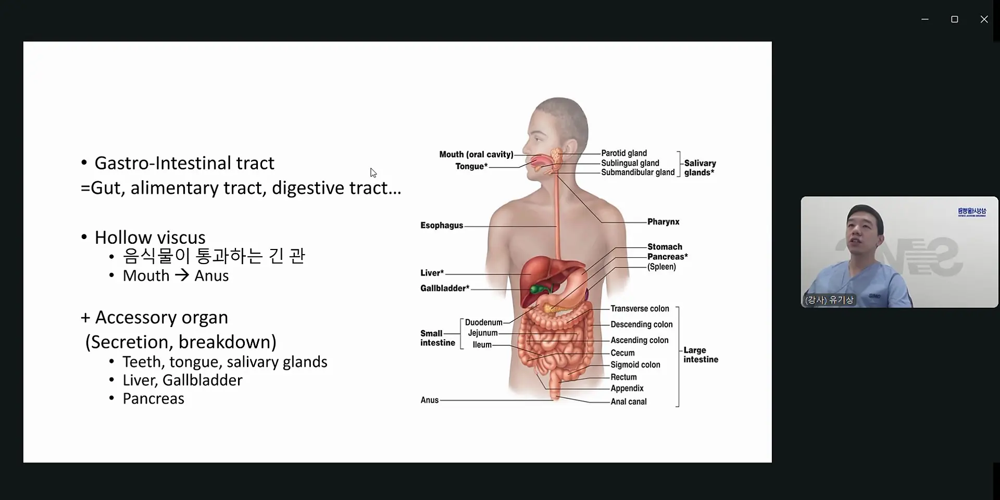
- -
- ×
- Gastro-Intestinal tract
- Mouth (oral cavity)
- Tongue*.
- -Submandibular gland_ glands*
- -Sublingual gland
- Parotid gland
- -Salivary
- =Gut, alimentary tract, digestive tract...
- Hollow viscus
- Esophagus
- Pharynx
- 음식물이 통과하는 긴 관
- Mouth Anus
- Liver*
- -(Spleen)
- Gallbladder*
- + Accessory organ
- (Secretion, breakdown)
- Teeth, tongue, salivary glands
- intestine
- Small
- Ascending colon
- Descending colon
- -Large
- intestine
- Liver, Gallbladder
- Pancreas
이런 기관들도 모두 다 소화기계(gastro-intestinal tract)라고 이해를 하시면 됩니다. 예를 들면 치아라든지 혀라든지 침샘(salivary gland), 그 외 간(liver)이나 담낭(gallbladder), 췌장(pancreas) 이런 것들도 모두 다 소화기관에 포함된다고 생각하시면 됩니다. 별표가 되어 있습니다.
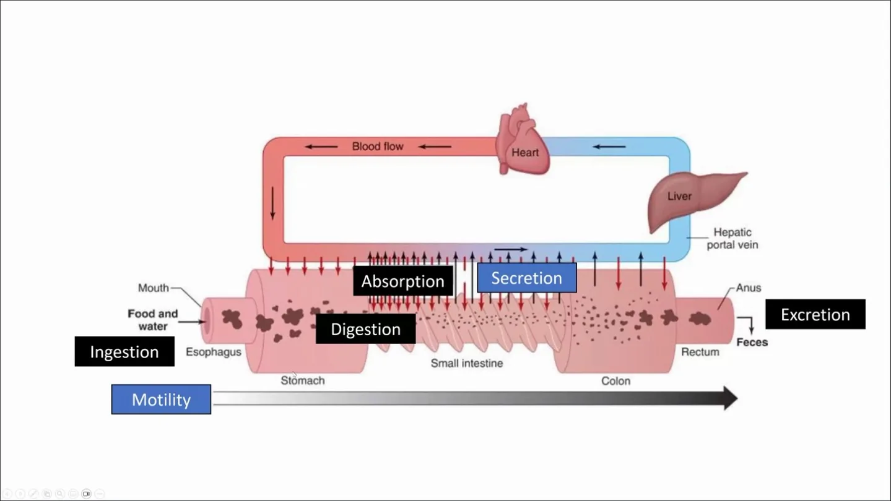
-
- Blood flow
- Hepatic
- portal vein
- Absorption
- Secretion
- Food and
- Excretion
- water
- Digestion
- Ingestion
- Esophagus
- Small intestine
- Stomach
- Motility
소화기관의 기능은 크게 섭취(ingestion), 소화(digestion), 흡수(absorption), 분비(secretion) 이렇게 네 가지로 나누어서 이야기를 할 수 있고요. 이 중에서 소화는 크게 기계적 소화와 화학적 소화로 나누어서 볼 수 있습니다. 기계적 소화는 음식물의 성질 자체가 변하지 않지만 잘게 분쇄시켜서 소화할 수 있는 표면적을 넓힘으로 인해서 소화 효소와 접촉할 수 있는 이런 면을 넓히는 작용이고요. 입에서의 음식을 부수는 저작작용이라든지 위와 장의 연동운동 같은 것들이 있겠습니다. 화학적 소화는 소화된 물질들이 혈류로 원활하게 흡수가 될 수 있도록 하기 위해서 고분자 물질에서 저분자 물질로 분해하는 작용을 이야기하고요. 이것을 위해서는 소화액이 장관 내로 분비될 수 있는 분비의 과정과 그 다음에 입에서 섭취한 음식물이 항문까지 이동을 하게 되는 운동성(motility) 이 두 가지 과정을 필수적으로 요구를 하게 됩니다. 저희가 알고 있는 소화기계에 작용하는 약들은 대부분 분비와 운동성을 조절하는 방법으로 작용을 하게 됩니다.
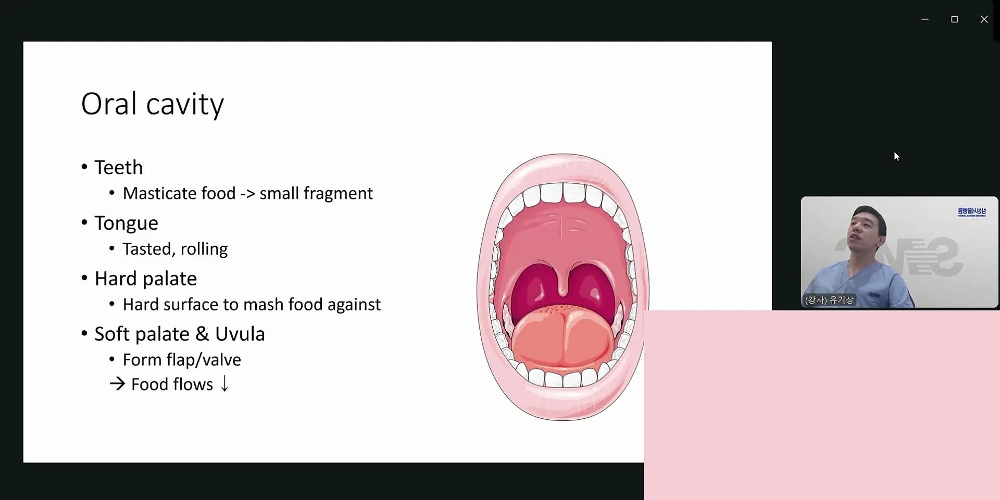
ㅁ
- Ora cavity
- Teeth
- Masticate food-> small fragment
- Tasted, rolling
- Hard palate
- Hard surface to mash food against
- Soft palate & Uvula
- Form flap/valve
- 〉 Food flows
우리가 가장 먼저 접하는 소화기관은 구강(oral cavity)이고요. 구강 내에는 치아와 혀, 경구개(hard palate)와 연구개(soft palate), 목젖(uvula) 등이 있습니다. 치아는 음식을 씹어서 잘게 부숴주는 기계적인 소화작용을 하게 해주고요. 혀는 잘게 부순 음식물이 침과 적절하게 혼합이 될 수 있도록 해주고요. 경구개는 혀가 음식물을 부술 때 있어서 해주는 도마 역할을 해준다고 이해하시면 됩니다. 연구개와 목젖은 여기에서 저작을 하면서 이런 음식물 내용들이 코 쪽으로 역류하는 것을 막아줄 수 있는 이런 판막(valve) 역할을 해주게 됩니다.
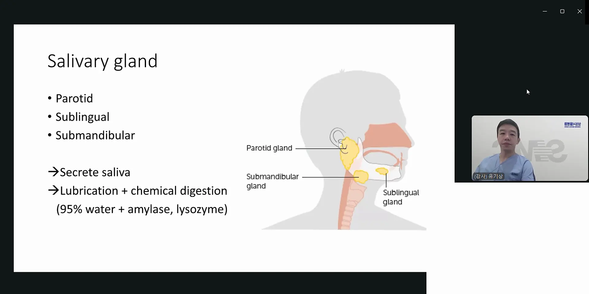
×
- Salivary gland
- Parotid
- Sublingual
- Submandibular
- Parotid gland
- ecrete saliva
- Submandibular
- Lubrication + chemical digestion
- gland
- Sublingual
- (95% water + amylase, lysozyme)
- gland
침샘은 크게 위치에 따라서 귀밑샘(parotid gland), 설하선(sublingual gland), 턱밑샘(submandibular gland) 이렇게 총 세 가지로 나누어서 이야기를 하고 있고요. 턱밑샘이 가장 많이 침을 분비한다고 알려져 있습니다. 아무래도 침을 분비하는 역할을 하면서 이 침은 입안에 음식물이 내려갈 수 있도록 해주는 이런 윤활 역할을 해주게 되고 이 외에도 아밀라아제(amylase)와 소량의 리파아제 이런 것들을 포함을 해서 탄수화물과 지방의 소화를 시작을 해주게 됩니다. 그 외에도 라이소자임(lysozyme) 같은 것들을 포함을 하고 있어서 박테리아를 조절을 해주거나 충치를 예방을 해주는 역할도 하고 있습니다.
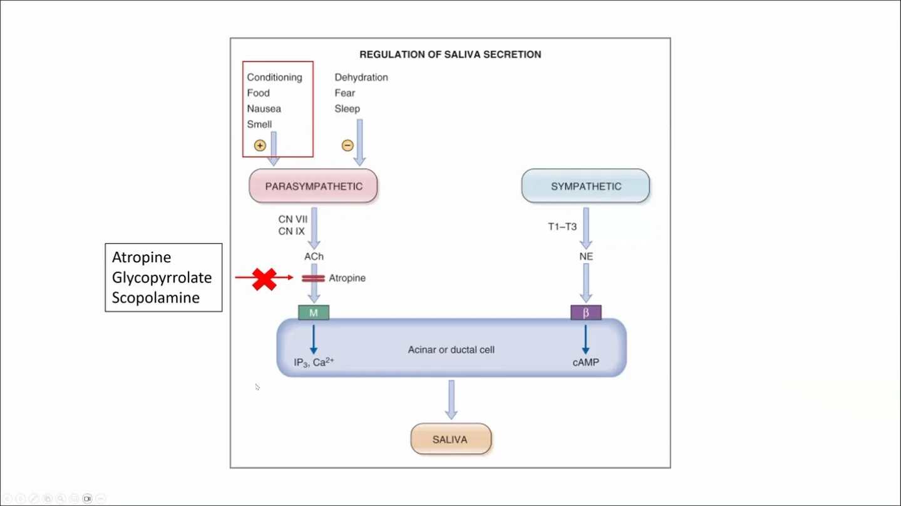
REGULATION OF SALIVA SECRETION
| Conditioning Dehydration | ||
|---|---|---|
| Food Fear | ||
| Nausea Sleep | ||
| Smell | ||
| PARASYMPATHETIC | ||
| Atropine | ACh | |
| Glycopyrrolate | Atropine | |
| Scopolamine | ||
| Acinar or ductal cell | ||
| SALIVA |
이런 침분비는 다른 소화 효소와는 달리 교감신경(sympathetic)과 부교감신경(parasympathetic) 모두에 의해서 항진이 되게 됩니다. 물론 대부분은 부교감신경에 의해서 항진이 되게 되는데요. 우리가 음식물을 본다든지 아니면 냄새를 맡는다든지 이런 것들을 통해서 부교감신경이 항진이 되게 되면 안면신경(CN VII)과 설인신경(CN IX)을 통해서 아세틸콜린(ACh)의 분비가 되게 되고요. 이 아세틸콜린이 무스카린 수용체(M)에 작용을 하게 되면 침이 분비가 되게 됩니다. 우리가 잘 알려져 있는 아트로핀(atropine)이라든지 글리코피롤레이트(glycopyrrolate)라든지 스코폴라민(scopolamine) 같은 약들은 무스카린 수용체를 차단을 해서 아세틸콜린이 작용하는 것을 막아서 침 분비를 억제하는 것으로 알려져 있습니다.
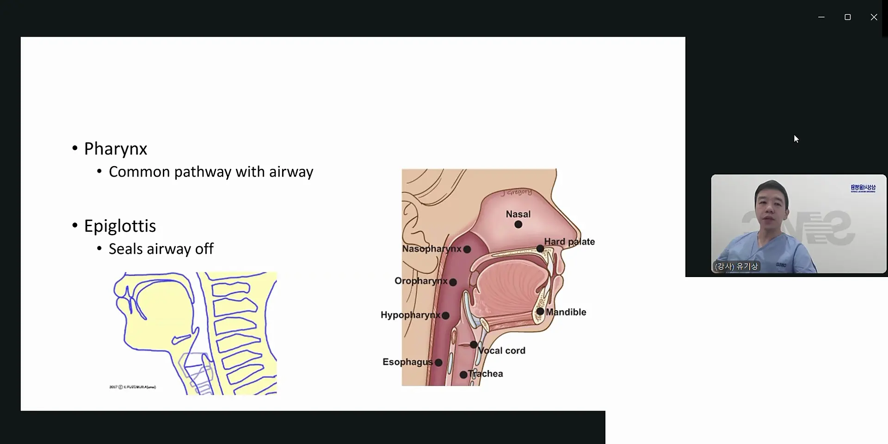
• Pharynx
- Common pathway with airway
- Epiglottis
- Nasal
- Seals airway off
- Nasopharynx ®
- Hard palate
- Oropharynx •
- Hypopharynx
- Mandible
- Nocal cord
- Esophagus
인두(pharynx)는 위장관과 기도(airway)가 함께 공존하는 곳이고요. 후두개(epiglottis)는 기도를 덮어서 음식물이 인두로만 내려갈 수 있도록 해주는 역할을 해주게 됩니다. 음식물을 씹고 나면 구강을 통과하고 난 이후에 비인두(nasopharynx)가 위로 올라가고 후두개가 아래로 내려가면서 사실은 이게 아래로 내려간다기보다는 후두가 위로 올라오면서 기도로 음식물이 흡인되는 것을 막아주게 됩니다.
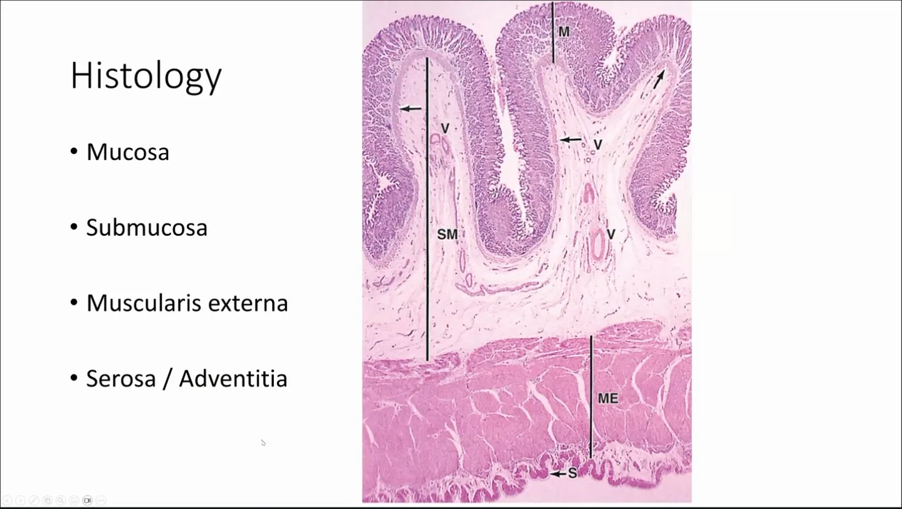
Histology
- Mucosa
- Submucosa
- Muscularis externa
- Serosa / Adventitia
위장관에 대해서 본격적으로 말씀드리기 전에 조직학적인 부분을 좀 말씀을 드리면 모든 위장관은 기본적으로 이렇게 기본적으로 네 가지 층으로 이루어져 있습니다.
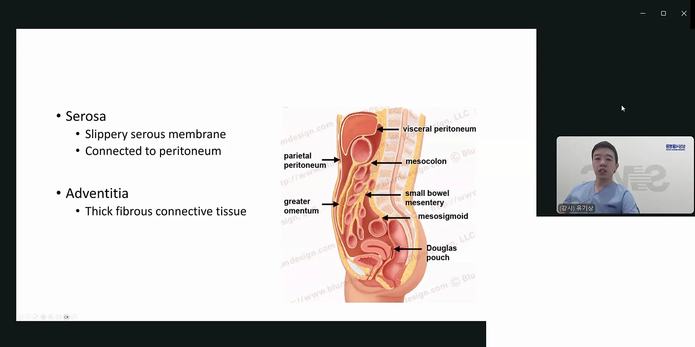
| • Serosa | LLC | |
|---|---|---|
| • Slippery serous membrane | mdesign | Visceral peritoneum |
| • Connected to peritoneum | ||
| parietal | ||
| peritoneum | ||
| • Adventitia | small bowel | |
| • Thick fibrous connective tissue | greater omentum | mesentery mesosigmoid |
| mdesign | pouch Douglas | |
| •sign.com |
바깥에서부터 살펴보면 장막(serosa)는 가장 바깥쪽에 있는 미끈미끈한 장액막(serous membrane)이고요. 내장 복막(visceral peritoneum)하고 동의하다고 생각하시면 됩니다. 이게 실제로는 장관의 장막과 내장 복막은 동의하고 이 사이에 있는 공간을 복강이라고 이야기를 하고 실제로 존재하는 공간이라기보다는 잠재 공간입니다. 그래서 어떤 이유에서든 이 공간에 물이 차게 되면 저희가 복수다 라고 이야기를 하고 공기가 차게 되면 기복입니다. 라고 이야기를 하게 됩니다. 식도(esophagus) 같은 경우에는 복강 안에 있는 게 아니라 흉강 내에 있기 때문에 장막이 아니라 외막(adventitia)라고 하는 주변과 딱딱하게 붙어있는 두꺼운 섬유성 결합조직으로 되어 있고 여기에는 연동성이 거의 없다고 생각하시면 됩니다.
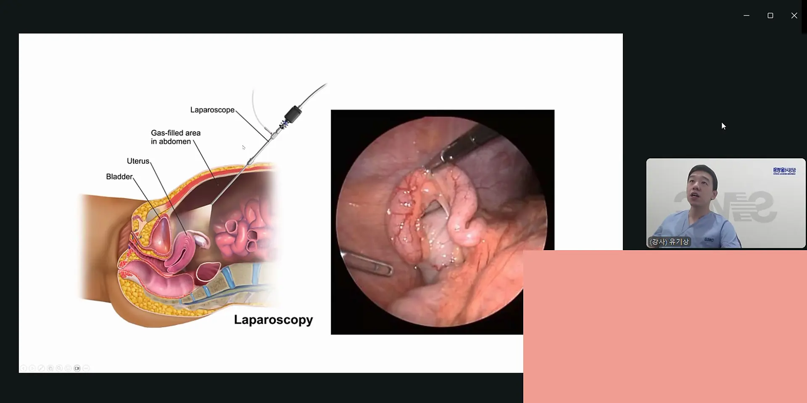
Laparoscope
- Gas-filled area
- in abdomen
- Uterus
- Bladder.
- Laparoscopy
그래서 아까 말씀드린 것처럼 이 복강 안에다가 공기를 집어넣으면 안쪽에 있는 장기들을 우리가 볼 수 있기 때문에 이렇게 복강경(laparoscope)으로 수술을 하게 되고요. 실제로 이렇게 복강경으로 들어가서 봤을 때 장 표면의 매끈매끈한 면이 내장 복막인 장막라고 생각하시면 되고 바깥에 이 복벽을 둘러싸고 있는 이 면들이 벽측 복막(parietal peritoneum)이다 라고 이해를 하시면 됩니다.
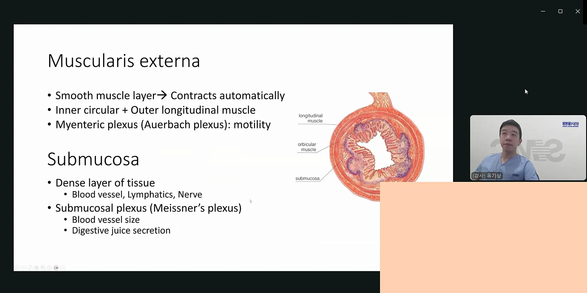
×
- Muscularis externa
- Smooth muscle layer> Contracts automatically
- Inner circular + Outer longitudinal muscle
- Myenteric plexus (Auerbach plexus): motility
- Submucosa
- Dense layer of tissue
- Blood vessel, Lymphatics, Nerve
- Submucosal plexus (Meissner's plexus)
- Blood vessel size
- Digestive juice secretion
외근층(muscularis externa) 혹은 고유근(muscularis propria)이라고 이야기를 하고요. 고유근이라는 것은 고유근이라고 이야기를 합니다. 평활근(smooth muscle)로 이루어져 있기 때문에 우리가 움직이자고 한다고 움직이는 것이 아니라 불수의적으로 수축 및 이완을 하게 되고요. 점막에 있는 점막근판에도 근육이 어느 정도 있지만 가장 두꺼운 근육층은 외근층이라고 이해를 하시면 됩니다. 크게 내윤주근(inner circular muscle)과 외종주근(outer longitudinal muscle)로 되어 있고요. 이 두 근육층 사이에는 장근신경총(myenteric plexus)이라고 하는 신경총이 존재를 하게 됩니다. 점막하층(submucosa)에도 마찬가지로 신경총이 존재를 하게 되는데요. 여기에는 마이스너 신경총(Meissner plexus)라고 하고요. 아까 이 장근신경총 같은 경우에는 주로 운동성을 조절을 하게 되고 마이스너 신경총, 점막하신경총(submucosal plexus) 같은 경우에는 주로 효소 분비에 좀 더 영향을 많이 하게 됩니다. 점막하층 같은 경우에는 콜라겐 엘라스틴 등으로 이루어진 굉장히 치밀한 층이고요. 혈관(blood vessel)이라든지 림프관(lymphatics), 신경을 주로 많이 포함을 하고 있습니다. 그래서 가장 치밀한 층은 점막하층이라고 이해를 하시면 될 것 같습니다.
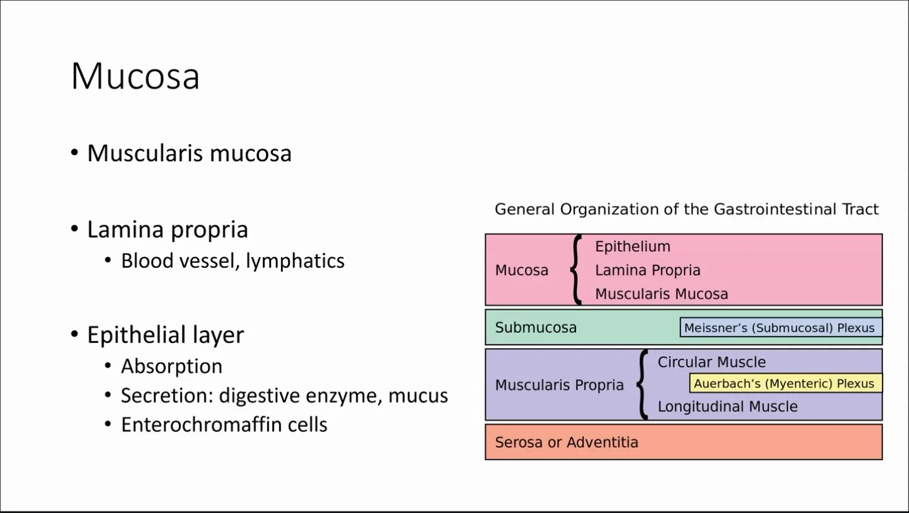
.
| Mucosa | ||
|---|---|---|
| • Muscularis mucosa | ||
| General Organization of the Gastrointestinal Tract | ||
| • Lamina propria | ||
| • Blood vessel, lymphatics | Mucosa | Epithelium Lamina Propria |
| Muscularis Mucosa | ||
| • Epithelial layer | Submucosa | Meissner's (Submucosal) Plexus |
| • Absorption | Circular Muscle | |
| • Secretion: digestive enzyme, mucus | Muscularis Propria | Auerbach's (Myenteric) Plexus |
| Longitudinal Muscle | ||
| • Enterochromaffin cells | ||
| Serosa or Adventitia |
점막에는 점막근판(muscularis mucosa)과 고유판(lamina propria) 층이 있고요 그 다음에 상피층(epithelial layer), 가장 바깥쪽에 있는 상피층이 존재를 하고 있습니다. 고유판에도 소량의 혈관과 림프관이 존재를 하고 있고요 점막근판에도 아까 말씀드린 것처럼 근육층이 있어서 장관의 움직임을 어느 정도는 도와주고 있습니다. 상피층에는 Absorption이나 Secretion을 담당하게 되는 이런 장크롬친화세포(enterochromaffin cell)들이 존재해서 내분비도 같이 담당을 하고 있다고 이해를 하시면 됩니다. 이것이 개략적인 층에 대한 설명이고요.
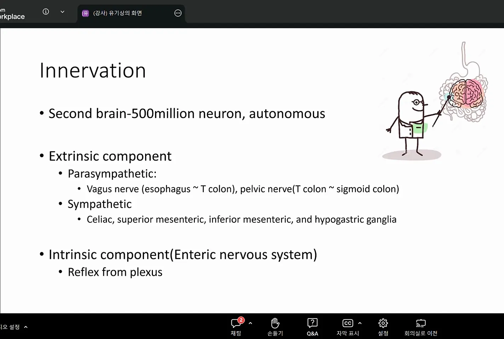
- Workplace
- ~
- (유 (강사) 유기상의 화면
- ®
- Innervation
- Second brain-500million neuron, autonomous
- Extrinsic component
- Parasympathetic:
- Vagus nerve (esophagus ~T colon), pelvic nerve(T colon ~ sigmoid colon)
- Sympathetic
- Celiac, superior mesenteric, inferior mesenteric, and hypogastric ganglia
- Intrinsic component(Enteric nervous system)
- Reflex from plexus
- 오디오 설정 ^
- ^
이번에는 위장관에서 굉장히 중요한 부분인 신경지배(innervation)에 대해서 말씀을 드리겠습니다. 뇌와 척수를 제외하고서는 가장 많은 신경세포(neuron)를 가지고 있고 한 5억 개 정도의 신경세포가 존재한다고 합니다. 뇌의 명령이 없더라도 반사반응을 수행할 수 있어서 제2의 뇌(second brain)이라고도 이야기를 합니다. 위장관의 신경지배는 크게 바깥에서 들어오는 신호로 인해서 작동을 하는 외인성 성분(extrinsic component)과 장 내부에서 만들어내는 신호로 움직이게 되는 이런 내인성 성분(intrinsic component) 두 가지로 존재하게 되고요. 외인성 성분은 바깥에서 들어오는 부교감신경계, 교감신경 이런 것들로 바깥에서 신호가 들어오게 되고요. 내인성 성분 같은 경우에는 장관 내에서 신호들을 만들어내는 그래서 어떤 면에서는 반사(reflex)를 통해서 움직이게 되는 그런 것들로 작용을 하게 됩니다.
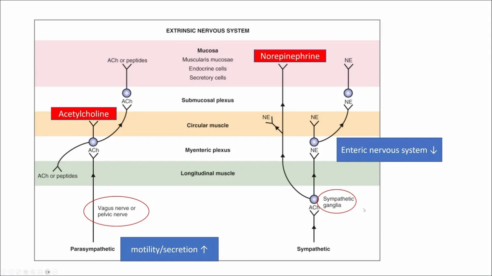
ㅁ
- EXTRINSIC NERVOUS SYSTEM
- ACh or peptides
- Muscularis mucosae
- Mucosa
- Norepinephrine
- Endocrine cells
- Secretory cells
- Submucosal plexus
- Acetylcholine
- NE
- Circular muscle
- Myenteric plexus
- Enteric nervous system /
- ACh or peptides
- Longitudinal muscle
- Sympathetic
- pelvic nerve
- Vagus nerve or
- Parasympathetic
- motility/secretion 7
- 0
외인성 신경계(extrinsic nervous system)를 먼저 살펴보면 부교감신경과 교감신경으로 이루어져 있고요. 부교감신경은 주로 운동성과 분비를 항진시키는 그런 방향으로 자극을 하게 됩니다. 미주신경(vagus nerve)과 골반신경(pelvic nerve)에서 오는 신호를 위장관으로 아세틸콜린을 통해서 전달을 하게 되고요. 이런 것들이 주로 그렇게 전달을 하게 되고요. 교감신경 같은 경우에는 장신경계(enteric nervous system)를 주로 억제를 하게 되는 이런 방식으로 작용을 하게 되기 때문에 주로 전반적인 위장관의 기능 자체를 떨어뜨리는, 그러니까 운동성과 분비를 억제하는 그런 방향으로 이루어지게 됩니다. 이것들은 주로 노르에피네프린(norepinephrine)에 의해서 조절이 되게 되고요. 우리가 흔히 생각하는 긴장을 하면 소화가 잘 안 된다는 것이 노르에피네프린의 작용이라고 생각하시면 될 것 같습니다.
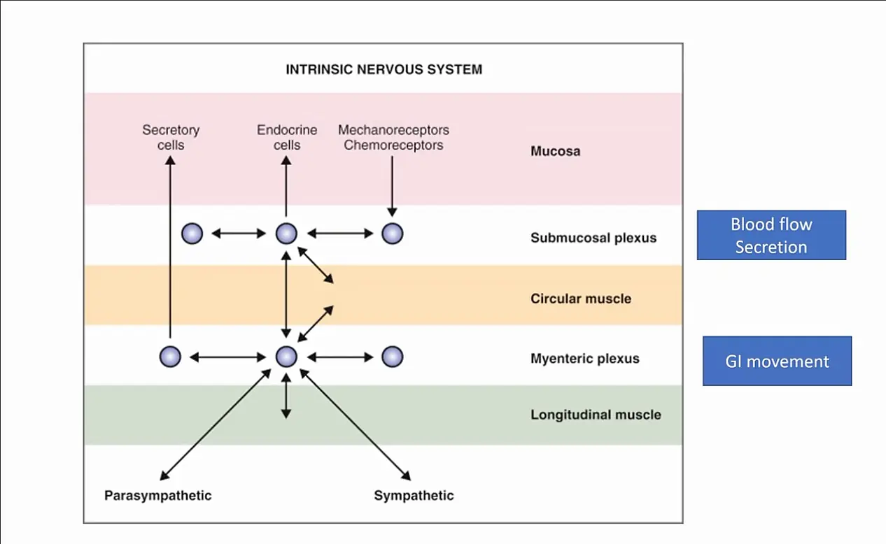
×
- INTRINSIC NERVOUS SYSTEM
- Secretory
- Endocrine
- cells
- Mechanoreceptors
- Chemoreceptors
- Mucosa
- Blood flow
- Submucosal plexus
- Secretion
- Circular muscle
- Myenteric plexus
- Gl movement
- Longitudinal muscle
- Parasympathetic
- Sympathetic
내인성 신경계는 위장관 내의 두 가지 신경총을 통해서 작동을 하게 됩니다. 아까 말씀드린 것처럼 장근신경총과 점막하신경총이 있고요. 점막하신경총은 주로 혈류, 혈관의 확장이나 수축을 통해서 혈류를 조절을 하게 되고 또한 점막에 있는 이런 효소의 분비와 좀 더 많은 관여를 하게 됩니다. 장근신경총 같은 경우에는 이게 아까 평활근 사이에 있다고 말씀을 드렸는데요. 그러다 보니까 이게 평활근의 수축이라든지 이완, 즉 위장관의 운동성에 조금 더 많은 관여를 하게 됩니다. 보통 이제 이런 아세틸콜린이라든지 물질 P 같은 것에 의해서 수축을 조금 더 유발을 하게 되고요. NO라든지 VIP 같은 것에 의해서 이완을 유발하게 됩니다. 그 외에도 노르에피네프린이라든지 세로토닌이라든지 도파민, 콜레시스토키닌, 소마토스타틴, 엔케팔린 같은 수많은 신경전달물질을 통해서 이런 내인성 신경계가 작동을 하게 되는데요. 이런 많은 약들이 주 신경전달물질들을 표적으로 작동을 하도록 되어 있습니다. 그 외에도 위장관 내의 수용체에서 감각을 대부분의 경우에는 이런 반사를 통해서 각각의 신경총 혹은 신경계, 자율신경계 혹은 뇌로 이렇게 전달을 하게 되고요. 그 외에도 이런 호르몬 신호를 통해서도 전달을 하게 됩니다.
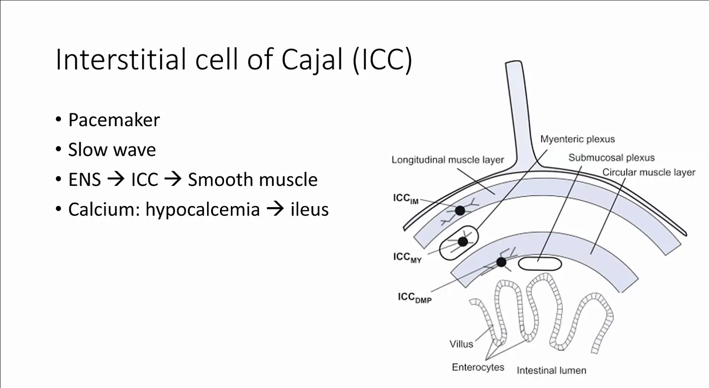
×
- Interstitia cell of Caja (ICC)
- Pacemaker
- Slow wave
- Longitudinal muscle layer
- Myenteric plexus
- Submucosal plexus
- ENS > ICC > Smooth muscle
- Circular muscle layer
- Calcium: hypocalcemia > ileus
- Villus
- Enterocytes
그래서 우리가 이런 것들을 조절하는 세포 중에 하나가 카할 간질세포(interstitial cell of Cajal)라고 이야기를 하는데요. 이것은 박동조율(pacemaker) 역할을 하고 장근신경총, 평활근 세포 안에 있는 장근신경총의 존재를 하면서 이런 느린 파동(slow wave)을 계속해서 만들어낼 수 있도록 합니다. 카할 간질세포가 작동을 하는 데 있어서 칼슘(calcium)이 굉장히 중요한 역할을 하기 때문에 저칼슘혈증(hypocalcemia)이 발생을 하게 되면 카할 간질세포가 작동을 제대로 하지 못하게 되면서 장마비(ileus)가 발생을 하는 것으로도 알려져 있습니다.
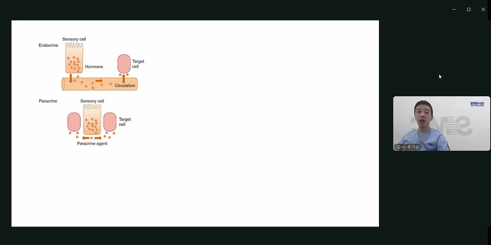
ㅁ
- Sensory cell
- Endocrine
- Target
- Circulation
- Paracrine
- Sensory cell
- Target
- Paracrine agent
우리가 위장관이 움직이는 것은 아까 이런 신경 신호에 의해서도 작동을 하게 되지만 내분비(endocrine) 혹은 주변분비(paracrine) 신호에 의해서도 위장관이 조절되게 되는데요.
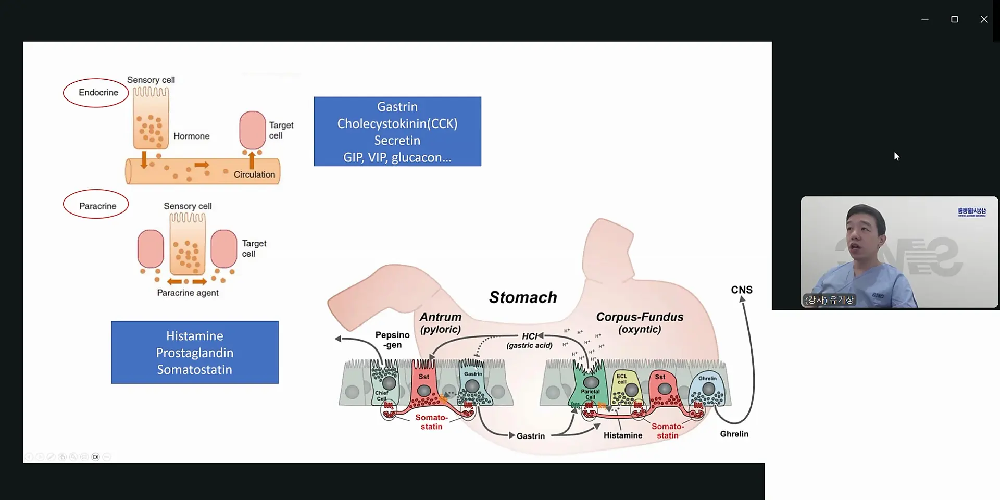
-
- Sensory cell
- Gastrin
- Target
- Cholecystokinin(CCK)
- Secretin
- GIP, VIP, glucacon...
- Circulation
- Paracrine
- Sensory cell
- Target
- cell
- Paracrine agent
- Stomach
- Antrum
- Corpus-Fundus
- Histamine
- Pepsino
- (pyloric)
- (oxyntic)
- Prostaglandin
- Somatostatin
- Somato-
- statin
감각 세포에서 실제로 분비된 호르몬이 우리 몸의 순환(circulation)을 타고 표적까지 도달을 해서 작동을 하게 되는 것을 내분비라고 이야기를 하고요. 우리가 가스트린(gastrin)이라든지 콜레시스토키닌(cholecystokinin), 세크레틴(secretin), GIP, VIP, 글루카곤 같은 것들이 이렇게 작용을 하게 됩니다. 주변분비는 감각 세포에서 분비되는 물질들이 확산을 통해서 바로 옆에 있는 표적으로 작용을 할 수 있도록 해주는 것으로 히스타민(histamine)이라든지 프로스타글란딘(prostaglandin)이라든지 소마토스타틴(somatostatin) 이런 것들이 주변분비의 대표적인 작용이라고 이해를 하시면 됩니다. 예를 들면 G세포에서 분비된 가스트린 같은 경우에는 혈류를 타고 내분비하게 벽세포(parietal cell)까지 가서 작동을 하게 되고요. 장크롬친화유사세포에서 분비되는 히스타민 같은 경우에는 확산을 통해서 옆에 있는 벽세포를 자극을 해서 위산(gastric acid)의 분비를 조절을 하게 됩니다.
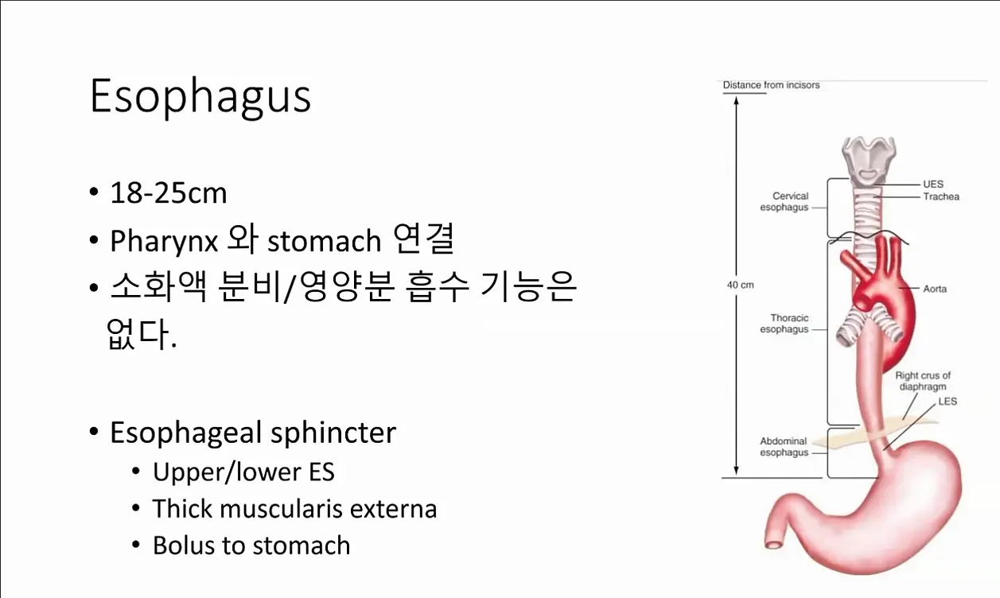
Esophagus
- 18-25cm
- Pharynx 와 stomach 연결
- 소화액 분비/영양분 흡수 기능은
- 없다.
- Esophageal sphincter
- Upper/lower ES
- Thick muscularis externa
- Bolus to stomach
다시 위장관으로 넘어가서 식도는 18에서 25cm 정도 되는 관이고 인두와 위를 단순히 연결을 해주는 기능이고 소화액의 분비라든지 영양분의 흡수 기능은 없습니다. 단지 위아래로 조임근(esophageal sphincter)이 존재하게 되는데요. 상부 식도조임근과 하부 식도조임근이 있어서 이거는 외근층 근육이 굉장히 두꺼워진 형태로 이해를 하시면 됩니다. 그래서 음식물이 다시 식도 쪽으로 역류를 하지 않고 삼키는 동안에 기도를 보호하고 산성 위 분비물로부터 식도를 보호해줄 수 있는 역할을 하게 됩니다.
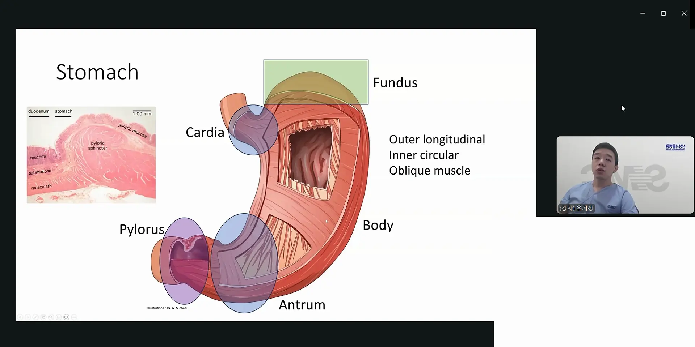
Stomach
- Fundus
- duodenum
- 1.00 mm
- pyloric
- gastric mucosa
- Cardia
- Outer longitudinal
- mucosa
- Inner circular
- submucosa
- Oblique muscle
- muscularis
- Pylorus
- Body
- Antrum
위는 총 5개의 부분으로 이루어지게 되는데요. 분문(cardia)과 기저부(fundus), 체부(body), 전정부(antrum), 유문(pylorus)으로 이루어져 있습니다. 내윤주근이 두꺼워져 있는 부분이 유문 조임근이라고 이야기를 하고요. 충분히 잘게 부서지지 않은 음식물이나 위산이 십이지장(duodenum)으로 넘어가서 십이지장 점막을 상하게 하는 것을 막아주는 역할을 하고요. 위는 다른 장관들과는 달리 내측 근육의 안쪽에 빗근(oblique muscle)이 한 겹이 더 있습니다. 그러다 보니까 이게 다른 위장관에 비해서 굉장히 두껍고요. 더 잘 늘어나고 수축할 때의 힘이 굉장히 강하기 때문에 이런 음식물을 부술 수 있는 기계적 소화에 더 유리한 구조라고 이해를 하시면 됩니다.
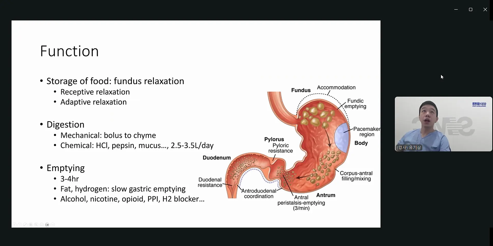
×
- Function
- Storage of food: fundus relaxation
- Receptive relaxation
- Fundus
- Accommodation
- .../
- Adaptive relaxation
- Digestion
- Mechanical: bolus to chyme
- Pylorus
- Chemical: HCl, pepsin, mucus..., 2.5-3.5L/day
- Pyloric
- Duodenum
- Emptying
- Corpus-antral
- 3-4hr
- Duodenal
- filling/mixing
- Fat, hydrogen: slow gastric emptying
- Alcohol, nicotine, opioid, PPl, H2 blocker...
- resistance
- Antroduodenal
- Antrum
- peristalsis-emptying
- (3/min)
위의 기능은 크게 저장, 소화, 배출 이렇게 세 가지로 나누어서 이해할 수 있겠습니다. 저장 같은 경우는 기저부는 굉장히 작아 보이지만 음식물을 보기만 해도 기저부가 어느 정도 늘어나게 되고요. 그것을 수용 이완(receptive relaxation)이라고 이야기를 합니다. 그 다음에 음식물이 실제로 위로 들어왔을 때 늘어나는 것, 이것을 적응 이완(adaptive relaxation)이라고 이야기를 하고요. 원래 기저부 용적이 50cc 정도밖에 안 되는데 이게 이완이 되면 1.5리터까지, 30배까지 커질 수 있다고 이야기를 하고 이것을 위 수용이라고 이야기를 합니다. 기계적 소화는 아까 말씀드린 것처럼 이런 빗근까지 가지고 있는 두꺼운 근육층을 통해서 음식물을 굉장히 잘게 부숴내는 이런 역할을 하게 되고요. 화학적 소화는 염산(HCl)과 펩신(pepsin), 점액(mucus) 등을 통해서 이루어지게 되고 특히 단백질(protein) 소화의 20% 이상을 차지하게 됩니다. 위에 있는 주름 사이에 위샘이 있고 거기에서 위액이 분비되고요. 하루에 2.5에서 3.5리터 정도의 위액이 분비되는 것으로 알려져 있습니다. 이렇게 위가 소화하는 작용을 3시간에서 4시간 정도 하게 되면 위산이 충분히 중화가 될 수 있도록 유문에서 중탄산염을 조금씩 분비를 하게 되고 이런 것들을 통해서 중화가 되게 되면 유문이 열리면서 배출이 진행을 하게 됩니다. 이 과정에는 3시간에서 4시간 정도 걸리는데 이 위 내용물이 지방이라든지 수소 이온을 많이 포함하게 되면 아무래도 조금 더 천천히 열리게 되고요. 그 외에도 오피오이드라든지 PPI라든지 이런 것들에 의해서 조금 더 배출이 늦어질 수 있습니다.
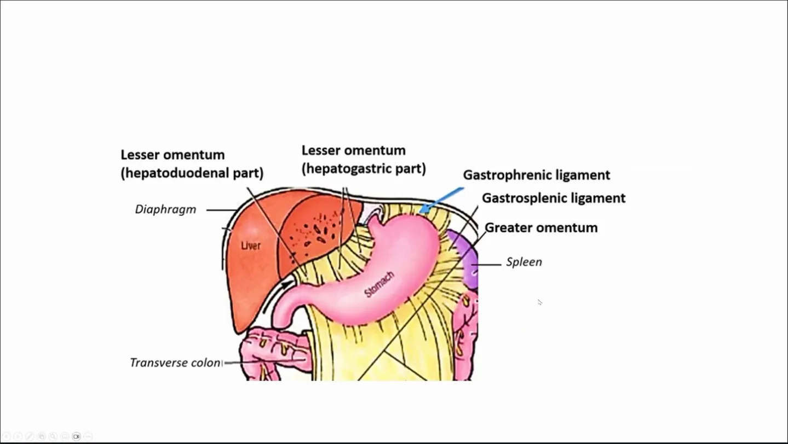
- Lesser omentum
- Lesser omentum
- (hepatoduodenal part)
- (hepatogastric part)
- Gastrophrenic ligament
- Diaphragm
- Gastrosplenic ligament
- Greater omentum
- Spleen
- Transverse coloni
이런 기계적 소화를 위해서 위는 굉장히 과한 운동을 하게 되는데요. 이때 이 위의 위치가 계속해서 유지가 될 수 있도록 잡아주는 것을 인대(ligament)라고 이야기를 하고요. 우리 흔히 팔다리에 있는 이런 인대와는 달리 지방조직으로 되어 있고 그것보다 훨씬 더 성긴 조직으로 되어 있습니다. 그리고 또한 위암 같은 것이 생겼을 때 여기에 있는 림프관을 따라서 암이 퍼져나가기도 합니다. 위횡격막(gastrophrenic) 인대가 제대로 작동을 하지 못했을 때
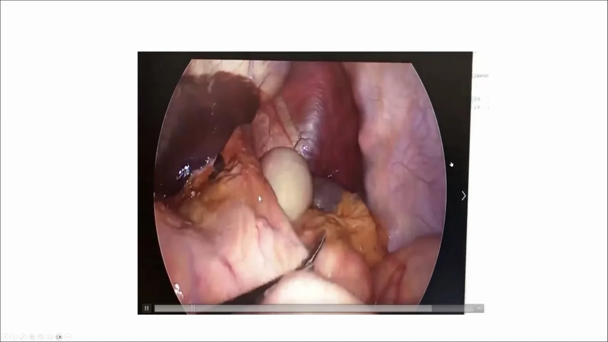
ㅁ
그래서 실제로 이게 인대가 제대로 역할을 하지 못했을 때 위가 지금 횡격막 위쪽까지 완전히 올라가 있는 이런 위 염전이 있는 것을
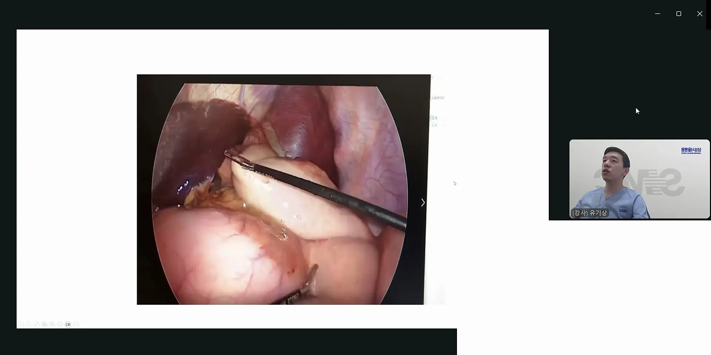
.-
지금 복강경으로 정복을 하고 있는 동영상이고요.
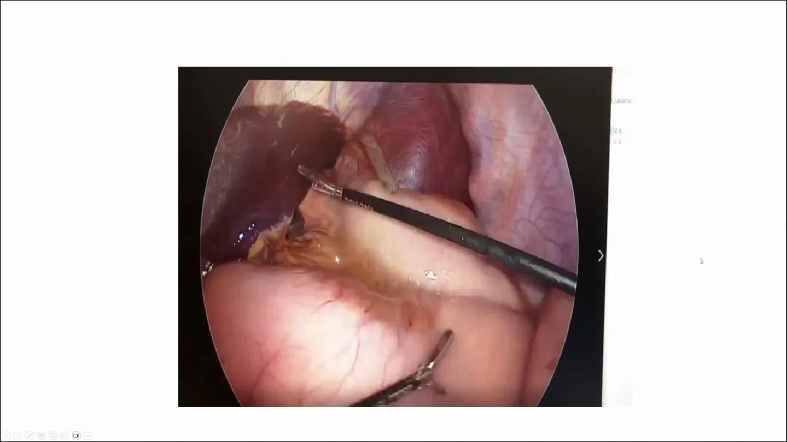
ㅁ
이렇게 위가 위쪽으로 확 올라가 버리고 그로 인해서 심한 경우에는 허혈까지 발생을 할 수 있는 그런 상황이라고 보시면 됩니다.
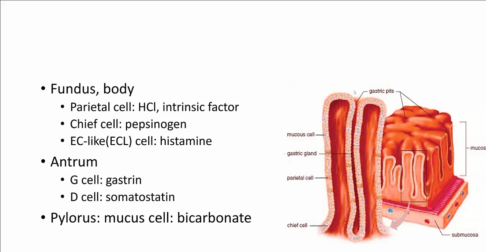
×
- Fundus, body
- Parietal cell: HCl, intrinsic factor
- Chief cell: pepsinogen
- EC-ike(ECL) cell: histamine
- mupous cell
- Antrum
- gastric gland
- G cell: gastrin
- parietal cell
- D cell: somatostatin
- Pylorus: mucus cell: bicarbonate
- chief cell
- submucosa
위벽을 살펴보면 여기 구멍이 있는데요. 이게 위소와(gastric pit)라고 이야기를 하고요. 실제로는 구멍 안쪽으로 굉장히 깊게 이어져 있고 이런 구멍 안쪽에는 위샘(gastric gland)이 있어서 위액을 분비합니다. 기저부와 체부에는 주로 벽세포(parietal cell)나 주세포(chief cell), 장크롬친화유사세포(ECL cell)가 있어서 히스타민이나 펩시노겐(pepsinogen), 염산을 주로 분비하게 되고요. 전정부에는 G세포(G cell)와 D세포(D cell)가 있어서 가스트린과 소마토스타틴 같은 호르몬을 분비하게 됩니다. 유문에는 중탄산염(bicarbonate)을 분비할 수 있는 점액세포가 있어서 위에 있는 내용물이 중화된 뒤 십이지장으로 넘어갈 수 있도록 해주는 역할을 합니다.
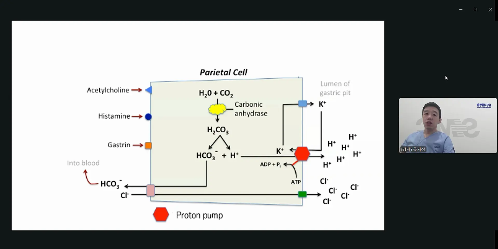
Parietal Cell
- Acetylcholine -> 스
- H,0 +CO2
- Bastric pit
- Lumen of
- Carbonic
- Histamine -> •
- anhydrase
- H,CO3
- Gastrin
- ^
- Into blood
- ATP
- 다
- 다-
- 다
- Proton pump
벽세포는 위산 조절을 위해서 사용하는 약제들이 주로 작용하는 표적이라고 보시면 되겠는데요. 보통 미주신경을 통해서 분비되는 아세틸콜린, 장크롬친화유사세포에서 분비되는 히스타민이 주변분비로 작용을 하기도 하고요. G세포에서 분비된 가스트린이 벽세포에 혈류를 타고 작용을 하게 되면 그런 것들에 의해서도 위산이 분비되는데요. 물과 이산화탄소가 만나 탄산(H2CO3)이 되고 이 중에서 중탄산염과 수소 이온으로 나뉘면서 수소이온펌프(proton pump)를 통해서 위산이 위 내강으로 분비됩니다.
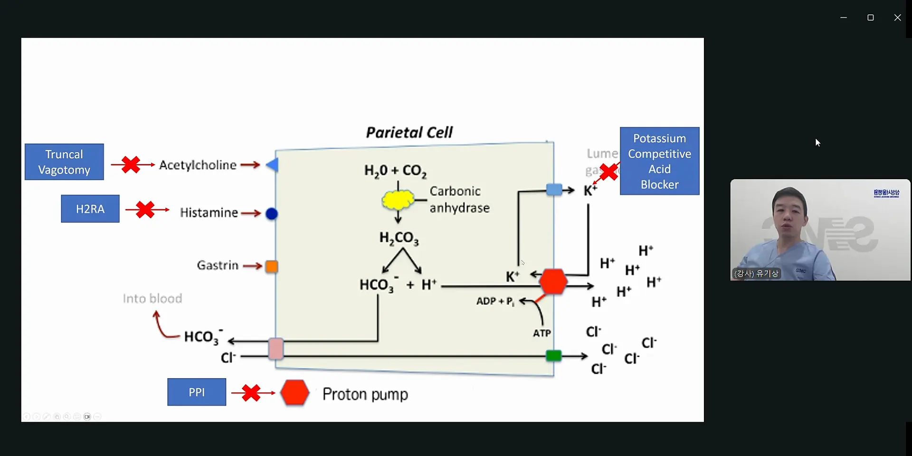
- Parietal Cell
- Potassium
- Vagotomy
- Truncal
- + Acetylcholine -
- H,0 +CO2
- Ba
- Lume
- Competitive
- Acid
- Carbonic
- 주
- Blocker
- H2RA
- Histamine-
- anhydrase
- Gastrin
- Into blood
- ATP
- 다
- 다
- 다
- PPI
- Proton pump
예전에는 미주신경을 잘라서 아세틸콜린이 분비되지 않도록 억제해주는 수술을 하기도 했고요. H2 차단제는 히스타민이 작동하는 것을 막아주는 역할을 하게 되고요. 양성자펌프억제제는 수소이온펌프를 막는 역할을 합니다. 최근에는 이 펌프를 통해 들어오는 칼륨(potassium)에 경쟁적으로 결합하는 P-CAB이라고 하는 약들도, 테고프라잔 같은 약들이 위산을 억제합니다. 이런 작용이 잘 되지 않으면 위산의 농도가 높아지면서 위 점막이 약해지고 천공이 나기도 합니다. 작은 구멍이라도 위 안의 압력이 높으면 음식물이 복강 전체를 오염시켜 범복막염이 되기도 합니다.
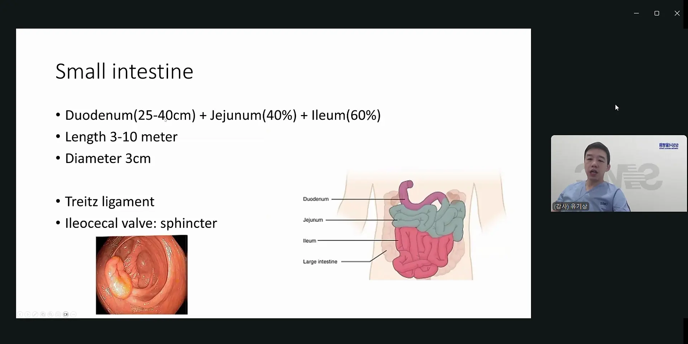
Small intestine
- Duodenum(25-40cm) + Jejunum(40%) + Ileum(60%)
- Length 3-10 meter
- Diameter 3cm
- Treitz ligament
- Duodenum
- lleocecal valve: sphincter
- Jejunum
- lleum-
- Large Intestine
소장은 가장 긴 장관이고요. 십이지장(duodenum)에서부터 공장(jejunum), 회장(ileum)으로 구성되어 있고 길이는 다음과 같습니다. 지름은 원래 3cm 정도인데 늘어나면 7에서 10cm까지 커질 수 있다고 합니다. 트라이츠 인대(Treitz ligament)를 통해서 십이지장과 공장의 경계가 생깁니다. 회맹판(ileocecal valve)이 회장과 대장의 경계가 되고, 조임근이라서 소장 내용물이 대장으로 넘어간 뒤 다시 역류하는 것을 막습니다.
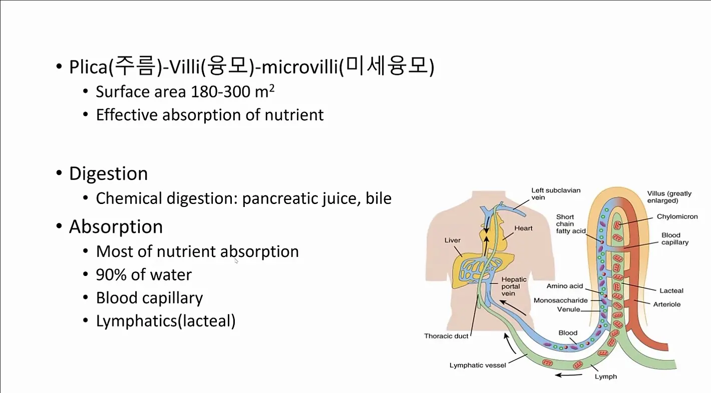
×
- Plica(주름) Vili(융모) microvilli(미세융모)
- Surface area 180-300 m2
- Effective absorption of nutrient
- Digestion
- Chemical digestion: pancreatic juice, bile
- Absorption
- Most of nutrient absorption
- 90% of water
- Blood capillary
- Arteriole
- Lymphatics(lacteal)
소장은 영양소(nutrient)를 흡수하기 위해서 굉장히 표면적을 넓히는 구조로 이루어져 있는데요. 가로주름인 윤상주름(plica)와 그 다음에 융모(villus), 미세융모(microvillus)를 통해서 표면적을 넓히게 되고요. 우리 몸에 300제곱미터 정도의 표면적(surface area)를 가지고 있어서 충분히 영양분을 흡수하기 좋은 형태로 되어 있습니다. 대부분 화학적 소화가 이루어지게 되고요. 십이지장에서 췌장액(pancreatic juice)이라든지 담즙(bile)을 통해서 탄수화물(carbohydrate)과 단백질, 지방을 소화시키고 흡수할 수 있습니다. 소화를 시키고 단당류로 분해를 하게 되고요. 그다음에 대부분의 소화 효소들이 소장을 통해서 흡수가 되게 되고요. 또한 물의 90% 정도가 흡수가 되게 됩니다. 수용성 영양소들은 혈액 모세혈관(blood capillary)을 통해서 문맥(portal vein)을 통해서 간으로 이동을 하게 되고요. 지용성 영양소들은 담즙 안에 있는 암죽관(lacteal)을 통해서 림프관을 따라서 유미조를 따라서 흉관(thoracic duct)을 통해서 왼쪽 쇄골하정맥(left subclavian vein)으로 배액됩니다. 그래서 이런 부분에 손상이 발생했을 때 유미가 새서, 수술한 환자에서 복강 안에서 혹은 목 수술을 하고 난 다음에 하얀 지방질이 많은 유미가 새는 것을 가끔 확인할 수 있습니다.
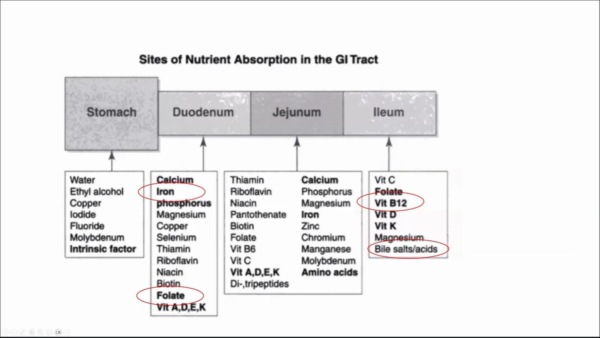
ㅁ
| Sites of Nutrient Absorption in the Gl Tract | ||||
|---|---|---|---|---|
| Stomach | Duodenum | Jejunum | lleum | |
| Water | Calcium | Thiamin | Calcium | VitC |
| Ethyl alcohol | Iron | Riboflavin | Phosphorus | Folate |
| lodide Copper | phosphorus Magnesium | Niacin Pantothenate | Iron Magnesium | Vit B12 |
| copper | Zinc | |||
| Nolybdenun | Selenium | Folate | Chromium | Magnesium |
| Intrinsic factor | Thiamin | Vit B6 | Manganese | Bile salts/acids |
| Riboflavin | Molybdenum | |||
| Niacin | Vit A,D,E,K | Amino acids | ||
| Di-,tripeptides | ||||
| Vit A,D,E,K |
철(iron)은 십이지장에서 흡수가 되게 되고요. 엽산(folate)도 역시 십이지장에서 흡수가 되게 되고요. 비타민 B12와 담즙산(bile acid)은 말단 회장에서 흡수가 됩니다. 말단 회장에서 흡수를 할 수 있는 것들이 굉장히 많고, 회맹판을 통해서 결장으로 넘어가는 것을 막아 흡수될 시간을 벌어 주기 때문에 회맹판이 손상을 받으면 장관의 길이가 남아 있어도 단장 증후군 같은 것이 생길 수 있어서, 수술할 때 회맹판이나 말단 회장은 남길 수 있으면 최대한 남기려고 합니다.
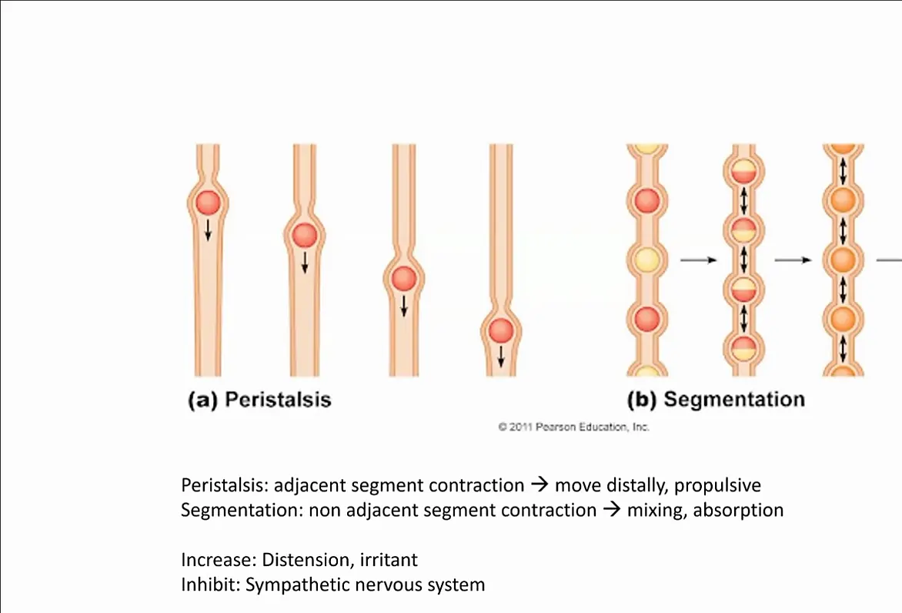
- (a) Peristalsis
- (b) Segmentation
- © 2011 Pearson Education, In:
- Peristalsis: adjacent segment contraction > move distally, propulsive
- Segmentation: non adjacent segment contraction > mixing, absorption
- Increase: Distension, irritant
- Inhibit: Sympathetic nervous system
소장의 운동은 연동운동(peristalsis)와 분절운동(segmentation)으로 이루어지는데요. 주변이 순차적으로 수축을 하면 음식물이 아래로 내려가는 연동운동을 하게 되고요. 분절운동은 위아래가 번갈아 수축을 해서 영양분이 흡수되도록 섞어 주는 역할을 합니다. 팽창이라든지 자극(irritant)이 있으면 연동운동이 더 촉진되고요. 교감신경이 활성화되면 운동 자체가 억제될 수 있습니다.
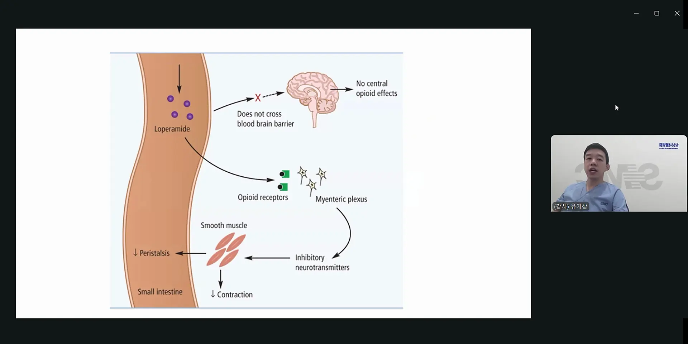
No central
- opioid effects
- Does not cross
- Loperamide
- blood brain barrier
- Opioid receptors
- Myenteric plexus
- Smooth muscle
- Inhibitory
- neurotransmitters
- Small intestine
- ✓ Contraction
연동운동을 저해하는 약 중에 하나인 로페라마이드(loperamide) 같은 경우에는 장근신경총(myenteric plexus)에 있는 오피오이드 수용체(opioid receptor)에 작용을 해서 억제성(inhibitory) 신경전달물질을 분비시키고, 그걸로 연동운동을 막아 장관 안에서 수축이 떨어집니다. 그러다 보니 설사라든지 단장 증후군에서 장 안에 있는 영양분을 흡수하는 데 도움을 줍니다.
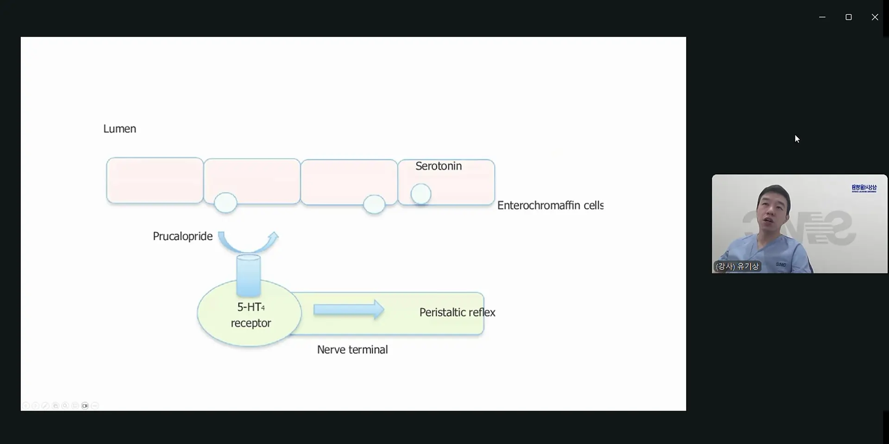
ㅁ
- Lumen
- Serotonin
- Enterochromaffin cells
- Prucalopride
- 5-HT4
- Peristaltic reflex
- receptor
- Nerve terminal
반대로 프루칼로프라이드(prucalopride) 같은 약들은 세로토닌 수용체인 5-HT4 수용체에 작용을 하고, 장크롬친화세포(enterochromaffin cell)에서의 세로토닌(serotonin) 분비를 촉진하면서 아세틸콜린 같은 신경전달물질을 분비하고, 그걸로 연동운동을 더 촉진해서 장관의 움직임을 항진시켜 줍니다.
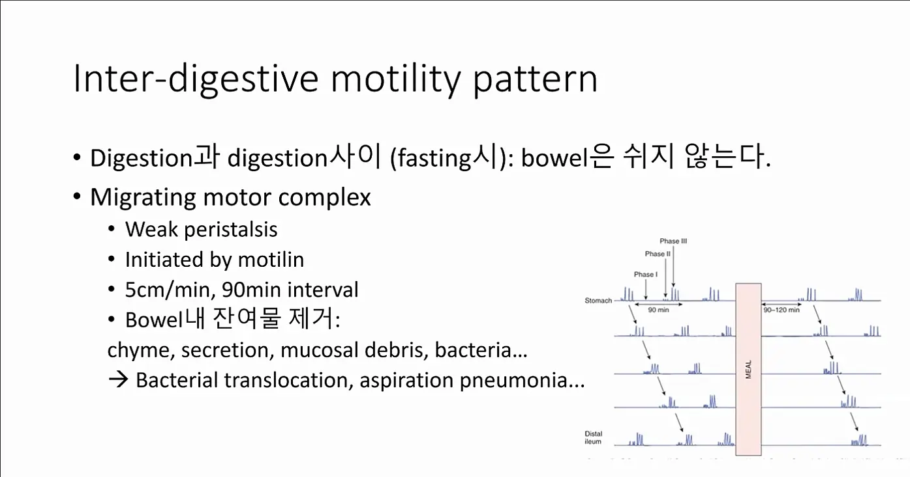
×
- Inter-digestive motility pattern
- Digestion과 digestion사이 (fasting시): bowel은 쉬지 않는다.
- Migrating motor complex
- Weak peristalsis
- Initiated by motilin
- 5cm/min, 90min interval
- Bowel내 잔여물 제거:
- chyme, secretion, mucosal debris, bacteria...
- * Bacterial translocation, aspiration pneumonia...
소화와 소화 사이, 음식물이 들어오지 않는 동안에도 위장은 어느 정도 움직이는데요. 이것을 소화간 운동 양식(inter-digestive motility pattern)이라고 하고, 이동성 운동 복합체(migrating motor complex)라고도 합니다. 약한 연동운동이고요. 모틸린(motilin)에 의해서 시작이 되는데, 음식물이 들어오면 이동성 운동 복합체 자체가 중단이 되고 식사에 따른 운동이 생깁니다. 분당 5cm, 90분 간격으로 작용을 하고요. 장관 안에 남은 음식물 찌꺼기, 분비되고 남은 효소, 점막 찌꺼기, 박테리아를 아래로 내려 제거합니다. 중환자에서는 이 역할이 떨어져 박테리아 전위(bacterial translocation)나 흡인성 폐렴(aspiration pneumonia)이 생길 수 있습니다.
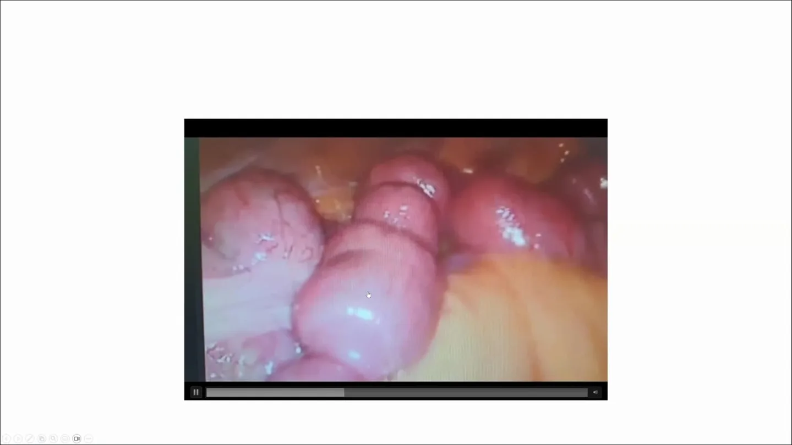
.
그래서 이런 환자가 수술 중인데요.
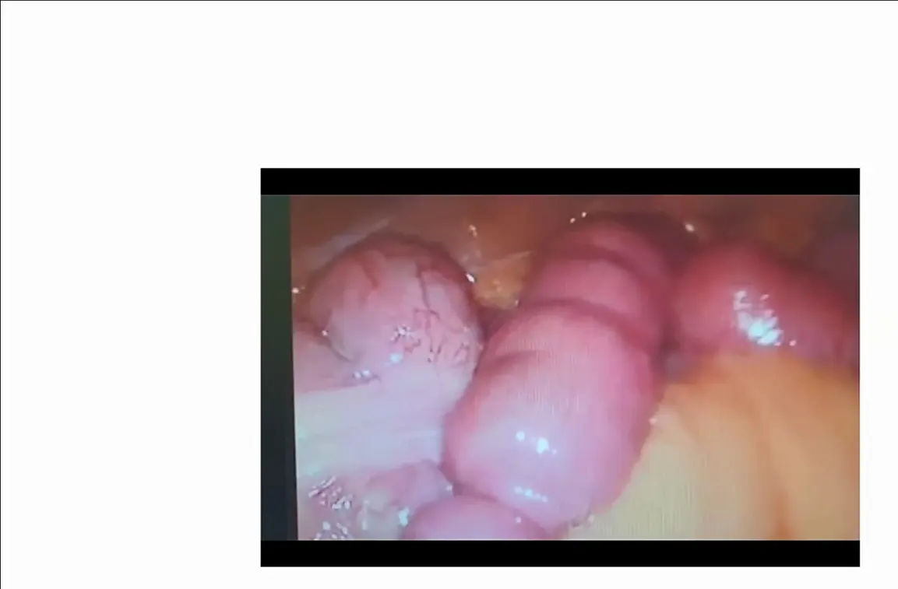
ㅁ
금식을 하고 있음에도 불구하고 장이 이렇게 움직이는 것을 보실 수 있습니다.
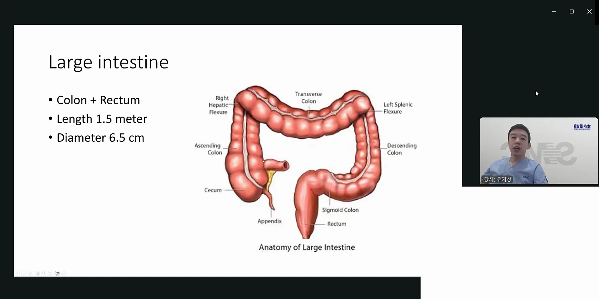
-
- Large intestine
- Colon + Rectum
- Hepatic
- Right
- Left Splenic
- Length 1.5 meter
- Flexure
- Diameter 6.5 cm
- Ascending
- Descending
- Colon
- Cecum
- Sigmoid Colon
- Anatomy of Large Intestine
대장은 맹장(cecum)과 결장(colon), 직장(rectum)으로 이루어져 있고요. 소장보다는 훨씬 굵고 짧습니다. 맹장은 소장과 결장을 연결해 주고, 음식물을 소장에서 받아 저장하는 역할을 하고요. 결장은 대장의 대부분을 차지하고, 직장은 항문으로 대변이 나가기 전에 대변을 저장해서 아무 때나 나가지 않게 합니다.
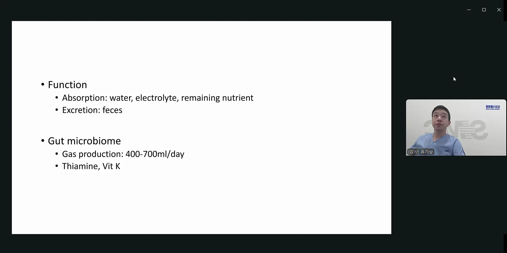
ㅁ
- Function
- Absorption: water, electrolyte, remaining nutrient
- Excretion: feces
- Gut microbiome
- Gas production: 400-700ml/day
- Thiamine, Vit K
기능은 흡수와 배출인데요. 영양분 흡수는 많이 일어나지 않고, 대부분은 물, 전해질, 남은 영양분이 흡수되고 대변의 형태로 배설(excretion)됩니다. 대변이 굳어서 항문으로 나가는 데는 수 시간에서 수 일이 걸립니다. 대장 안에 있는 장내 미생물(gut microbiome)은 다당류를 짧은사슬지방산으로 바꿔 흡수되게도 하고, 가스를 하루에 400에서 700ml 만듭니다. 그 외에 티아민과 비타민 K가 만들어지는 것을 돕습니다.
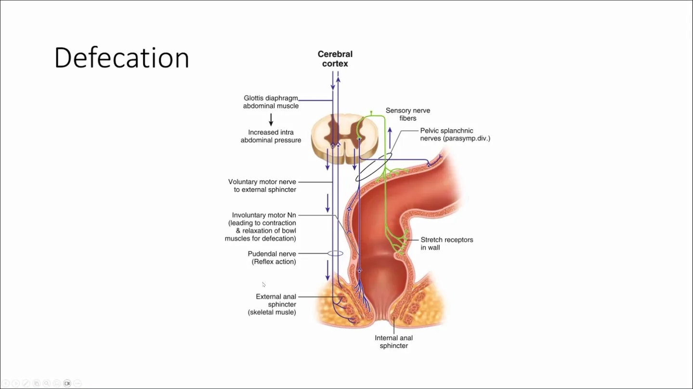
ㅁ
- Defecation
- Cerebral
- cortex
- abdominal muscle
- Glottis diaphragm_
- Sensory nerve
- abdominal pressure
- Increased intra
- Voluntary motor nerve -
- to external sphincter
- muscles for defecation)
- (leading to contraction
- Involuntary motor Nn -
- & relaxation of bowl
- Pudendal nerve -
- (Reflex action)
- (skeletal musle)
- External anal -
- sphincter
- Internal anal
- sphincter
배변(defecation)은, 직장에 변이 차면 직장벽이 늘어나고 벽에 있는 신장 수용체(stretch receptor)가 신호를 받아 위로 올리는 반사가 일어납니다. 불수의(involuntary) 신경을 통해 내항문 조임근(internal anal sphincter)을 이완시켜 변이 나올 수 있게 하는 것이 반사이고요. 직장이 늘어났다고 무조건 변이 나오면 안 되므로 수의 운동신경(voluntary motor nerve)이 외항문 조임근(external anal sphincter)에 작용해서 변을 참았다가 원하는 때에 볼 수 있게 합니다. 이런 기능이 25% 이하로 남으면 변실금이 생긴다고 합니다.
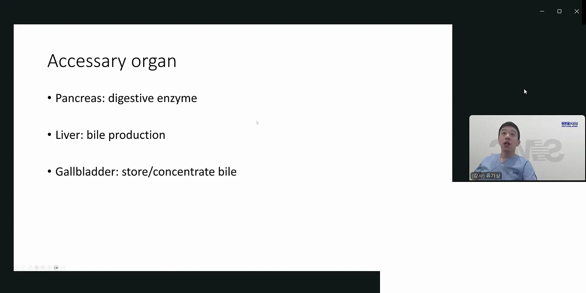
Accessary organ
- Pancreas: digestive enzyme
- Liver: bile production
- Gallbladder: store/concentrate bile
그 외에 복강 안 부속기관(accessory organ)을 살펴보면 췌장(pancreas)와 간(liver), 담낭(gallbladder)이 있습니다.
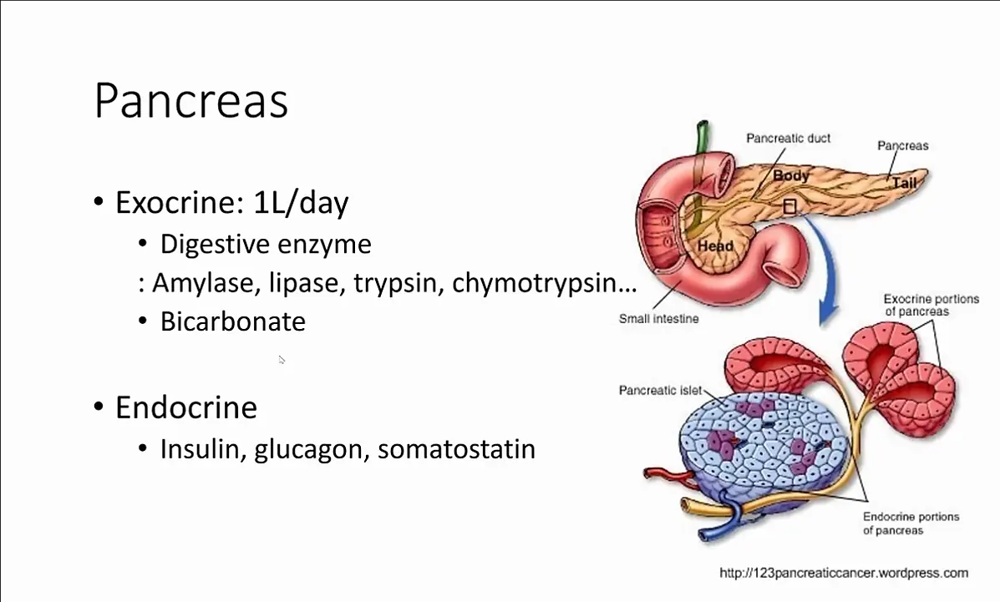
Pancreas
- Exocrine: 1L/day
- Digestive enzyme
- : Amylase, lipase, trypsin, chymotrypsin...
- Bicarbonate
- Small intestine
- Endocrine
- Pancreatic isiet
- Insulin, glucagon, somatostatin
췌장은 외분비(exocrine)로 소화 효소(digestive enzyme)를 분비해서 큰 분자를 작은 분자로 소화시킵니다. 췌장액은 외분비 부분에서 나오고, 중탄산염(bicarbonate)으로 위에서 내려온 강한 산성의 죽 같은 내용물을 중화합니다.
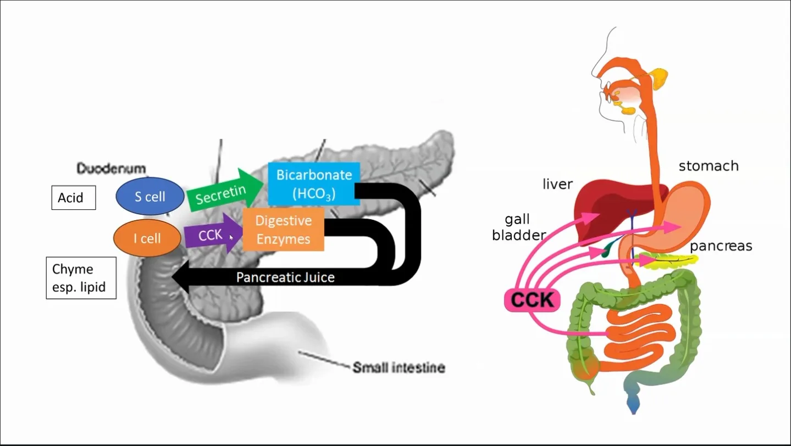
×
- Acid
- Duodenum
- S cell
- Secretin
- Bicarbonate
- liver
- stomach
- Digestive
- gall
- | cell
- Enzymes
- bladder
- pancreas
- Chyme
- esp. lipid
- CCK
- Small inte stine
십이지장(duodenum)의 S세포에서 세크레틴(secretin)이 분비되면 중탄산염(bicarbonate)이 나오고, I세포에서 콜레시스토키닌(CCK)이 분비되면 소화 효소가 나옵니다. 이 둘이 합쳐져 췌장액(pancreatic juice)이 됩니다. 위의 강한 산과 유미죽(chyme)이 중화되어 아래로 내려갑니다. 췌장을 모두 자르면 중탄산염이 모자라 소장 점막이 위산에 상하는 궤양이 잘 생깁니다. 콜레시스토키닌은 소화 기능 자체를 더 항진시키기도 합니다.
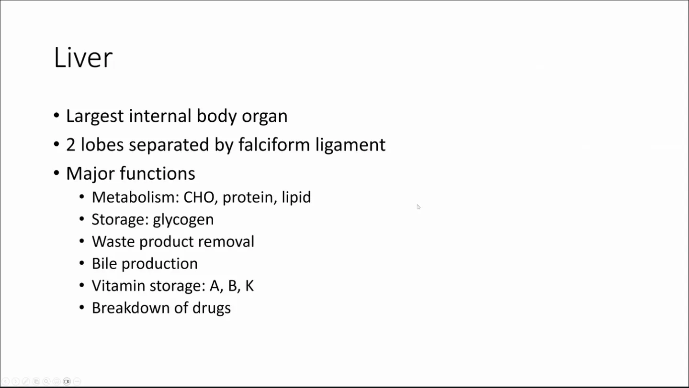
Liver
- Largest internal body organ
- 2 lobes separated by falciform ligament
- Major functions
- Metabolism: CHO, protein, lipid
- Storage: glycogen
- Waste product removal
- Bile production
- Vitamin storage: A, B, K
- Breakdown of drugs
간은 우리 몸에서 가장 큰 장기이고 여러 가지 역할을 하지만, 영양소 흡수에서는 담즙 생성(bile production)이 가장 중요합니다. 간은 원래 표면이 매끈한데요. 간경변이 생기면 표면이 우둘투둘해지고, 간경변이 없어도 간세포암이나 전이가 생기면 결절이 생기면서 간 기능이 떨어집니다.
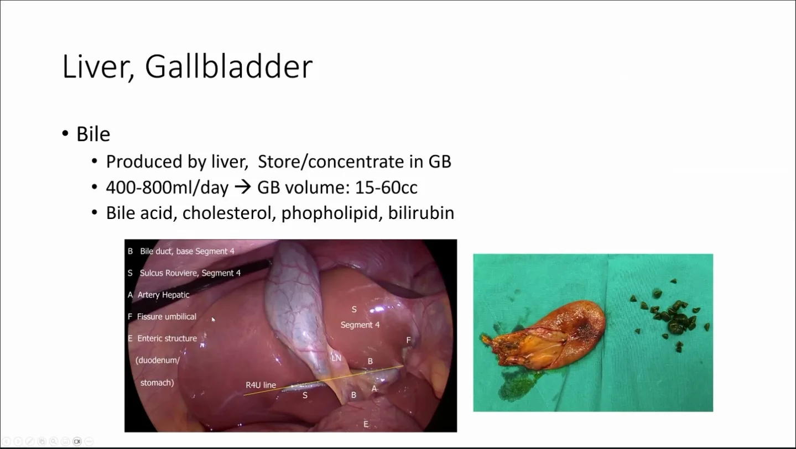
Liver, Gallbladder
- Bile
- Produced by liver, Store/concentrate in GB
- 400-800ml/day > GB volume: 15-60cc
- Bile acid, cholesterol, phopholipid, bilirubin
- B Bile duct, base Segment 4
- Sulcus Rouviere, Segment 4
- A Artery Hepatic
- F Fissure Umbilical
- Segment 4
- E Enteric structure
- (duodenum/
- stomach)
- 0
간에서 만들어진 담즙은 담낭에서 저장됩니다. 하루에 400에서 800ml가 만들어지는데, 저장은 용적이 15에서 60ml인 담낭에 농축되어 나갑니다. 농축되다 보니 담석이 잘 생깁니다. 담즙은 담즙산, 콜레스테롤, 빌리루빈(bilirubin) 등으로 이루어집니다.
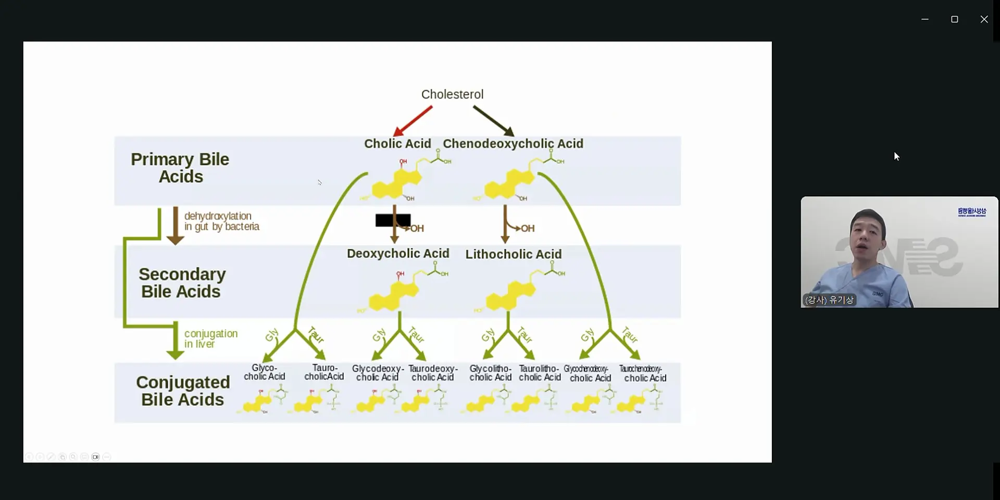
Cholesterol
- Cholic Acid, Chenodeoxycholig Acid
- dlehydraxylation
- in gut by bactena
- OH
- Deoxycholic Acid
- Lithocholic Acid
- Secondary
- Bile Acids
- conjugation
- Conjugated
- cholc Acid
- Glyco-
- sycodeoxy- Tauradeox
- hoic Ar
- cholic Acid
- cholic Acid
- Bile Acids
담즙산은 콜레스테롤(cholesterol)에서 간에서 만들어집니다. 콜산(cholic acid)과 케노데옥시콜산(chenodeoxycholic acid)이 일차 담즙산입니다. 콜레스테롤은 큰 분자라, 분비된 뒤에도 다시 흡수해서 쓰도록 되어 있습니다.
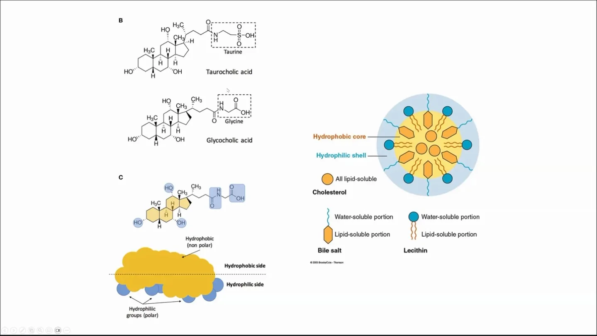
B
- Taurine
- Taurocholilc
- Glycocholic acid
- Hydrophobic core
- Hydrophilic shell
- All lipid-soluble
- Cholesterol
- Water-soluble portion
- Hydrophobic
- (non polar)
- Bile salt
- Lipid-soluble portion
- Hydrophobic side
- Hydrophilic side
- groups (polar)
- Hydrophilic
장 안에서 포합된 담즙산은 타우린(taurine)과 글리신(glycine)이라는 친수성(hydrophilic) 부분과 콜레스테롤이라는 소수성(hydrophobic) 부분을 함께 가집니다. 그래서 미셀처럼 안쪽은 소수성 핵, 바깥은 친수성 껍질인 채로 장 안을 다니다가 암죽관으로 흡수되면서 지용성 영양소 흡수를 돕습니다.
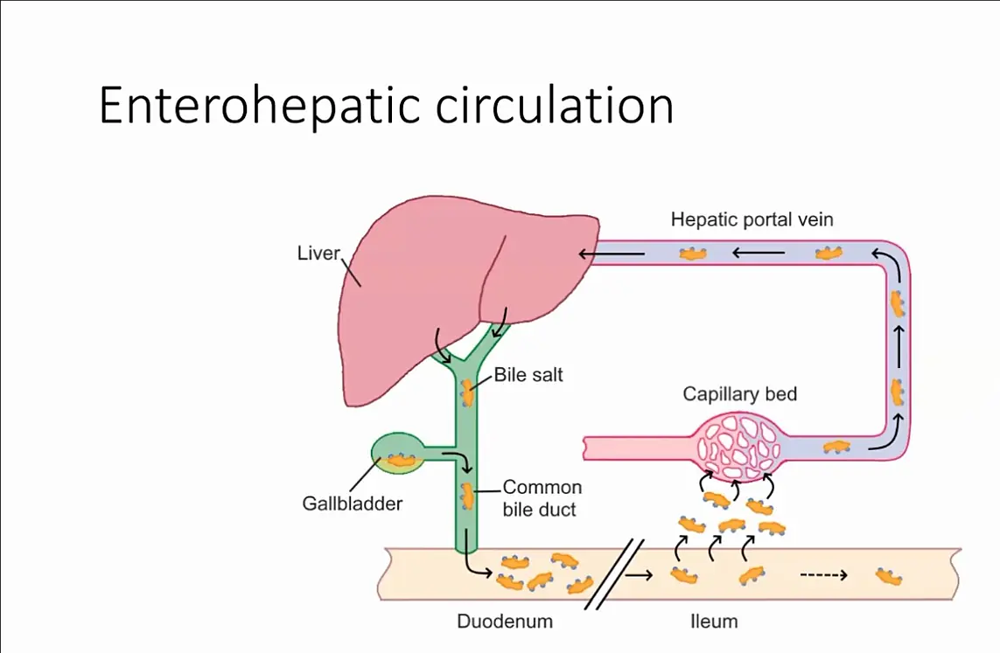
Enterohepatic circulation
- Hepatic portal vein
- Liver.
- Bile salt
- Capillary bed
- Gallbladder
- _Common
- bile duct
- Duodenum
- lleum
지용성 영양소를 흡수시킨 뒤 포합이 풀린 담즙은 말단 회장에서 다시 흡수되어 문맥을 타고 간으로 돌아가고, 이것을 장간순환(enterohepatic circulation)이라고 합니다. 하루에 4회에서 12회 돌면서 콜레스테롤을 다시 씁니다. 포합이 풀린 담즙은 갈색이라, 일부가 변으로 나가면 대변이 갈색이 됩니다.
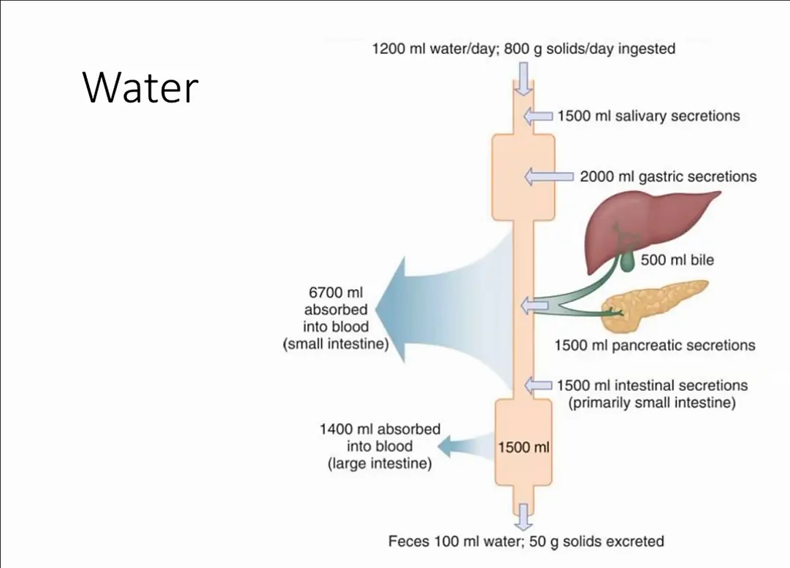
1200 ml water/day; 800 g solids/day ingested
- Water
- 1500 ml salivary secretions
- 2000 ml gastric secretions
- 6700 ml
- into blood
- absorbed
- (small intestine)
- 1500 ml pancreatic secretions
- 1500 ml intestinal secretions
- (primarily small intestine)
- 1400 ml absorbed
- (large intestine)
- into blood
- 1500 ml
- Feces 100 ml water; 50 g solids excreted
물의 90% 이상은 소장에서 흡수되고, 하루에 6700ml 정도가 흡수됩니다. 대장에서는 1400ml 정도가 흡수될 수 있고, 소장이 제 역할을 못 하면 대장도 하루에 5리터까지 흡수할 수 있다고 합니다. 물이 흡수가 안 되는 경우도 있지만, 위 분비처럼 2000ml가 구토로 계속 나오면 저혈량과 탈수가 생길 수 있습니다. 수술 후 장 내용물이 소장으로 흡수되기 전에 배액으로 많이 빠져도 탈수, 심하면 저혈량이 생길 수 있습니다.
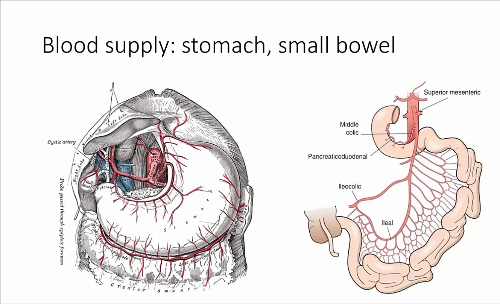
×
- Blood supply: stomach, small bowel
- Superior mesenteric
- Cystic artery
- Pancreaticoduodenal
- Probe passed through epiploic foramen
혈액 공급은 대동맥에서 직접 나가 복강동맥(celiac artery)와 상장간막동맥(superior mesenteric)을 통해 이루어집니다.
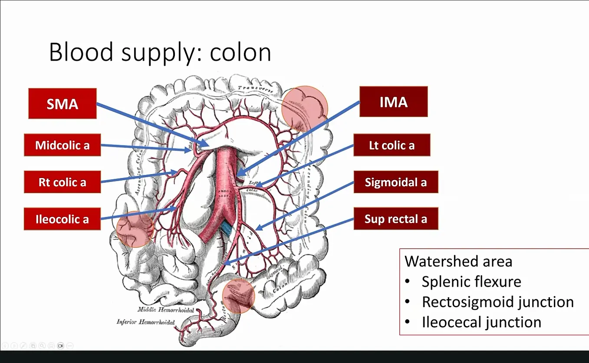
Blood supply: colon
| SMA | IMA | |
|---|---|---|
| Midcolic a | Lt colic a | |
| Rt colic a | Sigmoidal a | |
| lleocolic a | Sup rectal a | |
| Watershed area | ||
| • Splenic flexure | ||
| • Rectosigmoid junction | ||
| Middle Hemorrhoidal | ||
| • lleocecal junction |
내려갈수록 압력이 약해집니다. 상장간막동맥과 하장간막동맥(IMA)이 만나는 경계 부위, 비장 만곡(splenic flexure), 직장구불결장 접합부(rectosigmoid junction), 회맹 접합부(ileocecal junction)는 허혈에 취약합니다.
×
- Splanchnic circulation
- Cardiac output의 10-35%
- Feeding시 증가, Fasting시 감소
- Low Oxygen extraction (countercurrent flow)
- - Vulnerable to ischemia
- Shock status
- + Cardiac/cerebral blood flow 7 + splanchnic blood flow/
식사 때에는 혈류가 늘고 공복 때에는 줍니다. 쇼크(shock)에서는 심장과 뇌 혈류를 유지하는 쪽으로 가면서 내장 혈류가 줄고, 위장관 끝의 점막에 허혈이 생기기 쉽습니다. 심하면 장막까지 까맣게 될 수 있고, 일부만 허혈이어도 점막이 먼저 상합니다.
ㅁ
- Paraumbilical
- Obstructions
- vein
- Esophageal
- veins
- Esophageal
- Abdomen
- varices
- vein
- Portal
- Splenomegaly
- Superior
- mesenteric vein
- Inferior
- mesenteric vein
- Hemorrhoidal veins
- - Hemorrhoids
정맥이 잘 빠지지 않으면 상장간막정맥과 하장간막정맥을 통해 문맥(portal vein)으로 간에 들어갑니다. 간이 딱딱해진 간경변에서는 문맥압이 오르고 거꾸로 흘러 식도 정맥류(esophageal varices), 치핵(hemorrhoid), 비장비대(splenomegaly)가 생깁니다. 그 외에 소화 효소, 호르몬, 영양소의 분배와 흡수는 표에 실어 두었으니
| dlifficult | surgeon | ||
|---|---|---|---|
| Critical Care | |||
| colon think | traumapracticeACS emergency | ||
| nurse | ventilator | ||
| operation acute | |||
| patier |
그것들을 참고하시면 됩니다. 제가 말씀드릴 내용은 여기까지고요. 혹시나 질문이나 코멘트가 있으면 추후 다시 알려주시기 바랍니다. 이상입니다. 네, 교수님. 소화의 세부 기능에 대해서 상세하게 강의해 주셔서 감사합니다. 저희가 다음 강의까지 진행하고 Q&A 시간이 있는데요. 교수님, 혹시 다른 일정이 있으실 수도 있을 것 같아서 지난번에도 회진이 있으셨던 것 같은데 혹시라도 Q&A 창에 다른 질문이 올라오면 그때 전달 드리는 것으로 하겠습니다.
- Workplace옓
- i 2026년 제2차 영양약료 심화교육(심포지엄)
- 재)병원약학교육연구원
- (강사) 유기상
- (재)병원약학교육연구원
- (재)병원약학교육연구원
- (재)병원약학
- (재병원약학교육연구원
- (감사) 정지혜
- 오디오 설정
- ^
- ?
- Workplace옓
- i 2026년 제2차 영양약료 심화교육(심포지엄)
- 재)병원약학교육연구원
- (강사) 유기상
- 배혜정 분과위원창
- (재)병원약학교육연구원
- (재)병원약학교육연구원
- (재)병원약학교
- (재병원약학교육연구원
- 오디오 설정
- ?
- (재)병원약학교육연구원
- (재)빙원약학교육연구운
- (재)병원약학교육연구원
- (재병원약학교육연구원
- (재)병원약학교육연
- (재)병원약학교육연구운
- (재)병원약학교육연구원
- (재)병원약학교육연구원
- 배혜정 분과위원장
감사합니다. 이어서 두 번째 강의를 진행할 텐데요. 서울성모병원 약제부 정지혜 약사님께서 다량영양소(macronutrient)인 PN이라는 주제로 강의를 해주실 텐데요.
- (재)병원약학교육연구원
- (재)병원약학교육연구운
- (재)병원약학교육연구원
- 육연구원
- (재)병원약학교육연구원
- (재)병원약학교육인
- (재)병원약학교육연구운
- (재)병원약학교육연구원
- (재)병원약학교육연구원
- 배혜정 분과위원장
정지혜 선생님은 서울성모병원 NST를 담당하고 계시고 종량양육 전문약사와 국가정맥영약 전문약사 자격증을 취득하셨고요. 현재 영양양육공과 부위원장을 맡고 계십니다. 선생님께 강의 부탁드리겠습니다.
- Workplace
- ①
- (강사) 정지혜의 화면
- (강사) 정지혜님이 화면 공유를 시작했습니다
- 두 번 클릭하여 전체 화면으로 전환합니다
- 오디오 설정 ^
- ?
- Workplace옓
- (정
- (강사) 정지혜의 화면
- 자동 저장
- Macronutrtent in PN_서울성모병원 정저혜 260829,ppbt • 이 PC에 저장됨 ~
- 삽입
- 그리기
- 디자인 전환
- 애니메이션 슬라이드 쇼 녹음/녹화 검토 보기 도움말
- 붙여넣기
- 슬라이드
- 그리기
- 클립보드
- 12 111:10
- Macro-nutrient in PN
- 10 2026.8.29 영양약료 심포지움
- 11 서울성모병원 정지혜
- 12 13
- 14 15
- 가톨릭대학교 서울성모병원
- 16 슬라이드 1/36
- ※ 접근성: 조사 필요
- 모
- 오디오 설정 ^
네, 안녕하십니까. 저는 가톨릭대학교 서울성모병원 정지혜입니다. 이번 강의는 정맥영양(PN)의 구성 성분 중에 대영양소에 관련해서 말씀드리겠습니다.
- 자동 저장
- Macronutrient in PN_서울성모병원 정지혜_260829.pptx • 이 PC에 저장됨 ✓
- 파일
- 삽입
- 그리기
- 디자인
- 애니메이션
- 슬라이드 쇼 녹음/녹화
- 검토
- 보기 도움말
- Acrobat
- 붙여넣기
- 슬라이드
- 그리기
- 받아
- 기능
- 클립보드
- 음성
- 추가 기능
- Macro-nutrient in PN
- 2026.8.29 영양약료 심포지움
- 서울성모병원 정지혜
- 12 가톨릭대학교 서울성모병원
- 슬라이드 1/36
- 한국어
- ※ 접근성: 조사 필요
- 검색
-
- Parenteral nutrition indication
Route of administration algorithm
| Patient Assessment | • Impaired absorption or loss of nutrients Conditions Likely to Require Parenteral Nutrition* | ||
|---|---|---|---|
| NO Any Contraindications to Nutrition Support Indicated | YES • inablity to achieve or maintain enteral access • Motility disorders • Need to restrict oral or enteral intake: bowel rest | ||
| Enteral Nutrition? | |||
| Enteral Nutrition | Parenteral Nutrition | ||
| NO Gl Function? Compromised | YES | Duration Special considerations | |
| Standard Formula | Specialized Formula | • No central access Short term | |
| Feeding Tolerance? | Peripheral PN | ||
| YES | YES | Returned Gl Function? | |
| Advance to Oral Feeding When Able to Eat Safely with PN Supplementation | Oral Feeding Consider | YES - Oral Intake indicated? NO | |
| Nutr Clin Pract. 2018;33:906-920 | |||
| 3 |
대영양소에 대해서 말씀드리기 전에 먼저 정맥영양의 적응증(indication)에 대해서 먼저 말씀드리겠습니다. 영양을 공급하는 경로로는 경부, 경관, 정맥영양 이렇게 세 가지 루트가 있는데요. 대부분의 영양치료 가이드라인에서는 경구 영양을 먼저 권장하고 경구 섭취가 어려운 경우 L-튜브나 PEG 등의 관을 통해서 영양 공급하는 경관 영양을 권장합니다. 그리고 정맥 영양은 경구나 경관 영양으로 충분히 공급할 수 없거나 공급이 불가능할 경우 사용을 권장합니다. 여기 보시는 알고리즘은 영양 공급 루트에 관한 내용이고 먼저 환자의 영양 상태를 평가한 후에 영양 지원(nutrition support)의 대상이 되면 흡수 불량이나 폐쇄(obstruction) 등의 EN의 금기가 있는지 먼저 확인을 하게 됩니다. 그리고 EN이 금기라면 정맥 영양으로 영양을 공급을 하게 되고요. 영양 지원가 필요한 기간이나 필요 열량, 수분 제한, 중심정맥관(central venous catheter) 유무 등에 따라서 말초정맥영양(peripheral PN)이나 중심정맥영양(central PN)으로 공급을 할 수 있습니다. 정맥 영양 공급 중에 위장관 기능이 회복이 되면 경장영양(enteral nutrition)으로 변경을 하게 되는데요. 경장영양(EN)의 수능도 공급량에 따라서 영양 공급이 충분하지 않다면 보조정맥 영양(supplemental PN)을 투여할 수 있습니다.
-
- When Is Parenteral Nutrition Appropriate?
- Time Frame for Initiating PNS
- Initiate PN after 7 days for well-nourished, stable adult patients who have been unable to receive significant
- (50% or more of estimated requirements) oral or enteral nutrients.
- Initiate P within 3 to 5 days in those who are nutritionally-at-risk and unlikely to achieve desired
- oral intake or EN.
- Initiate Pn as soon as is feasible for patients with baseline moderate or severe malnutrition in whom oral
- intake or EN is not possible or sufficient.
- Delay the initiation of PN in a patient with severe metabolic instability until the patient's condition has
- improved.
- For the infant, child, or adolescent with a self-limited illness, it is reasonable to delay starting PN for 1 week.
- Pediatric
- However, initiate PN within 1-3 days in infants and within 4-5 days in older children and adolescents when it
- is evident that they will not tolerate full oral intake or EN for an extended period.
- Begin PN promptly after birth in the very low birth weight infant (birth weight less than 1500 g). Insufficient
- Neonatal
- data exist to suggest a specific time frame in which PN is ideally initiated in more mature preterm infants or
- critically ill term neonates.
- https://nutritioncare.org/wp-content/uploads/2025/07/Role-of-PN-in-Malnutrition pdfi_The Role of Parenteral Nutrition in Managing Malnutrition
- JPEN J Parenter Enteral Nutr. 2017 Mar;41(3):324-377
- 4
다음은 정맥 영양을 언제 시작하는지에 대한 ASPEN 권장 내용입니다. 성인 환자의 경우에는 환자의 영양 상태에 따라서 공급 권장 시기가 달라지는데요. 영양 상태가 양호한 안정적인 환자의 경우에는 경구 또는 EN으로 요구량의 50% 이상 공급이 어려운 경우라도 7일 후에 정맥 영양 공급을 시작할 수 있습니다. 영양 불량의 위험이 있는 경우에는 3일에서 5일 사이에 정맥 영양 공급을 권장을 하게 되고 머더레이트에서 중증 영양 불량 환자의 경우에는 경구나 EN 공급량이 불충분한 경우에는 바로 정맥 영양 공급을 시작할 것을 권장합니다. 그리고 환자가 대사적으로 불안정한 상태인 경우에는 상태가 호전될 때까지는 정맥 영양 공급을 연기해야 됩니다 소아의 경우에는 경증의 질병 상태에서는 정맥 영양 공급을 성인과 똑같이 일주일 정도 연기하여 시작할 수 있지만 장기간 위장관 영양이 충분하지 않을 수 있는 경우에는 영아는 1에서 3일 이내, 소아 청소년은 4, 5일 이내 정맥 영양 공급이 필요합니다. 특히 신생아(neonate)나 1.5kg 미만의 저체중 미소과는 출생 후 즉시 정맥 영양 시작이 필요합니다.
-
- Carbohydrate
- Most commonly used energy
- IV dextrose
- 1) 5% t0 70%
- 2) 일수화물(monohydrate) 형태로 3.4 kcalg 공급
- 3) 약산성 (pH 3.2 ~ 6.5)
- 4) 삼투압(osmolarity) : 약 50 mOsm/%
- > 10%는 말초정맥으로 투여시 혈전 정맥염을 일으킬 수 있어 중심정맥 투여 권장
- Total energy의 40-50%, non protein calorie의 60-85%
다음은 정맥 영양의 대영양소 중 탄수화물에 대해 말씀드리겠습니다. 탄수화물은 1차적으로는 에너지원으로 사용되는 성분이고 뇌를 포함한 일부 장기에서는 포도당만을 에너지원으로 사용하고 있습니다. 정맥으로 공급하는 탄수화물은 D형 포도당인 덱스트로스(dextrose)로 5-70%의 제형이 있는데 국내에서는 단일 제제로는 5-50%까지 시판이 되어 있습니다. 정맥 주사용 덱스트로스는 일수화물 형태이기 때문에 1g당 3.4kcal의 열량을 공급합니다. 즉 5% 포도당(glucose) 수액 1L는 덱스트로스 1수화물 50g이 포함되어 있어서 170kcal로 공급한다고 계산하시면 됩니다. pH는 3.2에서 6.5의 약산성이고 삼투압(osmotic pressure)은 %당 50mOsm로 5% 포도당 수액의 삼투압은 약 250mOsm가 됩니다. 10%를 초과하는 포도당 수액은 말초정맥(peripheral vein)으로 투여하면 혈전정맥염의 위험이 있기 때문에 중심정맥 투여를 권장합니다. 영양 공급 시에는 탄수화물은 총열량의 40-50% 비단백열량에서는 65-85% 정도를 탄수화물로 공급하는 것을 권장합니다.
Requirement
- GIR(glucose infusion rate) : mg/kg/min
- 최소 포도당 공급에 대한 권고는 없으나 포도당 신생 합성, 단백질 분해 대사를
- 억제하기 위해 보통 하루 100g의 포도당 공급 필요
- 성인 :7 g/kg/day를 초과하지 않음
- GIR
- Stable
- 4-5 mg/kg/min
- Critically ill
- < 4 mg/kg/min
- Appropriate dosing for parenteral nutrition : ASPEN recommendation
- 7
다음은 탄수화물의 요구량입니다. 최소 포도당 공급에 대한 권고는 없는데요. 포도당 신생합성이나 단백질 분해를 억제하기 위해서는 하루 100g 정도의 포도당이 필요하다고 알려져 있습니다. 보통 성인에서는 하루에 kg당 7g을 초과하지 않을 것을 권고하는데요. 정맥 영양에서의 포도당 공급량을 나타내는 단위는 뒤에 설명하는 다른 성분들과는 달리 g per kg per day가 아니라 포도당 주입 속도(glucose infusion rate)로 분당, 체중당 공급되는 포도당의 mg수로 표현을 합니다. 체내의 최대 당산화 속도를 초과하여 공급되는 경우에는 관련된 합병증(complication)의 위험이 높아지기 때문에 안정적인 환자 같은 경우에는 GII 기준으로 4에서 5mg per kg per min까지 공급이 권장되고 중환자의 경우에는 고혈당(hyperglycemia)의 위험이 더 높기 때문에 최대 4를 초과하지 않을 것을 권장합니다.
-
| Requirement | ||||
|---|---|---|---|---|
| Initiation | Advanced by | Goals | ||
| 10-14 mg/kg/min | ||||
| Infants(<1yr) | 6-8 mg/kg/min | 1-2 mg/kg/min | (max. 14-18 mg/kg/min) | |
| Children(1~10yr) | 3-6 mg/kg/min | 1-2 mg/kg/min | 8-10 mg/kg/min | |
| Adolescents엚 | 2.5-3 mg/kg/min | 1-2 mg/kg/min | 5-6 mg/kg/min | |
| Appropriate dosing for parenteral nutrition : ASPEN recommendation | ||||
| 8 |
소아의 경우에는 성인보다 요구량이 높아서 청소년의 경우에는 GIR 2.5에서 3으로 시작해서 5에서 6까지 증량 가능하고 1세미만 영아는 GIR 6에서 8로 시작해서 혈당(blood glucose) 조절에 따라서는 10에서 14까지도 증량 가능합니다.
-
- Complication
- 고혈당
- 1) 목표혈당 : 140-180 mg/dl
- 2) PN 시작 시 저용량의 dextrose(약 150-200 g/first 24hrs) 로 시작
- 저체중, 혈당조절 불량 시 더 낮은 용량 (약 100g) 으로 투여 시작
- 3) Insulin : 0.05-0.1 IU/ g of dextrose, 이미 고혈당인 환자 0.15-0.2 IU/ g of dextrose
- 저혈당
- 1) PN에 과도한 insulin 이 혼합되거나, PN을 갑자기 중단할 때 발생 가능
- 2) 반동성 저혈압(rebound hypoglycemia) 를 예방하기 위해 1-2시간에 걸쳐 tapering
- 또는 속도를 1/2로 감량, 즉시 중단이 필요한 경우는 1-2시간 dextrose 수액 투여
- 9
포도당 공급에서 발생할 수 있는 대표적인 합병증으로는 고혈당과 저혈당(hypoglycemia)이 있습니다. 정맥 용량 공급 시의 목표 혈당은 140에서 180을 목표 혈당으로 잡고요. PN 시작 시에 발생할 수 있는 고혈당 예방을 위해서는 첫 24시간 동안 포도당 공급을 150에서 200g, 고혈당 위험이 있는 경우에는 더 낮은 용량으로 시작을 해야 합니다. 고혈당이 발생을 하게 된다면 인슐린(insulin)으로 치료를 하게 되는데요. 초기 공급량은 투여하는 수액에 포함된 포도당 함량에 따라서 결정을 할 수 있는데 포도당 1g당 레귤러 인슐린 0.05에서 0.1유닛 당뇨 환자분들 같은 경우에는 좀 더 높은 용량인 0.15에서 0.2유닛 공급이 권장됩니다. 이후에는 혈당 조절에 따라서 인슐린 용량을 조절하는데 전일에 사용한 슬라이딩 스케일 총 인슐린 합의 약 3분의 2를 더 더해서 증량을 할 수 있습니다. 저혈당은 PN에 과도한 인슐린이 혼합되거나 PN을 갑자기 중단할 때 발생이 가능한데 PN을 갑자기 중단할 때 발생하는 반동성 저혈당을 예방하기 위해서는 PN을 중단할 때 1-2시간에 걸쳐서 점감(tapering)하거나 속도를 절반으로 감량한다거나 하는 방법을 사용할 수 있습니다. 만약에 즉시 중단이 필요한 경우에는 1-2시간 정도 포도당 수액을 이어서 공급하는 것이 권장됩니다.
-
| Protein | |||
|---|---|---|---|
| • 모든 생명체의 필수 구성요소 | |||
| 세포에서 가장 풍부한 유기분자. 세포의 구조와 기능에 필수적임 | |||
| • Growth, maintenance, movement, enzymes, hormones, immunity, fluid and electrolyte | |||
| balance, acid-base balance, transportation and storage | |||
| • 아미노산의 분류 | |||
| Essential | Conditionally Essential | Non-Essential | |
| histidine, isoleucine, leucine, | arginine, cysteine, | alanine, asparagine, | |
| lysine, methionine, | glutamine, glycine, proline, | aspartic acid, | |
| phenylalanine, tryptophan, | tyrosine | glutamic acid, serine | |
| threonine, valine | |||
| 11 |
다음은 대영양소 중의 단백질입니다. 단백질은 생명체의 필수 구성 요소이고 세포의 구조와 기능의 필수적인 성분입니다. 단백질의 기본 조성 물질인 아미노산(amino acid)은 체내 합성 가능 여부에 따라서 필수 아미노산과 비필수 아미노산으로 나뉘고요. 특정 조건에서는 합성이 제한돼서 몸에서 꼭 외부에서 공급을 받아야 되는 조건부 필수 아미노산도 몇 가지 종류가 있습니다.
-
- Crystalline amino acids
- 4 kcallg
- 16% nitrogen (6.25 g amino acids = 1 g nitrogen)
- 삼투압(osmolarity) : 100 Osm/%
- 아미노산 수액제에 포함된 전해질 주의
- 2. 아미노산 수액제 일람표
- 약품명
- FreAmine 8.5%
- 크레타민주
- Cletamin
- 네프리솔주
- Nephrisol
- Pediamin 6%
- 500ml
- 250ml
- Electrolytes
- (mg)
- Potassium Chloride
- Sodium Acetate
- Sodium Hydroxide
- Magnesium acetate
- 500
- Electrolytes
- "
- Phosphute- (mmol/l)
- Citrate
- 12
정맥 영양에서의 단백질은 결정아미노산 제제로 만들어져 있고요. 단백질 1g당 4kcal를 냅니다. 질소 함량은 아미노산의 16% 정도 포함이 됐다고 알려져 있고요 아미노산 6.25g에 질소 1g이 포함되어 있다고 계산하시면 됩니다. 아미노산 수액제의 삼투압은 %당 100mOsm이고요. 그리고 아미노산 수액제에는 나트륨(sodium)이나 인 같은 전해질(electrolyte)이 포함되어 있는 제제가 있기 때문에 이런 아미노산 수액제를 사용할 때 이런 전해질 함량도 고려가 필요하겠습니다.
-
- Crystalline amino acids
- 표준 아미노산제제 : mixtures of essential and nonessential amino acids
- 특수 아미노산제제
- 1) 소아용 아미노산제제
- - 모유수유 영유아 또는 제대혈 혈장 아미노산 패턴과 유사한 아미노산 포함
- 2) 필수아미노산 제제
- - 신장애 환자에게 필수아미노산 공급
- - AKI 환자에서 표준 아미노산제제와 비교하여 임상적 이점에 대한 근거 부족으로
- 표준아미노산제제 권고
- 3) BCAA(branched chain amino acid) 고함유 제제
- 4) glutamine 함유제제
- 13
아미노산 수액제는 필수아미노산과 비필수아미노산이 골고루 포함된 표준아미노산 제제와 특성아미노산 제제가 많이 포함된 특수아미노산 제제로 나눌 수 있습니다. 특수아미노산 중에 소화용 아미노산은 모유수유 영유아 또는 제대혈장아미노산 패턴과 유사한 아미노산을 포함해서 소화에서 필요한 조성 비율로 만들어져 있습니다. 필수아미노산 제제는 거의 대부분 필수아미노산으로만 이루어진 제제인데요. 질소의 배출 기능이 저하된 신장애 환자에서 체내에서 합성이 불가능해서 외부에서 공급받아야 되는 필수아미노산 위주로 공급이 가능한 제제입니다. 다만 이 제제는 아미노산 함량이 약 5.4% 정도이고요. 표준 아미노산 제제가 시판되고 있는 게 8.5에서 10% 정도여서 표준 아미노산 제제보다 함량이 매우 낮고 AKI 환자에서는 표준 아미노산 제제와 비교해서 임상적 이점이나 사망률(mortality) 이점이 없다고 되어 있어서 AKI 환자에서는 표준 아미노산 제제로 공급을 권고하고 있습니다. 이 외에 분지쇄 아미노산(branched-chain amino acid) 보화묘 제제나 글루타민(glutamine) 함유 제제가 있고 이 두 가지 3, 4번 제제들의 임상 적용에 대해서는 이후 슬라이드에서 따로 말씀드리겠습니다.
Requirement
- 체중 당 요구량
- 1) 안정적인 환자 : 0.8-1.0 g/kg/day
- 2) 경도~중등도의 스트레스(감염, 골절, 수술) : 1.0-1.5 g/kg/day
- 3) 심한 스트레스(화상, 다중골절) : 1.5-2.0 g/kg/day
- 4) 중환자
- - 1.3 g/kg/day (ESPEN, 2023), 1.2-2.0 g/kg/day (ASPEN/SCCM, 2021)
- 5) Cirrhosis : 1.2-1.5 g/kg/day
- 6) 신장애 환자(ASPEN core curriculum 4t7)
- Nondialysis CKD
- AKI
- PDIHD
- CRRT
- 0.55-0.8 g/kg/d,
- 0.8-1.0 g/kg/d in without dialysis,
- 2 1.2g/kg/d
- 1.5-2.5g/kg/d
- 1.0 g/kg/d in illness
- 1.0-1.5 g/kg/d in AKI on RRT
- 14
다음은 단백질의 요구량입니다. 단백질은 환자의 임상 상태에 따라서 요구량이 매우 차이가 나서 기본적인 공급 원칙에 대해서 잘 알고 있는 것이 중요하겠습니다. 먼저 안정적인 환자의 경우에는 0.8에서 1g per kg per day 정도가 권장이 되는데 환자의 스트레스 상태가 심할수록 요구량이 증가합니다. 경도에서 중둔도 스트레스 상태에서는 1에서 1.5g 정도 심한 스트레스 상태에서는 1.5에서 2g per kg per day까지도 요구량이 증가하게 됩니다. 중환자 같은 경우에는 에스펜에서는 1.3g per kg per day 아스펜에서는 1.2에서 2g per kg per day까지 권고합니다. 신장기 환자에서는 환자의 상태나 투석 여부에 따라서 공급량이 달라지는데요. 투석하지 않는 만성 신질환 환자는 신장의 부담이 덜기 위해서 단백질을 제한을 하고 있고 일반적인 요구량보다 더 적은 보통 0.6에서 0.8g per kg per day 정도 권고가 됩니다. 이화성(catabolic) 질병 상태에서는 단백 요구량이 증가하기 때문에 가이드라인에서는 CKD 환자여도 급성 질환 상태에서는 단백질 공급을 1g per kg per day 정도로 증가시키는 것을 권장을 하고 있습니다. 급성 신질환의 경우에는 이 자체가 이화성 상태로 생각이 되기 때문에 CKD처럼 단백질을 제한하기보다는 투석하지 않는 경우에는 0.8에서 1g per kg per day 정도 권장이 되고요. CKD든 AKI든 환자가 투석을 시작하면 투석으로 인한 단백질 손실 때문에 요구량이 증가하게 됩니다. 복막투석이나 혈액투석 환자는 보통 1.2gph 정도, CRIT 중일 때는 1.5gph 이상, 환자에 따라서는 2.5gph까지 공급이 필요할 수 있습니다.
Requirement
- 열량 또는 비단백열량 (non protein calorie; NPC) 대 질소비
- 1) 스트레스가 없는 환자(NPC : N) - 150 : 1
- 2) 스트레스가 있는 경우(NPC : N)- 80~100 : 1
- 3) 동화 작용을 위한 권장량
- - NPC(non protein calorie) : N - 120~180 : 1
- - calorie : N - 100~150 : 1
- 15
단백질은 열량을 공급하지 않고 단백질만 공급을 한다면 단백질은 동화작용이나 원래 공급 목적에 사용되지 못하고 열량을 내는 데만 소비되게 돼서 단백질은 적절한 비단백 열량과 같이 공급하는 것이 중요합니다. 그래서 권고되는 비단백 열량, MPC 대 질소 N은 스트레스가 없는 경우에는 150대 1 정도 스트레스 상태에서는 단백 요구량이 증가해서 MPC 대 N이 80에서 100대 1 정도 권장됩니다. 최근 중환자 표적으로 개발된 고단백 제제는 사실 이보다 더 낮은 MPCDN의 비율을 갖고 있습니다. 동화작용을 위한 권장량으로는 MPCDN은 120에서 180대 1, 전체 열량대 질소는 100에서 150대 1 정도가 권장됩니다.
-
- Requirement
- Requirement (질소평형)
- 1) 질소평형(Nitrogen balance) : 체내 질소 섭취량(섭취)- 손실량(배설)
- 2) Urea가 총 소변질소의 80%를 차지한다는 가정 하에 산정
- 3) Urine urea nitrogen(UUN) : 24시간 소변을 모아 측정 또는 단시간을 모아서 외삽
- 4) 소변 외 질소 손실량(대변, 피부)은 각각 약 2g/day 로 추정
- 5) 질소평형이 0이 되는 단백질 필요량
- = 24시간 뇨질소량(g) +4 g]x6.25
- =[소변요소질소농도(UUN) (mg/100 ml)x 24시간 소변량(L/day)/100 + 4 g]x6.25
- 16
질소평형을 이용해서도 단백질 요구량을 산출할 수 있는데요. 질소평형을 이용하는 방법은 실제 체내에서 소비된 단백질의 양을 계산하는 방법입니다. 질소 평형(nitrogen balance)은 질소 섭취량과 배설된 손실량의 차를 의미하는데요. 이 방법은 요소가 총 소변으로 배출되는 질소의 80% 정도 차지한다는 가정하에 산정하는 것이고요. 소변으로부터 유린 요소 질소 농도를 측정하여 배설된 질소 양을 단백질 양으로 환산을 하는 것입니다. 이때 유린유리아 질소는 한 번 측정된 소변에서 측정하는 것이 아니라 환자가 24시간 동안 소변을 모아서 그 소변의 총량과 측정된 유린유리아 질소 농도를 곱해서 24시간 동안 배설된 총 요질소량을 구하게 되고 이때 소변 외에 질소 손실을 약 4g 정도로 계산을 해서 계산을 해서 총 배출된 질소량을 산출을 하고 아까 질소는 단백질의 16% 정도 차지한다고 말씀드렸으니까. 개수를 6.25를 곱해서 배설된 질소 총량으로부터 환자가 실제 소비한 단백질을 계산을 할 수 있습니다. 그래서 질소 평정을 양성으로 만들어야 된다면 이것보다 단백질 공급량을 더 증가시켜서 공급을 하면 됩니다.
Branched chain amino acid
- leucine, isoleucine, valine
- 간을 거치지 않고 근육에서 대사
- BCAA in hepatic encephalopathy
- Analysis 1.1: All-cause mortality
- Analysis 1.2: Hepatic encephalopathy
- Study or Subgroup
- BCAA
- Total
- Control
- Welght I, Random, 95% Cl
- Risk Ratio
- I, Random, 95% Cl
- Risk Ratio
- Study or Subgroup
- Hwang 1988
- Cerra 1985
- Vistrup 1990
- Plauth 1993
- Flaccadori 1985
- Marchesini 1990
- Marchesini 2003
- Egberts 1985
- Vidot 2019
- Rossi-Fanelli 1986
- Les 2011
- Muto 2005
- Michel 1985
- Mehtani 2023
- Calvey 1985
- Total events:
- Strauss 1986
- Total (HKSJ*)
- Test for overall effect: T = 1.11, 0f = 12(P = 0.29)
- 40 27
- 27 114
- 14 446 100.0%
- 37 35
- 34 12
- 16 10.2%
- 26.1%
- 34.0%
- 3.8%
- 2.7%
- 4.5%
- 1.0%
- 1.2%
- 4.5%
- 0.4%
- 3.8%
- 7.3%
- 0.08 [0.01. 0.63]
- 0.23 (0.01. 4.52)
- 0.44 [0.13 . 1.49]
- 0.63 [0.25 , 1.58]
- 0.89 [0.71, 1.12]
- 0.76[0.52 , 1.11]
- 1.07 10.77,1.491
- 1.31 [0.52 . 3.32]
- 1.02 [0.37 . 2.80]
- 1.33 [0.48 , 3.67
- Not estimable
- Not estimable
- Not estimable
- Not estimable
- 0.01
- Les 2011
- Marchesini 1990
- Marchesini 2003
- Vistrup 1990
- Hayashi 1991
- Mehtani 2023
- Flaccadonl 1985
- Calvey 1985
- Strauss 1986
- Cerra 1985
- Egberts 1985
- 95% prediction interval
- Total (HKSJ*)
- Horst 1984
- Hwang 1988
- Muto 2005
- Vidot 2019
- Plauth 1993
- Rossl-Fanelll 1986
- 0.64 10.48, 0.851
- 0.94 10.52,1.721
- 0.67 10.35,1.27)
- Cochrane Database Syst Rev. 2026 Jan 16;1(1):CD001939.
- Test for overall effect: T = 2.49, df = 17 (P = 0.02)
다음은 특수아미노산 제제에서 말씀드렸던 분지쇄 아미노산과 글루타민에 대해서 말씀드리겠습니다. BCAA는 류신, 아이소루신, 발린 이 세 가지 아미노산을 의미하고요. 모두 필수아미노산에 속합니다. BCAA는 간을 거치지 않고 근육에서 대사되는 특징을 가지고 있고요. 임상에서는 보통 간장애 환자나 간성뇌증(hepatic encephalopathy) 환자에서 사용이 되고 있습니다. 간성 뇌증에서 사용되는 기저(baseline)는 체내 BCAA와 방향족 아미노산(aromatic amino acid)의 균형이 깨져서 BCAA가 적어지고 상대적으로 방향족 아미노산이 많아지면 이 방향족 아미노산이 BBB를 통과하는 정도가 증가해서 뇌에서 신경전달물질(neurotransmitter) 대신 결합해서 이런 간성 뇌증의 증상이 의식 상태 변화 등이 나타날 수 있는데요. 그래서 이것을 해결하기 위해서 BCAA와 AAA의 균형을 맞추기 위해서 분지쇄 아미노산을 공급하게 됩니다. 이 아래 보시는 표 그래프는 2026년에 코크란 데이터베이스에 발표된 간성뇌증에서의 BCAA의 효과에 대한 메타분석 결과입니다. 여기는 IV나 PO로 공급한 연구가 모두 포함되어 있고요. 오른쪽에 보시는 게 간성뇌증의 증상에 대한 평가인데 BCAA가 조절보다 효과가 있다고 평가가 되었고요. 왼쪽에 보시는 사망률에서는 유의한 결과가 나오지는 않았습니다.
Branched chain amino acid
- leucine, isoleucine, valine
- 간을 거치지 않고 근육에서 대사
- BCAA in hepatic encephalopathy
- Analysis 1.1: All-cause mortality
- Analysis 1.2: Hepatic encephalopathy
- Study or Subgroup
- BCAA
- Weight I, Random, 95% Cl
- Risk Ratio
- I, Random, 95% Cl
- Risk Ratio
- Study or Subgroup
- Plauth 1993
- Hwang 1988
- Cerra 1985
- Vistrup 1990
- Michel 1985
- Mehtani 2023
- Marchesinl 2003
- Egberts 1985
- RosslFanelli 1986
- Les 2011
- Muto 2005
- Fiaccadori 1985
- Marchesini 1990
- Total events:
- Calvey 1985
- Strauss 1986
- Total (HKSJ*)
- 27 18
- 114
- 446 100.0%
- 35 34
- 22 12
- 11 10.2%
- 26.1%
- 34.0%
- 2.7%
- 1.0%
- 3.8%
- 1.2%
- 0.4%
- 0.4%
- 3.8%
- 7.3%
- 4.5%
- 0.44 [0.13. 1.49]
- 0.63 [0.25 , 1.58]
- 0.89 [0.71 , 1.12]
- 0.76 10.52 , 1.11]
- 1.00 [0.16 . 6.251
- 1.31 [0.52 . 3.321
- 1.02 [0.37 . 2.80]
- 1.33 [0.48 , 3.67)
- Not estimable
- Not estimable
- Not estimable
- 0.01
- Marchesini 1990
- Marchesini 2003
- Vilistrup 1990
- Les 2011
- Vidot 2019
- Michel 1985
- Hayashi 1991
- Mehtani 2023
- Calvey 1985
- Plauth 1993
- Hwang 1988
- Strauss 1986
- Cerra 1985
- Egberts 1985
- Total (HKSJ *)
- Horst 1984
- Flaccadon 1985
- Rossl-Fanelll 1986
- 95% prediction interval
- 0.08 [0.01 , 0.63]
- 1.78 [0.86 , 3.681
- Cochrane Database Syst Rev. 2026 Jan 16;1(1):CD001939.
- Test for overall effect: T = 2.49. df = 17 (P = 0.02)
-
- Branched chain amino acid
- IV-BCAA in acute hepatic encephalopathy (J Intensive Care. 2025 Jan 9;13(1):2.)
- - 입원 후 급성기(7일 이내) 동안 IV-BCAA 또는 위약을 투여 받은 성인 급성 HE 환자
- 대상 RCT 4편 분석
- (a) Improvement in the
- disturbance of consciousness
- (a)
- Vilstrup H 1990
- wahren J 1983
- Rossi-Fanelli F 1982
- Mehtani R 2023
- Study or Subgroup
- Events Total
- BCAA
- 12 16
- 17 14
- 25 28
- 17 32
- Events
- Control
- 1.17 10.68,1.99]
- Total (95% Cl)
- Total events
- Test for overall effect Z= 1.67 (P = 0.09)
- Heterogeneity. Taur= 0.00; Chir= 2.00. df= 3 (P = 0.57): IR= 0%
- 59 102
- 0.01
- 100
- (b) All-cause mortality
- (b)
- Mehtani R 2023
- Vilstrup H 1990
- wahren J 1983
- Study or Subgroup
- Events
- BCAA
- 18 17
- 11 Total
- 35 25
- 32 Events
- Control
- 17 24
- 10 Total events
- Total (95% Cl)
- Heterogeneity. Taur= 0.00; Chi= 1.54. df= 2 (P = 0.46): IR= 0%6
- Test for overall effect Z= 0.81 (P = 0.42)
- 46 92
- 51 6.01
- 안
- 100
- 18
다음은 IV로 공급하는 BCAA 또는 위약(placebo)을 공급했을 때 급성 간성뇌증에서 이 두 약을 사용한 RCT 4편을 분석한 연구이고요. 결과를 보시면 의식장애 개선과 사망률에서 모두 IV로 공급된 BCAA가 위약 대비 유의한 효과를 보이지는 못하였습니다. 그래서 현재 정맥주 사용 BCAA 제제는 관련 가이드라인에서 반드시 투여가 효과가 있다고 권장되고 있지는 않습니다.
-
| Glutamine | |||||
|---|---|---|---|---|---|
| • Fuel for rapidly dividing cells such as fibroblasts, reticuloendothelial, malignant, gut epithelial cell | |||||
| • 조건부 필수 아미노산 : exercise, trauma, sepsis 시 요구량이 생성하는 양을 초과 | |||||
| • Glutamine 부족시 : atrophy of intestinal mucosa, impairment of immune function | |||||
| • REDOX trial (N Engl J Med. 2013 Apr 18;368(16):1489-97.) | |||||
| 1) 40 ICUs,1223 patients randomization | |||||
| 2) placebo vs glutamine vs antioxidants vs antioxidants + glutamine | |||||
| Variable | Glutamine쵸 | No Glutamine P Value | |||
| Death - no. of patients/total no. (%) | |||||
| At day 28 | 198/611 (32.4) | 165/607 (27.2) | 0.05* | ||
| At day 14 | 157/611 (25.7) | 129/607 (21.3) | 0.07 | ||
| In hospital | 227/611 (37.2) | 188/607 (31.0) | 0.02 | ||
| At6 mot | 259 (43.7) | 218 (37.2) | 0.02 | ||
| Recommendation : unstable, complex ICU patients(liver, renal failure) 에서는 | |||||
| glutamine을 투여하지 않아야 함 | |||||
| 19 |
글루타민은 조건부 필수 아미노산이고요. 트라우마 등의 질병 상태에서는 요구량이 생성하는 양을 넘어서 외부 공급이 필요한 아미노산입니다. 주로 빠르게 분열하는 세포에서 연료로 사용됩니다. 글루타민이 부족하면 장점막의 힐릭이나 면역기능의 악화를 가져올 수 있습니다. 글루타민 공급 관련 연구 중에 가장 유명한 연구가 2013년에 발표된 REDOX 시험이 있는데 40개의 ICU에서 1,223명의 환자를 대상으로 한 연구이고요. 플라세보, 글루타민, 항산화제(antioxidant), 항산화제와 글루타민을 함께 투여한 군을 비교한 결과 전체 환자를 글루타민 공급군과 공급하지 않은 군으로 나누었을 때 글루타민을 공급한 군에서 전체적인 사망률이 더 높게 나오는 결과가 도출되었습니다. 그래서 이 연구가 발표된 이후에 글루타민 공급에 대한 가이드라인이 바뀌었고 현재는 중환자 중에 불안정하고 신·간부전이 동반된 중환자에서는 글루타민 투여를 금하고 있습니다.
High protein
- EFFORT Protein trial (Lancet. 2023: 401;568-76.)
- 1) 85 ICUS, 1329 patients randomization
- 107
- 2) high dose protein(22.2 g/kg/day)
- 09 vs usual dose protein (S 1.2 g/kg/day)
- Cumulative incidence
- 01-
- 30 40
- Hospitalisation (usual dose protein)
- Hospitalisation (high protein) 644
- Deaths (high dose protein)
- Deaths (usual protein)
- treatment group. Overall estimate of treatment effect: HR 0.91, 95% CI 0.77-1-07;p=0.27
- The fgure shows the cumulative incidence of time-to-discharge-alive from hospital (primary outcome) by
- Fiqure 4: Time-to-discharge-alive from hospital by treatment group
- 20
다음은 최근에 발표된 고단백(high protein) 연구에 대해서 간단하게 소개해드리겠습니다. 첫 번째는 EFFORT Protein 시험이고요. 85개 ICU에서 1329명의 기계 환기 중인 환자를 대상으로 하였고 1.2g per kg per day 이하의 유지월 도즈, 2.2g per kg per day 이상의 아스피인 건전양이 2g을 초과한 용량을 주는 것을 비교했을 때 1차 평가변수(primary endpoint)인 생존 퇴원까지의 시간(time-to-discharge-alive)에서 두 분 간의 차이를 보이지 못하는 결과가 나왔습니다.
High protein
- EFFORT Protein trial (Lancet. 2023; 401;568-76.)
- Figure S2 -Subgroup Analysis Based on Effect on Time-to-Discharge-Alive from Hospital
- Figure S3 -Subgrowp Anatysis Based on Effect on 60-day Mortalig
- HR (95% Cl
- P=0.27
- 60 DAY MORTALITY
- p=0.29
- p=0.47
- mNUTRIC>=5
- $73
- 1.1 (0.9. 1.4
- p=0.10
- p=0.05
- p=0.18
- Non-sepsis patient
- on-Trauma oatient
- Sepsis patient
- auma patien
- 301
- p=0.001
- p=0.40
- p=0.20
- p=0.56
- p=0.06
- p=0.70
- Not Mialnounished
- Favours Usual Dosei
- Favours High Protein
- 0.5
- 10 15
- 20 Hazard Ratio
- 21
그리고 하위군 분석에서는 신장의 환자와 SOFA 점수가 9 이상인 환자에서는 더 악영향이 있다는 결과가 나왔습니다. 생존 퇴원까지의 시간에서는 왼쪽에서 보시는 SOFA 점수가 9 이상이나 AK 환자에서는 통상 용량이 더 페이버한 결과가 나왔고 오른쪽에 보시는 61 사망률에서도 AK 환자에서는 고용량보다 통상 용량이 더 유리하다는 결과가 나왔습니다.
High protein
- PRECISe trial (Lancet. 2024; 404;659-69.)
- 1) 935 ICU patients randomization
- 2) higher enteral protein(2 g/kg/day) vs standard enteral protein (1.3 g/kg/day)
- Figure S3. EO-5D-5L Health Utility Seore
- Figure S5. Overall mortality
- EQ-5D-5L Health Ublity Score
- 0.7-
- 0.8-
- P=0.03|
- Estimated dtference-0.05 (-0.10,-0.01)
- 0.8-
- 0.6-
- 0.5
- 0.4-
- Standard Protein
- High Protein
- Standard Protein (N=430)
- High Protein (N=419)
- 407
- 30 398
- No. of observations
- Days since randomisation
- 396
- 386
- 90 120
- 150
- 180
- 394
- 393
- High Protein
- Standard Protein 465
- 180
- 22
다음은 PRECISe 시험이고요. 935명의 ICU 환자를 대상으로 했고 EN으로 1.3g per kg의 표준 용량, 2g의 고용량을 비교를 했을 때 건강 효용 점수(health utility score)나 사망률 모두 고단백 공급에서 유의미하지는 않고 오히려 더 수치가 낮은 결과를 보였습니다.
-
- High protein
- TARGET protein trial (JAMA. 2025 Jul 22:334(4):319-328.)
- 1) 3397 ICU patients analyzed
- 2) augmented protein(100 g/L) vs usual protein (63 g/L)
- - protein delivery : 1.04 g/kg/day vs 0.64 g/kg/day (1.33 g/IBW/day vs 0.84 g/IBW/day)
- - energy delivery(양군 동일하게 공급) : 13 kcal/kg/day (17 kcal/IBW/day)
- Table 2. Estimates of Intervention Effect for Primary and Secondary Outcomes
- Outcome
- Augmented protein™
- (n = 1681)
- Usual protein®
- (n = 1716)
- Primary outcome
- (quantile mixed model), median (IQR)
- No. of days free of the index hospital and alive at day 90e 62.0 (0 to 77)
- Primary outcome (secondary analyses)
- (linear mixed model), mean (SD)
- No. of days free of the index hospital and alive at day 90* 47.5 (34.0)
- 48.9 (33.5)
- (-3.59to 1.06)
- .29
- Primary outcome (Sensitivity analyses)
- No. of days free of the index hospital and alive at day 90e 62.0 (0 to 77)
- (bayesian quantile mixed model'), mean (SD)
- 64.0(Oto 77)
- enteral formulag
- Excluding patients known to have received nontrial
- donation™
- Excluding patients admited for palliative Care or organ
- 64 (O to 78)
- 64 (O to 77)
- 65 (O to 78)
- (-6.04 to 4.10)
- 23
다음은 TARGET Protein 시험인데요.
-
- High protein
- TARGET protein trial (JAMA. 2025 Jul 22;334(4):319-328.)
- 1) 3397 ICU patients analyzed
- 2) augmented protein(100 g/L) vs usual protein (63 g/L)
- - protein delivery : 1.04 g/kg/day vs 0.64 g/kg/day (1.33 g/IBW/day vs 0.84 g/IBW/day)
- - energy delivery(양군 동일하게 공급) : 13 kcal/kg/day (17 kcal/IBW/day)
- Table 2. Estimates of Intervention Effect for Primary and Secondary Outcomes
- Outcome
- (n = 1681)
- Augmented proteina
- Usual protein™
- (n = 1716)
- (quantile mixed model), median (IQR)
- No. of days free of the index hospital and alive at day 90* 62.0 (O to 77)
- 64.0(0 to 77)
- Median difference, -1.97 .46
- Primary outcome (secondary analyses)
- (linear mixed model), mean (SD)
- No. of days free of the index hospital and alive at day 90* 47.5 (34.0)
- 48.9 (33.5)
- (-3.59 to 1.06)
- .29
- (bavesian quantile mixed model'), mean (SD)
- Primary outcome (Sensitivity analyses)
- No. of days free of the index hospital and alive at day 90* 62.0 (0 to 77)
- 64.0 (Oto 77)
- Median difference, -1.50
- enteral formulag
- Excluding patients known to have received nontrial
- donation™
- Excluding patients admited for palliative care or organ
- 63 (0 to 77)
- 64 (0 to 78)
- 64 (O to 77)
- 65 (O to 78)
- (-6.04 to 4.10)
- (-7.17 to 4.93)
- 23
3397명의 RCO 환자를 대상으로 했고 이 연구도 EN으로 공급을 했는데 단백질이 강화된 제제와 일반 제제로 공급을 해서 단백질을 이상 체중 기준으로는 단백질이 강화된 제제를 사용했을 때 이상체중(ideal body weight) 기준의 1.33g 유저열 제제로 공급했을 때가 이상체중 기준의 0.84g이 공급되었습니다. 1차 평가변수가 90일까지 생존하고 병원의 비입원 일수를 포함해서 분석한 아우컨 분석에서 모두 고단백 공급이 2점이 없는 것으로 나타났습니다. 앞에서 발견된 대규모의 고단백 관련 연구에서 고단백 공급의 2점이 밝혀지지는 않았는데 각 연구가 각각의 단백질 공급 용량이라든가 아니면 열량을 얼마나 공급했는지에 따라서 제한점이 좀 있기 때문에 중환자의 고담배 공급에 대한 적정 범위는 아직 연구가 더 필요하다고 생각이 됩니다.
-
- Lipid
- 에너지원, 세포막 및 호르몬의 구성성분, 지용성 비타민의 흡수와 운반, eicosanoids의 전구체
- Triglyceride : glycerdl + 3 fatty acids
- Fatty acid(FA) 분류
- 1) short chain (2 to 4 carbons), medium chain (6 to 12 carbons),
- long chain (14 to 18 carbons), very long chain (20 or more carbons)
- 2) saturated FA vs unsaturated FA
- - mono-unsaturated FA(MUFA), poly-unsaturated FA(PUFA)
- 3) essential FA(EFA) vs non-essential FA
- - Linoleic acid(LA, W-6),
- alpha linolenic acid(ALA, W-3)
- Wikipeda_Example of an unsaturated fat triglyceride
- 25
마지막으로 지질입니다. 지질(lipid)은 에너지원으로 이용이 되고 세포막과 호르몬의 구성성분, 지용성 비타민(vitamin)의 흡수와 운반, 에이코사노이드(eicosanoid)의 전구체로서의 역할을 합니다. 중성지방(triglyceride)의 구조는 아래 그림과 같이 글라이세로르 뼈대의 지방산(fatty acid) 3개가 결합한 형태로 이루어져 있습니다. 지방산은 여러 방법으로 분류를 할 수 있는데 먼저 탄소수에 따라서 단쇄, 중쇄(medium-chain), 장쇄(long-chain) 지방산으로 나눌 수 있습니다. 그리고 이 체인에 이중결합이 있는지에 따라서 포화 지방산과 불포화 지방산으로 나뉘고 이 불포화 지방산은 이중결합 개수에 따라서 이중결합이 하나인 단일불포화지방산(MUFA)과 이중결합이 두 개 이상인 다중불포화지방산(PUFA)으로 분류가 됩니다. 그리고 체내에서 합성할 수 있는지 여부에 따라서 필수 지방산(essential fatty acid)과 비필수 지방산으로 나뉘고 이 필수 지방산에는 리놀레산(linoleic acid)과 알파 리놀렌산(alpha-linolenic acid)이 있습니다.
- OMEGA3 FATTY ACIDS
- OMEGA-6 FATTY ACIDS
- OMEGA-9 FATTY ACIDS
- Arachidonic
- Alpha-Lindlenic Acld (ALA)
- Linalenic Acid (LA)
- 18:1 ng
- 20.5ns
- delta-6-desaturase
- dela-6-desaturase
- Eicosatetraenoic Acid (ETA)
- Octadecatetraenoic Acid
- 18:4 n3
- 20:4 n3
- elongase
- Dihomo Gamma-Linolenic Agid
- Gamma-Linolenic Acid (GLA)
- (DGLA) 20:3 n6
- 18:3 n6
- elongase
- Oetadecadlienoic Acid
- Eicosadienoic Acid
- 20:2 ng
- LTC4
- TXAS
- PGI3
- Prostanoids
- LTCS
- delta-5-desaturase
- delta-5-desaturase
- Pro-inilammatory
- Eicosapentaenoic Acid (EPA)
- 20:5 ma
- Arachidonic Acid (AA)
- 20:3 m6
- Elcosalrenoic Acid
- 20:3 n9
- PGE2: prostaglandin E2
- PGE3: prostaglandin ES
- Docosapentaenoic Acid (DPA)
- elongase
- elongase
- Docosatetraenoic Acid (ALA)
- 20:4 n6
- TXA2: thromboxane A2
- Pal2: prostacyciin
- LTC4: leukotnene C4
- LTE4: leukolriene Ed
- TXAS: thromboxane As
- PGI3 prostagtandin 13
- LTC5. leukatriene C5
- LTE. leukolnene ES
- 24:5 ng
- 24:4 n6
- Nutr Clin Pract. 2006 Aug.21(4):323-41.
- delta-6-desaturase
- 2416 ma
- 24:5 m6
- Beta-oxidation
- Docosahexaenolc Acid (DHA)
- Docosapentaenolc Acid (DPA)
- 22:5 m6
- Nutr Clin Pract. 2012 Apr:27(2):150-92
- OMEGA-3 FATTY ACIDS
- OMEGA-6 FATTY ACIDS
- OMEGA-9 FATTY ACIDS
- Arachidonic
- acid
- Eicosapentaenoic
- acid
- Alpha-Linolenic Acid (ALA)
- Linolenic Acid (LA)
- 20:4n6
- 20:5n3
- delta-6-desaturase
- delta-6-desaturase
- Eicosatetraenoic Acid (ETA)
- Octadecatetraenoic Acid
- 20:4 m3
- elongase
- Dihomo-Gamma-Linolenic Acid
- Gamma-Linolenic Acid (GLA)
- (DGLA) 20:3 m6
- 18:3 n6
- elongase
- Octadecadienoic Acic
- TXA2
- Prostanoids
- PGE2
- LTC4
- LTE4
- Leukotrienes
- LTB4
- PGE3
- TXA3
- Prostanoids
- LTC5
- LTB5
- Leukotrienes
- delta-5-desaturase
- delta-5-desaturase
- Pro-inflammatory
- Anti-infiammatory
- Eicosapentaenoic Acid (EPA)
- 20:5 m3
- Arachidonic Acid (AA)
- 20:3 m6
- PGE2: prostaglandin E2
- PGE3: prostaglandin E3
- Docosapentaenoic Acid (DPA)
- 22:5 m3
- elongase
- elongase
- Docosatetraenoic Acid (ALA)
- 20:4 n6
- LTC4: leukotriene C4
- LTE4: leukoriene E4
- PG12: prostacyclin
- LTB4: leukotriene B4
- TXA2: thromboxane A2
- TXA3: thromboxane A3
- LTB5: leukotriene B5
- PGl3: prostaglandin 13
- LTC5: leukotriene C5
- LTES: leukotriene E5
- 24:5 m3
- 24:4 m6
- Nutr Clin Pract. 2006 Aug;21(4):323-41.
- delta-6-desaturase
- 24:6 m3
- 24:5 m6
- Beta-oxidation
- Docosahexaenoic Acid (DHA)
- 22:6 m3
- Docosapentaenoic Acid (DPA)
- 22:5 m6
- Nutr Clin Pract. 2012 Apr;27(2):150-92
- 26
필수 지방산 중에 오메가6(omega-6) 지방산인 리놀레산은 대사 과정을 통해서 아라키돈산(arachidonic acid)이 되고 아라키돈산은 사이클로옥시게나제(cyclooxygenase)와 리폭시게나제(lipoxygenase)를 통해서 염증(inflammation)을 유발하는 프로스타노이드와 류코트리엔으로 만들어집니다. 반대로 오메가3(omega-3) 지방산인 알파리놀레산(linoleic acid) 산은 EPA와 DHA로 대사되고 EPA는 아까 그 사이클로옥시게나제를 통해서 염증을 억제하는 프로스타노이드와 류코트리엔이 됩니다.
Lipid injectable emulsions(ILES)
- 열량 및 필수지방산 공급
- 구성 : TG, glycerin, phospholipid emulsifier
- Lipid soluble substances (vitamin E, vitamin K, phytosterol, cholesterol)
- TG concentrations of 10%, 20%, and 30% (W/lv).
- 공급열량 : 20% ILES- 2 kcal/ml, 10% ILES- 1.1 kcal/ml
- Infusion rate : 최대 0.11 g/kg/hr(또는 0.15 g/kg/hr)
- Fat overload syndrome : ILE 용량이 과도하거나 투여속도가 빠를 때 발생 가능
- headaches, seizures, fever, jaundice, hepatosplenomegaly, abdominal pain,
- acute respiratory distress syndrome, pancytopenia, shock
- Hang time : 12hr (등장성, 비산성으로 세균번식이 쉬움)
- 27
정맥주사용 지방유제(lipid emulsion) ILE는 정맥 영양 지원 시 열량과 필수 지방산 공급을 위해서 필요합니다. ILE는 기본적으로 중성지방으로 구성이 되어 있고 이외에 글리세린과 인지질(phospholipid) 유화제가 포함이 되어 있습니다. 그리고 일부 비타민 E나 K, 피토스테롤(phytosterol), 콜레스테롤과 같이 지용성 물질도 포함이 되어 있습니다. TG 함량에 따라서 10%, 20%, 30% ILE가 있는데 국내에서는 10%와 20% 제제가 있습니다. 보통의 지방 공급 목적의 ILE 제제는 20%이고 10% 제제로는 피시울 단독 제제인 Omegaven이나 지방 공급 목적은 아니지만 프로포폴 또 10% 지질로 되어 있습니다. 공급열량은 같이 포함된 글리세린 등으로 인해서 10% 지방 유제(emulsion)는 밀리리터당 1.1kcal, 20% 지방 유제는 밀리리터당 2kcal를 내게 됩니다. ILE는 공급 용량 뿐만 아니라 속도의 제한도 있는데 최대 0.11g per kWh를 넘지 않아야 합니다. 용량이 과도하거나 투여 속도가 빠른 경우에는 Fat overload syndrome이 발생할 수 있습니다. 지방 유제는 등장성이고 pH가 중성에 가깝기 때문에 세균 번식이 쉬워서 단독으로 투여 시에는 투여 시간 투여 가능 시간(hang time)이 12시간으로 제한이 됩니다.
-
| Lipid injectable emulsions(ILEs) | ||
|---|---|---|
| - 필수지방산 풍부 | ||
| Soybean oil | - phytosterol*, w-6 PUFA 함유량 높음 | |
| (SO) | - a-tocopherol(vitamin E, antioxidant) 함유량 낮음 | |
| * phytosterol : 담즙산으로 비효율적으로 대사, 간에 축적되어 문맥 염증 및 담즙 흐름 감소유발 | ||
| Medium-chain triglycerides | - 6-12 carbon - Not provide EFAS | |
| Olive oil (00) | - phytosterol, w-6 PUFA 함유량 낮음 - MUFA, a-tocopherol 함유량 높음 - Oleic acid(w-9 FA, non-EFA) | |
| Fish oil | - W-3 PUFA, EPA, DHA, a-tocopherol 함유량 높음 | |
| (FO) | - Leading to production of fewer proinflammatory mediators | |
| 28 |
지방유제는 어떤 원료로 만들어졌는지에 따라서 특성이 다른데요 먼저 제일 1세대로 개발된 대두유(soybean oil)는 필수 지방산이 풍부하지만 담즙 흐름 감소를 유발할 수 있는 피토스테롤과 전 슬라이드에서 말씀드렸던 염증 유발 물질로 대사되는 오메가6 지방산의 함유량이 높고 항산화 효과가 있는 알파 토코페롤(alpha-tocopherol)의 함량은 낮습니다. 2세대로 개발된 MCT는 6에서 12개의 탄소로 이루어져 있고 빠르게 에너지원으로 사용될 수 있지만 필수 지방산은 포함되어 있지 않아 보통 데드유와 혼합된 형태로 사용이 됩니다. 3세대인 올리브유(olive oil)는 오메가9(omega-9) 지방산 함유량이 높고 알파토코페롤의 함량도 높지만 이 역시 필수 지방산은 포함하지 않아서 데드유와 혼합한 형태로 사용이 됩니다. 4세대로 개발된 어유(fish oil)는 염증을 억제하는 오메가3 지방산 EPA와 DHA가 풍부한 지방유제입니다.
- SO-ILE
- SO-ILE
- 0O,SO-ILE
- Product
- Intralipid 13
- Nutrilipid14
- Smofipid16
- Omegaven 17
- Manufacturer
- Fresenius Kabi
- B. Braun
- Baxter
- Fresenius Kabi
- Kabi
- Fresenius
- Generation
- First
- First
- Third
- Fourth
- Source of oil
- Soybean
- 100
- 100
- 20 30
- Coconut (MCD)
- 0 0
- 30 Fish
- 15 100
- Component
- 7-14
- Stearic %
- 2.5-5
- 0.05-02
- 19-30
- 17-30
- 44.3-79.5
- 23-35
- 44-62
- 48-58
- 13.8-22
- 14-25
- 4-11
- 05-42
- 1.5-3.5
- 1.1 (mean)
- 0 1-3.5
- 13-26
- Arachidonic0, %
- NR
- 0.2-2
- 0 1-35
- 14-27
- Phytosterols, mg/L
- 422.4 ± 130.5
- NR
- 208.8 ± 39.4
- 142.2 ± 15.3
- 0 a-Tocopherol, mg/L
- 0 32
- 163-225
- 150-296
- W-6:0-3 ratio
- 9:1
- 2:5.1
- kcal/mL
- Concentration / Energy.
- 0% /
- 20% / 2
- 20% / 2
- Available dosage sizes, mL
- 100, 250, 500
- 100.350, 500
- 100, 250,500
- 1000
- 100, 250, 500, 1000d
- The ASPEN adult nutrition support core curriculum 4th edition
- 29
이 표는 제품화 되어 있는 지방유제인데요. 국내에는 대두유 단독제제, 대두유와 올리브유가 2대8로 구성된 제제, 대두유, MCT, 올리브유, 어유가 함유된 제제랑 어유 단독제제가 있습니다. 피토스테롤은 대두유 단독 제제에서 함량이 가장 높고 EPA와 DHA는 어유가 포함된 제제에만 함유가 되어 있습니다. 알파토코페롤은 올리브유 어유 함유 제제에 포함되어 있고 오메가6와 오메가3 지방산의 비율은 대두유율은 7대1 정도이고 4가지가 모두 포함된 SMOFlipid는 2.5대1 어유 단독 제제는 1대8.1로 구성이 되어 있습니다.
Lipid injectable emulsion(ILEs)
- More Pro-inflammatory
- Less Pro-inflammatory
- Safflower
- Oil
- Soybean
- Oil
- Medium Chain
- Triglyceride oil
- Fish
- Oil
- Parenteral
- nutrition without
- Fat Emulsion
- Olive
- Nutr Clin Pract. 2012 Apr;27(2):150-92.
- 30
이에 따라 ILA 제제를 염증 유발 정도를 기준으로 분류를 했을 때 오메가6 지방산 함유량이 높은 대두유는 가장 염증 유발성(proinflammatory)인 것으로 분류가 되고 중간쯤에 MCT와 지질 미포함 TPN이 있고 가장 염증 유발을 덜하는 제제, 염증을 개선하는 효과가 있는 제제에는 PCOE가 포함이 됩니다.
-
- Essential fatty acid deficiency(EFAD)
- Linoleic acid(LA), alpha linolenic acid(ALA)
- Symptom : abnormal pigmentation, alopecia, anemia, britle nails, capillary fragility
- difuse erythema, dry/scaly skin, impaired wound healing, intertriginous erosions,
- thrombocytopenia
- triene : tetraene ratio > 0.2 (Holman index)
- EFAD는 fat-free PN 을 4주 이상 투여시 발생할 수 있고. 임상증상은 더 일찍(10-20
- days) 발생 할 수 있음
- EFAD 예방을 위한 ILE 공급
- 1) LA : total energy 의 2-4%, ALA : 0.25-0.5% 공급
- 2) Soybean oil : 100 g/wk
- 31
필수 지방산 결핍은 리놀레산이나 알파 리놀렌산의 부족으로 발생할 수 있고 증상으로는 색소침착, 이상색소침착이나 탈모, 건조 피부(dry skin), 상처치유 지연 등이 생길 수 있습니다. 진단 방법은 필수 지방산으로부터 합성되는 테트라엔을 감소하고 이를 보상하기 위해 트라이엔의 합성이 증가해서 트라이엔과 테트라엔의 비가 0.2가 넘을 때 필수 지방산 결핍으로 생각할 수 있습니다. 정맥 영양 지원 시에는 금식하면서 펫프리 피해는 장기간 투여 시에 발생할 수 있고 임상 증상은 더 일찍 발생할 수 있다고 알려져 있습니다. 필수 지방산 결핍 예방을 위해서 총 에너지의 2에서 4%는 리놀레산으로 0.25에서 0.5%는 알파 리놀렌산으로 공급이 필요하고 대두유 제제로는 최소 주당 100g의 지방유제 공급이 필요합니다.
-
- Lipid Recommendations for Nutrition Support
- Requirement
- 1) Non protein calorie 의 15%-30%, 총 필요열량의 60% 이하
- 2) Dosing recommendation
- TABLE 1. ADULT ILE DAILY DOSING RECOMMENDATIONS27
- ILE
- SO-ILE
- SO,MCT,0O,FO-ILE
- 00,SO-ILE
- Oil Source
- 100% soybean oil
- 30% soybean oil, 30%
- 80% olive oil, 20%
- MCT oil, 25% olive oil,
- soybean oil
- 15% fish oil
- Recommended Dose
- Critically ill: <1g/kg/d
- Stable: 1 g/kg/d
- 1-2 g/kg/d
- 1-1.5 g/kg/d
- Maximum Dose
- 2.5 g/kg/d
- 2.5 g/kg/d
- 2.5 g/kg/d
- Maximum Infusion Rate
- 0.11g/kg/h
- 0.11g/kg/h
- 0.11 g/kg/h
- Abbreviations: ILE, lipid injectable emulsion; 00,SO-ILE, olive oil, soybean oil ILE-Clinolipid® (Baxter Healthcare
- Corporation); SO.MCT.OO.FO-ILE, soybean oil. medium-chain triglycerides, olive oil, fish oil ILE_SMOFLipid® (Fresenius
- Kabi): SO-ILE, sovbean oil ILE-Intralipid® (Baxter Healthcare Corporation), Nutrilipid® (B. Braun Medical. Inc).
- ASPEN lipid injectable emulsion safety recommendations for adult patients. 2021.
- 32
영양 지원 시의 지질은 비단백 영양의 15에서 30% 총 필요 열량의 60% 이하로 공급이 되어야 합니다 보통 대두유는 1g per kg per day 중환자는 1g per kg per day 미만으로 공급 권장합니다. 그 외에 혼합되어 있는 대체 ILE 제제의 권장은 아래표와 같습니다.
-
- Lipid Recommendations for Nutrition Support
- Monitoring
- 1) baseline, weekly serum TG, LFTS
- 2) TG > 400 mg/dl 시 ILE 중단 또는 제한
- Critically ill patients
- 1) ESPEN guideline
- - The administration of intravenous lipid emulsions should be generally a part of PN.
- (R24, Grade GPP, strong consensus, 100%)
- - Intravenous lipid(including non-nutritional lipid sources) should ot exceed 1.5g lipids/kg/d
- and should be adapted to individual tolerance.
- (R25, Grade GPP, strong consensus, 100%)
- 33
모니터링으로는 혈청(serum) TG와 간수치 같은 것들의 모니터링이 필요하고 성인 기준으로는 TG가 400을 초과하는 경우에는 ILE를 감량하거나 혹은 중단이 권장이 됩니다. 중환자에서의 제제 공급은 이 스팸 가이드라인에서는 PM 공급 시에 지질을 포함해서 투여할 것이 권장이 되고요. 용량은 환자의 내약성에 따라 1.5g per kg까지 공급 가능하다고 하고 있습니다.
-
| Lipid Recommendations for Nutrition Support | |
|---|---|
| • Critically ill patients | |
| 2) ASPEN guideline | |
| We suggest withholding or limiting SO-based IVFE during the first week following | |
| 2016 | initiation of PN in the critically ill patient to a maximum of 100 g/wk (often divided into 2 |
| ASPEN/SCCM | doses/wk) if there is concern for essential fatty acid deficiency. |
| [Quality of Evidence: Very Low] | |
| - Because of limited statistically or clinically significant differences in key outcomes, we | |
| suggest that either mixed-oil ILE or 100% soybean-oil ILE be provided to critically ill | |
| patients who are appropriate candidates for initiation of PN, including within the first | |
| week of ICU admission. | |
| 2021 | [Strength of GRADE recommendation: Weak] |
| ASPEN | - Because there was only one outcome found with a significant difference that was not |
| supported by data covering the other key downstream outcomes, we suggest that either | |
| FO- or non-FO-containing ILE be provided to critically ill patients who are | |
| appropriate candidates for initiation of PN, including within the first week of ICU admission. | |
| [Strength of GRADE recommendation: Weak] |
아스팸 가이드라인에서는 2016년에 나온 가이드에서는 입실 첫 주에는 지질 공급 제한, 지질을 공급하지 말라고 권고를 했었는데요. 2021년에 리비전된 가이드라인에서는 입실 첫 주에도 ILE를 포함하여 투여 가능하다고 가이드라인이 변경이 되었고 지질의 종류에서는 특정하게 어유가 꼭 포함된 것을 투여해야 된다 이렇게는 권장하지는 않고 있고 대두요 단독이나 여러 가지 혼합된 혼합유(mixed oil)도 가능하다고 되어 있습니다.
-
- Lipid Recommendations for Nutrition Support
- Pancreatitis
- 1) PN 적용시 ILE 포함하여 공급 권장
- 2) hypertriglyceridemia 로 인한 pancreatitis는 TG 1000 mldl 이상 시 발생
- 3) TG 400 mg/이 미만 시 ILE 사용 가능
- 4) lipid < 1 g/kg/day 공급, 혈당 조절
- 35
췌장염 환자의 영양지원 가이드라인에서는 PN 적용 시 지방유제를 포함할 것을 보통 권장합니다. 고중성 지방혈증으로 췌장염이 발생하는 경우가 있기는 한데 이런 경우는 TG가 1000 이상으로 매우 높을 때 일어나는 것으로 일반적인 기준인 TG 400 미만에서는 IL 사용이 가능합니다. 다만 용량이 과도해지지 않게 조절해야 되고 포도당 공급도 과도하지 않도록 하고 혈당 조절도 같이 시행해야 합니다.
Thank you for your attention.
- 36
제 강의는 여기까지입니다. 경청해 주셔서 감사합니다. 네, 선생님 강의 감사합니다. 지금부터 질의응답 시간인데요.
- Workplace
- i 2026년 제2차 영양약료 심화교육(심포지엄)
- (재)병원약학교육연구원
- (재)병원약학교육연구운
- (재)병원약학교육연구원
- 약학교육연구원
- (재)병원약학교육연구원
- (재)병원약학교
- (재)병원약학교육연구원
- (재)병원약학교육연구원
- (재)병원약학교육연구원
- 오디오 설정
- ?
Q&A 창에 따로 질문은 없어서
- (재)병원약학교육연구원
- (재)병원약학교육연구운
- (재)병원약학교육연구원
- 약학교육연구원
- (재)병원약학교육연구원
- (재)병원약학교
- (재)병원약학교육연구운
- (재)병원약학교육연구원
- (재)병원약학교육연구원
제가 정지선생님께 한 가지 질문을 드리려고 하는데요. 여러 지방유제 제제들 소개해 주셨는데 PCO의 단독 제제인 Omegaven을 사용을 하시는지 주로 어떤 환자들 대상으로 투여하시는지 궁금합니다.
- (재)병원약학교육연구원
- (재)병원약학교육연구운
- (재)병원약학교육연구원
- 원약학교육연구원
- (재)병원약학교육연구원
- (재)병원약학고
- (재)병원약학교육연구운
- (재)병원약학교육연구원
- 웍
- (재)병원약학교육연구원
- (감사) 정지혜
- 배헤정 분과위원장
저희 병원에서는 사실 그렇게 다빈도로 사용하지는 않는데 사용하는 케이스가 발생하는 경우는 보통 소아 환자에서
- (재)병원약학교육연구원
- (재)병원약학교육연구운
- (재)병원약학교육연구원
- 약학교육연구원
- (재)병원약학교육연구원
- (재)병원약학교
- (재)병원약학교육연구운
- (재)병원약학교육연구원
- (재)병원약학교육연구원
- (감사) 정지혜
- 배혜정 분과위원장
PNAD가 발생을 했을 때 Omegaven을 캐스팅 1g per kg per day 정도로 공급을 해서 치료 효과를 보려고 사용하는 케이스들이 있습니다. 저희 병원이랑 조금 비슷한 것 같습니다. 아무래도 약과나 이런 것들도 차이가 있고 해서 P&A 위주로 근거가 조금 있는 것 위주로 적용을 하는 것 같긴 합니다.
- (재)병원약학교육연구원
- (재)병원약학교육연구운
- (재)병원약학교육연구원
- 학교육연구원
- (재)병원약학교육연구원
- (재)병원약학교음
- (재)병원약학교육연구운
- (재)병원약학교육연구원
- (재)병원약학교육연구원
- (감사) 정지혜
- 배헤정 분과위원장
다른 질의는 없으셔서 그러면 이번 강의는 여기서 마무리하려고 하고요. 선생님 감사합니다. 네, 감사합니다. 모두 강의 수강하시느라 수고가 많으셨고요.
- -
- ㅁ
- ×
- (재병원약학교육연구원
- (재)병원약학교육연구원
- (재)병원약학교육연구원
- 학교육연구원
- (재)병원약학교은
- (재)병원약학교육연구원
- (재)병원약학교육연구원
- 배혜정 분과위원장
(재병원약학교육연구원 (재)병원약학교육연구원
- (재)병원약학교육연구원
- 학교육연구원
- (재)병원약학교'
- (재)병원약학교육연구원
- (재)병원약학교육연구원
- (배혜정 분과위원장
잠시 쉬었다가 10시 10분부터 다시 프로그램 진행하도록 하겠습니다.
(재병원약학교육연구원 (재)병원약학교육연구원
- (재)병원약학교육연구원
- 교육연구원
- (재)병원약학교음
- (재)병원약학교육연구원
- (재)병원약학교육연구원
- 배혜정 분과위원장
감사합니다.
(재)병원약학교육연구원 (재)병원약학교육연구원
- (재)병원약학교육연구원
- (재)병원약학교운
- (재)병원약학교육연구원
- (재)병원약학교육연구원
- 배혜정 분과위원장
- Workplace옓
- ① 2026년 제2차 영양약료 심화교육(심포지엄)
- 배혜정 분과위원장
- 배혜정 분과위원장
- 오디오 설정
- ^
감사합니다.
- Workplace옓
- ①
- ~
- 강사 정경미의 화면
- 강사 정경미님이 화면 공유를 시작했습니다
- 두 번 클릭하여 전체 화면으로 전환합니다
- 오디오 설정
- ?
- 파일
- 그리기
- 디자인
- 전환
- 애니메이션
- 슬라이드 쇼
- 녹음/녹화
- 검토
- 붙여넣기
- [B 북사
- 새 슬라이드 Copiot를 사중하여
- 가
- 클립보드
- 슬라이드
- Micro-nutrients in PN
- Micro-nutrients in PN
- 목차
- 1. Electrolte & mineral requiremant
- 울산대학교병원
- ULSAN UNIVERSITY HOSPITAL
- 2026.8.29
- 정경미
- 여기에 슬라이드 노트의 내용을 입력하십시오
Micro-nutrients in PN
- 울산대학교병원
- 2026.8.29
- ULSAN UNIVERSITY HOSPITAL
- 정경미
- 오디오 설정
WOOZ
- Workplace옓
- 강
- 강사 정경미의 화면
- Micro-nutrients in PN
- 2026.8.29
- 오디오 설정
×
- Micro-nutrients in PN
- 울산대학교병원
- 2026.8.29
- ULSAN UNIVERSITY HOSPITAL
- 정경미
Micro-nutrients in PN
- 2 [ 슬라이드의 모든 잉크 삭제
- H학교병원
- VERSITY HOSPITAL
- 2026.8.29
- 정경미
×
- Micro-nutrients in PN
- 울산대학교병원
- 2026.8.29
- ULSAN UNIVERSITY HOSPITAL
- 정경미
-
- Electrolyte-sodium
- Hyponatremia : serum sodium concentration <135 mEq/L
- - 125 mEq/L 까지 감소될 경우 CNS dysfunction이 나타나기 쉬움
- -signs & symptoms : headache, nausea, vomiting, muscle cramps,
- lethargy, restlessness, disorientation, depressed reflexes...
- - sodium correction rate < 12 mmol/L/d (0.5 mmol/L/hr)
- (to prevent the development of osmotic demyelination)
- Hypernatremia : serum sodium concentration >145 mEq/L
- -signs & symptoms : CNS dysfunction
- - not to exceed a 10 mEq/L/d reduction of serum sodium concentration
- (to prevent cerebral edema, serious neurological impairment)
-
- Electrolyte-potassium
- Hypokalemia : serum potassium concentration <3.6 mEq/L
- TABLE 7-4 Empirical Treatment of Hypokalemia3o-34
- Serum Potassium
- IV Potassium Dose
- Severity
- Concentration (mEq/L)
- Mild to moderate
- 2.5-3.4
- 20-40
- Severe
- <2.5
- 40-80
- Hyperkalemia : serum potassium concentration >5.0 mEq/L
- TABLE 7-6 Treatment of Hyperkalemiath-)
- Treatment
- Dose
- Duration
- Action
- Calcium gluconatean
- 1-2 g (4.65-9.3 mEq) IV over
- 1-2 min
- 10-30 min
- 5-10 min
- Sodium bicarbonate
- Regular insulin with dextrose
- 50-100 mEq IV over 2-5 min
- 5-10 units IV with 50 mL of 50%
- 15-45 min
- 30 min
- 2-6h
- shifts potassium intracellularly
- dextrose injection
- Albuterol
- Furosemide
- Sodium polystyrene sulfonate
- 20-80 mg IV push
- 15-60 g orally or rectally
- 10-20 mg nebulized over 10 min
- 30 min
- 4-6h
- Increases fecal potassium
- /romotes renal potassium los
- .hifts potassium intracellular
- Hemodialvsis
- Variable
- Removes potassium from plasma
- eliminatior
- DRepeat dose in S minutes if abnormal ECG persists. Calcium chloride may also be used, but calcium gluconate is preferred for peripheral venous administra-
- tion because it causes less venous irritation. Calcium chloride (1 g=13.6 mEq) provides three times more calcium than calcium gluconate (1 g= 4.65 mEq).
- aFirst-line therapies in hyperkalemic emergencies.
-
- Electrolyte- Calcium
- Hypocalcemia : serum Ca <8.6 mg/dL
- - 원인 : decreased vitamin D activity (vitamin D deficiency.
- hyperphosphatemia) decreased PTH activity
- - 증상 : hypotension, myocardial contractility 감소, QT interval 연장
- paresthesia, muscle cramps, tetany, seizure
- - 치료 : calcium supplements & vitamin D, phosphate binder
- Hypercalcemia : serum Ca >10.2 mg/dL
- - 원인 : hyperparathyroidism, cancer with bone metastasis
- - 증상 : fatigue, nausea, vomiting, constipation, anorexia, confusion,
- cardiac arrhythmia...
- - 치료 : IV hydration, furosemide, hemodialysis
Electrolyte- Phosphorus (P)
| • Hypophosphatemia : serum P <2.7 mg/dL | |
|---|---|
| TABLE 7-8 Empirical Treatment of Hypophosphatemiass-89 | |
| Serum Phosphorus | |
| Severity | Concentration (mg/dL) |
| Moderate Mild | 1.5-2.2 2.3-2.7 |
| Severe | <1.5 |
| function. Patients with renal impairment should receive s 50% of the ini aThese dosing guidelines are recommended for patients with normal renal | |
| tial empirical dose. Maximum infusion rate =7 mmol phosphorus per hour. potassium concentration is < 4.0 mEq/L. oPotassium phosphate is preferred over sodium phosphate when the serum | |
| • Hyperphosphatemia : serum P >4.5 mg/dL | |
| - 원인 : renal insufficiency, hemolysis, rhabdomyolysis... | |
| - 증상 : secondary hyperparathyroidism, renal osteodystrophy | |
| - 합병증 : metastatic & vascular calcification of non-skeletal tissue | |
| - 치료 : phosphate binder, dialysis |
-
| Electrolyte & mineral requirements (PN) | |||
|---|---|---|---|
| • Daily electrolyte guidelines for adult parenteral nutrition formulations | |||
| (A.S.P.E.N.) | |||
| Nutrient | Standard Daily Require ment | Factors That Increase Needs | |
| Calcium* | 10-15 mEq | High protein intake | |
| Magnesium | 8-20 mEq | Gl losses, medications, refeeding | |
| Phosphorus* | 20-40 mmol | High dextrose intake, refeeding | |
| Sodium | 1-2 mEq/kg* | 50~100mEq | Diarhea, vomiting, NG suction, Gl losses |
| Potassium | 1-2 mEq/kg* | Diarrhea, vomiting, NG suction, Gl losses, medications, refeeding | |
| Acetate | As needed to maintain acid-base balance | ||
| Chloride | As needed to maintain acid-base balance | Metabolic alkalosis, volume depletion | |
| Gl = Gastrointestinal *Use caution in prescribing cafdium and phosphorus related to compatbiit | |||
| Ref: (2019) Appropriate Dosing for parenteral nutrition |
- 자동 저장
- Micro nutrients in PN (2026.8.29) (1) pptx • 저장됨 ~
- 검색
- 파열
- 디자인
- 전환
- 애니메이션
- 슬라이드 쇼
- 녹음/녹화
- 검토
- 보기
- 도움말
- 붙여넣기
- [B 북사
- 새 슬라이드 Copiot를 사충하여
- 새 슬라이드 만들기
- 클립보드
- 올라이드
- Miero-nutrients in PN
- Electrolyte & mineral requirements (PN)
- Daily electrolyte guidelines for adult parenteral nutrition formulations
- (A.S.P.E.N.)
- Nutrlent
- Calcium*
- Magnesium
- Phosphorus*
- Sodium
- Acetate
- Chloride
- -Use cavton in prescnbrg caroum and phosphorus refated to compas brety
- Ref: (2019) Appropriate Dosing for parenteral nutrition
- 여기에 슬라이드 노트의 내용을 입력하십시오
- 자동 저장
- Micro nutrients in PN (2026.8.29) (1) pptx • 저장됨~
- 검색
- 삽입
- 디자인
- 전환
- 애니메이션
- 슬라이드 쇼
- 녹음/녹화
- 보기
- 붙여넣기
- [G 북사
- 새 슬라이드 Copiot을 사중하여
- 새 슬라이드 만들기
- 클립보드
- 슬라이드
- Miero-nutrients in PN
- Micro-nutrients in PN
- 1. Electroite & mineral requrement
- 울산대학교병원
- ULSAN UNIVERSITY HOSPITAL
- 2026.8.29
- 정경미
- 여기메 슬라이드 노트의 내용을 입력하십시오
×
- Micro-nutrients in PN
- 울산대학교병원
- 2026.8.29
- ULSAN UNIVERSITY HOSPITAL
- 정경미
- 자동 저장
- 모
- Micro nutrients in PN (2026.8.29) (1) pptx - 저장됨~
- 검색
- 파일
- 샵입
- 디자인
- 전환
- 애니메이션
- 슬라이드 쇼
- 녹음/녹화
- 검토
- 붙여넣기
- 새 슬라이드 Copiot를 사중하여
- 새 슬라이드 만들기
- Miero-nutrients in PN
- Micro-nutrients in PN
- 울산대학교병원
- ULSAN UNIVERSITY NOSPITAL
- 2026.8.29
- 정경미
- 여기에 슬라이드 노트의 내용을 입력하십시오
1. Electrolyte & mineral rec
- 2. Vitamins
- 3 울산대학교병원
| 자동 저장 Micro nutrients in PN (2026.8.29) (1) pptx • 저장됨~ | 검색 | |
| 삽입 그리기 디자인 전환 애니메이션 슬라이드 쇼 녹음/녹화 | 검토 | |
| 붙여넣기 새 슬라이드 Copiot를 사중하여 | ||
| 슬라이드 | 긅꼴 | |
| Micro-nutrients in PN | ||
| 울산대학교병원 ULSAN UNIVERSITY HOSPITAL | 2026.8.29 정경미 | |
| 여기에 슬라이드 노트의 내용을 입력하십시오 |
아멘
- 자동 저장
- Micro nutrients in PN (2026.8.29) (1) ppbx • 저장됨~
- 검색
- 삽입
- 그리기
- 디자인
- 전환
- 애니메이션
- 슬라이드 쇼
- 녹음/녹화
- 보기
- 붙여넣기
- [G 복사
- 새 슬라이드 Copiot를 사중하여
- =
- 올라이드
- Parenteral formulations : electrolytes
- ASPEN
- 상품
- Na chloride
- 새 슬라이드(N)
- mEq
- 40 40
- 9.3
- 16.2
- 슬라이드 원래다로(B)
- 슬라이드 숨기기()
- K 39mg = 1mmol = 1mEq
- No 23mg = 1mmol - 1mEq
- ※ Conversion factors
- P 31mg = 1mmol
- Mg 24mg = 1mmol = 2mEq
- Ca 40mg = 1mmol = 2mEq
- Cl 35mg = 1mmol = 1mEq
- 여기메 슬라이드
- 입력하십시오
- 2. Vitamins
- 자동 저장
- 모
- Micro nutrients in PN (2026.8.29) (1)pptx • 저장 좀_ ~
- 검색
- 파일
- 삽입
- 그리기
- 디자인
- 전환
- 애니메이션
- 슬라이드 쇼
- 녹음/녹화
- 검토
- 보기
- 붙여넣기
- 새 슬라이드 Copiot을 사용하여
- =
- 슬라이드
- Parenteral formulations : electrolytes
- 상품
- 12 mEq
- 40 40
- 40 9.3
- 20 !
- Na 23mg = 1mmol = 1mEq
- K 39mg = 1mmol = 1mEq
- ※K Conversion factors
- P 31mg = 1mmol
- Mg 24mg = 1mmol = 2mEq
- Ca 40mg = 1mmol = 2mEq
- Cl 35mg = 1mmol = 1mEq
- 2. Vitamins
- 여기메 슬라이드 노트의 내용을
- 력하십시오
- 자동 저장
- Micro-nutrients in PN (2026.8.29) (1) ppbx • 저장됨 ~
- 검색
- 파열
- 삽입
- 디자인
- 전환
- 애니메이션
- 슬라이드 쇼
- 녹음/녹화
- 검토
- 보기
- 붙여넣기
- [G 복사
- 새 슬라이드 Copiot을 사중하여
- 새 슬라이드 만들기
- =
- 클립보드
- 슬라이드
- Miero-nutrients in PN
- Parenteral formulations : electrolytes
- 상품
- 2mEq/ml 20ml
- 1. Electroiyte & mineral requrement
- mEq
- 40 40
- 40 9.3
- Na 23mg = 1mmol = 1mEq
- K 39mg = 1mmol = 1mEq
- ※ Conversion factors
- P 31mg = 1mmol
- Mg 24mg =1mmol = 2mEq
- Ca 40mg = 1mmol = 2mEq
- Cl 35mg = 1mmol = 1mEq
- 여기에 슬라이드 노트의 내용을 입력하십시오
감사합니다. 감사합니다.
- 자동 저장
- Micro-nutrients in PN (2026.8.29) (1) pptx • 저장됨 ~
- 검색
- 파열
- 삽입
- 그리기
- 디자인
- 전환
- 애니메이션
- 슬라이드 쇼
- 녹음/녹화
- 검토
- 보기
- 붙여넣기
- [B 북사
- 새 슬라이드 Copiot을 사중하여
- 새 슬라이드 만들기
- =
- 클립보드
- 슬라이드
- Miero-nutrients in PN
- Parenteral formulations : electrolytes
- 상품
- 2mEq/ml 20ml
- 판매사
- 1. Electrovte & mineral requrement
- mEq
- 40 40
- 40 9.3
- 16.2
- Na 23mg = 1mmol = 1mEq
- K 39mg = 1mmol = 1mEq
- ※ Conversion factors
- P 31mg = 1mmol
- Mg 24mg =1mmol = 2mEq
- Ca 40mg = 1mmol = 2mEq
- Cl 35mg = 1mmol = 1mEq
- 여기메 슬라이드 노트의 내용을
- 입력하십시오
- Workplace옓
- 강
- 강사 정경미의 화면
- 그리기
- 디자인
- 전환
- 애니메이션
- 슬라이드 쇼
- 녹음/녹화
- 검토
- 보기
- 다
- 새 클라이드 Copllot을 사용하여
- 가
- Micro-nutrients in PN
- Parenteral formulations : electrolytes
- 2migiml 20ml
- 목차
- P 31mg= 1mmol
- Na 23mg = 1mmol = 1mEq
- K39mg - 1mmal = 1mEq
- Cl 35mg = 1mmol = 1mEq
- ※ Conversion factors
- Ca 40mg = 1mmol = 2mEq
- Mg 24mg = 1mmol = 2mEq
- 여기에 슬라이드 노트의 내용을 입력하십시오
- 올라이드 3/38
- ※ 접근성: 조사 필요
- 오디오 설정
Micro-nutrients In PN (2026.8.291 11 pptx • 저장됨~
- 그리기
- 디자인
- 전환
- 아니메이션
- 슬라이드 쇼
- 녹음/녹화
- 검토
- 다
- 새 슬라이드 Copllot을 사용하여
- Micro-nutrients in PN
- Micro-nutrients in PN
- 목차
- 울산대학교병원
- ULSAN UNIVERSITY HOSPITAL
- 2026.8.29
- 정경미
- 여기에 슬라이드 노트의 내용을 입력하십시오
- 올라이드 1/38
- ※ 접근성: 조사 필요
Micro-nutrients in PN
- 울산대학교병원
- 2026.8.29
- ULSAN UNIVERSITY HOSPITAL
- 정경미
안녕하세요. 시간이 되어서 다음 순서를 진행하려고 합니다. 일단 저희 오전 프로그램이 조금 콤팩트하게 진행되는데요. 혹시라도 Q&A 창에 미처 남기지 못하셨으면 나중에라도 남겨주시면 전달 드릴 수 있으니까 참고해 주시길 바랍니다. 다음 강의는 울산대학교 병원 약제팀 정경미 약사님께서 미량영양소인 PN이라는 주제로 강의를 해주실 텐데요. 정경미 선생님은 현재 울산대학교 병원 약제팀에서 근무하고 계시고 국가 정맥영양 전문 약사 자격을 취득을 하셨습니다. 병원 약사의 영양영역분과 위원이시기도 하고 표준화위원회 위원도 맡고 계십니다. 선생님 강의 진행 부탁드리겠습니다. 안녕하세요. 울산대학교 병원 약제팀 정경미 약사입니다. 저는 미량영양소(micronutrient)에 대해서 강의하도록 하겠습니다. 강의 슬라이드가 조금 많은 관계로 이 강의 때 미처 못 다루는 부분이 많을 것 같고요. 일단은 슬라이드에 많이 녹아져 있으니까 해당 부분 참조해 주시면 좋을 것 같습니다.
목차
- 1. Electrolyte & mineral requirement
- 2. vitamins
- 3 울산대학교병원
Parenteral formulations : electrolytes
- ASPEN
- 영화나트륨 주
- Na chloride
- 1-2mEq/kg
- 초산나트륨 주
- Na acetate
- 1-2mEq/kg
- K phosphate
- 포스텐 주
- 글루콘산칼슘 주
- Ca gluconate
- 함량
- 2mEq/ml 20ml
- 2mEq/ml, 20ml
- 2mEq/ml, 20ml
- 0.465mEq/ml, 20
- 판매사
- 중외
- 한국희귀의약품센터
- 팜비오
- 중외
- 중외
- mEq/
- amp
- 40 40
- 40 20
- 9.3
- 8.2
- 16.2
- 20 ※ Conversion factors
- Na 23mg = 1mmol = 1mEq
- K 39mg = 1mmol = 1mEq
- Ca 40mg = 1mmol = 2mEq
- Mg 24mg = 1mmol = 2mEq
- P 31mg = 1mmol
- CI 35mg = 1mmol = 1mEq
저는 우선 전해질에 대해서 우선 얘기를 할 거고요. 모든 선생님들이 제일 궁금한 것을 첫 슬라이드로 일부러 옮겼거든요. 교재에 보면 뒤에 부분이 있는데 그 부분은 우선 앞에 먼저 설명드리고 하는 게 좋을 것 같아서 우선 오늘 순서를 바꿨습니다. 저희가 전해지 같은 경우에는 나트륨, 보타슘, 칼슘, 마그네슘(magnesium), 인으로 보통 TPN을 TPN 할 때 이걸 믹스를 하잖아요. 그리고 선생님들 쪽에서 보통 TPN 믹스할 때 보통 보시면 나트륨을 공급할 수 있는 것은 염화나트륨 아니면 초산(acetate) 나트륨으로 공급하는 것을 알 수 있을 것 같습니다. 그래서 주로 선생님들이 TPN을 사용할 때는 염화나트륨을 사용하고 있고요. 제품은 중위걸로 사용하시는 병원도 있고 아니면 다른 제약사로 사용하시는 병원이 있을 것 같고요. 일단은 여기 샘플은 저희 병원 기준 샘플로 우선 작성을 했고 중간중간에 다른 거 있으면 얘기는 드리도록 하겠습니다. 그래서 염화나트륨 같은 경우에는 cc당 2mg을 만들고 그래서 한 제품에 대해서 40강량이 됩니다. 그리고 초산 나트륨 같은 경우에는 선생님들 병원마다 어떤 병원은 희귀약품센터에 초산 나트륨을 사용하시는 병원이 있을 거고 아니면 팜비오에 네오나트륨을 사용하시는 병원이 있을 것 같고요. 그래서 이거는 CC당 2mg인데 그래서 한 바열에 40mg입니다. 그래서 이 두 가지에 대해서 주로 나트륨을 공급한다고 생각한다면 염화나트륨이 급여가 되기 때문에 이걸로 주로 사용하시는데 가끔씩 NICU나 이런 얘기들 중에 조금 대사성 산증(acidosis)이 있어서 대사선 산증이 있어서 염화트리움을 주게 되면 클로라이드를 계속 주게 되잖아요. 그래서 클로라이드를 계속 줄 수 없는 상황일 때 결국은 대사선 산증을 교정하기 위해서 대사선 산증을 교정해야 되고 클로라이드도 올리면 안 되는 경우 같은 경우에는 아세테이트 형태로 주게 됩니다. 그래서 소듐 아세테이트가 들어가고 이게 간이나 간 쪽에서 대사가 돼서 중탄산염 형태로 바뀌게 됩니다. 그렇게 됐고 이거는 약가 부분이 조금 비싸기 때문에 보통은 대상성 산증이 있는 아기들한테만 주로 사용하고 있습니다. 그리고 포탄시험을 공급할 수 있는 방법은 염화칼륨이 있고 포스텐이 있는데 선생님들도 어떨 경우에는 염화칼륨을 주로 사용하고 어떨 때는 포스텐을 주로 사용하고 있는데 함량 같은 경우에는 염화칼륨 같은 게 cc당 2mg이고 포스텐은 CC다 1mg입니다. 그래서 칼륨을 공급할 수 있는 경우에는 한 앰플 같은 경우에는 40이 되고 포스텐 같은 경우는 20이 되는 거고요. 그래서 포스텐 같은 경우에는 선생님들 아시다시피 칼륨 한 문자랑 인이 있잖아요. 그래서 K도 떨어져 있고 인도 떨어진 경우에는 이렇게 포스텐으로 줄 수 있게 됩니다. 그리고 칼슘 같은 경우에는 글루콘산 칼슘이랑 영카루가 있을 건데 선생님들 주로 TPN 믹서일 때 글루콘산 칼슘 사용하고 계시죠. 글루콘산 칼슘은 cc당 0.465mg 그리고 한 앰플에 9.3mg이 됩니다. 그리고 글루콘산 칼슘과 영카루 같은 경우에 차이 난 것은 결국은 글루콘산 칼슘의 해리도가 낮기 때문에 칼슘이나 여기 나중에 포스텐의 침전(precipitation)을 작게 상대적으로 낮추기 때문에 보통 TPN일 때 글루콘산 칼슘을 사용하게 되어 있습니다. 그리고 마그네슘 같은 경우에는 선생님들 병원에 10% 마그네슘 병원이 있고 50% 마그네슘이 있는 병원이 있을 것 같은데 저희 병원은 일단 10% 마그네슘으로 TPN을 믹스하게 되어있고 CC당 0.8mg의 글반트로 16.2mg, 한 램프로 16.2mg가 됩니다. 그리고 포스텐도 CC당 1mol로 해서 20이 되고 있고요. 그래서 환산 계수(conversion factor)를 이렇게 표기해 두었으니까 선생님이 다음에 할 때 보시면 될 것 같고요. 결국은 여기에서 아스펜의 성인 기준으로 되면 이렇게 첫 번째 줄에 Kg당 1에서 2mg, 포타슘도 1에서 2mg, 칼슘 10에서 15, 마그네슘 8에서 20, E는 20에서 40이 됩니다. 이 자세한 것은 조금 있다가 다른 슬라이드에 다시 나타나도록 하겠습니다.
Electrolyte-sodium
- Hyponatremia : serum sodium concentration <135 mEq/L
- - 125 mEq/L 까지 감소될 경우 CNS dysfunction이 나타나기 쉬움
- - signs & symptoms : headache, nausea, vomiting, muscle cramps,
- lethargy, restlessness, disorientation, depressed reflexes..
- - sodium correction rate < 12 mmol/L/d (0.5 mmol/L/hr)
- (to prevent the development of osmotic demyelination)
- Hypernatremia : serum sodium concentration >145 mEq/L
- -signs & symptoms : CNS dysfunction
- - not to exceed a 10 mEq/L/d reduction of serum sodium concentration
- (to prevent cerebral edema, serious neurological impairment)
일단은 약품에 대해서 먼저 확인을 해봤고요. 각각의 전해질에 대해서 조금 짧게 알아보는 걸로 하겠습니다. 그래서 나트륨 같은 경우에는 선생님들이 아시다시피 정상 범위가 135에서 145 사이잖아요. 그래서 135보다 낮을 때 저 나트륨 열정이라고 얘기를 하고요. 그리고 특히 125보다 낮을 경우에는 CNS 디스기능이 많이 나타날 가능성이 나타나고요. 그리고 증상이랑 심통 같은 경우에는 두통이나 너지와 범위팅이 나타날 수 있고요. 그리고 기면이나 지남력 장애(disorientation)가 나타날 수 있습니다. 그래서 나트륨을 항상 교정할 때는 데이당, 리터당, 미리몰 또는 시간당, 리터당, 투여를 교정 속도가 제일 중요합니다. 그래서 0.5ml 시간당, 리터당 0.5ml 보다는 빠르게 교정하면 안되고요. 하루에 12ml 이상을 빠르게 교정하면 안됩니다. 왜냐하면 결국은 나트륨을 교정하게 되면 뇌신경에 영향을 미쳐서 삼투압성 탈수(dehydration) 쪽을 일으킬 수 있기 때문에 나트륨 교정할 때는 속도를 좀 신경 쓰셔야 됩니다. 그리고 고나트륨혈증(hypernatremia) 같은 경우에는 145mg 이상을 얘기를 하고 이럴 경우에도 낮출 때, 감량시킬 때 대당 리터당 10보다는 빠른 속도로 감량을 시키면 안 됩니다.
Electrolyte-potassium
- Hypokalemia : serum potassium concentration <3.6 mEq/L
- TABLE 7-4 Empirical Treatment of Hypokalemia30-34
- Severity
- Concentration (mEq/L)
- Serum Potassium
- IV Potassium Dose
- Mild to moderate
- 2.5-3.4
- 20-40
- Severe
- <2.5
- 40-80
- Hyperkalemia : serum potassium concentration >5.0 mEq/L
- TABLE 7-6 Treatment of Hyperkalemiatt-4)
- Treatment
- Dose
- Onset
- Duration
- Calcium gluconatean
- 1-2 g (4.65-9.3 mEq) IV over
- 1-2 min
- 10-30 min
- Antagonizes cardiac conduction
- Sodium bicarbonatea
- Regular insulin with dextrose
- 50-100 mEq Iv over 2-5 min
- 5-10 units Iv with 50 mL of 50%
- 5-10 min
- dextrose injection
- 15-45 min
- 30 min
- 2-6h
- Shifts potassium intracellularly
- Shifts potassium intracellularly
- Furosemide
- Sodium polystyrene sulfonate
- Albuterol
- 15-60 g orally or reciaily
- 10-20 mg nebulized over 10 min
- 20-80 mg IV push
- 1h
- 30 min
- 5-15 min
- Increases fecal potassium
- Shifts potassium intracellularly
- Promotes renal potassium loss
- Hemodialysis
- Variable
- Immediate
- tion because it causes less venous irritation. Calcium chloride (1 g=13.6 mEq) provides three times more calcium than calcium gluconate (1 g=4.65 mEq).
- airst-line therapies in hyperkalemic emergencies.
- bRepeat dose in S minutes if abnormal EcG persists. Calcium chloride may also be used, but calcium gluconate is preferred for peripheral venous administra-
그리고 포타슘 같은 경우에 칼륨 같은 경우에는 선생님들이 지금 3.5에서 보통 5가 레인지로 돼 있고요. 병원마다 조금 수치가 레벨 나오는 결괄값에서 조금은 다르겠지만 이론적으로 할 때 결국은 3.5에서 5를 주로 얘기하고 3.6보다 낮을 때 저칼륨 혈증이라고 얘기하면 됩니다. 그래서 일단은 새로운 칼륨 농도에 따라서 2.5에서 3.4일 때는 칼륨을 20에서 40mg로 교정을 하게 되었고요. 그래서 아까 제가 첫 번째에 나트륨 K가 한 앰플이 각각 20이잖아요. 그렇게 됐을 때 이게 리터당 당량이 2당량이었잖아요. 그래서 칼륨 같은 경우에는 한 앰플 자체가 한 pp 제품 자체가 40이기 때문에 결국은 칼륨의 혈청 칼륨 농도가 2.5에서 3.4일 때는 결국은 0.5에서 1앰플을 교정하면 됩니다. 그렇게 되어 있고 2.5보다 더 낮을 경우에는 결국 한 앰플에서 두 앰플을 교정하게 되어 있고요. 각 병원마다 푸타슘 같은 경우에는 고위험 약품이기 때문에 그 지침서가 다 교정에 대한 지침서가 있거나 아니면 CPU로 깔려 있는 걸로 알고 있거든요. 그래서 선생님들이 보실 때 이 랩에 맞춰서 이렇게 교정할 수 있고 그 교정에 대해서 투여 속도나 이런 부분은 고위험 약품 지침에 따라서 진행된다고 보시면 될 것 같습니다. 그리고 저 칼륨혈장이 주로 나타나는 이유는 환자분이 구토(vomiting)나 설산 아니면 NG2 부족에 흥분이 일어나서 결국은 칼륨이 소실될 때 많이 나타나고 있고요. 그리고 선생님들이 재급식(refeeding)이라고 많이 들어보셨겠지만 그럴 때 재급식일 때 인이랑 칼륨이랑 마그네슘이 동시에 떨어져 있는 경우가 많잖아요. 그렇게 되어 있는 것처럼 마그네슘이 결국은 저 마그네슘일 때도 똑같이 칼륨도 똑같이 떨어져 있는 걸로 보이고 그래서 둘 다 교정해야 됩니다. 그리고 칼륨이 5보다 높을 때는 고칼륨혈증(hyperkalemia)이라고 얘기를 하고 이럴 때는 칼륨 자체를 교정할 때 지금 결국은 K의 신속성을 역전시키기 위해서 CGL을 줄 수 있고요. 그리고 선생님들이 칼륨이 높았을 때 RI를 레귤러 인슐린을 믹스하는 걸 아마 보셨을 것 같습니다. 그거는 결국은 세포 내 칼륨을 이동시키기 위해서 주는 거고요. 그리고 루프성 인효제나 이런 부분이 결국은 칼륨을 배설을 촉진시키기 위해서 이렇게 고칼륨혈증이 올 때 지금 줄 수 있는 약이 주로 선생님들 봤던 CG의 RI나 인효제를 보는 걸로 볼 수 있고
Electrolyte- Magnesium (Mg)
| • Hypomagnesemia 치료 | |
|---|---|
| TABLE 7-7 Empirical Treatment of Hypomagnesemias-s | |
| Severity Concentration (mg/dL) Serum Magnesium | IV Magnesium Dose• |
| Mild to moderate | 1.0-1.5 8-32 mEq (1-4 g) magne- sium sulfate, up to |
| Severe | ≤1.0 32-64 mEq (4-8 g) mag- 1.0 mEq/kg |
| nesium sulfate, up to | |
| 1.5 mEq/kg | |
| sulfate per hour, up to 100 mEq (12 g) magnesium sulfate over 12 hours il severe symptomatic hypomagnesemia. asymptomatic; up to 32 mEq (4 g) magnesium sulfate over 4-5 minutes in tial empirical dose. Maximum rate of infusion =8 mEq (1 g) magnesium function. Patients with renal impairment should receive s 50% of the ini- aThese dosing guidelines are recommended for patients with normal renal | |
| • Hypermagnesemla : serum Mg 22.5 mg/dL (0.95 mmol/L) | |
| - 위험요인 : renal insufficiency, magnesium-containing antiacids... | |
| - 증상 : nausea, vomiting, diaphoresis(발한), flushing, sensation of heat, | |
| drowsiness, muscular weakness, hypotension, bradycardia... | |
| - 치료 : magnesium restriction, IV calcium, loop diuretics, hemodialysis |
나머지 투석도 하나의 방법입니다. 그리고 하이픈 마그네슘 같은 경우에는 마그네슘 값은 결국은 1.9에서 2.5가 정상치에 됐고요. 여기에서 마그네슘 같은 경우에는 혈청에서 마그네슘을 쟀을 때 1에서 1.5로 나오면 결국은 8에서 32거든요. 그래서 여기에서 0.5m, 아까 앞에 슬라이드에서 보처럼 결국 16이기 때문에, 한 앰플이 16이기 때문에 0.5에서 두 앰플을 믹스를 해서 교정할 수 있습니다. 그리고 1.0보다 작을 때는 결국은 지금 한 앰플이 16이니까 두 앰플에서 네 앰플을 교정하면 됩니다. 그렇게 되어 있고 지금 보통 고마그네슘혈증(hypermagnesemia) 같은 경우에는 마그네슘이 공장이나 해장에 접수되기 때문에 이쪽에서 문제가 공장이나 해장을 잘라는 경우에는 마그네슘 자체가 교정값을 드려야 됩니다. 그리고 고 마그네슘 혈증은 MG가 2.3보다 높을 때를 고 마그네슘 혈증이라고 하고 위험요인은 그 이후로는 신기능이 떨어져 있을 때 결국은 신장애 환자한테 마그네슘 수치가 높은 걸로 볼 수 있고 증상은 러지아 범위팅, 발안 이런 게 있습니다. 그래서 이렇게 치료하는 방법은 마그네슘을 제한하거나 루프성 인유제를 주거나 해모달리아 시스를 하면 됩니다.
Electrolyte- Calcium
- Hypocalcemia : serum Ca <8.6 mg/dL
- - 원인 : decreased vitamin D activity (vitamin D deficiency.
- nyperphosphatemia) decreased PTH activity
- - 증상 : hypotension, myocardial contractility 감소, QT interval 연장
- paresthesia, muscle cramps, tetany, seizure
- - 치료 : calcium supplements & vitamin D, phosphate binder
- Hypercalcemia : serum Ca >10.2 mg/dL
- - 원인 : hyperparathyroidism, cancer with bone metastasis
- - 증상 : fatigue, nausea, vomiting, constipation, anorexia, confusion,
- cardiac arrhythmia...
- - 치료 : IV hydration, furosemide, hemodialysis
Electrolyte- Phosphorus (P)
| • Hypophosphatemia : serum P <2.7 mg/dL | ||
|---|---|---|
| TABLE 7-8 Empirical Treatment of Hypophosphatemia8s 89 | ||
| Severity | Concentration (mg/dL) Serum Phosphorus | IV Phosphorus Dose |
| Mild Moderate | 2.3-2.7 1.5-2.2 | 0.08-0.16 0.16-0.32 |
| Severe | <1.5 | 0.32-0.64 |
| potassium concentration is < 4.0 mEq/L. aThese dosing guidelines are recommended for patients with normal renal tial empirical dose. Maximum infusion rate =7 mmol phosphorus per hour. oPotassium phosphate is preferred over sodium phosphate when the serum function. Patients with renal impairment should receive s 50% of the ini- | ||
| • Hyperphosphatemia : serum P >4.5 mg/dL | ||
| - 원인 : renal insufficiency, hemolysis, rhabdomyolysis... | ||
| - 증상 : secondary hyperparathyroidism, renal osteodystrophy | ||
| - 합병증 : metastatic & vascular calcification of non-skeletal tissue | ||
| - 치료 : phosphate binder, dialysis |
Electrolyte- Calcium
- Hypocalcemia : serum Ca <8.6 mg/dL
- - 원인 : decreased vitamin D activity (vitamin D deficiency.
- hyperphosphatemia) decreased PTH activity
- - 증상 : hypotension, myocardial contractility 감소, QT interval 연장
- paresthesia, muscle cramps, tetany, seizure
- - 치료 : calcium supplements & vitamin D, phosphate binder
- Hypercalcemia : serum Ca >10.2 mg/dL
- - 원인 : hyperparathyroidism, cancer with bone metastasis
- - 증상 : fatigue, nausea, vomiting, constipation, anorexia, confusion,
- cardiac arrhythmia...
- - 치료 : IV hydration, furosemide, hemodialysis
칼슘 같은 경우에는 선생님들이 칼슘 같은 경우에는 교정 보통 칼슘을 칼슘으로만 보기 8.6에서 10.2 사이가 정상적인 칼슘으로 보시면 되고요. 칼슘으로 보시는 경우도 있고 i칼슘으로 보시는 경우도 있잖아요. 그래서 둘 다 정상 레인지를 확인해 보시고 교정을 하시면 되고 칼슘 같은 경우에는 결국은 저칼슘 열정이 나타나는 원인은 비타민 D 쪽에 흡수율이 감소되거나 아니면 PTH가 결국은 활성도가 떨어질 때 이렇게 나타나고요. 증상 같은 경우에는 저혈압(hypotension)이나 그러면 식문수 측력이 감소하거나 QT 연장될 때 나타날 수 있습니다. 그래서 치료하는 방법은 칼슘을 공급하거나 아니면 비타민 D를 주는 방법이 있습니다. 그렇게 될 때 칼슘을 줄 때도 결국은 I칼슘 정상이 1.1에서 1.3이거든요. 그렇게 되는데 결국 1.1보다 작을 때 1에서 1.24일 때는 칼슘을 한 앰플에서 두 앰플에 믹스하는 방법이 있고 그리고 칼슘이 1보다 작을 때는 결국은 칼슘이 1보다 작을 때 한 앰플에서 두 앰플에 믹스하면 됩니다. 그리고 고칼슘혈증(hypercalcemia) 같은 경우는 칼슘이 10.2보다 높을 때는 고칼슘혈증이라고 하는데 이런 경우에는 부감성성 기능항진증이나 아니면 뼈전이가 되어있을 때 뼈진환이 된 암일 경우에는 고칼슘혈증 증상이 주로 나타나는 거고 이럴 때는 어지아범 미팅이 나타나고 결국은 피로감이 나타나 있습니다. 그래서 뼈전이가 되어있는 항암 환자들 같은 경우는 통상적으로 칼슘이 높아져 있는 거고요. 이럴 경우는 IV 수분 공급(hydration)에서 칼슘 수치를 낮추거나 푸로세미드(furosemide)를 주거나 투석이 방법이 되어있습니다.
Electrolyte- Phosphorus (P)
| • Hypophosphatemia : serum P <2.7 mg/dL | ||
|---|---|---|
| TABLE 7-8 Empirical Treatment of Hypophosphatemia8s 89 | ||
| Severity | Concentration (mg/dL) Serum Phosphorus | IV Phosphorus Dose |
| Moderate Mild | 2.3-2.7 1.5-2.2 | 0.08-0.16 0.16-0.32 |
| Severe | <1.5 | 0.32-0.64 |
| aThese dosing guidelines are recommended for patients with normal renal potassium concentration is < 4.0 mEq/L. tial empirical dose. Maximum infusion rate =7 mmol phosphorus per hour. oPotassium phosphate is preferred over sodium phosphate when the serum function. Patients with renal impairment should receive s 50% of the ini- | ||
| • Hyperphosphatemia : serum P >4.5 mg/dL | ||
| - 원인 : renal insufficiency, hemolysis, rhabdomyolysis... | ||
| - 증상 : secondary hyperparathyroidism, renal osteodystrophy | ||
| - 합병증 : metastatic & vascular calcification of non-skeletal tissue | ||
| - 치료 : phosphate binder, dialysis |
그리고 인산 같은 경우에는 2.7에서 4.5가 교정값이고요. 그래서 여기 범위에 따라서 인(phosphorus)을 주게 되고 아까 표에 드린 것처럼 어떻게 주는지 한번 확인하면 될 것 같고요. 특히 인 같은 경우에는 성인 같은 경우는 2.7에서 4.5이지만 신생아 애기들 같은 경우는 초반에 9까지 오르는 레인지가 4.5에서 9가 정상치거든요. 그리고 10일이 지나게 되면 다시 이렇게 2.5에서 4.5로 되기 때문에 초반에 애기들 같은 경우에 인이 높은 이유가 정상 레벨이라고 생각하시면 좋을 것 같습니다. 그리고 인산이 고인산혈증(hyperphosphatemia)에서 결국 인이 높을 경우에는 결국 만성신장병 환자도 인이 높잖아요. 그리고 행운근 유무위증일 때 인이 높게 되어있고요. 이럴 때 인산염(phosphate) 바이너로나 투석의 방법이 있습니다.
•Electrolytes lmbalance - VI. Micronutrients
| Trimethoprim, ACE inhibitors, spironolactone, amiloride, tacrolimus | |
|---|---|
| Metabolic acidosis, renal failure | |
| Diureitcs, amphotericin B, hydrocortisone, insulin, foscarnet | |
| Refeeding syndrome, excessive loss (eg. diarrhea) | |
| Amphotericin B | |
| Dehydration, fluid loss. | |
| Na l | High-dose analgesics, cisplatin, cyclophosphamide, vincristine Cardiac, hepatic, or renal insufficiency. ascites. fluid overload |
| P | (Precipitation of calcium phosphate in soft tissues > hypocalcemia) Acute or chronic renal failure |
| Aluminum-containing antacids, insulin, dextrose, foscarnet, ifosfamide | |
| Refeeding syndrome | |
| Ca | Loop diuretics (furosemide), foscarnet, corticosteroids |
| Mg + | Diuretics, cisplatin, amphotericin B, foscarnet, tacrolimus, PPI |
| Refeeding syndrome, excessive.losses from urine, skin, or stool |
그렇게 되어있고 이 표는 어떤 약물을 쓸 때 결국은 그 전해질이 달라진, 전해질이 어떻게 되는지를 보여주는 표이고요. 나중에 한번 참조해서 보시면 좋을 것 같습니다.
Electrolyte & mineral requirements (PN)
| • Daily electrolyte guidelines for adult parenteral nutrition formulations | |||
|---|---|---|---|
| (A.S.P.E.N.) | |||
| Nutrient | Standard Dally Require ment | ||
| Calclumt | 10-15 mEq | ||
| Magnesium | 8-20 mEq | Gl losses, medications, refeeding | |
| Phosphorus* | 2040 mm이l | High dextrose intake, refeeding | |
| 1-2 mEq/kg* | 50~100mEq | Diarrhea, vomiting, NG suction, Gl losses | |
| Potassium | 1-2 mEq/kg* | Diarrhea, vomiting, NG suction, Gl losses, | |
| Acetate | As needed to maintain acid-base balance | Renal insufficiency, metabolic acidosis, | |
| Chloride | As needed to maintain acid-base balance | ||
| Gl = Gastrointestinal *Use caution in prescribing caicium and phosphorus related to compatibiity. | |||
| Ref: (2019) Appropriate Dosing for parenteral nutrition |
그리고 아스펜 가이드라인에 따르면 결국은 아스펜 가이드라인에 따라서 지금 각각 전해질에 대해서 저희가 표기를 해드렸고요. 여기에서 파슘은 10에서 15, 그리고 마그네슘은 8에서 20, 그리고 인은 20에서 40무릎물, 그리고 나트륨은 kg당 1에서 2mg을 주는데 통상적으로 레벨이 교정이 안 되면 50에서 100까지 줄 수 있습니다. 그리고 칼륨 같은 경우에도 Kg당 1에서 2mg을 만들고요. 아세테이트와 클로라이드 같은 경우는 산염기 값에 따라서 조정하면 되고요. 이 표의 같은 경우에는 결국은 NPO인 환자들 같은 경우에 표준으로 줄 수 있는 매일 리카형 요구량이고요. 그런데 환자가 결국은 GI 로스가 심하거나 아니면 재급식이 나타나거나 다른 이유가 있어서 추가적으로 더 줘야 되는 경우도 있거든요. 그래서 이거는 기본값으로 보시고 여기에서 시작점을 이렇게 잡으시고 선생님들이 점점 교정해 가시면 좋을 것 같습니다. 그렇게 되어서 결국은 나트륨 같은 경우에는 40이 한 앰플이잖아요. 그리고 칼륨도 40이 한 앰플이고 그렇게 되어서 각자 그거에 따라서 이렇게 보시면 좋을 것 같습니다.
Electrolyte & mineral requirement (pediatric)
- Parenteral requirements in pediatric (A.S.P.E.N.)
- TABLE 6. PN ELECTROLYTE AND MINERAL DAILY DOSING*
- Preterm Neonates
- Infants/Children
- Greater than 50 kg
- Sodium
- 2-5 mEq/kg
- 1-2 mEq/kg
- Potassium
- 2-4 mEq/kg
- 2-4 mEq/kg
- 1-2 mEq/kg
- 2-4 mEq/kg
- 0.5-4 mEq/kg
- 10-20 mEq
- Phosphorus
- 10-40 mm이l
- Magnesium
- 0.3-0.5 mEq/kg
- 0.3-0.5 mEq/kg
- 10-30 mEq
- Acetate
- As needed to maintain acid base-balance
- Chloride
- As needed to maintain acid base-balance
- *Use caution in prescribing caicium and phosphorus related to compat biity.
- Ref: (2019) Appropriate Dosing for parenteral nutrition
그리고 소아 애기들은 결국은 소아 애기들은 프리텀, 임펀트, 청소년기에 이렇게 되어 있고요. 그리고 여기에서 소변 같은 경우에는 저희 병원 같은 경우는 KG에서 2에서 5ml 이큘레벤트를 주게 되어있거든요. 그렇게 주게 되어있고 결론적으로 아기가 이뇨기(diuretic phase)가 지나고 나면 결국은 NA가 140 이상 떨어지게 되면 NA를 주게 되어있고요. 칼륨 같은 경우에도 첫날부터 주는 것보다는 소변량이 2, 3일 지나서 소변량이 유지되게 되면 결국은 칼륨 레벨을 보고 주게 되어있습니다. 그리고 칼슘 같은 경우는 아마 선생님 변명을 해서도 미숙아(preterm) 아기들 칼슘은 첫날부터 주는 걸로 알고 있고요. 그래서 저희 병원도 칼슘을 첫날부터 주게 되어있고요. 그리고 인은 칼륨을 줄 때 같이 들어가야 되니까 그걸로 보게 되어있고 마그네슘 같은 경우에는 첫날부터 주는 것보다는 보통 미숙아 아기들 같은 경우에는 고위험 산모 아기들이 많기 때문에 조산방지를 위해서 마그네슘을 투여하고 있는 엄마들이 많았거든요. 그러면서 자연스럽게 태반으로 옮겨져 있는 아기들이 많기 때문에 마그네슘이 결국은 떨어지면 투여를 시작해야 됩니다. 그리고 나머지는 여기 매일 요구량으로 보시면 될 것 같습니다.
Electrolyte & mineral requirement (pediatric)
- Parenteral requirements in pediatric (E.S.P.E.N.)
- Table 5
- Recommended parenteral fluid and electrolyte intake for children and infant beyonc
- reonatal period.!
- 1-2y
- 3-5y
- 6-12y 13-18y
- Fluid (ml/kg/d)
- dl(mmol/kg/d)
- Na (mmol/kg/d)
- K (mmol/kg/d)
- 120-150
- 2-3
- 1-3
- 2-4
- 80-120
- 2-4
- 1-3
- 1-3
- 80-100
- 1-3
- 1-3
- 2-4
- 2-4
- 1-3
- 50-70
- 2-4
- 1-3
- 1-3
- a After 1 month of age.
- inions, and extrapolated data from diferent studies on animal and me
- The recommendations of Table 5 are based on clinical experience, expe
- The recommended parenteral intake for calcium, phosphorus, and magnesium intake in newborns and children on parenteral nutrition in mmol(mg)kg/d is
- as follows (LoE 2,3 and 4, RG O. conditional recommendation)
- Age
- Ca mmol (mg)kgld
- Mg mmol (mg)/kg/d
- 0-6m*
- Preterm infants during the first days of life
- Growing Premature
- 0.8-1.5(30-60)
- 0.8-2.0(32-80)
- 1.6-35(100-140)
- 0.7-13(20-40)
- 1.0-2.0(31-62)
- 1.6-3.5(77-108)
- 0.1-0.2(2.4-5)
- 0.1-0.2(25-5.0)
- 0.2-0.3(5.0-75) infants
- 1-18y
- 7-12 m
- 0.25-0.4 (10-16)
- 0.2-0.7(6-22)
- 0.1(2.4)
- 0.15(4)
- ndudes term newborns.
그리고 이건 에스펜 가이드라인이고요. 이 표를 조금 더 신경 써서 아까 그건 아스펜이라서 미국 가이드라인이고 이거는 유럽 가이드라인인데 조금 더 이거는 태어난 첫날부터 그리고 미숙아 0에서 6개월, 7에서 12개월, 1에서 18개월에서 조금 더 엄격하게 분류되어 있으니까 이것도 아스펜이랑 에스펜이랑 거의 비슷하거든요. 그래서 보시다가 이렇게 서로 서로 같이 보시면 좋을 것 같습니다.
Parenteral formulations : electrolytes
- ASPEN
- 영화나트륨 주
- Na chloride
- 1-2mEq/kg
- 초산나트륨 주
- Na acetate
- 1-2mEq/kg
- K phosphate
- 포스텐 주
- 글루콘산칼슘 주
- Ca gluconate
- 함량
- 2mEq/ml, 20ml
- 2mEq/ml, 20ml
- 2mEq/ml, 20ml
- 0.465mEq/ml, 20
- 중외
- 한국희귀의약품센터
- 팜비오
- 중외
- 중외
- mEq/
- amp
- 40 40
- 40 20
- 9.3
- 8.2
- 16.2
- 20 ※ Conversion factors
- Na 23mg = 1mmol = 1mEq
- K 39mg = 1mmol = 1mEq
- Ca 40mg = 1mmol = 2mEq
- Mg 24mg = 1mmol = 2mEq
- P 31mg = 1mmol
- CI 35mg = 1mmol = 1mEq
그리고 여기에서는 아까 보여드렸던 표고요.
1. Electrolyte & mineral requirement
- 2. Vitamins
- 울산대학교병원
Fat soluble vitamins
| Functions | modes of action Biochemical | Effect of deficiency | ||
|---|---|---|---|---|
| Vitamin A Retinal Retinol Retinoic acid | Visual acuity Growth & Antioxidant development | Rhodopsin in retina Induces DNA transcription Free radical scavenger | (안구건조증) Increased risk of some * fall in retinol during Xerophthalmia Night blindness | Plasma retinal binding protein Plasma retinol |
| Immune function | neoplasia | acute phase response due to fall in RBP | ||
| Vitamin D Vit D3, Cholecalcifero vit D2, Ergoca | of macrophages Calcium absorpti on Differentiation | Receptor mediated transcription | Immune status + Osteomalacia (adults) Rickets (children) | phosphatase, PTH Serum Ca/P/alkaline 5(OH), vit D (active for |
| m) | ||||
| VitaminE | Antioxidant in membranes | Free radical scavenger | Peripheral neuropathy Rare in humans | tocopherol/cholesterol |
| Ataxia | * Vitamin E is transported | |||
| Pigmented retinopathy | ||||
| Hemolytic anemia | ||||
| Atherosclerosis | ||||
| Certain neoplasia | ||||
| VitaminK hylloquinon henaquinon | one calcificatio lood coagulatio | a-glutamyl carboxylation Coagulation proteins | Bleeding disorders Bone disorders | Plasma phylloquinone Prothrombin time |
| and osteocalcin |
그리고 비타민에 대해서는 선생님들이 비타민을 볼 때는 여기에서 결국은 역할, 생화학적(biochemical), 겹입증이 나타나는 것과 지금 임상적으로 측정하는 것으로 보면 되겠고요. 그래서 유포는 전체적으로 나타났으니까 선생님들이 보실 때 비타민 A 같은 경우에는 큰 부분만 얘기하면 결국은 부족하게 되면 안구건조증이나 야맹증이 나타날 수 있다. 비타민 D 같은 경우에는 칼슘의 흡수에 관여를 하고 부족할 때는 골연화증(osteomalacia)이 나타나고 청소년기는 구루병(rickets)이 나타날 수 있다. 그리고 혈청 25 오이치 비타민 D 이걸로 측정할 수 있다고 생각하시면 되고요. 그리고 비타민 E는 통상적으로 사람들한테는 좀 드물긴 한데 부족하면 말초신경병증(peripheral neuropathy)이 나타날 수 있다고 보시면 될 것 같고요. 비타민 K는 혈액원고나 뼈석혈 관여하는 거고 뼈 질환(bone disorder)이나 출혈 질환(bleeding disorder)에 관여하게 돼 있고 PT로 측정할 수 있게 됩니다. 그리고 선생님들 아시다시피 멀티비타민의 나중에 약품에 나오는데 그기는 비타민 K가 없어서 따로 주어야 됩니다.
Fat soluble vitamins
- 결핍 위험요인
- - Vitamin A : Gl dysfunction (diarrhea, fat malabsorption, chronic alcoholics)
- vitamin A 수송 장애 (protein or zinc deficiency), 화상, 중증 외상
- - Vitamin D : 부적절한 vitamin 섭취, 염증성 장질환, 간부전, 신부전
- 약물 (anticonvulsants, cimetidine, isoniazid)
- - Vitamin E : prolonged steatorrhea, pancreatitis, cystic fibrosis,
- short bowel syndrome, 미숙아, 심한 영양결핍의 영유아, 간부전
- - Vitamin K : malabsorption syndrome, cystic fibrosis, celiac disease,
- 염증성 장질환, 담즙정체, 담도폐쇄, 간질환, 신부전 약물 (고용량
- salicylates, 광범위 항생제)
그렇게 돼서 그 부분에 대해서 설명을 드렸고 특히 비타민 D는 항정관제나 시메틴이나 아이나 할 때 비타민 D가 부족할 수도 있고요. 그리고 비타민 A 쪽도 하상이나 중증 예상일 때 부족할 수 있고 비타민 K 같은 경우에는 염전성 잔질환이나 담조전체나 단두폐색 이렇게 나타날 때 비타민 K가 부족할 수 있습니다.
Fat soluble vitamins
- - Vitamin A : acute - 뇌압 상승, 두통, 구역, 구토, 현훈, blurred
- vision chronic - 뼈의 기형 및 골절, 피부염, 탈모, 운동실조
- early pregnancy : 최기형성
- - Vitamin D : Hypercalcemia, hypercalciuria (renal stones, metastatic
- calcifications)
- - Vitamin E : 고용량(3,200 IU/d) 을 섭취해도 매우 드문 간손상, 백혈구
- 기능손상
- - Vitamin K : 드물다. Rapid IV infusion 시 anaphylactoid reaction
그리고 각각의 독성이 대해서 이렇게 표시를 해드렸습니다.
Water soluble vitamins
| Functions | modes of action Biochemical | Effect of deficiency | Assessment of status | |
|---|---|---|---|---|
| (thiamine) B1 | Carbohydrate and fat metabolism | as TPP Decarboxylation reactions | muscle weakness Ber Anorexia, weight loss, | Erythrocyte thiamine Erythrocyte transket |
| (thiamine pyrophosphate) | i-beri with neurologic | |||
| * Metabolic stress acutely | al cardiac effects | |||
| increases the needs for t hiamine | syndrome Immune function 4 Wernicke-Korsakoff | |||
| (riboflavin) B2 | metabolism Oxidative | Coenzyme as FAD (Flavin adenine dinucleotide) or | Lesions of lips, tongue, | Erythrocyte riboflavin E |
| otide) FMN (Flavin mononucle | Possibly immune | |||
| (pyridoxine) B6 | metabolism Amino acid | Trans-arination reactions | ns of lips and skin Prem Anemia (children) Lesio | phosphate) Erythrocy Plasma PLP (pyridoxal |
| enstrual Symptoms | ||||
| Oxidative metabolism | /NADP dinucleotide) Coenzyme as NAO(n cotinamide adenine | Pellagra-rash, weakness, ryloss gue, depression, memo diarrhea, bright red ton | rine excretion) nicotinamide (u Urine N-methyl |
그리고 수염성 비타민에 대해서 확인을 해보게 되면 수영생 비타민 같은 경우에는 비타민 b1을 좀 많이 보셔야 되는데 비타민 b1 같은 경우에는 보통 응급실에 알콜을 많이 섭취 만성적으로 알콜을 많이 드시고 오신 환자분 중에 식욕이 많이 떨어진 환자분들 같은 경우에는 보통 각기병(beriberi) 증상이 많이 나타나 있거든요. 그래서 각기병 정상이나 아니면 지금 각기병 정상이 많이 나타나 있고 베르니케 정상이 많이 나타나 있는 환자분들이 많이 오시게 됩니다. 그렇게 됐을 때 이렇게 나타나 있을 때 비타민 B1을 주로 주게 되는데 보통 그래서 응급실 처방 중에 비타민 B1이 멀티비타민에도 비타민 B1이 따로 있지만 단독이 있잖아요. 그래서 티아민(thiamine) 제품이 한 앰플이 50ml인데 결국은 2앰플로 큐드를 해서 5일 동안 주는 환자들 버스였을 수도 있고 아니면 2앰플 TID로 해서 많이 줄이는 경우도 보셨을 것 같습니다. 그래서 이런 환자들 같은 경우는 각기병과 베르니케 증상 때문에 비타민 B1이 부족하게 돼 있고 이럴 때 비타민 B1을 공급하게 되면 이 증상이 완화가 됩니다. 그래서 가끔씩 응급실 차트 볼 때 환자분 혀소리를 한다, 유로류지적으로 정신착란을 일으킨다 이렇게 있을 때는 이 증상 중에 하나거든요. 그렇게 됐을 때 비타민 B1에 처방되는 것을 한번 확인해 보시면 될 것 같습니다. 그리고 비타민 B6 같은 경우에는 부족할 때 아내미아가 나타나게 됐고요. 그리고 니아신 같은 경우는 펠라그라(pellagra), 래시가 나타날 수 있습니다.
Water soluble vitamins
- Functions
- modes of action
- Biochemical
- Effect of deficiency
- (cyanocobal
- B12
- amin)
- DNA metabolism
- Recycling folate
- coenzymes
- Valine metabolism
- anemia
- Neutropenia
- Megaloblastic
- Serum vitamin B12
- thrombocytopenia
- Demyelination of
- neuron
- Sensory disturbance,
- memory loss,
- disorientation
- Folate
- Purine/pyrimidine
- Single carbon transfer
- Megaloblastic
- Serum folate Eryt
- metabolism
- anemia
- hrocyte folate
- Biotin
- Lipogenesis
- Carboxylase reactions
- Scaly dermatitis
- Urine biotin
- Gluconeogenesis
- conjunctivitis,
- Plasma biotin (rarely m
- Hair loss
- easured, poor marker)
- (ascorbic
- Vitamin C
- acid)
- Antioxidant
- Collagen synthesis
- Absorption of iron
- OH proline/OH Ilysine
- synthesis
- Fea+ Fe2+
- Reduction reaction
- Impaired immune
- Scurvy (괴혈병)
- Impaired wound
- healing
- surgery, iniury or infection
- Leucocyte vitamin C
- * Plasma vitamin C falls in
- Plasma vitamin C
- function
- Oxidative demage
그리고 비타민 B12는 DNA 대사에 관여하고 비타민 B12 같은 경우에는 장을 절제하는 환자들 있잖아요. 그런 환자들 같은 경우에는 오후에 수업에 단장증후군(short bowel syndrome)이 아마 나오겠지만 그럴 때 비타민 B12가 흡수가 안 되거든요. 그쪽에 흡수가 되기 때문에 그런 흡수가 안 되면서 결국 나타나는 게 거대적아구성 빈혈(megaloblastic anemia)이 나타날 수 있습니다. 그리고 엽산도 결국 거대적아구성 빈혈이 나타날 수 있고요. 그리고 예전에 중환자실에 비타민C 단독요법이 많이 있었는데 최근에는 제가 중환자실에 해지는 안 가서 잘 모르겠는데 하여튼 그때 한창 연구가 많이 돼 있었고 비타민C를 그냥 면역 쪽에 관련돼서 연구가 많이 돼 있었습니다. 그래서 지금 이게 임폐활도 임융기능이 돼 있고 비타민C가 부족하면 결병이 나타날 수 있습니다.
Water soluble vitamins
- 에너지 생성 관련 : niacin, riboflavin, thiamine, biotin, pantothenic acid
- 조혈작용 : Bo, B12, Folate
- 결핍 위험요인
- - Thiamine : 2주 이상 섭취되지 않을 경우 (vomiting, gastric surgery,
- alcoholism)
- - Riboflavin : malabsorption syndrome (celiac disease, short bowel
- syndrome) 임신 및 수유, 수술 및 외상, 종종 vitamin Bo 및 niacin 결핍 동반
- - Pantothenic acid : 만성적 영양불량, 알코올 중독
- - Biotin : 임신 및 수유, 알코올 중독, 위절제술, 화상
- - Folate : malabsorption syndrome, 알코올 중독
- - Cobalamin : total gastrectomy (B12 결합을 위해 위벽세포에서 intrinsic
- factor 분비) short bowel syndrome (terminal ileum 절제)
- - Vitamin C : 흡연, 임신 및 수유, major surgery, trauma
- 독성 : 대부분 드물거나 보고된 바 없음
그래서 지금 얘기 드리고 싶은 것은 비타민B1은 2주 이상 섭취되지 않을 경우에는 결핍됐을 때 비타민B1을 공급해야 되고 그리고 위도 잘라냈을 때 그 위쪽에 문제가 있어서 위암 수술 환자들 같은 경우는 비타민 B12가 또 위벽세포에서도 흡수가 되거든요. 그래서 코발라민 부분이 문제가 이쪽이 위벽세포에서 흡수가 안 되기 때문에 그러니까 위벽세포에서 지금 이 팩터가 분비가 안 되기 때문에 코발라민을 흡수할 수 없는 상태고요. 그리고 단장증후군 환자 같은 경우에는 트미네올, 일리옴을 절제해버리기 때문에 흡수하는 부위에서 결국은 흡수를 못하기 때문에 이게 부족할 수 있습니다. 그래서 위를 잘라낸 환자 같은 경우에는 이펙터가 없어서 결국은 흡수를 못하는 거고 단장증후군 환자일 때는 실제적으로 터미널을 이용해서 이 부분이 흡수 사이트가 없어서 못하는 경우이기 때문에 코발라민을 꼭 챙겨주셔야 됩니다.
Vitamins recommendations
| Table 6. Current Daily Parenteral Recommendations for Infants and Children™ | |||
|---|---|---|---|
| Infants | |||
| Fat-Soluble Vitamins | |||
| Vitamin A' | 150-300 mcg/kg/d | ||
| Vitamin D | 0.8 mcg/32 IU per kg/d | 10 mcg/400 JU per d | |
| Vitamin E | |||
| Vitamin K | |||
| Water-Soluble Vitamins | |||
| Vitamin B, (thiamine) | 0.35-0.5 mg/kg/d | ||
| Vitamin B, (niboflavin) | 0.15-0.2 mg/kg/d | ||
| Vitamin B, (niacin) | 4.0-6.8 mg/kg/d | ||
| Vitamin B, (pantothenic acid) | |||
| Vitamin B,(pyridoxine) | 0.15-0.2 mg/kg/d | ||
| Vitamin B, (cyanocobalamin) | |||
| Vitamin C (ascorbic acid) | 15-25 mg/kgld | ||
| Folate | |||
| Biotin | 20 mcg/4 |
그리고 이 표는 소아와 청소년의 필수 요구량의 가이드라인에 따라서 지금 했고요. 지금 여기에서 보면 성인이랑 청소년에게 보면 성인은 아마 이게 성인 가이드라인에 돼 있고 이게 Tamipool 조성이랑 똑같거든요. 그렇게 한 램프일 때 200IU인데 여기에는 결국 400, 지금 Tamipool 기준으로 보거나 아니면 성인으로 했을 때 200IU고 청소년은 비타민 D가 더 많이 필요하게 돼 있고요. 똑같은 기준으로 본다면 성인은 결국은 오고 비타민 B121이 됩니다. 그래서 만일 Tamipool로 그 청소년을 주게 되면 상대적으로 비타민 D를 많이 적게 주게 되고 플루이트가 시아노코발라민을 상대적으로 많이 올라가는 경향이 될 수 있습니다.
Vitamins recommendations for pediatrics
- Table 7. Curent Parenteral and Enteral Vitamin and Trace Element Recommendations for Preterm and Term Neonates
- Preterm Neonates
- Route of Administration
- Parenterals
- Vitamins
- Vitamin A
- 700-1500 IU/kgd
- 2300 IU/d
- Vitamin D
- 40-160 |U/kg/d
- goal 400 IU/d
- 150-400 1U/kg/d
- Vitamin E
- 2.8-3.5 IU/kg/d
- Vitamin K
- 10 mcg/kg/d in PX
- +500 mcg IM at birth
- 8-10 mcg/kg/d
- Thiamin
- 200-350 mcg/kg/d
- 180-240 mcg/kg/d
- Riboflavin
- 150-200mcg/kg/a
- 250-360 mcg/kg/d
- Niacin
- 17 mg/a
- Vitamin B.
- 150-200 mcg/kg/d
- 150-210 mcg/kg/d
- Folate
- 25-50 mcg/kg/d
- 140 mcgd
- Pantothenic acid
- 1.2-1.7 mg/kg/d
- Biotin
- 5-8 mcg/kg/a
- 3.6-6 mcg/kg/d
- 20 mcg/d
- Vitamin C
- 15-25 mg/kg/d
- 18-24 mg/kgld
- 40 mg
그리고 이거는 결국은 프리텀과 텀의 정맹과 경장에 대해서 보여드리는 거고요.
Parenteral formulations : Vitamins
- ASPEN
- MVH(5ml)
- MVI(5ml)
- 33001U
- 10000IU
- D
- 2001U
- 1000IU
- 1000IU
- 2001U
- 5IU
- 5IU
- 200mg
- 500mg
- 500mg
- 125mg
- B1
- 6mg
- 50mg
- 50mg
- 3.51mg
- B2
- 3.6mg
- 12.7mg
- 12.7mg
- 3.6mg
- 40mg
- 100mg
- 100mg
- 15mg
- 25mg
- 25mg
- 15mg
- B6
- 6mg
- 15mg
- 15mg
- B12
- 5mcg
- :
- 5mcg
- biotin
- 60mcg
- 60mcg
- folic aicd
- 600mcg
- 400mcg
- 판매사
- 환인제약
- 삼성제약
- 박스터/안국제약
- 타미풀주
제품으로 빨리 설명을 드리면 결국은 NVH, Tamipool, Cernevit가 있고 아마 Infuvite 제품을 들고 있는 병원이 있을 거고요. Infuvite는 희귀의약품에서 나오는 약제로 보험 등재된 약품이 아니어서 일단 이 표에서는 뺐고요. 일단은 NVH와 Tamipool 같은 경우에는 아마 NVH를 사용하시는 병원도 있고 Tamipool도 사용하고 있는데 최근에는 아마 Tamipool 품절이 돼서 일부 소아과 아기들이나 단장증후군 환자한테 여기에서 결국은 엽산과 엽산을 공급하기 위해서 그 환자들에게 제한을 해서 사용하고 있는 전산 제어하고 있는 병원이 많을 거거든요. 그렇게 돼 있는 경우에 결국 이 둘의 차이는 지금 비타민 성인 기준에 맞춰서 가이드라인에 맞춰서 지금 비타민이 구성이 돼 있고 그리고 상대적으로 비타민 B12와 엽산이 있는 걸로 보시면 되고요. 그런데 NVH는 얘네들 종류가 없는 거고 그리고 대신 비타민 A와 D의 함량이 높다고 보시면 됩니다. 그렇게 돼 있고 지금 아마 상대적으로 지금 Tamipool이 품절이기 때문에 12월 31일까지 품절이니까. 요법보다 NVH를 사용하고 있는 병원이 있을 수 있고요. 상대적으로 AD가 비타민 A가 특히 많이 들어간다고 보시면 될 것 같고요. 근데 저희가 아마 TPN에서는 주로 NVH나 Tamipool을 믹스해서 쓰는 병원이 있거나 아니면 NVH를 사용하고 있는 병원이 더 많을 거거든요.
Vitamins recommendations for pediatrics
- Table 7. Curent Parenteral and Enteral Vitamin and Trace Element Recommendations for Preterm and Term Neonates
- Preterm Neonates
- Route of Administration
- Parenteral 18-40\
- Enteral*839
- Parenteral
- Vitamins
- Vitamin A
- 700-1500 IU/kg/d
- Vitamin D
- 40-160 IU/kg/d
- 150-400 1U/kg/d
- Vitamin E
- Vitamin K
- 10 mcg/kg/d in PN
- 8-10 mcg/kg/d
- 2 mcg/d
- +500 mcg IM at birth
- Thiamin
- 200-350 mcg/kg/d
- 180-240 mcg/kgd
- Riboflavin
- 150-200 mcg/kg/d
- 250-360 mcg/kg/d
- Niacin
- Vitamin B,
- 150-200 mcg/kg/d
- 150-210 mcg/kg/d
- 1000 mcg/d
- Folate
- 25-50 mcg/kg/d
- 140 mcgd
- 65 mcg/d
- Vitamin B,2
- 0.4 mcg/a
- Pantothenic acid
- 1-2 mg/kg/d
- 1.2-1.7 mg/kg/d
- Biotin
- 3.6-6 mcp/kg/d
- 20 mcg/d
- Vitamin C
- 15-25 mg/kgd
- 18-24 mg/kg/d
- 40 mg
그 이유는 뭐냐면 결국은 프리텀 애기들 같은 경우에는 비타민 A와 D의 조성 기준으로 보면 여기에서 결국은 이걸로 보면 6대 1이고 이렇게 보면 비타민 A가 10, 비타민 D가 1이잖아요. 그리고 이것도 6대 1인 거잖아요. D 기준으로 보면 6대 1, 10대 1 이렇게 돼 있는 거고요.
Parenteral formulations : Vitamins
- ASPEN
- MVH(5ml)
- MVI(5ml)
- 33001U
- 10000IU
- D
- 2001U
- 10001U
- 10001U
- 5IU
- 5IU
- 200mg
- 500mg
- 500mg
- 125mg
- B1
- 6mg
- 50mg
- 50mg
- 3.81mg
- 3.51mg
- 3.6mg
- 12.7mg
- 12.7mg
- 3.6mg
- 40mg
- 100mg
- 100mg
- 15mg
- 25mg
- 25mg
- 15mg
- 17.25mg
- B6
- 6mg
- 15mg
- 15mg
- B12
- 5mcg
- :
- 5mcg
- biotin
- 60mcg
- 60mcg
- folic aicd
- 600mcg
- 400mcg
- 414mcg
- 판매사
- 환인제약
- 삼성제약
- 박스터/안국제약
그래서 여기에서 보면 이게 10대 1이고 이거는 16대 1 정도 되잖아요. 그래서 애기들 같은 경우에는 결국은 비타민 D를 맞추다 보면 애가 상대적으로 그 조성 기준으로 맞는 게 소아 기준으로 맞는 건 NVH가 맞기 때문에 저희 병원 같은 경우에는 NVH와 주로 사용하고 있고 그리고 지금 이렇게 비타민 D, 비트웨이브와 폴리에이지드를 사용해야 되는 환자들 같은 경우에 교대를 주고 있고요. 아마 어떤 병원은 이걸 믹스해서 사용하는 병원이 있을 겁니다. 그 이유는 비타민 A와 D 때문에 비율 때문에 그렇게 드는 걸로 알고 계시면 될 것 같습니다.
Parenteral formulations : Vitamins
| Recommendation | Tamipool® | Multivitamin | |
|---|---|---|---|
| ASPEN 2005 | (5 ml) | ||
| Vit. A (Retinol, retinaldehyde, retinoic acid) | |||
| Vit. D (ergocalciferol (vitamin D2), cholecalciferol (vitamin D3)) | 200 IU | 200 IU | |
| Vit. E (tocopherols) | 5 mg | ||
| Vit. K (phylloquinone (K). menaquinones (K2), menadione (Ks) | 150 mcg | ||
| Vit. B, (Thiamine) | 6 mg | 3.81 mg | 50 mg |
| Vit. Bz (Riboflavin) | 3.6 mg | 3.6 mg | 12.7 mg |
| Vit. B6 (Pyridoxine) | 6 mg | 4.86 mg | 15 mg |
| Vit. Bi2 (Cyanocobalamine | 5 mcg | ||
| Niacin | 40 mg | 40 mg | 100 mg |
| Folic ac | 600 mcg | 400 mc | |
| Panthothenic acid | 15 mg | 15 mg | 25 mg |
| Biotin | 60 mcg | 60 mg | |
| Vit. C (Ascorbic Acid) | 200 mg | 100 mg | 500 mg |
Trace elements
- ABLE 4. DAILY REQUIREMENTS FOR ADUI
- ARENTERAL TRACE ELEMENTS
- TABLE 8. PN TRACE ELEMENT DAILY DOSING*
- * Preseribe ful daiy dose unless patent able to ingest 여f
- Trace Eement
- Manganese
- Selenium
- Chromium
- Copper
- 60-100 mcg
- 0.30.5 mg
- randard Da
- 55 mcg
- 35 mg
- Trace Element
- Copper
- Manganese
- Preterm Neonates
- 400 mcg/kg
- 20 mcg/kg
- 1 mcg/kg
- 20 mcg/kg
- 250 mcg/kg
- 1 mcg/kg
- (max 55 mcg/d)
- Children 10-40 kg
- 20 mcg/kg
- (max 5000
- 1 mcg/kg
- (max 500
- 50 mcg/kg
- mcg/d)
- mcg/d)
- 200-500 mcg
- 40-100 mcg
- 2-5 mg
- Note: These requirements are different than the mulb-trace
- element products currenty availlable in the Us
- Chromium
- 0.050.3 mcg/kg
- 0.2 mcg/kg
- (max 5 mcg/d)
- 0.2 mcg/kg
- 5-15 mcg
- Selenium
- 2 mcg/kg
- 2 mcg/kg
- 40-60 mcg
- *Note: These requirements are dfferent than the multi trace element products curenty avallable in the US.
- Ref: (2019) Appropriate Dosing for parenteral nutrition
- Cu(Copper), Mn( Manganese) : 담즙배설-담즙정체성 황달환자 -감량 필요
그리고 이거는 Tamipool과 NVH에 조성입니다. 그리고 미량원소(trace element) 같은 경우에는 성인의 가이드라인과 소아의 가이드라인에 되어 있고요. 그리고 여기에서 중요한 것은 아연(zinc)인데 아연 같은 경우에는 나이가 어릴수록 함유 요구량이 높아지는 거고 결국은 설사(diarrhea)가 많을 수 있을수록 아연 요구량이 높아지는 거고요. 그리고 여기에서 다 미량원소가 단독이 있는 것은 징크 S밖에 없잖아요. 나머지는 복합제밖에 없기 때문에 보통은 TPN을 오래 사용할 경우에는 결국은 문제가 생기기 때문에 담즙정체(cholestasis)가 생기기 때문에 이럴 때 결국은 구리(copper)랑 망간(manganese)이 결국은 단즙 배설이 되거든요. 이렇게 구리와 당, 망간과 담즙정체가 있는 환자들 같은 경우에는 구리와 담즙 배설이 안 되기 때문에 구리와 망간을 제한하기 때문에 그럴 때는 결국은 복합 미량원소를 제한을 걸어야 됩니다. 그래서 여기에서 구리 망간은 담즙 배설이 되고 담즙 정체성 환자로 이때는 감량이 필요하고 이럴 경우에 직접 빌리루빈(direct bilirubin)이 2 이상이 될 때 저희가 미량원소를 감량하게 됩니다.
Parenteral formulations : Trace elements
- ASPEN
- 후루트만(2ml)
- 멀티블루 5(10ml)
- 네오트레이스(2ml)
- 아다멜 엔(10ml)
- 아다벤(10ml)
- Zn
- 2.5~5mg
- 10mg
- 10mg
- Cu
- 0.3~0.5mg
- 2mg
- 4mg
- 0.2mg
- 1.3mg
- 0.38mg
- Cr
- 0~1mcg
- 20mcg
- 40mcg
- 1.7mcg
- 10mcg
- 10mcg
- Mn
- 55mcg
- 1mg
- 1mg
- 50mcg
- 270mcg
- 55mcg
- Se
- 60~100mcg
- 200mcg
- 32mcg
- Fe
- none
- 1.1mg
- none
- 013mg
- 0.13mg
- none
- none
- 판매사
- 중외제약
- 라이트팜텍
- 싸이젠 코리아
- 프레지니우스 카비
- 1일 권고
- (성인)
- 0.25~0.5
- 성인 :1amp
- 후루트만
- 네오트레이스
- 셀레나제티프로 주사(10ml): Se 0.5mg
- 셀리뉴 주 (10mL)Se 0.4mg
그리고 밀양원서는 호르트만, 네오트레이스, 아다벤으로 보면 되고 호르트만이 급여가 되기 때문에 주로 많이 사용하게 되었고 1일 권장량은 0.25에서 0.5로 보시면 되고요. 그리고 네오트레이스는 신생아한테 딱 맞는 밀양원서거든요. 그리고 아다벤 같은 경우에는 성인은 보통 1mpl이고 15kg 이상 소화할 때는 KGD0.1cc를 사용하는 걸로 알고 계시면 될 것 같습니다. 그리고 셀레늄(selenium)이 최근에 많이 뜨고 있는데 셀레늄 단독 제제가 있습니다.
투여예시
| 미숙아에서의 요구량 | 투여 예시 | |||
|---|---|---|---|---|
| Parenteral | Enteral | Furtman inj 0.02cc/kg 0.1cc/kg+ 징크에 스주 0.25cc/kg 네오트레이스 | ||
| Zn | 400mcg/kg/d | 1000-3000mcg/kg/d | Zn 100mcg/kg Zn 400mcg/kg | |
| 20mcg/kg/d | 120-150mcg/kg/d | Cu 20mcg/kg Cu 10mcg/kg | ||
| 미량원소 | cr | 0.05-0.3mcg/kg/d | 0.1-2.25mcg/kg/d | cr 0.2mcg/kg Cr 0.085mcg/kg |
| (Trace Elements) | Mn | 1mcg/kg/d | 0.7-7.5mcg/kg/d | Mn 10mcg/kg Mn 2.5mcg/kg |
| Mo | 0.25mcg/kg/d | 0.3mcg/kg/d | ||
| se | 2mcg/kg/d | 1.3-4.5mcg/kg/d | ||
| Folate | 56mcg/kg/d | 25-50mcg/kg/d | 신일 폴산 정 (1mg) 0.05T | |
| Vit B12 | 0.3mcg/kg/d | 9.3mcg/kg/d | Alvityl 시럽 2cC | |
| (Vitamins) 비타민 | 40-1601U/kg/d | (goal : 4001U/d) 150-4001U/kg/d | D3 베이스 경구 드롭스 (10ml) 2방울 Oropherol cap (1001U) 15cap (400IU) | |
| Vit E | 2.8-3.51U/kg/d | 6-121U/kg/d | + MCT oil 25cc mix | |
| 투여는 25IU/day | ||||
| Direct bilirubin level : 2 mg/dl 초과시 FURT D/C 또는 네오트레이스 D/C 후 징크에 | ||||
| 스주사 0.4cc/kg 로 용량 변경 |
그리고 아연도 단독 제제가 있습니다. 그리고 저희 병원 예시를 보여드리면 보통 예전에 소아액 같은 경우에 KZR 0.01을 사용했는데 최근에는 비그브에인 네오트레스와 아연으로 저희가 세팅을 마쳤거든요. 그래서 이렇게 지금 투여하고 있습니다. 그리고 직접 빌리루빈이 2 이상 주게 되면 후루타만 DC하거나 네오트레이스를 DC하고 징크해수로 저희는 용량을 바꿔서 아연 용량만 맞추게 돼 있습니다.
Case 1
- [ Direct bilirubin 검 사결과추이 ]
- 2020/12/21
- 2020/12/22
- 2020/12/26
- 2020/12/31
- 2021/01/05
- 2021/01/07
- 2021/01/12
- 2021/01/18•
- 2021/01/25
- 2021/01/28
- 2021/02/03
- 2021/02/08
- 2021/02/22 -
- 2021/03/02-
- 2021/03/04-
- 추2021/03/15•
- N으2021103/23
- 2021/03/29
- 2021/04/05
- 2021/04/12
- 2021/04/19 -
- 2021/04/20
- 2021/04/26
- 2021/05/03
- 2021/05/10
- 2021/05/14-
- 2021/05/17
- 2021/05/24
- 2021/05/31
- 2021/06/07
- 2021/06/14
- 2021/06/21
- 2021/06/28
- 2021/07/05
- 자
그리고 나머지는 결국은 직접 빌리루빈이 2 이상 높아질 때 끊게 되면 이렇게 떨어지는 걸 한번 보여드렸고요.
Case 2
- 진단병 :Anorexia nervosa
- 12세 여아. 입원시 몸무게 20.6kg (3개월동안 13kg 감소)
- 내원 5개월 전(2020.12)경부터 교우관계 및 학업 관련 스트레스가 많아졌다 함.
- 21년도 2월~3월즈음 부터 식이 섭취량 줄고(일반식이는 절반 이상, 오래 식사함) 4~5월 사이에는 몸무
- 게 13kg감소하였고, 2~3주 전부터 전신 petechia있었던 환아로 1주일 전부터 오한 잦아지고, 컨디션 처
- 지는 듯하여 A병원에서 큰병원 권유받고 외래통해 입원함
- NST 답변
- ) 2021-05-25 WBC:6.39K/ul Hgb:12.7g/dl MCV:94.0fI Albumin:3.8g/dl Total Bilirubin:2.7mg/dl(A)
- Direct bilirubin:0.6mg/dl(A) Indirect bilirubin:2.1mg/dl(4) AST(SGOT):275IU/L(A)
- ALT(SGPT):344|U/L(A)
- BUN(NPN):52.0mg/dl(A) Creatinine:0.82mg/dl Glucose:75mg/dl Na:140mM/L K:3.7mM/L
- Pi:4.1mg/dl Mg,Blood:2.4mg/dl
Case 2
- 진단병 :Anorexia nervosa
- 답변 1차(2021.5.25)
- 영양권장량은 1500kcal/day가량 예상되며
- Catch-up growth 위해서는 1800kcal/day가량 필요합니다.
- 1. Target Body weight 39kg 이며
- 2. 환아 상태 안정화되면 경구식이부터 진행바라며
- Refeeding syndrome 주의위해
- 영양권장량의 50%인 열량제한식 700kcal/day로 영양 공급 진행바랍니다.
- 3일 간격으로 f/u lab상 문제없다면
- 700kcal/day -> 1000kcal/day -> 1300kcal/day -> 1600kcal/day -> 1800kcal/day까지
- 점진적으로 증량하시기 바라며,
- 열량제한식 1300kcal/day 부터는 고단백식이로 진행 권해드립니다.
- 3. pancreatic enzyme 지속적으로 상승시에는 GER 조심하면서 TPN 공급바라며,
- CBC, LFT, electrolyte, Mg lab f/u하며 refeeding syndrome 주의바랍니다.
이거는 나머지는 한번 샘플로 보시면 될 것 같고 특히 신경성 식욕부진증(anorexia nervosa)인 환자들 같은 경우에는 칼로리에 처음부터 풀로 두는 게 아니라 절반 이상을 주고 단계적으로 승량을 해야 되고 특히 전해지가 마그네슘, 칼륨인 마그네슘을 잘 모니터링해서 재급식이 생기는지 안 생기는지 확인하고 두열을 해야 되면서 교정하면서 해야 됩니다.
Case 2
- 진단병 :Anorexia nervosa
- 답변 4차-2021.6.15g(25.2kg)
- 영양권장량은 1500kcal/day가량 예상되며
- Catch-up growth 위해서는 1800kcal/day가량 필요하며,
- 현재 공급량은 경구(RD 전량, 간식 2회(크림빵 1/2, 바나나 1/2) 섭취로
- 열량은 1900kcal/day(48.7kcal/kg/day, BW 39kg 기준), 단백질은 118g/day(3.0g/kg/day)
- 가량 예상됩니다.
- 1. Target Body weight 39kg 이며,
- 적정 체중증량 속도는 1주일에 1kg wt. gain 권유드립니다.
- 1.1kg 이상 증가시 calorie 재조정 필요하겠습니다.
- 2. 다음 주
- Vit D level, Ferritin f/u 하시기 바랍니다.
- ** (2021.5.25_ 145.8 20.6kg)-(2021.6.1)-20.2kg- (2021.6.8)-22.2kg- 4차-(2021.6.15g)25.2kg-퇴원시
- 몸무게 27.5kg -•••- 퇴원후 f/u 22.2.15 (148cm, 39kg)
- medication : 초기 포스텐, 칼륨 주사로 교정 , 멀티 비타민 iv 투여, ursa, Mg, 포스파정 6/2~,
- thiamine(5/24~6/1: 40mg qd, 6/2~6/8: 100mg qd)
그렇게 됐고
문제
- 1. 담즙정체간질환(cholestatic liver disease)환자에서 제한해야 할 미량원소를
- 고르세요
- 1)구리,크롬
- 2)구리,망간
- 3) 셀레늄,망간
- 4)셀레늄,크롬
- 5)구리,셀레늄
- 2. 소아에서 소화기 체액손실이나 설사, 장기간 TPN시 결핍우려가 있으며,
- 결핍시 성장장애, 피부발진등이 나타날수 있는 미량원소는?
- 1)아연
- 2)구리
- 3)망간
- 4)크롬
- 5)셀레늄
여기서 문제는 담즙정체 환자일 때 구리만간을 제한할 거고 그리고 소화할 때 결핍시 성장장이나 피부 발진이 일어나고 체액 손실이나 설 때 결핍 우려가 있는 것은 아연인 걸로 보시면 될 것 같고요.
문제
- 3. 소장절제로 회장이 절제된 환자에서 별도로 추가보충이 필요한 비타민을
- 고르세요
- 1)비타민A
- 2)비타민B1
- 3)비타민B12
- 4)비타민C
- 5)비타민D
- 4. 소아 환자에게 타미풀 투여시 추가공급이 필요한 비타민은?
- 1)비타민A
- 2)비타민B6
- 3)비타민B12
- 4)비타민C
- 5)비타민D
그리고 소장 절제되는 환자들 같은 경우에 신경 써야 될 것은 비타민 B12 그리고 소아 환자한테 Tamipool만 계속 주게 되면 부족한 것은 비타민 D가 되어있고요.
문제
- 5. 50세 남자가 혼수상태로 응급실을 내원하였다. 해당 환자는 6개월 정도
- 식사를 제대로 하지 않고, 매일 소주 3병이상을 마셨다고 한다. 반드시
- 투여가 권장되는 비타민을 고르세요
- 1)비타민A
- 2)비타민B1
- 3)비타민c
- 4)비타민D
- 5)비타민E
그리고 50세 혼수상태 환자가 응급실을 해냈을 때 식사를 제대로 하지 않고 알코올력 환자일 때 꼭 투여되는 비타민은 비타민 B1으로 하면 될 것 같습니다. 이상으로 강의를 마치도록 하겠습니다. 감사합니다. 네, 선생님 강의 감사합니다. 다음 강의까지 진행한 이후에 질의응답 시간은 갖도록 하겠습니다.
자동 저장
- 그리기
- 디자민
- 전환
- 애니메이션
- 슬라이드 쇼
- 녹음/녹화
- 검토
- 새 클라이드 Copllot을 사용하여
- Micro-nutrients in PN
- 목차
- 울산대학교병원
- ULSAN UNIVERSITY HOSPITAL
- 2026.8.29
- 정경미
- 여기에 슬라이드 노트의 내용을 입력하십시오
- ※ 접근성: 조사 필요
이어서 충남대학교 병원 약제부 박은정 약사님께서 PNK 세큘레이션의 안전성 문제라는 주제로 강의를 해주실 텐데요. 박은정 선생님은 충남대학교 병원 약제부에서 근무하고 계시고 충남대학교 약학대학 경임 교수이시고요. 병원 약사 외 영양약료 공과 위원과 캐스팬의 가이드라인 위원회 위원을 맡고 계십니다.
- Workplace옓
- i 2026년 제2차 영양약료 심화교육(심포지엄)
- (재병원약학교육연구원
- (재병원약학교육연구원
- (재병원약학교육인구원
- 재)병원약학교육연구원
- (재)병원약학교육
- (재)병원약학교육연구원
- (재병원약학교육연구원
- 육연구원
- 강사 정경미
- (재)병원약학교육연구원
- (재)병원약학교육연구원
- (재)빙원약학교육연
- (재병원약학교육연구원
- 오디오 설정 ^
- ?
BCNSP 국가정맥영향전문약사 자격을 취득하신 임상전문가이십니다.
- (재M병원약학교육연구원
- (재방원약학교육연구원
- (재병원약학교육한구원
- (재병원약학교육인구원
- 재)병원약학교육연구원
- (재)병원약학교육
- (재병원약학교육연구온
- (재병원약학교육연구원
- 육연구원
- 강사 정경미
- 배혜정 분과위원창
- (재)병원약학교육연구원
- (재)병원약학교육연구원
- (재)병원약학교육연
- (재병원약학교육연구원
선생님 준비되셨으면 강의 진행 부탁드리겠습니다.
- (재M병원약학교육연구원
- (재병원약학교육연구원
- (재병원약학교육한구원
- (재방원약학교육연구원
- 재)병원약학교육연구원
- (재)병원약학교육
- (재)병원약학교육연구온
- (재병원약학교육연구원
- 육연구원
- 강사 정경미
- (재)병원약학교육연구원
- (재)병원약학교육연구원
- (재병원약학교육연구원
박은정 선생님 강의 진행 부탁드리겠습니다.
- (재M병원약학교육연구원
- (재병원약학교육연구원
- (재병원약학교육한구원
- (재)병원약학교육인구원
- (재)병원약학교육연구원
- (재)병원약학교육연구
- (재)병원약학교육연구원
- (재병원약학교육연구원
- 구원
- 강사 정경미
- 배혜정 분과위원장
- (재)병원약학교육연구원
- 재병원약학교육연구원
- (재)병원약학교육연
- 재병원약학교육연구원
네, 잠시만요. 안녕하세요. 충남대학교 병원 약제부 박은정입니다.
- Workplace옓
- (박(강사) 박은정의 화면
- ®
- 2026년 제 2차 영양약료 심화교육(심포지엄)
- 1. 정맥영양 공급 시작
- PN calculation & Safety issue
- - 전문약사 자격시험 대비 핵심 정리-
- safety issue 에 대해 말씀드리겠습니다.
- 오늘은 전문약사 자격시험 대비를 위한 PN calculation 과
- 안녕하세요 충남대학교병원 약제부 박은정입니다.
- 충남대학교 병원 약제부 박은정
- 정맥영양 문제는 시험에서 단순히 공식을 외우는 문제가
- 아니라 환자의 상태를 먼저 파악하고, 목표량을 설정한 뒤,
- 계산 결과가 적절한지 판단하는 과정이 중요합니다.
- 방을 설계하는 과정을 따라가면서, 시험장에서 확인해야
- 따뜻한 진료
- 하는 계산 포인트와 Safety issue를 정리하도록 하겠습니
- 최고수순의 천운성을 경험하다
- 슬라이드 1/46
- 오디오 설정 ^
2026년 제 2차 영양약료 심화교육(심포지엄)
- 1. 정맥영양 공급 시작
- PN calculation & Safety issue
- - 전문약사 자격시험 대비 핵심 정리-
- safety issue 에 대해 말씀드리겠습니다.
- 오늘은 전문약사 자격시험 대비를 위한 PN calculation 과
- 안녕하세요 충남대학교병원 약제부 박은정입니다.
- 충남대학교 병원 약제부 박은정
- 정맥영양 문제는 시험에서 단순히 공식을 외우는 문제가
- 아니라 환자의 상태를 먼저 파악하고, 목표량을 설정한 뒤,
- 계산 결과가 적절한지 판단하는 과정이 중요합니다.
- 방을 설계하는 과정을 따라가면서, 시험장에서 확인해야
- 따뜻한 진료
- 하는 계산 포인트와 Safety issue를 정리하도록 하겠습니
- 최고수순의 청운성을 경험하다
- 슬라이드 1/46
오늘은 전문약사 자격시험 대비 핵심 정리라고 제가 표지를 조금 거창하게 했는데 PN 칼큘레이션과 안전성 문제에 대해서 말씀드리도록 하겠습니다. 이제 정맥 영양문제는 시험에서 단순히 공식을 외우는 문제가 나온다기보다는 환자의 상태를 먼저 파악하고 목표량을 설정한 뒤에 계산 결과가 적절한지 판단하는 과정이 중요합니다. 따라서 오늘 강의에서는 하나의 케이스를 기반으로 PN 처방을 설계하는 과정을 따라가면서 시험장에서 확인해야 되는 계산 포인트와 안전성 문제를 정리해서 말씀드리도록 하겠습니다. 내용이 좀 많아서 저도 빠르게 진행을 해보겠습니다.
0.00.59
- 학습목표
- 1.
- Calculate energy and macronutrient requirement
- 2.
- Design and evaluate PN regimens
- 3.
- Safety Issue of PN preparation
- 학습 목표는 다음과 같습니다.
- 4.
- Compatibility and Stability
- 5.
- Other Safety Issue
- 따뜻한 진료
- 최고수순의 전운성을 경험하다
- 슬라이드 2/46
다음은 학습 목표입니다.
0:01:01
| 1 Calculate energy and macronutrient requirement | |||
|---|---|---|---|
| PN Calculation Algorithm | Key Calculations | ||
| 2. Nutrient Requirements 1. Assessment : 환자 평가 및 PN 적용증 확인 | Energy (kcal/day) = kcal/kg/day x 체품(kg) | ||
| Energy. Protein, Dextrose/GIR, Lipid, Fluid & Electrolyte | |||
| 3. Peripheral P vs. Central PN : 최종 조성의 삼투질 농도 계산 | |||
| 4. Formula design 6. Safety Check 5. Infusion rate | Non-protein kcal 체중(kg) x 1,440 Lipid (g/day) | electrolyte 가 포함됩니다. 세번째는 투여경로 결정입니다. 최종 조성의 osmolarity를 첫번째, 환자 평가와 적응증을 확인하고, 영양 요구량을 결정하는데, 이때 energy, protein, dextrose, lipid, fluid. 먼저 PN 계산의 전체 알고리즘을 보겠습니다. | |
| 7. Monitoring 안정성, 적합성(Ca-P), 혼합 순서, 필터, 보관 및 Hanging time 확인 | Osmolarity (mosm/) | 그 이후 formula design, infusion rate, safety check 순서 | |
| 최고수준의 전운성을 경험하다 | |||
| 슬라이드 3/46 |
가장 첫 번째 먼저 PN 계산의 전체 알고리즘을 한번 살펴보시겠습니다. 첫 번째 환자 평가와 적응증을 확인하고 영양 요구량을 결정하는데 이때 에너지, 단백질, 덱스트로스, GIR, 지질, 수분(fluid), 전해질가 모두 포함이 되게 됩니다. 세 번째는 투여 경로를 결정하는 건데 최종 조성의 삼투질농도(osmolarity)를 계산해서 말초정맥영양인지 중심정맥영양인지를 판단해야 합니다. 그 이후 조제액을 디자인을 하고 주입 속도(infusion rate)를 결정하고 안전 체크 순서로 접근해 주시면 됩니다. 옆에 보시는 표는 제가 키 칼큘레이션이라고 해서 좀 암기하셔야 되는 좀 집중적인 중요한 계산들을 한번 적어봤거든요. 시험 가시기 전에 한번 더 확인해 보시고 암기해 주시면 됩니다.
0.01:52
| 1 Calculate energy and macronutrient requirement | ||
|---|---|---|
| Design a PN regimen Adapted fom 2025 ASPEN Case stubry | ||
| Clinical presentation | ||
| LT is a 45-year-old man hospitalized after a motor vehicle collision in which he suffered multiple injuries, | ||
| including a liver laceration and several bone fractures. | ||
| A feeding jejunostomy tube was placed during an emergent laparotomy. | ||
| However, the patient develops abdominal distention following the initiation of enteral tube feedings; | ||
| The nutrition support team determines that the patient should receive 1.5g protein/kg/day and between 25 The patient is 182.2cm, with a precollision weight estimated at 74 kg therefore, the feedings are discontinued and PN is initiated on day 2 of hospitalization. | 45세 남자가 교통사고 후 입원하였고, 간 열상과 여러 골 절이 발생했습니다. 오늘 볼 환자 case입니다. 초기에 feeding jejunostomy를 시행했지만 복부팽만이 | |
| to 30 total kcal/kg/day and a TNA volume of 30 mL/kg/d. | 발생하여 enteral feeding 을 중단하고 입원 2일 째 PN을 | |
| compounding. The outsourced compounding pharmacy uses dextrose 70%, amino acids 10%, and SO-ILE 30% for the TNA | Practice point | 30 kcal/kg/day, TNA volume 30ml/kg/day 목표를 설정 체중 74kg, NST팀에서는 protein 1.5g/kg/d, 총 열량 25- |
| 최고수준의 전운성을 경험하다 따뜻한 진료 | ASPEN case : D 70%, AA 10%, ILE 30% - Recalculate using concentration available in Korea : D 50%, AA 10%, ILE 20% | 을 해보시길 권장드립니다. 국내에서는 해당조성보다는 D 50%, AA 10%, ILE 20%을 dextrose 70%, amino acid 10%, SO-ILE 30%라서 다음슬 해당 문제에서는 외부 업체에서 사용하는 조성이 더 많이 사용하므로, 시간이 되신다면 이 조성으로도 계산 라이드에서도 해당 조성으로 계산을 진행하였으나, 실제 |
| 슬라이드 4/46 |
그리고 다음은 2025년 ASPEN 케이스 연구에서 나오는 환자 케이스를 한번 따왔는데요. 한번 보시면 45세 남자가 교통사고 후에 입원을 하였고 간 열상과 여러 골절(fracture)이 발생했습니다. 초기에 공장루(jejunostomy)를, 영양 공장루를 시행했지만 복부 팩만이 발생해서 경장영양을 중단하고 입원 이틀째에 피해는 시작하게 됩니다. 체중은 74kg, NST 팀에서는 결정한 사항이 단백질은 1.5g per kg per day, 총열량이 25-30kg, 토탈 kcal per kg per day, TNA 볼륨은 30ml per kg per day로 목표를 설정했습니다. 해당 문제에서 외부 업체에서 사용하는 조성을 포도당 70%, 아미노산 10%, 지질 제제 30%로 TNA를 만든다고 해서 이거의 조성을 기반으로 계산이 되어 있어서 저도 슬라이더에서 이 계산을 기반으로 작성을 하였는데 실제 국내에서는 이 퍼센트보다는 포도당 50%, 아미노산 10%, IL이 20%로 더 많이 사용하시기 때문에 여유가 되신다면 이 조성으로도 다시 한번 계산을 해보시기를 권장드립니다.
- 1 Calculate energy and macronutrient requirement
- Design a PN regimen Adapted tom 2025 ASPEN Case stubty
- 1. Assessment of nutritional status
- Tube feeding (enteral nutrition)
- Ht : 182.2cm, Pre-collision BW(UBW): 74kg
- Motor vehicle collision : multiple injury, Liver laceration, several fracture
- (I) Nasoeastric [NG)
- - No available data on recent weight loss or lab markers
- 최고수순의 전운성을 경험하다
- PN indication
- - the feedings are discontinued
- Feeding jejunostomy tube - abdominal distention
- 따뜻한 진료
- PN initiated
- design this patient's PN regimen?
- Clinical Question
- What information do we need to
- how long youll need enteral nutition
- Feeding fube placement depends on your condition ang
- 시험에서는 계산 전에 반드시 확인해야하는 정보가 있습
- 나타낸 그림입니다. 문제 해석을 하실 때 참고하시면 되겠
- 되었습니다.
- 고려해야 합니다.
- 따라서 이후 계산에서 일반 환자가 아니라 stress 상태를
- 옆에 그림은 EN을 하는 경우의 feeding route의 종류를
- 니다. 체중, 질환 상태, 장기 기능, 그리고 PN 적응증입니
- 이 환자는 외상 환자로 대사 요구량이 증가할 가능성이
- 먼저 환자 평가입니다.
- 있고, enteral nutrition intoleranc때문에 PN을 시작하게
- 슬라이드 5/46
먼저 환자 평가입니다. 시험 전에는 계산 전에 반드시 확인해야 되는 정보가 있는데 환자의 체중과 질환 상태, 장기 기능, 그리고 PN 적응증입니다. 이 환자는 외상 환자로 대사 요구량이 증가할 가능성이 있고 경장영양 불내성(intolerance) 때문에 PN을 시작하게 되었습니다. 따라서 이유 계산에서 일반 환자가 아니라 스트레스 상태를 고려해야 합니다. 그리고 옆에 제가 참고로 나온 그림은 이해를 하는 경우 피팅 루트를 종류를 나타낸 그림이고요. 문제를 해석하실 때 도움이 되시게 넣어봤으니까 참고해주시면 됩니다.
0.03:49
- 1 Calculate energy and macronutrient requirement
- Design a PN regimen Adapted tom 2025 ASPEN Case study
- 2. Nutrition Requirements
- Energy : 25-30 kcal/kg/day
- 25-30 kcal/kg/day x 74kg = 1850 - 2220 total kcal/day
- Energy requirements
- 1) Predictive equations
- Harris-Benedict equation
- TDE1일 종 필요열량]-기초대사용(BEE x 활동계수(AF] x 부상계수(F)
- 여자 : BEE(kcal)=65.5+(9.6xW)+(1.8xH)-(4.7×A)
- 남자: BEE(kcal)=66+(19.7xW)+(5xH)-(6.8xA)
- W : 현재체중(kg), H : 신장(cm), A : 만 연령(yr)
- 냉상에 누워있는 상태 1.2
- 보험가능 상태 1.3
- 수술 1.44
- ASPEN case에서는 25-30 kcal/kg/day를 목표로 하고 있
- 습니다. 따라서 목표열량범위는 1850-2220 kcal/day입니
- 첫번째 계산은 Energy입니다.
- 최고수준의 전윤성을 경험하다
- 2) Rule of thumb
- 일반환자
- kcal/kg
- 안정기: 20-30 kcal/kg
- 재활기: 30 kcal/kg 이상
- 초기: 20 kcal/kg
- 중환자
- 25-30
- kcal/kg
- 조힐모세포이식환자
- 30-35 kcal/kg
- whan a kcalhg target Is provided
- ldentify the approprlate body weighe first.
- EXAM POINT
- 에서 제시한 적절한 체중을 먼저 파악을 한 후 계산하면
- 수월 할 것입니다.
- thumb을 사용하는 경우가 대부분이라서,
- 여 계산하는 것이 정확하지만, 실제 임상에서는 rule of
- 환자 상태에 따라 사용하는 요구량을 암기하고, 문제 조건
- 슬라이드 6/46
첫 번째 계산은 에너지고요. ASPEN 케이스에서는 환자의 에너지 요구량을 25에서 30kcal per kg per day로 목표를 하고 있었기 때문에 목표 열람 범위는 체중을 곱해서 1850에서 2220으로 설정을 하였습니다. 여러분들이 다 잘 아시다시피 에너지 요구량을 정할 때는 해리스-베네딕트 공식(Harris-Benedict equation)이라는 공식을 사용하는 것이 가장 정확하지만 실제 임상에서는 이걸 다 고려해서 계산을 해서 사용하기보다는 룰 오브 썸이라는 걸 사용해서 하는 경우가 대부분이라 환자 상태에 따라 사용하는 요구량을 암기를 먼저 하시고 문제 조건에서 제시한 적절한 체중을 먼저 파악을 한 후 계산을 하시면 수월하실 겁니다.
0.04:34
- 1 Calculate energy and macronutrient requirement
- Design a PN regimen Adapted fom 2025 ASPEN Case stuny
- 2. Nutrition Requirements
- Protein : 1.5 g/kg/day
- 1.5 g/kg/d x 74 kg = 111 g/day
- Protein requirements
- Disease/Clinical Condition
- Critically ill, trauma, sepsis
- clinical condition AND the weight used for dosing
- Protein requirements depend on
- C CRRT a routine protein restriction
- EXAM POINT
- Protein/Amino Aclds
- 1.2-2.5
- Obese
- Chronic kidney talure with
- Burns
- Open abdomen
- therapy
- Ditlerent Amino Acid Requlrements
- Traumatie brain injury
- Acute kidney injury
- maintenance hemodiabysis
- Continuous renal replacement
- to exceed 2.5g/kg/a)
- 1.2-2 (based on "dry"
- Addittional 15-30 g/L
- Protein Amino Acids
- 0.82.0
- 1.52.5
- 2-2.5
- 1.5-2
- 12 111g/day 입니다.
- 다음은 단백질입니다. 목표량은 1.5g/kg/day로 계산하면
- 시험에서 protein 계산 자체는 어렵지 않지만, 환자상태에
- protein requirement가 달라질 수 있음을 강조하기 때문
- 서는 일반 환자보다 높은 protein 요구량을 적용할 수 있
- 고, ASPEN recommendation 에서도 질환 상태에 따라
- 따른 목표 설정이 중요합니다. 중한자, trauma, sepsis 에
- 에 해당 내용은 숙지해주시기 바랍니다.
- 최고수준의 성균성을 경험하다
- Appropriate Dosing for Parenteraf Nutrition: ASPE Recommendtations, 2020
- 슬라이드 7/46
다음은 단백질입니다. 목표량은 1.5g per kg per day로 계산하면 111g per day입니다. 계산 자체는 단백질 요구량은 어렵지는 않지만 이제 목표랑 환자 상태에 따른 목표라는 성적이 중요하거든요. 앞서 강사분들께서도 말씀해주셨지만 중환자나 트라우마, 패혈증(sepsis)에서는 일반 환자보다 높은 단백질 요구량을 적용할 수 있고 아스펜 권고에서도 질환 상태에 따라 단백질 권고가 달라질 수 있음을 강조하기 때문에 해당 내용은 꼭 숙지해주시기 바랍니다.
L
- (Ndd) Nd leJaudyad
- Alanllap
- INIOd WYX3
- papaau buyadey 'uonenunuoship uaun
0.05:37
- 1 Calculate energy and macronutrient requirement
- Design a PN regimen Adaptied fom 2025 ASPEN Case study
- 3. Route Selection: Peripheral P vs. Central PN
- Which route is appropriate
- CASE APPLICATION
- for our patient?
- Osmolarity
- delivery
- concern
- Duration
- Nutrient
- Access
- Major
- 구분
- <500 mOsm/L(max, 900 mOsm/L)
- Lower osmolarity reauired
- Limited dextrose and lipid
- Peripheral PN (PPN)
- Full nutrition difficult
- Local vein irritation
- Peripheral vein
- Less protein
- (s7-14 days)
- Short-term
- Phlebitis
- When discontinuation, tapering needed
- (adequate dextrose, protein and lipid)
- Full nutritional support possible
- Catheter-relation complications
- Hyperosmolar solutions can be
- Higher osmolarity tolerated
- (CLABSI, thrombosis, etc.)
- Central PN (CPN)
- administered
- Longer-term
- Central vein
- (22 weeks)
- Nutrient requirement
- Osmolarity
- Duration
- Well decide after completing
- nutrient requirements, fuid volume. and expected duration
- Route selection is not based on dur ation alone.
- the PN formulation.
- EXAM POINT
- Consider osmolarity.
- peripheral PN.
- 정해야 합니다.
- PPN과 CPN을 구분하는 가장 중요한 기준은 Osmolarity
- 니다. 따라서 시험에서는 영양 요구량을 충분히 공급하려
- 장기간, 고농도 glucose, 충분한 protein 공급이 필요한 경
- 계산한 영양소를 실제 투여하기 위해서는 투여 경로를 결
- 면 peripheral로 가능한가? 를 판단해야 합니다.
- 입니다. PPN은 높은 osmolarity를 견디기 어렵기 때문에
- 제한적이고, Central PN은 고삼투압 용액 투여가 가능합
- 따뜻한 진료
- 우에는 central Pn을 고려합니다.
- 최고수준의 정운성을 경험하다
- 슬라이드 8/46
계산한 영양소를 실제 투여하기 위해서는 투여 경로를 결정을 해야 하고요. 말초정맥영양과 중심정맥영양을 구분하는 가장 중요한 기준은 삼투질농도입니다. 말초정맥영양은 높은 삼투질농도를 견디기 어렵기 때문에 매우 제한적이고 중심정맥영양피에는 고3 투압 용액 투여가 가능합니다. 따라서 환자의 영양 요구량을 충분히 공급받으면 말초정맥영양으로 가능할까? 라는 것을 판단을 해야 하고 장기간 고농도 포도당이나 충분한 단백질 공급이 필요한 경우에는 중심정맥영양PN을 고려합니다. 이 표에서 보시면 말초정맥영양에서 가장 중요한 삼투질농도는 맥스가 90 오스물라리티 밀리리터 이하까지만 해당이 되기 때문에 삼투압을 잘 계산을 하셔서 중심정맥영양인지 말초정맥영양인지 를 결정해 주시면 됩니다.
| 1 Calculate energy and macronutrient requirement | |||
|---|---|---|---|
| Design a PN regimen Adapted tom 2025 ASPEN Case studty | |||
| 4. Formula Design | CASE DECISION | ||
| ① Calculation of fluid requirements • 30 mL/kg/day x 74 kg = 2,220 mL/day | 2,220 mL/day Target PN volume | ||
| Other methods for estimating fluid requirements 1)20~40 mL/kg/day - 1,480 ~ 2,960 mL/day 2) Weight base - 2,580 mL | Then fit: Protein Lipid | 먼저 fluid requirement를 계산 합니다. 이 환자는 이제 실제 처방 설계 단계입니다. | |
| 따뜻한 진료 11~20kg Weight > 20kg <10kg 1000mL + 50mL/kg (weight- 10kg) 1500mL + 20mL/kg (weight - 20kg) Fluid requirements (ml/kg) | 100mL/kg | Fluid requirement is a starting estimate, not a fixed prescription. EXAM POINT Adjust for fuid balance, renal/cardiac tunction. losses. and clinical status. | 문에, 해당 공식은 꼭 암기를 해주시기 바랍니다. 30ml/kg/day기준으로 계산시 2220ml/day입니다. 일반적인 fuid 요구량은 20-40ml/kg/day으로 계산하지만, 보시면 되므로, 환자 상태에 따라 증감을 조절할 수 있습 그리고 fluid 요구량은 수액치료의 기본 들을 정하는 걸로 소아의 경우 특히 weight base 공식으로 계산을 하기 때 |
| 최고수준의 전운성을 경험하다 | |||
| 슬라이드 9/46 |
이제 실제 처방 설계 단계입니다. 먼저 수분 요구량을 계산을 합니다. 이 환자는 30ml per kg per day 기준으로 계산을 했을 때 2220ml per day입니다. 일반적인 수분 요구량은 20에서 40ml per kg per day로 계산하지만 소아의 경우에는 웨이 베이스로 공식으로 계산을 하는 게 훨씬 정확하기 때문에 이거는 시험 문제에 몇 번 나온 적이 있었거든요. 예상 문제에서도 나왔었고요. 그래서 해당 공식은 시험에 입장하시기 전에 한번 꼭 암기를 하시고 계산을 실제로 해보시기를 권장드립니다. 그리고 수분 요구량 자체는 수액치료의 기본 틀을 정하는 걸로 보시면 되기 때문에 환자 상태에 따라서 증감을 조절할 수 있습니다.
0.06:54
- 1 Calculate energy and macronutrient requirement
- Design a PN regimen Adapted tom 2025 ASPEN Case stuity
- 4. PN Formula Design
- ② Calculate Protein & Dextrose
- STEP 1. Determine nutrient targets
- STEP 2. Convert targets to stock volumes
- ㅏ Protein target
- 1.5 g/kg/day x 74 kg
- 111 g/day
- Amino acids
- Nutrient
- Target
- 10% (10 g/100 mL)
- Formula
- Dextrose target -
- !
- to oxceed the max. amount of dextrose the liver can
- GIR (mg/ikg/min) -
- GIR formula
- GIR 3 mg/kg/min x 74 kg x 1,440 min/day + 1,000
- CASE POINT
- Start with Gie 3 mg/kg/min
- * 320 g/day
- Dextrose (g/day) x 1,000
- BW (kg) × 1,440
- Dextrose
- Dextrose
- D70% 450 mL
- (calculated)
- AA 10% 1.100 mL
- Final macronutrients from selected volumes
- 320 g/day
- Selected volumes for compounding
- Adjust to a practical compounding volume
- 70% (70 g/100 mL)
- 315 g/dmy
- D70%
- 320 * 0.7 g/mL
- 450 mL
- 440 kcal/day
- 457 mL
- 기준 하루 111g이 필요합니다.
- GIR 3 mg/kg/min을 적용하면 약 320g/day의 dextrose가
- Dextrose는 바로 g/day를 정하는 것이 아니라, GIR 기준
- 으로 먼저 계산합니다.
- 이번 환자의 protein 목표량은 1.5 g/kg/day이므로 74kg
- 으로 변환하는 순서로 계산합니다.
- 먼저 nutrient target을 결정한 후, 이를 실제 제제 volume
- 다음은 실제 PN formulation을 설계하는 과정입니다.
- EXAM POINT
- GIR
- g/day (target)
- Follow the calculation in this order.
- - stock concentration
- mL/day (volume)
- kcal/day
- Amino acid 10%는 약 1,100mL, Dextrose 70%는 약
- 450mL가 필요하며, 실제 조제 가능한 volume으로 조정합
- 이후 stock concentration을 이용해 실제 투여 volume으
- 로 변환합니다.
- 최종적으로 amino acid와 dextrose가 제공하는 gram과
- mL/day - kcal/day 순서로 접근하는 것이 중요합니다.
- calorie를 다시 확인합니다.
- 시험에서는 GIR - g/day
- 슬라이드 10/46
다음은 실제 PN(formulation)을 설계하는 과정입니다. 먼저 영양소 표적을 결정한 후에 이를 실제 제제 볼륨으로 변환하는 순서로 계산을 합니다. 이번 환자의 단백질 목표량은 앞서 나왔던 것처럼 1.5gkg per day므로 74kg 기준 111g per day가 필요하고 포도당의 같은 경우는 바로 g per day를 정하는 것이 아니라 GIR 기준으로 먼저 계산합니다. 초기 투여하실 때 과도하게 GIR이 높아지는 것을 막기 위해 기본적으로 보통 3mg per kg per minute으로 시작을 하시거든요. 이거를 먼저 적용을 하게 되면 약 320g per day의 데스추어즈가 필요합니다. 이후 스탁 농도를 이용해 실제 투여 볼륨으로 변환을 합니다. 아미노산은 약 10%의 경우에는 1100ml, 데스추어즈 70%는 약 450ml가 필요하고 실제 조제 가능한 볼륨으로 끝자리는 좀 돼서 대략으로 이렇게 조제 가능한 볼륨으로 조정을 합니다. 최종적으로 아미노애씨드와 덱스트로스가 제공하는 그람과 칼로리를 다시 한번 확인합니다. 시험에서는 GIR을 먼저 그람 퍼 데이 표적을 정하고 스타 농도로 조제(compounding) 가능한 농량으로 설정한 후에 밀리리터 퍼 데이를 결정한 후에 키로 그람 퍼 데이 순서로 접근하는 것이 중요합니다.
0.08:23
- 1 Calculate energy and macronutrient requirement
- Design a PN regimen Adapted tom 2025 ASPEN Case stuby
- 4. PN Formula Design
- ② Calculate Protein & Dextrose
- Energy to be supplied by SO-ILE
- Recalculate dextrose calories with 600 kcal from SO-ILE
- Calculate the non-protein & non-dextrose calories required
- 15600 kcal are provided as SO-ILE.
- Minimum goal (25 kcal/kg/day: 1,850 kcal/day
- - 1,071 kcal (dextrose)
- Convert dextrose kcal to grams and calculate GIR
- Maximum goal (30 kcal/kg/day)
- Minimum goal (25 kcal/kg/ day)
- 1,180 kcal from dextrose
- 게 보충할지 계산하는 과정입니다.
- 로 공급되는 열량을 제외하고, 나머지 열량을 lipid로 어떻
- 먼저 환자의 목표 열량은 하루 25~30 kcal/kg/day로, 총
- 다음 단계는 전체 energy 목표 중 dextrose와 amino acid
- Choose S0-ILE to meet this requirement
- 200 mL of ILE 30% = 600 kcal and 60 g of SO-ILE
- GiR (mg/kg/min)
- 1 kcal = 0.294 g dextrose
- (Dextrose: 3,4kcal/g)
- 238 ~ 347 g dextrase/day
- 2.2 -3.3 mg/kg/min
- kcal를 공급하므로, 부족한 열량은 SO~ILE로 보충해야 합
- 여기에서 dextrose가 약 1,071 kcal, amino acid가 440
- EXAM POINT
- Total energy goal - subtract protein & dextrose- decide SO~ILE
- Ensure GIR Is within the safe range and patient's glucose is well controlled.
- - recalculate dextrose - check GIR
- 600 kcal, lipid 60g에 해당합니다.
- 따라서 최대 목표 기준으로는 709 kcal, 최소 목표 기준으
- 실제 처방에서는 SO-LE 30% 200mL를 선택하였고, 이는
- 로는 339 kcal가 lipid에서 필요합니다.
- 이후 lipid로 공급된 열량을 반영하여 dextrose 요구량을
- 이때 dextrose는 약 238~347g/day, GIR은 2.2~3.3
- mg/kg/min 범위가 됩니다.
- 다시 확인하는 순서가 중요합니다.
- 열량을 먼저 제외하고, Tipid 결정 후 dextrose와 GIR을
- 시험에서는 total energy goal에서 protein과 dextrose
- 슬라이드 11/46
다음 단계는 전체 에너지 목표 중 덱스트로스와 아미노에시즈로 공급되는 열량을 제외하고 나머지 열량을 지질로 어떻게 보충할지 계산하는 과정입니다. 먼저 환자의 목표 열량은 하루 25에서 30kcal per kg per day로 총 1850에서 2220 최소 골이 1850이고 최대 골이 2220kcal입니다. 여기에서 덱스트로스가 약 1071, 아미노산이 440kcal를 공급함으로 부족한 열량을 지질로 보충(replacement)을 해야 합니다. 따라서 최대 목표 기준으로 봤을 때 최대는 709kcal, 최소 최소로는 339kcal가 지질에서 필요합니다. 실제 처방에서 지질 30% 200ml를 선택하였고 이는 600kcal, 지질 60g에 해당합니다. 이후 지질로 계산된
0.09:25
- 1 Calculate energy and macronutrient requirement
- Design a PN regimen Adapted tom 2025 ASPEN Case studty
- Summary of macronutrients & energy
- 4. PN Formula Design
- ② Calculate Protein & Dextrose
- Nutrient
- Energy (kcal/day)
- Final prescription for the PN formulation
- Dextrose
- 315 g/day
- Dextrose
- Dextrose 70%
- 315 g/day
- 450 mL
- Amino acids
- 110 g/day
- 440 kcal
- 30% ILE
- SO-ILE (Lipid)
- Amino acid
- Amino acid 10%
- Lipid infusion rate = 200 mL + 12 hr = 16 mL/hr
- - 0.068 g/kg/hr
- intused over 12 hours
- 110 g/day
- 200 mL/day
- (<0.11 g/kg/hr)
- 1,100 mL
- 16 mL/hr
- SO-ILE (30%)
- Total
- Provided: 2,111 kcal/day (= 95% of goal)
- GiIR achieved: 2.2 - 3.3 mg/kg/min (within target)
- Total energy goal: 2,220 kcal/day
- CHECK POINT
- 200 mL/day (60 g Wipid)
- 2,111 kcal/day
- 이를 통해 dextrose는 315g, amino acid는 110g, lipid는
- 1,100mL, SO-ILE 30% 200mL로 구성됩니다.
- 60g이 공급되며, 총 열량은 약 2,111 kcal/day입니다.
- 으로 정리해보겠습니다.
- 지금까지 계산한 nutrient target을 실제 PN prescription
- 최종 조성은 dextrose 70% 450mL, amino acid 10%
- Thus, 450 mL dextrose(70%) + 1,100 mL amino acid(10%) + 200 mL S0-ILE(30%) = 1,750 mL total volume
- 준으로, GIR도 2.2~3.3 mg/kg/min으로 목표 범위 내에 있
- 환자의 목표 열량 2,220 kcal/day와 비교하면 약 95% 수
- 최고수준의 전윤성을 경험하다
- - Target PN volume was 2,220 mL/day - Add sterile water and electrolytes to reach the final volume.
- volume이 모두 적절한지 확인하는 것이 중요합니다.
- 따라서 최종 처방 평가에서는 단순히 목표량을 맞추는 것
- 뿐 아니라, 총 열량, macronutrient balance, GIR, 투여
- 슬라이드 12/46
아 죄송합니다.
0.09:36
- 1 Calculate energy and macronutrient requirement
- Design a PN regimen Adapted tom 2025 ASPEN Case studty
- 4. PN Formula Design
- Standard addtives volume
- ※ 30 mL/L of PN volume
- ③ Add Micronutrients & Electrolytes
- Additive volume estimation
- Case:
- Bectrolyte
- Magnesium
- Calcium
- requirement
- Usual dally
- Example addittive content
- Calcium & phosphate require compatibility assessment
- Phowphate concentration
- Final volume calculation
- EXAM POINT
- Amino acid concentration
- P Phosphate
- 품 CASE SUMMARY
- Potassium
- Sodium
- As needed to maintain
- acid-base balance
- 1-2 mEq/kg
- 1-2 meq/kg
- 20 - 40 mmal
- 20 mmal
- 40 mEq
- volume 증가를 고려합니다.
- 이번 case에서는 일반적인 additive volume 기준으로
- electrolyte와 micronutrient를 추가하며, 약 50mL 정도의
- element를 함께 고려해야 합니다.
- formulation 단계입니다.
- PN은 macronutrient만 계산하는 것이 아니라, 환자의 유
- 지 요구량에 맞춰 electrolyte, multivitamin, trace
- 다음은 micronutrient와 electrolyte를 포함한 PN
- 최고
- Sterile water
- (q.s.)
- Final PN volume
- Adjust sterile water to reach the final PN volume (= 2,220 mL/day).
- Add electrolytes, multivitamins, and trace elements as above.
- Additives volume = 50 mL/day (30 mL/L of PN volume)
- 따라서 macronutrient 계산이 끝난 후에는
- 나 과량인 요소를 판단하는 형태로 출제될 수 있습니다.
- 문제보다는, PN 조성에 포함된 성분을 확인하고 부족하거
- 시험에서는 각각의 electrolyte 요구량을 단순 암기하는
- electrolyte와 micronutrient를 포함한
- 조성을 평가해
- 슬라이드 13/46
죄송합니다. 제가 지금 연락을 잠깐 멈추고 전체 화면으로 다시 전환하도록 하겠습니다.
- 1 Calculate energy and macronutrient requirement
- Design a PN regimen Adapted rom 2025 ASPEW Case studry
- 4. PN Formula Design
- ③ Add Micronutrients & Electrolytes
- Additive volume estimation
- Standard additives volume
- 총 30 mL/L of Pw volume
- Case:
- PN volume & 1.8 L/day
- Additives ※ 50 mL/day
- EXAM POINT
- Calcium & phosphate require compatibility assessment
- Final PN volume
- Calcium salt
- Phosphate concentration
- Consider:
- Amino acid concentration
- Mixing order
- Final volume calculation
- 최고
- 1,750 mL
- Vitamins, Trace
- ※ 50 mL
- Additives
- Sterile water
- (q.s.)
- 2,220 mL/day
- Final PN volume
- Additives volume = 50 mL/day (30 mL/L of PN volume)
- Adjust sterile water to reach the final PN volume (= 2,220 mL/day).
- Add electrolytes, multivitamins, and trace elements as above.
- zm 파면 공유 피의 컨_
h 직업 표시술 표시
- 1 Calculate energy and macronutrient requirement
- Design a PN regimen adapited fom 2025 ASPEW Case stury
- 4. PN Formula Design
- ③ Add Micronutrients & Electrolytes
- Additive volume estimation
- Bectrolyte
- requirement
- Example additive content
- * 30 mL/L of PN volume
- Calcium & phosphate require compatibility assessmen
- Phosphate concentration
- Final volume calculation
- EXAM POINT
- Case:
- 4 Additives • 50 mL/day
- Acetate/Chloride
- CASE SUMMARY
- Magnesium
- Potassium
- As needed to maintain
- acid-base balance
- 20 - 40 mmal
- 1-2 mEq/kg
- 1-2 mEq/kg
- 16 mEg
- 40 mEq
- volume 증가를 고려합니다.
- 이번 case에서는 일반적인 additive volume 기준으로
- electrolyte와 micronutrient를 추가하며, 약 50mL 정도의
- PN은 macronutrient만 계산하는 것이 아니라, 환자의 유
- formulation 단계입니다.
- element를 함께 고려해야 합니다.
- 지 요구량에 맞춰 electrolyte, multivitamin, trace
- 다음은 micronutrient와 electrolyte를 포함한 PN
- 최고
- Sterile Woter
- (q.s.)
- 2,220 mL/day
- Final PN volume
- Adjust sterile water to reach the final PN volume (= 2,220 mL/day).
- Add electrolytes, muitvitamins, and trace elements as above.
- Additives volume = 50 mL/day (30 mL/L of PN volume)
- 나 과량인 요소를 판단하는 형태로 출제될
- 따라서 macronutrient 계산이 끝난 후에는
- 문제보다는, PN 조성에 포함된 성분을 확인하고 부족하거
- 시험에서는 각각의 electrolyte 요구량을 단순 암기하는
- 수 있습니다.
- electrolyte와 micronutrient를 포함한
- 조성을 평가해
- 슬라이드 13/46
- 1 Calculate energy and macronutrient requirement
- Design a PN regimen Adapted tom 2025 ASPEN Case stuity
- 4. PN Formula Design
- ④ Final PN Prescription & Volume Check
- PN Components (per day)
- Amount
- Volume (mL)
- 1. Fluid balance
- Patient requirement
- 30 mL/kg/day x 74 kg = 2,220 mL/day
- CHECK POINT
- Amino acids 10%
- Destrose 70%
- SO-ILE 30% (Lpid)
- PN volume = 1,800 mL/day
- 60 g lipid/day
- 315 g/day
- 110 g/day
- 1,100 mL
- 450 mL
- 200 mL
- 2. Nutritional delivery
- Energy
- Provided
- PN 1,800 mL + IVPB medication 400 mL
- 2,111 kcal/day (*28 kcal/kg/day)
- 110g/day (•1.5 g/kg/day)
- 22-3.3 mg/kg/min
- 2,200 mL/day
- target volume
- 다.
- 1,100mL, SO-ILE 200mL, 그리고 additive 약 50mL로 총
- 이번 환자의 PN 구성은 dextrose 450mL, amino acid
- 이제 계산된 모든 성분을 합쳐 최종 volume을 확인합니
- Administration
- Total PN volume: 1,800 mL/day
- Fiter: 1.2 um in-line fiter
- - Continuous intusion: 75 mL/hr x 24 hr
- EXAM POINT
- Final PN evaluation requires checking:
- ① Nutrient targets achieved ② Total fluid volume ③ Infusion rate & administration safety
- Final Preseription Summary
- Energy.
- 110 g/day
- 30 mL/kg/day
- 2,111 kcal/day
- (1.5 g/kg/day)
- (*2,220 mL/day)
- (28 kcal/kg/day)
- 환자에게 허용 가능한 voume인가"를 판단해야 합니다.
- PN에서는 영양 목표를 맞추는 것도 중요하지만, 환자의
- 여기에 별도로 투여되는 IVPB volume까지 고려하여 환자
- 따라서 최종 단계에서는 "필요한 영양량을 공급하면서도
- 반드시 확인해야 합니다.
- 의 전체 fuid requirement와 비교해야 합니다.
- 수분 제한 여부를 고려하여 최종 volume이 적절한지도
- 슬라이드 14/46
- Workplace옓
- ③ 2026년 제2차 영양약료 심화교육(심포지엄)
- (재)병원약학교육연구원
- (재)병원약학교육연구운
- (재)병원약학교육연구원
- (재)병원약학교육연
- (재)병원약학교육연구원
- (재)병원약학교육연구원
- 오디오 설정 ^
- ?
(재병원약학교육연구원 (재)병원약학교육연구원
- (재)병원약학교육연구원
- (재)병원약학교육연
- (재)병원약학교육연구원
- (강사> 박은정
- -
- ×
- (재)병원약학교육연구원
- (재)병원약학교육연구원
- (재)병원약학교육연구원
- (재)병원약학교육연구
- (재)병원약학교육연구원
- (강사> 박은정
- Workplace
- ①
- (박
- (강사) 박은정의 화면
- (강사) 박은정님이 화면 공유를 시작했습니다
- 두 번 클릭하여 전체 화면으로 전환합니다
- 오디오 설정^
- ?
혹시 잘 보이실까요?
- 1 Calculate energy and macronutrient requirement
- 53 ®
- Design a PN regimen Adapted tom 2025 ASPEN case stuoy
- 4. PN Formula Design
- ④ Final PN Prescription & Volume Check
- Component
- PN Components (per day)
- 1. Fluid balance
- Patient requirement
- 30 mL/kg/day x 74 kg = 2,220 mL/day
- SO-LE 30% (Lipid)
- Additives
- Dextrose 70%
- PN volume = 1,800 mL/day
- 60 g lipid/day
- 315 g/day
- 110 g/day
- 1,100 mL
- 450 mL
- 200 mL
- 2. Nutritional delivery
- Energy. 2,111 kcal/day (~28 kcal/kg/day)
- Protein: 110 g/day
- Provided
- PN 1,800 mL + IPB medication 400 mL
- 2.2 -3.3 mg/kg/min
- = 2,200 mL/day
- Administration
- Final Prescription Summary
- Total PN volume: 1,800 mL/day
- - Continuous infusion: 75 mL/hr x 24 hr
- Volume: 30 mL/kg/day (= 2,220 mL/day)
- Energy:
- 2,111 kcal/day (28 kcal/kg/day)
- 110 g/day (1.5g/kg/day)
- EXAM POINT
- Final Pw evaluation requires checking:
- ⑦ Nutrient targets achieved ② Total fluid volume ③ Infusion rate & administration safety
(재)병원약학교육연구원님이 말하고 있습니다...
- 1 Calculate energy and macronutrient requirement
- 53 ®
- Design a PN regimen Adapted trom 2025 ASPEN Case stuay
- 4. PN Formula Design
- ⑤ Osmolarity Calculation
- Final concentration calculation
- Dextrose
- Amino acids
- 110g / 2,200ml = 5%
- 315g / 2,200ml = 14.3%
- PN component
- Osmolarity Factors ot PN components
- Amino acids
- Dextrose
- Lipid
- Osmolarity calculation (mOsm/L)
- Electrolytes
- Na
- Amino acids
- Dextrose
- 5%
- 14.3% ×
- Mg (sulfate)
- Total Osmolarity = 1,215 mOsm/L
- Ca (qluconate)
- 1,215 mOsm/L
- PPN limitation
- Central PN
- required
- EXAN POINT
- ✓ PPN osmolarity Iimit < 900 mosm/L
- ✓ Osmolarity = 도(concentration of each component x osmolarity factor)
- NPC : N =95
- Lipid 60 g/day (0.8 g/kg/day, Iipid infusion rate 0.068 g/kg/hr)
- ✓ If total osmolarity > 900 mosm/L - Central PN
- 최고수순의 정운성을 경험하다
네, 잘 보입니다. 네, 죄송합니다. 다시 진행하도록 하겠습니다.
- 1 Calculate energy and macronutrient requirement
- 53 ®
- Design a PN regimen Adapted tom 2025 ASPEN case stuoy
- 4. PN Formula Design
- ④ Final PN Prescription & Volume Check
- Component
- PN Components (per day)
- Volume (mL)
- 1. Fluid balance
- Patient requirement
- 30 mL/kg/day x 74 kg = 2,220 mL/day
- SO-ILE 30% (Lipid)
- Additives
- Dextrose 70%
- PN volume = 1,800 mL/day
- 315 g/day
- 110 g/day
- 1,100 mL
- 450 mL
- 200 mL
- 2. Nutritional delivery
- Protein: 110 g/day
- Energy. 2,111 kcal/day (~ 28 kcal/kg/day)
- Provided
- PN 1,800 mL + IPB medication 400 mL
- 2.2-3.3 mg/kg/min
- = 2,200 mL/day
- Administration
- Total PN volume: 1,800 mL/day
- - Continuous infusion: 75 mL/hr x 24 hr
- Energy:
- Volume: 30 mL/kg/day (=2,220 mL/day)
- Final Prescription Summary
- Protein:
- 2,111 kcal/day (28 kcal/kg/day)
- 110 g/day (1.5 g/kg/day)
- EXAM POINT
- Final Pw evaluation requires checking :
- ⑦ Nutrient targets achieved ② Total fluid volume ③ Infusion rate & administration safety
- 1 Calculate energy and macronutrient requirement
- ®
- Design a PN regimen Adapted trom 2025 ASPEN Case stuoy
- 4. PN Formula Design
- ③ Add Micronutrients & Electrolytes
- Electrolyte
- Additive volume estimation
- Standard additives volume
- a 30 mL/L of PN volume
- Additives = 50 mL/day
- Case:
- PN volume = 1.8 L/day
- Magnesium
- Phosphate
- Calcium & phosphate require compatibility assessment
- Calcium salt
- Final PN volume
- Phosphate concentration
- Consider:
- EXAM POINT
- Amino acid concentration
- Mising order
- Sodium
- Potassium
- Acetate/Chloride
- Final volume calculation
- 닭 CASE SUMMARY
- 최고
- Maeronutrients
- 1.750 mL
- Sterile wate
- * 2,220 mL/day
- Adjust sterile water to reach the final PN volume (e 2,220 mL/day).
- Add electrolytes, muttivitamins, and trace elements as above.
- Additives volume * 50 mL/day (30 mL/L of PN volume)
| 1 Calculate energy and macronutrient requirement | |
|---|---|
| ® Design a PN regimen Adapted trom 2025 ASPEN Case stuoy | |
| 4. PN Formula Design | |
| ② Calculate Protein & Dextrose | |
| Energy to be supplied by SO-ILE | Recalculate dextrose calories with 600 kcal from SO-ILE |
| • Calculate the non-protein & non-dextrose calories required | • If 600 kcal are provided as SO-ILE, |
| Maximum goal (30 kcal/kg/day): 2,220 kcal/day Minimum goal (25 kcal/kg/day): 1,850 kcal/day = kcal to be suppliad by SO-ILE - 440 kcal (amino acid) - 1,071 kcal (dextrose) | Minimum goal (25 kcal/kg/day) Maximum goal (30 kcal/kg/day) 2,220 kcal - 600 kcal (50-ILE) - 440 kcal (amino acid) |
| - Dextrose - Amino acids | 1,850 kcal- 600 kcal (50~ILE) - 440 kcal (amino acid) |
| 709 kcal • Convert dextrose kcal to grams and calculate GIR | |
| • Choose So-ILE to meet this requirement 200 mL of ILE 30% = 600 kcal and 60 g of SO-ILE SO-ILE 30%: 3 kcal/mL (1g= 10 kcal) | 1 kcal = 0.294 g dextrose GIR (mg/kg/min) (Dextrose: 3.4kcal/g) |
| EXAM POINT Total energy goal - subtract protein & dextrose - decide SO-ILE Ensure GiIR is within the safe range and patient's glucose is well controlled. |
여기까지 했고요.
- 1 Calculate energy and macronutrient requirement
- ®
- Design a PN regimen Adapted trom 2025 ASPEN Case stuay
- Summary of macronutrients & energy
- 4. PN Formula Design
- ② Calculate Protein & Dextrose
- Nutrient
- Final prescription for the PN formulation
- Dextrose
- Dextrose
- Dextrose 70%
- 315 g/day
- Amino acids
- Amino acid
- 30% ILE
- Amino acid 10%
- SO-ILE (Lipid)
- 200 mL/day
- 110 g/day
- 1,100 mL
- 16 mL/hr
- SO-ILE (30%)
- Total
- CHECK POINT
- 200 mL/day (60 g |ipid)
- Lipid infusion rate = 200 mL + 12 hr = 16 mL/hr
- - 0.068 g/kg/hr
- (C 0.11 g/kg/hr)
- Total energy goal: 2,220 kcal/day
- Provided: 2,111 kcal/day (=95% of goal)
- GiR achieved: 2.2 ~ 3.3 mg/kg/min (within target)
- Thus, 450 mL dextrose(70%) + 1,100 mL amino acid(10%) + 200 mL SO-ILE(30%) = 1,750 mL total volume
- - Target PN volume was 2,220 mL/day - Add sterile water and electrolytes to reach the final volume.
- 최고수순의 정운성을 경험하다
그리고 지금까지 계산한 영양소 표적을 실제 PN 처방으로 정리를 해보겠습니다. 최종 조성은 덱스트로스 70% 450ml, 아미노산 10% 1100ml, 지질 제제 30% 200ml로 구성됩니다. 이를 통해 덱스트로스는 총 315g, 아미노에시틴은 110g, 지질은 60g이 공급이 되며 총 열량은 2111kcal per day입니다. 환자의 목표열량인 2220kcal per day와 비교하면 약 95% 수준으로 GIR도 2.2에서 3.3mg per kg per minute으로 목표 범위 내에 있습니다. 그리고 지질 주입 속도의 경우에도 0.068gph per day로 시간당 0.11gph 미만을 충족을 하고 있습니다. 따라서 최종 처방평가에서는 단순히 목표량을 맞추는 것 뿐만 아니라 총열량이랑 미량영양소 밸런스, GIR, 투어 볼륨이 모두 적절한지를 확인하는 것이 중요합니다.
- 1 Calculate energy and macronutrient requirement
- ®
- Design a PN regimen Adapted trom 2025 ASPEN Case stuoy
- 4. PN Formula Design
- ③ Add Micronutrients & Electrolytes
- Electrolyte
- Additive volume estimation
- Standard additives volume
- ※ 30 mL/L of PN volume
- Additives = 50 mL/day
- Case:
- PN volume = 1.8 L/day
- Magnesium
- Phosphate
- Final PN volume
- Phosphate concentration
- Consider:
- Calcium & phosphate require compatibility assessment
- EXAM POINT
- Amino acid concentration
- Potassium
- Sodium
- Acetate/Chloride
- Final volume calculation
- 봄 CASE SUMMARY
- 최고
- 1,750 mL
- Sterile Wate
- * 2,220 mL/day
- Additives volume = 50 mL/day (30 mL/L of PN volume)
- Add electrolytes, multivitamins, and trace elements as above.
- Adjust sterile water to reach the final PN volume (e 2,220 mL/day).
다음은 미량영양소와 전해질을 포함한 PN 제제 단계입니다 PN은 마이크로뉴트로란트만 계산하는 게 아니라 환자의 유지 요구량에 맞춰서 전해질과 멀티비타민, 미량원소를 함께 고려해야 합니다 이번 케이스에서는 일반적인 첨가제(additive) 볼륨 기준으로 전해질와 미량영양소를 추가하며 약 50ml 정도를 추가한다고 되어 있어서요. 이거를 고려해서 해보겠습니다. 실제 시험에서는 이렇게 특정 미량영양소 전해질의 하루 매일 요구량과 20ml에 들어가 있는 이큐브런트를 암기해서 나오는 문제도 나온 적이 있었고요. 그리고 PN 조성에 포함된 성분을 확인을 하고 부족하거나 과량인 요소를 판단한 형태로 출제가 될 수도 있습니다. 따라서 다량영양소의 계산을 끝난 후에는 전해질와 미량영양소를 포함한 최종 조성을 한 번쯤은 평가해 주시면 됩니다.
| 1 Calculate energy and macronutrient requirement | ||
|---|---|---|
| ® Design a PN regimen Adapted tom 2025 ASPEN case stuoy | ||
| 4. PN Formula Design | ||
| ④ Final PN Prescription & Volume Check Component PN Components (per day) | Volume (mL) | 1. Fluid balance Patient requirement 30 mL/kg/day x 74 kg = 2,220 mL/day |
| Dextrose 70% | 315 g/day 110 g/day 450 mL | Provided PN 1,800 mL + IVPB medication 400 mL |
| SO-ILE 30% (Lipid) 60 g lipid/day | 200 mL | |
| Additives PN volume = 1,800 mL/day | 2. Nutritional delivery • Protein: 110 g/day • Energy: 2,111 kcal/day (~ 28 kcal/kg/day) 2.2 -3.3 mg/kg/min | |
| Administration • Total PN volume: 1,800 mL/day - Continuous infusion: 75 mL/hr x 24 hr | • Volume: 30 mL/kg/day (=2,220 mL/day) Final Prescription Summary • Protein: • Energy: 2,111 kcal/day (28 kcal/kg/ day) | |
| EXAM POINT Final Pw evaluation requires checking: ⑦ Nutrient targets achieved ② Total fluid volume ③ Infusion rate & administration safety |
이제 계산된 모든 성분을 합쳐서 최종 볼륨을 한번 확인해 봅니다. 이번 환자의 PN 구성은 덱스트로스 450ml, 아미노산 1100ml, 그리고 대두 지질 200ml 그리고 첨가제까지 50ml로 총 1800ml per day입니다. 여기서 별도로 투여되는 IBPV 볼륨까지 고려해서 환자의 전체 수액은 약 2200ml per day로 나와 있고요. 그래서 앞서 정했던 표적 안에 전부 들어가 있어서 최종 처방 요약을 이렇게 진행을 하게 되었습니다. PN에서는 영양 목표를 맞추는 것도 중요하지만 환자의 수분 제한 여부를 고려해서 최종 볼륨이 적절한지까지도 최종 확인을 하셔야 되고 최종 단계에서는 필요한 영양량을 공급하면서도 환자에게 허용 가능한 볼륨인지를 판단을 해주셔야 하겠습니다.
| 1 Calculate energy and macronutrient requirement | ||
|---|---|---|
| ® Design a PN regimen Adapted trom 2025 ASPEN Case stuay | ||
| 4. PN Formula Design ⑤ Osmolarity Calculation Final concentration Calculation Dextrose Amino acids 110g / 2,200ml = 5% 315g / 2,200ml = 14.3% | PN component Osmolarity Factors of PN components Amino acids Dextrose Lipid | |
| Osmolarity calculation (mosm/L) | Electrolytes Na | |
| Amino acids Dextrose 5% | Mg (sulfate) | |
| Total Osmolarity = 1,215 mOsm/L | Ca (qluconate) | |
| • NPC : N =95 1,215 mOsm/L Lipid 60 g/day (0.8 g/kg/day, Iipid infusion rate 0.068 g/kg/hr) PPN limitation | Central PN required | EXAM POINT ✓ PPN osmolarity limit: < 900 mOsm/L ✓ Osmolarity = E(concentration of each component x osmolarity factor) ✓ If total osmolarity > 900 mosm/L - Central PN |
| 최고수준의 정운성을 경험하다 |
다음은 PN 루트를 결정하기 위해 삼투질농도 계산을 하는 건데요. 삼투질농도는 각 성분의 농도와 삼투압 기여도를 이용해서 계산을 합니다. 이번 처방에서는 아미노산과 덱스트로스 농도를 기준으로 한번 계산을 해보았고 이게 삼투질농도 계수 계산표인데 이거는 꼭 암기하시고 계산을 실제로 한번 해보셔야 됩니다. 이게 더 고난이도로 나올 때 보통은 덱스트로스와 아미노산 기준으로 계산을 하는데 고난이도로 나올 때에는 전해질 기여도까지 포함을 해서 최종 삼투질농도를 평가를 하게 됩니다. 그리고 여기서 한삼투압이 높을수록 말초정맥으로 투여하기 어렵기 때문에 중심정맥영양 PN으로 필요할 수 있고 이 환자의 경우는 900mOsm 이상, 1215mOsm가 나왔기 때문에 중심정맥영양 PN으로 결정을 하였습니다.
- 2 Design and evaluate PN regimens
- ® MCB-P vs. Compounded PN
- Premixed PN
- MCB(Multi-Chamber Bag)-PN
- : standardized, commercially available PN formulations from manufacture
- MCB-PN (ASPEN defines)
- Glucose, Lipid
- Bottle
- Glucose, Lipid
- Single bag
- 2-Chamber Bag (2CB)
- Amino acid
- Glucose
- 3-Chamber Bag (3CB)
- Amino acid
- MCB-PN (Premixed PN)
- Definition
- Standardized. commercially available PN formulations
- from manufacture
- Components
- Pre-mixed in 1.2, or 3 chambers
- (Aming acid / Gtucose / Lipid)
- 최고
- Limitations
- Advantages
- Limited fexibiity for individual patient
- Reduced compounding time
- Fixed electrolyte composition
- Convenient, easy to use
- Higher risk of compounding error / contamination
다음은 PN 요법(regimen)을 설계할 때 고려하는 MCB-PN과 조제 PN(compounded PN)의 차이입니다. MCB-PN은 제조사에서 생산하는 표준화된 PN 제제으로 미리 구성된 챔버를 통해 아미노산, 포도당, 지질을 공급하는 방식입니다 장점은 조제가 간편하고 조제 시간을 줄일 수 있다는 점이고 단점은 환자의 요구량에 맞춘 개별 조성이 어렵다는 점입니다 반면 조제 PN은 약제부에서 환자의 영양 요구량에 맞춰서 개별 조제하는 방식으로 전해질와 비타민 미량원소를 포함해서 보다 유연한 처방이나 세심한 조제가 가능합니다. 하지만 역시 조제 과정이 필요하고 시간이 조금 오래 걸리고 조제 오류와 오염 위험 관리가 중요합니다. 따라서 표준화된 편의성과 개별화된 유연성의 차이를 이해하는 것이 중요하다고 하겠습니다.
| 2 Design and evaluate PN regimens | |
|---|---|
| ® MCB-P vs. Compounded PN | |
| ① Patient requirement (Target) | |
| Parameter Energy 25-30 kcal/kg/day x 74 kg = 1,850 - 2,220 kcal/day Target | |
| Protein 1.5 g/kg/day x 74 kg = 111 g/day | |
| ② Selected MCB-PN (Provided) Component Energy Provided by SmofkKabiven* (1970 mL/davl 2,200 kcal/day (* 30 kcal/kg/day) 1,970 mL/day | ③ Adequacy assessment Parameter Energy 1,850 -2,220 Target |
| Lipid (SMOFlipld") Dextrose Protein 250 g/day (GIR 2.3 mg/kg/min, 13%) 100 g/day (1.4g/kg/day) | • MCB-PN provides comvenient standard nutrition, but may not fully meet individual patient requirements. |
| • Safety check - Osmolarity | ⑤ Additional assessment |
| 최. Component Dextrose Total osmolarity Concentration Osmalarity factor 5% • 1,150 mOsm/L mOsm/L 650 500 | • Nonprotein calorile ratio (NpC ratia) • NPC:N-113 • Lipid 7S giday (1.0 g/kx/dax. lpid fuwion rate 0.042 g/kz/hr) |
다음은 실제 환자 요구량과 MCVPN 제품을 비교해서 적절성을 평가하는 과정입니다. 환자의 목표량을 계산을 하고요. 이 환자에서 앞서서 계산했듯이 에너지는 이렇게 단백질의 111g per day가 필요합니다. 그래서 저희가 가지고 있는 원내에서 가지고 있는 모든 PN 제제들 리스트에 히로칼로리와 단백질 모든 영양소의 조성이 나와 있는 것을 기준으로 가장 적합한 것을 근접한 것을 골랐을 때 SmofKabiven 1970ml를 적용을 하였고 이를 통해서 2200kcal per day가 공급되어 에너지 요구량은 충족하지만 단백질은 100mg per day로 목표량이 111mg 보다는 약간 부족합니다. 따라서 MCB-P은 편리하고 표준화된 영양 공급이 가능하지만 모든 환자에서 개발 요구량을 완벽하게 충족하지는 못할 수 있고 PN 선택을 한 후에 삼투질농도와 지질 주입 속도, MPC-DN 등의 안전성 평가가 필요합니다.
- 3 Safety Issue of PN preparation
- ®
- PN : a system of care
- Support Serviee
- Assess
- Prescribep
- Order
- Revlew/Vertfy Order
- a. This process involves multidisciplinary Care that
- system for error reporting
- incorporates the health-system medication safety
- Hedical record, trangktbonal care
- Document
- Compound and
- b. Prescribers include physicians, physician assistants,
- nurse practitioners, pharmacists, and dietitians
- c. The multidisciplinary team includes a physician, nurse,
- pharmacist, and dietitian
- Figure. Parenteral nutrition: a system of care.*
그리고 이제부터는 PN preparation의 Safety Issue에 대해서 말씀드리도록 하겠습니다. PN은 단순히 영양성분을 조합하는 과정이 아니라 처방부터 투어, 모니터링까지 이어지는 치료 체계입니다 안전한 PN 관리를 위해서 의사, 약사, 간호사, 영양사가 참여하는 다학제 접근이 필요하고 이때 특히 약사는 처방 검토와 배합 적합성(compatibility) 확인, 조제 및 품질 과정에서 중요한 역할을 담당합니다.
| 3 Safety Issue of PN preparation | ||
|---|---|---|
| Errors in the PN process | ||
| 1. Selected serious events related to PN system failures Cantrbuting Factans | 2. PN errors reported to MEDMARX By Node (Process) by node Ingredient | |
| Compeunding | ||
| Neongte • Compeunder maffunetion | By Ingredient | |
| train danage • Compoundng enar | ||
| Zinc tverdcse | Ordering preparetien |
PM 과정에서 처방 조제 투여 단계 전반에서 다양한 오류가 발생할 수 있고 보고된 사례를 보면 칼슘 침전, 포도당 용량 에러, 전해질 에러 등 조제 과정과 관련된 중대한 사건이 있었고요. 미량영양소 부족으로 인한 합병증도 보고가 되었습니다. 따라서 PM은 단순 조제하는 것뿐만이 아니라
- 3 Safety Issue of PN preparation
- Recommendations and Guidelines
- Parenteral Nutrition
- Satety
각 단계별로 검토와 예방 전략이 필요하다고 하겠습니다. 저는 주로 ASPEN 가이드라인을 위주로 많이 보고 이스팬 가이드라인도 보고 있고요. 업무를 하실 때 많이 들어가 보셨겠지만 ASPEN 사이트에 들어가 보시면 그 가이드라인에 대한 내용들이 잘 나와 있거든요. 저는 특히 이 강의 자료를 준비하면서 ASPEN 사이트에서 정맥영양(parenteral nutrition)에 있는 preparation and Administration and Safety 관련된 내용을 많이 참고를 했고 최신 가이드라인과 웍싯 그리고 그 모델들이 계속적으로 업데이트 되기 때문에 주기적으로 방문해서 보시면 좋을 것 같습니다.
- 3 Safety Issue of PN preparation
- ®
- Ordering PN
- 표준화된 처방 양식 필요
- - 단순명료, 모든 구성 요소가 PN 라벨과 동일한 형식과 순서로 나열
- 표준 측정 단위의 사용
- -다량 영양소(macronutrients) : gram/day
- -미량 영양소(micronutrients) : mEq/day. mmol/day, ug/day. mg/day
- 퍼센트 농도, 약어 표기 : 오류 유발 가능성 높아 사용 피할 것
- 정맥영양 처방 변경 혹은 재 처방 시 모든 처방은 다시 작성 되어야 함
- 전산을 이용한 처방 약국 전달 - 자동 혼합장치(ACD) : 처방 오류 감소
- 처방 양식, 전산 프로그램 시스템, 약국 시스템, ACD 시스템, 라벨 : 단위 일치 권고
- 따뜻한 진료
- 최고수순의 전문성을 경험하다
PN을 오더링 할 때에는 표준화된 처방 양식이 필요하고요. 단순 명료화가 되고 모든 구성 요소가 PN 라벨과 동일한 형식과 순서로 나열되어야 혼동이 없을 수 있습니다. 표준 측정 단위를 사용함으로써 특히 다량영양소는 gram/day, 미량영양소는 mEq/day 등으로 표준 측정 단위를 모두 통일화해서 사용을 해야 되고 퍼센트 농도와 약원은 오류 유발 가능성이 높아서 사용을 피하셔야 합니다. 그리고 정맥 영양 처방이 변경 또는 재처방 시에는 모든 처방은 다시 작성되어야 됩니다. 대부분의 병원에서 처방은 전산으로 처방을 하고
02. 2026-08-29 11:02 녹화
ASPEN Recommendations on Approprtate Parenteral Nutrttlon Dosing for Adult Patients
| TABLE 1. MACRONUTRIENTS | TABLE 3. DAILY REOUIREMENTS FOR ADULT | |
|---|---|---|
| Thiamin (®,) | ||
| Pantothenic adid | ||
| Cortinuous renal reclace ment | Addtonal 0.2 e/ke/d rot | |
| PARENTERAL TRACE ELEMENTS+ | ||
| TABLE 2. ELECTROLYTE AND NINERAL | Chrcmium | |
| 1015 mEq | Mangenese Selenun | |
| As nooded to ma ntain acid-base bslanoe |
적합한, 적절한 정맥영양(parenteral nutrition) 용량을 하기 위한 권고을 표로 정리해 두었고, 이 표는 암기를 해주시면 업무를 하실 때나 실제 시험을 보실 때도 훨씬 요긴하게 사용을 하실 것 같습니다. 해당 내용은 성인 환자에 관련된 내용입니다.
| Workplace옓 | (박 (강사) 박은정의 화면 | |
|---|---|---|
| ASPEN Recommendations on Approprlate Parenteral Nutrition Dosing for Neonatal and Pedlatric Patients | ||
| TABLE 5. DOSING FOR INITATION AND ADVANCEMENT OF PN MACRONUTRIENTS | TABLE T. PN DAILY MULTIPLE VITAMI PRODUCT DOSING | |
| 05-1 | 05-1 1-2 0.4-1 1-2 10-14 10-14 Greater than 3 | |
| TABLE &. PN TRACE ELEMENT DAILY DOSING+ | ||
| 1-2 8-10 | ||
| 08-2 25-4 | Manganese | |
| chromium | ||
| 10-30 mEg | ||
| 오디오 설정 |
그리고 다음 슬라이드는 신생아(neonatal)과 소아(pediatric) 환자에 관련된 정맥영양 용량에 관한 정보입니다.
Compatibility and Stability Considerations for PN: Order Review and Verification Checklist
- Table 1. Common Challenges and How to Address Them With Prescriber
- Challenges
- Suggested Approaches
- TNA emulsion instability risk
- Infuse ILE separately from the 2-in~1 PN admixture
- infuse ILE separately from the 2-in-1 PN admixture, at a separate time (i.e., off-cycle)
- If clinically practical and appropriate, alter the macronutrient doses to a more stable regimen within acceptable concentration limit
- If clinically practical and appropriate, increase the ILE dose to within an acceptable concentration limit range; reduce PN days with
- ILE to maintain weekly ILE dose
- Decrease calcium and/or magnesium content to within acceptable concentration limit ranges
- Consider slow intravenous infusion of the calcium and/or maenesium through another lumen or vascular access or when feasible
- Limit chloride salts if possible; avoid adding L-cysteine
- Calcium phosphate
- insolubility risk
- Consicder the addition of Lcysteine when clinically indicated, in the absence of ILE
- Hamino acid product-specific stability curve indicates incompatibility, consider increasing concentration of amino acids or dextrose
- concentration, if clinically practical and appropriate
- Decrease calcium and/or phosphate content
- Note that increasing PN volume (with sterile water) will reduce the calcium and phosphate concentrations, but wil also decrease
- final concentrations of the macronutrients that were supporting solubility
- Consider slow intravenous infusion of calcium or phosphate through another lumen or vascular access; or when feasible consider
- enteral/oral supplementation of a bioavailable form of the mineral
PN 처방 검토할 때는 혼합 순서(mixing order)뿐 아니라 최종 조성의 배합 적합성과 안정성을 반드시 평가를 해야 되고 ASPEN에서도 체크리스트를 오더를 리뷰하고 확인 할 때 체크리스트 안에 배합 적합성과 안정성 항목을 명시를 해두고 있습니다. 대표적인 문제는 PN Emergent instability risk와 calcium phosphate insolubility risk입니다. 지질(lipid) 유제(emulsion) 불안정은 필요한 경우 지질을 별도로 투여를 하거나 다량영양소 조성을 조정해서 안정성을 확보할 수 있습니다. 그리고 칼슘(calcium) 인산염(phosphate) 불용성은 침전이 잘 되기 때문에 보고의 농도를 잘 조정을 하셔야 되는데 이 경우 칼슘 또는 인산염(phosphate) 농도를 감소시키거나 아미노산(amino acid) 농도를 증가시켜 용해도를 개선하는 방법을 고려해 볼 수 있습니다.
- 4 Compatibility and Stability
- Sterile Compounding of PN Formulation
- 조제 전 처방 검토 : 구성 성분의 안정성, 배합 적합성, 용량 등을 확인
- PN 조제 : 안전하고 효과적인 방법으로 검증된 순서를 따라 조제
- -수동 조제(Manual method), 자동 조제(Automated method)
- PN 조제 순서 - PN의 안정성 확보"
- 1.
- Amino acid, Dextrose, water : 저농도 - 고농도
- Amino acids
- 2.
- Phosphate
- 3.
- Sodium, potassium, magnesium
- Other electrolytes (sodium.
- Trace elements - agitate
- Calcium - agitate, 침전 등 변화 관찰
- ILE - agitate, 침전, 상분리 등 변화 관찰
- * 육안으로 침전물 및 미립자 확인, 필터 사용 필요
- 최고수순의 전운성을 경험하다
다음은 PN 조제 과정에서 가장 중요한 무균 조제(sterile compounding)과 혼합 순서입니다. 이거는 아마 업무를 하실 때도 가장 중요하게 고려하시는 부분 중에 하나일 거라고 생각합니다. PN은 여러 성분이 혼합이 되는 복합 제제이기 때문에 조제 전 처방 검토 단계에서 구성 성분의 안정성, 배합성, 용량 등의 적절성 등을 먼저 확인해야 합니다. 실제 조제 시에는 검증된 순서에 따라 성분을 혼합하며 이는 칼슘-인산염 침전(calcium phosphate precipitation)이나 지질 유제 불안정 같은 문제를 예방하기 위함입니다. 일반적인 원칙은 아미노산와 포도당, 주사용수(sterile water)를 저농도에서 고농도 순으로 먼저 혼합을 해서 기본 용액을 만든 후 그 다음에 인산염를 첨가합니다. 이후 나트륨(sodium), 칼륨(potassium), 마그네슘(magnesium) 등의 전해질(electrolyte)을 추가하고 그리고 미량원소(trace element)를 추가한 후에 섞은 뒤 변화를 관찰을 하고요. 그 다음 칼슘을 첨가한 후에 섞은 뒤 침전된 변화를 관찰하고 ILE를 그 다음 따로 버시는 소화의 경우 소화나 NICU 신생아의 경우에 따로 버는 것이 대부분이지만 그게 아닐 경우에도 그 다음에 첨가하고 섞은 뒤에 상분리 등의 변화를 관찰을 하고 마지막으로 비타민을 첨가하게 됩니다. 아스펜 가이드라인에서 제공한 표에서는 순서가 조금씩 다를 수는 있는데 사실 비타민이랑 지질 인젝터를 따로 걸거나 맨 마지막에 첨가하는 것이 중점이고 여기서 가장 보셔야 될 것은 인산염와 칼슘, 글루코네이트(gluconate), 칼슘은 떨어뜨려서 가장 간격을 두고 섞는다고 보시면 됩니다. 직접 만날 경우에는 침전이 발생하고 위험이 있기 때문인데요. 그래서 첨가한 후에도 변화 여부를 유심히 관찰하는 것이 중요합니다. 지질 유제를 포함한 TNA의 경우에는 혼합 후 색 변화랑 유제 파괴 침전 여부를 확인을 해야 합니다. 그리고 최종 투여 전 유관 확인과 적절한 필터 사용이 필요합니다. 그래서 요약을 하자면 혼합 순서에서는 인산염이 가장 먼저 칼슘이 마지막이라는 혼합 순서와 칼슘 인산염 예방 원칙을 기억을 해주셔야 되는데 그 예방하는 원칙은 다음 슬라이드에서 말씀드리도록 하겠습니다.
| 4 | Compatibility and Stability | |
|---|---|---|
| ® Sterile Compounding of PN Formulation | ||
| Potential physicochemical Interaction | ||
| PN Component Product | Potentlal Physicochemical Interaction | |
| Lipid injectable emulsion | minerals, and acidic components (L-cysteine, dextrose) Dextrose, high-dose monovalent (sodium or potassium), divalent (calcium or magnesium) | |
| Calcium gluconate/chloride | Phosphate-containing component | |
| Potassium acetate | Magnesium sulfate | |
| Copper* | L-cysteine and ascorbic acid | |
| Selenium** | Ascorbic acid | |
| Ascorbic acid | Copper, manganese, and zinc sulfate | |
| Folic acid | Acidic components | |
| Abbreviation: PN. parenteral nutrition Reprinted from Boulata Jl. et al. * as cupric chioride ** as selenious acid | ||
| 최고수순의 전문성을 경험하다 |
이거는 포테이션, 상호작용에 대해서 물리화학적 상호작용(physicochemical interaction)에서 말씀드리는 건데요. 지질 인젝터 유제의 경우는 덱스트로스(dextrose)나 고용량, 1가, 2가, 미네랄드 에스디칸 컴포넌트 등이 같이 있을 경우에 상호작용이 있을 수 있고 칼슘 글루코네이트와 클로라이드는 인산염 컨테이너 컴파운드 그리고 칼륨마스테이트는 마그네슘 설페이트와 했을 때 상호작용이 일어날 수 있다는 것을 염두에 두시면 됩니다.
| 4 | Compatibility and Stability |
|---|---|
| ® Sterile Compounding of PN Formulation | |
| PN 안정성 (Stability) | |
| - 시간 경과에 따라 구성성분의 분해 발생 | |
| - 온도, pH, 빛과 산소 노출, 구성 성분(특히 아미노산, 비타민, ILE) | |
| ✓ 아미노산 : 색 (트립토판 산화) - 차광으로 예방 | |
| ✓ 비타민 : 저장 시간, 온도, 빛 등의 영향 - 투여직전 Mix, 조제 후 24hr 이내 투여 | |
| ✓ 정주용 지방 유제: 양이온으로 인한 제타전위 감소로 응집, 뭉침 등으로 불안정 | |
| - 신생아/유아의 PN 전해질, Ca, P 요구도 높아 지질 불안정, 분리 투여 권장 | |
| Prevention of TNA destabilization | |
| Amino acid conc. | The final amino acid conc. At 2.5% or greater |
| pH of formulation | Maintaining a final pH of 5.0 or above |
| Dextrose conc. | The final dextrose cone. At 3.3% or greater |
| Electrolytes conc. | Avoiding trivalent cations(iron dextran) |
| 최고수순의 정운성을 경적하다 대! Mixing order | Avoiding mixing dextrose and lipid directly Add ipid last. after all other component (except vitamin) are mixed |
다음은 안정성입니다. 시간 경과에 따라 구성성분의 분해가 발생하기 때문에 조제 후에 투여하는 시간이 지켜주시는 게 중요하고 온도나 pH, 빛과 산소 노출, 특히 아미노산이나 비타민(vitamin), 지방 유제의 경우가 예민하게 반응을 할 수 있습니다. 아미노산은 트립토판(tryptophan) 산화 때문에 변색이 되는데 이는 여러 약제가 섞여 있을 경우에는 그럴 경우가 줄어들고 아미노산 단독의 경우에는 차광 보관으로 예방을 할 수 있습니다. 비타민은 저장시간과 온도, 빛 등의 영향을 받게 돼서 투여 직전에 믹스를 하고 조제 후 24시간 이내 투여할 것을 권장하고 있습니다. 정주형 지방유제(lipid emulsion)의 경우는 양이온으로 인한 제타전위(zeta potential) 감소로 음지 뭉침도로 불안정해질 수 있고 특히 신생아나 소아의 경우는 PN 전해질이나 칼슘인산염의 요구도가 높아서 지질이 불안정해질 확률이 높기 때문에 따로 투여를 권장하고 있습니다. 그래서 TNA 불안정을 예방할 수 있는 팩터로는 이렇게 아미노산의 최종 농도는 2.5% 이상 그리고 제제(formulation)의 PN 제제는 최종 pH랑 5.0 또는 약간 그 언저리쯤으로 유지를 하는 것을 권장을 하고 있고요. 포도당은 최종 포도당 농도가 3.3 이상 이런 식으로 유지를 하고 있고 가장 중요한 혼합 순서는 지질을 나중에 또는 따로 그리고 다른 약자들을 모두 혼합한 뒤할 것 그리고 비타민은 예외로 또 별도로 마지막으로 투여할 것을 권장을 하고 있습니다.
- 4 Compatibility and Stability
- ®
- Sterile Compounding of PN Formulation
- PN 배합적합성 (Compatibility);
- - 거대 침전물 (5-7µg 초과)
- - 고체 형태의 불용성 침전물 : 칼슘 염; CaHPO4, bicarbonate, Ca oxalate
- - 지질 유제의 상분리 : 아미노산과 포도당, 전해질의 농도, 용액의 산도(pH), 혼합 순서에 의해 영향
- Figure 1 illustrates phases of TNA physical destabilization:
- FIGURE 1. TNA DESTA BILIZATION PHASES
- pomission from Portheniaz M et al.* Copyright a European Society for Cinical Nutrition and Metaboism. Published by
배합 적합성는 이게 거대 침전물(precipitate)에 대한 배합 적합성이고요. 고체 형태의 불용성(insoluble) 침전물로 주로 칼슘 염들이 해당이 되게 됩니다. 그리고 지질의 경우는 산 분리가 이루어지게 되는데 아미노산과 포도당(glucose), 전해질의 농도, 용액의 산도 pH, 혼합 순서에 영향을 받게 되고 여기 가역적(reversible) 그런 상태, 응집(aggregation)이나 크리밍 같은 경우 흔들면 다시 돌아오니까 사용할 수 있지만 융합(coalescence)나 기름 분리, 파괴, 크래킹 같은 경우에는 이 가역적(reversible)한 상태로 사용할 수 없으므로 유의를 해주셔야 됩니다.
| 4 | Compatibility and Stability | |
|---|---|---|
| ® Sterile Compounding of PN Formulation | ||
| 칼슘-인 배합 적합성 (Calcium phosphate precipitates) | ||
| Factor | Prevention of precipitate | |
| Ca salts form | Ca gluconate >> Cacle | |
| Conc. Of Ca and P | Ca(mEq) + 2P(mmol) < 45-60/L | |
| Temperature | Room temperature - infusion within 24 hours after mix | |
| PN formulation pH of the | ||
| Amino acid conc. | > 2.5% <2.5% ; buffer effect | | |
| Ca. P mixing order | p added first Ca added near the end of the compounding - maximum volume of the PN formulation | |
| 따뜻한 진료 | ||
| 최고수순의 전운성을 경험하다 |
가장 중요한 칼슘인 배합 적합성입니다. 그래서 다음의 인자로 침전을 예방할 수 있는 방법은 클로라이드 형태보다는 글루코네이트 염 형태가 침전을 예방할 수 있고 칼슘과 인산염의 농도가 배합했을 때의 농도가 이 정도, 45에서 60리터 이하로 이 사이로 유지가 돼야 되며 온도는 룸 온도고 그리고 아미노산 퍼센트가 2.5%, 농도 퍼센트가 2, 3의 경우 완충 효과(buffer effect) 효과가 좀 높아지기 때문에 침전을 좀 예방할 수 있다. 그리고 가장 중요한 칼슘과 이 혼합 순서은 인산염를 먼저, 칼슘을 나중에 믹싱을 하자는 거고요. 이게 여기서는 침전에서 예방하는 방법 그리고 용해도(solubility)를 높이는 방법 이 식으로 용어를 조금씩 바꿔서 출제가 되는 경우가 많기 때문에 각각의 가이드라인이나 교재에서도 해당되는 표에 따라서 설명을 해뒀는데 내용을 이해하시면 문제를 푸시는 데는 크게 어렵지 않을 것 같습니다.
- 4 Compatibility and Stability
- ®
- Sterile Compounding of PN Formulation
- 약물-정맥영양 배합 적합성 (Drug-TPN Compatibility)
- 정맥영양 : 40여가지 이상의 성분으로 구성된 복잡한 혼합물
- TNA(3-in-1) : 강산성, 강알칼리성 약물, 21, 3+ 양이온 혼합 금기
- - 지질 유제의 안전성 저하 유발
- 약물과 정맥영양간의 물리 화학적 상호작용 가능성
- 약물 투여 목적으로 PN 사용 비추천, 부득이한 경우 제한적 사용
- - PN Mix 가능 약제 : Heparin, insulin, H2 blockers
- Y-site 투여 : 혼합 투여 대비 접촉시간 짧아 물리화학적 배합변화 최소화 가능
- 물리•화학적 호환성 확보되지 않은 경우 비투여
- ✓ TNA와 2-in-1 제제의 배합적합성 다름 유의
- 다양한 문헌과 제조사의 자료를 이용해 투여 여부 결정
- 따뜻한 진료
- 최고수준의 정운성을 경험하다
그리고 약물 배합 적합성(compatibility)은 약물과 TPN 배합 적합성인데요. 정맥 영양 자체가 40여 가지 이상의 성분으로 구성된 복잡한 혼합물이기 때문에 특히 TNA 제제에서 추가적인 다른 약제를 혼합하는 것은 거의 저희는 권장하지 않습니다. 3-in-1 제제의 경우는 강산성이나 강알칼리성 약물, 2가, 3가 양이온 혼합이 금기이고요. 지질 유지에 안정성 저하를 유발할 수 있기 때문입니다. 그래서 약물 투여 목적으로는 PN과 같이 믹스해서 사용하는 것은 저희는 권하지 않고 있고요. 부득이한 경우 제한적으로 사용을 할 수 있는데 PN 가능한 약제는 그나마 가능한 약제는 헤파린, 인슐린(insulin), H2 차단제이지만 이들마저도 이 약의 농도가 달라질 수도 있고 PN에 흡착이 된다든지의 여부가 있을 수도 있고요. 특히 PN를 중단하게 될 경우에 해당 약제가 어디까지 들어가는지를 저희가 알 수 없기 때문에 가능하면 별도로 투여할 것을 저희가 권고를 드리고 있습니다. Y-site 투여 같은 경우는 다 잘 아시겠지만 말단 부위에서 마지막으로 들어가는 거거든요. 따로 별도로요. 혼합 투여 대비 접촉 시간이 짧아서 물리화학적 배합 변화를 최소화할 수 있는 장점이 있습니다. 하지만 이 역시 적합성이 확보되지 않은 경우에는 투여하지 말할 것을 권장하고 있고요. 3-in-1 제제와 2인원 제제의 배합 적합성이 다르기 때문에 다양한 문헌과 제조사의 자료를 이용해 투여 여부를 결정하시면 됩니다.
- 4 Compatibility and Stability
- ®
- Sterile Compounding of PN Formulation
- 약물-정맥영양 배합 적합성 (Drug-TPN Compatibility) - Y-site 투여 시
- 정맥영양 종류
- 안정성이 확보된 약률
- 정맥영양 종류
- 2-in-1
- Magresium sufate. mesna, metronidszcko, morphine sulfate
- Famotidine, fentanyl, fluconazole, folic acid
- Haloporidol, heparin sodium.hydrooorisone
- Digoxin. dubutamine. dopamine
- 1darubicin, iostamide, imipenem-cilastatin lorazepam
- Epinephrine, erythromycin
- Cacium glucorate, carboplatin, cefepime, cefotaxime, celoxtin
- 2-in-1
- 3-in-1
- Paclitaxel ponicilin G
- Vancomycin
- Tacrolimus.tobramycin
- 3-in-1
- Paclitaxel. penicilin G
- Tacrolinus, tobramycin
- Calcium gluconate, carboplatin, cefowitin,
- Vancomycin
- Famotidine, fluconazole
- Digoxin, dubutamine, dexamethasone
다음은 Y사이트 투여를 할 경우의 약물 배합적합성 2-in-1 제제와 3-in-1 제제 안정성이 확보된 약물은 이렇게 다음과 같고요. 금기 약물은 다음과 같습니다 한번 쑥 훑어보시고 넘어가시고 시험에 안 나올 것 같아서 저도 그런 적이 있었는데 실제로 시험에 이게 꼭 한 문제씩은 출제가 됐었거든요 어떤 약제가 나올지를 모르기 때문에 임상에서도 사용하실 때 많이 권고를 들었던 약제들 위주로 암기를 하셔서 준비를 하시면 됩니다.
| 5 | Other Safety issue | |
|---|---|---|
| ® Guidelines for compounding and dispensing sterile products | ||
| • The American Society of Health System Pharmacists(ASHP) | ||
| • The United States Pharmacopeia(USP) | ||
| • USP General Chapter <797> Pharmaceutical Compounding-Sterile | ||
| Official <797> (last revised in 2008) | Revised <797>(published June 1,2019) | |
| • Low-risk • Low-risk in segregated compounding area Medrum-risk • 12 hours at CRT* • 30 hours at CRT • 24 hours CRT • 45 days frozen • 9 days in a refrigerator • 3 days refrigerator 45 days in a freezer 45 days in a freezer 48 hours at CRT 14 days in a refrigerator | • Category 2 • Category 1 • Aseptically processed. no steriity. only sterile • Asepically procesed,.no sterity. one or more • s12 hours at CRT 3 24 hours in a refrigerator nonsterile starting component(s) • 4 days at CRT • 1day at CRT • 10 days in a refrigerator • 45 days in a freezer 45 days in a freezer 4 days in a refrigerator |
그리고 이거는 USP General Chapter 797에 나오는 Pharmaceutical compounding Style에 관련된 규정입니다. 여기서도 Beyond Use Date, 조제 후 사용 기간에 대한 것이 명시가 되어 있고 새로 개정된 797에서는 이렇게 카테고리 2에 분류를 해서 무균 조제에 해당하는 약제의 조제 후 안정 시간에 명시를 하고 있습니다.
- 5 Other Safety issue
- Guidelines for compounding and dispensing sterile products
- 나. 조제후 사용가능 시간
- 1} 무균조제약의 조제후 사용가능 시간(Beyond-Use Date, BUD)은 조제완료 시점으로부터
- 환자에게 두여하기 위해 주사침을 꽂는 것이 가능한 시점까지의 시간이다. 무균조제대가
- 설치된 환경이 구획된 조제구역인지(범주1) 혹은 벽으로 분리된 무균조제실인지(범주2)에 따른
- 시작해야 한다.
- 유효기간이 긴 의약품이라도 오염 방지를 위해 최소한 '조제후 사용가능 시간'이내에는 투여를
- 조제후 사용가능 시간은 다음 표를 참고할 수 있다. 조제후 물리화학적 안정성이 보장되는
- 주사제 무균조제
- 가이드라인
- 구분
- 제어된 실내온도
- (20~25°C)
- (2-8°C)
- 냉장
- 반경하여 수정함
- 2) 전실과 벽으로 분리된 무균조제실에 놓인 무균조제대에서 조제된 약의 BUD는 각 의약품의
- 제조사 제공 자료와 안정성 자료를 근거로 하여 정할 수 있다. 단, 조제된 의약품의 안정성이
- 낮아 조제후 유효기간이 조제후 사용가능 시간보다 더 짧은 경우는, 라벨링 등에 조제후
- 유효기간을 적용하여야 한다.
- 2024 한국병원약사회 주사제 무균조제 가이드라인
국내에서는 주사제 무균조제 가이드라인에서 조제 후 사용 가능 시간에 대한 내용이 들어가 있고요. 무균조제 후 사용 가능 시간은 조제 완료 시점으로부터 환자에게 투약하기 위해 주사침을 꽂는 것이 가능한 시점까지의 시간입니다. 그래서 벽으로 분리된 무균조제실에서 설치된 무균조제실에서 조제된 의약품이 대부분의 TPN제제에 해당하기 때문에 범주2에 구분이 되고 20도에서 25도 이내에서 24시간 보관이 가능하며 2에서 8도씨의 냉장에서 3일간 보관 가능한 것으로 가이드라인에서는 나와 있습니다.
Other Safety issue
- ® PN administration
- Venous catheters
- -중심정맥용 PN : 중심정맥 카테터(*CVC) 이용 투여 권고
- *Central venous catheter : Superior vena Cava 말단부 위치
- -대퇴부 카테터(Femoral catheter) 사용 피할 것 : 감염 우려
- -투여 전 카테터의 정확한 위치 및 카테터 관련 증상 확인
- Use of Filter
- 미세침전물 : 50µm 이상 입자 육안으로 식별 가능, Catheter 폐색
- 5ym 이상 입자 : 폐색전증, 정맥염 유발- Large-pore filter 제거 가능
- In-line filter : 입자, 미세 침전물, 발열물질, 공기 등이 투여 되는 것을 예방
- FDA 권고
- 제거
- FDA 권고
- 0.22m filter
- 미세침전물, 미생물, 밥열물질, 진균, 기포
- 1.2m filter
- 미세침전물, 진균, 공기, 발멸물질
- 최고수순의 전문성을 경험하다
그리고 PN 투여 부분인데요. 투여를 할 때는 중심정맥 PN의 경우는 중심정맥 카테터 CVC 이용해서 투여할 것을 권고하고 있습니다. 이 CVC는 중심정맥 카테터(central venous catheter)(catheter)로 상대정맥(superior vena cava) 말단부에 이렇게 위치를 하고 있고요. 과거에는 대퇴 카테터로 대퇴 카테터를 사용한 적도 있었는데 감염(infection) 우려가 있기 때문에 사용을 피할 것을 권고하고 있고요. 투여 전에 카테터의 정확한 위치 및 카테터에 관련 증상을 꼭 확인하셔야 합니다. 필터를 사용하는 것은 미세 침전물은 50마이크로미터 이상 입자는 육안으로 식별이 가능하고 이거 역시 카테터 폐색이 가능하기 때문에 꼭 걸러줘야 되고 5마이크로 이상 입자는 폐색전과 정맥염을 유발할 수 있지만 이거는 구멍이 큰 필터로 제거가 가능합니다. 하지만 그 이하의 입자의 경우는 거의 제거가 되지 않기 때문에 필터를 꼭 사용을 하셔야 되고요. 인라인 필터(in-line filter)는 입자와 미세침전, 발열원, 공기 등이 투여되는 것을 예방하는 목적으로 사용을 합니다. FDA에서는 미세침전물과 미생물 발열물질, 진균기포를 예방하기 위해서 0.2마이크로미터 필터를 사용할 것을 권장하고 있는데 2-in-1 제제가 거기에 해당이 되고요 2-in-1 제제는 입자가 큰 지질 제제가 들어있기 때문에 미세침전물, 진균공기, 발열물질 예방을 위해서 1.2마이크로미터 필터를 사용할 것을 권장을 하고 있습니다. 따라서 ASPEN 가이드라인에서도 appropriate setup의 경우에 1.2 마이크론 필터를 사용하라고 권장을 하고 있고 포도당 아미노산 제제만 들어있는 2-in-1 제제의 경우는 0.2 마이크론 필터를 사용하라고 권장을 하고 있습니다.
Compatibility and Stability Considerations for PN
- Administration Checklist
- ㅁ vse sterile technique when manipulating
- Inspect. PN container.
- . Confirm correct formulation, check for:
- " Alleray to any Pis components
- Route of administration (central vs
- Check that no olling streaking clumping
- vascular access device (VAD).
- Infusion start and end time
- Do not shake bag
- Documentation of proper VAD tip placement
- Patient's name on tabel
- Check tor integnity of container: no defects
- Match all components Bsted on the label
- peripheral)
- or leaks present
- or precipitates
- consider photoprotection as appropriate
- against the PN order
- or separation are present
- Initiate PN infusion.
- H access is lmted. Consut Dharmacist wit any
- Disinfect needleless adapter on VAD hub
- Set infusion pump settings using independent
- Initiate Pw infusion at prescribed rate
- - Avoid co-infusion with intravenous (1v) medications
- Connect PN to patient
- Spike container and prime tubing to remove air
- Trace catheter system to point of origin
- use 1.2 micron filter on distal end of tubing below
- Use photoprotection for preterm infants
- any Y-sites and as clase to catheter hub as practical
- through the PN line
- (non-DEHP-containing if ILE)
- compatibility or stability issues with Iv medications
- double check
- Beyond use date (the date and time after
- on compatibility, stabilty, and sterlity
- Verify patient idenuification.
- Inspect armband (not applicable in
- home care)
- 경험하다~
다음은 ASPEN 가이드라인에서 제공하는 투여 체크리스트입니다. 앞서 말씀드렸던 것처럼 이렇게 PL이나 IL을 투여를 할 때 가장 마지막 환자 앞부분에서 1.2 마이크론 필터를 사용할 것을 권장을 하고 있고요. Y사이트 투여일 때 사용할 수 있다고 얘기를 하고 있습니다. 그리고 PN 라인의 다른 IV 약물을 동시주입(co-infusion)하는 것을 피할 것을 하고 있습니다.
C
그리고 지질 투여 가능 시간입니다. 이거는 약간의 논란이 있었던 내용인데요. 일단 기본적으로 ILE 지방유지의 경우는 등장성이고 약 알칼리성이고 글리세롤을 함유하기 때문에 미생물 증식이 용이합니다. 따라서 12시간 이내 투여할 것을 투여 가능 시간(hang time)을 12시간 이내로 할 것을 권고를 하고 있고요. SMOFlipid 제품설명서에 보시면 냉장고 이내에서 2에서 8도 안에서 24시간 이상을 초과하지 말라고 적혀있고 그리고 12시간 이내에 꼭 투여할 것을 권장하고 있지만 가장 중요한 것은 12시간에서 24시간 이내에 투여할 것을 권장하고 있다. 제품설명서에서는 이렇게 나오고 있고요. 그리고 가이드라인에서는 ILE의 경우는 단독일 경우에는 12시간 이내 그리고 TNA의 경우에는 지방 유제에 포도당 아미노산가 혼합이 되어 있기 때문에 IL 대비 삼투압이 상승이 약되어 있고 약산성이라서 미생물 번식 위험이 지질 제제보다는 조금 낮거든요. 그래서 12시간 이내에 무조건 투여할 것을 권장을 하고 있습니다.
Other Safety issue
- ®
- PN administration
- Repackaging ILE; 12 hours (beyond-use date)
- 기본적으로 권장하지 않으나 소아/신생아 환자 같이 투여 시간이 길거나 소량 사용하는 경우 고려
- Repackaging ILE: Best Practices
- To minimize the risk of nosocomial infections due to contamination:
- - Repackaged ILE should be refrigerated immediately after preparation until used
- - Repackaged ILE should be administered over a maximum of 12 hours in
- - 24-hour infusions should be divided into two 12-hour containers
- - Repackaging should be performed using the same sterile technique as PN
- accordance with Centers for Disease Control and Prevention (CDC)
- preparation per Us Pharmacopeia <797>
- recommendations
- 24시간 투여 시 12시간 기준 2개로 나누어 투여
- CDC 권고 : 최대 12시간 이내 투여
- Future recommendation:
- - Manufacturers produce ILE in smaller volumes
재포장(repackaging)의 경우에는 기본적으로 권장을 하지 않지만 소아나 신생아 환자같이 투여 시간이 길거나 소량 사용하는 경우에는 고려를 할 수 있고 하지만 CDC 권고에서 최대 12시간 이내에 투여를 하고 24시간 이상 투여를 하게 될 경우 12시간 기준 두 개로 나누어서 투여를 해야 하며 USP 797 기준에 맞게 무균 조작으로 재포장을 해야 되고 재포장 후 사용 전까지 냉장고를 할 것을 권장하고 있습니다. 따라서 저희 병원에서는 24시간 투여를 하지 않고요. 하루에 두 번, 두 백를 처방을 내서 12시간 간격으로 교대를 해서 갈아서 사용을 하고 있습니다.
| 5 PN EXAM MUST KNOW | ||
|---|---|---|
| 1. Must Know Calculations | 2. Must Know Safety | 3. How to Approach the Exam Question |
| GIR g protein/kg/day Kcal/kg/day 함목 1440 =mg/kg/min Dextrose (g/day) × 1000 + 제중(kg) + 권장 : 대략 2-5mg/kg/min범위 단백질(g/day)+체중(kg) 권장 : 1.2-2.0 g/kg/dav(질환별 상이) 계산식 / 핵심포인트 | Ca/P(Calcium/Phosphate) Mixing Order • 제조 치침 및 Compatibility 기준 준수 • Ca/P 침전 예방을 위한 혼합 순서 준수 • Calcium과 phasphate 는 서로 침전을 일으낄 수 있어 분리하여 관리 및 간격을 두고 혼험 | |
| Lipid g/kg/day g/kg/hr 0.5-1.5g/kg/da | TNA Stability • Amino acids, dextrose, lipid, electrolytes vitamins, trace elements의 안정성 고려 | |
| Nitrogen(g/day) 단백질(g/day) + 6.25 | ||
| (Non-protein NPC:N calorie : Nitrogen 비단백 열량 (kcal/day) + Nitrogen (g/day) 권장: 대략 100-200 범위 (환자 삼태에[ 따라 조점) 따뜻한 진료 | Hang Time • ILE : 12시간 내 사용 권장 • TNA: 24시간 내 사용 권장 • 1.2um 필터 사용하여 미립자 제거 권장 | |
| 최고수순의 전문성을 경험하다 |
마지막으로 PN 시험에서 반드시 기억해야 될 항목들을 정리를 해봤고요 앞서 설명했던 계산식과 안전 포인트를 시험장에서 빠르게 확인할 수 있도록 정리를 해보았습니다. 그리고 문제를 풀 때 환자의 상태를 확인하고 목표량을 확인하고 계산하고 이상값 찾고 적절한 중재 순서로 접근하는 것이 중요합니다.
53
- Example Question 1. PN Calculation
- 68세 남자 환자의 PN 목표량은 다음과 같다.
- 체중: 75kg
- 단백질 목표: 1.5g/kg/day
- Dextrose: 300 g/day
- 다음 중 옳은 것은?
- ① 단백질 요구량은 75g/day 이다.
- ② 단백질 요구량은 112.5g/day 이다.
- ③ GR은 5mg/kg/min 이상이다.
- ④Dextrose는 투여할 수 없다.
- 따뜻한 진료
- 최고수순의 전문성을 경험하다
다음은 이미 강의 자료를 들여서 다 풀어보셨겠지만 실제 시험 문제 형태로 계산 과정을 한번 적용해 보겠습니다. 68세 남자 환자의 단백질 목표량에 따른 요구량이 오른 것을 결정하는 건데요.
Example Question 1. PN Calculation
- 68세 남자 환자의 PN 목표량은 다음과 같다.
- 정답: ②
- 해설
- Dextrose: 300 g/day
- 단백질 목표: 1.5g/kg/day
- GIR 계산식: Dextrose(g/day) x 1000 * 체중(kg) * 1440
- 단백질 요구량 = 1.5 g/kg/day x 75kg = 112.5 g/day
- ① 단백질 요구량은 75g/day 이다.
- ② 단백질 요구량은 112.5g/day 이다.
- 다음 중 옳은 것은?
- 따라서 단백질 요구량은 112.5g/day가 맞으며, Dextrose 투여는 가능함.
- - 권장범위 (약 2~5mg/kg/min)내로 적절한 투여량임
- = 300x1000*75*1440 = 2.78mg/kg/min
- ③ GIR은 5mg/kg/min 이상이다.
- ④ Dextrose 는 투여할 수 없다.
- 따뜻한 진료
- 최고수순의 전문성을 경험하다
보시면 단백질(protein) 요구량은 Kg도 계산을 했을 때 112.5g per day, GR 계산했을 때는 2.78mg per kg per minute, 그래서 권장 범위는 약 2에서 5mg per kg per minute으로 적절한 투여량이라서 제가 고른 정답은 2번이 되겠고요. 그래서 포도당 투여가 가능합니다.
Example Question 2. osmolarity & Route Selection3
| 70 kg 남자 환자에게 다음 PN이 처방되었다. | 정답: ③ | |
| • 총용량: 2000 mL/day | 해설 | |
| • Dextrose: 300 g/day • Amino acid: 100 g/day | Osmolarity 계산 | |
| Osmalerity 계산 기준 | • Amino acid 농도 | |
| • Amino acid: 10 mosm/g • Dextrose: 5 mOsm/g | • Dextrose 농도 300 g * 2000 mL= 15% | |
| 다음 중 옳은 것은? | ||
| ① Amino acid 농도는 2%이다. | ||
| ② Dextrose 농도는 10%이다. | 3) Route 선택 | |
| ③ 총 Osmolarity는 약 1250 mOsm/L이다. | • 총 Osmolarity가 900 mOsm/L를 초과하므로 | |
| ④ 말초정맥영양으로 투여하는 것이 적절하다. | 말초정맥영양(PPN)보다 중심정맥영양(CPN)이 적절하다. | |
| 따뜻한 진료 | ||
| 최고수순의 전운성을 경험하다 |
두 번째 문제는 삼투질농도(osmolarity) 계산과 PN 루트 선택하는 문제입니다. PN의 각 성분의 농도를 먼저 계산을 해보고 하는 건데 삼투질농도 계산 기준이 밑에서 표로 제시됐지만 실제 시험에서는 이게 나와 있지 않은 경우가 대부분이기 때문에 앞서서 보여드린 슬라이드에 있는 삼투질농도 계산 기준을 꼭 암기하시고 시험장에서 적용해보시면 되겠고요. 실제 시험에서 손 계산도 한번 해보시고 계산기도 동봉을 하시기 때문에 그걸로도 한번 계산해보시는 것을 추천드립니다. 그래서 각 성분의 삼투압 기여도를 계산을 해보면 이렇게 계산을 해보면 MNHC 농도를 먼저 계산을 하고 삼투압를 계산을 해보면 총 삼투압가 1250mOsm/L로 계산이 되고요. 이는 말초정맥 영양의 말초정맥영양(peripheral PN)의 일반적인 기준이 951T를 초과하니까 중심정맥영양이 적절하다. 그래서 정답은 3번이 됩니다.
Example Question 3. PN Safety (Ca/P compatibility)
| 병원 약제부에서 TNA를 조제하고 있다. | 정답: ① |
|---|---|
| 적절한 것은? 처방에는 Calcium gluconate와 phosphate가 포함되어 있으며, 조제자가 수행한 과정 중 가장 | Phosphate를 먼저 투입하고 Calcium gluconate를 마지막에 투입하는 것은 PN 조제 시 권장되는 mixing order중 하나이다. 해설 |
| 다음 PN 조제 과정 중 가장 적절한 것은? | PN 조제 시 일반적인 Mixing order (3-in-1 TNA) |
| ① Phosphate를 먼저 투입하고 Calcium gluconate 를 마지막에 두입하였다. | Amino acid Dextrose |
| ② Calcium과 phophate의 농도를 확인하지 않고 표준량을 | ※ 기관 별 지침 및 조제 환경에 따라 일부 순서는 조정될 수 있음 |
| ③ Calcium gluconate는 용해도가 낮으므로 Calcium 투입하였다. Chloride로 저방 중재듣 하였다. | ② Calcium과 phosphate의 농도를 확인하지 않고 표준량을 투입하는 것은 Ca/P 침전 위험을 ③ Calcium salt 변경 시 환자 상태와 C 용량, 안정성 등을 고려해야 하므로 임의 변경은 증가시킬 수 있어 부적절하다. |
| ④ Lipid emulsion을 먼저 혼합한 후 전해질을 추가하였다. | 적절하지 않으며, Calcium chloride가 gluconate염보다 용해도가 낮다. |
| 따뜻한 진료 | ④ Lipid emulsion은 다른 성분 혼함 후 마지막 단계에 투입하는 것이 일반적이다. |
| 최고수순의 전문성을 경험하다 |
그리고 마지막 문제는 PN 안전 영역에서 자주 출제되는 인산염 칼슘 배합 적합성과 혼합 순서에 대한 문제입니다. PN 조제 시 인산염와 칼슘은 침전 EM이 있기 때문에 적절한 혼합 순서를 지키는 것이 중요하고요. 3-in-1 제제 조제 시 아미노산와 포도당 먼저 혼합하고 그 다음 인산염, 칼슘은 가장 마지막 단계에 투여를 하게 됩니다. 따라서 가장 적절한 답은 1번이 됩니다. 나머지 선택지는 칼슘과 인산염 농도 확인 부족, 임의적인 칼슘, 솔트 변경하는 것을 적절하지가 않고요. 그리고 글루코네이트염이 훨씬 더 용해도가 높다라고 알고 계시면 됩니다. 그리고 지질 유제는 다른 성분 혼합 후에 마지막 단계에 투여하는 것이 일반적이다 라고 할 수 있겠습니다. 이상으로 강의를 마치겠습니다. 감사합니다. 네 선생님 실제적인 강의 내용이 전문약사 시험 준비하신 선생님들에게 큰 도움이 됐을 것 같습니다.
- Workplace
- i 2026년 제2차 영양약료 심화교육(심포지엄)
- (재)병원약학교육연구원
- (재)병원약학교육연구원
- (재)병원약학교육연구원
- (재)병원약학교육연구원
- (재)병원약학교육연
- (재)빙원약학교육연구원
- (재)병원약학교육연구원
- (재)병원으
- 배혜정 분과위원장
- (재)병원약학교육연구원
- (재)병원약학교육연구운
- (재)병원약학교육연구원
- 육연구원
- (재)병원약학교육연구원
- (재)병원약학교육인
- (재)병원약학교육연구원
- (재)병원약학교육연구원
- (재)병원약학교육연구원
시간 조금 경과되긴 했는데 그래도 질의가 올라와가지고 멀티비타민 관련된 질문이 올라왔는데요. 정경미 선생님 혹시 질문 내용 보셨을지 모르겠는데요. NVH의 비타민 A 함량이 1000IU로 권장 용량의 3배 정도라서 노인이거나 저체중이거나 간기능이 저하된 환자에서 축적에 대한 우려가 좀 있겠는데요.
- (재)병원약학교육연구원
- (재병원약학교육연구원
- (재)병원약학교육연구원
- 육연구원
- :재병원약학교육연구원
- (재병원약학교육연드
- (재)병원약학교육연구원
- (재병원약학교육연구원
- '재)병원약학교육연구원
- (배혜정 분과위원장
- 강사 정경미
- (재병원약학교육연구원
- (재)병원약학교육연구원
- (재)방원약학교육인구원
- (재)병원약학교육연두
- (재)병원약학교육연구원
- (재병원약학교육연구원
- 배혜정 분과위원장
- (재)병원약학교육연구원
- (재)병원약학교육연구원
- (재)병원약학교육연구원
- (재병원약학교육연구원
- 감사 정경미
- (재)병원약학교육연구원
- (재)병원약학교육연구원
- (재병원약학교육연구원
- 연구원
- '재)병원약학교육연구원
- (재)병원약학교육얜=
- (재)병원약학교육연구원
- (재병원약학교육연구원
- 배혜정 분과위원창
- (재)병원약학교육연구원
- (재)병원약학교육연구원
- (재병원약학교,
- (재병원약학교육연구원
- 감사 정경미
- (재)병원약학교육연구원
- (재)병원약학교육연구원
- (재병원약학교육연구원
- 연구원
- :재병원약학교육연구원
- (재)병원약학교육연구
- (재)병원약학교육연구원
- (재병원약학교육연구원
- 배혜정 분과위원장
- (재)병원약학교육연구원
- (재)병원약학교육연구원
- (재병원약학교육연구원
- 감사 정경미
사용 기간에 대한 어떤 기준이 있으신지를 좀 물어보셨고 그리고 또 한 가지 더 문의가 있는데
- (재방원약학교육연구원
- (재)방원약학교육연구원
- (재)방원약학교육연구원
- '재)병원약학교육연구원
- (재)병원약학교육연
- (재병원약학교욕연구원
- (재병원약학교육연구원
- 배혜정 분과위원장
- (재)병원약학교육연구원
- (재)병원약학교육연구원
- (재병원약학교육연구원
- 감사 정경미
- (재)병원약학교육연구원
- (재)방원약학교육연구원
- (재병원약학교육연구원
- 육연구원
- '재)병원약학교육연구원
- (재)병원약학교육연
- (재)병원약학교육연구원
- (재병원약학교육연구원
- 배혜정 분과위원장
- (재)병원약학교육연구원
- (재)병원약학교육연구원
- (재)병원약학
- (재병원약학교육연구원
- 감사 정경미
TPN을 12시간 동안 투여해야 된다는 의견을 주신 분이 계셔서 힝타임을 어떻게 하는지 그런 질문이 있으셨습니다. 혹시 관련해서 답변 주시면 감사하겠습니다.
- (재)병원약학교육연구원
- (재)병원약학교육연구원
- (재병원약학교육연구원
- :재병원약학교육연구원
- (재)병원약학교육연구
- (재)병원약학교육연구원
- (재병원약학교육연구원
- 배혜정 분과위원장
- (재)병원약학교육연구원
- (재)병원약학교육연구원
- (재)병원약학
- (재병원약학교육연구원
- 감사 정경미
질문 감사합니다.
- (재)병원약학교육연구원
- (재)병원약학교육연구원
- (재)방원약학교육연구원
- (재)병원약학교육인구원
- (재)병원약학교육연구
- (재)병원약학교육연구원
- (재병원약학교육연구원
- 배혜정 분과위원장
- (재)병원약학교육연구원
- .재)병원약학교육연구원
- (재)병원약학교육
- (재병원약학교육연구원
- (재)병원약학교육연구원
- (재)병원약학교육연구원
- (재방원약학교육연구원
- 원
- (재)병원약학교육연구원
- (재)병원약학교육연구
- (재)병원약학교육연구원
- (재병원약학교육연구원
- 배혜정 분과위원장
- (재)병원약학교육연구원
- 재)병원약학교육연구원
- (재)병원약학교
- (재병원약학교육연구원
일단은 저희도 비타민, 저도 타 병원 사례가 되게 궁금해서
- (재)병원약학교육연구원
- (재)병원약학교육연구원
- (재병원약학교육연구원
- 육인구원
- (재)병원약학교육인구원
- (재)병원약학교육
- (재)병원약학교육연구원
- (재병원약학교육연구원
- 배혜정 분과위원장
- (재)병원약학교육연구원
- 재)병원약학교육연구원
- (재)병원약학교
- {재병원약학교육연구원
- 강사 정결미
영양량, 부품양료, 분과에 의해서 이 부분 의논을 했었고요.
- (재)병원약학교육연구원
- (재)병원약학교육연구원
- (재병원약학교육연구원
- (재)병원약학교육인구원
- (재)병원약학교육연구
- (재)병원약학교육연구원
- (재병원약학교육연구원
- 배혜정 분과위원장
- (재)병원약학교육연구원
- 재)병원약학교육연구원
- (재)병원약학교
- [재병원약학교육연구원
- 감사 정경미
- (재)병원약학교육연구원
- (재)병원약학교육연구원
- (재병원약학교육연구원
- 교육인구원
- (재)병원약학교육인구원
- (재)병원약학교육
- (재)병원약학교육연구원
- (재병원약학교육연구원
- 배혜정 분과위원장
- (재)병원약학교육연구원
- 재)병원약학교육연구원
- (재)병원약학교로
- {재병원약학교육연구원
- 감사 정경미
그때 저희 부분병원에서 비타민 제제는 Tamipool이 ASPEN 가이드라인을 맞췄기 때문에
- (재)병원약학교육연구원
- (재)병원약학교육연구원
- (재병원약학교육연구원
- n
- (재)병원약학교육인구원
- (재)병원약학교육연구
- (재)병원약학교육연구원
- (재병원약학교육연구원
- 배혜정 분과위원장
- (재)병원약학교육연구원
- 재)병원약학교육연구원
- (재)병원약학교육
- {재병원약학교육연구원
- 강사 정경미
- (재)병원약학교육연구원
- (재)병원약학교육연구원
- (재병원약학교육연구원
- 연구원
- (재)병원약학교육인구원
- (재)병원약학교육연구
- (재)병원약학교육연구원
- (재병원약학교육연구원
- 배혜정 분과위원장
- (재)병원약학교육연구원
- 재)병원약학교육연구원
- (재)병원약학교로
- {재병원약학교육연구원
- 감사 정경미
그 당시에 다 Tamipool 한 앰플을 사용하신다고 얘기를 했었어요. 그런데 그러고 난 뒤에 성인 같은 경우에는 Tamipool을 사용하고 소아 같은 경우에는
- (재)병원약학교육연구원
- (재병원약학교육연구원
- (재병원약학교육연구원
- (재)병원약학교육연구원
- (재)병원약학교육연구
- (재병원약학교육연구원
- (재병원약학교육연구원
- 배혜정 분과위원장
- (재)병원약학교육연구원
- 재)병원약학교육연구원
- (재)병원약학교
- [재병원약학교육연구원
- 강사 정경미
소아랑 신생아 같은 경우에는 비타민 AD 함량 때문에 결국은 소아는 KG당 0.5
- (재)병원약학교육연구원
- (재)병원약학교육연구원
- (재병원약학교육연구원
- (재)병원약학교육인구원
- (재)병원약학교육연구
- (재병원약학교육연구원
- (재병원약학교육연구원
- 배혜정 분과위원장
- (재)병원약학교육연구원
- 재)병원약학교육연구원
- (재병원약학교육인
- (재병원약학교육연구원
- 강사 정경미
그리고 신생아 같은 경우에는 병원마다 정말 다양하게 많았었거든요. 그래서 Kg당 0.25에서 0.75ml까지 다양하게 많았는데
- (재)병원약학교육연구원
- (재)병원약학교육연구원
- (재병원약학교육연구원
- (재)병원약학교육연구원
- (재)병원약학교육연구
- (재병원약학교육연구원
- (재병원약학교육연구원
- 배혜정 분과위원장
- (재)병원약학교육연구원
- 재)병원약학교육연구원
- (재)병원약학교;
- [재병원약학교육연구원
- 강사 정결미
- (재)병원약학교육연구원
- (재)병원약학교육연구원
- (재병원약학교육연구원
- 교육연구원
- (재)병원약학교육연구원
- (재)병원약학교육
- (재)병원약학교육연구원
- (재병원약학교육연구원
- 배혜정 분과위원장
- (재)병원약학교육연구원
- 재)병원약학교육연구원
- (재)병원약학교
- 재병원약학교육연구원
- 감사 정경미
지금 솔직히 Tamipool이 품절인 기간 동안 어쩔 수 없이 NVH를 사용할 수밖에 없습니다. 그래서 가이드라인에 맞춰서 보실 때 결국은 Tamipool이 적정하지만
- (재)병원약학교육연구원
- (재)병원약학교육연구원
- (재병원약학교육연구원
- 구원
- (재)병원약학교육연구원
- (재)병원약학교육연구온
- (재병원약학교육연구원
- (재병원약학교육연구원
- 배혜정 분과위원장
- (재)병원약학교육연구원
- 재)병원약학교육연구원
- (재병원약학교,
- [재병원약학교육연구원
- (재)병원약학교육연구원
- (재)병원약학교육연구원
- (재병원약학교육인구원
- (재)병원약학교육인구원
- (재)병원약학교육연구
- (재병원약학교육연구원
- (재병원약학교육연구원
- 배혜정 분과위원장
- (재)병원약학교육연구원
- 재)병원약학교육연구원
- (재)빙원약학교육인
- {재병원약학교육연구원
- 감사 정경미
NVH를 사용하게 되면 A가 함량이 3배가 많아지는 건 사실이고요. 그래서 장기간 투여할 때는 그 부분에 대해서 의료진이랑 고민은 하시는 건 맞을 것 같아요.
- (재)병원약학교육연구원
- (재)병원약학교육연구원
- (재병원약학교육연구원
- (재)병원약학교육연구원
- (재)병원약학교육연구
- (재)병원약학교육연구원
- (재병원약학교육연구원
- 배혜정 분과위원장
- (재)병원약학교육연구원
- 재)병원약학교육연구원
- (재)병원약학교;
- [재병원약학교육연구원
- 각사 정경미
- (재)병원약학교육연구원
- (재)병원약학교육연구원
- (재병원약학교육연구원
- (재)병원약학교육인구원
- (재)병원약학교육연
- (재)병원약학교육연구원
- (재병원약학교육연구원
- 배혜정 분과위원장
- (재)병원약학교육연구원
- 재)병원약학교육연구원
- (재병원약학교
- [재병원약학교육연구원
- 강사 정결미
그래서 이게 어떻게 보면 이게 대부분 병원에서 예전에 Tamipool이 없을 때 비타민, 그러니까 NVH만 있을 때 대부분 한 바이얼에 믹스했던 병원이 대부분이거든요.
- (재)병원약학교육연구원
- (재)병원약학교육연구원
- (재병원약학교육연구원
- (재)병원약학교육인구원
- (재)병원약학교육!
- (재병원약학교육연구원
- (재병원약학교육연구원
- 배혜정 분과위원장
- (재)병원약학교육연구원
- 재)병원약학교육연구원
- (재)병원약학교
- {재병원약학교육연구원
- (재)병원약학교육연구원
- (재)병원약학교육연구원
- (재병원약학교육연구원
- (재)병원약학교육연구원
- (재)병원약학교육연구
- (재)병원약학교육연구원
- (재병원약학교육연구원
- 배혜정 분과위원장
- (재병원약학교육연구원
- 재병원약학교육연구원
- (재)병원약학교
- (재병원약학교육연구원
- 감사 정경미
- (재)병원약학교육연구원
- (재)방원약학교육연구원
- (재병원약학교육연구원
- 육인구원
- (재)병원약학교육인구원
- (재)병원약학교육연그
- (재병원약학교육연구원
- (재병원약학교육연구원
- 배혜정 분과위원장
- (재)병원약학교육연구원
- 재)병원약학교육연구원
- (재)병원약학교
- [재병원약학교육연구원
그래서 저희가 Tamipool이 들어오셨을 때 이 가이드를 맞춰서 나온 약이라 해서 대부분 Tamipool을 사용했고요.
- (재)병원약학교육연구원
- (재)병원약학교육연구원
- (재병원약학교육연구원
- (재)병원약학교육연구원
- (재)병원약학교육면
- (재병원약학교육연구원
- (재병원약학교육연구원
- 배혜정 분과위원장
- (재)병원약학교육연구원
- 재)병원약학교육연구원
- (재)병원약학교
- 재병원약학교육연구원
- 강사 정결미
만약에 며칠 안 단다고 생각하면 저는 NVH 그냥 한 램프로 가도 될 것 같고요. 그런데 장기간 사용하거나 지금 노인 질환이고 장기간 하실 경우에는 교수님이나 상의해서 결국은 디옹스 비타민의 축적에 대해서 고민을 해보시고 비타민 A, 특히 비타민 A에 대해서 고민을 해보셔야 되기 때문에 감양도 어느 정도 가능하다고 생각되는데 이게 병원마다 조금 사례가 다를 것 같아서 이게 정확하게 답변을 못 드릴 것 같습니다.
- (재)병원약학교육연구원
- (재)병원약학교육연구원
- (재방원약학교육연구원
- (재)병원약학교육인구원
- (재)병원약학교육인
- (재병원약학교육연구원
- (재병원약학교육앤구원
- 배혜정 분과위원장
- (재)병원약학교육연구원
- 재)병원약학교육연구원
- (재)병원약학교
- [재병원약학교육연구원
- (재)병원약학교육연구원
- (재)병원약학교육연구원
- (재병원약학교육연구원
- 교육인구원
- (재)병원약학교육인구원
- (재)병원약학교육연
- (재)병원약학교육연구원
- (재병원약학교육연구원
- 배혜정 분과위원장
- (재)병원약학교육연구원
- 재)병원약학교육연구원
- (재)병원약학교.
- [재병원약학교육연구원
- 감사 정경미
그리고 지금 멀티비타민을 TPN에 믹스할 때 12시간으로 사용해야 된다고 하셨다는 선생님이 오셔서 질의를 주신 것 같은데요.
- (재)병원약학교육연구원
- (재)병원약학교육연구원
- (재병원약학교육연구원
- (재)병원약학교육인구원
- (재)병원약학교육
- (재)병원약학교육연구원
- (재병원약학교육연구원
- 배혜정 분과위원창
- (지)병원약학교육연구원
- 재)병원약학교육연구원
- (재)병원약학교
- (재병원약학교육연구원
- 감사 정경미
- (재)병원약학교육연구원
- (재병원약학교육연구원
- (재병원약학교육연구원
- (재)병원약학교육연구원
- (재)병원약학교육:
- (재병원약학교육연구원
- (재병원약학교육연구원
- 배혜정 분과위원장
- 니
- (재)병원약학교육연구원
- 재)병원약학교육연구원
- (재)병원약학교육인
- [재병원약학교육연구원
이것도 저희가 지난번 영양약료 분과에서 얘기는 있었거든요.
- (재)병원약학교육연구원
- (재)병원약학교육연구원
- (재병원약학교육연구원
- 교육연구원
- (재)병원약학교육연구원
- (재)병원약학교육
- (재)병원약학교육연구원
- (재병원약학교육연구원
- 배혜정 분과위원장
- 니
- (재)병원약학교육연구원
- 재)병원약학교육연구원
- (재병원약학교
- {재병원약학교육연구원
- (재)병원약학교육연구원
- (재)병원약학교육연구원
- (재병원약학교육연구원
- 교육인구원
- (재)병원약학교육연구원
- (재)병원약학교육으
- (재)병원약학교육연구원
- (재병원약학교육연구원
- 배혜정 분과위원장
- 니
- (재)병원약학교육연구원
- 재)병원약학교육연구원
- (재)병원약학교
- {재병원약학교육연구원
왜냐하면 NVH나 Tamipool에 킴스 자료에 보면 허가상 주의상에 보면 단백아미노산 제제에 대해서 8시간이 투여 가능하다. 이 8시간 이내에 투여를 끝내야 된다라고 문구가 되어 있습니다.
- (재)병원약학교육연구원
- (재)병원약학교육연구원
- (재방원약학교육연구원
- 교육연구원
- (재)병원약학교육인구원
- (재)병원약학교육이
- (재병원약학교육연구원
- (재병원약학교육연구원
- 배혜정 분과위원장
- (재)병원약학교육연구원
- 재)병원약학교육연구원
- (재병원약학교육
- {재병원약학교육연구원
- (재)병원약학교육연구원
- (재)병원약학교육연구원
- (재병원약학교육연구원
- 교육인구원
- (재)병원약학교육연구원
- (재)병원약학교육인
- (재)병원약학교육연구원
- (재병원약학교육연구원
- 배혜정 분과위원장
- (재)병원약학교육연구원
- 재)병원약학교육연구원
- (재)병원약학교육
- 재병원약학교육연구원
- 감사 정경미
- (재)병원약학교육연구원
- (재)병원약학교육연구원
- (재병원약학교육연구원
- +교육인구원
- (재)병원약학교육인구원
- (재)병원약학교육인
- (재병원약학교육연구원
- (재병원약학교육연구원
- 배혜정 분과위원장
- (재)병원약학교육연구원
- 재)병원약학교육연구원
- (재)병원약학교육인
- [재병원약학교육연구원
- 감사 정경미
그래서 대부분의 입문고를 보시는 선생님들은 현장에서는 Kabiven을 24시간 달고 있는데 어떡하지? 이 부분에 대해서 질의를 많이 받으셨고요. 실제적으로 ASPEN 가이드라인에 대해서도 24시간 다는 걸로 지금 되어 있고 특히 저도 그렇고 예전에 저도 2023년쯤에 Tamipool 회사에서 이 데이터를 확인해서 받은 게 있는 거고요.
- (재)병원약학교육연구원
- (재)병원약학교육연구원
- (재병원약학교육연구원
- (재)병원약학교육인구원
- (재)병원약학교육인
- (재)병원약학교육연구원
- (재병원약학교육연구원
- 배혜정 분과위원장
- (재)병원약학교육연구원
- 재)병원약학교육연구원
- (재병원약학교,
- (재병원약학교육연구원
- 강사 정결미
- (재)병원약학교육연구원
- (재)병원약학교육연구원
- (재병원약학교육연구원
- 육연구원
- (재)병원약학교육인구원
- (재)병원약학교육연구
- (재)병원약학교육연구원
- (재병원약학교육연구원
- 배혜정 분과위원장
- (재)병원약학교육연구원
- 재)병원약학교육연구원
- (재병원약학교육
- {재병원약학교육연구원
그때 Kabiven에 대해서 안정성 데이터가 있는 걸로 얘기했고 36시간까지 안정성 데이터가 있는 걸로 얘기했는데 통상적으로 저희가 24시간마다 Kabiven을 교체하기 때문에 24시간 안정성이 되는 걸로 돼 있고
- (재)병원약학교육연구원
- (재)병원약학교육연구원
- (재병원약학교육연구원
- (재)병원약학교육연구원
- (재)병원약학교육연구
- (재병원약학교육연구원
- (재병원약학교육연구원
- 배혜정 분과위원장
- (재)병원약학교육연구원
- 재)병원약학교육연구원
- (재)병원약학교육
- {재병원약학교육연구원
- 각사 정경미
특히 아마 시간이 경과하면 경과할수록 비타민C랑 엽산(folic acid)의 함량이 떨어지는 걸로 돼 있거든요.
- (재)병원약학교육연구원
- (재)병원약학교육연구원
- (재병원약학교육연구원
- (재)병원약학교육인구원
- (재)병원약학교육연구
- (재병원약학교육연구원
- (재병원약학교육연구원
- 배혜정 분과위원장
- (재)병원약학교육연구원
- 재)병원약학교육연구원
- (재)병원약학교
- 재병원약학교육연구원
그래서 아마 그것 때문에 지금 허가사항 기준에는 8시간으로 돼 있지만 임상적으로 현장에서 24시간 달기 때문에
- (재)병원약학교육연구원
- (재)병원약학교육연구원
- (재)병원약학교육연구원
- 육연구원
- (재)병원약학교육인구원
- (재)병원약학교육연
- (재)병원약학교육연구원
- (재병원약학교육연구원
- 배혜정 분과위원장
- (재)병원약학교육연구원
- 재)병원약학교육연구원
- (재병원약학교육
- [재병원약학교육연구원
- (재)병원약학교육연구원
- (재)병원약학교육연구원
- (재병원약학교육연구원
- 교육연구원
- (재)병원약학교육인구원
- (재)병원약학교육연
- (재)병원약학교육연구원
- (재병원약학교육연구원
- 배혜정 분과위원장
- (재)병원약학교육연구원
- 재)병원약학교육연구원
- [재병원약학교육연구원
제약사에서도 24시간 안정성 데이터를 이미 가지고 있기 때문에 이 부분에 대해서는 저희 영양양육 본과에서 그때 참여해주신 선생님들은 대부분 24시간 다는 걸로 알고 있습니다. 이상으로 답변이 됐을까요?
- (재)병원약학교육연구원
- (재)병원약학교육연구원
- (재병원약학교육연구원
- 교육인구원
- '재)병원약학교육연구원
- (재)병원약학교육인
- (재)병원약학교육연구원
- (재병원약학교육연구원
- 배혜정 분과위원장
- (재)병원약학교육연구원
- (재)병원약학교육연구원
- (재)병원약학교육
- (재)병원약학교육연구원
- 감사 정경미
답변 감사합니다. 제가 조금만 그래도 부여섭을 조금만 더 많이 더 드리면
- (재)병원약학교육연구원
- (재)병원약학교육연구원
- (재)병원약학교육연구원
- '재)병원약학교육연구원
- (재)병원약학교육
- (재)병원약학교육연구원
- (재병원약학교육연구원
- 배혜정 분과위원장
- (재)병원약학교육연구원
- (재)병원약학교육연구원
- (재병원약학교,
- (재병원약학교육연구원
- 강사 정경미
- (재)병원약학교육연구원
- (재)병원약학교육연구원
- (재병원약학교육연구원
- 육인구원
- (재)병원약학교육연구
- (재)병원약학교육연구원
- (재병원약학교육연구원
- 배혜정 분과위원장
- (재)병원약학교육연구원
- (재)병원약학교육인구원
- (재)병원학
- (재병원약학교육연구원
- 감사 정경미
비타민 A 같은 경우에는 PNU 리밋에 대해서 사실 컨세서스가 없긴 합니다.
- (재)병원약학교육연구원
- (재병원약학교육연구원
- 육인구원
- '재)병원약학교육연구원
- (재)병원약학교
- (재)병원약학교육연구원
- (재병원약학교육연구원
- 배혜정 분과위원장
- (재)병원약학교육연구원
- (재)병원약학교육연구원
- (재)병원약학교육인
- (재병원약학교육연구원
- 감사 정경미
그렇지만 경고의 상한 섭취량은 만IU로 되어 있기는 하고요. 그렇지만 그걸 경장 영양으로 주는 거랑 정맥이랑 동일하게 볼 수는 없다고 볼 수 있겠고 선생님이 우려하셨던 노인이거나 저체중이거나 간기능이 저하되거나 또는 심부전이거나 투석환자, 임신가능성 있는 환자 이런 환자분들이 다 비타민 A는 주의해서 줘야 된다고 생각이 듭니다. 그래서 Tamipool이 아니라 mvh에 투여할 수밖에 없는 여건이라면 경험적으로 절반 용량으로 시작하시는 거 시도해보실 수 있을 것 같고요. 저희 병원도 많이 그렇게 하고 있습니다. 그리고 이제 필요하다면 그리고 에스페라소 검거하고 이제 혈청 레티놀 같은 거 측정해서 실제로 상태를 보면서 줄 수 있는 방법이 있을 것 같고요.
- (재)병원약학교육연구원
- (재병원약학교육연구원
- 재빙원약학교육인구원
- 교육연구원
- 재)병원약학교육연구원
- (재)병원약학교,
- (재)병원약학교육연구원
- (재병원약학교육연구원
- 배혜정 분과위원장
- (재)병원약학교육연구원
- (재)병원약학교육연구원
- (재)병원약학교육인
- (재병원약학교육연구원
- 강사 정경미
그리고 ASPEN 코어 커리큘럼에서는 비타민 A에 대해서 이니셜로 6개월을 측정을 하고 3개월 만에 측정하라는 이런 가이드라인이 사실 있기도 합니다.
- (재)병원약학교육연구원
- (재병원약학교육연구원
- 육연구원
- '재)병원약학교육연구원
- (재)병원약학교육엔
- (재)병원약학교육연구원
- (재병원약학교육연구원
- 배혜정 분과위원장
- (재)병원약학교육연구원
- (재)병원약학교육연구원
- (재)병원약학교육연
- (재병원약학교육연구원
- 감사 정경미
- (재)병원약학교육연구원
- (재병원약학교육연구원
- 교육인구원
- '재)병원약학교육연구원
- (재)병원약학교육;
- (재병원약학교육연구원
- (재병원약학교육연구원
- 배혜정 분과위원장
- (재)병원약학교육연구원
- (재)병원약학교육인구원
- (재)병원약학교육으
- (재병원약학교육연구원
- 감사 정경미
그래서 조금 걱정되는 환자라면 그런 주기를 조금 당겨서 보는 것도 방법일 수 있을 것 같습니다.
- (재)병원약학교육연구원
- (재병원약학교육연구원
- 육연구원
- '재)병원약학교육연구원
- (재)병원약학교육연크
- (재)병원약학교육연구원
- (재병원약학교육연구원
- 배혜정 분과위원장
- (재)병원약학교육연구원
- (재)병원약학교육인구원
- (재방원약학교육인구
- (재병원약학교육연구원
- 감사 정경미
그리고 제가 Q&A 상에 올라와서 하나 질문이 있긴 했었는데요. 멀티비타민을 주 1회로 공급하는 거랑 매일 공급하는 거에 대한 차이에 대해서 질문이 있었는데
- (재)병원약학교육연구원
- (재)병원약학교육연구원
- (재)병원약학교육연구원
- 육인구원
- '재)병원약학교육연구원
- (재)병원약학교육연구
- (재)병원약학교육연구원
- (재병원약학교육연구원
- 배혜정 분과위원장
- (재)병원약학교육연구원
- (재)병원약학교육연구원
- (재방원약학교육연구
- (재병원약학교육연구원
- 감사 정경미
이거는 시간 관계상 제가 간단하게 말씀을 드리면 일단 멀티비타민을 주 1회 투여하는 게 원칙이기는 하고요. 다만 S-BEN 가이드라인에서 2023년 가이드라인에서 멀티비타민의 공급 부족 상황이 있는 상황에서는 그건 아주 예외적인 경우죠. 일반적인 게 아니라 주 2, 3회 투여도 가능하겠다. 이런 식으로 가이드라인을 제시하고 있는 부분이 있긴 합니다. 그런 건 참고해서 보실 수 있을 것 같고요. 만약에 비타민을 매일로 주지 않았을 때는 사실상 지용성 비타민이라든지 비타민 B12는 큰 문제는 없겠지만
- (재)병원약학교육연구원
- (재)병원약학교육연구원
- (재병원약학교육연구원
- 육인구원
- '재)병원약학교육연구원
- (재)병원약학교육연
- (재)병원약학교육연구원
- (재병원약학교육연구원
- 배혜정 분과위원장
- (재)병원약학교육연구원
- (재)병원약학교육연구원
- (재)병원약학교육연구
- (재병원약학교육연구원
- 감사 정경미
수용성 비타민들 대부분이 많이 공급 부족할 수 있는 상황이라고 이해해 주시면 좋을 것 같습니다. 첫 번째 문의에서 비타민 투여 가능 시간 관련해서 선생님 잘 말씀해 주시긴 했는데요. 그래서 24시간 동안 투여를 할 수밖에 없고요. 그렇게 가이드라인에도 나와 있기는 하고 그래서 투여 직전에 바로 전에 믹스를 하는 게 필요하겠고 두 가지 측면이 있을 수 있겠는데 안정성 측면, 광분에 될 수 있는 비타민들이 있다라는 거 그리고 또 과산화물이 생성될 수 있다는 부분 때문에 이렇게 투여 가능 시간에 대해서 주의가 필요한 거고 투여 직전 믹스해서 24시간 투여 이렇게 이해하시면 좋겠습니다.
- (재)병원약학교육연구원
- (재)병원약학교육연구원
- (재병원약학교육연구원
- '재)병원약학교육연구원
- (재)병원약학교육연ㄱ
- (재)병원약학교육연구원
- (재병원약학교육연구원
- 배혜정 분과위원
- (재)병원약학교육연구원
- (재)병원약학교육연구원
- (재)병원약학교육연구
- (재병원약학교육연구원
- 감사 정경미
이상으로 질의응답 시간 마치려고 하고요. 혹시 다른 질의가 있으시면 남겨주시면 나중에 전달해서 진행하도록 하겠습니다.
- (재)병원약학교육연구원
- (재)병원약학교육연구원
- (재병원약학교육앤구원
- '재M)병원약학교육연구원
- (재)병원약학교육연구
- (재)병원약학교육연구원
- (재병원약학교육연구원
- 배혜정 분과위원장
- (재)병원약학교육연구원
- (재)병원약학교육연구원
- (재병원약학교육연구
- (재병원약학교육연구원
- 감사 정경미
시간이 조금 경과돼서 죄송하고요.
- (재)병원약학교육연구원
- (재)병원약학교육연구원
- (재병원약학교육연구원
- '재)병원약학교육연구원
- (재)병원약학교육연
- (재)병원약학교육연구원
- (재병원약학교육연구원
- 배혜정 분과위원장
- (재)병원약학교육연구원
- (재)병원약학교육인구원
- (재병원약학교육연구
- (재병원약학교육연구원
- 감사 정경미
5분 정도 그래도 쉬었다가 11시 33분에 강의 다시 시작하도록 하겠습니다.
- (재)병원약학교육연구원
- (재)병원약학교육연구원
- (재)병원약학교육앤구원
- '재M)병원약학교육연구원
- (재)병원약학교육인
- (재)병원약학교육연구원
- (재병원약학교육연구원
- 배혜정 분과위원장
- (재)병원약학교육연구원
- (재)병원약학교육연구원
- (재방원약학교육구
- (재병원약학교육연구원
- 감사 정경미
두 강사님 수고해주셔서 감사합니다.
- (재)병원약학교육연구원
- (재)병원약학교육연구원
- (재병원약학교육인구원
- 육인구원
- '재)병원약학교육연구원
- (재)병원약학교육연
- (재)병원약학교육연구원
- (재병원약학교육연구원
- 배혜정 분과위원장
- (재)병원약학교육연구원
- (재)병원약학교육연구원
- (재방원약학교육연구
- (재병원약학교육연구원
- 감사 정경미
이상으로 마치겠습니다.
- (재)병원약학교육연구원
- (재)병원약학교육연구원
- (재병원약학교육연구원
- '재)병원약학교육연구원
- (재)병원약학교육연
- (재)병원약학교육연구원
- (재병원약학교육연구원
- (재)병원약학교육연구원
- (재)병원약학교육연구원
- (재병원약학교육연구온
- (재병원약학교육연구원
- 200m
- Workplace
- ① 2026년 제2차 영양약료 심화교육(심포지엄)
- 배혜정 분과위원장
- _ 배혜정 분과위원장
- 오디오 설정
- ^
감사합니다.
03. 2026-08-29 11:33 녹화
Contents
- HOSPITAL
- Pediatric & Neonatal nutrition
- Nutrition & growth assessment
- Nutritional requirements & formulations b
- Monitoring & Evaluation
- Metabolic complications
소아, 및 신생아 영양지원의 소개에 대해서 말씀드리겠습니다.
E.S.P.E.N. guidelines
- HOSPITAL
- ESPEN
- Clinical Nutrition and Metabolisn
- ABOUT v
- GUIDELINES v
- EDUCATION v
- LLL
- SOCIETIES v
- ACTVITIES v
- JOURNALS
- MEMBERS
- FOR PATIENTS v
- ESPGHAN/ESPEN/ESPR/(CSPEN) guidelines on pediatric
- Clinical Nutrition 37 (2018) 2306-2459
- ESPGHAN/ESPEN/ESPR/CSPEN working group on Pediatric
- Guideline development process for the updated guidelines
- Guidelines
- Parenteral Nutrition: Christian Braegger, Jiri Bronsky, Wie Cai.
- Cristina Campoy, Virgilio Carnielli, Dominique Darmaun, Tamas
- ESPEN Scientific Guidelin
- Desci, Magnus Domellof, Nicholas Embleton, Mary Fewtrell, Natasa • Lipids
- FidlerMis, Axel Franz, Olivier Goulet, Corina Hartman, lva Hojsak,
- Carbohydrates
- Silvia lacobelli, Frank Jochum, Koen Joosten, Sanja Kolacek,
- Fluid and electrolytes
- ESPEN Practical Guideline Berthold Koletzko, Janusz Ksiazyk, Alexandrt Lapillonne, Szimonetta • Iron and trace minerals
- Lohner, Dieter Mesotten, Krisztina Mihalyi, Walter Mihatsch, Francis • Calcium, phosphorus and magnesium
- ESPEN Practical Guideline
- Mimouni, Christian Melgaard, Sissel J. Moltu, Antonia Nomayo,
- Christine Prell, John Puntis, Arieh Riskin, Miguel Saenz de Pipaon,
- Thibault Senterre, Ranaan Shamir Venetia Simchowitz, Peter
- Organisational aspects
- Previous ESPEN Guideline
- Szitanyi, Merit M. Tabbers, Chris H. B. van den Akker, Johannes B.
- van Goudoever, Anne van Kempen, Sascha Verbruggen, Jiang Wu. • Standard versus individualized parenteral nutrition
- Home parenteral nutrition
- Contact - Guideline Officers
- Weihui Yan
- Last Updated: 24 January 2025
소아 환자는 소아 환자에 대한 영양지원 가이드라인으로 ASPEN 가이드라인이 있고 각 영양소별로 가이드라인을 제시를 하고 있고요. 정맥 접근(venous access), 재택정맥영양(HPN), 합병증(complication) 등에 대한 내용이 포함되어 있습니다.
A.S.P.E.N. guidelines
- HOSPITAL
- www.nutritioncare.org
- Education
- Publications
- Guidelines & Standards
- ASPEN
- Clinical Resources
- Specific Populations & Conditions
- Critical Care
- Gastrointestinal
- Disease
- Neonatology
- / Pediatrics
- Guidelines for Parenteral
- Nutrition in Preterm
- Infants: The American
- Enteral ...
- Society for Parenteral and
- Foaturad
- ASPEN Statement on
- Considerations in Infant
- CLINICAL GUIDELINE
- 09.2023
- ASPEN Lipid Injectable
- Emulsion Safety
- Formula
- Contaminants in Infant
- Nutrition-Focused Physical
- RESOURCES FOR
- Neonatology /
- Parenteral nutrition, Neonates
- TOPICs INCLUDE:
- TOPICs INCLUDE:
- Recommendations
- Lipids, Parenteral nutrition
- 01.2025
- FILE DOWNLOAD
- TOPICS INCLUDE:
- Pediatrics, Neonates, Enteral formulas,
- Administration, Safety
- Pediatrics
그리고 ASPEN에서는 교과서로 출판된 소아 영양지원에 대한 책들이 있고요. 신생아(neonate) 소화에 대한 가이드라인 등 다양한 임상 리소스를 제공하고 있습니다.
A.S.P.E.N. guidelines
- PN practice guidelines
- Oral nutrition(ON) or EN is the preferred route to PN
- Pediatric patients unable to meet their nutrition requirements orally or with EN should receive PN
- PN should be initiated within 1day of birth in neonates and within 5 to 7 days in pediatric patients
- unable to meet their nutrient requirements with ON or with EN
- PN should be initiated as soon as possible postoperatively in patients with short bowel syndrome
- PN should be used in children with inflammatory bowel disease who are unable to maintain normal
- growth and development on EN or a standard diet
- PN should be initiated for children with intractable diarrhea unable to maintain normal nutrition
- status with oral intake
- PN should be initiated for children on extracorporeal membrane oxygenation (ECMO), using the
- ECMO circuit for access once hemodynamic stability is achieved
- JPEN 2002;26:102SA, 1111SA, 1113SA, 1115SA, 1116SA, 1118SA, 1120SA
소아 환자에서 정맥 영양에 대한 ESPEN 가이드라인을 살펴보면 경구나 경장 영양으로 요구량을 만족할 수 없을 때 PN을 적용하게 되겠고요. 신생아에서는 1일 이내, 소아에서는 5일에서 7일 이내 개시하도록 되어 있습니다. 단장 증후군(short bowel syndrome) 환자에서는 수술 후에 가급적 빨리 PN을 시작하고 IBD, 난치성 설사(intractable diarrhea) 이런 환자에서도 정상적인 성장이 안되거나 영양상태 유지가 어려우면 PN을 고려해야 됩니다. 그리고 중환자실에서 ECMO를 적용하는 경우에도 혈역학적으로 안정화되면 PN을 시작하도록 권고하고 있습니다.
A.S.P.E.N. guidelines
| • Pediatric conditions in which parenteral nutrition may be necessary | ||
|---|---|---|
| • Bone marrow transplantation | • Obstruction | |
| • Severe respiratory disease | • Short bowel syndrome | |
| • Cancer | • Tracheoesophageal fistula | |
| • Cardiac failure | • Diaphragmatic hernia | |
| • Congenital anomalies of Gl tract | • Extensive burns | |
| • Functional immaturity of Gl tract | • Renal failure | |
| • Gastrointestinal fistulas | ||
| • Intractable chylothorax | ||
| • Necrotizing enterocolitis (NEC) | ||
| • Severe inflammatory bowel disease (IBD) | ||
| • Protracted diarrhea of infancy | ||
| • Gastroschisis | ||
| • Intestinal atresia | ||
| • Severe Hirschsprung's disease | JPEN 2002;26:102SA, 1111SA, 1113SA, 1115SA, 1116SA, 1118SA, 11205A |
PN을 시작할 수 있는 여러 임상적인 상황들로 다양한 것들이 있을 수 있겠는데요. 골수 이식(bone marrow transplantation)을 했거나 아니면 암(cancer) 환자, 위장관의 선천적인 이상이나 미숙아에서 위장관이 미성숙한 경우 그리고 신생아에서 흔히 나타나는 괴사성 장염(necrotizing enterocolitis), NEC, 심한 IBD, 영하의 지속적인 설사나 복벽파열(gastroschisis)나 장관(intestinal) 폐쇄(atresia), 그리고 또 폐색(obstruction)이 나타나기도 하고요. 단장 증후군 이런 것들이 있을 수 있겠습니다. 주된 소아 환자분은 신생아 중환자실, 소아 중환자실 환자, 위장관 질환으로 인해서 장부전이 있는 환자들이 됩니다.
소아의 특징
| • 체표면적(body surface area) | ||
|---|---|---|
| • 체중에 비해 성인보다 체표면적이 넓음 | ||
| • 성인이 되면 체중은 신생아의 약 20배로 되는데 비하여 체표면적은 약 8배가 됨 | ||
| • 인체의 여러 생리현상, 대사과정(에너지, 수분 요구량 등)은 체표면적에 비례함 | ||
| 연령 | 체중 | 체표면적(m2) |
| 신생아 | 3.3 | 0.22 |
| 3개월 | 6.6 | 0.33 |
| 6개월 | 8 | 0.4 |
| 12개월 | 10 | 0.45 |
| 2년 | 13 | 0.55 |
| 6년 | 20 | 0.8 |
| 10년 | 30 | 1.1 |
| 12년 | 40 | 1.3 |
| 14년 | 50 | 1.5 |
| 성인 | 70 | 1.8 |
소아의 특징을 살펴보면 체표면적이 체중에 비해 성인보다 넓다는 것인데요. 신생아에서 성인이 될 때 체중은 약 20배가 되는데 비해서 체표면적은 약 8배가 됩니다. 인체의 여러 가지 생리현상이나 대사(metabolism)과정이 체표면적에 비례하기 때문에 체중당 필요한 에너지 요구량이 성인보다 더 높다고 볼 수 있겠습니다. 그리고 체성분에서도 차이를 보이는데요.
소아의 특징
출처 : 신생아 집중치료 지침서, ASPEN pediatric nutrition support core curriculum
- 체성분(body composition)
- Total body water의 비율이 높음
- 25g
- 2.6g
- 2.5g
- 10,6g
- 그림7~2 연령별 총 수분, 세포내액 및 세포외액의 비율
- 12.3g
- AGE/LIFE STAGE
- 6 month-old Intant
- Changes in body composition
- 10- to 18-year-old chlid/adolescent
- from the znd trimester trough the 1st year of life
- Elderly patent
특히 미숙아(preterm)랑 영아에서 총체수분(total body water)의 비율이 상당히 높습니다. 왼쪽은 재태기간 24주부터 생후 12개월까지 체성분을 나타낸 그래프인데요 클수록 수분의 비율은 점차 감소하게 되겠고요. 지질(lipid) 단백질(protein) 비율이 증가하는 것을 보실 수 있습니다. 12개월 이후로는 총체수분, ECF의 비율 변화가 크지는 않습니다.
Neonatal nutrition
- Special considerations for preterm neonates
- Tissue stores of nutrients are rapidly depleted if exogenous nutrient intake is not begun immediately
- The capacity of enzyme and organ system is limited
- Limited gastric capacity and intestinal motility
- Limited capacity of enzyme systems : tolerance J of nutrients (glucose, lipid)
- Neurobehavioral and neuromotor immaturity
- Problems associated with underlying illnesses
- Nutrient delivery(EN or PN) needs to be tailored
- to the clinical situation and biochemical parameters
- Therapies interfere with nutritional status
- : long-term diuretic therapy, corticosteroid therapy, bowel resection
- After resolution of the acute illness, catch-up growth needs to occur
미숙아에서 영양지원을 할 때 특별히 고려해야 될 사항이 있겠는데요 외부로부터 즉각적인 영양 등급이 없으면 체내 저장량이 급속히 고갈될 수 있겠습니다 효소나 장기 기능이 제한적이기 때문에 위장관 기능이 떨어지고 영양소(nutrient)에 대한 내성(tolerance)도 저하될 수 있겠습니다 기저질환에 따른 여러 가지 문제들을 동반하고 있는 경우가 많은데요. 그러면서 이뇨제(diuretic)나 코르티코스테로이드(corticosteroid) 같은 약물 요법을 하는 경우들이 있고 또 장절제 수술을 수행하는 경우도 많기 때문에 여러 가지 내과적 치료로 영양상태가 악화될 우려가 있습니다. 급성기가 해소된 이후에는 적절한 따라잡기 성장이 필요합니다.
Neonatal nutrition
| HOSPITAL | |||
|---|---|---|---|
| • Gastrointestinal development | |||
| Primifive gut formed | |||
| a Gut rototion | Functional maturation of gastrointestinal tract | ||
| Sucking | 32weeks | ||
| Digestive enzymes a Small intestine moture | Gastric secretion | 20weeks | |
| Swallow | Pancreatic zymogen | 20weeks | |
| Gastrointestinal motor octivity | Bile acid secretion | 22weeks | |
| Organized motility | Intestinal transport of amino acid | 14weeks | |
| Nulriive sucking and swallowir | Intestinal glucose transport | 18weeks | |
| Post-menstrual age (wk] 16 24 28 32 | 36 40 Intestinal fatty acid absorption | 24weeks | |
| J. Arab Neonatal Forum 2005; 2:43-49 |
TI 위장관의 발달 과정을 보면 조직화된 장 운동, 그리고 빨고 삼키는 기능이 재태기간 32주에서 36주 정도로 비교적 늦은 시기에 발달하게 됩니다. 그래서 재태기간을 채우지 못하고 태어난 미숙아의 경우에는 위장관 기능이 미성숙할 수 있겠습니다.
Neonatal nutrition
출처: Handbook of Anthropometry
- HOSPITAL
- Water balance
- Transdermal water loss
- ✓ ELBW infants have gelatinous & nonkeratinized
- epidermis at birth
- ✓ Stimulated by birth & air exposure,
- Transepidermal water loss tam 2h-1)
- keratin production matures after 7-14days
- ✓ Intravenous fluid management quite hectic
- during the first of week of life
- Postnatal age (days)
- age at birth. and postnatal age. Adapted with permission.9s
- Figure 9.3. Transepidermal water loss measured for gestational
또한 미숙아에서 피부를 통한 수분 소실이 상당히 많은데요. 특히 1kg 미만의 초극소저체중아(extremely low birth weight) 영아의 경우에는 케라틴이 생성되지 않아서 더욱 심하게 나타날 수 있습니다. 재태기간이 길수록 그리고 생후 나이(postnatal age)가 증가될수록 피부를 통한 수분 소실은 점차 감소하게 되겠고요. 케라틴이 생후 7일에서 14일에 걸쳐서 생성이 되기 때문에 특히 첫 일주일 동안은 수분을 충분히 많이 공급해줘야 됩니다. 다음은 소아에서의 영양평가 및 성장평가에 대해 살펴보겠습니다.
-
- Nutritional assessment
- HOSPITAL
- Anthropometry
- Growth chart 에서 10th percentile 이하 or 90th percentile 이상은 영양 부족 또는 과다로 판정
- WC(Ht) for age : 해당 연령의 체중(키) 표준값에 개인의 체중(키)을 비교
- Wt for height : 개인의 키에 대한 체중의 적정성을 평가
- <Waterlow classification>
- <Gomez criteria>
- Grade of malnutrition
- Wt/Ht (%)
- Ht/Age (%)
- Grade
- Wt/Age (%)
- 0 degree (normal)
- >90
- >95
- 1st degree
- 75 ~ 85
- lst degree (mild)
- 90~95
- 2nd degree
- 64 ~ 74
- 2nd degree (moderate)
- 70~ 80
- 85~89
- 3dd degree
- <64
- 3d degree (severe)
- <70
- <85
- Laboratory
- visceral proteins (albumin, prealbumin), total lymphocyte count, hemoglobin,
- blood urea nitrogen, nitrogen balance
- Dietary : 24-hour recall method, usual food intake, diet diary...
소아에서 신체계측을 통해서 영양상태를 평가할 때 성장 도표를 이용하게 되겠는데요. 10% 이하를 영양부족, 그리고 90% 이상은 영양과다로 판정하게 됩니다. weight for age와 height for age는 각각 해당 연령의 표준값의 개인의 체중과 키를 비교하는 것이고요. height for height는 개인의 키에 대한 체중의 적정성을 측정하는 것입니다. 표준값에 비해서 얼마나 낮은지에 따라서 영양, 비만(obesity) 등도 인정하게 됩니다. 검사 수치로는 알부민(albumin), 프리알부민(prealbumin)과 같은 내장 단백질을 주로 활용하게 되겠고요. 필요에 따라서는 질소 평형(nitrogen balance)를 측정할 수 있고 식사력을 조사해서 영양상태를 평가하게 됩니다.
Growth chart for pediatrics
- 성장도표란?
- https://knhanes.kdca.go.kr/knhanes/grtcht/main.do
- 성장도표는 우리나라 소아청소년의 신장, 체중 등 신체계측치의 분포를 보여주는 백분위 곡선으로 저신장, 저체중, 비만 등 소아청소년의 성장상태를 평가하는 지
- 표로 활용되고 있다. 질병관리청과 대한소아청소년과학회는 공동으로 1967년부터 약 10년마다 성장도표를 제정·발표하고 있으며, 2017년 12월 「2017 소아청
- 소년 성장도표,를 제정·발표하였다.
- 2017 소아청소년 성장도표의 경우 3세 미만(0~35개월)은 최적의 성장환경에서 성장한 건강한 모유수유아만을 포함하여 산출하여 현재 개발된 성장도표 중 가장
- 표준에 가깝다고 평가받고 있는 WHO Growth Standards를 적용하였고, 이후 연령은 「2007 소아청소년 표준 성장도표,의 제한점을 보완하여 재 산출하였다.
- 2017 소아청소년 성장도표 개발 방법 및 결과에 대한 자세한 내용은 해설집에 기술하였다.
- 소아청소년 성장도표 제정 연혁
- 제정년도
- 성장도표명
- 자료원
- 1967년
- 한국 소아의 발육 표준치
- 1967년 서울 지역의 국민학교 대상 신체발육 측정조사
- 1975년
- 소아 신체 발육치
- 1975년 신체발육 측정조사(10개 지역)
- 1985년
- 한국 소아 신체발육 표준치
- 1985년 신체발육 측정조사(16개 지역)
- 1998년
- 한국 소아 및 청소년 신체발육 표준치
- 1997년 신체발육 측정조사(16개 지역)
- 2007년
- 2007 소아•청소년 표준 성장도표
- 1997년 신체발육 측정조사(16개 지역),
- 2005년 신체발육 측정조사(16개 지역)
- 2017년
- 2017 소아청소년 성장도표
- 2005년 신체발육 측정조사
- 3-18세 1997년 신체발육 즉정조사,
- 3세 미만 WHO Growth Standards 도입
성장도표는 우리나라에서 질병관리청과 대한소아청소년과학회가 공동으로 약 10년마다 제정해서 발표하고 있는데요. 현재 활용이 가능한 가장 최근의 성장도표가 2017년 성장도표가 됩니다. 3세 미만은 WHO 성장 도표이 적용이 되었고요. 이후 연령은 2007년에 성장도표를 보완해서 재산출되었습니다.
Growth chart for pediatrics
- 2017년 소아청소년 성장곡선
- 연령별 신장 백분위수 성장곡선, 3세 미만(0-35개월)
- 연령별 신장 백분위수 성장곡선, 3-18세
- 연령별 체중 백분위수 성장곡선, 3세 미만(0-35개월)
- 연령별 체중 백분위수 성장곡선. 3-18세
- 연령별 체질량지수 백분위수 성장곡선, 2-18세
- 신장별 체중 백분위수 성장곡선, 2세 미만(0-23개월)
- 연령별 머리둘레 백분위수 성장곡선, 3세 미만(0-35개월)
- 연령별 신장 표준점수 성장곡선, 3세 미만(0-35개월)
- 연령별 신장 표준점수 성장곡선, 3-18세
- 연령별 체중 표준점수 성장곡선, 3세 미만(0-35개월)
- 연령별 체중 표준점수 성장곡선, 3-18세
- 연령별 체질량지수 표준점수 성장곡선. 2-18세
- 신장별 체중 표준점수 성장곡선, 2세 미만(0-23개월)
- 연령별 머리둘레 표준점수 성장곡선, 3세 미만(0-35개월)
- [연령별 신장,체중(통합 성장곡선)]
기본적으로 많이 활용하는 3세 미만과 3에서 18세 연령별 신장, 체중, 백분위수 성장곡선이 있고요. 2에서 18세 연령별 체질량지수(BMI) 백분위수 그리고 2세 미만의 신장별 체중, 백분위수 성장곡선을 제공을 하고 있습니다. 3세 미만 특히 신생아에서는 머리둘레를 성장지표로 활용할 수 있겠습니다. 신장, 체중, 체질량지수 등의 표준 점수에 대한 성장 곡선도 제공을 하고 있고요. 오른쪽 그래프는 여자 3에서 18세 연령별 신장, 체중 통합 성장 곡선인데요. 해당 연령에서 신장과 체중이 각각 성장 곡선의 어느 퍼센트 구간에 위치하는지를 확인을 해서 성장 상태를 평가할 수 있습니다 반복적으로 성장 곡선에 점을 찍어봐서 성장 곡선을 따라서 잘 성장을 하는지 혹시 급격하게 오르거나 떨어지지는 않는지 모니터링을 하면서 공급량을 조정할 수 있겠습니다.
Growth chart for pediatrics
- National Center for Health Statistics
- https://www.cdc.gov/growthcharts/index.htm
- pediatricians, nurses, and parents
- showing the distribution of selected
- children, and adolescents.
- to track the growth of infants,
- body measurements in children.
- Growth charts are used by
- Growth charts are percentile curves
- Centers for Disease Control and Prevention recommends:
- Growth charts are not intended to be used as a sole diagnostic instrument Instead, growth charts are tools that contribute to forming an overall health
- picture for the child being measured.
- years
- WHO Growth Standards
- Infants and children ages O to 2
- Children ages 2 years and older
- CDC Growth Charts
- CoC Extended BMl-for-age Growth Charts
- Children with severe obesity
참고로 외부 기준을 보면 CDC에서는 0에서 2세 영아와 소아의 경우에는 WHO 성장 도표을 그리고 2세 이상은 CDC 성장 도표를 사용하는 것을 권고하고 있습니다. 고도 비만을 위한 BMI 성장 곡선도 제공하고 있는데요. 95% 이후로 98, 99, 99.9, 99.99%까지도 나와 있습니다.
Diagnosing pediatric malnutrition
| • Defining malnutrition in hospitalized children: key concepts | ||||
|---|---|---|---|---|
| ANTHROPOMETRY | ETIOLOGY & CHRONICITY | MECHANISM | IMBALANCE OF NUTRIENTS | |
| Statistic folds, mid upper arm circumference. Weight, height or length, skin | or environmental NONILLNESS RELATED ILLNESS RELATED OR | economic, latrogenic MALABSORPTION STARVATION intolerance interruptions, or feeding | INTAKE NUTRIENT REQUIREMENT MALNUTRITION | |
| Z-scores | Burns e.g. : infection, Trauma, | NUTRIENT LOSS | INTAKE < REQUIREMENT | |
| Reference charts WHO MGRS | CHRONIC (2 3 months) Cancer Chroric lung disease, | HYPERMETABOLISM tEnergy expenditure | ENERGY +/- PROTEIN MICRONUTRIENT | |
| CDC 2000 | INFLAMMATION +- | of nutrients Altered utilization |
소화에서 영양불량을 정의하는 핵심 개념에 대해 살펴보겠습니다. 앞서 말씀드린 신체계측을 통해 영양상태를 평가하겠고요. 여러 신체계측 파라미터, Z스코어, 성장 곡선 등을 활용할 수 있습니다. 환자의 질환과의 연관성, 그리고 질환의 만성도, 염증(inflammation) 동반 여부 등을 확인을 해서 대사적인 변화와 영양불량의 원인을 파악할 수 있습니다. 그리고 여러 원인에 의해서 섭취량이 감소돼서 기아(starvation)이 나타날 수 있겠고요. 질환으로 인해서 흡수장애(malabsorption), 영양소의 로스, 그리고 과대사가 나타나서 영양소 요구량이 상승을 하게 됩니다. 결과적으로 섭취량과 요구량의 불균형 때문에 영양불량(malnutrition)이 나타나게 되는 것이고요. 이에 따른 임상 결과로 제지방량(lean body mass) 감소한다던가 근위약(muscle weakness)가 나타나고 감염(infection)이나 상처 치유 지연, 재원 기간 연장 등이 나타날 수 있겠습니다.
Diagnosing pediatric malnutrition
| • Primary indicator | |||
|---|---|---|---|
| Table 1. Consensus Statement Primary Indicators of Pediatric Malnutrition When Single Data Point Is Available. | |||
| Indicator | Mild Malnutrition | Moderate Malnutrition | Severe Malnutrition |
| Wcight-for-hcight z score | -1 to -1.9 z score | -2 to -2.9 z score | -3 z score or below |
| BMI-for-age z score | -1t0-1.9 z score | -2 to -2.9 z score | -3 z score or below |
| Length/hcight-for-age z score | No data | No data | -3 z score or below |
| Mid-upper arm circumference | -1 to -1.9 z score | -2 to -2.9 z score | -3 z score or below |
| Table 2. Consensus Statement Primary Indicators of Pediatric Malnutrition When 22 Data Points Are Available. | |||
| Indicator | Mild Malnutrition | Moderate Malnutrition | Severe Malnutrition |
| Weight gain velocity (<2 y of age) | <75%® of the norm" for | <50%" of the norm" for | <25%" of the norm® for expected |
| expected weight gain | cxpected weight gain | weight gain | |
| Weight loss (2-20 y of age) | 5% usual body wcight | 7.5% usual body weight | 10% usual body weight |
| Deceleration in weight-for-length/ | Decline of l z score | Decline of2 z score | Decline of3 z score |
| height z score | |||
| Inadequate nutrient intake | 51%-75% estimated energy/ | 26%-50% estimated energy/ | ≤25% estimated energy/protein need |
| protein need | protein need | ||
| Nutr Clin Pract. 2017; 32(1): 52-67 |
소아의 영양불량을 진단하는 1차 지표(primary indicator)로 단일 데이터 포인트(single data point)만 활용이 가능하다면 weight for height, BMI for age, Z-score 이런 것들을 활용할 수 있겠고요. 만약에 두 포인트 이상 데이터가 확인이 가능하다면 2세 미만에서는 체중 증가의 속도, 2세 이상에서는 체중 감소 정도로 영양불량의 중증도를 평가할 수 있습니다.
Pediatric nutrition care pathway
- ASPEN PEDIATRIC NUTRITION CARE PATHWAY
- (Age 1 month - 18 years)
- PT Physical Therapist
- ADMISSION SCREENING
- SLP Speech-Language
- Complete screening within 24 hours
- Use validated screening tool
- RD Registered Dietitian
- NPO/CLD Nothing by
- Obtain weight, height/length, and head circumference
- Document results in EHR
- YES
- MALNUTRITION SUSPECTED?
- NO
- EN Enteral Nutrition
- GENERATE NUTRITION CONSULT
- RESCREEN (RD, RN, or DT]
- consult
- nutrition risk identifcation
- RD notified by automatic trigeer in EHR or
- Food and nutrition history
- Anthropometrics
- Nutrition focused physical exam (NFPE)
- Biochemical data, medical tests and
- Complete by RD or NST within one day of
- Clinical and medical history
- procedures
- NUTRITION ASSESSMENT
- Risk factors to monitor:
- AND/ASPEN pediatric malnutrition characteristics
- NPO/CLD for >3 days
- For hospitalized patients, rescreen in 3-5 days
- Intake <50% for >3 days
- High risk disease or medical condition
- Weight loss
- Intubation
- For home or long-term care patients, set an
- institutional rescreen schedule
- MALNUTRITION IDENTIFIED?
- NO
- DETERMINE ETIOLOGY [RD, MD/ DO/NP/PA, RIN, SW]
- progress note and adds diagnosis to hospital
- DETERMINE MALNUTRITION SEVERITY TRD, NST]
- Moderate
- Severe
- DETERMINE CHRONICITY (RDI
- v Evaluate resources, support, stressors,
- Acute <3 months
- Chronic 23 months
소아에서 영양 케어 패스웨이를 살펴보면 입원 시에 일단 선별(screening)을 통해서 영양불량이 의심되면 자문을 통해서 영양상태를 평가하고요 영양불량의 심각도, 만성적인지, 원인(etiology) 이런 것들을 확인을 해서 영양불량을 진단을 하게 됩니다 영양불량이 확인되지 않았으면 입원 환자의 경우 3일에서 5일 안에 다시 재선별을 하도록 하고 있습니다.
Pediatric nutrition care pathway
| CODE MALNUTRITION DIAGNOSIS | |||
|---|---|---|---|
| • Coder notified of diagnosis | |||
| • Appropriate pediatric codes used | |||
| (RD, NST, RN, MD/DO/NP/PA, SW, RPty PharmD, PT, OT, SLP) • Create nutrition care plan that identifies goals • Communicate nutrition care plan with team • Determine acoess needs for nutrition support to maximize intake (feeding device for EN, IV for PN) care rounds members in EHR and on multidisciplinary patient NUTRITION CARE PLAN AND INTERVENTION | [RD, NST, RN, MD/DO/NP/PA, RPh/ PharmD, PT, OT) • Daily weights (<12 months old) or daily to • Intake/output • Follow-up within 3 days • Height/length, HC (<2 years old), MUAC • Biochemical data, medical tests & procedures 2x/week weights (>12 months old) MONITORING AND EVALUATION | ||
| • Order nutrition support (enteral, parenteral) as • Order medically & developme ntally appropriate diet • Order oral nutrition, infant formula, and/or vitamin/ appropriate mineral supplements | • Gastrointe stinal tolerance • Nutrition focysed physical exam (NFPE) • Access devices (feeding tubes, oentral venous access) | YES • Begin discharge planning • Reassess every 3-5 days in acute care setting as needed in home and long-term care | |
| • Educate on malnutrition diagnosis, diet modification | |||
| • Order medical therapy as needed (treat reflux, weakness) feeding problems, infection, spasticity, muscle nausea, malabsorption, constipation, diarrhea, | DOCUMENT PARAMETERS THAT INDICATE IMPROVEMENT IMPROVEMENT IN NUTRITION STATUS? | • Communicate current nutrition assessment | |
| • Adequate nutrient intake | |||
| • Begin discharge planning • Reassess every 3-5 days in acute care setting, as needed in home and long-term care REVISE NUTRITION CARE PLAN | NO • Stable or increased weight and other anthropometrics | Transitional feeding about 75~80% of energy needs PN is generally continued until | • Provide ongoing follow-up as appropriate • Involve case management or social services |
영양불량 환자에서 영양지원 목표에 따른 계획을 설정하게 되겠고요. 투여 경로를 설정을 하고 적용을 하고 그리고 모니터링과 평가를 통해서 영양상태 호전 여부를 평가하게 됩니다. 영양상태 개선 여부를 평가해서 필요하면 플랜을 조정해서 추적 조정을 하게 되겠고요. 아니면 혹은 그냥 그대로 지속적으로 유지를 하면서 정기적으로 재평가를 하면 됩니다. 소아에서 일반적으로 경구나 경장 영양을 통해서 에너지 요구량이 75-80% 정도까지 만족할 때까지 PN을 유지하는 게 권장이 되겠고요. 성인에 비해서 성인은 60% 정도만 돼도 끊는 경우가 있는데 조금 더 길게 유지하는 게 권장이 되겠고 환자의 상태에 따라서 적절한 퇴원 계획을 수립하게 됩니다.
Classification of neonates
출처 : 신생아 집중치료 지침서
- HOSPITAL
- 조산아(미숙아): 재태기간 37주 미만
- 출생체중에 따른 분류
- ✓ 과체중아 (macrosomia) : 4,000g 이상
- ✓정상체중아 (normal birth weight) : 2,500~3,999g
- ✓ 저출생체중아 (LBW, low birth weight) : 2,500g 미만
- ✓ 극소 저출생체중아 (VLBW, very low birth weight) : 1,500g 미만
- ✓ 초극소 저출생체중아 (ELBW, extremely low birth weight) : 1,000g 미만
- 재태기간과 출생체중을 고려한 분류
- ✓ 부당 중량아 (Large for gestational age, LGA) : 재태기간에 대한 체중이 goth percentile 이상
- ✓ 적정 체중아 (Appropriate for gestational age, AGA) : 10~9oth percentile
- ✓ 부당 경량아 (Smal for gestational age, SGA) : 1oth percentile 미만
- cf. IUGR (intrauterine growth retardation) : 자궁 내 발육지연
다음으로 신생아에 대해서 말씀드리려고 하는데요. 신생아는 재태기간 37주를 기준으로 37주 미만인 경우에 조산아, 미숙아로 분류를 합니다. 출생체중에 따라서 2.5kg 이상 4kg 미만이 정상체중이고요. 1.5kg 미만은 very Low weight, 1kg 미만은 extremely Low weight Infant로 분류를 합니다. 재태기간과 출생체중을 함께 고려해서 평가를 할 수 있고요. 재태기간에 따른 체중이 10% 미만으로 작은 신생아를 SGA, 부당경량아로 분류합니다.
Preterm growth chart
- HOSPITAL
- 55 45
- Boys
- 24 Fenton third-generation preterm infant growth standard charts, Paediatr Perinat Epidemiol 2025 Aug;39(6):543-555
프리템의 경우에는 펜턴 성장 차트를 많이 활용하는데요. 세 번째 개정된 성장 도표가 2025년에 발표되었습니다. 여아와 남아의 차트가 별도로 되어 있고요. 재태기간은 22주부터 50주까지이고 웨이트, 랭스, 머리둘레를 평가할 수 있습니다.
Growth velocity & Malnutrition indicators
| HOSPITAL | ||||
|---|---|---|---|---|
| • Growth velocity | ||||
| preterm 15~20g/d (자궁내 성장속도), term~3mo corrected age 20~30g/d | ||||
| • 신생아의 초기 생리적 체중 감소 | ||||
| • 조산아 : 생후 첫 5~6일 동안 출생체중의 5~15% (up to 10~15%) | ||||
| • 만삭아 : 생후 첫 3~4일 동안 출생체중의 3~5% (up to 10~15%) | ||||
| • 미숙하고 저체중 출생아일수록 초기 생리적 체중감소가 더 많고 오래 지속됨 | ||||
| •Malnutrition indicators in preterm and neonatal populations (ASPEN) | ||||
| Primary Indicators Requiring One Indicator | ||||
| Indicator | Mild Malnutrition | |||
| Decllne In welght-forage z score | Decline of 0.81.2 SD | Dedline of >1.2-2 SD | Decline of >2 SD | |
| Welght gain veloeity | <75% of expected rate of welght gain to maintain | growth rate welght gain to maintain <50% of expected rate of | growth rate welght gain to maintain <25% of expected rate of | |
| Nutrlent Intake | 23-5 consecuttve days of proteln/energy Intake s75% of estimated needs | 257 consecutive days of protein/energy Intake s75% of estimated needs | =7 consecutive days of protein/energy Intake s75% of estimated needs |
신생아에서 적절한 성장속도는 프리텀의 경우에는 자궁내 성장속도와 유사하게 하루에 15에서 20g 정도 만삭아(term infant)에서 3개월까지는 하루에 20에서 30g 정도입니다. 신생아에서는 초기에 생리적인 체중 감소가 나타나는데요. 조산아는 생후 첫 5일에서 6일 동안 출생체중의 5에서 15%까지 감소하고 만삭아는 생후 첫 3일에서 4일 동안 출생체중의 3에서 5% 정도까지 감소됩니다. 미숙하고 저체중, 출생체중일수록 초기 생리적인 체중 감소가 더 많고 오래 지속되는 경향이 있고요. 이후로는 출생체중까지 회복을 하고 점차 체중이 증가하게 됩니다 신생아에서 영양불량을 평가하는 지표로 Weight for Age Z score, 체중 증가 속도, 섭취량 이런 것들을 평가해서 중증도를 평가해 볼 수 있겠습니다.
HOSPITAL
- Nutritional requirements
- & formulations
다음으로는 영양 요구량과 제제에 대해서 말씀드리겠습니다.
Fluid requirement
- 1일 유지량 (maintenance requirement)
- 체중을 기준으로 계산하는 법
- 섭취
- 1/2
- 체중
- 1일 수분 유지량 (mL/kg)
- 영아 (7kg)
- ≤10kg
- 100 mL/kg
- 11~20kg
- 1,000 mL + 50 mL/kg* (체중 - 10kg)
- >20kg
- 1,500 mL + 20 mL/kg * (체중 - 20kg)
- 세포외액
- 1/7
- 체표면적을 기준으로 계산하는 법
- ✓ 신생아 : 1000 mL/m2/day
- 2,000mL
- 섭취
- 2,000mL
- 배출
- ✓ 신생아를 제외한 모든 연령 : 1500 ~ 2000 mL/m2/day
- 성인 (70kg)
- <영아와 성인의 세포외액의 비교>
- 이미 소실한 양 (antecedent deficit) : 탈수
- 계속 소실되는 양 (ongoing loss) : 계속되는 설사, 구토, 위장관 액의 흡인 등
먼저 수분 요구량인데요. 소아에서는 1일 유지량을 계산을 해서 적절한 수분을 공급해줘야 됩니다. 오른쪽에 7kg인 영아와 70kg인 성인을 비교를 해보면 영아의 경우에는 세포 외의 2분의 1에 해당되는 양을 섭취하고 배설하게 되겠고요. 성인은 약 7분의 1에 해당되는 양을 섭취하고 배설하게 되기 때문에 소아가 성인에 비해서 탈수(dehydration)나 수분 과잉에 훨씬 취약할 수 있겠습니다. 일반적으로 체중을 기준으로 계산법을 많이 활용하는데요. 10kg 이하에서는 체중당 100ml 그리고 11에서 20kg까지는 체중당 50ml, 20kg 초과분에 대해서는 체중당 20ml를 고려를 해서 체중이 20kg를 초과하는 경우에는 1500ml에 20kg을 초과하는 체중당 20ml를 곱한 값을 더해줘서 산출하게 됩니다. 그래서 만약 이미 소실한 양이 있으면 보충을 먼저 해줘야 되겠고요. 그리고 설사나 구토 등으로 지속적으로 소실된 양이 있으면 추가적인 수분 공급(hydration)은 필요하겠습니다. 다음은 에너지 요구량입니다.
Energy requirement
| • Daily energy requirements for pediatric on PN | |||||
|---|---|---|---|---|---|
| ESPEN guideline 2018 | |||||
| 100 - | |||||
| 2005 | 2016 | 2016 | 2016 | ||
| kcal/kald | 110-120 | 90-120 Recovery phase | Stable phase | Acute phase | |
| 0-1 | 90-100 | 75-85 | 60-65 | 45-50 | |
| 75-90 | 65-75 | 55-60 | 40-45 | ||
| 7-12 | 60-75 | 55-65 | 40-55 | 30-40 | |
| 12-18 | 30-60 | 30-55 | 25-40 | 20-30 | |
| a Recommended energy intake during the first day of life. |
신생아에서는 체중당 120kcal까지 필요할 수 있고요. 클수록 체중당 필요한 에너지 요구량은 점차 감소하게 됩니다. 0에서 2세까지는 기초 대사량과 활동이 필요한 열량 외에도 성장에 필요한 열량의 비중이 상당히 높은 것을 보실 수 있습니다. 그래서 이 시기에 열량 공급이 적절하게 이루어져야지 성장 보전에 빠지지 않을 수 있겠고요. S-Pen 가이드라인을 보시면 급성기에서는 과도한 열량 공급을 피하고 최소한으로 공급하고 안정기에서는 열량을 보다 증가시키고 회복기에서는 충분한 양을 공급하도록 권장하고 있습니다.
Energy requirement
| • Equations for calculating REE and BMR (ESPEN) | |||
|---|---|---|---|
| TABLE 2.1. Equations jor calculating REE and BMR (kcalday) in ijants | from O-3 vears* | TABLE 2.2. Equtions for calcwlating REE and BMR (kcal/day) in children | |
| Source | Gender | Gender | |
| Hamris- Benedict WHO Schofield (W) | female male male female BMR = 0.167 x Wt + 1517.4 x Ht - 617.6 BMR= 59.48 x WI - 30.33 | Schofield (w) Harris-Benedict male male female female female female | |
| TABLE 2.3. Eqations for calulating REE and BMR (kcallday) in children from 10-18 yearst | |||
| Source | Gender | Equation | |
| male | REE =12.2 x Wt+ 746 | ||
| Schofeld (W) Harris-Benedict Schoreld (WH) W : weight(kg), H : height(m) ※ SNUCH (>10kg) : Schofield (WH) | temale male female | REE = 655.10 + 9.56 x Wt + 1.85 x Ht - 4.68 x age REE = 66.47 + 13.75 x W +5.0 x Hr | 6.76 × age BMR, basal metabolic rate REE, resting energy expenditure |
| TEE (total energy expenditure) = REE * stress & activity factor |
여러 공식을 활용을 해서 기초 대사량을 구해볼 수 있겠는데요 연령, 성별에 따라서 식이 다르고 체중 신상을 대입해서 산출할 수 있습니다. 서울대학교 어린이 병원에서는 일반적으로 10kg 이하의 경우에는 체중 기준으로 연령 목표량을 설정을 하고요. 식힙을 초과하는 경우에는 체중과 키를 포함한 Schofield 공식을 활용을 해서 RE를 구한 다음에 스트레스 활동 계수(activity factor)를 고려해서 목표 연령을 설정을 하고 있습니다.
Energy requirement
- Indirect caloriemetry : gold standards
- Stress-Induced Changes in Resting Metabolic Expenditure
- Silicon face masks
- Canopy
- REE = [(3.94 x VO2 L/min] + (1.11× VCO2 L/min)] x 1440 min/day
- particularly valuable in the critically ill pts
- 100% of measured REE is appropriate
- Respiratory quotient (RQ) = -
- VCOz(carbon dioxide production)
- VO,(oxygen consumption)
- RQ < 0.82 : underfeeding
- RQ 0.85-0.95 : mixed substrate utilization
- RQ> 1 : overfeeding, potential lipogenesis
에너지 요구량을 선정하는 표준 방법은 간접 열량측정(indirect calorimetry) 를 이용하는 것이기는 한데요 이것은 대사 스트레스로 인한 에너지 요구량이 고정적이지 않고 변하기 때문입니다. 캐노피나 페이스마스크 같은 것들을 쓰고 흡기와 흡기의 V오트, VCO2를 측정해서 RE를 실측할 수 있고요. 주로 중환자(critically ill)에서 많이 사용을 하고 일반적으로 측정된 RE의 100% 정도로 연령을 공급하는 것을 추천합니다. IQ에 따라서 적절하게 열량 공급이 되고 있는지 과소 공급(underfeeding)이나 과다 공급(overfeeding)은 아닌지 평가할 수 있습니다 열량 요구량을 산정하는 이상적인 방법이기는 한데요 비용 등의 문제로 실제로 임상에서 활용하기에는 다소 제한점이 있습니다.
Macronutrients - Carbohydrate
- HOSPITAL
- Parenteral glucose supply (ESPEN 2018)
- R5.4
- Recommended parenteral glucose supply in (pre)term newborns
- Glucose infusion rate in mg/kg per min (g/kg per day) (LoE 2+, RG B, conditional
- (GIR)
- recommendation, strong consensus)
- Day 1
- Day 2 onwards
- Start with
- Increase gradually over 2-3 days to
- Preterm newborn
- 4-8 (5.8-11.5)
- Target 8-10(11.5-14.4)
- Min 4 (5.8); max 12 (17.3)
- Term newborn
- 2.5-5 (3.6-7.2)
- Stable phase
- Recovery phase
- 2-4 (2.9-5.8)
- 4-6(5.8-8.6)
- 6-10 (8.6-14)
- 11-30 kg
- 1.5-2.5 (3.6-2.9)
- 2-4(2.8-5.8)
- 3-6(4.3-8.6)
- 31-45 kg
- 1-1.5 (14-2.2)
- 1.5-3 (2.2-4.3)
- 3-4 (4.3-5.8)
- > 45 kg
- 0.5-1 (0.7-1.4)
- 1-2(1.4-2.9)
- 2-3(2.9-4.3)
- ort (sedation, mechanical ventilation, vasopressors, fuid resuscitation
- icute phase = resuscitation phase when the patient requires vital organ sur
- Stable phase = patient is stable on, or can be weaned, from this vital support.
- Recovery phase = patient who is mobilizing.
다음은 다량영양소(macronutrient) 중에 탄수화물(carbohydrate)입니다. 프리텀에서는 포도당(glucose) 투여 속도를 4에서 8 정도로 시작을 해서 점차 증가시켜서 표적은 8에서 10 그리고 최대는 12입니다. 턴 임펀트에서는 GIR 2.5에서 5 정도로 시작을 하고요. 표적은 5에서 10 정도가 됩니다. 소환의 체중과 그 다음에 어큐트의 스텝 회복기에 따라서 GIR을 계획을 할 수 있겠습니다. 어큐트 페이지에서는 GIR을 최소로 유지를 하고 스텝 회복기로 갈수록 GIR을 점차 증량시킬 수 있습니다. 아무래도 포도당에 대한 불내성(intolerance)이 나타날 수 있기 때문에 급성기(acute phase)에서는 다소 제한을 하는 것이 필요할 수 있겠습니다. 그리고 실제 환자에서 적용할 때는 털러런서 개인마다 차이가 있을 수 있기 때문에 설탕을 모니터링하면서 점진적으로 GIA를 조정하는 것이 필요합니다. 그리고 TPN이나 메인수액 외에 약물 희석액 등으로 포도당이 공급될 수도 있어서 유의미한 양이라면 함께 고려하시는 것도 필요하겠습니다.
Macronutrients - Protein
- HOSPITAL
- Parenteral amino acid supply (ESPEN 2018)
- Parenteral amino acid supply considered adequate for stable
- patients (g/kg/d).
- Preterm infants
- From day 2 onwards
- First day of life
- 2.5-3.5
- 1.5-2.5
- Term infants®
- 1.5-3.0
- 2nd month-3rd yeara
- 3rd-18th yeara
- Recommended protein intake and estimated losses during dialysis (ASPEN)
- TABLE 24-2 Recomnended Protein Intake(s) and Estimated Losses During Dlalysis Treatments
- (Weight Range)
- Age
- HD Losses
- 1.6-22
- 2040
- 05-10
- 20-30
- 2060
- 1.0-12
- 2030
- 05-10
- 20-30
- 0812
- 0510
- 20-30
- Adolescent
- 1020
- 20-30
- * broad goal, children with renal failure : BUN >40mg/d,<80mg/dl
다음은 다량영양소 중에 단백질인데요. 정맥 영양의 아미노산(amino acid) 공급 권장량은 조산아(preterm infant)에서 체중당 1.5에서 3.5g, 만삭아는 체중당 1.6에서 3g 그리고 2개월에서 3세까지는 체중당 2.5g까지 그리고 3에서 18세는 체중당 2g까지 추천하고 있습니다. 만약에 투석을 하고 있으면 여러 투석 방법에 따른 소실분을 고려해서 단백질 공급이 필요하겠고요. 레나필려가 있는 소환자의 경우에 비유에는 40에서 80 정도 유지하는 것이 권장이 됩니다.
Macronutrients - Protein
출처: 소아청소년 영양지원
출처: Druginfo
- HOSPITAL
- Pediatric commercial amino acid solutions
- Pediamin® 6%
- 상품명
- Primene® 10%
- Trophamine® 6%
- Aminoven intant" 6%
- Volume
- 250 mL
- 100 mL
- Lysine (mg)
- L-valine (mg)
- L-phenylalanine (mg)
- L-methionine (mg)
- L-serine (mg)
- L-alanine (mg)
- Taurine (mg)
- L-proline (mg)
- Lysine HC1 (mg)
- L-leucine (mg)
- L-glutamic acid (mg)
- L-isoleucine (mg)
- L-orntine HCI (mg)
- Lysine Acerale (mg)
- L-threonine (mg)
- Glycine (mel
- L-tryplophan (mg]
- L-tyrosine (mg)
- L-nistdine (mg)
- L-asparagnic acid (mg)
- .-cysteine (mg)
- -aspartale (mg)
- 2,500
- 2,000
- 1.675
- 1,050
- 2,100
- 2749
- 2,500
- 1,000
- 4725
- 1,000
- 112.5
- 925
- 500
- 750
- 950
- 600
- 190
- 795
- 150
- 1,460
- 1,380
- 980
- 580
- 600
- 400
- 500
- 240
- 940
- 978
- 820
- 640
- 400
- 580
- 460
- 380
- 30 28
- 88 120.6
- 310.6'
- 285.6
- 460.2
- 187.2
- 780
- 264
- 558
- 480
- 540
- 249
- 225
- 450
- 720
- 511
- 24 10% 250mL, 10% 100mL
- Primene® (Baxter)
- 급여삭제(2025.11.01)
- 허가취하(2025.03.28)
- 97.3%
- Pediamin® (대한약품)
- Trophamine® (중외)
- 6% 100mL 급여/1,936원
- 6% 200mL 급여/3,137원
- 6% 100mL 비급여
- 공급중단
- Aminoven infant®
- (Fresenius Kabi)
- 허가취하(2021.05.14.)
- 급여삭제(2018.03.01.)
- * 표에 기재된 함량의 1/2에 해당함. t Aoetycysteine, +N-acety-L-tyrosine
소화용 아미노산 제제는 조건부필수 아미노산인 아르기닌, 시스테인(cysteine), 타이로신 함량이 높고 그리고 타우린(taurine)을 포함하고 있는 경우가 많습니다. 수화용 아미노산 제제가 공급 이슈로 다양한 제품 사용하기는 현재 어려운 상황인데요. 기존에 여러 병원에서 사용했던 Primene 같은 경우에 공급이 중단돼서 최근에는 대한약품의 Pediamin을 많이 사용하고 있습니다. Pediamin은 Trophamine과 조성은 동일하고 Trophamine과 달리 비급여인 제품이기는 합니다.
Macronutrients - Lipid
출처: 소아청소년 영양지원
출처: Druginfo
- HOSPITAL
- Intravenous lipid emulsions
- 허가취하/급여삭제
- MCT
- Soybean oil
- 량
- 함 20% 250 mL
- 분 Purtied soybean oil
- 10% 500 mL
- 10 g
- 20 g
- Intralipid"
- 10% 250 mL
- MCT 5 g
- MCT 10 g
- Puriled soybean oil
- 5 g
- 20%: 100 mL 중
- 20% 250 monounsaturated oleic acid (18:1)
- 10% 500 mL
- 10%: 100 mL 중
- 20% 100 mL
- IntraMCT®
- 20% 500 mL
- Puritied soybean oil
- 20% 250 mL
- 100 mL 중
- 20% 100 mL
- Clinoleic®
- 6 g 30%
- 20% 500 mL
- 20% 100mL
- Purified soybean oil
- 20% 250 mL
- MCT 6 g 30%
- Purified olive ol 5 g 25%
- 100 mL 중
- W-3 fatty acid
- 15%
- *용법용량
- Fish oil
- 어린이: s3.0g/kg/d, ≤0.15g/kg/h
- 신생아 및 영아: 초기용량 0.5-1.0g/kg/d
- ₩ 0.5-1.0g/kg/d씩 증가, 3.0g/kg/d까지
- 징
- 필수 지방산 공급
- 관계 없이 대사
- 신속한 에너지 공급
- 카르니틴 효소와
- 지질과산화율이 낮음
- (올레인산). 항산화작
- 용 우수(알파토코페롤)
- PUFA 함량을 찾추고
- (2.5:1)로 조정한 제제
- 6/오메가-3 지방산 비율
- 이상적인 오메가
- Intralipid®
- SMOF lipid®
- *용법용량
- : 재태기간 28주 이상의
- 미숙아 및 저체중 유아
- 소아 <3g/kg, <0.15g/kg/h
- 미숙아로 사용이 제한됨
- *용법용량
- SO 40%, MCT 50%, FO 10%
- 미숙아/신생아/영아 및 유아: S2.0-3.0g/kg, ov 24h
- 어린이 및 청소년: ≤2.0-3.0g/kg
- cf. Lipidem ® 100mL. 250mL, 500mL
- /급여삭제(2020.11.01. 2022.12.01, 2027.01.01)
- 허가취하(2026.06.02)
다음은 지방유제(lipid emulsion)인데요. 1세대 지방유제인 Intralipid, 그리고 2세대 대두유(soybean oil) MCT 복합제, 3세대 올리브유(olive oil)를 포함한 Clinoleic, 그리고 4세대 어유(fish oil)를 포함한 SMOFlipid가 있습니다. SMOFlipid는 대두유, MCT, 올리브유, 어유를 모두 포함을 하고 있고 여러 병원에서 소환자에게 주로 사용하고 있는 제제입니다. 그리고 대두유, MCT, 어유 3가지를 포함한 지질엠도 있는데 최근에 허가 취하가 되었습니다. SMOFlipid와 Clinoleic 허가사항에는 소화의 용법 용량이 제시되어 있으니 참고해 주시기 바랍니다.
Macronutrients - Lipid
출처: Druginfo
- HOSPITAL
- Intravenous lipid emulsions
- Omegaven®(프레지니우스카비) 50mL
- 성분/함량: 100mL 중 purified fish oil 10g (고단위 오메가-3지방산 함유)
- 국내 허가사항 : 미숙아, 신생아 및 어린이들에게 사용한 경험이 제한되어 있음
- Pediatric dosing (Ref. Micromedex)
- Cholestasis of parenteral nutrition - Total parenteral nutrition
- ✓ Initiate therapy as soon as direct or conjugated bilirubin levels are 2 mg/dl or greater
- in pediatric patients who are expected to be PN-dependent for at least 2 week
- ✓ 1g/kg/day IV administered over & to 24 hours depending on clinical situation
- ; do not exceed infusion rate of 0.05 mL/min for first 15 to 30 minutes
- and gradually increase until required rate is reached after 30 minutes
- MAX infusion rate 1.5 mL/kg/hr (0.15 g/kg/hr)
- ✓ Continue therapy until direct bilirubin levels are less than 2 mg/dL
- or until the patient no longer requires parenteral nutrition
그리고 휠시오일 100%로 구성된 Omegaven이 있는데요. 국내 허가사항에는 소화에서 사용 경험이 제한적인 것으로 되어 있기는 하고요. 외국 문헌에서는 2주 이상 피해는 의존적이고 담즙정체(cholestasis)가 있는 소아 환자에서 체중당 1g으로 투여하도록 제시하고 있습니다.
Macronutrients - Lipid
- Pediatric dosage for ILE products (ASPEN) : g/k/day
- FO-ILE
- Preterm Neonate
- 3 3tt
- Term Neonate Infant
- (0-12 months)
- 2.5-3
- (1-10 y)
- Pediatric
- 2.5
- 2.5-311
- (11-17 y)
- Adolescent
- 2.51
- 2-2.5
- 1 2-2.511
- + Doses for OO.SO-LE are considered oft-label, as not FDA approved for pediatrics.
- " Doses tisted reflect those reported in the Iterature as well as the approved dosing in the package insert
- triglycerides, olive oil, fish oil ILE -SMOFLipid* (Fresenius Kabi, Uppsala, Sweden)
- Deerfeid, IL). Nutrilipid" (B. Braun Medical Inc, Bethlehem, PA): FO.ILE - fish Oil ILE - Omegaven* (Fresenius Kabl, uppsala, Sweden): SO.MCT.O0.FOILE - soybean oil, medium chain
- Abbreviations: OO.SOJLE = olive oil, soybean oil ILE, Clinolipid" (Baxter Healthcare Corporation, Deerheld, IL): SOJILE = soybean oil ILE, Intralipid" (Baxter Healthcare Corporation.
- "1.5 g/kg/day has been used off-label for FO"
- ✓ In newborns including preterm infants, routine use of ILEs should be continuous over 24hrs
- For infusions over 24hrs, divide the daily dose into 2 containers that are changed every 12 hrs
- ✓ Serum/plasma TG 농도에 따라 용량 감량 고려
- + infants 3mmol/L (265 mg/dL), older children 4.5 mmol/L (400 mg/dL) 초과 시
- ✓ Essential fatty acid deficiency 결핍 예방을 위한 linoleic acid 최소 용량
- preterm infants 0.25 g/kg/day, term infants & children 0.1g/kg/day
ASPEN에서 추천하는 지방유제 권장량은 표와 같고요. Omegaven을 제외하고는 체중당 2에서 3g 정도이고 어릴수록 체중당 요구량이 높습니다. 신생아에서 지방유제의 주입 시간(infusion time)은 일반적으로 24시간이고요. 퇴원 시간을 길게 함으로써 지질의 클리어런스를 증가시킬 수 있고 고중성지방혈증(hypertriglyceridemia)을 예방할 수 있습니다. 그렇지만 또 오염 예방도 필요하기 때문에 12시간마다 용기를 교체를 해줘서 투여 가능 시간(hang time)을 12시간 이내로 하는 것을 권장하고 있습니다. TG 레벨을 모니터링하면서 용량을 조정하게 되겠고요. 지방 투여를 제한하더라도 필수 지방산(essential fatty acid) 결핍을 위한 최소한의 리놀레산(linoleic acid) 공급은 필요하겠습니다.
Micronutrients - electrolyte & mineral
| • Daily electrolyte and mineral requirements for pediatrics (ASPEN) | |||
|---|---|---|---|
| Preterm neonate | Infants/Children | Adolescent & Children >50kg | |
| Na | 2~ 5 mEq/kg | 2~5 mEq/kg | 1~2 mEq/kg |
| 2~4 mEq/kg | 2~4 mEq/kg | 1~2 mEq/kg | |
| Ca | 2~4 mEq/kg | 0.5 ~4 mEq/kg | 10 ~ 20 mEq/day |
| P | 1~ 2 mmol/kg | 0.5 ~ 2 mmol/kg | 10~ 40 mM/day |
| Mg | 0.3 ~0.5 mEq/kg | 0.3 ~ 0.5 mEq/kg | 10 ~ 30 mEq/day |
| Acetate | As needed to maintain acid-base balance | ||
| Chloride | As needed to maintain acid-base balance |
다음은 미량영양소(micronutrient) 중에 전해질(electrolyte)과 미네랄에 대해 살펴보겠습니다. ASPEN에서 제시하고 있는 소화에서의 전해질과 미네랄 요구량이 되겠고요. 프리텀 레오네이트에서는 뼈 성장을 위해서 칼슘(calcium)과 이내 요구량이 특히 높습니다. 그리고 청소년 50kg 이상의 소아는 성인에서 요구량과 유사하다고 보시면 됩니다. 아세테이트(acetate)와 클로라이드는 산염기 균형(acid-base balance)에 따라서 적절히 조절하도록 되어 있습니다.
Micronutrients - electrolyte & mineral
- Daily electrolyte and mineral requirements for pediatrics (ESPEN)
- neonatal period.b
- Recommended parenteral fluid and electrolyte intake for children and infant beyond
- Fluid (ml/kg/d)
- 120-150
- 80-120
- 1-2 y
- 80-100
- 3-5 y
- 6-12 y
- 60-80
- 50-70
- 13-18y
- Preterm neonate
- Na (mmol/kg)
- K(mmol/kg)
- 2~5
- K (mmol/kg/d)
- Na (mmol/kg/d)
- 2-3
- 1-3
- 1-3
- 1-3
- 1-3
- 1-3
- 1-3
- 1-3
- 1-3
- 1-3
- Term neonate
- 2~3
- 1.5 ~ 3
- Cl(mmol/kg/d)
- 2-4
- 2-4
- 2-4
- 2-4
- 2-4
- Infant
- 2~3
- 1~3
- a After 1 month of age.
- The recommended parenteral intake for calcium, phosphorus, and magnesium intake in newborns and children on parenteral nutrition in mmol (mg)/kg/d is
- as follows (LoE 2.3 and 4, RG O. conditional recommendation)
- Ca mmol (mg)/kg/d
- P mmol (mg)/kg/d
- Mg mmol (mg)/kg/d
- Preterm infants during the first days of life
- 0.8-2.0 (32-80)
- 1.0-2.0 (31-62)
- Growing Premature
- 1.6-3.5 (100-140)
- 1.6-3.5(77-108)
- 7-12 m
- 0.8-1.5(30-60)
- 0.7-13 (20-40)
- 0.5 (15)
- 0.15 (4)
- 0.1-0.2 (2.4-5)
- 1-18y
- 0.25-0.4(10-16)
- 0.2-0.7(6-22)
- "Includes term newborns.
- Growing newborn infants should usually receive 1.3-3 mmol calcium/kg per day and 1-2.3 mmol phosphorus/kg
- per day, with a Ca:P ratio (mol/mol) in the range of 1.3-1.7
- ✓ In early Pw when calcium and phosphorus intakes are low and protein and energy are optimized, it is recommended to
- use a molar Ca:P ratio below 1 (0.8~1.0) to reduce the incidence of early postnatal hypercalcemia and hypophosphatemia
다음은 에스펜 가이드라인인데요. 프리텀에서는 신장의 재흡수 기능이 미성숙하기 때문에 전해질 소실이 일어날 수 있기 때문에 이에 따라서 요구량이 더 증가될 수 있습니다. 칼슘인 마그네슘(magnesium) 권장량은 추생초기 조산아와 성장기 조산아(growing preterm infant)를 구분해서 제시를 해주고 있는데요. 추생초기에는 상대적으로 적은 양으로 투여를 하다가 나중에 더 많은 양을 공급하도록 권고하고 있습니다. 칼슘과 인은 흡수율을 높이기 위해서는 1.3 정도의 비율이 좋기는 하지만 PN 투여 초기에는 칼슘과 인의 비율을 0.8에서 1대1 정도로 주는 것을 추천하고 있습니다.
Micronutrients - electrolyte & mineral
- Calcium and Phosphorus solubility
- ✓ concentration of amino acid
- 50-
- ✓ presence of cysteine
- 30 V temperature
- 20 ✓ time
- Ca(mEq/L) + 2 * P(mM/L) < 45~60mEq/L
- 10 15
잘 아시겠지만 칼슘과 인은 1도 농도 이상의 침전을 생성할 수 있어서 주의가 필요한데요. 여러 인자에 의해서 영향을 받을 수 있겠고요. 아미노산이 농도가 높고 시스테인을 포함하는 경우에 용해도가 증가됩니다. 일반적으로 칼슘과 인을 미리 2kg 환산해서 합산한 값이 1리터당 45에서 60mg을 초과하지 않도록 해서 침전 생성을 예방할 수 있겠습니다. 특히 미숫가의 경우에는 칼슘과 인의 용도량이 많이 높아서 주의가 필요하고요. 저희 병원 같은 경우에는 소아에서는 60mq를 기준으로 적용하고 있습니다.
Micronutrients - electrolyte & mineral
출처. Druginfo
출처: 한국희귀필수의약품센터
- HOSPITAL
- Electrolytes / Minerals: dosage form & products
- Dosage form
- Products 예시 (함량)
- Na chloride,
- 염화나트륨-40주 (2mEq/mL)
- Na acetate
- 우드워드초산나트륨주, 네오나트륨주*(2mEq/mL)
- K
- K chloride, K phosphate
- 염화칼륨-40주 (2mEg/mL), 포스텐주 (1mEq/mL)
- Ca
- Ca gluconate,
- 글루콘산칼슘주 (0.49mEq/mL),
- Ca chloride
- 염카루주 3%, 염화칼슘주사액 3% (0.41mEg/mL)
- Mg
- Mg sulfate
- 황산마그네슘주 10% (0.81mEg/mL)
- P
- K phosphate
- 포스텐주(1mM/mL)
- * 우드워드초산나트륨주 20mL/vial, 100mL/vial
- * 네오나트륨주 (한국팜비오)
- 한국희귀필수의약품센터 공급_긴급도입 보험 미등재 의약품
- 전문/비급여, 허가일 2025.11.28
- Sodium Acetate 164mg/1mL, 20mL/vial
- [효능효과]
- 경구 섭취가 제한적이거나 불가능한 환자의 저나트륨혈증 예방 및 보정
- 표준 전해질 및 영양 수액에 보충하여 전해질 보급
다음은 변해질과 미네랄을 공급할 수 있는 제제들인데요. 소듐은 NaCl과 Na아세테이트가 있고요. 미술과에서는 대사성 산증(metabolic acidosis)이 흔하게 나타나서 소듐아세테이트가 많이 사용되고 있습니다. 소듐아세테이트는 한국 희귀필수협품센터에서 공급했었는데 최근에 네오나트륨주가 품목고가를 받았습니다.
Micronutrients - Vitamins
- HOSPITAL
- Vitamins recommendations (2012 ASPEN position paper)
- Table 7. Curent Parenteral and Enteral Vitamin and Trace Element Recommendations for Preterm and Term Neonates
- Preterm Neonates
- Term Neonates
- Route of Administration
- Parenteral38-40
- Enteral'
- cf. pediatric multi-vitamin'(US)
- Vitamins
- Vitamin A
- 700-1500 IU/kg/d
- 700-1500 JU/kg/d
- 2300 IU/d
- A 2300 IU
- B2 1.4 mg
- B1 1.2 mg
- Vitamin D
- 40-160 IU/kg/d
- 150-400 1U/kg/d
- K 200 mcg
- B6 1mg
- Niacin 17mg
- Vitamin E
- Vitamin K
- 2.8-3.5 IU/kg/d
- 10 mcg/kg/d in PN
- +500 mcg IM at birth
- 8-10 mcg/kg/d
- 6-12 1Ukkgd
- 200 mcg/d
- 2 mcg/d
- B12 1mcg
- Pantothenic acid 5mg
- Folic acid 140mcg
- Riboflavin
- Vitamin B,
- Thiamin
- 4-6.8 mg/kg/d
- 150-200 mcg/kg/d
- 200-350 mcg/kg/d
- 150-200 mcg/kg/d
- 3.6-4.8 mg/kg/d
- 150-210 mcg/kg/d
- 250-360 mcg/kg/d
- 180-240 mcg/kg/d
- 1000 mcgd
- 14 mcg/kg/d
- 0.3 mgd
- Biotin 20mcg
- C 80mg
- Vitamin B,p
- Folate
- 0.3 mcg/kgld
- 9.3 mcg/kgld
- 25-50 mcg/kgld
- Pantothenic acid
- 1-2 mg/kg/d
- 1.2-1.7 mg/kgd
- S mg/d
- Vitamin C
- Biotin
- 15-25 mg/kgld
- 5-8 mcg/kg/d
- 18-24 mg/kg/d
- 3.6-6 mcg/kg/d
- 80 mg/d
- 20 mcg/d
- 40 mg
다음은 아스페리아에서 추천하고 있는 신생아에서 비타민(vitamin) 권장 용량이고요. 프리텀 영아에서 정맥 용량으로 비타민 A는 체중당 700에서 1500IU 비타민 D는 체중당 40에서 160IU를 주는 것이 권장이 되고 텀 영아에서는 비타민 A는 2300IU, 비타민 D는 400IU가 추천 용량입니다. 소아에서 비타민 D 요구량이 높은데요 외국과 달리 국내에서는 주로 사용하는 게 MVH, Tamipool 같은 비타민이어서 비타민 A 최대 용량 기준으로 주더라도 비타민 D를 충분하게 공급하기 어려운 한계가 있겠습니다.
Micronutrients - Vitamins
| HOSPITAL | ||||
|---|---|---|---|---|
| • Vitamins recommendations (2012 ASPEN position paper) | ||||
| Table 6. Cument Daily Parenteral Recommendations for Infants and Children "s | ||||
| Infants | ||||
| Fat-Soluble Vitamins | ||||
| 150-300 mcg/kg/d | ||||
| Vitamin D | 0.8 mcg/32 IU pcr kg/d | 110 mcg/400 IU per d | ||
| Vitamin E | 2.8-3.5 mg/kgld | |||
| Vitamin K | 10 mcp/kg/d | 200 mcg/d | ||
| Water-Soluble Vitamins | ||||
| Vitamin B, (thiamine) | 0.35-0.5 mg/kg/d | |||
| Vitamin B, (riboflavin) | 0.15-0.2 mg/kg/d | 1.4 mg/d | ||
| Vitamin B, (niacin) | 4.0-6.8 mg/kg/d | 17 mg/d | ||
| Vitamin B, (pantothenic acid) | 1-2 mg/kg/d | |||
| Vitamin B, (pyridoxine) | 0.15-0.2 mg/kg/l | 1 mg/d | ||
| Vitamin B,, (cyanocobalamin) | ||||
| Vitamin C(ascorbic acid) | ||||
| Folate | 56 mcg/kg/d | |||
| Biotin | 5-8 mcg/kgd | 20 mcgd |
다음은 인펀터 첼드론에서의 권장 용량이고요. 성인과 첼드론의 권장량을 비교해보면 비타민 D와 비타민 K 권장량은 성인에 비해서 오히려 높은 것을 보실 수 있습니다.
Micronutrients - Vitamins
- HOSPITAL
- Recommended doses for parenteral supply of vitamins for children (ESPEN 2018)
- Table 1
- Recommended doses for parenteral supply of fat soluble and water soluble vitamins for preterm infants, infants and children.
- Preterm infants
- Infants - 12 months
- Children and adolescents 1-18 years
- Vitamin E
- Vitamin A"
- Vitamin K
- 2.8-3.5 mg/kg/d or 2.8-3.5 IU/kg/d
- 200-1000 IU/d or 80-400 IU/kg/d
- 700-1500 1U/kg/d (227-455 ug/kg/d)
- not possibley"
- 10 ug/kg/d (recommended, but currently
- 150-300 ug/kg/d or 2300 IU/d (697 ug/d)
- 10 ug/kg/d (recommended, but curtenty
- 400 IU/d or 40-150 IU/kg/d
- not possibley"
- 2.8-3.5 mg/kg/d or 2.8-3.5 IU/kg/d
- cf. ESPEN 2005
- Riboflavin
- Vitamin C
- Vitamin B12
- Pyridoxine
- Folic acid
- Biotin
- Niacin
- Thiamine
- Pantothenic acid
- 56 µg/kg/d
- 0.3 ug/kg/d
- 0.35-0.50 mg/kg/d
- 15-25 mg/kg/d
- 0.15-0.2 mg/kg/d
- 4-6.8 mg/kg/d
- 0.15-0.2 mg/kg/d
- 5-8 ug/kg/d
- 56 µg/kg/d
- 0.35-0.50 mg/kg/d
- 15-25 mg/kg/d
- 0.15-0.2 mg/kg/d
- 0.15-0.2 mg/kg/d
- 1.0 mg/kg/d
- 20 ug/d
- 1.4 mgld
- 80 mg/d
- 140 µg/d
- * 1 ug RAE(retinol activity equivalent) =1 ug all-trans retinol = 3.33 IU vitamin A. In infants an intravenous vitamin A supply of about 920 IU/kg per day together with the
- amount delivered to the patient may be estimated to be approx. 300-400 IU/kg per day for both options. Recommended daily parenteral dose for term neonates is 2300 IU and
- water soluble mixture or 230-500 IU/kg per day with the lipid emulsion are often used. Since losses are quite variable and losses are higher in the water soluble mixture, the
- for preterm neonates approx. 700-1500 1U/kg I2,9,17,49.55,95)
- b For pracical reasons, recommended doses of vitamin D for preterm and term infants are given not only as absolute quantity but also as per kg body weight
- C Upper limit in preterm and term infants should not exceed 11 mg/d; however, higher doses of vitamin Elday after using the new lipid emulsions and multivitamins
- together have been shown with apparently no harmful effect. Upper limit for children and adolescents should be established in further well designed studies.
- " Current multivitamin preparations supply higher vitamin K amounts without apparent adverse clinical effects. Dose is independent on local policy of VKDB prevention.
다음은 비타민에 대한 2018년 S-Pen 가이드라인인데요. 2005년 가이드라인에 비해서 첼드론에서의 비타민 D, 비타민 E 권장 용량이 좀 증가됐고요. S-Pen 가이드라인에서는 소화에서 비타민 D를 400에서 600IU까지도 주도록 공고하고 있습니다.
Micronutrients - Vitamins
| HOSPITAL | |||||||
|---|---|---|---|---|---|---|---|
| • Vitamins : parenteral formulations | |||||||
| ✓ MVH® (환인제약) | |||||||
| ✓ Tamipool® (셀트리온제약) | |||||||
| ✓ Cernevit® (Baxter) | |||||||
| /함량(vial) 성분 | (환인제약) MVH | (셀트리온) Tamipool | (Baxter) Cernevit | pediatric Infuvite | ✓ 인퓨바이트주(소아용) Infuvite pediatric 출처: Druginfo | 출처: 한국희귀필수의약품센터 | |
| D A E | 10,000 IU | 11.2 IU 220 |U | 2,300 IU 400 |U | • 함량 4mL/vial, 1mL(folic acid, biotin, vit B12)/vial • 한국희귀필수의약품센터 긴급도입 보험 미등재 의약품 | |||
| B1 C | 500 mg 50 mg | 3.81 mg 100 mg | 3.51 mg 125 mg | 80 mg 1.2 mg | • 효능효과: 정맥영양요법을 받는 11세 이하 소아 환자의 포장단위 5(4mL 바이알+1mL 바이알)/팩 | ||
| B2 | 12.7 mg | 3.6 mg | 4.14 mg | 1.4 mg | 비타민 결핍 예방 | ||
| Biotin B12 B3 B6 | 100 mg 25 mg 15 mg | 4.86 mg 60 mcg 40 mg 15 mg 5mcg | 17.25 mg 69 mcg 46 mg 6 mcg | 20 mcg 1 mcg 17 mg 5 mg 1 mg | • 용법용량 - 체중 3kg 이상 : 1번 vial 4mL + 2번 vial 1mL - 체중 1kg 미만 : 1번 vial 1.2mL + 2번 vial 0.3mL - 체중 1kg ~ 3kg 미만 : 1번 vial 2.6mL + 2번 vial 0.65mL | ||
| Folic acid | 400 mcg | 140 mcg |
국내 비타민을 공급할 수 있는 정백 영양제제로는 복합 비타민 제제인 NVH, Tamipool, Cernevit, Infuvite가 있는데요. 국내 허가사항에 NVH는 성인에게 주도록 되어 있고요. 소화는 신중 투여로 되어 있고요. 그리고 Tamipool과 Cernevit는 11세 이상의 소화 및 성인에게 투여도록 되어 있습니다. 실제로는 사용하신 제제가 제한적이다 보니까 다 사용을 하고 있는 것 같습니다. Infuvite는 한국 희귀 피스약품센터에서 공급하는 긴급 도입 의약품이고요. 소화 권장량에 맞춘 제제로 11세 이하의 소아 환자에게 적응증(indication)이 있습니다. 두 개의 바이알이 하나의 세트로 되어 있고요. 체중에 따라서 용량을 조절하도록 되어 있습니다.
Micronutrients - Trace elements
- HOSPITAL
- Trace elements recommendations (2012 ASPEN position paper)
- Table 7. Current Parenteral and Enteral Vitamin and Trace Element Recommendations for Preterm and Term Neonates
- Preterm Neonates
- Route of Administration
- Parentera138-40
- Parenteral38
- Trace Elements
- 100-200 mcg/kg/d
- if PN only >2 mo
- 2000-4000 mcg/kg/d
- if PN only >2 mo
- 250-670 mcg/kg/d
- Zinc
- 1000-3000 mcg/kg/d
- Chromium
- Selenium
- 1.5-4.5 mcg/kg/d
- 29 mcg/kg/d
- 0.05-0.3 mcg/kgd
- 0.1-2.25 mcg/kg/d
- 1.3-4.5 mcg/kg/d
- 120-150 mcg/kg/d
- 0.2 mcg/kgd
- 0.2 mcg/d
- Molybdenum
- 2 mcg/d
- Manganese
- lodine®
- 1 mcg/kg/d
- 0.7-7.5 mcg/kg/d
- 10-60 mcg/kg/d
- I mcg/kg/d
다음은 아스펜에서 제시하고 있는 신생아에서의 미량원소(trace element) 요구량입니다. 프리텀 임펀트에서 정맥 영양으로 아연(zinc)은 체중당 400마이크로그램, 셀레늄(selenium)은 체중당 1.5에서 4.5마이크로그램을 주는 것을 권장하고 있고요. 텀 임펀트에서는 아연은 체중당 250마이크로그램, 셀레늄은 체중당 2마이크로그램이 권장이 됩니다.
Micronutrients - Trace elements
- Trace elements recommendations (2012 ASPEN position paper)
- Table 6. Curent Daily Parenteral Rccommendations for Infants and Children "
- Infants
- Trace Elements
- Fluoride
- Copper
- 20 mcg/kg/d (no max stated)
- 0.2 mcg/kg/d (max 5 mcg/d)'
- No recommendations
- No recommendations
- Cu 0.5~1mg
- Cr 5~10mcg
- 0.5~1mL
- cf. Neotrace-4@
- Cu 0.2mg
- Cr 1.7mg
- 2mL
- Manganese
- remature: 200 mcg/kg/d
- nfant: 50-100 mcg/kg/d
- 50-100 mcg/kg/af
- Mn 250~500mcg
- Zn 2.5-5mg
- Mn 50mcg
- Zn 3mg
- Molybdenum
- Infant: 0.25 mcg/kg/d
- Premature: | mcg/kgd
- 0.25 mcp/kgd(max 5 mcg/t)
- Selenium
- Zine
- (no max stated)
- Premature: 2-3 mcg/kgfd
- Infant: 1-3 mcg/kgid
- Premature: 450-500 mcg/kg/d
- Infants <3 mo: 250 mcp/kg/d
- 1-3 mcg/kg/d
- (max 5000 mcg(a)
체질원에서 밀양원 절구량을 보시면 아연이 체중당 50마이크로그램으로 신생아에 비해 좀 많이 낮아지고 최대 용량은 5mg입니다. 망간(manganese)은 최종당 1마이크로그램, 하루 최대 50마이크로그램을 권장하고 있습니다. 일반적으로 많이 사용되는 비타민 복합제인 풀트만 조성과 소화에서의 최대 용량을 비교를 해보면 상대적으로 망간 함량은 높고 아연은 낮은 편입니다. 이에 비해서 네오트레이스는 망간 함량이 좀 낮고 시생활 자연을 좀 더 충분히 줄 수 있는 장점이 있겠습니다.
Micronutrients - Trace elements
- Trace elements recommendations (ESPEN 2018)
- Table 1
- Estimated parenteral requirements of iron and trace minerals (wg/kg/d).
- Mineral
- Preterm
- 0-3 mo
- 3-12 mo
- 1-18 y
- Max dose
- Iron
- 400-500
- 200-250
- 50-100
- 250
- 50-100
- 100
- 50-100
- 50 5 mg/d
- Copper
- 40 20
- 0.5 mg/d
- Selenium
- lodine
- 1-10
- 7 1
- 2-3
- 100 µg/d
- Chromium
- Manganese
- Molybdenum
- 0.25
- 0.25
- 0.25
- ≤1
- 50 µg/d
- 5µg/d
- 5µg/d
- cf. ESPEN 2005
- Recommendarion
- An intravenous selenium supply of 2 to 3 µg/kg
- LBW infants. GOR D
- per day is recommended for parenterally fed
다음은 미량원소에 대한 2018년 ASPEN 가이드라인인데요. ASPEN 가이드라인과 크게 다르지는 않고 최대 용량 기준도 거의 동일합니다. 만간의 권장량이 최종당 1마이크로그램 Kg 이하로 더욱 낮게 제시되어 있고요. 크롬(chromium)은 TPM 솔루션의 오염물질(contaminant)로 주로 존재하기 때문에 별도의 정맥 용량 권장량이 없습니다. 셀레늄은 2005년 가이드라인에서는 로버스 웨이트 임펀트에서 최종당 2에서 3마이크로그램으로 권장량이 제시되어 있었는데 2018년 가이드라인에서는 프리텀의 경우에 7마이크로그램/kg까지의 권장량이 많이 증가됐습니다.
Micronutrients - Selenium
| Effect of selenium-free parenteral nutrition on serum | ||
|---|---|---|
| selenium of neonates and infants maintained on | ||
| long-term parenteral nutrition | ||
| Abstract | ||
| Background The risk of selenium deficiency increases for infants receiving long-term | ||
| parenteral nutrition (PN). This study analyzed selenium deficiency in neonates and | ||
| infants requiring long-term PN and evaluated the effect of intr avenous (IV) selenium | ||
| provision. | ||
| Methods: This study was a retrospective study of neonates and infants who were | ||
| admitted to a neonatal intensive care unit from January 2010 to December 2019. | Average Se dose (mcg/kgiday) | |
| received PN for 22 weeks, and had their serum selenium concentration measured. | ||
| Patients were divided into two groups, dependingon their serum selenium concentra- | ||
| tion, a deficient group (n - 55) and a nondeficient group (n - 47). | ||
| Results: Of the study participants, 53.9% (55 of 102) were deficientinselenium. No dif- | ||
| ference in demogr aphic and clinical characteristics existed except bronchopulmonary | ||
| dysplasia. A subgroup analysis was performed for patients (n =29). The average dose | ||
| of V selenium administered to patients was 2.7 ± 10 mcg/kg/day The average initial | ||
| nium concentrations was statistically significant (r=.423; P = .022). serum selenium concentration was 36.5 ± 18.0 mcg/L. and the serum concentration significantlyincreased to 525 ±19.1mcg/LafterlVselenium administration (P <.001). The correlation between the average IV selenium dose and the change in serum sele- | *Reference range : 50~150 mcg/L of serum Se concentration | |
| Conclusion: Selenium deficiency is common in neonates and infants receiving long- | •20.0 -10.0 | |
| term PN. Serum selenium concentration increased proportionally as the I selenium | ||
| dose increased. Therefore, it is recommended to supply a proper dose of IV selenium | ||
| depending on the degree of selenium deficiency. | JPEN 2022;46:1045-1053 |
다음은 저희 병원 신생아 중환자실 환자를 대상으로 수행했던 셀레늄 관련 연구입니다. 2주 이상의 정맥 역량을 투여한 환자에서 셀레늄 결핍 발성빈도가 53.9%로 높게 나타났었고요. 아이플 셀레늄을 평균 체중당 2.7마이크로그램 투여를 해서 레벨이 36.5에서 52.5마이크로그램 리터로 유의하게 상승함을 확인을 했었습니다. 오른쪽 그래프와 같이 셀레늄 농도 상승을 위한 셀레늄 공급량을 계산할 수 있는 식을 도출해봤었는데요. 유의미한 혈중 농도 증가를 위해서 체중당 3에서 4마이크로그램 정도까지도 필요함을 확인할 수 있었습니다.
Micronutrients - Trace elements
출처: 약학정보원
- Trace elements : Parenteral formulations (복합제제)
- 허가취하
- Multiblue-5®
- Addamel N°
- Addaven°
- Neotrace-4°
- 2mL/vial
- 10mL/vial
- 10mL/vial
- 10mL/vial
- 2mL/vial
- Zn
- Cu
- 10 mg
- 10 mg
- 1.3 mg
- 6.5 mg
- 0.38 mg
- 0.2 mg
- Multiblue-5°
- 아미노산 함유 TPN 용액에 희석 가능
- Selnium (Selenious acid) 포함
- Mn
- 270 mcg
- 55 mcg
- 50 mcg
- 금기: 신생아, 미숙아
- Cr
- 20 mcg
- 40 mcg
- 10 mcg
- 10 mcg
- 1.7 mcg
- (benzylalcohol 함유)
- Se
- 200 mcg
- 32 mcg
- 79 mcg
- Addamel N°, Addaven°
- Fe
- 1.1 mg
- 11.1 mg
- 용법용량
- Mo
- 19 mcg
- 19 mcg
- - 소아(체중 15kg 이상) 0.1mL/kg/day
- - 성인 1amp(10mL)/day
- F
- 0.95 mg
- 0.95 mg
- 0.13 mg
- 0.13 mg
네, 다음은 미량원소 제제인데요. 먼저 미량원소 복합제로 가장 많이 사용되고 있는 제품은 Furtman이고 Neotrace-4는 4가지 미량원소를 포함하고 있는 소형 제제입니다. Multiblue-5는 5가지, Addamel N과 Addaven은 총 9가지 미량원소로 구성되어 있습니다. 신생아에서 특히 아연 요구량이 높고 간담도계가 미성숙한 경우 망간축적의 우려가 있기 때문에 아연 함량이 높고 망간 함량이 높은 Neotrace-4가 장점이 있겠습니다. 그리고 Multiblue-5는 셀레늄 함량이 높은 장점은 있지만 보존제 성분으로 벤지알코올이 함유되어 있어서 시생화와 미숙화에서는 금기로 되어 있습니다. 아답에는 15kg 이상 소에서는 체중당 0.1ml를 투여할 수 있도록 용량용법이 제시가 되어 있습니다.
Micronutrients - Trace elements
| • Trace elements : Parenteral formulations (단일성분 제제) | |||
|---|---|---|---|
| 모노퍼주 | |||
| IV iron | |||
| [비급여] 5ml, 10ml, 20ml/via | ZINC-S | • Venoferrum ° [급여] - Iron hydroxide sucrose complex 2700mg(Fe 100mg)/5ml amp | |
| ZnS04 | - 성인 주 2~3회, 1회 5~10ml(Fe 100~200mg) | ||
| Zn 1mg/ml | - 3세 이상 소아 : 주 2~3회 3mg/kg/d (max. dose 7mg/kg/d) | ||
| (3세 미만 소아에게는 투여가 권장되지 않음) | |||
| [비급여] Selenase® | • Feriniject°[급여] 100mg/2ml via, 500mg/10ml via - Hb 수치, 체중에 따라 개인별로 용량 결정 - Ferric hydroxide carboxymaltose complex 180mg(Fe 50mg)/ml | ||
| Sodium selenite | - 1세 미만 소아, 혈액투석이 필요한 만성 신장질환이 있는 1~13세 소아 | ||
| Se 500mcg/10ml/via | 에게는 투여가 권장되지 않음 | ||
| 100mcg/2ml/amp | |||
| • Monofer ° [비급여] 200mg/2ml, 500mg/5ml amp | |||
| * pH 7.0미만, 비타민 C와 같은 환원제와 혼합 시 침전 가능 vitamin C와 1~4시간 정도 간격을 두고 투여 | - Hb 수치, 체중에 따라 개인별로 용량 결정 - Iron isomaltoside 417mg(Fe 100mg)/ml | ||
| - 18세 미만 소아 권장되지 않음 | |||
| 출처: 약학정보원 |
단일 성분 대대로 가장 많이 사용되고 있는 것이 아연 제제입니다. 설사나 위장관액의 손실이 심한 경우 아연의 요구량이 높은 신생아에서 사용을 하게 되겠고요. 셀레늄 단독제제로 셀레나제가 있고 비타민C와 같은 환원제와 환암시에는 침전이 생길 수 있기 때문에 보통 TPN에 믹서에 투여하지 않고 TPN과 시간관계가 멀어지고 투여하도록 하고 있습니다. 정병이용 철분제제 종류로는 베노페론, 페린젝트, 모드퍼 등이 있고요. 연령 기준은 좀 달라서 참고해서 보시면 좋을 것 같습니다.
PN formulations
| HOSPITAL | |||
|---|---|---|---|
| •TPN premix formulations for pediatrics : Numeta® | |||
| Numeta® G13E Dosing Chart UNDILUTED Numeta° 300ml ltotal volumel, Osmolarity: 1150 mOsm/L | |||
| Volume lml/kg/d] 40 | 50 60 70 90 100 | 110 | |
| Amino Acids (g/kg/d] 1.3 | 1.6 1.9 2.2 2.5 2.8 3.1 | 3.4 | |
| Glucose lg/kg/비l 5.3 | 6.7 8.0 9.3 10.7 12.0 13.3 | 14.7 | |
| Total Energy (Kcal/kg/a) 1.0 36 | 1.3 55 1.5 1.8 64 2.0 73 82 2.3 2.5 91 | 100 2.8 | Term-2 years |
| Sodium lmmol/Kg/비 0.9 | 1.1 1.3 1.5 2 2.2 | 2.4 | (Glucose 16%) |
| Potassium (mmol/kg/d) 0.8 | 1.0 1.2 1.4 1.7 1.9 2.1 | 2.3 | |
| Magnesium (mmol/kg/dl) 0.06 | 0.08 0.09 0.11 0.13 0.14 0.16 | 0.17 | |
| Calcium (mmol/kg/dl 0.5 | 0.6 0.8 0.9 1.0 1.1 1.3 | 1.4 | |
| Phosphate (mmol/kg/d 0.5 | 0.6 0.8 0.9 1.0 1.1 1.3 | 1.4 | |
| Chloride (mmol/kg/d) 1.2 | 1.6 2.2 2.5 2.8 3.1 | 3.4 | |
| "LA=linoleic acid 0.Zsg lnoleic acid are provided by S6ml Numeta G13E containing 1.4g of a ipid emolsion composed of 8u% olne oll and 20% soybean oil "Preterm neonates e1500 er. First month of lite. stable growth | Baxter | ||
| 2-18 years | |||
| (Glucose 19%) |
다음은 피신제제인데요. 여러 시판 TPL 제제를 5, 7, 7, 드론 주로 2세 이상에서 사용하는 경우들이 있는데 소아용 TPL 제제로 박스터의 뉴메타가 있습니다. 이 제제는 프리텀용 그리고 텀에서 2세, 2에서 18세에 투여할 수 있는 3가지 제제가 있고 주된 차이점은 포도당 퍼센트가 됩니다.
PN formulations
- HOSPITAL
- Special (Individualized) TPN formulation
- Special TPN (Central)
- <예시>
- 50% Dextrose 140 mL
- S-TPN 18 mL/hr (432 mL/d)
- 6% Pediamin 200 mL
- Water for Injection 150 mL
- Calorie 257 kcal/day
- Nacl 10 mL (Na 20 mEa)
- Protein 9.7 g/day
- KCI 3 mL (K 6 mEq)
- Glucose 57 g/day
- Mgs04 3 mL (Mg 2.4 mEq)
- Ca gluconate 20 mL (Ca 9.75 mEq)
- NeoTrace4 1 mL
- Phosphate 5 mL (P 5 mM, K 5 mEq)
- Mg 2.0 mEq
- Na 16 mEq, K 8.9 mEq
- Ca 8:0 mEq, P 4.0 mM
- MVH 1.4 mL
- Zn 1.2 mg, Cu 81 mcg
- Mn 20 mcg, Cr 0.7 mcg
- volume 533.4 mL/bag, calorie 0.595 kcal/mL
- vit A 2268|U, vit D 2271U
- Osmolarity 1027.5 mOsm/L
- dextrose 13.1%, protein 2.2%
- Na 37mEq/L, K 21mEq/L, Ca+2P 37.5mEq/L
- TPN compounding system
그리고 식판자제를 적용하기 어려운 신생아나 중환자 같은 경우에는 개별화된 TPN을 계획해서 투여할 수 있겠습니다 다음은 모니터링과 이벨리에이션입니다.
Monitoring & Evaluation
출처: ASPEN pediatric nutrition support core curriculum
- HOSPITAL
- Monitoring parameters
- Table 36-7
- PARAMETER
- FOLLOW-UP
- Table 36-8
- PARAMETER
- FOLLOW-UP
- Prealbumin
- BMP
- CMP
- PT/INR
- CBC differential/
- GGT
- Magnesium
- platelets
- Phosphorous
- Dally to Weekly
- Weekly
- Weekly
- Weekly
- Baseline It indicated
- Dally to Weekly
- Dally to Weekly
- Monthly
- Included in CMP
- Every 1 to 4 weeks
- Every 1 to 4 weeks
- Every 1 to 4 weeks
- Every 1 to 4 weeks
- Vitamin Byz and Folate
- Vitamins A, D. and E
- TSH
- Chromlum
- Iron Studies
- Selenium
- Carnitine
- Copper
- Manganese
- Baseline t indicated
- 3 mo
- 6 mo
- Every 12 mo
- Every 12 mo
- Every 3-6 mo
- Every 12 mo
- Every 3-6 mo
- Every 3-6 mo
- Every 3-12 mo
- Every 3-6 mo
- Every 3-6 mo
- Every 3-6 mo
- BMP (basic metabolic panel)
- electrolytes, minerals, renal function, glucose, and acid-base balance
- CMP (comprehensive metabolic panel)
- calcium, magnesium, phosphorus, prealbumin, albumin,
- liver function tests (ie, ALT, AST, Alk Phos, GGT),
- total bilirubin, conjugated or direct bilirubin and triglyceride
- Absorption sites of micronutrients
일반적으로 전해질 미네랄, 신장 기능, 간 기능 검사(liver function test), TG 레벨 등을 매일에서 주 1회로 모니터링하고요. 미량원소, 비타민 등을 3에서 6개월 단위로 모니터링할 수 있습니다. 그리고 만약 위장관 흡수 부정으로 미량영양소 부족이 우려되는 상황이면 추가적인 모니터링과 보충이 필요할 수 있겠습니다. 저희 병원에서는 통상적으로 장기간 피해 예전적인 입원 환자는 근육량으로 측정을 해서 필요에 따라서 보충을 해주고 있습니다.
Monitoring & Evaluation
| • Monitoring for neonates (ASPEN) | |||||
|---|---|---|---|---|---|
| Variable to Be Monitored | Imitial Period* | Later Period** | Variable to Be Monitored | Initial Period* | Later Period** |
| Growth*** • Weight • Head circumference | Baseline | Daily Twice weekly | Total and dinect | Every 1 to 2 weeks | |
| • Length | Baseline | Weekly | Total protein and | Baseline | Every 2 to 3 weeks |
| Intake and output | Every shift | Daily | albumin | ||
| urea nitrogen, Serum electrohytes, creatinine Glucose reagent strips | 1 to 3 days 1 to 3 times/day Baseline and every | Every 1to2 weeks As indicated | aminotransferase, transterase, and aspartate anino- | Baseline | Every 2 t03 weeks |
| Serum Serum calcium, triglycerides"*** magnesium. phosphorus | Daily during dose Baseline and every increase | Every 1 to2 weeks Every 1 to 2 weeks | mineral status and Vitamin and trace늉 other specifc tests늉 Complete blood cell count | Baseline As indicated | As indicated Every 2 to 3 weeks |
| Serum glucose | As needed | As needed | |||
| * Initial period : before reaching max. doses of glucose, AA, lipid or any period of metabolic instability | |||||
| ** Later period : metabolic steady state |
다음은 신생아에서의 모니터링 항목인데요. 체중을 매일로 측정을 하고 킴을 주 1회로 그리고 머리 돌림 2주마다 측정을 해서 성장 정도를 기본적으로 평가를 해야 되겠고요. 아이온은 매일 측정을 해야 됩니다. 그리고 투여 초기에 혈당(blood glucose)과 전해질을 잘 모니터링하는 것이 필요하겠고요. 여러 가지 BUN, C-LFT, TG 이런 것들도 모니터링해야 됩니다.
-
출처: ASPEN pediatric nutrition support core curriculum
- Monitoring & Evaluation
- laboratory reference range of Electrolytes & Minerals
- ✓ Sodium
- ✓ Phosphorus
- Preterm 130-140 mEq/L
- Newborn 4.5-9 mg/dL
- Older infants 133-146 mEq/L
- 10 days-2 years 4.5-6.7 mg/dL
- Children and Adolescents 135-145 mEq/L
- 2-12 years 4.5-5.5 mg/dL
- ✓ Potassium
- >12 years 2.7-4.5 mg/dL
- Newborn 3.7-5.9 mEq/L
- ✓ calcium
- ✓ Magnesium
- Infant 4.1-5.3 mEq/L
- Children and Adolescents 3.4-4.7 mEq/L
- Preterm
- AGE GROUP TOTAL CALCIUM
- Full Term
- 7.6-10.4 mg/dL
- | Preterm
- | Full Term
- AGE GROUP
- <36h
- Full Term
- 1ONIZED (SI UNITS)
- 1.1-1.42 mmol/L
- 1.05-1.37 mmol/L
- All age groups 1.6-2.3 mg/dL
- 10d-2y
- 9-11 mg/dL
- 36-84 h
- 1.2-1.38 mmol/L
- > 12 y
- 2-12y
- 8.6-10 mg/dL
- 8.8-10.8 mg/dL
소화에서 정상 검사 수치가 성인과 다를 수 있어서요. 참고해서 보시면 좋을 것 같고 특히 인은 정상 수치가 많이 높아서 참고해 주시면 됩니다.
ㅁ
- Metabolic complications
마지막으로 대사리 합병증입니다.
PN Associated Liver Disease (PNALD)
- Incidence & Risk factors
- ✓ occurs in 40-60% of infants receiving prolonged PN
- V Risk factors
- - Premature birth
- - Disruption of the enterohepatic circulation of bile acid
- - Intestinal stasis with subsequent bacterial overgrowth
- - Early and/or recurrent catheter related sepsis
- - Excessive glucose intake leading to hyperinsulinemia and subsequent steatosis
- - High PN protein, fat and/or energy intake
여러 가지 합병증이 있지만 소화에서 흔히 나타나는 정맥 영향으로 인한 간질환에 대한 내용 위주로 말씀드리겠습니다. PN-associated Liver Disease, PNALD는 PN을 지속하는 입원 때 40에서 60%까지 나타날 수 있는 것으로 되어 있고요. 여러 가지 위험인자들이 있습니다.
PN Associated Liver Disease (PNALD)
- HOSPITAL
- Management
- ✓ Stimulation of the entero-biliary axis by ingestion of LCT or breast milk
- ✓ Suppression of intraluminal bacterial overgrowth
- by giving metronidazole and/or performing tapering enteroplasty
- ✓ UDCA (10-20mg/kg/day)
- ✓ Limiting excessive glucose to reduce hepatic fat accumulation
- ✓ Appropriate AA(Taurine)
- ✓ Cyclic PN prevent hyperinsulinism and liver steatosis
- T Intestinal permeability
- 4 Intestinal motlity +
- ✓ Appropriate type and amount of IV fat emulsion
- ✓ Controlling lipid supply and rate if thrombocytopenia,
- l Intestinal immunity
- Bacterial dvergrowth
- ! Gallbladdef contraction
- hyperbilirubinemia, jaundice appear
- Bacterial transiocation
- Endotoxins
장 휴식(bowel rest)이 길어지는 경우에 장운동성이 강조하면서 여러 가지 문제들을 일으키면서 담즙정체가 나타날 수 있겠고요. PNALD가 나타나면 가급적이면 시기를 하는 게 가장 좋고요. UDCL을 투여할 수도 있겠고 과도한 영양 공급이 되지 않도록 조절하고 적절한 지방 유제(emulsion)를 투여하는 것이 필요할 수 있겠습니다.
PN Associated Liver Disease (PNALD)
- HOSPITAL
- Cyclic PN in children
- ✓ Infusing PN solution in less than 24hrs
- ✓ Well tolerated and may be used from 3~6 months of age
- ✓ Advantage
- - Prevent PN induced fatty infiltration of the liver
- - Decrease hyperinsulinemia seen with continuous infusion of dextrose
- - Reduce the respiratory quotient
- - Physical activity during the day
- ✓ Off time
- - Most infants and children can tolerate 1-4 hrs off
- <Cyclic schedule (예시) >
- - Depending on their age, clinical condition,
- and quantity of EN
- - Infants not receiving EN should not be off PN
- S-TPN
- S-TPN
- - Stepwise, before and after off time
- for more than 4-6hrs due to hypoglycemia
- MFat Emuision
- 24hrs (1day)
- Off time
- IV-Fat Emulsion
- ✓ Maximal GIR should not exceed 20mg/kg/min
그리고 사이클릭 TPN을 고려할 수 있는데요. 24시간보다 조금 적게 투여하는 것인데 3에서 6개월 영하부터 비교적 내약을 한 걸로 알려져 있고요. 간에 지방이 침류되는 걸 예방을 하고 일상생활이 가능하다는 장점이 있습니다. 보통 1시간에서 4시간 휴지기(off-time)를 내약을 한 걸로 되어 있고요. 그래서 환자의 그 톨러런스에 따라 적절히 조절하는 게 필요하겠습니다. 저희 병원에서는 오른쪽 아래와 같은 그런 예시로 주기적 피해를 적용하는 경우들이 있습니다.
Metabolic complications in neonates
- HOSPITAL
- Glucose disturbances
- ✓ hyperglycemia : excessive glucose load, short-term stress such as sepsis
- ✓ hypoglycemia : abrupt discontinuation of lipid-free PN (>12.5% dextrose)
- Hypertriglyceridemia
- ✓ plasma TG > 200mg/dL
- ✓ infusion ov 18~24hrs, heparin 0.1 unit/mL : lipid clearance, lipoprotein lipase activity ^
- - Increased BUN or plasma ammonia : protein >48/kg/d, tissue catabolism
- Metabolic acidosis
- V higher during imme diate newborn period, acute stress
- ✓ symptomatic treatment : sodium (or potassium) acetate
- Metabolic bone disease
- ✓ risk factors : degree of prematurity, duration of PN(>4weeks), prolonged vol restriction, PN with low mineral
- ✓ Treatment: PN stop EN start, pharmacotherapy & physical therapy
- PN-associated cholestasis : trophic feeding, cyclic PN
그리고 시생화에서 대사리 합병증으로 고혈당(hyperglycemia)이 흔히 나타나고요. 대사능력이 미성숙한 미숙아에서는 갑작스럽게 피해를 중단하는 저혈당(hypoglycemia)도 보일 수 있습니다. 그리고 고중성지방혈증도 비교적 미숙아에서 특히 시생화에서 잘 나타나게 되겠고요. 단백질을 너무 과도하게 주거나 이화작용(catabolism)이 진행된 경우에는 BUN이나 암모니아 레벨이 상승할 수 있겠고 그리고 출신 초기, 급성 스트레스(acute stress)에서는 대사성 산증이 흔하게 나타날 수 있습니다. 그리고 미숙아나 4주 이상 장기간 피해 투여하는 환자들에서 대사성 골질환(metabolic bone disease)의 위험이 큰데요. 가급적 충토나 칼슘과 인을 공급하고 빨리 이해를 진행하는 것이 권장이 됩니다. 여기까지 제가 준비한 내용 모두 말씀을 드렸고요.
감사합니다 ©
시청해주셔서 감사합니다 다음 강의 이어서 진행을 할 텐데요 천주영 선생님 강의가 프로그램이 늦어져서 시간이 지연된 점 보정하고요 제가 소개해드리고 강의 시작하도록 하겠습니다.
- Workplace옓
- i 2026년 제2차 영양약료 심화교육(심포지엄)
- (재)병원약학교육연구원
- (재)병원약학교육연구운
- (재)병원약학교육연구원
- (재)병원약학교육연구원
- (재)병원약학교음
- (재)병원약학교육연구은
- (재)병원약학교육연구원
- (재)병원약학교육연구원
- (강사) 배혜정
- (감사) 천주향
- 오디오 설정
- (재)병원약학교육연구원
- (재)병원약학교육연구운
- (재)병원약학교육연구원
- 육연구원
- (재)병원약학교육연구원
- (재)병원약학교육
- (재)병원약학교육연구은
- (재)병원약학교육연구원
- (재)병원약학교육연구원
- (강사) 배혜정
- (감사> 천주향
- (재)병원약학교육연구원
- (재)병원약학교육연구운
- (재)병원약학교육연구원
- 고육연구원
- (재)병원약학교육연구원
- (재)병원약학교육
- (재)병원약학교육연구운
- (재)병원약학교육연구원
- (재)병원약학교육연구원
- (감사) 천주향
영담대학교 약제부 천주영 약사님께서 영양 지원인 암 환자라는 주제로 강의를 해주실 텐데요. 천주향 선생님은 병원약학교육연구원 교육위원회 부위원장과
- Workplace옓
- ①
- (강사) 천주향의 화면
- (강사) 천주향님이 화면 공유를 시작했습니다
- 두 번 클릭하여 전체 화면으로 전환합니다
- 오디오 설정
- ?
종양양류분과위원 그리고 한국정맥경장영양학회 임상연구위원회 위원을 맡고 계시고요.
200M 발표님-20260829 - PowerPoint
- 전환
- 슬라이드 쇼
- 보기
- *
- 밝기 변화
- 닦아내기
- 애니메이션
- Thank you for your attention !
200M 방표님-20260829 - PowerPoint
- 삽밉
- 전환
- 슬라이드 쇼
- 미리 보기
- 없음
- Nutrition Support
- in Cancer Patients
- 2026. 8. 29.
- 영남대학교병원 약제부 천 주향
Nutrition Support
- in Cancer Patients
- 2026. 8. 29.
- 영남대학교병원 약제부 천 주향
- YLMC 영남대학교의룡원
종양강염영양양류분야의 임상전문가이십니다. 선생님 강의 진행 부탁드리겠습니다. 안녕하세요. 영남 대학교 병원 천주향입니다. 저는 예전에 NST를 담당했었고 현재 혈액종양내과에서 종양전담약사 업무를 하고 있습니다. 이번 시간에는 제가 하는 업무 중에 암환자의 영양 지원(nutrition support)는 어떠한 관점에서 하는지 말씀드리려고 합니다.
Contents
- I. Nutrition requirement in cancer patients
- I. Management of nutrition impact symptoms [NIS]
- and Cancer anorexia cachexia syndrome [CACS]
- I. Nutrition management of patients with specific cancers
말씀드릴 내용은 다음과 같은데 뒷부분에 포커스를 맞추고 싶어서 영양요구량 부분은 간단하게 살펴보겠습니다.
I. Nutrition requirement in cancer patients
Energy requirements
출처: ESPEN practical guideline, Clinical Nutrition in cancer (2021)
- B2-1
- Energy requirements
- Strength of
- Strong
- recommendation
- ranging between 25 and 30 kcal/kg/day.
- assumed to be similar to healthy subjects and generally
- We recommend that total energy expenditure of
- cancer patients, if not measure individually, be
- Level of evidence
- Consensus
에스펜에서 제시하는 암환자의 에너지 요구량은 Kg당 25-30kcal, 에스펜에서는 Kg당 30-35kcal을 권고하고 있어 이 수식에만 따른다면 비만일 경우 과대평가(overestimation), 중증 영양불량(severe malnutrition)일 경우에는 과소평가(underestimation)가 될 수 있습니다.
-
출처: The ASPEN adult nutrition support core curriculum, Ath edition
- Energy requirements: HSCT
- ✓ Energy requirements will vary with the patient's age, type of transplant, and
- clinical condition.
- ✓ In general, energy requirements are estimated to be 1.3 to 1.5 times the basal
- energy.expenditure, or approximately 30 to 35 kcal/kg/d. for patients who are
- not critically ill.
- ✓ However, lower energy requirements of 25 to 30 kcal/kg/d have been suggested
- for those HSCT patients who are not severely malnourished.
- ✓ The goal for protein intake should be 1.5 to 2 g/kg/d during the first 1 to 3
- months after transplantation.
- ✓ Fluid goals must be tailored to the individual, and fluid intake from all sources
- must be carefully documented.
- ✓ Intake should be balance against output.
조혈모세포 이식 환자의 경우 특히 이식 후 첫 3개월간 단백질 요구량은 kg당 1.5에서 2g 정도를 권고하고 있습니다 조혈모세포 이식 환자의 경우 신장(kidney)이 괜찮을 경우 중심(central) DNA와 아미노산을 병명하면서 kg당 2g 정도로 몇 번 투여한 적이 있었는데 특별한 문제는 없었던 것 같습니다.
Protein requirements
출처: ESPEN practical guideline, Clinical Nutrition in cancer (2021)
- B2-2
- Protein requirements
- Strength of
- recommendation
- Strong
- above 1 g/kg/day and, if possible up to 1.5 g/kg/day.쵸
- We recommend that protein intake should be
- Level of evidence
- Moderate
- Strong consensus
일반적인 아미노산 요구량은 최소 kg당 1g 권고하고 있고 가능하면 1.5g까지 투여하도록 하고 있습니다.
-
출처: ESPEN practical guideline, Clinical Nutrition in cancer (2021)
- Choice of energy substrates
- B2-3
- Choice of energy substrates
- Strength of
- recommendation
- In weight-losing cancer patients with insulin resistance,
- we recommend to increase the ratio of energy form fat to
- Strong
- energy density of the diet and to reduce the glycemic load.
- energy from carbohydrates. This is intend to increase the
- Level of evidence
- Consensus
암환자는 인슐린(insulin) 저항 같은 대사에 문제가 생기기 때문에 넌 단백질 칼로리 중 탄수화물보다는 지질 비율을 높이도록 권고합니다 탄수화물에 비해 지질 비율을 높였을 때 추가적인 이점은 고혈당과 관련된 감염 위험도 줄일 수 있다는 것입니다. 에스펜에서는 넌 단백질 칼로리의 최대 50%까지를 권고하고 있어 저체중 환자에게 20% 지질 500ml 제제를 투여 시에는 주의를 요합니다.
-
출처: ESPEN practical guideline, Clinical Nutrition in cancer (2021)
- Choice of energy substrates
- 선생님 102병동
- 20%
- B2-3
- Choice of energy
- SMOF 500ml daily 처방나고
- 있는데 1병에 1000kcal
- 입니다. Cancer 환자에게
- Strength of
- Stror
- recomm-
- Lipid는 최대
- In weight-losing cancer patients v
- rend to increase the ra
- Trbohydrates. This i
- sf the diet and to
- 추천합니다.
- calorie의 50% 정도를
- 최대로 nonprotein
- lipid로 공급되는 에너지는
- 10% 아미노산과 격일 투여
- NPC의 50%!
- 고려해주세요..
- 그리고, baseline TG 필요하니
- 다음 Lab에 TG 도
- Consensu-
- 혹시 CCRT로 경구섭취 더
- 부탁드립니다.
- 힘들어지면 TNA 제제
- 오후 2:58
- 추천드리겠습니다.
처방 감사 시 발견되는 부분은 이렇게 문자로 보내드리고 있는데 응급실에서부터 20% 지질 500ml 제제가 매일 반복되고 기저(baseline) TG가 없어서 요청드린 내용입니다.
Vitamins and trace elements
- B2-4
- Vitamins and trace elements
- Strength of
- Strong
- recommendation
- amounts approximately equal to the recommended daily
- allowance (RDA) and discourage the use of high-dose
- We recommend that vitamins and minerals be supplied in
- micronutrients in the absence of specific deficiencies.
- Level of evidence
- LOW
- Strong consensus
- 출쳐: ESPEN practical guideline, Clinical Nutrition in cancer (2021)
비타민과 미량원소는 일반 환자의 1일 권장량 정도 수준이고 특별한 결핍이 없다면 고용량 미량영양소는 필요하지 않습니다. 저는 주로 혈액내과(hematology) 환자 위주로 업무를 하고 있는데 혈액내과 환자들은 장기간 NPO 상태일 경우 신장이나 간(liver) 둘 중에 한 군데 또는 둘 다 문제인 경우가 대부분이어서 각각의 대사 경로가 다른 징크크롬 구리(copper)만감 복합제제를 투여하기는 쉽지 않은 것 같습니다.
High-dose chemotherapy and HSCT
출처: ESPEN practical guideline Clinical Nutrition in cancer (2021)
- C4-2
- High-dose chemotherapy and HSCT
- Strength of
- recommendation
- If oral nutrition is inadequate we suggest preferring EN to
- ileus, severe malabsorption, protracted diarrhea or
- PN, unless there is severe mucositis, intractable vomiting.
- symptomatic Gl graft versus host disease (GVHD).
- Level of evidence
- Strong consensus
조혈모세포 이식 환자 중 PN 대상입니다. 조혈모세포 이식 환자는 전처치 요법(conditioning regimen)과 관련된 부작용인 오심 구토(vomiting), 식욕부진(anorexia), 설사, 이러한 모든 증상이 GI 쪽과 관련되어 있기 때문에 영양불량 위험은 높다고 할 수 있습니다. 오토보다는 알로일 때 훨씬 적극적인 전처치 요법을 사용하고 GI, GVHD 위험 등으로 인해 오토보다는 알로일 때 훨씬 영양불량 위험이 높습니다. 실제로 오토를 하는 경우 2, 3주 정도 PN 지원을 하지만 영양불량으로 진행되는 경우는 거의 없습니다. 조혈모세포 이식 환자는 기본적으로 중심 TN을 투여하고
High-dose chemotherapy and HSCT
| • 38/F 158 cm 50 kg | 선생님 | |
| • 2019년 ALL 진단 | gldmin까지 투여하면 Kabiven cental 986ml에 | |
| • 1st remission induction | 단백질이 2.34g/kg | |
| • 2020년 1st Allo PBSCT | 투여되게 됩니다. 들어가게 되어 과량이 | |
| • 2021년 relapse ALL | Kabiven cdntrdl 1477 | |
| • 2nd remission induction | 투여하면 32kcal/kg. | |
| 단백질 1.5g/kg로 이식 후 | ||
| • 2021년 2nd Allo PBSCT | 환자에게 적절합니다. | |
| 오후 3:12 |
필요할 경우 아미노산을 병용하고 있습니다. ALL로 두 번째 동종 이식(allotransplantation)을 받은 환자입니다. 이 환자분 앞에 85kg이 넘는 성인 남자의 영양 요구량을 맞추기 위해서 중심 TNA 제제와 글루타민(glutamine)을 병용했었는데 이 환자는 지금 50kg밖에 안 돼서 결국은 이걸 그대로 반복하고는 중심 TNA 용량만 줄인 거죠. 이 환자는 50kg밖에 안 돼서 중심 제제만으로 충분하여 처방 변경을 요청드렸습니다.
High-dose chemotherapy and HSCT
- 2023 American Society of Health-System Pharmacists, Inc. and
- American College of Clinical Pharmacy
- Summary of evidence-based clinical practice guidelines for patient
- with alimentary mucositis
- Recommendations against use:
- ra Intravenous glutamine to prevent oral mucositis in
- patients receiving high-dose chemotherapy
조혈모세포 이식 후에 사용하는 글루타민은 더 이상 구강점막염(oral mucositis) 예방용으로 사용하는 것은 아니고 신장이나 간 정상인 경우 아미노산 요구량을 맞추기 위해서 투여했었습니다.
ESPEN practical guideline: Clinical Nutrition in cancer
출처: Clinical Nutrition 40 (2021) 2898-2913
- Screening and
- treatment relevant to
- General concepts of
- all cancer patients
- Energy and substrate
- Assessment
- on early stage, we recommend to
- depending on the stobility of the clinicol
- cancer diognosis and repeated
- regularhy evaluote nutritionol intoke,
- weight change and BMt beginning with
- 1J To detect nutritional disturbances at
- Abnormal
- screening
- cancer potients, if not measured individuolly be assumed to
- between 25 and 30 kcal/kg/day. (82-1)
- be similar to healthy subjects and generally ronging
- 3) We recommend, that total energy expenditure (TEE) of
- quantitative assessment of nutritional
- (81-2)
- 2) in patients with abnormal sereening.
- we recommend objective and
- muscle mass, physical performance and
- intake, nutrition impact symptoms,
- the degree of systemic inflammation.
- amounts approximately equal to the recommended daily
- micronutrients in the absence of specific deficiencies. (82-4)
- 4) We recommend that protein intake should be obove 1
- 5) We recommend that vitamins and minerols be supplied in
- q/ka/day and, if possible up to 1.5 q/kg/day. (B2-2)
- ollowance and discourage the use of high-dase
- Fig 2. General concepts of treatment relevant to all cancer patients: screening and assessment; energy and substrate requirements.
참고문헌에 들어가 보시면 지금까지 말씀드린 내용이 잘 정리되어 있습니다.
II. Management of nutrition impact symptoms [NIS]
- & Cancer anorexia cachexia syndrome [CACS]
암 환자의 그 영양 지원를 위해서는 하루에 공급해야 할 영양, 단백질 요구량 등을 산정하는 것에 앞서 nutrition impact symptoms을 관리하는 것이 중요하며 암환자의 특이적인 암 식욕부진, 악액질(cachexia)의 증후군(syndrome)을 이해하는 것이 필수적입니다.
Nutrition Impact Symptom [NIS]
- ~ Definition
- Symptoms and side effects of cancer and cancer treatment that
- directly affect nutrition status
- ~ What might be some of these symptoms? Why??
- Wight loss, anorexia, nausea/vomiting, diarrhea, constipation,
- fatigue, neutropenia, dysgeusia, xerostomia, mucositis/stomatitis...
먼저 정의를 살펴보면 암이나 암 치료에 수반되어 직접적으로 Nutrition status에 영향을 미치는 Symptom이나 side effects을 Nutrition Impact Symptom이라고 하는데 다음과 같은 여러가지 증상들이 있습니다.
Nutrition Impact Symptom [NIS]
- ✓ Definitior
- Symptoms
- "lf the guts works, use it"
- ent that
- directly aff
- ✓ What might be some of these symptoms? Why??
- Wight loss, anorexia, nausea/vomiting, diarrhea, constipation,
- fatigue, neutropenia, dysgeusia, xerostomia, mucositis/stomatitis...
영양 지원의 가장 중요한 기본 원칙은 겉을 사용할 수 있으면 겉을 사용하라입니다 실제로 암 환자들은 처음에 대부분 경구 섭취가 가능한데 항암화학요법(chemotherapy)이나 RT를 받는 과정에서 식욕부진, 오심(nausea), 구토 등이 제때 조절되지 않으면서 영양불량으로 진행될 수 있습니다.
Nutrition Impact Symptom [NIS]
출처: The ASPEN adult nutrition support core curriculum, 3rd edition
- ✓ Definitior
- Symptoms
- "lf the guts works, use it"
- ent that
- directly aff
- ✓ Screening for the presence of nutrition-impact symptoms is
- essential for all cancer patients regardless of whether the
- patients is receiving curative or palliative treatment.
그러므로 모든 암 환자는 그 치료의 목적이 완치든 완화(palliative)든 Nutrition Impact Symptom을 선별하도록 하고 있습니다.
PG-SGA: the Patient-Generated Subjective Global Assessment
- TTictory: Boxes 1. 4 are desicned to be Completed DY the Datent
- [Boxes 1-4 are referred to as the PG-SGA Short Fomm (SF)]
- WVeight (See Worksheer l)
- Tn sunnary of my curent and recent weipht.
- During the past two weeks my weight has:
- Ddecreased a
- six months ago i weighed abow
- Scored Patient-Generated Subjective Global
- Dnot changed (o)
- Assessment (PG-SGA)
- kg
- Dincreased (o)
- Patient Identfcation Infomation
- 2. Food intake: As compared to my nommal intake, I would rate my
- ㅁ unchanged (o)
- I am now taking
- food intake during the past month as
- mnore than usual co)
- less than usual ()
- D only tube feedings or only nutrition by vein co Box 2
- Very litle of anything (4)
- only liquids a)
- only nutritional supplements a)
- noral Jood but less than normal amount ()
- little solid food (2)
- ㅁ
- ㅁ no problems eating to)
- Symptoms: I have had the following problems that have kept me
- from eating enough during the past two weeks (eheck all that apply)
- no appetite, just did not feel like eating (y
- nausea (u)
- mouth sores a)
- constipation (1)
- thngs taste tunny or have no taste d
- dry mouth a)
- feel full quickiy ()
- smells bother me ()
- Activities and Functio
- Ver the past month, I would generally rate my aetivity a
- not my nomal self, but able to be up and about with fairly
- not feeling up to most things, but in bed or chair less than
- half the day Q)
- nommal activities (1)
- able to do little activity and spend most of the day in bed or
- **Examples: depression, money, or dental problems Box3
- other ()**
- 그 Dretty much bed ndden, rarely ut ot bed d)
- The remainder of ihis for is to be conplered by sour docror, mrse, dheritian, or therapist. Thank jon.
PG-SGA의 Patient Generated 부분입니다.
PG-SGA: the Patient-Generated Subjective Global Assessment
- ✓ PG-SGA (the Patient-Generated Subjective Global Assessment) is
- common and.accepted approach to diagnosing manutrition in
- cancer patients.
- ✓ The PG-SGA asks the patient to report whether he or she is
- experiencing any nutrition-impact factors.
- 출쳐: The ASPEN adult nutrition support core curriculum, 3rd edition
- Symptoms: I have had the following problems that have kept me
- fom eating enough during the past two weeks Ceheck all that apply)
- no problems eating co)
- no appetite, just did not feel like eating Oy
- nausea (u)
- mouth sores a)
- constipation (1)
- things taste tunny or have no taste d
- feel full quickiy ()
- dry mouth a)
- fatigue (o
- smells bother me (u
- 4. Activities and Function
- Over the past month, I would generally rate my activity as
- not my nommal self, but able to be up and about with fairly
- not feeling up to most things, but in bed or chair less than
- Dretty much bed ndden, rarely out ot bed C
- able to do little activity and spend most of the day in bed or
- half the day Q)
- nonmal activities (1)
- +*Examples: depression, money, or dental problems Box3
- The remainder of ihis for is to be complered by sour docror, mrse, fleritian, or theropist. Thank son.
- 2005,2006.2013.2020
PG-SGA가 암환자의 manutrition Assessment에서 가장 보편적이고 acceptable한 도구로 받아들여지고 있는 이유는 바로 이 nutrition Impact factors를 반영하기 때문입니다.
Cancer Anorexia Cachexia Syndrome [CACS]
출처: 2025 American Society of Health-System Pharmacists, Inc. and American College of Clinical Pharmacy
- ✓ Definition
- adequate calorie/protein intake
- Syndrome in which a persistently elevated basal metabolic rate is
- Cancer Cachexia
- 1a Characterized by anorexia, loss of adipose tissue and loss of sk
- ✓ Cachexia contributes to
- - depression
- - predictor of poor outcomes and quality of life
- ra quality of life, symptomatic burden, and ability to tolerate cancer therapy
- ✓ Diagnosis and phases of cachexia
- Phase
- Consensus Criteria
- Pre-cachexia
- Cachexia
- Refractory cachexia
- BMI< 20 and weight loss > 2% OR
- Weight loss s 5% AND
- Clinically refractory cachexia secondary to advanced cancer
- tolerance)
- Low performance status
- Early clinical and metabolic changes (anorexia and impaired glucose
- Active catabolism
- Weight loss >5% OR
- Sarcopenia and weight loss > 2%
- Reduced food intake and systemic inflammation
카킥시아라는 어떠한 원인에 의해서 칼로리나 단백질을 충분히 공급함에도 불구하고 지속적으로 상승된 베이잘 대사리게이트가 보장이 되지 않는 상태를 말합니다. 사진에서 보시는 것과 같은 카켓시아 상태로 빠지게 되면 항암치료에 대한 풀 리스펀스와 삶의 질이 떨어지는 것도 문제지만 그것보다 더 큰 문제점은 20% 이상의 캔셀 관련된 데스를 유발한다는 점입니다.
Treatment of cancer anorexia cachexia syndrome [CACS] I
출처: 2021 American Society of Health-System Pharmacists, Inc. and American College of Clinical Pharmacy
- ✓ Assessment of the causes to determine which are
- reversible and amenable to treatment
- - Dysmotility
- - Nausea and vomiting
- - Constipation
- - Dry mouth
- - Depression
- - Food aversion and taste changes
CACS 치료를 위해서는 영양 지원에 앞서 NIS를 해결하는 것이 중요함을 강조하고 있으며
Treatment of cancer anorexia cachexia syndrome ICACS] ㅍ
출처: 2025 American Society of Health-System Pharmacists, Inc. and American College of Clinical Pharmacy
- ✓ Non-pharmacologic methods
- - Fraction food intake, select foods per patient preference and ability to swallow
- - Nutrition supplements to increase calorie and protein intake
- - Enteral feeding(EN) or parenteral nutrition(PN)
- 히 Systemic review of PN use in patients with cancer
- a. Weak evidence, but no evidence for improved survival
- b. May improve health-related quality of life and physical function
- - Dietary counseling and intervention has not proven benefit in CACS, but this may be the
- result of lack of high quality studies assessing this as nutrition is clearly important in the
- management of CACS.
- 1이 Data indicates that while nutritional intervention dose not significantly affect weight gain
- or energy intake, it can improve quality of life including emotional functioning dyspnea
- and hunger.
그 다음으로 제시하는 CACS 치료는 일반적인 환자의 영양 지원 이론과 크게 다른 점은 없습니다.
-
| Treatment of CACS: Pharmacologic interventions | ||
|---|---|---|
| Agents with confirmed efficacy | corticosteroids, megestrol acetate, olanzapine | |
| Agents with conflicting results | medical marijuana, mirtazapine metoclopramide, methylphenidate, dronabinol, | |
| Agents with proven lack of efficacy | melatonin | |
| anamorelin (ghrelin agonist), thalidomide, NSAIDS, | ||
| omega-3 fatty acids, IL-6 antagonists, bortezomib | ||
| investigational Agents with currently | cyproheptadine, hydrazine sulfate, pentoxifylline, anabolic steroids (commonly, 'oxandrolone), selective androgen receptor modulator (SARMs), | |
| melanocortin antagonists, beta-2 agonists | ||
| (formoterol) | ||
| 출쳐: 2025 American Society of Health-System Pharmacists, Inc. and American Colege of Clinical Pharmacy |
체중 감소(weight loss) 식욕부진에 확실하게 효능이 입증된 것을 살펴보면 코르티코스테로이드, 메게스트롤, 미르타자핀(mirtazapine)이었는데 미르타자핀은 conflicting results 그룹으로 내려가고 올란자핀은 추가되었습니다. 암환자의 영양불량 기전에 TNFα, 인터루킨1, 인터루킨6 같은 염증성 사이토카인이 강요하다 보니 Investigation Agents에 보면 인터루킨6 길항제(antagonist)나 탈리도마이드 같은 약물이 포함되어 있습니다. 사이프로헵타딘(cyproheptadine)은 항히스타민제(antihistamine)로 사용되던 중에 식욕촉진 효과가 밝혀진 약물이고 트레스타이란 이름으로 많이 사용하고 있어서 좀 의아하실 수도 있을 것 같습니다. 암환자에게 식욕촉진제로 사용시 진행성 그룹에 사용시 불면증(insomnia), 구강건조(dry mouth), 졸음(drowsiness) 같은 부작용이 더 문제가 되어서 암 환자에게 식욕 촉진 목적으로 사이프로헵타딘 제제를 루틴하게 사용하는 것은 추천하지 않습니다.
-
- ASCO Guideline: Management of cancer cachexia
- ✓ 2020 Recommendation
- - Dietary counseling may be offered with the goals of providing patients and caregivers with advice
- for the management of cachexia.
- - Enteral feeding tubes and parenteral nutrition should not be used routinely.
- - In the absence of more robust evidence, no specific pharmacological intervention can be
- recommended as the standard of care; therefore, clinicians may choose not to prescribe medications
- specifically for the treatment of cancer cachexia.
- - Nonetheless, when it is decided to trial a drug to improve appetite and/or improve weight gain,
- currently available pharmacologic interventions that may be used include progesterone analogs and
- short-term (weeks) corticosteroids.
- ✓ 2023 Rapid Recommendation Update
- Note: There are currently no FDA-approved medications to treat cancer cachexia.
- - For adults with advanced cancer, clinicians may offer low dose olanzapine once daily to improve
- weight gain and appetite.
- - For patients who cannot tolerate low-dose olanzapine, clinicians may offer a short-term trial of a
- progesterone analog or a corticosteroid to those experiencing loss of weight and/or appetite.
ASCO 가이드라인을 살펴보면 식이 상담을 하고 EMPN의 루틴한 사용은 하지 마라. 즉 입으로 먹을 수 있으면 먹을 수 있도록 지원하라는 것입니다. 그리고 약물(pharmacologic) 중재를 해야 한다면 프로게스테론 아날로그를 사용하고 메게스트롤이죠. 코르티코스테로이드를 식욕촉진 목적으로 사용한다면 아주 단기로만 사용하라 정도로 요약할 수 있습니다. 그리고 저용량 올란자핀을 매일로 투여하는 것이 새롭게 추가된 것을 보실 수 있습니다.
Weight loss / Anorexia: Corticosteroids
출처: The ASPEN adult nutrition support core curriculum, Ath edition
- ✓ Improved appetite and QOL
- ✓ Sustained less than 4 weeks
- ✓ Prednisone 10-20 mg bid or dexamethasone 3-8 mg/day
- ✓ Long term use
- - Negative nitrogen balance
- - Net calcium loss
- - Glucose intolerance
- - Immunosuppression
- ✓ Terminal patients with poor performance status
- Positive pharmacological effects on other symptoms associated with end-stage
- cancer may outweigh the risks associated with the negative adverse effects
코르티코스테로이드는 식욕촉진대로서의 이점은 밝혀져 있지만 지속기간이 4주 미만으로 짧고 장기 사용에 따른 다음과 같은 부작용이 문제가 되어서 그 사용이 제한적입니다.
Weight loss / Anorexia: Megestrol acetate
- ~ Synthetic progestin with anti-estrogenic properties
- - Breast cancer, endometrial Cancer
- ✓ Improved appetite and ameliorated weight loss
- - May stimulate appetite by antagonizing the metabolic effects of catabolic cytokines
- ✓ Weight gain - increase adipose tissue and edema
- ✓ 200-600 mg/day
- - 400mg/10ml, 800mg/20ml vs 625mg/5ml
- - 'ES (Enhanced Stability) 625mg/5ml is equivalent to megestrol acetate' 800mg/20ml
- - The 625mg/5ml suspension may be administered without regard to meals
- ✓ Approximately 1 in 4 patients will have improvement in appetite and 1 in 8 will have
- improvements in weight compared to placebo patients after a mean follow up of 4-12
- weeks
- Higher doses were associated with more weight improvement!
메게스트롤은 유방암(breast cancer)과 자궁내막암(endometrial cancer)에 사용되던 중에 식욕촉진 효과가 밝혀진 약물이어서 항학성 동양제로 분류되어 있습니다. 메게스트롤은 혈전색전(thromboembolic) 사건에 의한 부작용이기 때문에 렉맹장(cecum)프에서는 일일 상용량이 200에서 600mg으로 감소한 것을 보실 수 있습니다. 일반적인 식욕촉진제를 식전에 투여하는 것과는 달리 메게스트로르는 음식물 중에 지방성분과 결합함으로 식후에 투여하는 것이 효과가 좋은데 ES 제형은 식사와 관계없이 투여 가능합니다.
Weight loss / Anorexia: Megestrol acetate
- ✓ Adverse effects
- - Exacerbated underlying DM
- - Adrenal suppression
- - Edema
- - Venous thromboembolism
- 1 in 6 patients developing thromboembolic events and 1 in 23
- patients dying
- ✓ 2019 AGS Beers Criteria
- : Potentially Inappropriate Medication (PIMs) Use in Older Adults ≥65
- Years of Age.
메게스트롤은 부작용으로 언덜라인 DM을 악화시킬 수 있으며 가장 주의해야 할 부작용으로 비너스 스롬보 엠볼리즘을 들 수 있습니다. 메게스트롤은 노인에게서 스롬보 엠볼릭 이벤츠를 증가시키고 경우에 따라 사망으로 이어질 수도 있어서 2019년에 발표한 Beers 기준에는 65세 이상 노인에게 잠재적으로 부적절한 약물인 피임으로 분류되어 있습니다. 앞서 ASCO 가이드라인에서 보셨듯이 약물 중재가 필요하면 사용하되 위험과 이점을 고려하여 65세 이상일 경우 저용량에서 시작하고 식욕이 좋아지면 홀드에다가 필요시 다시 추가한다든지 평소보다 BST 조절이 잘 되지 않는다면 원인 약물로 메게스트롤을 의심해 봐야 합니다.
Megestrol acetate 처방 중재
- 선택출력 [F5] 결과출력[F6] 선택누적결과 누적결과[F7] 이전결과[F9] 다음결과[F10]
- 분류별누적검색
- 검사 및 TDM 정보
- 혈액응고.
- 처방전
- sCitrate(P)
- WBC DIFF
- PT
- ESR
- 검사종목
- Hct
- PLT
- MPY
- RDW
- MCHC
- MCV
- PT
- Seg
- Pct
- Baso
- MCH
- Lymp
- Mono
- LUC
- Eos
- PT Time
- Hb
- INR
- 86 mm/H
- 결과
- 30.1
- 0.02
- 10.2
- 30.1
- 14.8
- 23.9
- 14.7
- 34.7
- 18.5
- 86.9
- 6.6
- 0.2
- 1.7
- 0.1
- 8.3
- 49 17
- K/uL
- fL
- 000
- 2 참고치
- ~ 12.5
- D-dimer On't
- ua/ml FEU
- ※ 본 검사실은 대한진단검사의학회 신임 인증을 받은 우수검사실로서 결과의 정확성 및 신빙도를 보증함
항암 프로토콜 전사나 작업으로 인해 회지인 참석을 중단하고 전화나 카톡 업무만 하고 있었는데 자주 보는 분이 보여서 처방을 살펴보게 되었습니다. D-dimer가 64.6이었는데 D-dimer는 이 자체로 어떤 진단이 된다기보다는 혈전색전성 문제점이 있다는 것을 시사하는 지표인데
Megestrol acetate 처방 중재
- 선택출력 [F5] 결과출력[F6] 선택누적결과 누적결과[F7] 이전결과[F9] 다음결과[F10] 종료[F4]
- 분류별누적검색
- 검사 및 TDM 정보
- 처방전
- 검사종목
- 접수일자
- 통보일자
- 처방일 검처
- 결과
- 구분
- 2021. 9.16 2021.09.16 10:40
- 09/16Citrate(P)
- 64.6
- 09/13Citrate(P)
- 29.52
- 2021. 9. 2 2021 .09.02 12:43
- 09/02 Citrate(P)
- 10.3
- ug/ml
- 2021. 8.23 2021.08.23 10:32
- 08/23Citrate(P)
- 36.3
- ug/ml
- 2021. 3.16 2021.03.16 10:16
- 03/16Citrate(P)
- 3.5
- ug/ml
- WBC DIF 2020.11.27 2020.11.27 10:10
- 11/27Citrate(P)
- 2.77
- ug/ml
- 2020.10.13 2020.10.13 12:49
- 10/13Citrate(P)
- ug/ml
- 2020.10.12 2020.10.12 11:20
- 10/10Citrate(P)
- ug/ml
- 2 혈액응고.
- sCitrate
- ESR
- PT
- ※ 본 검사실은 대한진단검사의학회 신임 인증을 받은 우수검사실로서 결과의 정확성 및 신빙도를 보증함
- Fbg
- AT-TTT
- D-dimer
- 진검-T|106
- 소마내분비참고치검색
- ※ 참고치가 •기본자료참조•
Megestrol acetate 처방 중재
- 선택출력 [F5] 결과출력[F6] 선택누적결과 누적결과[F7] 이전결과[F9] 다음결과[F101 종료[F4]
- 분류별누적검색
- 검사 및 TDM 정보
- 처방전
- 검사종목
- 접수일자
- 결과
- 2021.
- 9.16 2021
- 2021년 9월 16일 목요일
- 2021. 9.13
- 2021
- 2021. 8.23
- 2021. 9. 2
- 2021
- 2021
- Weight loss/ Anoredix Megestrol acetate
- 3 ug/ml
- ug/ml
- 2021. 3.16
- 2021
- WBC DIF 2020.11.27 2020
- ug/ml
- 2020.10.13 2020
- ug/ml
- 2020.10.12 2020
- ug/ml
- 2 혈액응고.
- sCitrate
- ESR
- 오전 11:10
- PT
- 제가 megestr이 부작용
- ※ 본 검사실은 대한진단검사의학회 신임 인증을 받은 우수검사실로서 결과의 정확성 및 신빙도를 보증함
- D-dimer
- Fbg
- AT-TTT
- aPTT
- 진검-TI106
- 오전 11:11
- 정리한 자료입니다
계속 상승하고 있어서 메게스트롤을 중단할 필요가 있습니다. 제가 강의 자료로 사용한 슬라이드를 보내드렸는데
Megestrol acetate 처방 중재
- 선택출
- 검색
- 처방
- 2021/09/16 IMH | 1
- 순번
- ☆ Megace 20ml Oral Suspens ior
- 처방명
- 1 Pkg
- 횟수 일수 용법 S
- 103
- 0 조제요구 확정 일자 Hold 일자 불출 일자
- 8% 09/15 19:24 20210916 0916 05:06
- 2021/09/15 |MH | 1
- * Megace 20ml Oral Suspens ior
- 1 Pkg
- 103
- 0 8% 09/14 12:50
- 130
- 0915 04:40
- 2021/09/14 |MH
- * Megace 20ml Oral Suspens ior
- 1 Pkg
- 1*
- 103
- 130
- 0914 05:06
- * Megace 20ml Oral Suspens iot
- 1 Pkg
- 1*
- 103
- 9% 09/11 13:05
- 130
- 0913 04:40
- * Megace 20ml Oral Suspens iot
- 1 Pkg
- 1*
- 103
- 2% 09/11 13:02
- 130
- ☆ Megace 20ml Oral Suspens ior
- 1 Pkg
- 1 *
- 103
- 영엉 09/10 21:16
- 130
- 0911 01:50
- 2 * Megace 20ml Oral Suspensior
- 1 Pkg
- 1*
- 103
- 130
- 0911 05:07
- * Megace 20ml Oral Suspens ior
- 1 Pkg
- 103
- 임앙 12/02 16:53
- 20201203 1203 05:09
- 혈액응고.
- sCitrate
- ESR
- 오전 11:10
- PT
- 제가 megestrol 부작용
- ※ 본 검사실은 대한진단검사의학회 신임 인증을 받은 우수검사실로서 결과의 정확성 및 신병도를 보증함
- Fbg
- D-dimer
- AT-TTT
- 진검-TI106
- 오전 11:11
- 정리한 자료입니다
- 0.5
- CVR:컴과내용 보라색 바냥색으로 표기
메게스트롤을 중단한 것을 보실 수 있습니다.
Cancer 환자의 NST 회신: Megestrol acetate
| ✓ 재평가 시 NST 회신 | ||
|---|---|---|
| 약사 2019/05/13 14:37 | ||
| 증량하는 것이 더 추천됩니다. 매, DT history 없는 환자이므로 Megace를 | ||
| 20ml로 증량하는 것을 고려하여 주십시오. | ||
| ✓ 처방 반영 | ||
| * Negestrol 20ml Susp Pack | 1 Pkg 1* 엉엉 05/14 00:54 | 0514 05:15 |
| * Megestrol 20ml Susp Pack | 1 Pkg 103 8% 05/13 19:39 | 0514 05:03 |
| 2 * Hegestrol 10ml Susp Pack | 1 Pkg * 103 0 8% 05/13 02:39 | 0513 05:04 |
| *Megestrol 10ml Susp Pack | 1 Pkg 103 8% 05/11 21:34 | 0512 04:59 |
| 2019/05/11 IMG || 1 * Megestrol 10ml Susp Pack | 1 Pkg 0 8% 05/10 20:19 | 0511 08:32 |
경구 시기가 가능한 환자에게 PN을 추가 투여하면 오히려 식욕이 떨어질 수 있습니다. 이 환자는 재평가 시에는 경구 시기가 가능하여 DM-DBT 히스토리를 파악한 후
Cancer 환자의 NST 회신: Megestrol acetate
- ✓ 재평가 시 NST 회신
- 2021년 2월 18일 목요일
- 약사 2019/05/13 14
- Phoslo로는 음식물 중의
- phosphate에만
- 경구식이가 가
- 를 증량하는
- binding합니다.
- 현재 아무것도 못 드셔서
- 보다는 우선적으로 경구식이
- 없는 환자이므로 Megace를
- 오후 2:40
- 효과가 없을것 같습니다..
- ✓ 처방 반영
- 넙
- 오후 4:13
- * Megestrol 20ml Susp Pack
- 1 Pkg
- 0514 05: 15
- * Megestrol 20ml Susp Pack
- 1 Pkg
- 103
- 0 8% 05/13 19:39
- 0514 05:03
- 2 * Megestrol 10ml Susp Pack
- 1 Pkg
- 103 0
- 8% 05/13 02:39
- 0513 05:04
- * Hegestrol 10ml Susp Pack
- 1 Pkg
- 103
- 0 영% 05/11 21:34
- 0512 04:59
- 2019/05/11 IMG || 1
- * Megestrol 10ml Susp Pack
- 1 Pkg
- 0 2% 05/10 20:19
- 111
- 0511 08:32
보충 PN(supplemental PN)보다는 매개수로를 증량하도록 개신하였습니다.
Cancer 환자의 NST 회신: Megestrol acetate
| ✓ 재평가 시 NST 회신 | |||
|---|---|---|---|
| L 2019/05/13 14:37 | |||
| 증량하는 것이 더 추천됩니다. 매, DT history 없는 환자이므로 Megace를 | |||
| 20ml로 증량하는 것을 고려하여 주십시오. | |||
| ✓ 처방 반영 | |||
| * Negestrol 20ml Susp Pack | 1 Pkg | 8% 05/14 00:54 | 0514 05: 15 |
| * Megestrol 20ml Susp Pack | 1 Pkg | 103 8% 05/13 19:39 | 0514 05:03 |
| 2 * Megestrol 10ml Susp Pack | 1 Pkg | 103 0 | 0513 05:04 |
| * Negestrol 10ml Susp Pack | 1 Pkg | 103 영% 05/11 21:34 | 0512 04:59 |
| 2019/05/11 IMG || 1 * Megestrol 10ml Susp Pack | 1 Pkg | 0 | 0511 08:32 |
SWW
| 0 | !!! |
|---|---|
| 0 | !!! |
| 0 | !!! |
| 61:02 01/90 %% | !!! |
NST를 담당하시면서 재급식 증후군(refeeding syndrome)에 의한 고인산혈증(hyperphosphatemia)에 관심이 많으실 것 같은데요. 헤마톨로지 쪽에서는 종양용해 증후군(tumor lysis syndrome)에 의한 고인산혈증이 문제가 될 수 있습니다. 이 환자는 NPO 상태였는데 인산염(phosphate) 결합제(binder)로 포슬로가 투여되고 있었습니다. 인산염 결합제 중 칼슘 아세테이트 제제인 포슬로는 음식물 중에 인산염에만 결합하지 혈중 인산염를 떨어뜨리는 작용은 없기 때문에 NPO 상태인 환자에게 투여했을 때 아무런 의미가 없겠죠. 현재 임상에서 많이 사용하고 있는 세벨라머 제제는 혈중 인산염를 감소시킴으로 NPO 상태인 환자에게도 투여 가능합니다.
Weight loss / Anorexia: Mirtazapine vs Olanzapine
출처: The ASPEN adult nutrition support core curriculum, 4th edition
- Gastre ntestina
- Mechanism of Action
- Clinical Recommendation
- should be considered as intal
- Mitazipine
미르타자핀은 부작용으로 체중 증가(weight gain)가 있는 항우울제(antidepressant)로 적응증 즉 우울증이 있으면 사용할 수는 있는데 암 환자의 식욕부진, 악액질에는 공고하지 않는 단계로 내려왔습니다.
-
- Weight loss / Anorexia: Olanzapine
- ✓ Olanzapine 2.5 mg/day x 12 weeks was compared with placebo and chemotherapy in
- 124 patients with primarily metastatic gastric or lung Cancer.
- ✓A greater proportion of patients treated with olanzapine had a weight gain of> 5%
- (60% of patients) compared with 9% in the placebo arm (p<0.001).
- ✓ Improvement in appetite and quality of life was also higher in the olanzapine treated
- patients (p<0.001 and p=0.004, respectively).
- a Management of Cancer Anorexia/Cachexia in UpToDate
- - Olanzapine (2.5 to 5 mg daily) is the preferred option for treating patients with
- cancer-associated anorexia/cachexia.
- - Additional support for the potential utility of olanzapine for treatment of cancer
- cachexia is provided by data demonstrating considerable undesired weight gain
- among patients receiving olanzapine for psychiatric disorders.
- - While most of the data that support the use of olanzapine for treating Caricer
- -associated anorexia/cachexia come from patients with lung and abdominal cancers,
- it is reasonable to extrapolate these findings to patients with other types of cancers.
올란자핀은 정신과 환자들에게 투여 시 체중이 증가하는 것을 보셨을 것 같습니다. 암 환자에게 투여시 웨이트게인, 삶의 질 증가 그리고 식욕 증가에 대한 에비던스가 확보됨에 따라 하루 2.5에서 5mg 정도의 저용량올란자핀을 권고하고 있는데 우리나라에서는 아직 이 목적으로 허가되어 있지는 않습니다.
Stomatitis: Oral mucositis
- common Terminology Criteria for Adverse Events (CTCAE)
- v6.0 (MedDRA 28.0)
- Published July 22, 2025
- Division of Cancer Therapy and Diagnosis
- Cancer Therapy Evaluation Program
- National Institutes of Health
- National Cancer Institute
- U.S. Department of Health and Human Services
암 환자를 힘들게 하는 NIS 중에 하나가 입안에 발생하는 구내염(stomatitis) 구내염입니다 CTCA라고 해서 항암제 부작용의 모든 표준화된 분류 기준이 있는데 여기는 모든 부작용에 대한 각각의 그레이드가 설정이 되어 있습니다.
Stomatitis: Oral mucositis
- Common Terminology Criteria for Adverse Events (CTCAE)
- V6.0 (MedDRA 28.0)
- Published July 22, 2025
- Division of Cancer Therapy and Diagnosis
- Cancer Therapy Evaluation Program
- National Cancer Institute
- U.s. Department of Health and Human Services
- National Institutes of Health
- Mucositis oral
- Grade 1
- Grade 3
- Grade 4
- Grade 5
- Asymptomatic or mild
- Moderate pain or ulcer that
- Severe pain; interfering with
- Life-threatening
- symptoms; intervention not
- indicated
- intake; modified diet
- does not interfere with oral
- consequences; urgent
- intervention indicated
- indicated
- Definition: A disorder characterized by ulceration or inflammation of the oral mucosal.
구강점막염 부분을 보시면 5단계인 사망이 있는데 입이 헐어서 사람이 죽을 수도 있다는 것입니다.
Stomatitis: Oral mucositis
출처: 2025 American Society of Health-System Pharmacists, Inc. and American College of Clinical Pharmacy
- ✓ Prevention strategies: Practical management
- - Basic oral care (BOC) protocols should be used in all cancer patients irrespective of
- treatment modality and includes:
- a. Tooth brushing and flossing
- b. Bland saline and/or NaHCO3 (sodium bicarbonate) mouth rinses
- C. Hydration and lubrication agents to mucosal surfaces
- d. Avoidance of alcohol-containing mouthwash
- - Formal dental assessment
- - Cryotherapy
- - Dietary modifications
- - Limited to no: sharp foods (chips), starchy, spicy or acidic foods, alcohol
- - Prophylactic placement of percutaneous gastrostomy tube
이 COP 교제에서는 모든 암 환자는 치료 방식에 상관없이 양치, 치실, 가글 이 세 가지를 포함한 구강 관리(oral care) 프로토콜을 사용하도록 권고하고 있습니다.
- Workplace옓
- ①
- (천
- (강사) 천주향의 화면
- Stomatitis: Oral mucositis
- Stomdtitis 심한 경우에
- 입안도 부드러워지고,
- Bivon gargle을 수시로 사용하면
- 산성조건에서 자라는 군들의 번식
- 베이킹소다
- Baking Soda
- 100% 천연
- Patients should rinse their
- bicarbonate-containing
- mouths with a bland
- nonalcoholic sodium
- 억제에도 도움이 됩니다.
- mouthwash four to six times
- a day to prevent stomatitis.
- Tantum gargle은 NSAID라서
- 식후(식전에 쓰시면 밥맛이
- The frequency can be
- 오후 3:09 사용하도록합니다^^
- 없습니다.)및 자기전에
- increased up to hourly.
- if necessary, to treat
- stomatitis.
- 처방해놨습니다 오후 312.
- by UpToDate
- 오디오 설정 ^
암 환자에게 사용하는 다양한 가글들이 있는데요 먼저 나트륨(sodium) 중탄산염(bicarbonate) 가글부터 살펴보면 노말살라인은 노말이라고 해서 중성용액일 것 같지만 실제로는 pH가 5.7 정도로 산성용액입니다. 구강 내부 산성화는 유해균들의 성장 조건이 되는데 나트륨 중탄산염을 믹스해서 베이킹소다죠. 약 알칼리성으로 가글을 하게 되면 세균 번식이 억제되는 장점이 있고 또 입안을 부드럽게 해주는 작용이 있어서 통증이 감소됩니다.
Stomatitis: Oral mucositis
| Stomdtitis 심한 경우에 | ||
|---|---|---|
| Bivon gargle을 수시로 사용하면 | Patients should rinse their mouths with a bland | |
| 입안도 부드러워지고, 산성조건에서 자라는 군들의 번식 | 베이킹소다 Baking Soda 100% 천연 | bicarbonate-containing nonalcoholic sodium |
| 억제에도 도움이 됩니다. | mouthwash four to six times a day to prevent stomatitis. | |
| Tantum gargle은 NSAID라서 | ||
| 식후(식전에 쓰시면 밥맛이 | The frequency can be | |
| 오후 3:09 사용하도록합니다^^ 없습니다.)및 자기전에 | increased up to hourly. if necessary, to treat stomatitis. | |
| 처방해놨습니다 | by UpToDate |
백혈병(leukemia), 조혈모세포이식, 고용량 MTX같이 점막이티스 위험이 높은 항암제, 두경부(head and neck) 쪽 CCRT를 하는 경우 잠든 시간을 제외하고 한두 시간마다 한 번씩 사용하도록 교육을 했었습니다. 몇 년 동안의 경험으로 볼 때 가글을 열심히 할수록 구내염이 발생되더라도 그레이드가 낮은 것을 볼 수 있었고 소화의 경우 구내염으로 한번 고생하고 나면 가글을 열심히 하는 것을 볼 수 있었습니다. 탄툼은 벤지다민 제제로 엔세이입니다. NCAD인데 입안이 얼얼하게 마취되는 느낌이 있어서 식전에 사용하게 되면 안 그래도 없는 밥맛이 더 없어짐으로 식후에 사용해야 합니다.
Stomatitis: Oral mucositis
- ✓ 영남대 병원의 0.9% N/S + NaHCO3 gargle
- 국가암정보센터: NaHCO, 10g+N/S 500ml = 2g/100ml 함유\
- NaHCO, 주사제 조성 - 8.4%, 1.68g/20ml/amp
- 원내 처방 기준 "KIenz0® 100ml+NaHCO, 1amp(1.68g)" mix
- - 소아: Klenz0® 500ml + NaHCO3 5 amp
- - 성인: Klenz0® 900ml +NaHCO, 9 amp
- ✓ 재평가 시 NST 회신
- 약 사: 항암치료로 인한 stonatitis(+KOH positive)로 인해 구강상태 불량하여 3/30부터 frequent
- (Klenzo+sod, bicarbgnate) garg/e_실시 하였으며 증상 호전되고 있습니다. FOLFIAINOX.reginen은
- TKlenz0+sod, bicarbonate) gargle 한민 더 저방 부탁드립니다.
현재 영남대학교 병원에서 사용하고 있는 소디온 중탄산염 가글 조성인데 클렌조 100ml당 소디온 중탄산염 원 앰플로 정해두었습니다.
Stomatitis: Oral mucositis
- 2025/05/07 추가/(혈액종양내과/
- )
- 약
- SALC
- Kleni2o Soln 1000ml/Bt |
- 처치 재료
- * 전달사항:가글
- SOBB
- *Sodiun Bicarbonate Ini 8.4% 20ml
- 처치 재료
- * 전달사항:가글
- - 소아: Klen20® 500ml + NaHC03 5 amp
- - 성인: Klenz0® 900ml +NaHCO, 9 amp
- ✓ 재평가 시 NST 회신
- 약 사: 항암치료로 인한 stonatitis(+KOH positive)로 인해 구강상태 불량하여 3/30부터 frequent
- (Klenzo+sod,bicarbgnate) garg/e_실시 하였으며 증상 호전되고 있습니다. FOLFIAINOX.reginen은
- TKlenzo+sod, bicarbonate) gargle 한번 더 처방 부탁드립니다.
FOLFIRINOX 환자의 재평가 시에 회신인데 퇴원 후에도 구강관리를 통해 구내염을 예방하도록 권고하고 있는 것을 보실 수 있습니다.
Stomatitis: Oral mucositis
| ✓ NaHCO3 가글 환자 교육 내용 | ||
|---|---|---|
| - 기본적으로 1일 4회 이상 사용하도록 한다. | ||
| - 구내염 정도에 따라 수시로 사용할 수 있다. | ||
| - 병용하는 다른 가글과 시간 차이를 두고 사용 | ||
| 양치와는 별도로 사용한다. | 한입100% | |
| - 가글 후 입안을 헹궈낼 필요가 없다. | 내츄럴쉐이컨 | 베이킹소다 |
| -> 안전함을 강조 | Baking Soda | |
| - 좀 짜다고 미리 설명한다. | 1kg | |
| - 퇴원 후에는 만들어서 사용하는 방법을 교육한다. | ||
| • 생리식염수 1L + 베이킹소다 20g (약컵의 20ml 눈금) |
나트륨 중탄산염 가글에 대한 환자 교육 내용이며 만들어 사용하시는 방법은 간단합니다. 어떤 제품을 사용해야 되는지 문의하시는 경우가 많은데 시중에 있는 어떤 제품을 사용하셔도 상관없습니다. 항암치료를 받는 모든 환자는 평소에 가글로 구강관리를 해서 구내염을 예방하고 최대한 오랫동안 잘 먹을 수 있도록 하는 것이 어떠한 영양 지원보다 중요합니다.
Stomatitis: Oral mucositis
| ✓ Everolimus, TKI related stomatitis | ||
|---|---|---|
| - Dexamethasone 0.01% gargle 예시 | hormone receptor-positive, HER2-negative metastatic breast cancer using dexamethasone mouthwash (SWISH): | |
| - 조성 | a single-arm, phase 2 trial | |
| Dexamethasone 5mg/1ml | ||
| 0.9% N/S | 49ml | |
| Total | 50ml | |
| - 250ml 단위로 처방 | ||
| - 용법 | ||
| • 1회 10ml, 1일 4회 2분간 머금은 후 뱉을 것 | ||
| • 상태 호전 시 1일 3회로 조절 | ||
| 주의사항 | ||
| • 약 7-10일 단기간 사용 권고 | ||
| • 장기 사용 시 구강 칸디다 발생 위험 증가 |
심한 구내염으로 인해 복용을 중단하기도 하는 에베로리무스를 비롯하여 TKA 제제에 의한 구내염(stomatitis)의 덱사메타손(dexamethasone) 가글을 사용할 수 있습니다 SWISH 시험에 따라 다음과 같이 조제하고 있는데 스테로이드 장기 사용에 따른 구간 칸디다 발생 우려로 인해 500ml 이내로 처방을 제한하고 있습니다. 500ml만 해도 2주분은 되죠.
Cryotherapy: Auto HSCT with melphalan
- :
- YLMC 영남대학교의룡원
Cryotherapy: Auto HSCT with melphalan
- 1. Melphalan 조제 농도에 따른 도표를 참고하여 조제합니다.
- 2. 조제에서 투여까지 1시간 이내 완료합니다.
- 3. 병동에서는 melphalan 투여하는 동안 ice chip 물고 있을 수 있도록 준비합니다.
- 4. Auto day 기준 D(-3)-0(-2)
- 20 mg
냉동요법(cryotherapy) 예시인데요. 다발골수종(multiple myeloma)에 사용하는 멜팔란 투여시 투여되는 동안 얼음을 물고 있으면 구강점막의 혈액 서플라이를 줄일 수 있어서 분해염을 덜 생기도록 할 수 있습니다.
-
출처: 2025 American Society of Health-System Pharmacists, Inc. and American College of Clinical Pharmacy
- Stomatitis: Oral mucositis
- ✓ Summary of Evidence-Based Clinical Practice Guidelines for Management of Oral
- Mucositis secondary to cancer treatment
- Oral mucositis
- Berydbmine mouthwash (not avoilable in the US) for prevention or oral mucostis in potlents with heod and
- Palifermin 60 mcg/kg/day x3 days prior to conditioning treatment and for 3 days post-transplant to prevent oral
- RECOMMENDATIONS FOR USE:
- Low-level aser therapy to prevent oral mucositis in patients receiving radiation without chemotherapy for head
- Patient-controlled analgesia with morphine may be used to treat oral mucositis pain in patients undergoing
- Low-lewel laser therapy may be used to prevent oral mucositis in patients receiving HSCT conditioring with high-
- Oral cryotherapy for 30 minutes to prevent oral mucositis in patients receiving bolus fluorouracil
- Oral cryotherapy to prevent oral mucosts in patients undergoing HScT recelving high-dose melphalan with or
- Gose chemotneraoy witn or without TB
- HSCT
- details)
- without TBl
- neck concer receiving a moderote dose rodiation
- imradiation (TBl) + autologous HSCT (Refer to 'Hematopoietic Stem Cel Transplantation' chapter for more
- mucostis in patents with hematological mallgnancies receiwing higih-dose chemotherapy therapy and total body
- SUGGESTIONS AGAINST USE:
- Chlorhexidine mouthwash to prewent oral mucositis in patients with head and neck Cancer receiving radiation
- Intravenous glutamine to prevent oral mucostis in patients receiving high-dose chemotherapy
- Polymyxi/tobramycin/amphotericin B and baciracin/clotrimazole/gentamicin for prevention of oral mucositis
- Sucralfiate mouthwash to treat oral mucosits in patients receiving chemotherapy or radiation
- Sucralfate mouthwash to prevent oral mucositis in patients receiving chemotherapy or radiation
- Amifostine to prewent oral mucositis associated with radiation therapy for head and neck cancer
- Chewing gum for the prevention of oral mucostis in pediatric patients with hematological or solid cancer who
- RECOMMENDATIONS AGAINST USE:
- in patients with head and neck cancer receving radiation
- receive chemotherapy
- Oral glutamine to prevent oral mucositis pain in patients receiving chemoradiation for head and neck cancer
- Muti-agent oral care protocols to prevent oral mucostis in all age groups across all cancer treatment modalities
- Morphine mouthwash (0.2%] to treat oral mucositis-associated pain in patients recerving chemoradation for
- Berzydamine mouthwash (not available in the Us)for prevention or oral mucostis in patients receiving
- Honey for the prevention of oral mucositis in patients with HNSCC receiving RT-CT
- chemoradiation for head and neck cancer
- head and neck cancer
- Pentowifyline to prewent oral mucositis in patients undergoing HSCT
- Misoprostol mouthwash to prevent oral mucosits in patients with head and neck cancer recewving radiation
- Plocarpine to prevent oral mucostis in patients with head and neck cancer or undergoing HSCT
근거 기반 구강점막염 관리에 대한 자료인데 어게인스트를 보시면 한때는 사용했었던 약물들도 보입니다.
-
출처: 2025 American Society of Health-System Pharmacists, Inc. and American College of Clinical Pharmacy
- Stomatitis: Oral mucositis
- Summary of practical management of oral mucositissa,ss\
- Chemotherapy- induced
- Radiation-induced
- Targeted agents (often
- called stomatitis)
- Mild symptoms
- Saline based rinses, 2%
- Saline based rinses, 2% viscous
- Saline based rinses
- viscous lidocaine rinse, diet
- lidocaine rinse, diet modifications,
- modifications
- gabapentin, low-level laser therapy
- Moderate
- 0.2% morphine rinse*
- 0.2% morphine rinse*, doxepin rinse
- Dexamethasone rinse
- symptoms
- for everolimus (possibly
- better for prevention)
- Severe symptoms
- Systemic opiates (patient-
- Systemic opiates (patient-controlled
- Systemic corticosteroids
- controlled analgesia)
- analgesia)
- (for refractory mTOR
- inhibitor mucositis)
- * Note that morphine 2% and 0.2% are both included in the literature. The older MAsCC guidelines and references
- prior to the 2020 MASCC update state morphine 2% rinse based on a paper by Cerchietti, et al62. This group used
- an oral rinse of 2000 mg of morphine chlorohydrate diluted in 1000 mL of water to create a 2% morphine solution
- that was dosed as 15 ml every 3 hours 6 times per day. The newer MASCC 2020 guidelinesss and the Brown et alsa
- review paper based on these guidelines use the 0.2% morphine rinse.
-
출처: 2025 American Society of Health-System Pharmacists, Inc. and American College of Clinical Pharmacy
- Stomatitis: Oral mucositis
- Summary of practical management of oral mucositiaSa또
- 원논문의 오류
- ed agents (often
- 2000mg/1000ml=(200mg=0.2g)/100ml
- 1 stomatitis)
- Mild symptoms
- = 0.2 %
- modifications
- revel laser therapy
- Moderate
- 0.2% morphine rinse*
- 0.2% morphine rinse*, doxepin rinse
- Dexamethasone rinse
- symptoms
- for everolimus (possibly
- better for prevention)
- Severe symptoms
- controlled analgesia)
- Systemic opiates (patient-
- Treatment Regimen
- The MO group used an oral rinse of 15 mL 2% mor-
- phine solution (2000 mg morphine clorhydrate diluted
- * Note that morphine 2% and 0.2% are both included
- in 1000 mL of water) every 3 hours six times a day. The
- prior to the 2020 MASCC update state morphine 2% ri
- morphine solution was prepared by the hospital phar-
- review paper based on these guidelines use the 0.2%
- an oral rinse of 2000 mg of morphine chlorohydrate d
- that was dosed as 15 mL every 3 hours 6 times per da
- macy. The MG group used an oral rinse (a mixture of
- Parke-Davis SA, Buenos Aires, Argentinal, 5 mL 2%
- 5 mL magnesium aluminum hydroxide [Mylanta,
모르핀 가글 농도가 0.2% 2% 혼재되어 있었는데 원노문의 오류였고 지금은 0.2%로 잘 정리되어 있습니다.
Pharmacologic interventions: Pro-kinetic drugs
출처: ESPEN practical guideline, Clinical Nutrition in cancer (2021)
- B5-8
- Pro-kinetic drugs to improve early satiety
- Strength of
- recommendation
- Weak
- domperidone on cardiac rhythm
- Level of evidence
- Moderate
- Consensus
임상에서 흔히 사용하는 위장관운동촉진제(prokinetic agent)인 메토클로프라마이드의 경우 조기 포만감(early satiety), 변비(constipation)엔 효과가 좋으나 EPS같은 부작용으로 인해 항구토제(antiemetics)로 사용시에도 5일 미만 단기로 사용할 것을 권고하고 있습니다. 잘 아시다시피 돈페리도는 심장 관련 부작용으로 인해 사용 중단을 권고한 지 오래되었습니다.
-
출처: 대한내과학회지 FD 가이드라인 2021;96:116-138, Korean J Helicobacter Up Gastrointest Res. 2022;22(2):86-101, 식품의약품안전처 의약품 안전성 서한
- Pharmacologic interventions: Pro-kinetic drugs
- 성분명
- antagonism*
- D2
- agonism
- S-HTA
- antagonism
- 특이사항 (의약품 안전성 서한 포함)
- Domperidone
- +
- -
- QT 간격을 연장시키는 의약품 또는 CYP3A4 inhibitor와 병용 금기
- 최대 치료 기간은 1주일을 초과하지 말 것
- +
- -
- Cholinesterase inhibitor 작용 있음
- Levosulpiride
- +
- +
- Can cross BBB - EPS, 단기간 사용 권고
- Metoclopramide
- +
- +
- Can cross BBB - EPS, 단기간(최대 5일)으로만 처방해야 함
- US Boxed Warning: Tardive dyskinesia
- Mosapride
- +
- +
- Mosapride 대사체인 M1에 의해 weak 5-HT, antagonist로 작용
- 식물(현호색 줄기+견우자 씨앗=5:1)에서 추출한 물질로 국내개발약물
- Motilitone®
- D2 antagonist, adrenergic a2 agonist, 5-HT,A agonist, 5-HT4 agonist 등에 작용하여 효과를 나타내나 거의 국내에서만
- 사용되고 있어 해외 study 부족함
- * D2 antagonism 비교: domperidone(++), levosulpiride(++), metoclopramide(++), Itopride(+)
모사프라이드는 예전에 사용했었던 시사프라이드랑 같은 계열인 약물인데 문제가 되었던 QT 연장, 부정맥, 급성 심장사데스 등의 우려가 없어서 임상에서 많이 사용하고 있습니다.
Pharmacologic interventions: Pro-kinetic drugs
출처: 대한내과학회지 FD 가이드라인 2021:96:116-138. Korean J Helicobacter Up Gastrointest Res. 2022:22(2):86-101, 식품의약품안전처 의약품 안전성 서한
- 성분명
- antagonism*
- agonism
- S-HT4
- antagonism
- S-HT:
- 특이사항 (의약품 안전성 서한 포함)
- Domperidone
- +
- -
- QT 간격을 연장시키는 의약품 또는 CYP3A4 inhibitor와 병용 금기
- 최대 치료 기간은 1주일을 초과하지 말 것
- ltopride
- +
- Cholinesterase inhibitor 작용 있음
- Levosulpiride
- +
- +
- Can cross BBB - EPS, 단기간 사용 권고
- Metoclopramide
- +
- Can cross BBB - EPS, 단기간(최대 5일)으로만 처방해야 함
- US Boxed Warning: Tardive dyskinesia
- Mosapride
- +
- +
- Mosapride 대사체인 M1에 의해 weak 5-HTs antagonist로 작용
- Motilitone®
- 사용되고 있어 해외 study 부족함
- * D2 antagonism 비교: domperidone(++), levosulpiride(++), metoclopramide(++), Itopride(+)
모사프라이드는 5-HT4 작용제(agonist)로 위장관운동촉진제로서도 효과가 좋고 5-HT3 길항제로도 작용함으로 오심 감소에도 효과가 있습니다. 레보설프라이드는 아직도 장기간 처방되는 경우가 있어서 지참약으로 가지고 오시는 경우에 다른 약으로 바꾸는 게 간혹 있습니다.
Nausea / Vomiting: PREVENTION !
- "Prevention of nausea / vomiting is goal."
- ✓ Patients receiving chemotherapy should also consider
- Insufficient use of anti-emetics
- - 항구토제 사용이 불충분하지는 않았는지
- Improper use of anti-emetics
- - 항구토제 등급이 부적절하지는 않았는지
암 환자의 가장 중요한 NIS 중에 하나가 오심 구토인데 항구토제를 사용해서 예방하는 것이 최선입니다. 항암화학요법 후에 오심 구토가 심해서 PN 지원이 필요하다고 NST에 의뢰되는 환자들이 있는데 이 경우 항구토제 사용이 충분했는지 부적절하지는 않았는지부터 체크하는 것이 필수적입니다. 항암화학요법으로 인한 오심과 구토가 효과적으로 조절되지 않으면 먹을 수 있는 환자도 피해 지원을 해야 하기 때문입니다.
Nausea / Vomiting: NCCN guideline
- NCCN
- Network®
- National
- Comprehensive
- Cancer
- Adult Antiemesis
- NCCN Guidelines Version 2.2026
- ADULT PARENTERAL ANTICANCER AGENTS - EMETOGENIC POTENTIAL
- HIGH AND MODERATE EMETIC RISK
- LEVEL
- AGENT
- emesis)9
- (>90% frequency of
- of emesis)9
- risk
- High emetic risk
- Moderate emetic
- (>30%-90% frequency
- Carboplatin AUC <4
- AC combination defined as any chemotherapy
- Clofarabine
- Cyclophosphamidel ≤1500 mg/m?
- Cyclophosphamide >1500 mg/m?
- Cisplatin
- Busulfan^
- Bendamustine
- Carboplatin AUC 24
- Cytarabine >200 mg/m?
- Dactinomycini
- Carmustine >250 mg/ime
- Carmustinel s250 mg/m2
- Aldesleukin >12-15 million IU/m? or 600,000 IUIkg' • Epirubicin s90 mg/m?
- Dual-drug liposomal encapsulation of cytarabine
- Daunorubicini
- Dinutuximab
- Doxorubicin <60 ma/m?
- regimen that contains an anthracycline and
- Cyclophosphamide
- and daunorubicin
- Mirvetuximab soravtansine-gynx
- Idarubicin
- Fam-trastuzumab deruxtecan-nxki
- Melphalanh
- Mechlorethamine
- Methotrexatei 2250 mg/m
- Ifosfamide 22 g/im per dose
- Ifostamidel <2 g/im per dose
- Doxorubicin 260 mg/m?
- Irinotecan/
- Dacarbazine
- Irinotecan (liposomal)
- Lurbinectedin
- Oxaliplatin
- Naxitamab-gqg|
- Epirubicin >90 mg/m?
- Datopotamab deruxtecan-dlnk
- Zolbetuximab-dlzbk
- Table framework is based on the clinical experience of Panel members and on the emetogenicity classifications described in the following publications: Hesketh PJ, et al. J Cin Oncol
- 1997:15:103-109: Grunberg SM. et al. Support Care Cancer 2011:19:543-S47.
우리나라 항구토제 사용 기준은 NCCN 가이드라인에 근거하고 있는데 주사 항암제만 살펴보면 크게 4그룹으로 나누어져 있습니다. 대부분 하이와 마더레이트에서 문제가 되기 때문에 두 그룹만 살펴보겠습니다.
Nausea / Vomiting: NCCN guideline
- NCCN
- National
- Network®
- Gomprehensive
- Cancer
- NCCN Guidelines Version 2.2026
- Adult Antiemesis
- ULT PARENTERAL ANTICANCER AGENTSO-ACUTE AND DELAYED EMESIS PREVENTI
- GH EMETIC RI:
- DAY 1: Select treatment option A, B, or C
- Treatment option A(preferred), use the following combination:
- All treatment options are category 1 and should be started before anticancer therapyP.q.r
- antagonist (NK1 RA) (choose one)
- Aprepitant injectable emuision 130 mg Intravenous (IV) oncet
- o Palonosetron 0.25 ma TV once
- g Ondansetron 16-24 ma PO once, or 8-16 mg IV once
- ig/24-h transdermal patch applied 24-48 h prior to first dose of anticancer therap
- 3 Doxamothasone 12 ma PO/V oncey고
- 1. NK1 RA (choose one):
- Treatmont option C. use the following combination:aa
- Treatment option B, use the following combination:aa
- Olanzapine 2.5-10 mg Po once daily (bedtime)"
- Palonosetron 0.25
- o Aprepitant 125 mg Po once
- Aprepitant injectable emulsion 130 mg Iv once"
- hor to first dose
고위험 그룹을 사용할 때 항구토제 사용 옵션인데 굉장히 복잡해 보이는데요 여기에 관한 히스토리를 알면 쉽게 이해할 수 있습니다.
Nausea / Vomiting: NCCN guideline
- NCCN
- Gomprehensive
- Cancer
- National
- NCCN Guidelines Version 2.2026
- NK-1 receptor antagonist: Aprepitant, Fosaprepitant, Netupitant
- o Palonosetron 0.25 mg TV once
- Ondansetron 16-24 ma PO once, or 8-16 ma lV once
- o Granisetron 10 ma subcutaneous (SO) oncexor 2 ma PO once. or 0.01 mo/ka (max 1 ma) /V once. or 3.1
- mg/24-h transdermal patch applied 24-48 h prior to first dose of anticancer therapy
- 3 Doxamothasone 12 ma PO/V oncek고
- 1. NK1 RA (choose one):
- Treatmont option C. use the following combination:aa
- Treatment option B, use the following combination:aa
- 2. Palonosetron 0.25 ma IV once
- Olanzapine 2.5-10 mg PO once daily (bedtime)"
- o Aprepitant 125 mg Po once
- Aorepitant iniectable emulsion 130 ma IV once
- Fosnetupitant 235 mq/Palonosetron 0.25 mg (available as fixed combination product only) IV onc
- lotupitant 300 ma/palonosetron o.5 ma (available as fixed combination product only) Po ond
- hor to first dose
NK1 수용체(receptor) 길항제 중 아프레피탄트가 개발된 이래 기존 5-HT3 길항제와 병용했었고
Nausea / Vomiting: NCCN guideline
- NCCN
- Gomprehensive
- Cancer
- National
- NCCN Guidelines Version 2.2026
- NK-1 receptor antagonist: Aprepitant, Fosaprepitant, Netupitant
- o Palonosetron 0.25 ma IV once
- Ondansetron 16-24 ma PO once, or 8-16 mg IV once
- o Granisetron 10 ma subcutaneous (SO) oncexor 2 ma PO once. or 0.01 mo/ko (max 1 ma) WV once. or 3.1
- mg/24-h transdermal patch applied 24-48 h prior to first dose of anticancer therapy
- Treatment option B. use the tiJlowing combination:*n
- 3. Doxamothasone 12 ma PO/V oncey2
- 1. NK1 RA (choose one):
- Treatmont option C. use the following combination:aa
- Palonosetron 0.25 ma IV once
- Olanzapine 2.5-10 mg PO once daily (bedtime)"
- Aprepitant 125 mg.PO once
- APD regimen: Aprepitant+Palonosetron+ Dexamethasone
그리고 팔로노세트론이 개발되면서 선생님들께서 제일 잘 알고 계시는 APD 요법(regimen)이 한참 동안 표준으로 사용되었습니다.
Nausea / Vomiting: NCCN guideline
- NCCN
- Gomprehensive
- Cancer
- National
- NCCN Guidelines Version 2.2026
- NK-1 receptor antagonist: Aprepitant, Fosaprepitant, Netupitant
- Ondansetron 16-24 mg PO once, or 8-16 mg IV once
- o Granisetron 10 ma subcutaneous (SO) oncexor 2 ma PO once. or 0.01 mo/ko (max 1 ma) WV once. or 3 1
- mg/24-h transdermal patch applied 24_-48 h prior to first dose of anticancer therapy
- OPD regimen: Olanzapine+Palonosetron+ Dexamethasone
- APD regimen: Aprepitant+Palonosetron+ Dexamethasone
그 뒤 올란자핀을 사용한 비교 임상을 통해, 아프레피탄트 대신 올란자핀을 사용한 비교 임상을 통해 OPD 요법이 소개되었습니다.
Nausea / Vomiting: NCCN guideline
- NCCN
- Gomprehensive
- Cancer
- National
- NCCN Guidelines Version 2.2026
- 1. NK-1 RA: Aprepitant, Fosaprepitant, Netupitant
- 2. 5-HT3 RA: Palonosetron, Granisetron, Ondansetron, Ramosetron
- 3. Dexamethasone
- 4. Olanzapine [Zyrexa®]
- APD regimen: Aprepitant+Palonosetron+ Dexamethasone
현재 NCCN 가이드라인은 APD에 올란자핀을 포함하는 4제 요법이 우선 권고 요법(preferred regimen)이 되었고 우리나라는 아직 3제 요법이 기본이나 사전 승인 신청을 통해 항정신병약(antipsychotics)인 올란자핀을 변경할 수 있는데 유지와 조절이 잘 되지 않는 경우 올란자핀 변경 시 효과가 아주 좋은 것 같습니다 이때 투여시 주의해야 할 점은 PRN으로 사용하는 메토클로프라마이드를 동시에 투여하지 않도록 하고 올란자핀은 저용량으로 스타트하셔야 합니다.
Nausea / Vomiting: 건강보험심사평가원
| Level | Parenteral chemotherapy agent |
|---|---|
| AC combination defined as either doxorubicin or epirubicin with | |
| (> 90% frequency of emesis) High emetic risk (90% 이상) 고위험군 dacarbazine carmustine > 250mg/m cisplatin carboplatin AUC 2 4 cyclophosphamide cyclophosphamide > 1,500mg/m' | |
| trastuzumab deruxtecan sacituzumab eovitecan | |
| Emetogenic potential | Anti-emetics |
| Day 1 | Day 2 |
| + serotonin(5-11T3) receptor antagonist aprepitant 125mg + corticosteroid | + corticosteroid aprepitant 80mg |
| (90% 이상) 고위험군 + serotonin(5-HT3) receptor antagonist" fosaprepitant 150mg + corticosteroid | corticosteroid |
| frequency of (> 90% emesis) (netupitant 300mg/ palonosetron 0.5mg) 경구제 + corticosteroid 항압요법 두여 당일쥐 (계2012-116호: 2012.8.1. 개정 제2018-295호: 2018.12.1) | corticosteroid |
| serotonin(5-17T3) receptor serotonin(5-HT3) receptor antagonist antagonist | serotonin(5-HT3) receptor antagonist 경구제주3 |
고위험에 해당되는 우리나라 항암제 기준을 한번 살펴보겠습니다. 유일하게 약물 조합으로 AC 병용, 유방암에 사용하는 AC 요법이 있고 DLBCL을 사용하는 알차비가 있습니다. 그리고 하이퍼CVAD 요법같이 사이클로포스파마이드와 독수루비신이 각각 다른 날 처방되더라도 AC 병용으로 인정됩니다. AUC4 이상의 카보플라틴, 오심 부미팅의 최고 유발자라고 할 수 있는 시스플라틴 항구토제의 효과가 어떤지 임상시험(clinical trial)을 할 때 시스플라틴을 투여하는 환자를 대상으로 하는 것을 볼 수 있습니다. 그리고 체폐면적당 1.5g을 초과하는 사이클로포스파마이드 이건 이제 조혈모세프 이식환자의 모빌라이제이션을 할 때 해당되겠죠. 다카라진 그리고 HER2 양성(HER2-positive) 유방암 2차에 급여가 되면서 추가된 트라스트, 주맙, 디룩스테칸, 에노투죠. 그리고 마지막으로 사시투추마코 비테칸 제제인트로델비가 추가되었습니다. 그리고 지금 이 권고안이 매번 NCCN 가이드라인에 따라 변경할 수 없어서 그렇지
Nausea / Vomiting: 건강보험심사평가원
| Level | Parenteral chemot | NCCN guideline update 확인! |
|---|---|---|
| (> 90% frequency of emesis) High emetic risk (90% 이상) 고위협군 cisplatin AC combination defined as either trastuzumab deruxtecan sacituzumab eovitecan cyclophosphamide > 1,500mg/m® h carmustine > 250mg/m' cyclophosphamide dacarhazine | + Epirubicin > 90mg/m2 1fosfamide 2 2g/m2 per dose Melphalan Thiotepa Doxorubicin 2 60mg/m리 Busulfan | |
| Emetogenic potential | Anti-emetics | |
| Day 1 | Day 2 | |
| + serotonin(5-H1T3) receptor antagonist aprepitant 125mg + corticosteroid | + corticosteroid aprepitant 80mg | |
| (90% 이상) 고위협군 + serotonin(5-HT3) receptor antagonist" fosaprepitant 150mg + corticosteroid | corticosteroid | |
| frequency of (> 90% emesis) Hich (netupitant 300mg/ palonosetron 0.5mg) 경구제 + corticosteroid | (계2012-116호: 2012.8.1. 개정 제2018-295호: 2018.12.1) carticosteroid | |
| serotonin(5-I1T3) receptor serotonin(5-HT3) receptor antagonist antagonist | serotonin(5-HT3) receptor antagonist 경구제주3 |
NCCN 가이드라인대로 사용하시더라도 급여가 됩니다. 앞에서 보신 표에서 다음이 대표적인 약물이 될 것 같은데 특히 조혈모세포 이식에 사용하는 부슬판, 멜팔란, 치오테판은 우주화가 심한데 고위험으로 사용시 MND나 아킨지오를 사용하더라도 급여가 됩니다.
Nausea / Vomiting: 건강보험심사평가원
| Level | Parenteral chemot | NCCN guideline update 확인! | |
|---|---|---|---|
| (90% 이상) 고위협군 | carboplatin AUC ≥ 4 carmustine > 250mg/m' cyclophosphamide AC combination defined as either • | Doxorubicin 2 60mg/m2 Busulfan | |
| (> 90% frequency of emesis) High emetic risk | syclophosphamide > 1.500mg/m' sacituzumab eovitecan trastuzumab deruxtecan | 1fosfamide 2 2g/m2 per dose Melphalan Thiotepa | |
| Emetogenic | Anti-emetics | ||
| Emend® (PO, IV) + 5 HT3 receptor antagonist + Dexamethasone | |||
| Akynzeo® + Dexamethasone | |||
| (계2012-116호: 2012.8.1. | |||
| serotonin(5-HT3) receptor serotonin(5-IT3) receptor antagonist antagonist | serotonin(5-HT3) receptor antazonist 경구제주3 |
구의연군에 해당하는 약품이 한 가지라도 프로토콜 요법 내에 있으면 MND, PO나 IV, 아킨지오를 포함하는 다음의 요법을 사용할 수 있습니다.
-
- Drug interaction: Rifampicin +* NK-1 RA
- Title Aprepitant / CYP3A4 Inducers (Strong)
- Risk Rating X: Avoid combination
- Summary CYP3A4 Inducers (Strong) may decrease the serum concentration of Aprepitant. Severity Moderate Reliability Rating Good
- Patient Management Avoid use of aprepitant in combination with strong CYP3A4 inducers.
- CYP3A4 Inducers (Strong) Interacting Members Apalutamide; CarBAMazepine; Enzalutamide; Fosphenytoin; Lumacaftor and Ivacaftor; Mitotane; PHENobarbital; Phenytoin;
- Primidone; RifAMPin*
- * Denotes agent/s/ specifically implicated in cinical data. Unmarked agents are listed because they have properties simllar to marked agents, and may respond so within the context
- of the stated interaction.
- Discussion in a clinical study summarized in aprepitant US prescribing information, coadministration of rifampin (600 mg daily for 14 days) decreased the aprepitant (375 mg single
- oral dose, given on rifampin day 9) AUC by over 11-fold (ie, by greater than 90%).1
- Aprepitant prescribing information recommends avoiding use with rifampin or other strong CYP3A4 Inducers.!
- The suspected primary mechanism of this interaction is due to induction of CYP3A4, an enzyme responsible for aprepitant metabolism.
- Footnotes
- 1. Emend (aprepitant) [prescribing information]. Whitehouse Station, Nj: Merck & Co Inc; November 2019.
TB로 리판피신을 복용 중인 환자가 알찹케모를 하게 되었는데
Drug interaction: Rifampicin ++ NK-1 RA
| Title Aprepitant / CYP3A4 Inducers (Strong) | 약물·약물 상호 작용 |
|---|---|
| Risk Rating X: Avoid combination | |
| Aprepitant - Netupitant (CYP3A4 Inhibitors (Moderate)) | |
| Summary CYP3A4 Inducers (Strong) may decrease the serum concentr ation of Aprepitant. Severity Modera | Aprepitant - Rifampicin (INT) (CYP3A4 Inducers (Strong)) |
| Patient Management Avoid use of aprepitant in combination with strong CYP3A4 inducers. | Aprepitant (CYP3A4 Inhibitors (Moderate)) - Fosaprepitant |
| Primidone; RifAMPin* CYP3A4 Inducers (Strong) Interacting Members Apalutamide; CarBAMazepine; Enzalutamide; Fosp | Fosaprepitant - Rifampicin (INT) (CYP3A4 Inducers (Strong)) Fosaprepitant - Netupitant (CYP3A4 Inhibitors (Moderate)) |
| Netupitant - Rifampicin (INT) (CYP3A4 Inducers (Strong)) | |
| of the stated interaction. * Denotes agent/s/ specifically implicated in clinical data. Unmarked agents are listed because they have prof | Rifampicin (INT) (CYP3A4 Inducers (Strong)) - Rolapitant |
| Discussion in a clinical study summarized in aprepitant US prescribing information, coadministration of rifampin (600 mg daily for 14 days) decreased the aprepitant (375 mg single | |
| oral dose, given on rifampin day 9) AUC by over 11-fold (ie, by greater than 90%).1 | |
| Aprepitant prescribing information recommends avoiding use with rifampin or other strong CYP3A4 Inducers.' | |
| The suspected primary mechanism of this interaction is due to induction of CYP3A4, an enzyme responsible for aprepitant metabolism. | |
| Footnotes | |
| 1. Emend (aprepitant) [prescribing information]. Whitehouse Station, Nj: Merck & Co Inc; November 2019. |
NK1 수용체와의 약물 상호작용으로 인해서
Drug interaction: Rifampicin + NK-1 RA
- Emetogenic
- potential
- Anti-emetics쵸
- 약제
- 경구제 또는 주사계
- 항암요법 투여 당일 최대 급여인정 범위
- Day 2
- Day 3
- Day 4
- + serotonin(5-H[3) receptor
- aprepitant 125mg
- + coricosteroid
- aprepitant 80mg
- + corticosteroid
- aprepitant
- 80mg
- coricosteroid
- fosaprepitant 150mg
- 고위험군
- + serotonin(5-HT3) receptor
- corticosterid
- corticosteroid
- corticosteroid
- (90% 이상)
- frequency of
- emesis)
- High
- palonosetron 0.5mg) 경구제
- (netupitant 300mg/
- + corticosteroid
- (제2012-116호: 2012.8.1, 개정 제2018-295호: 2018.12.1)
- corticosteroid
- corticosteroid
- coricosteroid
- (1일 투여 용량은 식약처 허가사항 참조)
- 항암요법 종료 후 최대 급여인정 범위
- 항암요법 종료 후
- serotonin(5-HTT3) receptor
- antagonist
- serotonin(5-HT3) recepior antagonist 경구제주)
- 5일
- 3정
- 2일
- serotonin(5-HTT3) receptor
- antagonist
- metoclopramide
- 2일
부위연군 입원요법을 안내해 드린 적이 있습니다.
Rifampicin을 복용 중인 환자의 R-CHOP
- 입원/외래
- MHH 2023/01/13
- 31 32
- 28 2)
- 2) Stat Tylenol Bhr ER 650mg Tab
- 2)
- 1)
- 1)
- Saline 50ml Inj(JW)
- 5th: Yinctistine Iy bolus
- Sal ine 0.9% 100ml 1n]
- Macperan Inj 10mg
- Vincr istine Inj 2ma
- Pheniramine Inj 4mg/2ml
- 35 42
- 37 41
- 2)
- 2)
- 1)
- 1)
- 1) Morn Cravit Tab 500mg
- Pen imadol 50mg/1ml Inj
- Macperan Ini 10ma
- Macperan Inj 10mg
- Methysol Inj 125mg
- Aloxi Inj 0.25mg/5ml
- Aloxl 1V D1. Kytril 2m(2T) OD D2-4
- 금식
- Cafsol 108 Inj 500ml
- Sal ine 0.9% 100ml
- Smof-Kabiven Central 1.477ml Inj
- 120230113 일자 D/C
- Methysol
- Inj
- 120230113 일자 D/C
- 과 IMH - 처방일자 ALL
- 2023/01/14 IMH I
- 2023/01/13 IMH |
- 처방 일자
- 과
- 순번
- * Endoxan Inj 500mg
- * Adr iamycin P.F.S 10mg Inj
- ☆ Adr iamycin P.F.S 50mg Inj
- Kytril Tab 1mg
- Aloxi Inj 0.25mg/5ml
- 1162.5 mg
- 27.5 mg
- 1 Vial
- 1725 mg
- 50 mg
- 2 Tab
- 442
- 442
- 442
- 403
- 442
- 137
약물 상호작용(drug interaction)이 없는 팔로노세트론을 1일째에 사용하고 그라니세트론 경구제를 데이2에서 데이4까지 사용하도록 차팅이 되어 있는 것을 보실 수 있습니다.
Nausea / Vomiting: 건강보험심사평가원
- aldesleukin(IL-2) > 12~15 million units/m'
- arsenic trioxide
- Dendamustine쵸
- busulfan
- carboplatin AUC < 4
- carmustine s 250mg/m'
- clofarabine
- cyclophosphamide s 1,500 mg/mi'
- 중등도위험군
- Sutarabine > 200mg/m
- (30-90%)
- dactinomycin
- daunorubicin
- (30-90% frequency of emesis)
- Moderate emetic risk
- doxorubicin
- dinutuximab beta
- epirubicin
- idarubicin
- ifosfamide
- irinotecan
- liposomal(cytarabine + daunorubicin)
- melphalan
- methotrexate 250 ~ 1.000 mg/m'
- oxaliplatin
- temozolomide
중등도 위험군이라는 것 자체가 30에서 90%로 범위가 굉장히 광범위하기 때문에 여기에 해당하는 항암제를 사용하시는 환자들이 NST에 의뢰된 경우 눈여겨보실 필요가 있습니다 메토트랙세이터는 권고한 자체의 표기가 잘못되어 있습니다.
5-HT3 Receptor Antagonist 20260814 기준 영남대병원 보유
| 성분명 | 상품명 | 제형 | 용량 |
|---|---|---|---|
| Ondansetron® | 4mg/amp | ||
| Ondansetron | |||
| Onseran® | PO | 4mg/tab, 8mg/tab | |
| Kabi Granisetron® | 1mg/amp | ||
| Kytril® | PO | 1mg/tab | |
| Granisetron | |||
| Sancuso® | Patch | 34.3mg/patch (3.1mg/day) | |
| Nasea®, Ramset® | 0.3mg/amp | ||
| Ramosetron | Naseron PFS® | 0.3mg/syringe | |
| Ramset OD® | PO | 0.1mg/tab | |
| Palonosetron | Aloxi®, Palseron® | 0.075mg/vial 0.25mg/vial |
중등도 위험군에 해당하는 항구토제의 기본은 5-HT3 길항제라고 할 수 있는데 팔로노세트론을 제외하면 약효에는 큰 차이가 없습니다. 온단세트론은 분리물 피짐이 있어 약효가 없는 환자들이 있을 수 있는데 이 경우는 구라니세트론을 추천할 수 있습니다.
Nausea / Vomiting: NCCN guideline
| NCCN Network® Comprehensive National Cancer | NCCN Guidelines Version 2.2026 Antiemesis | |
| PRINCIPLES OF MANAGING MULTIDAY EMETOGENIC CHEMOTHERAPY REGIMENS | ||
| General Principles | ||
| for repeated administration of the 5-HT3 RA depends on the agent subsequent) doses of moderately emetogenic chemotherapy (MEC) or highly emetogenic chemotherapy (HEC) | . The frequency or need | • NK1 RAs may be used for multiday chemotherapy regimens likely to be MEC NK1 RAS: administration of aprepitant on Days 4 and 5 after multiday chemotherapy • HEC and associated with significant risk for delayed nausea and emesis. |
| • Repeat dosing of palonosetron 0.25 mg IV at 48-72 hours appears • in terms of efficacy, limited data are avallable for multiday dosing.1-3 • A single IV palonosetron dose of 0.25 mg may be sufficient prior to to be safe and effective. le start of a 3-day chemotherapy regimen instead of multiple dai oses of another PO or IV 5-HT3 R | treated with a 5-day cisplatin-based chemotherapy. oalonasetron fyed combination oroduct in aeeociation with BEAM to 2 days after (up to 7 days total of aprepitant). Data from two phase II studies support multiday dosing of netupitant/ dexamethasone (20 mg Days 1 and 2) in patients with germ cell cancers ne use of aprepiiant Prior to sach cose of multgay chemotherapy and Pport everal other single-arm, non-randomized studies in MEC and HEC s | |
| 1. 3-day CTx 하는 경우 | ||
| : Palonosetron 0.25mg 1회 IV 투여 > 기타 5-HT3 RA 매일 투여 | ||
| 2. Palonosetron 0.25mg IV, 48-72 h 반복 투여도 안전하고 효과적 | ||
| • Dexamethasone dose may be modified or omitted when the chemotherapy regimen already includes a corticosteroid. |
팔로노세트로는 기존 5-HT3 길항제에 비해 길어진 방광기 약물 상호작용이 거의 없고 심장(cardiac) 이슈가 없어서 훨씬 안전하고 효과적이라고 할 수 있습니다.
Nausea / Vomiting: 건강보험심사평가원
- 항암요범 투여 당일주2
- 항암요법 종료 후
- serotonin(5-HI3) receptor
- antagonist
- serotonin(5-HT3) receptor antagonist 경구제주3
- serotonin(5-HT3) receptor
- antagonist
- metoclopramide
- 중등도위험군
- (30-90%)
- 30-909
- Moderate
- + serotonin(5-HT3)
- aprepitant 125mg
- + corticosteroid
- aprepitant 80mg
- Day 2
- aprepitant 80mg
- Day 3
- frequency of
- emesis)
- + serotonin(5-H13)
- fosaprepitant 150mg
- -
- + corticosteroid
- (netupitant 30
- -
- -
- 0.5mg) 복합지
- (제2010-13호: 2011.1.1, 개정 제2018-21호: 2018.2.1, 개정 제2022-138호: 2022.6.1.)
중등도 위험군에 해당되는 항암제는 5-HT3 길항제가 기본이지만
Nausea / Vomiting: 건강보험심사평가원
- 항암요범 투여 당일주2
- 항암요법 종료 후
- serotonin(5-H13) receptor
- antagonist
- serotonin(5-HT3) receptor antagonist 경구제주3
- serotonin(5-HT3) receptor
- antagonist
- metoclopramide
- 중등도위험군
- (30-90%)
- (30-90%
- Moderate
- + serotonin(5-H13)
- aprepitant 125mg
- + corticosteroid
- Day 1
- aprenitant R0ma
- Day 2
- Emend® PO, IV
- Day 3
- frequency of
- emesis)
- + serotonin(5-HT3)
- fosaprepitant 150mg
- + corticosteroid
- netupitant 30
- Akynzeo®
- A + corticosteroid
- (제2010-13호: 2011.1.1, 개정 제2013-21호: 2018.2.1, 개정 제2022-138호: 2022.6.1.)
주사에 의하면 MND-PO 또는 IV, 아킨지오를 급여로 사용할 수 있습니다.
Nausea / Vomiting: 건강보험심사평가원
- ) 중등도위험군(moderate emetic risk level)에서는 'serotonin(5-HT3) receptor
- antagonist 제제 (II요법) 투여를 원칙으로 함. 단, 'serotonin(5-HT3) receptor
- antagonist 제제'를 투여했음에도 불구하고 환자의 오심.구토가 grade 3 이상이면, 항암요법
- 다음 주기부터 'neurokinin-1(NK-1) receptor antagonist' 병용요법(IV요법)을 실시할
- Emend® PO 또는 IV+경구용 5HT3 RA (D1)+Dexamethasone (D1)
- Akynzeo® + Dexamethasone (D1)
- 약제
- 경구제
- ondansetron
- 16mg
- granisetron
- ramosetron
- 0.1mg
주사를 다시 살펴보면 중등도 위험군에 해당되는 항암제의 오심과 구토가 그레이드 3 이상이면 그 다음 사이클부터가 기준입니다.
Nausea / Vomiting: CTCAE_Gastrointestinal disordlers
- Nausea
- Grade 1
- Grade 2
- Grade 3
- Loss of appetite without
- alteration in eating habits
- Oral intake decreased
- without significant weight
- loss, dehydration or
- indicated
- malnutrition; IV intervention
- indicated
- TPN. or hospitalization
- Inadequate oral Caloric or
- fluid intake; tube feeding,
- Definition: A disorder characterized by a queasy sensation and/or the urge to vomit.
- Navigational Note: Consider Gastrointestinal disorders: Enterocolitis, Gastritis and/or Endocrine disorders: Adrenal insufficiency.
- Hypophysitis.
- Grade 1
- Grade 2
- Intervention not indicated
- Initiation of outpatient IV
- Initiation of tube feeding, or
- Life-threatening
- hydration; medical
- TPN; hospitalization
- Definition: A disorder characterized by the reflexive act of ejecting the contents of the stomach through the mouth.
- intervention indicated
- indicated
- Navigational Note: Consider Gastrointestinal disorders: Enterocolitis, Gastritis and/or Endocrine disorders: Adrenal insufficiency.
- Hypophysitis.
- Grade 3 - 불충분한 경구
- 또는 수분 섭취로 인해 tube feeding, TPN, 입원이 필요했던 경우
앞에서 살펴본 CTCA의 오심과 구토 부분을 살펴보면 불충분한 경구 칼로리 또는 수분 섭취로 인해 튜브 피딩, TPN, 입원이 필요했던 경우가 그레이드 3입니다. 중등도 구토 유발(moderate emetic) 그룹에 해당되는 항암제를 사용 중인 환자인데 PN 지원이 필요하다고 NST에 의뢰되었다면 그레이드 3에는 해당되므로 다음 사이클부터는 NK1 수용체 길항제 병용요법을 사용하시라고 배신하실 수 있습니다.
Nausea / Vomiting: FOLFIRINOX regimen
- NCCN
- National
- Network®
- Cancer
- Comprehensive
- Adult Antiemesis
- NCCN Guidelines Version 2.2026
- DULT PARENTERAL ANTICANCER AGENTS - EMETOGENIC POTENTIA
- IGH AND MODERATE EMETIC RIS
- of emesis)9
- LEVEL
- Modorate emetic
- emesisy9
- (=30%-90% frequency
- High emetic risk
- ( 90% frequency of
- Aldesleukin >12-15 million IU/m? or 600,000 IU/kg'
- AC combination defined as any chemotherapy
- Carmustinel s250 mg/ma
- AGENT
- Cisplatin
- Clofarabine
- Carboplatini AUC c4
- Carmustine >250 mg/ma
- regimen that Conains an annracycine and
- Cyclophosphamide s1500 mgim
- Busulfant
- Bendamustine
- Carboplatin AUC 24
- Cyclophosphamide >1500 mg/m?
- Cyclophgsphamide
- Datoootamab dertecan-dlnk
- Dacarbazine
- Doxorubicin 260 mg/m?
- Epirubicin s90 mg/m-
- Irinotece
- Epirubicin >90 mg/mi
- Melphalanh
- Mechiorethamine
- Fam-trastuzumab deruxtecan-nxki
- loslamige 2z g/m per cose
- Jarubicin
- <2 gim per dose
- liposomal)
- Dactinomycin/
- Daunorubicin
- Mirvetuximab soravtansine-gynx
- gqgk
- Table framework is based on the clinical experience of Panel mambers and on the emetogenicity classifications described in the following publications: Hesketh PJ, et al. J Cin Oncol
- 1997:15:103.109: Gnnbero SM.et al, Suooort Care Cancer 2011:19:S43 S47
- Dual-drug liposomal encapsulation of cytarabine
- and daunorubicin
- The dose of aidesleukin is administered 3 to 24 hours atter ifleucel.
- subsequent infusions. Snah MA.
- 2024 40330 Kamonersl eta.ssMo Gastro Onco 20257100131Nantay eta Cancors (Basel 2025-171996
그러면 영양불량 위험이 상당히 높은 췌장 암에서 지금 항구토제는 어떻게 사용하는 것이 효과적인지 살펴보겠습니다.
Nausea / Vomiting: FOLFIRINOX regimen
| Comprehensive National | NCCN Guidelines Version 2.2026 | |
| FOLinic acid (leucovorin) + Fluorouracil + IRINotecan + Oxaliplatin | ||
| 순서: oxaliplatin, irinotecan, leucovorin, bolus 5-FU, continuous 5-FU | ||
| of emesis)9 Moderate emetic ( 30%-90% frequency | • Carmustinel s250 mg/ma • Lyclopnospnamide >15uu mgim® • Clofarabine •Aldesleukin >12-15 million IU/mP or 600,000 IU/kgl •Carboplatini AUC C4 Cyclophosphamidel s1500 mg/mi Bendamustine | • Irinotecat) <2 gim per dose liposomal) |
| • Dactinomycin Daunorubicin | Mirvetuximab soravtansine-gynx gqgk | |
| Table framework is based on the clinical experience of Panel members and on the emetogenicity classifications described in the following publications: Hesketh PJ, et al. J Cin Oncol | • Dual-drug liposomai encapsulation of cytarabine and daunorubicin | |
| • The dose of aldesleukin is administered 3 to 24 hours after iihleucel. | ||
| • Risk of omesis and nausea is highest with the initiai intusion and has been noted in those patients with an intact stomach. Adjusting or pausing the intusion along | ||
| subseauent infusiong. Shah MA 2024 403:30 Kemonersl etassMo Gastro Oncd 20257100131Nantay eta Cancors (Basel 2025-171996 |
활동도(performance status)가 좋을 경우 1차로 사용하는 FOLFIRINOX 요법입니다 이리노테칸과 옥살리플라틴은 중등도 구토 유발 그룹에 포함되어 있는데 빨간 동그라미 J를 따라가 보시면 사람에 따라 고도 구토 유발성(highly emetogenic)이라고 되어 있습니다. 폴빌록시 요법의 경우 5-HT3 길항제 중 팔로노세트론과 덱사를 병용하는데 루지아를 호소하는 분들이 상당히 많습니다.
FOLFIRINOX regimen: UpToDate
- FOLFIRINOX chemotherapy for metastatic pancreatic cancer(1]
- Cycle length: 14 days.
- Drug
- Dose and route
- Administration
- Oxaliplatin*
- 85 mg/m2 Iv
- (prior to leucovorin). Shorter oxaliplatin administration
- schedules (eg, 1 mg/m2 per minute) appear to be safe.(2]
- Dilute in 500 mL D5w1 and administer over two hours
- Leucovorina
- Dilute in 250 mL D5w" and administer over two hours
- (after oxaliplatin).
- Irinotecan°
- 180 mg/m2 Iv
- infusion, in separate bags, using a Y-line connection.
- Administer concurrent with the last 90 minutes of leucovorin
- Dilute in 500 mL D5wf and administer over 90 minutes.
- Fluorouracil (FU)
- 400 mg/m2 IV bolus
- Give undiluted (50 mg/mL) as a siow IV push over five
- minutes (administer immediately after leucovorin).
- FU
- Dilute in 5oo to 1000 mL 0.9% NS or D5w\ and administer
- Day 1
- immediately after FU IV bolus). To accommodate an
- ambulatory pump for outpatient treatment, can be
- in 100 to 150 mL NS.1
- as a continuous IV infusion over 46 hours (begin
- administered undiluted (50 mg/mL) or the total dose diluted
- Pretreatment considerations:
- Emesis risk
- on and treatment of chemotherapy-induced nausea and vomiting in adults".
UpToDate 자료를 보시면 요법 자체의 구토(emesis) 위험이 하이로 되어 있습니다.
FOLFIRINOX regimen: UpToDate
- Pancressc Cancer
- 등록일자
- SLEN
- 약품코드
- =여
- 급여
- 1000 ml
- 급여
- 급여
- 약품비홈작 폴리폴레핀 FLOW PEGULATOR 금여
현재 영남대학교 병원에서 사용하고 있는 FOLFIRINOX 요법을 살펴보면 췌장 암의 하위군 FOLFIRINOX 밑에 그레이드 3 오심 구토가 있었던 경우 2주기부터 Akynzeo MND를 사용할 수 있는 프로토콜을 따로 만든 것을 보실 수 있습니다.
Gemcitabine+Nab-Paclitaxel [Abraxane®]
- Gemcitabine plus nanoparticle albumin-bound paclitaxel (nabpaclitaxel) for advanced pancreatic and biliary cancer(1.2)
- Cycle length: 4 weeks.
- Drug
- Dose and route
- Administration
- Nabpaclitaxel*
- Administer undiluted over 30 minutes.
- Gemcitabine
- administer over 30 to 60 minutes, after nabpacitaxel
- Dilute in 250 mL NSA (concentration no greater than 40 mg/mL) and
- Pretreatment considerations:
- Emesis risk
- MODERATE.
- Refer to UpToDate topil
- on "Prevention and treatment of chemotherapy-induced nausea and vomiting in adults"
- O 구토 유발 가능성 정도에서 저위험군(low emetic risk)의 약제인 경우 'corticosteroid'
- 등을 투여하였더라도 구토가 유발되면 다음 치료일 부터는 중등도위험군(moderate
- emetic risk)에 준하여 'serotonin(5-HT3) receptor antagonist 단독요법'을 실시
- 할 수 있음 (제2010-10호: 2010.10.1, 개정 제2010-13호: 2011.1.1)
풀필록스를 사용하기 어려운 경우에 많이 사용하고 있는
Gemcitabine+Nab-Paclitaxel [Abravene®1
- Gemcitabine, Abraxane(®
- Gemcitabine plus nanoparticle albumin-bound paclitay
- 각각은 low risk이나
- cycle length: 4 weeks.
- Nabpaclitaxel*
- Drug
- Dose and route
- 병용할 경우 moderate!
- Gemcitabine
- Pretreatment considerations:
- Emesis risk
- MODERATE.
- Refer to UpToDate topil
- on Prevention and treatment or chemorneraoy-induced nausea and vomting i adults
- O 구토 유발 가능성 정도에서 저위험군(low emetic risk)의 약제인 경우 'corticosteroid'
- 등을 투여하였더라도 구토가 유발되면 다음 치료일 부터는 중등도위험군(moderate
- emetic risk)에 준하여 ‘serotonin(5-HT3) receptor antagonist 단독요법'을 실시
- 할 수 있음 (제2010-10호: 2010.10.1, 개정 제2010-13호: 2011.1.1)
젬시타빈, 나파클리탁셀도 각각은 저위험이나 병명할 경우는 중등도에 해당됩니다. 저위험에 해당될 경우 코르티코스테로이드 사용이 기본인데 실제 덱사만 투여하면 굉장히 노이저를 호소하는 분들이 많습니다.
Gemcitabine+Nab-Paclitaxel [Abraxane®]
- 진단코드
- Pancreatic ca
- GERD. rotlu esophagitis
- 주의사항
- Primary CNS Lymphoma
- Penile Cancer
- Pancreatic Cancer
- Primary Amyioldosis
- 10-1, Gemcibine * Na 2 Gemcibine+Abraxane De: N/v. [Paiseron]
- 프로토콜 문뷰명
- 미력 복사
- |1-2. Gemcibine+Abraxane C2 부터 D1: N/V. [Palseron]
- 2 Gemcibine+Abrayane De: N/y. [Patseron]
- 2-1. mFOLFIRINOX : G3 N/V. C2 부터 [Arynzeo]
- 프로토콜 분류멍
- 02-2, mFOLFIRINOX :
- 02-2 mFOLFIRINOX :
- 2-1. MFOLFIRINOX : G3 N/V, C2 부터 [Akynzeo]
- 2-1. MFOLFIRINOX: G3 N/V, C2 부터 [Akynzeo]
- 10-2, Gamzar + Nab-Pachitasel
- 10-1. Gemcibine + Nab-Paciitasel
- 11. Lpasomal irinotecan + FL
- o9. Gemcitabine + Eriotinib
- 용량
- 2 Gemcibine+Abraxane De : N/v. [Paiseroni
- 1-2 Gemcibine+Abravane c2 부터 D1 : N/V.
- 3, Gomcibine*Abraxane D15: N/V, [Palseror
- 코드
- 처방명
- 단위
젬시타빈, 나파클리탁셀 처방화면인데 1주기 day 1 이후는 팔로노세트론이 있는 프로토콜을 사용해서 처방한 것을 보실 수 있습니다. 췌장 암은 암 자체로 영양불량 위험이 높을 수밖에 없는데 치료 초기부터 항구 도제를 사용해서 노지와 구토이라는 NIS를 해결하는 것은 영양불량과 직결되기 때문에 굉장히 중요합니다.
Capecitabine+Oxaliplatin
- HES/CEL
- Gastric Cancer
- Gastric Cancer HER-2(*)
- 한암스케출반환
- 차수
- 프로도콤 이력
- 프로토콜상세정보
- 11 13-2, XELOX [Owaltin] 4-2, XELOX : Xeloda 2nd DR, G3 N/V [Emena]
- 13-2. XELOX [Owalltin] 4-2, ELOX : Yeloda 2nd DR, G3 N/V [Emend]
- 프로토콜 분류명
- 주의사한
- 전단코드
- N400
- C1641
- Line
- Hyperpiasia of prostate without comolication
- Mallgnant nooplasm of pylorus of stomach.
- 13-1. NELOX [Belloxa]
- 13-3, XELOX [사전승인-Belloyaa]
- Head & Neck Cancer
- > 한암프로도콜 분류정보
- Hairy Col Leukemia
- 13-2 XELOX [owalltin]
- 13-4. XELOX [사전승인-Oxalitin]
- 프로토롤 분류명
- 13-2. XELOX [Owalitin] 4-2. XELOX : Xeloda 2nd DA. G3 N/V [Emend]
- 13-2, XELOX [Owalitin] 4-2, XELOX : Xeloda 2nd OR. G3 N/V [Emend]
- 13-2. XELOX [Owalitin] 4-2. XELOX : Xeloda 2nd DR, G3 N/V [Emend]
- 13-2. XELOX [Owalltin] 4-2 XELOX : Xeloda 2nd DR, G3 N/V [Emend]
- XELOX [Owalitin] 3-1, XELOX : Xeloda 1st DR, G3 N/V [Akynzeo
- 처방명
- 용량
- 단위
- 4-1. YELOX : Xeloda 2nd DA, G3 N/V [Akyn:
- 3-1. XELOX : Xeloda 1st DR, G3 N/V [Akvnz
- 3-2, XELOX : Xeloda Ist DR, G3 N/V [Emene
- 2-1. YELOX : G3 N/V. C2 부터 [Akynzeo]
- D4
- 코드
- 용량
- 단위
위(gastric), 췌장, 그리고 콜로직장(rectum)의 적응증이 있는 젤록셀 요법 경우도 대부분 Akynzeo MND 베이스로 사용하고 있습니다.
Ramucirumab+Paclitaxel
| 전단코드 | ||
|---|---|---|
| Gastric Cancer HER-2 (*) Germ Cell Tumor (Ovary, Testis) Gastric Cancer | 2 20 10-2 차수 2-2, cyamza*padexol : N/V, c2부터 De [Palseron] | Line 2025-02-18 시작일자 |
| 2-1. Cyamza*Padexol : N/V, C2부터 D1 [Palseron] | ||
| > 한맘프로도콜 분류정보 Head & Neck Cancer Head & Neck Cancer | 26 26 10-2 2-1. Cyamza+padexol : N/V, C2부터 D1 [Palseron] 10-2 2-3, Cyramza+padoxol : N/V. C2부터 D15 [Palseron] 2-2, cyramza*padexol : N/y, C2부터 D8 [Palseron] 2-2, cyamza+Padexol : N/V, C2부터 D8 [Palseron] | 2024-10-17 2024-12-17 2024-12-10 |
| 코드 처방명 | 용량 | |
| 프로토콜명 | ||
| 1-3. cyamza+Padexol D15 | 코드 처방명 | 용량 단위 |
| 2-2. Cyramza*padewol : N/y. C2부터 De [P |
역시 영양불량 위험이 높은 위 암에 사용하고 있는 라무시루마 파클리탁셀 요법도 외래 프로토콜의 경우 오심에 해당하는 프로토콜이 일자별로 있으며 선택에서 사용 시 투약 이력 관리에도 용이합니다.
Nausea / Vomiting control을 위한 protocol 선택
| 전체 훌력완료 조제 보류 조제완료 | |
|---|---|
| 분류 약번호 병동 병실 | 진료과 A |
| 항암제 11235 041병동 409 | GSB (05. Palliative HER-2 (-) / 04-1. Docetaxel q 3wks / 2. Belotaxel q 3wks, C2 부터 [Palseron] |
| 10873 041병동 409 | GSB 02. Neoadiluvant HER-2 (+) / 02-1. TCHP / 7. TCHP (Samtenet) 2nd cycle 부터 |
| 항암제 11322 041병동 410 | GSB 03. Adiuvant HER-2 (-) / 01-1. AC/EC / 1. A.D. mycin+Endoxan |
| 항암제 10870 051병동 505 | GSB 06. Paliative HER-2 (+) / 01-1. THP / 6, THP (Herzuma) C2 부터, N/V [Palseron] |
| 항암제 11379 051병동 517 | GSB 05. Palliative HER-2 (-) / 05-1. Eribulin : 2차 (50/100) / Halaven 2차 |
| 항암제 11378 052병 동 552 | GSB 03. Adjuvant HER-2 (-) / 01-2, Docetaxel / 1. Belotaxel q 3wks |
| 항암제 11375 052병동 567 | GSB 01. Neoadiuvant HER-2 (-) / 01-3, Pacitaxel / 1. weekly Neotax |
| 11374 052병 동 567 | GSB 02. Neoadiuvant HER-2 (+) / 02-1. TCHP / 6. TCHP (Herzuma) 2nd cycle 부터 |
| 11376 071병동 702 | GSB 04. Adiuvant HER-2(+) / 07. Trastuzumab+Pertuzumab (HP) q 3wks / 6. Perieta 420*Herzuma 6mg/kg. Maintenance |
| 항암제 10877 051병동 519 | GSH Hepatocellular Carcinoma (HCC) / 02. 5-FU + Cis High dose HAIC [사전승인] / 5-Fu+Unistin HAIC |
| 한암제 7020 전환 | IMG Pancreatic Cancer / 04-2. FOLFIRINOX Palliative / 2-1. FOLFIRINOX : G3N/V. C2 부터 [Akynzeo] |
| 14 10942 111병동 1106 | Hepatocellular Carcinoma (HCC) / 02. Atezolizumab + Bevacizumab / Tecentriq+Onbevzi |
| 항암제 10941 121병동 1209 | IMG Pancreatic Cancer / 09-2 Gemzar + Nab-Pacitaxel / 2. Gemzar+Abraxane : N/V, C2 부터 [Alox] |
| 16 10938 101병동 1008 | IMH Colorectal Cancer / 02-3, Bevacizumab + FOLFIRI / 1. Onbevzi+FOLFIRI |
| 17 10869 101병동 1013 | Neuroendocrine Tumor (NET) / o1. Cisplatin+Etoposide (EP) / EPS+Unistin |
| 18 항암제 10867 101병동 1013 | IMH Soft Tissue Sarcoma / 01. AIM / Adriamycin*Holoxan |
| 19 10939 101병동 1016 | IMH Colorectal Cancer / 01-3, Bevacizumab + FOLFOX / 4-1. O+FOLFOX Ist DR 후 : G3 N/V [Akynze0] |
| 10945 111병동 1113 | IMH Gastric Cancer / 07-1. Ramucirumab + Paclitaxel (Neotax) / 2. Cyramza+Neotax : N/y. C2 부터 [Palseron] |
| 10943 112병동 1156 | IMH Colorectal Cancer / 02-3, Bevacizumab + FOLFIRI / 4-1. O+FOLFIRI 1st DR 후 : G3 N/V [Akynzeo] |
| 22 10883 112병 동 1161 | IMH Pancreatic Cancer / 10-1. Gemcibine + Nab-Paclitaxel/ 2. Gemcibine+Abraxane : N/V, C2 부터 [Palseron] |
현재 항암 조직실 접수 화면인데 굉장히 다양한 과에서 항구토제가 업그레이드된 프로토콜을 사용하는 것을 보실 수 있습니다.
Nausea / Vomiting control을 위한 protocol 선택
- 전체
- 훌력완료
- 분류
- 약번호
- 병동
- 병실
- D*
- 항암제
- 11235
- 041병동
- 409
- GSB
- (05. Palliative HER-2 (-) / 04-1. Docetaxel q 3wks / 2. Belotaxel q 3wks, C2 부터 [Palseron]
- 10873
- 041병동
- 409
- GSB
- 02. Neoadluvant HER-2 (+) / 02-1. TCHP / 7. TCHP (Samtenet) 2nd cycle 부터
- 항암제
- 11322
- 041병동
- 410
- GSB
- 03. Adiuvant HER-2(-) / 01-1. AC/EC / 1. A.D. mycin+Endoxan
- 항암제
- 10870
- 051병동
- 505
- GSB
- 06. Paliative HER-2 (+) / 01-1. THP / 6. THP (Herzuma) C2 부터, N/V [Palseron]
- 학암제
- 11379
- 051병동
- 517
- GSB
- 05. Palliative HER-2 (-) / 05-1, Eribulin : 2차 (50/100) / Halaven 2차
- 환자를 위한 2가지 charting 약속 - moderate emetic risk: G3 N/
- - low emetic risk: N/V
- 7020
- IMG
- Pancreatic Cancer / 04-2. FOLFIRINOX, Palliative / 2-1. FOLFIRINOX : G3 N/V. C2 부터 [Akynzeo]
- 10942
- 111병동
- 1106
- Hepatocellular Carcinoma (HCC) / 02. Atezolizumab + Bevacizumab / Tecentriq+Onbevzi
- 항암제
- 10941
- 121병동
- 1209
- IMG
- Pancreatic Cancer / 09-2 Gemzar + Nab-Pacitaxel / 2. Gemzar+Abraxane : N/V. C2 부터 [Alox]
- 16 10938
- 101병동
- 1008
- Colorectal Cancer / 02-3. Bevacizumab + FOLFIRI / 1. Onbevzi+FOLFIRI
- 17 10869
- 101병동
- 1013
- Neuroendocrine Tumor (NET) / 01. Cisplatin+Etoposide (EP) / EPS+Unistin
- 18 10867
- 101병동
- 1013
- IMH
- Soft Tissue Sarcoma / 01. AIM / Adriamycin+Holoxan
- 항암제
- 10939
- 101병동
- 1016
- IMH
- Colorectal Cancer / 01-3, Bevacizumab + FOLFOX / 4-1. O+FOLFOX Ist DR 후 : G3 N/V [Akynzeo]
- 한암제
- 10945
- 111병동
- 1113
- IMH
- Gastric Cancer / 07-1. Ramucirumab + Paclitaxel (Neotax) / 2. Cyramza+Neotax : N/V, C2 부터 [Palseron]
- 21 한암제
- 10943
- 112병동
- 1156
- IMH
- Colorectal Cancer / 02-3. Bevacizumab + FOLFIRI / 4-1. O+FOLFIRI 1st DR 후 : G3 N/V [Akynzeo]
- 22 10883
- 112병동
- 1161
- IMH
- Pancreatic Cancer / 10-1. Gemcibine + Nab-Paclitaxel / 2. Gemcibine+Abraxane : N/V, C2 부터 [Palseron]
- YLWC 영남대학표의룡원
의사생님들의 간단한 차팅만으로 환자의 NIS를 해결하고 삶의 질이 높아질 수 있습니다. 현재 영남대학교 병원에서는 입원 외래 토탈 만개가 넘는 프로토콜로 항암 처방을 하고 있습니다.
-
- Management of pancreatic insufficiency with pancreatic enzyme
- ✓ Goal is to relieve symptoms and achieve normal nutritional status.
- ✓ Dose is based on lipase units and titrated based on clinical symptoms, degree of
- steatorrhea and the fat content of the diet.
- ✓ Starting dose is generally 500 lipase units/kg/meal rounded to the closest dosage form
- available. Half of the prescribed dose should be given with each snack.
- - Efficacy appears to be higher when enzymes are administered either portioned along
- with meals or after completion of meals compared to before meals.
- - NCCN Guidelines recommends administering half the dose at the beginning of the
- meal, and half the dose in the middle of the meal.
- ✓ Several products are commercially available; however, products are not interchangeable.
- ✓ Insufficient response
- - Confirm compliance and proper use
- - Increase enzyme dose: The maximum dose is 10,000 lipase units/kg/day.
- - H2-antagonist or proton pump inhibitor (PPI) may improve efficacy of enzyme by
- increasing gastric pH and decreasing acid in duodenum where enzymes are absorbed.
췌장 해석 환자의 65% 이상에서 췌장 효소 부전(insufficiency)이 나타난다고 보고되고 있는데 이는 영양불량과 직결되기 때문에 반드시 보정해 줘야 합니다. 췌장액(pancreatic juice) 효소를 보충해서 증상을 완화시키고 정상 영양 상태(normal nutritional status)로 만들어줘야 하는데 선생님들께서 잘 알고 계시는 크레용 노자임이 바로 이 목적으로 사용되는 약입니다. 췌장액 효소 환자들에게는 필수의약품인데 마치 일반 함량에 상관없이 일반 소화제처럼 분류돼서 급여가 되지 않는 것은 좀 안타까운 현실입니다. 일반적인 제품들 사이에 호환은 되지 않고요. H2 차단제나 PPI가 같이 처방되는 것을 볼 수 있는데 췌장 효소는 십이지장에서 흡수됩니다. 이 환자들에게 PPI나 H2 차단제를 처방하는 것은 일반적인 위산 분비 조절 목적으로 투여하는 것이 아니라 십이지장의 pH를 올려서 췌장 효소가 흡수되는 것을 막아 효소가 잘 이용될 수 있도록 할 목적으로 투여하고 있습니다.
ESPEN experts group: Management of cancer cachexia
- ✓ 3 key steps to update nutritional care for people with cancer
- - Screen all patients with cancer for nutritional risk early in the course of
- their care, regardless of body mass index and weight history;
- regularly rescreen nutritional status.
- - Expand nutrition-related assessment practices to include measures of
- anorexia, body composition, inflammatory biomarkers, resting energy
- expenditure, and physical function.
- - Use multimodal nutritional interventions with individualized plans,
- including care focused on increasing nutritional intake, lessening
- inflammation and hypermetabolic stress, and increasing physical activity.
이 책들을 마무리하면서 S-Pen experts group의 권고를 살펴보겠습니다. 모든 케이서 환자는 치료 종류에 상관없이 조기에 선별하고 정기적으로 재선별하도록 권고하고 있습니다. 그리고 다음의 내용을 포함하는 Nutrition Related assessment를 하는데 이 과정에서 약사의 Pharmacologic interventions이 무척 중요한 것 같습니다. NST 내에서 약사의 역할이 PN을 담당하는 것이긴 하지만 PN 뿐만 아니라 EN, 경부시기가 가능한 환자를 대상으로 좀 더 다양한 Pharmacologic interventions을 시도해 보시면 좋을 것 같습니다. 마지막으로는 환자별 개인 상황에 맞게 다면적(multimodal) 중재를 하도록 권고하고 있습니다 영양불량 위험이 높은 두경부 암 및 실제 사례를 몇 가지 살펴보겠습니다.
항암환자 교육: EAC (External Auditory Canal) cancer
| 정 순번 교육일 2021705/25 교육시간 | 분 교육장소 |
| (한글 입력 ([FS]코드검색) 2000자까지 가늠) 상세내용 교육내용 NaHcO3 Gargle carboplatin 작용 및 CCRT로 인한 무작용 관리 | 한 가글 사용의 중요성 교육 |
| 3. 특히 Constipation | |
| 4. 변비 -> | |
| 항문관리의 Antiemetics | |
| 5. | |
| 2021/05/25 IMH | 1 처방 일자 과 순번 Klenzo Soln 1000ml/Btl Sodium Bicarbonate Inj 8.45 Aloxi Inj 0.25mg/5ml Magnes ium Oxide Tab 250mg Magnes ium Oxide Tab 250mg 처방먹 1 Vial 9 Amp 2 Tab 2 Tab | 1* 105 999 999 Palonosetron 처방 요청 AUC 2, weekly CCRT - Moderate emesis |
| 10 고 C * Neoplat in 450mg/45ml Inj MVH Inj 5ml Macperan Inj 10mg Pheniramine Inj 4mg/2ml Plasma Solut ion A 1,000ml Sal ine 0.9% 100ml Inj 1000 ml 1 Vial 211 mg 1 Amp 1 Bag | 2 433 442 433 433 433 433 |
영양불량 위험이 70에서 80% 정도로 높게 보고되는 두경부 암 환자의 항암 교육 내용입니다 나트륨 중탄산염 각을 사용, 변비약을 조절해서 먹는 방법, RT 기간 동안 항구토제 복용법, 금기(contraindication)가 없는 경우 식욕촉진들을 미리 요청하실 수 있도록 교육하는 등 NIS 관리에 대해서 교육하는 것을 보실 수 있습니다. 이 환자는 캐서로 인해 한쪽 귀에 청력이 소실됐던 환자인데 시스플라틴 사용 시 나머지 청력소실에 대한 우려가 큰 상황이었고 환자분께서 강력하게 거부하셔서 처방 당일에 취소를 하고 카보플라틴으로 CCRT를 하게 된 케이스입니다. CCRT를 받는 환자들은 최대한 오랫동안 경구로 섭취하도록 도와드리는 것이 굉장히 중요한데 이것은 PN에 의존하는 시간을 줄인다는 것을 의미합니다. CCRT가 진행될수록 보충 PN을 하게 되고 마지막에는 PN에만 의존하는 경우도 많기 때문입니다.
CCRT: Concurrent Chemo Radio Therapy
- ✓ Goal is to increase the cytotoxicity of radiation therapy since the majority of
- patients fail locally or regionally. Therefore, chemotherapy agents with
- radiosensitizing ability are preferred.
- ✓ Cisplatin is the preferred agent to be combined with radiation and is
- preferentially dosed at 100mg/m2 every 3 weeks for 2-3 doses.
- 검색
- 입원/외래
- 검색
- 영상의무기록 동의서
- 전체0
- ~
- 과 처방일
- 15 1)
- <<Ist Line 3rd Cycle Cisplatin CORT>>
- Cisolatin 100mg/m2 IV. D1.22.49
- 3)
- 4)
- BSA = 1.71
- 5)
- RT 70Gy: # 31/35fr
- 15 6)
CCRT는 Concurrent Chemo Radiotherapy의 약으로 케모와 함께 RT를 병행하는 것인데 이때 가장 많이 사용하는 항암제가 시스플라틴입니다 항암제를 병용함으로 인해서 RT의 효과를 증가시킬 목적인데 이때 시스플라틴을 Radio Synthetizer로 작용한다고 말합니다 흔히 볼 수 있는 CCRT 처방인데요. 이 처방에 표기된 것은 RT를 70g으로 35번 실시한다는 뜻이며 딜레이 되지 않는다면 주 5회 7주 동안 시행하게 됩니다.
Nutrition support in cancer patients: H/N cancer
- ✓ Xerostomia, alterations in taste, dysphagia, nausea, early satiety, fatigue,
- odynophagia, severe mucositis
- ✓ Deterioration in nutrition status can lead to
- - Increased treatment related toxicities
- - Diminished QOL
- - Interruptions and delays in treatment
- - Worse clinical outcomes
- To limit the extent and severity of mucositis
- - Good oral hygiene
- - Opiate analgesics
- - Nutrition support therapy providing adequate protein intakes
항암화학요법만으로도 힘든데 RT를 병행하는 이러한 공격적인 치료를 인해서 다음과 같은 영양 영향 증상(nutrition impact symptom)이 나타나고 관리가 잘 되지 않으면 치료도 딜레이 되고 결론적으로 영양불량 상태로 빠지게 됩니다 옛날에는 사망하는 환자들도 꽤 있었습니다 결론적으로 임상 결과에도 나쁜 영향을 미치는 것은 앞서 많은 연구를 통해서 이미 밝혀진 내용입니다. 구강점막염에 대한 관리가 특히 중요하기 때문에 가글을 통한 구강위생, 통증 조절은 오피오이드 진통제(analgesics)로 그리고 단백질 기반 영양 지원가 강조되고 있습니다.
Radiotherapy
- C2-1
- Radiotherapy: Ensuring adequate nutritional intake
- We recommend that during radiotherapy (RT) - with special
- recommendation
- Strength of
- individualized nutritional counseling and/or with use of oral
- attention to RT of the head and neck, thorax and Gl tract - an
- adequate nutritional intake should be ensured primarily by
- Strong
- nutritional supplements (ONS), in order to avoid nutritional
- deterioration, maintain intake and avoid RT interruptions.
- Level of evidence
- Strong consensus
- 출쳐: ESPEN practical guideline, Clinical Wutrition in cancer (2021)
스페인에서도 영양불량 위험이 높은 두경부 암, SOREX GI 디렉트 쪽에 RT를 할 때 영양불량에 빠지지 않고 RT를 중단하지 않도록 개별한 영양 지원의 중요성을 강조하고 있습니다.
Radiotherapy
출처: ESPEN practical guideline, Clinical Nutrition in cancer (2021)
- C2-2
- Radiotherapy: Use of tube feeding
- Strength of
- Strong
- recommendation
- thorax.
- We recommend enteral EN using nasogastric or
- percutaneous tubes (e.g. PEG) in radiation-induced severe
- mucositis or in obstructive tumors of the head-neck or
- Level of evidence
- Strong consensus
PEG하고 사용해서 EN을 투여해야 되는 대상이고요.
정제 복용 불가능 시 복용법: Tube feeding 포함
- 상품명
- 복용 방법
- Afinitor® (아피니토)
- 10mg+물 30ml, 저어준 후 즉시 복용 - 30ml로 rinse 후 복용
- Giotrif® (지오트립)
- 1tab+물 100ml -* 15분간 가끔 저어준 후 복용 - 100ml로 rinse 후 복용
- Glivec® (글리벡)
- 100mg+물 50ml 또는 사과 주스 - 저어준 후 즉시 복용
- Iressa® (이레사)
- 250mg+물 120-240ml - 10분 후 복용, 120-240ml로 rinse 후 복용
- Nexavar® (넥사바)
- 400mg+ 물 60ml, 5분 동안 저어준 후 즉시 복용, 늦어도 1시간 이내 복용, 3번
- 정도 나눠서 총 180ml로 rinse 후 복용
- Lenvima® (렌비마)
- 전체 용량+15ml 물 또는 사과 주스 - 10분 동안 둔 후 적어도 3분 이상 저어준
- 후 복용 - 15ml 물 또는 사과 주스로 rinse 후 복용
- Sprycel® (스프라이셀)
- 1회 복용분량+30ml 오렌지 주스 또는 사과 주스 - 5분 후 3초간 저어준 후
- 즉시 복용 - 15ml로 rinse 후 복용
- Tarceva® (타쎄바)
- 150mg+물 100ml -* 40ml로 rinse 후 복용
- Tasigna® (타시그나)
- 1cap+5ml 사과 주스, 15분 이내 즉시 복용
- Xeloda® (젤로다)
- 10mg/ml 되도록 물에 넣어 녹인 후 복용. 예) 2,000mg+ 물 200ml
경구항암제를 투여해야 될 경우 파우더로 하지 않고 조제하는 방법을 렉맹장프나 의약품안전나라 이런 데 찾아보시면 많이 있습니다. 가이드대로 해보시면 굉장히 잘 녹는 것을 볼 수 있는데요.
정제 복용 불가능 시 복용법: Tube feeding 포함
- 상품명
- 복용 방법
- Afinitor® (아피니토)
- 10mg+물 30ml, 저어준 후 즉시 복용 - 30ml로 rinse 후 복용
- Giotrif® (지오트립)
- 100ml로 rinse 후 복용
- Glivec® (글리벡)
- Iressa® (이레사)
- 끼로 rinse 후 복용
- Nexavar® (넥사바)
- 세어도 1시간 이내 복용, 3번
- Lenvima® (렌비마)
- 토후 적어도 3분 이상 저어준
- Sprycel® (스프라이셀)
- 5분 후 3초간 저어준 후
- Tarceva® (타쎄바)
- Tasigna® (타시그나)
- Xeloda® (젤로다)
- 10mg/ml 되도록 물에 넣어 녹인 후 복용. 예) 2,000mg+물 200ml
다중 키나제 억제제(multikinase inhibitor)인 렌바틴 입을 PEG로 투여할 케이스가 있어서 녹여보았는데
정제나 캅셀을 통째로 녹이며
| 자르거나 분쇄하지 않는다! | ||
|---|---|---|
| Afinitor® (아피니토) | 10mg+물 30ml, 서어군 우 극시 복용 - 30ml로 rinse 후 복용 | |
| Giotrif® (지오트립) | 100ml로 rinse 후 복용 | |
| Glivec® (글리벡) | ||
| Iressa® (이레사) | m로 rinse 후 복용 | |
| Nexavar® (넥사바) | 어도 1시간 이내 복용, 3번 | |
| Lenvima® (렌비마) | 토후 적어도 3분 이상 저어준 | |
| Sprycel® (스프라이셀) | 5분 후 3초간 저어준 후 | |
| Tarceva® (타쎄바) | ||
| Tasigna® (타시그나) | ||
| Xeloda® (젤로다) | 10mg/ml 되도록 물에 넣어 녹인 후 복용. 예) 2,000mg+물 200ml |
칵셀제 넣었는데 굉장히 잘 녹았습니다.
정제 복용 불가능 시 [Tube feeding 포함] 참고 자료
- Enteral tube administration of oral
- chemotherapy drugs
- HOSPITALARK
- Formacia
- Handbook of
- A quide for the administration of oral antinooplastlc
- Drug Administration via
- ho de odministrocibn de antneoplbsicos oral
- Enteral Feeding Tubes
- @000
경구항암세가 많아지면서 지금 그 내용이 없는 것도 많아서 제가 참고하는 자료를 실어보았습니다.
정제 복용 불가능 시 [Tube feeding 포함] Case
- 2022.12. 21.수
- 교수님-IMH ~
- :
- 3월 10일 화요일
- 약사님! 혈액종양내과
- 궁금한것이있어서
- 입니다!
- 2번 방법으로 투여해주세요
- 연락드렸습니다
- 오후 3:49
- 경구식이는 가능한데
- infarction 때문에
- 연하보조식이 하면서 재활중인
- MPN 환자가 있어서요
- 죽드시면서 모든약을 파우더로
- 복용중인데
- MMS
- 복용해도되는지요?
- 혹시 hydrine 을 powder
- 오후 3:30
- MTX는 이렇게 투약하도록 교
- 오후 1:59
- 육할게요^^
베사노이드 같은 약물도 튜브 피딩하는 방법이 자세하게 나와 있고 메토트렉세이트 같은 경우는 시린지에 알약제로 넣어서 녹이도록 하고 있습니다.
정제 복용 불가능 시 [Tube feeding 포함] Case
- Hydroxycarbamide (Hydroxyurea)
- Formulations availablel
- (Manufacturer)
- Brand name
- ormulatior
- informaton
- Product information/Administration
- Hydroxycarbamide
- Capsules
- No specific data on enteral tube administration are
- (Medac)
- 500 mg
- available for this formulation.
- (Squibbl
- Hydrea
- 500 mg
- Capsules
- soluble.
- Soluble 1 :10-1 : 30 in water.2 Excipients are not
- 500mg 1cap을 5-15ml에
- 오후 3:49
- 녹이는 것이 기준입니다!
- MMS
- 오후 1:59
- 육할게요^^
- MTX는 이렇게 투약하도록 교
- 선생님!! :
- 알려주셔서 감사합니다
- 오후 4:15
하이드록시 유레아같이 캡슐을 풀지 말아고만 되어 있는 약물들도 찾아보면 한 캡슐당 녹이는 비율까지 잘 나와 있습니다. 칼시노제는 항암제를 파우더로 투여하지 않으면 약사들도 노출되지 않을 수 있고 투여하는 간호사들도 노출되지 않을 수 있어서 안전한 투여가 가능합니다.
Nutrition support in cancer patients
- ✓ CCC (Cholangio Cellular Carcinoma)
- 71/F, Lt. IHD CCC d LN metz.
- 1st line 1st cycle Abraxane® + cisplatin/gemcitabine D1(10/15), D8(10/22)
- Chief complain
- - 10/23 퇴원 후 10/26 새벽부터 myalgia, vomiting 동반한 fever로 ER (ANC 30.9)
- - Severe oral mucositis, poor oral intake
- 처방 중재 내용
- CJH
- 약복약상담
- 간호정보 조사지(F9) 상담이력(F10) 결과검색(F11)|처방검색(F12)
- 상담내용
- 복약이행도
- 약물이해도
- 부작용:
- 약물이해도:
- 상담
- 의뢰하심
- 교육
- Omapone
- per i pheral
- aa 61g 공급
이 환자는 담관암(cholangiocellular carcinoma) 환자인데 전국인 선생님이 의뢰하셔서 방문했던 사례입니다. 항암화학요법 후에 호중구감소성 발열(neutropenic fever)로 입원, 구내염(stomatitis)가 심한 상태였습니다. 나트륨 중탄산염 가글 처방 요청과 함께 한두 시간마다 한 번씩 사용하도록 교육하였고 탄통 가글이 처방되어 있었지만 통증(pain) 조절이 잘 되지 않아 비클로페나 가글 추가, 말초(peripheral) 제제는 중심 제제로 변경을 요청드렸습니다.
-
- Nutrition support in cance
- 오전 8:57
- 오전중으로 가겠습니다^^
- 감사합니다 ㅠ 못드셔서
- ✓ CCC (Cholangio Cellular Carcinoma)
- 컨디션 너무 안좋으세요
- 71/F, Lt. IHD CCC d LN metz.
- 선생님
- 1st line 1st cycle Abraxane® + cisplatin/gemcitabine
- Omapone central 로 처방
- Chief complain
- 가능할까요..
- Diclomed gargle도
- - 10/23 퇴원 후 10/26 새벽부터 myalgia, vomiting
- 오전 10:19
- 처방해주시면 좋겠습니다..
- - Severe oral mucositis, poor oral intake
- 처방 중재 내용
- 1477ml가 칼로리 측면에서는
- Omapone cental
- CJH
- 약복약상담
- 간호정보 조사지(F9) 상담이력(F10)
- 가장 적합한데 fluid volume
- 상담내용
- 약물이해도
- 복약이행도
- 약물이해도:
- 부작용:
- 모두
- 이해함
- 대부분 이해함
- ~ 조금 이해함
- B3
- 오전 10:48
- 수도 있습니다.
- 고려하셔야하면 50ml/hr로
- 줄여서 1300kcal 정도로 드릴
- 상담
- 의뢰하심
- 네 그렇게 하겠습니다~
- 오전 11:08
- peri pheral
- Dicl oned
- aa 61g 공급
- 것은 설명드렸습니다~
- Diclomed 처방 시 비보험인
실제 전공의 선생님과 문자를 통해 업무를 하는 것을 보실 수 있습니다.
Nutrition support in cancer patients
- ✓ ccC (Cholangio Cellular Carcinoma)
- Physical examination: 156cm, 59.5kg (1BW 53kg) BMI 24.45
- Nutrition requirement
- - Energy: 25-30 kcal/kg/day - 1,487.5-1,785 kcal/day
- Protein: 1-1.5 g/kg/day - 59.5-89.25 g/day
- 처방 반영
- Klenzo Soln 1000ml/Bt|
- Sodium Bicarbonate Inj 8.4:
- 433 0
- 999 0
- 999 0
- 미수납
- Diclomed Soln 0.074% 200ml 1 Bt1
- CmapOne Central 1,477ml In. 1477 ml
- Sal ine 50ml Inj(JH)
- Mer it-C Ini 5g/10ml
- 1 Vial
- 316
- 430 0
- 403 0
- ※총 10/30 14:04
- 8% 10/30 14:04
- 1a OmapOne® Central 1,477ml (1,613 kcal, protein 75.1g)
- - Energy 26.8 kcal/kg/day, protein 1.26 g/kg/day
이분은 71세 고령에 거의 누워 계셔서 kg당 25에서 30kcal로 산정, 1일 1500kcal 이상, 단백질은 60g 이상으로 산정하였는데 중심정맥영양 제제로 변경시 적절하다고 할 수 있습니다. 다른 암 환자들의 PN 지원도 웹 베이스에 기초해서 영양 요구량을 산정하고 그 범위 내에 해당되는 제품을 추천드리는 것은 동일한데 대부분 중심정맥관(central venous catheter)을 가지고 계셔서 영양 지원는 용이합니다. 며칠 뒤 방문했을 때 구강 상태는 많이 호전된 것을 볼 수 있었고 구강 관리를 열심히 하고 계셨습니다. 일반적으로 구내염은 ANC가 회복되면 호전되는 양상이지만 여러가지 가글을 통해 통증을 감소시키고 영양 지원를 하는 것이 중요합니다.
Nutrition support in cancer patients
- 선생님
- 지금 사용중인 약과
- 오후 2:57
- 1477ml(1600kcal)로
- 투여되어야 영양요구량에 맞을 것
- sore도 있고, CTx하려면...
- 추가해주세요^^
- 같습니다. Tamipool도 Tvial
- Kabiven central
- 선 8:49
- 있는 것은 없습니다.
- 다만 80kg, NPO인데 central
- Rydapt 사이에 특별한 상호작용이
- 넵
- 오후 3:06
- 1477ml로는 칼로리, protein이 모두
- 오전 11:53
- 같아요.
- 저방으로 변경 고려해주세요^^
- 더 잘 못드시는 것
- 말씀하신 central
- kg)합니다.
- Fluid volume 괜찮다면 central
- 20몇단위씩 되던데 central
- 이라 그런가요
- 계산해보니 humulinR
- Central에 포함된 당을
- 오전 11:57
- 오전 11:54
- 네~
- 선 8:54
- 1.25g/kg)합니다.
- 적절(27.5kcal/kg, protein
- 1970ml 로 변경 시 영양요구량에
- 오전 11:59
- peri 1448: 103g/day
- 입니다
- Dextrose 함유량이
- Central 1477: 187g/day
- 넵 감사합니다 오전 9:01
이 슬라이드는 교재에는 없는데 제가 하고 있는 업무 중에 영양 지원와 관련된 것을 몇 가지 캡쳐를 해봤습니다. 이분은 원발성 CNS 림프종(primary CNS lymphoma) 환자였는데 전과되었을 때 소어가 있어서 중심 제제로 변경을 요청드렸고 이분은 AML로 동종 이식을 했던 분인데 DM이 있었습니다. 중심정맥영양 제제로 변경시 인슐린 증량이 필요함으로 포도당 함유량 안내라든지 미도스타우린 제제를 라이답트를 처음 사용하는 환자의 약물 상호작용을 체크해 드리면서 영양 지원도 점검을 해 드렸습니다.
Nutrition support in cancer patients
- 선생님
- 님 Kabiven
- 1206ml(800kcal)에서
- 오전 11:36
- 1448ml(1,000kcal)로 증량
- 고려해주세요^^
- 네감사합니다. 오전 11:36
- Mms 오전 10:50
- (
- !은 tpn
- central로처방가능하지요??
- 오후 3:35
- 오후 3:37
- 네!
- mms 오전 10:51
- Central 1477ml.
- 1600kcal로 이분에게 조금
- 오전 10:52
- 중단하면 계속 핑퐁 상태로
- 됩니다^^;;
- Labo normal 되어서 바로
- 오후 3:39
- 24.6kcal/kg 공급됩니다.
- 부족함은 있지만 괜찮습니다^^
- 넵 알겠습니다
- 오전 11:01
- 감사합니다 오후 3:39
Nutrition support in cancer patients
- Table 11. Empiric Intravenous Magnesium Sulfate Dosing
- Serum Magmesinm (mg/dL)
- 1.6-1.8
- 0.05
- 1206ml(800kcal)에서
- 선생님
- 님 Kabiven
- 오전 11:36
- 1448ml(1,000kcal)로 증량
- 고려해주세요^^
- 네감사합니다. 오전 11:36
- central로처방가능하지요??
- 오후 3:35
- 오후 3:37
- 네!
- Central 1477ml,
- 1600kcal로 이분에게 조금
- 중단하면 계속 핑퐁 상태로
- 됩니다^^;;
- Labo normal 되어서 바로
- 오후 3:39
- 24.6kcal/kg 공급됩니다.
- 부족함은 있지만 괜찮습니다^^
- 넵 알겠습니다
- 오전 11:01
- 감사합니다 오후 3:39
마그네슘 교정이 필요할 때 문자로 보내드리는 자료입니다. 나트륨 칼륨(potassium)과 날림 마그네슘은 혈전과 평형(equilibrium) 되는데 48시간 정도 필요하기 때문에 랩이 노말로 되고 적어도 3, 4일, 5일 정도는 더 투여하는 것이 필요한데 랩이 노말이 되면 중단하시는 경우가 많습니다. 랩이 노말이 됐다고 바로 중단하면 색깔이 잘 안 보이는데 이렇게 랩이 핑퐁 상태인 것을 볼 수 있습니다. 저는 제일 많은 업무가 이거죠. 말초를 쓰다가 계속 못 먹으면 증량하고 그래도 안 되면 중심 그리고 환자가 호전되면 역순으로 가는 것은 동일합니다.
Nutrition support in cancer patients: Auto HSCT
- Date
- 경구 식이
- PN support
- 4/3
- 입원, 고단백치료저지방 밥
- 4/4
- 저균식 밥
- 4/5
- 골수이식치료식 밥
- 4/8
- D-day, Auto PBSCT
- 4/9
- 골수이식치료식 밥 (X)
- SMOF Kabiven Central 1477ml
- (+Glamin or Freamine 500ml)+ Tamipool
- 4/10
- 골수이식치료식 죽 d/t anorexia
- 4/11
- diarrhea-Rapid C. difficile PCR(-)
- 금식 d/t nausea
- 4/16
- 점심부터-골수이식치료식 죽
- 아침-골수이식치료식 미음
- 4/20
- 4/21
- SMOF Kabiven Central 1477ml+Tamipool
- 4/22
- 골수이식치료식 밥
- SMOF Kabiven Peripheral 1206ml+ Tamipool
- 4/23
- TPN 중단
조혈모세포 이식 환자의 일반적인 영양 지원 흐름을 파악하시는 정도로 보시면 좋을 것 같습니다. 다발골수종 환자인데 전처치 요법으로 이식하기 전에 멜팔란을 BSA당 100mg씩 투여했습니다. 고위험에 해당되는 항구 두제를 풀로 투여했지만 굉장히 메스꺼워하십니다. 식사가 처방되어 있지만 하루 이틀 지나면 식사를 거의 못하시고 노시아도 심한데 설사까지 하죠. 혹시나 CDC가 아닌가 해서 PCR을 하지만 음성이 나오니까 점막염(mucositis)으로 봅니다. 이 분은 올란자핀을 제일 오래 투여했던 환자인데 무균실 간호사 교육을 통해 메토클로프라마이드 올란자핀으로 인한 EPS 증상을 모니터링하도록 교육하고 증상 발생 시 바로 노티하도록 합니다.
Nutrition support in cancer patients: ICU
- Date
- 주요 경과 및 CTx
- PN support
- Nutrition support
- EN & 경구식이
- 12/23
- 1St R-CHOP, Ventilator Care
- NPO (12/17-12/28)
- 12/28
- L-tube insertion
- 1/12
- 1/4
- Tracheostomy
- Extubation - Re-intubation
- + daily Tamipool®
- SMOF Kabiven Peripheral
- 1206ml + 1448ml
- d/t ileus
- EN 시도 + NPO
- 1/14
- PICC insertion
- 1/16
- Ventilator care 종료
- 수분보충 시작
- 1/18
- 1/20
- 2nd R-CHOP
- SMOF Kabiven Central
- EN 시도
- 1/25
- 1477ml + Tamipool®
- 연하보조이행식
- 2/3
- 일반병동 전실
- - 연하보조식
- 2/4
- 1206ml + Tamipool®
- SMOF Kabiven Peripheral
- 고단백치료저지방밥
- - 4/15
- 2/9
- 2/20 TPN 중단
중환자실에서 캐모를 해야 하는 특수한 상황이 있습니다. 이 분은 갑상선(thyroid) 주변으로 생긴 거대한 종괴(mass)로 인해서 숨을 쉴 수가 없어서 응급실로 온 케이스였습니다. 급하게 기관 삽관(intubation)을 하고 조직검사 결과상 DLBCL로 진단되어 중환자실에서 알차케모를 하게 되었습니다. 이분은 처음에 NPO 상태여서 말초로 시작했는데 1차 케모 후에 장폐색(ileus)도 생겼고 바일도 세면서 중심을 증량하게 되었습니다. 2차 캐모가 예정되면서 VFSS 검사 후 지금 EN을 시도하는 단계까지 갔고요. 이 환자 같은 경우는 기관절개술(tracheostomy) 이후에 인공호흡기(ventilator) 케어를 종료하면서 상당기간 의식이 있는 상태에서 중환자실에서 있어야 했습니다.
Nutrition support in cancer patients: ICU
- Klenzo 900ml에
- Nutrition support
- PN support
- EN & 경구식이
- 처방 부탁드려요.
- 간호사분께 거즈로 닦아주시도록
- NPO (12/17-12/28)
- 오후 3:33
- 1/12
- 하겠습니다
- Tracheostomy
- + daily Tamipool®
- SMOF Kabiven Peripheral
- 1206ml -* 1448ml
- d/t ileus
- EN 시도 + NPO
- 1/14
- PICC insertion
- 1/16
- Ventilator care 종료
- 수분보충 시작
- 1/18
- 1/20
- 2nd R-CHOP
- SMOF Kabiven Central
- EN 시도
- 1/25
- 1477ml + Tamipool®
- 연하보조이행식
- 2/3
- 일반병동 전실
- - 연하보조식
- 2/4
- 1206ml+Tamipool®
- SMOF Kabiven Peripheral
- 고단백치료저지방밥
- 2/9
- 3d-6th R-CHOP q 3wks
- 2/20 TPN 중단
제일 먼저 했던 것이 가글 교육이었는데 그전에는 간호사분께서 거즈로 입을 닦아주시도록 했습니다. 칠판에 글을 써서 교육을 했죠. 알찹 6사이클 후 알티까지 하고 외래로 추적 관찰 중인데
Nutrition support in cancer patients: ICU
| BMI | |||
|---|---|---|---|
| 12/17 | ER | 56.3 | 20.9 |
| 2/8 | 일반병동 전실 | 55.3 | 20.6 |
| 3/23 | 4th CTx 전 | 56.9 | 21.2 |
| 4/14 | 59.2 | 22 | |
| 5/11 | 60 | 22.3 |
영양 지원 관점에서 본다면 체중 감소도 별로 없었고 잘 회복되셨습니다.
Thank you for your attention !
이상으로 준비한 것은 여기까지입니다.
슬라이드 쇼가 끝났습니다. 끝내려면 마우스를 클릭하십시오.
경청해 주셔서 감사합니다.
200M 발표남•20260829 - PowerPoint
- 전환
- 슬라이드 쇼
- 검도
- 보기
- ② 머떤 직업을 원하시나요?
- 에니메이션
- Thank you for your attention !
- Workplace옓
- i 2026년 제2차 영양약료 심화교육(심포지엄)
- ×
- (재)병원약학교육연구원
- (재)병원약학교육연구운
- (재)병원약학교육연구원
- (재)병원약학교육연구원
- (재)병원약학교육연구원
- (재)병원의
- (재)병원약학교육연구원
- (재)병원약학교육연구원
- (재)병원약학교육연구원
- 배헤정 분과위원장
- 오디오 설정
네, 선생님 강의 감사합니다.
- (재)병원약학교육연구원
- (재)병원약학교육연구운
- (재)병원약학교육연구원
- 대)병원약학교육연구원
- (재)병원약학교육연구원
- (재)병은
- (재)병원약학교육연구운
- (재)병원약학교육연구원
- 오연구원
- (재)병원약학교육연구원
- 배혜정 분과위원장
챌린지에 조금 긴 질의가 올라왔는데요.
×
- (재)병원약학교육연구원
- (재)병원약학교육연구운
- (재)병원약학교육연구원
- (재)병원약학교육연구원
- (재)병원약학교육연구원
- (재)병원약학교육연구운
- (재)병원의
- 연구원
- 학교육연구원
- (재)병원약학교육연구원
- (감사) 천주향
- 배혜정 분과위원장
제가 간단하게 조금 말씀드리면 이제 터미널 환자 임종기 환자에서 세 가지 정도 문의를 주셨는데
- (재)병원약학교육연구원
- (재)병원약학교육연구운
- (재)병원약학교육연구원
- (재)병원약학교육연구원
- (재)병원약학교육연구원
- (재)병원약학교육연구운
- (재)병원약학교육연구
- 1원약학교육연구원
- (재)병원약학교육연구원
- (강사) 전주향
경고사고 곤란에서 PN으로 공급할 때 비타민을 주는지 그다음에 PN 볼륨을 충분하게 줄 수가 없을 때 요구량을 어떻게 조정하는지 그다음에 혈액검사를 조금 자주 할 수 없는 부분에 대해서 이렇게 세 가지 말씀 주셨거든요. 주셨거든요. 그래서 임종기 환자한테 영양 공급에 대해서 코멘트 해주시면 감사하겠습니다. 임종기 환자는 실질적으로 멀티비타민이나 이런 걸 투여 안 하도록 권고합니다. 실질적으로. 그리고 이 중조 가글은 저희도 앰플이 문제가 되어서
- (재)병원약학교육연구원
- (재)병원약학교육연구운
- (재)병원약학교육연구원
- (재)병원약학교육연구원
- (재)병원약학교육연구원
- (재)병원약학교육연구운
- L
- (재)병원약학교육연구원
- 학교육연구원
- (재)병원약학교육연구원
- (강사) 전주향
- 배헤정 분과위원장
플라스틱 제품으로 교체를 했습니다. 교체 시중에 나와 있고요. 그리고 호스피스 환자들을 사실 영양요구량에 치중을 하기보다는 마지막에는 사실 어떻게 보면 탈수 되지 않는 선에서 수익을 주는 게 원칙이지 영양 지원가 원칙은 아닌 걸로 알고 있습니다. 특히나 그 DNA를 했다든지 하시는 분들은 마지막에는 오히려 이런 어떤 수액 오버로딩이
- (재)병원약학교육연구원
- (재)병원약학교육연구운
- (재)병원약학교육연구원
- (재)병원약학교육연구원
- (재)병원약학교육연구원
- (재)병원
- (재)병원약학교육연구운
- (재)병원약학교육연구원
- 육연구원
- (재)병원약학교육연구원
- (강사> 전주향
- 배헤정 분과위원장
환자한테 훨씬 부담이 될 수 있기 때문에 이게 지금 논문으로도 나와서 정리되어 있는 것들이 있거든요. 그걸 조금 찾아보시면 훨씬 도움이 될 것 같고요. 특히 여명이 짧게 나온 경우는 아이드레이션 되지 않도록 하는 것이 훨씬 중요하다고 알고 있습니다. 영양 소프트보다는요. 도움이, 답변이 되셨는지 모르겠습니다. 네, 감사합니다. 나트륨 바이카모네이트 가게에 많이 써주시면 좋겠습니다.
- (재)병원약학교육연구원
- (재)병원약학교육연구운
- (재병원약학교육연구원
- (재)병원약학교육연구원
- (재)병원약학교육연구원
- (재)병원약!
- (재)병원약학교육연구운
- (재)병원약학교육연구원
- (재)병원약학교육연구원
- (강사> 전주향
- 배혜정 분과위원장
굉장히 싸고 좋은 약이라고 생각합니다. 네, 선생님 감사합니다. 진짜 기대 여명이 중요한 것 같고요. 수주 정도밖에 안 남았다면 사실 그런 영양적 이점이 없다고 ESPEN 가이드로 얘기하고 있어서 그렇게 이해해 주시면 좋을 것 같기는 하고요. 저희 병원 경우도 잠깐 공유 드리면 중도 관련해서 말씀드리면 여러 제약사가 있지 않습니까? 그런데 저희도 플라스틱 앰플 생산하는 회사 제품만 쓰겠다고 병원에 정책적 의사결정이 있었습니다. 그래서 저희도 플라스틱 앰플로만 쓰고 있긴 하고요. 그런 것들도 참고해 보시면 좋을 것 같습니다.
×
- (재)병원약학교육연구원
- (재)병원약학교육연구운
- (재)병원약학교육연구원
- (재)병원약학교육연구원
- (재)병원약학교육연구원
- (재)병원약학교
- (재)병원약학교육연구운
- (재)병원약학교육연구원
- 약학교육연구원
- (재)병원약학교육연구원
- (감사) 천주향
- 배혜정 분과위원장
감사합니다.
- (재)병원약학교육연구원
- (재)병원약학교육연구운
- (재병원약학교육연구원
- (재)병원약학교육연구원
- (재)병원약학교육연구원
- (재)병원
- (재)병원약학교육연구운
- (재)병원약학교육연구원
- 원약학교육연구원
- (재)병원약학교육연구원
- 배혜정 분과위원장
오전 강의가 마무리됐는데요.
-
- (재병원약학교육연구원
- (재)병원약학교육연구원
- (재)병원약학교육연구원
- 고육연구원
- (재)병원약학교육연
- (재)병원약학교육연구원
- (재)병원약학교육연구원
- 배혜정 분과위원장
시간이 조금 초과돼서. 죄송하고요.
- -
- .
- (재)병원약학교육연구원
- (재)병원약학교육연구원
- (재)병원약학교육연구원
- 연구원
- (재)병원약학교육연구
- 대)병원약학교육연구원
- (재)병원약학교육연구원
- 배혜정 분과위원장
1시 30분까지 맛있게 드시고 다시 1시 30분에 입장해 주시면 됩니다.
- Workplace옓
- ① 2026년 제2차 영양약료 심화교육(심포지엄)
- (재)병원약학교육연구원
- (재)병원약학교육연구운
- (재)병원약학교육연구원
- (재)병원약학교육연구
- *)병원약학교육연구원
- (재)병원약학교육연구원
- 배혜정 분과위원장
- 오디오 설정
- ^
- Workplace
- ① 2026년 제2차 영양약료 심화교육(심포지엄)
- (재)병원약학교육연구원
- (재)병원약학교육연구운
- (재)병원약학교육연구원
- (재)병원약학교육연구'
- ")병원약학교육연구원
- (재)병원약학교육연구원
- 배혜정 분과위원장
- 오디오 설정
- ?
오후에는 김현정 영양영역공과 부위원장님께서 진행을 해주실 거고요.
- -
- ㅁ
- (재)병원약학교육연구원
- (재)병원약학교육연구원
- (재)병원약학교육연구원
- 연구원
- (재)병원약학교육연구
- 1)병원약학교육연구원
- (재)병원약학교육연구원
- 배혜정 분과위원장
- -
- ×
- (재)병원약학교육연구원
- (재)병원약학교육연구원
- (재)병원약학교육연구원
- 육연구원
- (재)병원약학교육연
- '재병원약학교육연구원
- (재)병원약학교육연구원
- 배혜정 분과위원장
마지막까지 유익한 시간 되시길 바라겠습니다. 감사합니다.
-
- (재병원약학교육연구원
- (재)병원약학교육연구원
- (재)병원약학교육연구원
- (재)병원약학교육연-
- (재)병원약학교육연구원
- (재)병원약학교육연구원
- 배혜정 분과위원장
04. 2026-08-29 13:28 녹화
- Workplace
- ① (재)병원약학교육연구원의 호
- ®
- 2026 제2차 영양약료 심화교육(심포지엄)
- ㅁ 사무국에서 출석 확인을 위해 '이름(면허번호)' 형태로 설정해 두었으며,
- 개별 채팅을 받지 않으셨다면 정상 입장하신 상태 입니다.
- ㅁ 교육 중 강의 최소화 또는 다른 업무 시 시스템상 교육에서 나간 것으로
- 인식되어 출석 시간이 인정되지 않아, 수료증 발급이 어려울 수 있습니다.
- ㅁ 일반 문의는 채팅창, 강의 관련 질의응답은 Q&A창으로 하시기 바랍니다.
- 오디오 설정 ^
정맥영양(PN), 경장영양(EN), 미숙아, 신생아, 소아, 지질유제, 전해질(electrolyte), 중심정맥관(central venous catheter). 다음 영상에서 만나요. 다음 영상에서 만나요.
- Workplace
- ① 2026년 제2차 영양약료 심화교육(심포지엄)
- (강사) 조정원
- (강사) 조정원
- 오디오 설정
- CC
안녕하세요. 1시 30분이 돼서 이제 시작을 하도록 하겠습니다.
- Workplace
- i 2026년 제2차 영양약료 심화교육(심포지엄)
- ^ 김현정 분과부위원장
- 오디오 설정 ^
- ?
- Workplace
- ① 2026년 제2차 영양약료 심화교육(심포지엄)
- (재)병원약학교육연구원
- (재)병원약학교육연구운
- (재)병원약학교육연구원
- (재)병원약학교육연구원
- (재)병원약학교육연구원
- (재)병원약학교육연구원
- (김현정 분과부위원장
- 오디오 설정 ^
-
- (재)병원약학교육연구원
- (재)병원약학교육연구원
- (재)병원약학교육연구원
- (재)병원약학교육연구원
- (재병원약학교육연구원
- (재)병원약학교육연구원
- 김현정 분과부위원장
- -
- .
- (재)병원약학교육연구원
- (재)병원약학교육연구원
- (재)병원약학교육연구원
- (재)병원약학교육연구원
- (재)병원약학교육연구원
- (재)병원약학교육연구원
- (김현정 분과부위원장
- .
- ×
- (재병원약학교육연구원
- (재)병원약학교육연구원
- (재)병원약학교육연구원
- (재)병원약학교육연구
- (재)병원약학교육연구원
- (재)병원약학교육연구원
- 김현정 분과부위원장
(재병원약학교육연구원 (재)병원약학교육연구원
- (재)병원약학교육연구원
- (재)병원약학교육연구
- (재병원약학교육연구원
- (재)병원약학교육연구원
- (김현정 분과부위원장
(재)병원약학교육연구원 (재)병원약학교육연구원
- (재)병원약학교육연구원
- 교육연구원
- (재)병원약학교육인
- (재)병원약학교육연구원
- (재)병원약학교육연구원
- 김현정 분과부위원장
.
- (재병원약학교육연구원
- (재)병원약학교육연구원
- (재)병원약학교육연구원
- (재)병원약학교육연구
- (재병원약학교육연구원
- (재)병원약학교육연구원
- (김현정 분과부위원장
지금부터 2026년 2차 영양약료 심화교육 심포지엄 오후 세션 시작하도록 하겠습니다.
×
- (재)병원약학교육연구원
- (재)병원약학교육연구운
- (재)병원약학교육연구원
- 병원약학교육연구원
- (재)병원약학교육연구운
- (재)병원약학교육연구원
- 김현정 분과부위원잠
- ※ (강사) 조정원
×
- (재)병원약학교육연구원
- (재)병원약학교육연구운
- (재)병원약학교육연구원
- 육연구원
- (재)병원약학교육연구
- (재)병원약학교육연구운
- (재)병원약학교육연구원
- 김현점 분과부위원잠
- ※ (강사) 조정원
- (재)병원약학교육연구원
- (재)병원약학교육연구운
- (재)병원약학교육연구원
- (재)병원약학교육연구
- (재)병원약학교육연구운
- (재)병원약학교육연구원
- 김현정 분과부위원작
- ※ (강사) 조정원
×
- (재)병원약학교육연구원
- (재)병원약학교육연구운
- (재)병원약학교육연구원
- (재)병원약학교육연구
- (재)병원약학교육연구운
- (재)병원약학교육연구원
- 김현정 분과부위원장
- (재)병원약학교육연구원
- (재)병원약학교육연구운
- (재)병원약학교육연구원
- (재)병원약학교육연구
- (재)병원약학교육연구운
- (재)병원약학교육연구원
- 김현정 분과부위원잠
저는 오후 진행을 맡은 은평성모병원 김현정 약사라고 합니다. 반갑습니다.
- (재)병원약학교육연구원
- (재)병원약학교육연구운
- (재)병원약학교육연구원
- 연구원
- (재)병원약학교육연구운
- (재)병원약학교육연구운
- (재)병원약학교육연구원
- 김현정 분과부위원작
- ※ (강사) 조정원
우선 강의에 앞서서 두 가지 정도 안내 말씀 먼저 드리겠습니다.
- (재)병원약학교육연구원
- (재)병원약학교육연구운
- (재)병원약학교육연구원
- 육연구원
- (재)병원약학교육연구
- (재)병원약학교육연구운
- (재)병원약학교육연구원
- 김현정 분과부위원잠
- (재)병원약학교육연구원
- (재)병원약학교육연구운
- (재)병원약학교육연구원
- (재)병원약학교육연구
- (재)병원약학교육연구운
- (재)병원약학교육연구원
- 김현정 분과부위원작
- (재)병원약학교육연구원
- (재)병원약학교육연구운
- (재)병원약학교육연구원
- 교육연구원
- (재)병원약학교육연구
- (재)병원약학교육연구운
- (재)병원약학교육연구원
- 김현정 분과부위원작
오늘 강의 들으시는 동안에 문의사항은 오전과 동일하게 일반 문의사항은 채팅창에 그리고 교육 관련한 문의사항은 Q&A창에 작성해 주시면 안내해 드리도록 하겠습니다. 그리고 교육 종료 후부터 오늘 12시까지 스마트 캠퍼스에서 시험 응시가 가능하고 이게 모바일 통한 응시는 안 되고 PC로만 접속하셔서 하셔야 되는 점 꼭 잊지 말아주시고요. 간혹 시험 응시를 안 하셔가지고 안타깝게 수료를 못하시는 분들이 계시는데 그런 일 없도록 꼭 신경 써서 12시 전까지 응시해 주시기 바랍니다.
- (재)병원약학교육연구원
- (재)병원약학교육연구운
- (재)병원약학교육연구원
- 교육연구원
- (재)병원약학교육연구
- (재)병원약학교육연구운
- (재)병원약학교육연구원
- 김현정 분과부위원잠
- (강사) 조정원
네 그러면 이제 오후 첫 강의 시작하도록 하겠습니다. 오후 첫 강의는 분당서울대학교 병원 약제부 조정원 선생님께서 담당을 해주실 거고요. 신장과 간장 질환에서의 영양 지원(nutrition support)에 대해서 강의를 해주시겠습니다. 조정원 선생님께서는 2024년 서울대학교에서 임상약학 박사학위 취득하셨고
- (재)병원약학교육연구원
- (재)병원약학교육연구운
- (재)병원약학교육연구원
- (재)병원약학교육연구
- (재)병원약학교육연구운
- (재)병원약학교육연구원
- 김현정 분과부위원작
- (강사) 조정원
지금 분당서울대병원 약제부에서 주사조제 파트장으로 근무하고 계십니다. 조정원 선생님 강의 부탁드리겠습니다.
- (재)병원약학교육연구원
- (재)병원약학교육연구운
- (재)병원약학교육연구원
- (재)병원약학교육연구은
- (재)병원약학교육연구운
- (재)병원약학교육연구원
- 김현정 분과부위원잠
- (강사) 조정원
×
- (재)병원약학교육연구원
- (재)병원약학교육연구운
- (재)병원약학교육연구원
- 고육연구원
- (재)병원약학교육연구운
- (재)병원약학교육연구운
- (재)병원약학교육연구원
- 김현정 분과부위원작
- (강사) 조정원
- Workplace
- ①
- ~
- (강사) 조정원의 화면
- (강사) 조정원님이 화면 공유를 시작했습니다
- 두 번 클릭하여 전체 화면으로 전환합니다
- 오디오 설정 ^
×
- Nutrition Support in Kidney & Liver Diseases
- Jungwon Cho, RPh, Ph.D., BCNSP
- Pharmacy Department
- Seoul National University Bundang Hospital
소개 감사드립니다. 제가 근무지를 좀 바꿔서 지금 항암조제 파트에서 근무를 하고 있는데 정맥영양은 제가 지속적으로 전문 약사로서도 그렇고 병원에서 많이 필요한 그런 분야라고 생각하기 때문에 이렇게 또 강의를 진행하게 되었습니다. 오늘 말씀드릴 내용은 앞서서 많은 강의를 들으셔서 피곤해지셨을 것 같은데 오후 첫 강의니까 조금 더 힘을 내시고 신장과 간장에 질환이 있는 경우를 대표적으로 해서 전체적인 영양 지원에 대해 살펴보는 시간을 가지려고 합니다.
- -
- ×
- 목차
- 영양 공급의 기초
- 신질환 시 영양지원
- 간질환 시 영양지원
목차는 영양공급의 기초는 다른 강의에서도 많이 들으셨던 내용을 살짝 정리를 하고 그 다음 신질환시 영양지원 그리고 간질환시 영양지원 이런 순서로 말씀을 드리겠습니다.
영양공급의 기초
먼저 영양공급의 기초에 대한 부분입니다.
×
| 적절한 성인 PN 용량 - 대영양소(macronutrients) | ||
|---|---|---|
| Disease/ Clinical Condition | Proteiny/Amino Aclds | (mg/kg/min) Dextrose |
| Critically iIl, trauma, sepsis | 0.81.5 1.2-2.5 | 20-30 20-30 ≤4 45 |
| than Above Difterent Amino Acid Requlrements | Protein Amino Acids | |
| Traumatic brain injury | 1.5-2.5 | |
| Burns | 1.5-2 | |
| Open abdomen | Additional 15-30 g/L exudate | |
| Acute kidney Injury | ||
| Continuous renal replaoement therapy Obese Hepatic failure Chronic Kidney failure with maintenanoe hemodialysis | Additional 0.2 g/kg/d not to excoed 2.5 g/kg/d) 1.2-2 (based on *dry" weight and tolerance) (based on IBW) 2-2.5 1.2 | (based on IEW) 22-25 |
| ASPEN Recommendations on Appropriate Parenteral Nutrition Dosing for Aduit Patients. |
적절한 성인 PN의 용량에 대해서는 대부분 많이 알고는 계시지만 빨간색 네모 위주로 먼저 보시면 안정한 환자,그리고 중환자(critically ill), 트라우마,패혈증(sepsis) 있는 환자 등에서 단백질(protein), 에너지, 포도당, 지질(lipid), 수액 등의 다량영양소가 차이가 있습니다. 그래서 환자가 안정하냐 아니면 중증이냐에 따라서 영양 공급 시작 전에 공급량을 선정하게 되어 있는데 안정한 환자, 즉 병동이나 외래 환자의 경우에는 보시면 환자 대비해서 단백질 공급량이 낮아지고 토탈 에너지는 비슷하죠. 그리고 수액은 안정한 환자인 경우에는 괜찮지만 중환자인 경우에는 여러 상황들을 고려를 해서 제공을 해야 된다라는 내용입니다. 그래서 이런 단백질 에너지를 주로 주요 다량영양소로 처음에 계획을 하시고 그 다음 포도당이나 지질을 산정을 하신 후에 특히 이 포도당 같은 경우에는 GIR이 적절한 수준인지를 검증하는 등의 계산 과정을 거치는 것도 필요하겠습니다. 아래쪽에 보시면 급성 신장애나 그리고 신대체요법을 받고 있는 경우에서도 단백질 공급량이 굉장히다양한 것을 볼 수 있고 간장애시에서도 고려할 사항들이 있게 됩니다.
×
- 단백질
- Modified formula
- Standard formula
- amino acid (g/L)
- Essential
- Brand Name
- Fravasol®
- 10%
- Dipeptiven®
- - Branched Chain AA
- isoleucine
- - Infant formula
- - Glutamine
- : hepatic encephalopathy ≥ I||
- lysine salt
- threonine
- valine
- methionine
- phenylalanine
- BRANCHED CHAIN AMINO ACIDS
- acid (g/L)
- Nonessential amino
- tryptophan
- histidine
- °glutamic acid
- aspartic acid
- tyrosine
- LEUCINE
- ISOLEUCINE
- VALINE
- Others
- taurine
- alanine
- glutamine
이 중에 단백질이 주로 신장애와 간장애가 있는 환자들에게 좀 더 고려를 해야 되는 그런 다량영양소인데요. 단백질은 표준 조제액이 있고 변형 조제액이 있다고 말씀을 드릴 수 있습니다. 이 변형 조제액 중에 분지쇄아미노산(BCAA)이라는 것이 제일 고려 상황이 되는데 이 BCAA라고 하는 것은 hepatic encephalopathy, 즉 간성 뇌증이 2단계 이상으로 좀 더 진행이 된 상태에서 BCAA를 많이 들어있는 제제들을 고려를 해서 단백 공급을 진행을 한다는 것을 알고 계시면 됩니다. 아미노산(amino acid) 중에 분지쇄를 가지고 있는 것은 류신, 이소류신, 발린 이 세 가지인데요. 그래서 시판되는 품목 중에 시판되는 단백질, 아미노, IV 제제 중에는 BCAA 함량이 다른 것들이 많기 때문에 고려해서 진행을 하면 됩니다.
×
- 단백질
- BRANCHED CHAIN AMINO ACIDS
- LEUCINE
- ISOLEUCINE
- VALINE
- AROMATIC AMINO ACIDS
- BCAA/AAA=about
- (Fischer's ratio)
- 3.5
- 1 BCAA-to-AAA ratio
- AAA: BBB 통과하여 false neurotransmitter로 작용
- Tryptophan
- Tyrosine
하지만 이 BCAA를 무작정 간이 안 좋다고 해서 사용하는 것은 아니고 아까 말씀드렸던 것처럼 간성 뇌증이 중증 이상으로 진행이 된 경우에 고려를 하게 되는데 그 원리를 간단히 말씀을 드리면 BCAA와 대비되는 개념으로 방향족 고리을 가지고 있는 방향족 아미노산가 있는데 흔히 BCAA와 AAA 이 두 가지의 비를 생각을 하게 됩니다. 그래서 이 AAA는 BBB를 통과해서 뇌까지 들어가기 때문에 뇌로 들어가서 거짓 신경전달물질(false neurotransmitter)로 작용을 하기 때문에 간성뇌증이 있는 간장애 환자에서는 AAA를 많이 주는 것보다는 BCAA가 많이 들어있는 조제액으로 주는 것이 대사 과정이나 간성뇌증의 심화를 막을 수 있는 방법인데요. 평소에 건강한 사람, 건강한 간을 가지고 있는 환자에서는 AAA가 간에서 처리가 됩니다. 그런데 간장애가 있는 경우, 간 기능이 많이 떨어진 경우라면 AAA가 대사(metabolism)가 잘 되지 못하고 반면 BCAA는 간보다 근육에서 사용되고 대사가 되기 때문에 BCAA도 줄어들고 AAA는 늘어나면서 평소 건강했던 이 피셔 비라는 BCAA와 AAA의 비율이 깨지게 됩니다. 그럼 이런 경우로 진행된 중증의 간성 뇌증을 가진 간장의 환자에서는 BCAA가 좀 많이 들어있는 제제를 공급하는 게 그렇지 않은 경우보다는 좀 더 도움이 될 수 있겠다라는 것이고 기억하실 점은 수치가 조금 올랐다거나 그런 수준이 아니고 간성 뇌증이 많이 진행이 된 그런 경우에서만 BCAA가 많이 들어있는 제형이 도움이 될 수 있다는 내용입니다.
-
| 지질 | |||||
|---|---|---|---|---|---|
| Lipid 단일 제품 | 클리노레익 | 인트라리피드 | 리포엠시티 | 오메가벤 | 스모프리피드+ |
| Soybean(100%) | Coconut(50%) | ||||
| soybean(20%) | soybean(50%) | ||||
| Omega-6 PUFA (%) | 19 | 53 | 35 | 9 | 20 |
| Omega-3 PUFA (%) | 3 | 8 | 5 | 34 | |
| 0mega-9 MUFA (%) | 62 | 24 | 11 | 15 | 31 |
| Stigmasterol* (mg/L) | 12 | 65 | 46 | 1 | 18.5 |
| * Phytasterol 중 대표성분으로, bile circulation을 막아 PN-associated cholestasis (PNAC)의 원인이 됨 |
그리고 다음 다량영양소(macronutrient)는 지질인데요. 지질은 사실 오일의원료 그리고 오일의 조성에 따라서 다양한 제제들이 있습니다. 그리고 오메가6(omega-6), 오메가3(omega-3), 오메가9(omega-9) 이렇게 세 가지로 나뉘어지고 Clinoleic부터 시작해서 현재가장 많이 사용되고 있는 어유(fish oil)나 SMOFlipid 이 네 가지지질이 다 섞인 이런 제품들이 많이 사용되고 있고 그중에 이 스티그마스테롤은 피토스테롤(phytosterol) 중에 대표 성분으로서 담즙(bile) 순환을 막아서 많이 들어있을수록 PN-associated cholestasis의 원인이 되는 경우가 많기 때문에 이 부분을 고려해서 지질을 선택하시는 것이 필요하겠습니다.
- -
- ×
- 적절한 성인 PN 용량 - 소영양소(micronutrients)
- Electrolyte and mineral
- Nutrient
- Standard Dally Requirement
- Calcium*
- 10-15 mEq
- Magnesium
- 8-20 mEa
- Gl losses, medications, refee ding
- Phosphorus*
- High dextrose intake, refeeding
- Sodium
- 1-2 mEq/kg*
- Potassium
- 1-2 mEq/kg*
- Diarrhea, vomiting. NG suction, Gl losses,
- Acetate
- As needed to maintain acid-base balance
- Chloride
- As needed to maintain acid-base balance
- GI - Gastrointestinal
- *Use caution in prescribing calcium and phosphorus related to compatibite
- ASPEN Recommendations on Appropriate Parenteral Nutrtion Dosing for Aduit Patients.
그리고 다량영양소는 정말 간단하게 말씀을 드렸고 그 다음 미량영양소(micronutrient) 쪽에서 흔히 고려가되는 것이 비타민(vitamin), 전해질랑 미네랄이죠. 전해질는 보시면 칼슘(calcium), 마그네슘(magnesium) 등등 있는데 매일 요구량을 고려를 해서 보통 시판되는 제제들이 다 요구량에 어느 정도 부합하는 제형들로 시판이 되고 있습니다. 그래서 이런 외우시는 것이 기본적으로 요구량은 좀 필요하고 적정 혈액검사를 진행을 하셔서 만약에 부족하거나 만약에 너무 높은 경우에는 조절을 하는 식으로 영양을 계획을 하셔야 됩니다.
-
- 적절한 성인 PN 용량 -소영양소(micronutrients)
- Vitamins
- Trace elements
- Standard Dally
- Vitamin D
- Ascorbic acid
- Pantothenic acid
- Thiamin (B,)
- Biotin
- Vitamin E
- Folic acid
- Vitamin A
- Niacin (B,)
- Cyanocobalamin (B,)
- Ribotlavin (B,)
- Pyridoxine (B.)
- 600 mcg
- 990 mcg
- 200 mg
- 60 mcg
- 3.6 mg
- 5 mcg
- 40 mg
- 6 mg
- Note: These requirements are different than the mulit-trace
- + Prescribe ful daily dose uniess patient abte to ingest or
- element products currentiy availabie in the Us.
- Chromium
- absorb orall/enteraly.
- Manganese
- Copper
- Trace Element
- Selenium
- Zinc
- 60-100 mcg
- 0.3-0.5 mg
- 55 mcg
- Vitamin K
- 150 mcg
- Prescribe fut doly dlose unless putient able to ingest and/or
- aaliabie in the UiS provides the above requrements
- nin products
- ASPEN Recommendations on Appropriate Parenteral Nutrition Dosing for Aduit Patients
그리고 비타민이나 미량원소도 PN을 꾸준히 하는 환자에서는 부족해질 수 있기 때문에 고려가 필요하고 비타민은 특히 지용성 비타민인 A, D, E, K들은 일반적인 상용량으로 공급을 하더라도 신장이나 간장에 심화된 환자인 경우에는 조금 고려를 하셔야 되고 보통은 중증이 아닌 경우에는 1일 요구량 수준으로 주셔도 크게 문제는 없습니다. 그리고 미량원소(trace element)는 망간(manganese)과 구리(copper)가 담즙 배설이 되기 때문에 간장애시 주의를 하셔야 하고 아연(zinc)과 셀레늄(selenium)은 신장 배설됨으로 이 경우에는 감량하시거나 투여 간격을 늘리시는 방향으로 조절을 하셔야 됩니다.
영양치료 시작 시점의 모니터링
- 주의가 필요한 임상 상태
- Condition
- Cautions
- Hyperglycemia
- Glucose > 300 mg/dL
- Azotemia
- BUN > 100 mg/dL
- HyperOSMolality
- Serum osmolarity > 350 mOs/kg
- HyperNAtremia
- Na > 150 mEq/L
- HypoKalemia
- K <3 mEq/L
- HypoPhostatemia
- Hyperchloremic metabolic acidosis
- Hypochloremic metabolic alkalosis
- CI < 85 mEq/L
그 이외에도 주의가 필요한 임상상태를 고려해서 영양치료 시작 시점에 여러 주의가 필요한 이런 수치들이 확인이 된다면 좀 더 보정을 하거나좀 나아지고 난 다음에 시작을 하는 것이 필요하겠습니다 대표적으로 고혈당(hyperglycemia), 포도당(glucose)이 굉장히 조절이 안 되거나 매우 높은 경우 전해질이 너무 높거나 너무 낮은 경우 질소혈증(azotemia) 발생한 경우 등등 이런 주의가 필요한 임상상태도 굉장히 다양하게 있으므로 신질환 간질환 뿐만 아니라 여러가지 상태를 고려해서 영양치료 시작 시점에 약사로서 모니터링을 해야겠습니다.
×
- 신질환 시 영양지원
앞서 신질환과 간질환 시 영양지원을 시작하기에 앞서서 그 다음으로는 신질환 시 영양지원에 대한 내용을 말씀드리도록 하겠습니다.
- -
- ×
- 신질환
- 급성신손상
- 구분
- 정의
- Acute kidney injury (AKI)
- 갑작스러운 신기능 저하가 몇 시간~며칠 동안 발생 (s7일)
- - 48시간 이내 SCr 0.3 mg/dl 이상 증가, 또는
- - Baseline 대비 SCr 1.5배 상승
- - 소변량 0.5 ml/kg/h 미만
- Acute kidney disease (AKD)
- AKI 발생 후 7일~3개월 간 신기능 감소
- GFR category Definition
- GFR ml/min/1.73 mP
- 4 2
- 1 3A
- 3B
- Mild-to-moderate decrease in GFR
- Moderate-severe decrease in GFR
- Kidney damage with mild decrease in GFR 60-89
- Severe decrease in GFR
- End Stage Renal Disease (ESRD)
- Kidney damage with normal GFR
- ≥90
- 30-44
- 45-59
- 15-29
- GFR, glomerular filtration rate.
- ESPEN guideline on clinical nutrition in hospitalized patients with acute or chronic kidney disease. Clinical Nutrition, Volume 40, Issue 4, 1644 -1668
- The ASPEN aduit nutrition support core curriculum. 3m ed. 2017
신질환은 크게 급성신 손상과 만성신부전이 있는데 이름에서부터 알 수 있듯이 급성신 손상은 갑작스러운 신기능 저하로 몇 시간 또는 며칠 동안 발생하는 보통 일주일 미만으로 급하게 발생하는 경우를 말하고 AKI는 48시간 이내에 혈청크레아티닌이 이 정도 증가하거나 기저(baseline)대비해서 증가하거나 소변량 자체가 갑자기 나오지 않는 이런 경우들을 모두 포함을 합니다. 그리고 Acute kidney disease라고 하는 이 질환이라는 것은 AKI가 생기고 그 다음에 7일에서 3개월간 신기능 감소가 관찰되는 경우를 말합니다. 반면 만성신부전은 여러가지 기준에 따라서 만성신부전의 단계를 분류를 하는데 보통 1에서 5단계로 나누고 있고 GFR을 계산했을 때 GFR 기준에 따라서 여러 경증이냐 말기냐 이런 것들을 구분을 합니다. 그래서 이 환자가 입원을 했을 때 기본적으로 만성신부전을 가지고 있다 또는 만성신부전 단계가 어느 정도다. 그리고 만성신부전이 심화돼서 신대체요법(renal replacement therapy)으로 혈액투석, 복막투석 또는 지속적 신대체요법을 받고 있느냐 아니냐에 따라서 영양공급의 전략과 고려해야 될 부분이 달라지기 때문에 오늘은 그 부분에 초점을 맞춰서 말씀드리도록 하겠습니다.
×
| 신질환의 대사 장애 | |
|---|---|
| • 급성/만성 신질환의 대사 장애 | |
| TABLE 29-2 Metabolic Complications of Acute Kidney Injury and Chronic Kidney Disease Endocrine System | secondary hyperparathyroidism, amenorrhea, infertiity Metabolic Complications Glucose intolerance (insulin resistance, hyperglycemia). renal osteodystrophy. |
| Cardiovascular | atherosclerosis Lipid abnormalities (hypercholesterolemia, hypertriglyceridemia), hypertension, |
| Gastrointestinal Renal | hyperkalemia, hyperphosphatemia, hypocalcemia, metabolic acidosis) Azotemia, volume expansion and contraction, electrolyte imbalances (dysnatremia, Anorexia, nausea, and vomiting; altered taste acuity: gastroenteritis; peptic ulceration; ascites; decreased protein and amino acid synthesis |
| Other | Anemia, vitamin deficiencies |
| • 말초 인슐린 저항성 (peripheral insulin resistance) | |
| • 단백이화작용 (protein catabolism) | |
| • 지방 분해감소 및 제거 장애 (reduction of lipolysis and impaired fat clearance) | |
| • 항산화 시스템 고갈 (depletion of antioxidant systems) | |
| • 염증 촉진 상태 유발(induction of a pro-inflammatory state) | |
| • 면역 결핍(immunodeficiency) | |
| ESPEN guideline on clinical nutrition in hospitalized patients with acute or chronic kidney disease. Clinical Nutrition, Volume 40, Issue 4, 1644 -1668 The ASPEN aduit nutrition support core curriculum. 3m ed. 2017 |
신질환에서 나타날 수 있는 대사장애를 먼저 이해를 어느 정도 하고 있는 것이 필요한데요. 급성과 만성신질환의 경우에대사장애로서는 여러가지 말초에 주로 인슐린(insulin) 저항성이 나타나고 단백질이 이화 상태인 상태로 몸이 변하다 보니까 단백질 소모가 커지고 지방분해(lipolysis)나 제거는 조금 감소하는 상태, 항산화 시스템이 고갈되고 CRP나 염증(inflammation) 촉진 상태가 유발이 되는 경우가 많고 무엇보다 잘 드시지 못하는 경우 그리고 제한하는 경우가 많기 때문에 면역결핍, 영양결핍이 나타나기 쉬운 전체적인 대사장애가 나타나게 됩니다.
×
| 영양평가 | |
|---|---|
| • 신장애 환자, 특히 48시간 이상 ICU 재원 환자는 malnutrition screening 필요 | |
| TABLE 29-3 Recommended Nutrition Assessment Parameters for Patients with Renal Disease | |
| NKF KDOQI 2000 (45) Guldeline Committee (Reference) | Recommended: Dletary interview and/or diary, serum albumin, dry creatinine, creatinine index. weight, SGA. nPNA Nutrition Assessment Parameters Optional: Prealbumin, midarm muscle circumference, DXA, serum |
| ESPEN 2009 (51) | Consider SGA. |
| ASPEN 2010 (27) | Consider SGA with serum albumin. |
| ISRNM 2013 (35) | In CKD: • Assessment: Serum prealbumin, SGA, anthropometrics. • Screening: Serum albumin, weight, BMI, MIS, DPI, DEL. |
| SCCM/ASPEN 2016 (52) | Assessment in ICU: NUTRIC score or NRS 2002. |
| appearance; NRS 2002, Nutrition Risk Screening 2002; NUTRIC. Nutrition Risk in Criically II: SCCM, Society of Critical Care Medicine: SGA, Subjective Global Assessment score: NKF KDOQI. National Kidney Foundation Kidney Disease Outcomes Quality Initiative: nPNA, normallized protein nitrogen Metabolism; ICu., Intensive care unit. ISRNM. Internatonal Society of Renal Nutrition and Metabolism. Aes. malnutition inflammation intake; DPl, dietary protein intake; DXA, dual-energy x-ray absorptiometry; ESPEN, European Society for Clinical Nutrition and ASPEN, American Society for Parenteral and Enteral Nutrition; BMI, body mass index; CKD, chronic kidney disease; DEl, dietary energy | |
| The ASPEN adult nutrition support core curriculum. 30 ed. 2017 |
신장애 환자 특히 48시간 이상 ICU에 있게 되는 재원 환자들은 특별히 영양 선별을 진행하는 것이 필요한데요. 보시면 일단 평가를 통해서 여러가지 추천하는 그리고 혈청알부민이나 건체중, SGA나 PNA 등을 통해서 영양 선별(screening)이 필요하고 특히 이 가이드라인(guideline)에서는 CKD 환자에서 선별과 평가 하는 항목으로 혈청알부민, 웨이트, BMI 등등을 제시를 하고 있습니다. 실제로 그 신장 부분은 굉장히 중요한 대사질환이기 때문에 입원을 했을 때 어느 정도 평가가 이루어지지만
- -
- ×
- 신질환 protein-energy wasting
- Volume overload
- Loss of nutrients/dialysis Loss of renal function
- Free radicals
- Comorbidities
- Other inflammation
- Endocrinopathies
- Anemia
- Acidosis
- Anorexia Decreased nutrient intake
- Malnutrition
- Uremia
- PEW
- More inflammation
- Hypercatabolism
- Cachexia
- Sarcopenia
- Infection
- Fraility
- Depression
- Cardiovascular disease
- Morbidity and mortality
- Interaction of pathological factors that produce a protein-energy wasting state in CKD.
- Hanna R, et al, A practical approach to nutrition, prolein-energy wasting, sarcopenia, and cachexia in patients with chronic kidney disease. Blood Purit. 2020.49.202-211
그 정도나 대체법을 어느 정도 수행을 하고 있는지에 따른 고려가 필요하겠습니다. 신질환에서의 단백질 에너지 소모 알고리즘에 대해서 나타내어 있는 그림이 있어서 말씀을 드리면 전체적으로 체액 과부하, 활성산소 증가, 그리고 여러 가지 다른 병들의 이환율이 증가하고 투석 시 염증도 있을 수 있고 투석하는 경우에 신기능 자체가 감소하고 여러 염증도 같이 동반이 되면서 사실 잘 못 드시는 경우가 많고요. 드시더라도 빈혈이나 산증(acidosis) 등이 나타나고 여러 가지 복합적으로 조절이 잘 되지 않는 질환이 있어서 이런 것들이 전체적으로 단백질 에너지를 모두 소모하는 식으로 대사가 진행이 되고 이렇게 진행이 된 상태에서는 심리적으로 쇠약이나 우울, 심혈관 질환까지 나타나면서 오히려 요독증이 심화되고 영양불량(malnutrition) 상태도 심화되는 등의 이런 악순환이계속되면서 단백질 에너지 소모 상태가 이 만성신부전에서 굉장히 지속적이고 위험하다는 내용으로 이 그림을 추가해 봤습니다.
- -
- ×
- 투석 환자에서 영양 공급 알고리즘
- Dietary intakes and nutritional status evaluation
- Moderate undernutrition
- Severe undernutrition
- Body weight loss > 10% within 6 mo
- Transthytedin < 300 mgl
- Spontaneous intakes
- compliance
- Lack of
- counselling
- Dietary
- supplements
- Oral
- IDPN
- ESPEN guideline: adult renal failure (2009)
- No Improveme
- No Improvemen
그래서 아주 오래된 그런 레퍼런스이긴 하지만 투석 환자에서 영양 공급 알고리즘 어떤 방향을 통해서 가야 되는지에 대한 간단한 알고리즘인데요. 섭취하는 음식량이 일단 작아지고 그런 것들에 대해서 평가를 하고 영양 상태가 어떤지에 대한 평가를 먼저 수행을 하고 이 환자가 중등도인지 중증 영양부족인지이냐라는 것을 BMI나 최근의 체중 감소 등의 알부민(albumin) 수치 이런 것들을 통해서 확인을 한 다음에 그 다음에 진행을 하게 됩니다. 실제적으로 자발적으로 섭취가 줄어드는 경우라기보다는 요독증이나 요독소가 많아지면서 메스꺼움이나 잘 드시지 못하고 물을 마음껏 못 먹는 경우도 생기고 이렇다 보니까 전체적으로 섭취가 불량한 경우가 많고 경구 섭취가 안 되는 경우에 경장영양을 진행하고 그것도 충분하지 않거나 불가능한 경우에 PN을 진행한다는 대영양 지원의 원칙에서는 벗어나지 않지만 기본적으로 조금 더 디테일하게 평가를 하고 진행을 해야 되는
×
- 신대체요법
- 혈액투석 (hemodialysis, HD)
- 복막투석 (peritoneal dialysis, PD)
- 지속적 신대체요법 (continuous renal replacement therapies, CRRT)
그런 항목들이 제시가 되어 있습니다. 갑작스러운 CRRT가 필요한 경우 등의 신 대체요법이 있는데요. 혈액투석, 복막(peritoneal)투석, 신대체요법에서의 영양 지원을 말씀드리도록 하겠습니다.
- -
- ×
- 신질환 환자 영양지원 개요
- 열량: 30 - 35 kcal/kg/day
- 단백질
- 정상 신기능
- 공급량 (g/kg/day)
- 유지 용량
- 0.8-1.2
- 중등도 스트레스
- 증증 스트레스
- 신장애
- 공급량 (g/kg/day)
- 투석전 CKD
- HD
- 1.0-1.4
- CRRT
- 1.5-2.5
반면 만성신부전이 심화되는경우 아니면 급속한 신장애로 신질환 환자는 열량은 사실 크게 다르진 않습니다. 건강한 성인이나 일반 환자들과 유사한 열량, 플러스 상으로는 30 정도로 제시를 하고 있지만 실제 요법(regimen)을 짜다 보면 25kcal per kg per day 정도도 주지 못하는 경우가 사실 많아요. 체중이나 환자의 수분 상태 이런 것들을 고려하면 그런 경우도 많은데 어쨌거나 신질환 환자도 크게 일반 환자 대비해서 열량을 제한할 필요는 없다는 내용이고요. 단백질에서 조금 고려가 필요한 것이 정상 신기능일경우에는 보통 유지용량으로 단백질을 gkg per day로 단위가 되어 있는데 유지용량은 보통 0.8에서 1.2 정도로 권장이 되고 있고 여기서 조금 더 스트레스가 있는 입원 상태, 질환이 있거나 이런 간단한 수술 같은 경우에서는 1.5 또는 1.5 이상 증가를 하게 됩니다. 그런데 신장애가 있는경우에는 보통은 투석을 하고 있지 않은 경우에는 BUN이 많이 올라가고 오히려 요독소가 쌓일 경우가 있을 수도 있어서 투석 전 CKD상태에 따라서 공급량을 조금 소폭 줄여서 0.8에서 1 정도로 유지하는 경우가 많고 CKD가 심하게 진행이되지 않았다면 일반 정상 신기능을 가진 환자보다 크게 제한할 필요는 없습니다. 이런 환자의 CKD 아까 말씀드렸던 1단계에서 5단계에 어느 정도 있고 환자의 비유의 수치나 여러 가지 제거 능력을 검토했을 때 여러 가지 달라질 수 있다는 부분이고요. 다만 HD 즉 혈액투석을 할 때는 조금 더 공급량이 증가하게 되어 있고 그리고 CRRT를 할 때는 뒤에 보시면 아시겠지만 좀 더 많이 배출이 되기 때문에 제거가 되는 경향이 높아서 단백질의공급량이 CKD가 있던 환자라도 CRRT를 하고 있다면 좀 더 E 또는 E2.5g per kg per day까지 증가해서
- -
- ×
- 신질환 환자 영양지원
- 기저 질환, 동반질환, 신대체요법(renal replacement therapy, RRT)의 방법이나
- 강도에따라 목표 영양 공급량 설정
- Typical regimen
- Typical use
- Clearance
- 열량
- 시간
- 횟수
- ARF
- CRF
- 수액
- ml/min
- Urea,
- 전해질
- 단백질
- 아미노산
- 아미노산
- 단백질+
- 요구량
- HD
- 2-4
- 주 2-4
- Yes
- Yes
- >1L/h
- 100-250
- ++
- ++
- 10-13 g/d 증가
- CAPD
- 24 매일
- Yes
- Yes
- S1L/d
- 20 ++
- CVVHDF
- 24 매일
- Yes
- No
- ≥20 L/d
- 20 ++
- +
- 다양
- The ASPEN adult nutrition support core curriculum. 3u ed. 2017
아미노산을 공급하시는 전략으로 보시면 됩니다. 그래서 기저질환이나 신질환 이외의 다른 질환들, 동반질환, 그리고 신대체요법의 방법이나 강도에 따라서 목표 영양 공급량이 달라지기 때문에 이 표를 참고하셔서 여러가지 혈액투석, 복막투석, 지속적 신대체요법을 하는 경우에 제거되는 전해질, 단백질, 아미노산을 참고하셔서 수액을 여러 가지로 달고 있는 경우가 많기 때문에
- -
- ×
- 신질환 환자 영양지원
- 수분, 전해질: 환자 상태에 따라 조절
- 비타민, 미량원소: 1일 권장량 공급, 영양집중지원 길어질 경우 농도 측정으로 조절
- 투석 전
- CKD
- PD
- HD
- CRRT
- kcal/kg/day
- 열량
- 30-35
- g/kg/day
- 단백질
- 0.6-0.8
- 1.2
- 21.2
- 1.5-2.5
- 0.8-1.5
영양지원 계획을 수립하시면 됩니다. 그래서 수분과 전해질은 사실 앞서 있는 표에 맞춰서 그대로 하시라는 것은 아니고 환자 상태에 따라서 또는 환자가 중환자실에 입원을 하게 되는 경우라면 여러 가지 믹스 수액이나 수분 공급(hydration)이 필요한 경우 그런 환자 상태를 고려해서 수분과 전해질을 조절을 하시는 방향으로 하시면 되고 그리고 비타민과 미량원소는 기본적으로는 1일 권장량 수준으로 공급을 하시되 영양 집중지원이 길어진다면 특히 미량원소는 보통의 루틴 랩에서는 측정을 하지 않기 때문에 한 번씩 농도 측정을 해서 조절을 하거나 공급하는 방식으로 진행을 하고 있습니다. 그리고 투석 전에서는 간단하게 열량과 단백질만 영양지원 요구량을 보시면 투석 전에는 단백질이 감소된 상태, 3자의 상태에 따라 다르겠지만 그리고 복막투석과 혈액투석에서는 1.2 정도, CRRT에서는 단백질이 좀 더 높아지고 AKI에서는 특별히 CKD처럼엄격하게 열량과 단백질에 대한 고려를 하실 필요는 없고 다만 열량 부분은 CKD나 혈액투석, 복막투석 등을 하고 있는 환자에서는 이화한 상태이기 때문에 오히려 일반 환자랑 비슷한 수준으로 공급을 하고 단백질 환자 상태에 따라서 이런 수준으로 조절을 하시면 됩니다.
×
- 복막투석 시 고려할 사항
- Continuous ambulatory peritoneal dialysis
- 적용 시간 (h)
- 투석액에서 흡수된 glucose, %
- 투석액으로부터 흡수된 glucose 량을 고려하여,
- 목표량 대비 공급 열량을 산정하여 과잉 공급을
- 1 29 ±4
- 예방하여야 함
- 4 8
- 85± 3
- Kidney international. 1983;23:22
- Intradialytic PN (IDPN)
- 경구섭취나 경장영양이 목표 열량과 비교 시 불충분할 경우,
- 투석하면서 영양수액 750-1,000 mL 투여
다만 복막투석 시에는 복강내에 복막투석액을 어느 정도 체류를 해서 다시 가는 식으로 투석을 하기 때문에 투석액이 복강내에 체류를 하는 시간 동안 포도당이 다시 재흡수되는 경우가 생깁니다. 그래서 예전 레퍼런스이긴 하지만 투석액으로부터, 복막투석액으로부터 다시 포도당이 흡수가 되기 때문에 선생님들께서 공급하시는 PN 이외에 추가적으로 포도당 재흡수되는 이 분량 어느 정도 퍼센테이지를 고려해서 꽤 많은 퍼센테이지가 재흡수될 수 있기 때문에 목표랑 대비 공급 열량을 생각해서 과잉 공급이 되지 않도록 예방하셔야겠습니다. 그리고 투석을 하고 있더라도 그리고 투석을 하고 있는 와중에 경구 섭취나 경장 영양을 하고 있더라도 목표 열량만큼 환자가 충분한 열량이나 단백질을 공급을 받지 못하는 경우에는 꼭 TNA가 아니더라도 곁수액으로 영양 수액을 공급을 하는 방식으로도 진행할 수 있기 때문에 꼭 TNA를 고집하지 않으셔도 됩니다.
×
- 신질환 환자 영양지원
- 비타민
- 수용성 비타민: 단백질에 결합된 By2 제외한 수용성 비타민은 투석 시 손실 있음. 추가 공급량은 다양함
- 지용성 비타민: 축적주의, Vitamin K (5-10 mg) weekly
- 미량원소
- 2주 이상 PN 유지 시, 주 1회 Furtman® 1 ml + Selenium 투여 고려
- Furtman® 1 ml: Chromium (10 mcg), Copper (1 mg), Manganese (500 mcg), Zinc (5 mg)
- Selenium (60 mcg)
다량영양소나 주로 단백질 조정에 대해서 말씀을 드렸는데 비타민은 사실 수용성과 지용성은 크게 고려를 하지 아까 비타민은 크게 고려를 하지 않으셔도 된다고 말씀드렸지만 지용성 비타민 중에 축적이 될 수 있는 경우가 있어서 이 부분은 너무 매일로 공급이 되지 않게 환자가 투석 효율이 좋지 않고 투석을 하더라도 요독소 제거가 잘 되지 않는다 그런 상황에서는 매일로 비타민을 공급하시는 것보다는 격일이라든지 일주일에 두 번, 세 번 정도로 추려서 추적되지 않도록 예방하시는 것도 필요하겠고요. 비타민 K는 종합 비타민 제제, PN에 섞을 수 있는 비타민에는 들어있지 않은 경우가 많아서 비타민 K가 장기적으로 PN을 하는 경우에는 공급이 필요할 수 있겠습니다. 그리고 미량원소는 2주 이상 PN을 유지하는 환자에서는 프루트만이나 셀레늄 같은 요즘에 나오는 아다멜 같은
×
- 신질환 환자 영양지원- ESPEN guideline 2021
- Recommendation 22
- 신장애나 중환자, KRT 시 미량원소(Zn, Se, Cu) 요구량이 증가하므로 모니터링하며 공급한다
- Grade of recommendation Be Strong consensus (100% agreement)
- Recommendation 23
- 신장애나 중환자, KRT 시 수용성비타민(vitamin C, folate, thiamine) 요구량이 증가하므로
- 모니터링하며 공급한다
- Grade of recommendation Be Strong consensus (100% agreement)
다른 미량원소 제제도 공급을 고려할 수 있겠습니다. ESPEN 가이드라인에서의 신질환 환자 영양지원 부분을 살펴보면 제가 앞서 말씀드린 내용보다 크게 다른 것은 없고 신장이나 중환자, 이런 신대체요법, 신장이식 등에서는 미량원소 요구량이 증가한다고 되어 있지만 루틴한 용량대로 공급을 하시면 되고요.
×
- 신질환 환자 영양지원- ESPEN guideline 2021
- Recommendation 2
- 신장애가 있든 없든, ICU에 48시간 이상 머무르는 AKI/AKD, AKI on CKD, CKD가 있는
- 환자에게 영양 치료를 제공해야 한다
- Grade of recommendation GPP e Strong consensus (100% agreement)
- Recommendation 4
- Intradialytic parenteral nutrition (IDPN)는 만성신질환, 투석 중인 신부전, ONS나 EN 으로
- 공급이 어려운 경우 일반병동에 입원한 영양불량 환자에게 고려한다
- Grade of recommendation A e Strong consensus (91.7% agreement)
- Recommendation 29
- 혈당은 140~180 mg/dl로 유지한다
- Grade of recommendation Ae Strong consensus (95.5% agreement)
수용성 비타민도 마찬가지입니다. 그리고 신장의 여부에 상관없이 ICU에 입실을 하게 되면 여러가지 신장에 관련한 여러 내용들을 확인을 해서 영양치료를 하여야 하고 투석을 하더라도 필요한 부족한 영양소(nutrient)가 있다. 그리고 열량이 잘 공급되지 않다라고 하면 여러 경장영양을 고려를 해야겠습니다. 혈당(blood glucose)은 일반 환자와 동일하게 140에서 180대로 유지가 될 수 있도록 해야겠고 신장 환자 중에서도 당뇨 환자가 많기 때문에 이 부분도 꼭 참조하셔서 적절한 혈당이 조절이 되는지를 확인하셔야겠습니다.
- -
- ×
- 간질환 시 영양지원
절반 정도 진행을 했는데요. 이제는 간질환 시 영양지원 케이스를 간단히 소개해드리고
- -
- ×
- 간질환의 원인
- TABLE 27-2 Causes of Liver Disease
- Toxins:
- Infections:
- Metabolic causes:
- - Industrial chemicals (vinyl chioride)
- - Hemochromatosis
- - Aflatoxins
- - Wilson disease
- - Obesity (NAFLD)
- - Medications
- - Other (eg. Amanita sp. mushroom)
- - Apha-1 antitrypsin deficiency
- - Viral infections (eg. hepattis A, B. C. E)
- - Bacterial and mycobactenal intections (eg, brucellosis, tuberculosis)
- Immune-mediated causes;
- - Autoimmune hepatitis
- Other:
- - Budd-Chiari syndrome
- - Amyloidosis
- - Sarcoidosis
- Hcc. hepatocelular carcinoma: NAFLD. nonalooholic fatty liwver diseaso. PBc. primary billary cholangits: Psc. primary sclerosing
- cholangitis
- The ASPEN adult nutrition support core curriculum. 30 ed. 2017
그 다음 케이스를 몇 개 살펴보는 식으로 진행을 하고 마무리를 하겠습니다. 간질환의 원인은 사실 굉장히 다양하고 오늘 강의에서는 사실 살짝 간 수치가 높아지거나 일시적으로 다른 간독성 때문에 잠깐 급성으로 갔다가 돌아오는 그런 경우가 아니고 간질환으로 해서 진행이 된 경우에 초점을 맞춰서 몇 개의 사례를 말씀드리려고 하는데요. 간질환의 원인 자체가 사실 굉장히 다양하고 톡신, 예를 들어 톡신, 그리고 여기에는 약물에 대한 것도 포함이 될 수 있고 여러 가지 대사리코지, 그 다음에 여러 가지 감염, 그리고 이문 관련한 리액션이나 여러 가지 아밀로이드증나 암에 대해서 여러 원인으로 나타날 수 있기 때문에 사실 제일 좋은 것은 간질환의 원인을 파악하고 그것을 제거하는 것이겠지만
- -
- ×
- 간질환 환자의 영양상태
- Reduced nutrient intake
- Malabsorption
- Anorexia
- Pancreatic & bile salt deficiency
- Increased satiety
- Enteropathy
- Nausea and vomiting
- latrogenic
- (protein, fluid/salt restriction)
- Altered protein & energy metabolism
- Fasting status (if hospitalized)
- Alcohol toxicity
- Diagnostic testing
- Amino acid oxidation
- Gastrointestinal bleeding
- Increased protein breakdown
- Atered neurologic status
- Accelerated fat oxidation and
- gluconeogenesis
- + 영양불량 가능성이 매우 증가
- The ASPEN adult nutrition support core curriculum. 30 ed. 2017
그 과정에서 적절하게 영양 공급이 되지 않고 불량으로 갈 수 있는 확률이 높아지기 때문에 간질환 환자의 영양 지원을 고려할 필요가 있습니다. 간질환 환자는 영양 상태가 전반적으로 일상 섭취 자체가 식욕부진나 여러 가지 오심(nausea)과 구토(vomiting)이나 여러 가지 요소로 제한되는 요소들 때문에 일상 섭취 자체가 감소하게 되고 그리고 섭취를 하더라도 흡수가 불량하고 단백질이 분해되는 증상이 나타나면서 대사 자체가 바뀌는 몸으로 전환이 되고 그리고 병원에 입원해서 검사를 받는 과정에서 금식이나 블리딩 자체도 많아질 수 있기 때문에 여러 영양상태에 좋지 않은 요소들이 많아서 불량 가능성이 증가하는 환자군이라고 기본적으로 생각을 하시면 됩니다.
- -
- ×
- 간질환 환자의 영양지원- ESPEN practical guideline
- Liver Disease
- recommendations
- General
- recommendations
- Diseases-specific
- tional status
- Diagnosties
- Complleations
- Acute Liver
- (ALF)
- hepatitis
- Steato
- Nonalcoholic
- hepatitis
- Cirrhosis
- Metsbolic
- Body
- ONS
- Co-Mortidtes
- PNALD
- PN
- Lowsodium diet
- (BCAA and otei
- reguirement
- ESPEN practical quideline: Clinical nu
간질환 환자의 영양 지원에서 ESPEN 프랙티컬 가이드라인에서는 크게 여기 제시한 5가지 정도로 질환을 나누어서 설명을 하고 있는데 전체적으로는 영양상태를 평가를 하고 영양 공급으로 인한 합병증(complication)이 어떤 게 있을지 특히 간질환 환자의 영양 지원에 추정을 맞춰서 하고 있는데 합병증이나 부작용에 대해서는 뒤쪽 강의가 또 있는 것으로 알고 있어서 오늘은 이 5개의 질환에 대해서 간단히 권고하는 사항 위주로
×
- 1)급성 간부전 - Acute Liver Failure, ALF
- 열량: 기초대사량은 건강한 사람의 1.2~1.3배까지 증가하나
- indirect calorimetry 이용하여 목표열량 산출
- 탄수화물: 저혈당 예방 위해 최소 glucose 2~3 g/kg/d 공급
- 지질: 인슐린 저항성을 나타낼 때 유용
- 아미노산: 암모니아혈증으로 뇌부종, 뇌고혈압 발병할 수 있으므로 초기(24~48시간) 공급하지 않음
- 모니터링: 저혈당, 고혈당, 혈액내 암모니아, BUN
- ESPEN practical quideline: Clinical nutrition in Iiver disease. Clinical Nutrition, Volume 39. Issue 12. 3533 -3562
간단하게 체크를 하고 넘어가는 식으로 말씀을 드리겠습니다. 5개 질환 중에 첫 번째는 급성 간부전(acute liver failure)으로 이 경우에는 기초 대사량이 건강한 사람의 1.2배, 1.3배 정도는 증가하지만 사실 가이드라인에서는 간접열량계를 사용하라고 되어 있지만 이것은 중환자실이 아닌 경우에는 쉽지 않은 열량 산출 방법이고 열량이 속보 증가한다로 알고계시면 되겠고 이 ALF가 초급성으로 올 수도 있고 지속되는 경우 그리고 금방 올랐다가 떨어지는 경우도 있고 지속되는 경우도 있는데 이런 경우에서 영양상태를 어떻게 평가하고 공급을 어떻게 할지에 대한 고민이 필요하겠습니다. 탄수화물(carbohydrate)은 실제 공급량을 너무 늘릴 수는 없고 저혈당 예방을 위한 최소량으로 공급을 해야 되고 뇌(brain) 자체가 포도당을 영양소로 쓰기 때문에 아예 탄수화물을 제한하는 것은 바람직하지 않고 어느 정도 최소량으로 공급을 하는 것이 필요하고 지질은 소량으로 많은 열량을 공급할 수 있기 때문에 인슐린 저항성있는 환자에게 열량 공급체로 유용하고 아미노산은 앞서 말씀드린 BCA에서도 나왔지만 암모니아 혈증이 진행되는 경우가 있어요. 그래서 암모니아 혈증이 진행됐을 때는 조금 수치가 너무 높고 암모니아 혈증이 너무 심화됐을 때는 암모니아 자체의 공급을 1일 정도는 공급하지 않고 여러 다른 보조약재들로 아미노산, 암모니아 혈증 레벨을 좀 떨어뜨리고 호전시킨 다음에 그 다음 아미노산 공급을 진행하라고 가이드라인에 제시가 되어 있습니다. 그리고 초반에 급성 간부전이 너무 심하게 진행이 된 급성 상태에서는 당장 유출 지원보다는 환자의 상태 자체가 조금 호전되는 시기를 찾아서 하루 이틀 정도는 최소량으로 공급을 하는 수준으로 가다가 어느 정도 혈액 내 암모니아가 잡히고 비회이나 혈당 자체가 안정화되면
×
- 2) 알콜성 지방간-Alcoholic SteatoHepatitis, ASH
- 열량: 기초대사량의 1.3배
- 탄수화물: 최소 glucose 2~3 g/kg/d공급
- 지질: 1g/kg/day
- 아미노산: 1.2~1.5 g/kg/day
- 소영양소
- Wernicke's encephalopathy 예방 위해 탄수화물 투여 시 비타민B1 투여
- 비타민 B1, B6, B12, folate, zinc 혈액내 농도 저하연고가 많음
- ESPEN practical guideline. Clinical nutition in Iiver disease. Clinical Nutrition, Volume 39, Issue 12, 3533 -3562
모니터링을 하면서 영양 공급을 진행하는 방향으로 가는 것이 중요하겠습니다. 두 번째 알코올성 지방간 환자에서는 열량이 기초 대사량의 1.3배로 아까 ALF 환자라고 주사하고 탄수화물과 지질도 유사한데 아미노산은 이 환자들 같은 경우에는 특별히 제한을 하지 않고 공급을 하셔도 문제가 크게는 없습니다. 특별히 문제가 될 건 없고 다만 이 환자군에서 중요한 점은 소영양소 중에 베르니케 뇌병증이 나타날 수 있기 때문에 워낙 헤비한 알코올리 같은 경우에는 이런 베르니케 뇌병증이 나타날 수 있어서 바로 탄수화물을 투여하지 않고 탄수화물 투여 전이나 투여 시 비타민 B1을 사용해서 먼저 투여를 해서갑작스러운 포도당으로 인해서 부작용이 나타나지 않도록 예방을 하는 것이 필요하겠고 특히 비타민 B군 엽산(folate), 아연의 혈액 내 농도 저하가 보고된 것이 많기 때문에 유출제 지원을 할 때 탄수화물질 단백질은 어느 정도 무사한 수준으로 공급을 하되 특히 비타민 B군 공급이 떨어지지 않게 애초부터 공부를 먼저 하고 진행하는 것을 권장을 하고 있습니다. 조금 1.2에서 1.5 정도로 공급을 하는 것을 고려해보는 것이 좋겠다 이런 권고를 하고 있습니다.
- -
- ×
- 3) 비알콜성 지방간-Non-Alcoholic SteatoHepatitis, NASH
- 열량, 대영양소, 소영양소: 영양 공급 원칙에 따라 공급
- 25 kcal/kg (as IBW)/day.
- 아미노산 2~2.5 g/kg (as IBW)/day
- 소영양소:항산화제 고려
- 비타민 E: a-tocopherol, 800 IU (1일 권장량, 16.5 IU)
- Vitamin C, resveratrol, anthocyanin, bayberries
- 지방간, ALT/AST 수치 개선 효과 보고
- Probiotics / synbiotics
- ESPEN practical quideline. Clinical nutrition in Iiver disease. Clinical Nutrition. Volume 39. Issue 12. 3533-3562
그리고 알코올성 지방간 말고 비알코올성 지방간인 경우에는 보통은 이게 너무 과다한 영양소를 평소에 섭취했던 사람 비만한 경우에 나타난 나쉬(NASH)라고 한 Non-Alcoholic Hepatitis라는 경우가 많기 때문에 열량, 대형, 소형형에서 모두 일반적인 영양 공급 원칙에 따라서 공급을 진행하시면 되는데 특히 이 경우에는 비만 오비지한 경우가 많기 때문에 BMI가 30 이상인 비만(obesity) 환자에서는 아이디얼 바디 웨이트를 사용해서 영양 공급을 진행하는 것이 좋겠고 그리고 아미노산은 조금 더 이상체중(ideal body weight) 기준으로 넉넉하게 가능하면 2g까지는 사실 못 주더라도 그리고 소형 양소 중에는 황산화제를 고려하라고 되어 있지만 필수적인 사항은 아니고 비타민 E군, 비타민 C, 여러 보조제도 고려를 할 수 있다고 되어 있고 이런 것들이 결국 지방간이나 간 수치 개선에 보호가 되어 있다는 내용이 있습니다.
×
- 4) 간경화- Liver cinrhosis
- 열량: 30~35 kcal/kg/day
- 건강한 사람과 크게 다르지 않음
- 아미노산: 1.2~1.5 g/kg/day
- 유럽: 경구 BCAA 0.2~0.25 g/kg/day 또는 30 g/day 공급 권고, 정주 BCAA 권고 없음
- 미국: BCAA 임상효과 뚜렷하지 않음
- 경증의 뇌병증(encephalopathy, s II): standard solution 공급
- 중등도 이상의 뇌병증(I|~ IV): BCAA 비율을 높이고 AAA, methionine, tryptophan 양 감소 고려
- ESPEN practical quideline: Clinical nutrition in Iiver disease. Clinical Nutrition, Volume 39. Issue 12. 3533 -3562
그리고 다음 질환은 간경화인데요. 간경화는 사실 열량 부분에있어서는 건강한 사람과 크게 다르지 않고 아미노산 부분에 있어서 유럽과 미국에서의 BCAA에 대한 입장이 조금 차이가 있습니다. 그래서 유럽은 간경화 또는 간성 혼수가 많이 진행된 사람은 경구용으로 공급을 하는 것을 권고를 하고 있고 정맥으로 BCAA 권고에 대해서는 언급이 없지만 미국은 사실 BCAA 음성 효과는 뚜렷하지 않지만 중등도 이상 앞서 말씀드린 간성 뇌증의 2 이상에서는 BCAA 비율을 높이고 AA나 여러 방향족 고리은 좀 감소시키는 것이 좋겠다라는 내용 수준으로 권고를 하고 있습니다.
×
- 영양지원 사례
그래서 간장애 환자 중에서 이런 질환에 대한 특별히 유의하셔야 될 점 위주로 살펴보았고 남은 시간에는 케이스를 위주로 보면서 앞서 말씀드렸던 내용을 정리하는 쪽으로 살펴보겠습니다.
×
| 시례 1 | |
|---|---|
| • F/56세, NPO 유지 중 | |
| • 166 cm, ABW 62.2 kg, IBW 59 kg, BMI 22.6 | |
| • 진단 및 적응증 | |
| • Fulminant hepatic failure d/t acute hepatitis B | |
| • Drowsy mentality r/o hepatic encephalopathy, grade III | |
| • AKI On CRRT | |
| 검사결과 | |
| Na 130 mEq/L | Ammonia 107.0 |
| K 4.0 mEq/L | AST 27 IU/L |
| Ca 8.2 mg/dL | |
| P 3.4 mg/dL | Glucose 88 mg/dL |
| BUN 17 mg/dL | Cholesterol 170 mg/dL |
| Total bilirubin 25 mg/dL SCr 0.7 mg/dL | Albumin 2.6 g/dL Total protein 5.7 g/dL |
| Direct bilirubin 6.8 mg/dL |
영양지원 사례인데요. 여성 56세이고 NPO를 하고 있는 환자이고 166에 62.2kg고 이상체중 계산하면 59kg 정도니까 BMI는 22.6 정도로 계산이 됩니다. 이 환자는 정격성 간장애 그리고 앞서 B형 간염(hepatitis B)을 가지고 있고 그리고 멘탈리티가 약간 드라우지한 경향이 있고 그레이드 3의 간성 뇌증으로 진단이 되었습니다. 간도 안 좋을 뿐더러 AK가 와서 CRRT를 진행을 하고 있는 상태라고 하고 검사 결과는 보시면 여러 가지 보통의 검사 결과 입원 패널이나 루틴한 혈액검사 결과들인데요. 전해질 수치 그리고 비웨시에스 크레아틴 등의 신기능 수치 그리고 빌리루빈(bilirubin), 암모니아, 간 수치 이런 것들이 다 제시가 되어 있습니다. 포도당이나 콜레스테롤 이런 것들은 사실 이상하지는 않고 앞서 말씀하신 파란색으로 색칠이 되어 있는 항목들이 조금 이상수치로 표시를 해드렸어요. 혈중 암모니아 정상 레벨이 남자보다 여자가 조금 낮은데여자는 87 정도 이상이면 고암모니아 혈증으로 진단이 되고 이 환자는 그레이드 3의 반성매증도 있고 CRT를 진행하고 있는 경우 등을 고려해서
• F/56세, NPO 유지 중
- 166 cm, ABW 62.2 kg, IBW 59 kg, BMI 22.6
- 영양공급 계획
- 총 열량계획(30-35 kcal/kg/day)
- 30 kcal/kg X 59 kg = 1,770 kcal
- 단백질 요구량: 1.2-1.5 g/kg/day(* BCAA-enriched formula 포함 고려)
- 1.2g/kgX 59kg= 70.8g
- 지질 요구량: 총 열량의 30-40% 수준
- 경과관찰
- 요구량에 가장 가까운 TPN 제제 선택
- 혈중 ammonialevel, 간성혼수(의식 수준) 경향을 모니터링 하여 PN 유지 여부 고려
- CRRT 중단 시 ammonia level 증가 가능성 있으므로, TPN 중단 또는 감량 고려
영양 공급 계획을 한번 생각을 해보겠습니다. 영양 공급 계획을 할 때는 여러가지 계산이 편하거나 고려를 하고 싶은 항목을 먼저 계산하실 수도 있는데 보통은 제가 말씀드리는 게 정답적인 순서는 아니지만 통상적으로 총열량을 계획을 먼저 하고 이 환자의 어떤 TPN 웨이트를 어떤 걸 써서 계산을 할지 이 환자는 아이디어바디 웨이트와 액추얼바디 웨이트 크게 차이가 안 나기 때문에 아이디어바디 웨이트를 기준으로 해서 이론적으로 30kcal per kg을 한다면 1770 정도의 칼로리를 매일로 공급하는 것이 좋겠다라는 내용이고 단백 요구량은 통상 1.2에서1.5 수준이고 사실 CRRT를 하고 있으니까 좀 더 높게 줘도 되지만 일단 암모니아 혈증이 진행이 된 급성기인 상태임을 고려해서 1.2 정도로 다소 낮게 계획을 했고 간성뇌증이 3단계이기 때문에 BCAA가 많이 포함된 조제액으로 고려를 할 수 있겠습니다. 그래서 총열량계획과 단백질을 통해서발생할 수 있는 열량, 4kcal를 고려를 해서 지질 요구량은 총열량의 30% 또는 많으면 40% 정도의 수준으로 계획을 할 수 있고 아무리 많아도 지질 요구량은 저희는 1g per case per day 이상은 잘 주지 않는 쪽으로 하고 있는데 그런 부분을 감안을 해서 지질 요구량을 하고 나머지 부분을 탄수화물로 해서 채울 수 있는 용량으로 계획을 하시면 되겠고 일단 회신을 한 다음에 중단하는 것이 아니고 그 환자에 대한 모니터링을 계속 진행을 하셔야 되는데 요구량에 가장 가까운 TPN 시판 제제가 있으면 그걸로 선택을 하시면 되고 특히 혈중 암모니아 레벨이 상승되어 있기 때문에 암모니아 레벨과 간성 혼수, 의식 수준 등을 모니터링을 하시면서 특히 BCAA가 들어간 조제액을 계획을 하셨다면 아미노산 제형을 조절을 하셔야겠고 만약 CRT를 중단할 경우에는 암모니아 혈증이 호전되다가 오히려 다시 증가할 수 있기 때문에 그 경우에도 TPN 중단이나 감량 조절이 필요할 수 있겠습니다. 특히 저희가 하는 일이 일단 회신을 하고 계획을 해서 투여가 되면 끝나는 게 아니라 그 환자의 상태에 맞춰서 조제액을 조정하거나
시례2
- M/45세, NPO 유지 중
- 175 cm, ABW 70 kg, IBW 67.4 kg, BMI 22.9
- 진단 및 적응증
- AkI secondary to sepsis늉
- CRRT 유지 중
- 검사결과
- Ca 10.2 mg/dL
- Na 142 mEq/L
- K 3.5 mEq/L
- ALT 26 IU/L
- AST 37 IU/L
- Glucose 86 mg/dL
- Total bilirubin 1.6 mg/dL
- SCr 7.2 mg/dL
- BUN 18 mg/dL
- Total protein 5.7 g/dL
- Albumin 3.1 g/dL
- Cholesterol 180 mg/dL
- Direct bilirubin 0.3 mg/dL
의료진과 협의를 해야 되는 그런 내용들이 있기 때문에 모니터링이 꼭 중요하겠습니다. 그리고 두 번째 환자는 남자 45세고 NPO를 유지하고 있는 상태에서 실제 체중이 70kg, 아이디어리 67.4kg 정도로 AKI가 있지만 이게 패혈증으로 인한 신장으로 가는 혈유량이 감소하고 제너럴 컨디션이 악화되면서 AKI가 왔고 그래서 CRRT를 유지를 하고 있는 환자가 됩니다. 검사 결과상으로는 전해질이나 다른 수치들은 크게 차이는 없지만 세론크라틴이 굉장히 높고 CRRT를 유지하고 있음에도 불구하고 높은 상태이고 CRRT를 하면서 어떻게 감소가 되고 있는지
• M/45세, NPO 유지 중
- 175 cm, ABW 70 kg, IBW 67.4 kg, BM| 22.9
- 영양공급 계획
- 총 열량계획(30-35 kcal/kg/day)
- 30 kcal/kgX 70kg = 2,100 kcal
- 단백질 요구량: 1.2-1.5 g/kg/day
- 지질 요구량: 총 열량의 30-40% 수준
- 경과관찰
- 전해질요구량 주의
아니면 오히려 크게 줄지 않는지를 확인을 하면서 영양 지원을 계획을 해야겠는데 앞서 말씀드린 순서대로 한번 보시면 총열량 계획은 30에서 35 정도로 계획을 하실 수 있겠고 단백 요구량은 1.2에서 1.5 유한자는 사실 CRRT를 하고 있고 AKI도 갑자기 온 상태이고 오히려 주환자실 입원해서 요구량 자체는 이화성(catabolic) 상태로 높아져 있고 만약에 단백 요구량이 좀 더 과하더라도 CRRT를 하고 있기 때문에 1.5 정도로 높게 계획을 해서 투여를 할 수 있겠습니다. 그리고 지질 요구량은 열량과 단백질로 발생하는 열량을 여기서 총 열량 계획에서 단백질 요구량으로 발생하는 열량을 빼셔서 남은 열량을 지질과 탄수화물로 조절을 하셔서 적절한 시판 대제를 세우시면 됩니다. 특히 전해질 요구량은 잘 채워지는 거에 필요하겠고 만약에 CRRT를 이 환자도 중단을 하거나 혈액검사 결과 혈청(serum) 전해질이 특히 점점 높아지거나 떨어지지 않는 그런 것들이 생긴다면
×
- M/73세
- 161.5 cm, ABW 44.1 kg, IBW 57.4 kg, BMI 16.9 [moderate malnutrition]
- 진단 및 적응증
- Duodenal fistula NPO 1달 째 유지 중
- Alcoholic necrotizing pancreatitis
- Psoas musdle abscess로 abscess drain 및 GJ bypass 시행
- Duodenal obstruction d/t pyloric stent malfunction
특정 전해지를 제외한 그런 조제액으로 계획을 변경하실 수도 있겠습니다. 그리고 세 번째 마지막은 이 남자 73세 환자이고 환자를 보시면 44kg로 IDR57보다 굉장히 낮은 중등도 영양불량 상태로 확인이 됐고 여러 수술을 했지만 십이지장 누공(duodenal fistula)이 있어 심리시장 누공으로 금식 먹고 싶지만 음식을 섭취할 수 없는 상태이고 알코올성 괴사성 체장염이 동반되어 있고 여러 시술을 했지만 스탠트기능 부전으로 십이지장이 작동하지 않는 GI 트랙 이슈로 NPO를 유지하면서
• M/73세, NPO 유지 중
- 161.5 cm, ABW 44.1 kg, IBW 57.4 kg, BMI 16.9 [moderate malnutrition]
- 영양공급 계획
- 신장, 간 수치 정상, 전해질 불균형 없어 상품형 PN 투여
- 경과관찰
- Hyperbilirubinemia 발생
- Cyclic PN, lipid 감량
- 식이가능한 시점에재개 고려
굉장히 체중이 많이 빠져서 모델레이트한 말리트렐 상태로 확인이 되는 경우입니다. 이 경우라면 사실 여러 가지를 논의를 해야겠지만 영양 공급 계획상으로는 성분형 PN을 투여를 하실 수는 있겠습니다. 여러 혈청, 크라틴이나 이런 게 이상이 없으면 투여가 가능하고요. 무조건 환자의 상태가 오더레이시거나 웨이트럭스가 많다고 해서 특정 조제액을 조정해줄 필요는 없지만 신장과 간 수치가 정상이고 전해질 수치도 이상이 없으면 석포면 PN으로 투여를 할 수 있고 그렇지만 이 고빌리루빈혈증(hyperbilirubinemia)가 발생을 할 수도 있겠죠. 이 환자분은 잘 조절이 되지 않고 너무 장기적으로 NPO를 하고 있기 때문에 담즙 배설이나 정체가 나타날 수 있고 이런 경우가 심화된다면 주기적 재택정맥영양이나 지질 또는 전체 칼로리를 감량하는 식으로 간을 조금 식이할 수 있는 방향으로 고려를 할 수 있겠고 하지만 이제 보통은 전체적인 칼로리나 지질을 감소시키는 쪽으로 먼저 진행을 해보고 그래도 도저히 안 되면 주기적으로도 올 수 있는 협박증이나 부작용이 있기 때문에 가능하면 전체적인 칼로리랑 지질을 감량하는 쪽으로 진행을 하시는 것을 먼저 고려하시는 것을 추천드립니다.
• M/73세
- 161.5 cm, ABW 44.1 kg, IBW 57.4 kg, BMI 16.9 [moderate malnutrition]
- 진단 및 적응증
- Duodenal fistula > NPO 1달 째 유지 중
- Alcoholic necrotizing pancreatitis
- Psoas musdle abscess로 abscess drain 및 GJ bypass 시행
- Duodenal obstruction d/t pyloric stent malfunction
그리고 이런 수술을 하고 뭔가 피스출라가 있거나 드레인을 하고 있거나 이런 경우라면
• M/73세, NPO 유지 중
- 161.5 cm, ABW 44.1 kg, IBW 57.4 kg, BMI 16.9 [moderate malnutrition]
- 영양공급 계획
- 신장, 간 수치 정상, 전해질 불균형 없어 상품형 PN 투여
- 경과관찰
- Hyperbilirubinemia 발생
- Cyclic PN, lipid 감량
- 식이가능한 시점에재개 고려
환자 상태는 지속적으로 의료진도 체크를 하고 진행을 하기 때문에 시기가 가능해지는 시점이 언젠간 옵니다. 그래서 지속적으로 모니터링을 하고 환자 상태에 따라 의료진에게 긴밀한 협의를 하면서 시기가 만약에 조금이라도 가능해지면 EN을 조금이라도 시작을 하고 EN이 가능하면 오랄 피징을 진행을 하는 식으로
×
- 요약
- 신질환 시 신대체요법 여부와 종류, 특히 복막투석 시 투석액의 glucose 재흡수를 고려하여
- 영양지원 계획을 수립한다.
- 간질환 시 상태에 따라 단백질 공급량과 공급시기, 필요한 경우 BCAA 투여를 고려한다.
- 정맥영양 시작 시 필수비타민과 미량원소 투여 계획도 수립한다.
PN을 점점 줄여나가는 방향으로 장기적으로는 계획을 하시는 것이 좋습니다. 그래서 제가 오늘 말씀드린 내용은 신질환 시 신 대체 요법의 여부와 종류 특히 복막 투석 시 투석액 포도당 재흡수 등을 고려한 영양지원 계획이 필요하고 간질환 시에는 환자의 질환, 알코올릭이냐 논알코올릭이냐원인이 어떤 것이냐에 따라서 단백질 공급량과 공급 시기, 특히 간성매증이 2단계 이상의 중증인 경우에만 BCAA 투력을 고려한다는 내용 말씀드렸고 그리고 정맥 영양을 시작할 때신질환, 간질환 환자에서 필수 비타민과 미량원소도 꼭 필요하고 특히 간질환, 알코올성 간질환인 경우에는 비타민 B분의 사정 공급도 고려가 되어야 된다는 여러 가지 내용입니다. 환자의 상태에 따라서 영양 지원은 꼭 모니터링을 해서 조절을 하시는 것이 필요하고 지속적으로 환자 상태에 따라서 의료진과 긴밀하게 논의를 하시는 것이 필요하겠습니다. 오늘 제가 말씀드릴 내용은 여기까지입니다. 집중해 주셔서 감사합니다.
SNUHD
- 인터넷 VMware(VD)는
- 인터넷 사용만을 목적으로 합L
- 병원내 모든 PC에서 사용 가능 합니다.
- 60분간 미사용시 자동 초기화 되며 D드라이브에 저장된
- 데이타를 제외하고 모두 최초 상태로 초기화 됩니다.
- 당 서울대학교병원
- 데이터의 백업은 개인이 하여야 합니다.
- (파견, 휴직, 사원번호 변경 포함.)
- BESICare, PACS를 사용할 수 없습니다.
네, 선생님 강의 감사드립니다. 지금 그 강의 중에 Q&A 창으로 질문이 하나 들어갔습니다. 혹시 질문 확인 가능하실까요? 네, 잠시만요. 제가 공유 좀 중지하고 말씀드리겠습니다.
- Workplace
- ① 2026년 제2차 영양약료 심화교육(심포지엄)
- SEOUL NATIONAL UNIVERSITY
- BUNDANG HOSPITAL
- 재)병원약학교육연구원
- (재)병원약학교육연구원
- (강사) 조정원
- 김현정 분과부위원장
- 오디오 설정
×
- BUNDANG HOSPITAL
- SEOUL NATIONAL UNIVERSITY
- 재)병원약학교육연구원
- (재)병원약학교육연구원
- (강사) 조정원
네, 그러면 그동안 제가 질문을 읽어드리겠습니다. 나서은 선생님께서 주신 질문인데요. 주의가 필요한 임상상태 관련 궁금한 내용 질문 드립니다. 실제 NSD 업무를 하다 보면 표에서 말하는 임상상태를 종종 접하는데 이런 상태인 경우에 PN을 처음 시작하는 경우와 또 기존에 PN을 달고 있는 경우가 어떻게 PN을 적용하면 좋을까요? 하는 질문을 주셨습니다.
×
- (재)병원약학교육연구원
- SEOUL NATIONAL UNIVERSITY
- BUNDANG HOSPITAL
- (재)병원약학교육연구원
- (재)병원약학교육연구원
- (강사) 조정원
제가 시간이 좀 부족해서 말을 충분히 못하는 내용들이 있는데 실제 NST 업무를 하다 보면 이런 경우가 굉장히 많죠. 그래서 시작을 만약에 하기 전이라면 일단 교정할 수 있는 수치들 특히 일렉트로라이트 같은 경우에는 교정을 먼저 진행을 하는 것이 필요하고 리피딩 신드롬 같이 전해질 공급을 하지 않고 진행을 했을 때 오히려 심화되는 경우가 생길 수 있기 때문에 기본적으로 말씀하신 BST나 BN 리플라이트 등은 조절을 하시고 진행을 하시는 것이 좋고 만약에 기존에 PN을 달고 있으신 경우에 이런 경우가 나타난다면 여러 가지 원인을 찾으시는 게 중요하겠죠. 그런데 만약에 PN으로 인한 간장애나 이런 것들에 대해서 우려하시는 질문들을 제가 과거에 많이 받았었는데 PN을 통해서 나타날 수 있는 간장의 부작용은 PN을 달고 바로 나타나는 게 아니라 1주에서 2주 정도 PN을 한 환자에서 반수치 이상이 나타나는 경우가 이상 반응으로 들어있고 그렇다 보니 이 PN을 달고 있을 때 BST가 많이 올랐다. 그러면 인슐린을 조정하거나 아니면 이 환자에게 들어가는 글루포즈가 너무 과량이지 않은가 그리고 기타, 덱스트로스나 다른 수액들이 많지 않은가 등의 토탈 공급되는 글루포즈 전체를 살펴보시는 게 필요하겠고 글루포즈가 꼭 아니더라도 토탈 칼로리나 다른 지질 같은 것들이 다 들어가다 보면 이 환자분 자체가 오버피딩이 되는 경우가 있을 수도 있고 이런 여러 가지 원인들이 있기 때문에 이 PN을 달고 있으신 경우에 특히 TPN 때문이 아닌지를 먼저 생각을 하셔서 원인을 파악하시는 것도 필요하겠고 다른 질환이나 약으로 인한 원인이 있을 수도 있고 갑자기 이 환자가 신기능이 안 좋아져서 수석을 시작해야 되는 경우가 있을 수도 있고 이런 다양한 경우가 있을 수 있기 때문에 앞서 말씀드린 경우에 이 시즈를 고려하셔서 다양한 원인 파악을 먼저 진행하시고 PN을 조정하시고 의료진과 상의를 하시면서 회신을 다시 조정하시는 것이 저는 좋다고 생각이 됩니다.
- SEOUL NATIONAL UNIVERSITY
- BUNDANG HOSPITAL
- 재)병원약학교육연구원
- (재)병원약학교육연구원
- (강사) 조정원
답변이 되실지 모르겠네요. 네, 선생님 답변 감사드립니다. 그러면 이걸로 이번 시간 강의는 마치도록 하겠습니다.
BUNDANG HOSPITAL
- (재)병원약학교육연구원
- (강사) 조정원
- 김현정 분과부위원장
- (재병원약학교육연
- (재)병원약학교육앤구원
- (재)병원약학교
- (재병원약학교육연구원
- (감사) 손유민
BUNDANG HOSPITAL
- :재)병원약학교육연구원
- _ (강사) 조정원
- 김현정 분과부위원작
- (재)병원약학교육연구
- (재)병원약학교육연구원
- (재)병원약학교
- (재병원약학교육연구원
- (감사) 손유민
조정원 선생님 강의 감사드립니다.
- (재)병원약학교육연구원
- (재)병원약학교육연구운
- (재)병원약학교육연구원
- (재)병원약학교육연구원
- (재)병원약학교육연구
- (재)병원약학교육연구운
- (재)병원약학교육연구원
- (재)병원약학교육연구원
- 김현정 분과부위원잠
- (강사) 손유민
감사합니다. 네 그러면 이제 시간이 조금 경과되었기 때문에 바로 이어서 다음 강의 진행하도록 하겠습니다.
- Workplace
- (강사) 손유민의 화면
- (강사) 손유민님이 화면 공유를 시작했습니다
- 두 번 클릭하여 전체 화면으로 전환합니다
- 오디오 설정 ^
- ?
이번 시간에는 중환자 영양 지원에 대해서 삼성서울병원 손유민 선생님께서 강의 진행해 주시겠습니다.
공환자영양 _영양약로 2026.08.29.ppu IC:WUserst손유민WOneDriveWDesktopW) - 호스
- 파일
- 슬라이드 쇼 ~
- 중환자 영양 지원
- 중환자 영양 지원
- 영양악료
- 2026.08.29 토요일
- 여기에 슬라이드 노트의 내용을 입력하십시오
- 슬라이드 1/97
- Office 테마
중환자 영양 지원
- 2026.08.29 토요일
- 영양약료
- 손유민
- 삼성서울병원 약제부, BCPS, BCCCP
손유민 선생님은 2024년에 아주대학교 약학대학에서 박사학위 취득하셨고요.
중환자의 특징
- 02 중환자 영양
- 03 중환자 영양 지원
- SAMSUNG MEDICAL CENTER
- 중환자 영양 지원 실제 사례
4년간 병원 약사회에서 중환자 양육 국가위원장 역임하셨습니다.
금야
지금은 KSPAN에서 상임이사직 맡고 계십니다. 선생님 강의 부탁드리겠습니다.
중환자의 특징
- 02 중환자 영양
- 03 중환자 영양 지원
- SAMSUNG MEDICAL CENTER
- 중환자 영양 지원 실제 사례
김현정 분과부위원장님이 말하고 있습니다...
- SAMSUNG MEDICAL CENTER
- 01 중환자 특징
SAMSUNG MEDICAL CENTER
- 중환자 특징
선생님 지금 음소거가 되어 있는 것 같습니다.
중환자의 특징
- 중환자실(intensive care unit, ICU)의 목적
- 생명 현상이 위협받고 있는 환자에게 병원이 가진 모든 의료 역량을 집중하여 소생의 기
- 회를 주고자 함
- - 중환자가 회복되어 퇴원하는 것
- ICU 입실 대상 질환
- - Ventilatory support 가 필요한 환자
- 전문적인 circulatory support 가 필요한 환자
- Active bleeding control이 필요한 환자
- - 지속적인 신대체 요법이 필요한 환자
- - Monitoring 및 감시가 필요한 환자
- - 기타 CPR 후 환자
- - 수술 및 시술 후 합병증이 예상되는 환자
너무 죄송합니다. 안녕하세요. 손유민 약사입니다.
01
- 중환자의 특징
- 중환자 영양
- 03 중환자 영양 지원
- SAMSUNG MEDICAL CENTER
- 중환자 영양 지원 실제 사례
SAMSUNG MEDICAL CENTER
- 01 중환자 특징
오늘은 중환자 역량에 대해서 저랑 같이 한번 공부를 해볼 건데요. 다음과 같은 순서로 할 것이고 중환자 영양지원이다 보니까 중환자실이 어떤 곳인지 중환자의 특징이 무엇인지를 생각을 해보시면
중환자의 특징
- 중환자실(intensive care unit, ICU)의 목적
- 생명 현상이 위협받고 있는 환자에게 병원이 가진 모든 의료 역량을 집중하여 소생의 기
- 회를 주고자 함
- - 중환자가 회복되어 퇴원하는 것
- ICU 입실 대상 질환
- - Ventlatory support 가 필요한 환자 D
- 전문적인 circulatory support 가 필요한 환자
- Active bleeding control이 필요한 환자
- - 지속적인 신대체 요법이 필요한 환자
- - Monitoring 및 감시가 필요한 환자
- - 기타 CPR 후 환자
- - 수술 및 시술 후 합병증이 예상되는 환자
오늘 오전 동안 앞서 배우신 많은 강의들을 잘 적용해 보실 수 있을 것 같습니다. 먼저 중환자실에 한번 들어가 보도록 해볼게요. 중환자실의목적은 생명현상이 위협받고 있는 환자에게 병원이가진 모든 의료영양을 집중하여 소생의 기회를 주고자 하는 곳이지요. ICU에 있는 모든 환자들이 아프다고 다 가는 것이 아니라 입실 대상 질환이 따로 있습니다. 우리가 모든 약들이 적응증(indication)이 있는 것처럼 ICU에 입실 대상 질환도 적응증이 있어요. 벤틀러터리 지원이 필요한 환자들이거나 전문적인 설큘러터리 지원이 필요한 환자, 활동성 출혈(active bleeding) 조절이 필요한 환자거나 지속적인 신대체 요법 또는 모니터링 및 감시가 필요한 환자, 기타 CPR 후의 환자, 수술 및 시술 후 합병증이 예상되는 환자 등이 해당이 됩니다.
중환자의 특징
- ICU monitoring
- 85 101/53 (68)
- 10255 (66)
- 손위생
- PHILIPS
중환자실에 가보시면 환자별로 이러한 모니터가 달려있어요. 이것은 환자의 뭐를 보는 거죠? 활력징후를 확인을 하는 거예요. 우리가 실제 환자를 보고, 직접 보고 또 환자의 상태를 피검사를 통해서 여러 검사를 통해서 결과를 보지만 환자의 활력 증후라는 것도 직접 봐야 되는데 우리가 이렇게 관상만 본다고 되는 것이 아니라 실제로 수치로 우리가 객관화를 한다는 거죠. 활력징후는 크게 4가지를 생각을 해야 되잖아요. 첫 번째 사실 가장 중요하다고 생각하는 활력징후는 여기 제일 첫 번째 줄에 있어요. 하트레이시 되겠고요. 이 환자분은 85네요. 그리고 두 번째 활력증후는 혈압이 됩니다. 세 번째 활력증후는 27로 보이는 호흡수가 되겠고
중환자의 특징
- IV (intravenous) route
- Fentanyt
네 번째 활력증후는 체온이 됩니다. 염증과 감염(infection)이 굉장히 중요하기 때문이에요. 중환자시 환자들은 스스로 드시지 못하거나 특히 입으로 드시지 못하는 경우가 많기 때문에 주사, 이 정맥, 근육주사도 피아주사도 아닌 이 정맥, 정맥주사가 사실은 추후 경로의 초이스가 되는 거죠. 루트 오브 초이스가 되는데 왜냐하면 우리 PK 중에서 가장 먼저 나오는 흡수 부분에서 흡수에 보장을 못하는 방법들이기 때문에 이 정맥이 바이오 벨레빌리티 F가 1이잖아요. 그래서 이게 가장 효과적으로 환자한테 도달할 수 있는 방법이기 때문입니다. 그런데 이 ICU 환자들은 여러 가지 약들이 한꺼번에 투여가 되는 경우가 많고 지금 보시는 이 주사 루트처럼 이건 3-way lumen이라고 세 가지 정도의 약을 한꺼번에 들어갈 수 있게 하는 약들이라 약물 간의 상호작용 뿐만 아니라 stability, incompatibility, compatibility 같은 것들을
중환자의 특징
- CRRT (continuous renal replacement therapy,신대체 요법)
- CVVHDF
- Continuous Veno-Venous
- Hemodiafiltration
- 안전한 수분제거와 소분자와 중분자의
- 용질제거
- PRISMA FLEX
- Acute indication (acidosis pH <7.1)
- E(Electrolytes,refractory hyperkalemia)
- I(Intoxication/ingestions)
- O (overload)
- U (uremia)
우리 약사들이 많이 알고 있어야겠습니다. 그러면 CRRT는 대표적으로 중환자실에서만 적용이 되어야 하는 모델리티인데요. 신대체 요법, 특히 지속적인 신대체 요법이라서 일반적인 추석이랑은 큰 차이가 있죠. 먼저 이 CBBHDF를 가장 많이 사용하는 것이고 그래서 해모다이아 필트레이션이라는 것을 쓰는구나. 치료의 목적은 안전한 수분 제거와 소분자와 중분자의 용질을 제거하는 것입니다. 특히 적응증으로는 RAEOU를 외우시면 여러가지 시험에서 도움이 되실 것 같아요. Acute indication으로 산증이 너무 심하다거나 또는 전해질의 불균형이 심해 특히 우리 생명의 위협적인 그런 K, 칼륨(potassium)이 너무 높다거나 Intoxication이나 ingestions에 의해서 몸질을 빼내야 되거나 제거를 할 경우 또 볼륨이 너무 과부하(overload)가 되어 있을 경우 요독증(uremia)이 심할 경우를 사용하는데요. 일반적인 혈액투석이 가장 빨리 제거가 되어요. 그게 더 효과적인데 이 CRRT는 혈역학적으로 불안정한 환자일 경우는 특히 혈액을 빼는 거잖아요. 일반적인 투석이 일주일에 두세 번 하시는 분들은 한 번 하시는데 3시간에서 4시간 정도로 끝내요.
중환자의 특징 CRRT (continuous renal replacement therapy,신대체 요법)
- Comvection
- Blood
- High pressure
- patient
- Ultrafiltrate
- returming
- patient
- to the
- Blood
- Dialysate infow
- Spent dialysate
- outflow
- As shown in Panel A, convection occurs when solutes are transported across a semipermeable membrane with plasma water in re-
- Figure 1. Transport of Solutes across a Semipermeable Membrane.
- sponse to a hydrostatic pressure gradient that is created on the blood side ofthe hemofilter. Convection enhances the removal of low-
- particles to the side with the lower concentration. Diffusion is best for clearing low-molecular weight solutes such as urea and creatinine
- and middle molecular-weight molecules. As shown in Panel B, in diffusion, movement of solute across a semipermeable membrane is
- driven by a concentration gradient between the blood and the dialysate. Solutes move from the side with the higher concentration of
그렇기 때문에 혈압이 굉장히 뚝 떨어질 수 있어서 혈역학적으로 불안정한 분들은 CRRT를 해야 되겠다라고 생각해 볼 수 있겠습니다. 기능을 보시면 확산에 의하는 투석과 대류 기능을 합친 기능을 보게 되는데 여과기에 압력 차이를 만들어내는 동력원에 따라서 CRRT를 분류를 하지요. 컨벡션은 보시면은 이 볼륨을 확 빼는데 그 수분 안에 있는 미들, 로우, 워터까지 다 미들 몰래킬러 웨이트, 로우 몰래킬러 웨이트의 물질과 물까지 다 제거가 되는 것이고 확산은 농도의 차이잖아요. 고농도에서 조농도로 이제 물질을 빼내는 것인데 미들 또는 로우 몰래킬러 웨이트의 물질들을 빼낼 수 있겠구나. 그러면 우리가 지금 중환자 영양을 공부를 하는 약사이기 때문에 우리 선생님들께서는 크게 두 가지는 반드시 아셔야 되는데 약물들이 제거가 될 수 있겠구나. 많은 약들이 로우 또는 미들 몰래킬러 웨이트를 가지고 있어가지고 우리가 약이 되게 중요한데 특히 그중에 항생제(antibiotic) 같은 것은 중환자에서는 너무나 중요한 부분이기 때문에 제대로 도달을 하고 PKPD를 좀 생각을 했을 때 약물의 용량을 오히려 증량을 해야 되는 건 있지는 않는지 반드시 보셔야 되겠고 영양에서도 알부민 같은 거 단백질 이런 것들은 오히려 이분이 신기능이 나빠서 저 감량을 했다 하더라도 찌아랄질 할 때는 오히려 증량을 해서 드려야 되겠고 이 두 가지 꼭 아셔야 될 것 같고요. 그리고 나머지로는 전해질의 불균형이 또 생길 수도 있기 때문에 우리가 PPN을 공급을 할 때 전해질도 잘 보면서 모니터링을 하면서 적절하게 TPN 안에 넣어서 드려야 되는 것들 또는 뺏어 드려야 할 것들을 생각해 보아야 하겠습니다.
중환자의 특징
- Critically ill patients : sepsis
- Earlier definition of sepsis
- DEATH
- 'SEPTIC
- 'SEVERE SHOCK
- OSEPSIS
- SEPSIS
- SEPSIS + END ORGAN DAMAGE
- INFECTION + SIRS
- NBC x 12,000 or K 4,000 /mmi, cr > 10% immature band
- INFECTION
다음은 우리가 중환자실의 특징 중 하나가 중환자의 특징 중 하나가 패혈증이라는 병태 생리를 잘 이해하는 것이 중요한데요. 패혈증은 중환자 사망의 주요 원인 질환이고 높은 사망률(mortality)과 함께 많은 의료 비용이 지출되는 질환이지요. 그래서 감염에 의해서 염증과 관련이 됐을 때 뭔가 패혈증이라는 질환이 나타나고 질환 명은 아니지만 그리고 이게 패혈증 샥으로 연결이 되면 결국은 사망에 이르게 되기 때문에 예로부터 중환자에서는 이 패혈증 샥을 굉장히 중요하게 여기면서 용어 정리를 하려고 했어요.
중환자의 특징
| SIRS (systemic inflammatory response syndrome) | |
|---|---|
| Spedal Communication | CARING FOR THE CRITICALLY ILL PATIENT | |
| The Third Interational Consensus Definitions | |
| for Sepsis and Septic Shock (Sepsis-3) | |
| DMlall Aninane,MD, Pho, Michael Bauer.MD. Rinaldo Bellomo, MD, Gordon R. Bernard, MD, Jean-Daniel Chiche, MD, PhD: Mervyn Singer, MD, FRCP; Clfford s Deutschman, MD. MS, Christopher Warren Seymour, MD. MSc: Manu Shankar-Harl, MSC, MD, FFICM: | |
| Steven M. opal,MD; Gordon D. Rubenfeld, MD.Ms; Tom van der Poll.MD. Pho, Jean-Louls Vincent, MD. Pho, Derek C Angus, MD, MPH Cralg M. Cocpersmith, MD; Richard s. HotchkIss, MD; Mttchell M. Levy. MD, John C Marshall, MD: Gregs.Martin, MD, MSc | |
| JAMA February 23,2016 Volume 315. Number 8 | |
| BOX 1. SIRS (Systemic Inflammatory Response Syndrome) | |
| Temperature >38°C or <36°C | The SIRS criteria do not |
| Heart rate >90/min | necessarily indicate a |
| Respiratory rate >20/min or Paco, <32 mm Hg (4.3kPa) | dysregulated, |
| White blood cell count x12000/mm' or <4000/mm) | life-threatening response |
| or >10% Immature bands | |
| From Bone et al9 |
그런데 실제는 이제 패혈증 샥의 정의를 이따가 보여드릴 건데 이 SERS라는 것은 염증을 굉장히 강조를 하는 용어이기는 합니다. System inflammatory response syndrome이라고 이 네 가지 중에 두 가지 이상이 해당이 되면 썰수로 진단을 하고 또 의심되는 감염이나 확진되는 감염이 있으면 이제 뭐 패혈증으로 하자라고 했는데 그 전에 이런 용어들이 특히 이런 severe Sepsis 이런 것들은 너무 염증 반응에만 치우쳐져 있어가지고 환자에 좀 집 포커싱을 못했다라는 게 있었어요.
중환자의 특징
- Sepsis
- for Sepsis and Septic Shock (Sepsis-3)
- The Third International Consensus Definitions
- LIFE-THREATENING
- ORGAN DYSFUNCTION
- ARDS
- CAUSED BY
- DYSREGULATED HOST RESPONSE
- TO INFECTION
그래서 지금으로서는 이 패혈증이라는 것은 감염이 되게 중요해요. 의심이 되든 확진이 되든 감염에 의해서 감염이 생겼는데 이 숙주(host)가 제대로 반응을 못해서 결국 생명을 위협하는 장기 기능장애(organ dysfunction)가 생길 것을 패혈증이라고 하자라고 한 거예요.
e-s!sdas
- +
suspected 또는 확증된 감염에다가 organ dysfunction이 있으면 sepsis라고 하자라고 정의가 되어 온 거고 감염이 의심이 되거나 확진되는 것은 우리가 알잖아요. organ dysfunction을 어떻게 정의를 할 거느냐 조금 나빠지면 organ dysfunction이라고 하느냐 그런 거 아니고 항상 수치화를 해야 된다.
중환자의 특징
- SOFA score
- Table 1. Sequential [Sepsis-Related] Organ Failure Assessment Scorea
- Score
- 1 2
- Respiration
- ≥400 (53.3)
- <400 (53.3)
- <300 (40)
- <200 (26.7) with
- <100 (13.3)with
- Coagulation
- respiratory support
- respiratory support
- 2150
- <150
- <100
- ≤50
- ≤20
- Bilirubin, mg/aL
- (umol/L)
- 1.2-1.9 (20-32)
- 2.0-5.9(33-101)
- 6.0-11.9 (102-204)
- Cardiovascular
- MAP 270 mm Hg
- MAP <70 mm Hg
- dobutamine (any dose)®
- Dopamine <5 or
- or epinephrine ≤0.1
- or norepinephrine s0.1
- epinephrine >0.1
- or norepinephrine >0.1
- Central nervous system
- Glasgow Coma Scale
- 15 13-14
- 10-12
- 6-9
- 1.2-1.9 (110-170)
- 2.0-3.4 (171-299)
- 3.5-4.9 (300-440)
- >5.0(440)
- Urine output, mL/d
- Paoy. partial pressure of oxygen.
- Adapted from Vincent et al.27
- Abbreviations Fioy fraction of inspired oxygen: MAP.mean arterial pressure;
- b Catecholamine doses are given as ug/kg/min for at least 1hour.
- CGlasgow Coma Scale scores range from 3-15: higher score indicates better
- neurological function.
SOFA 점수로 기준으로 2점 이상 나빠졌을 때를 Organ dysfunction이 있다고 정의를 하자라고 한 거고요. 소 바스코는 이렇게 보시면 되겠고 총 6가지 기관이에요. 호흡, 응고(coagulation)는 혈소판(platelet)을 보고 간(liver)은 빌리루빈을, 심혈관(cardiovascular)은 혈압 등을 보고요. 센트럴, 이 CNS는 제가 늘 강조하는 건데 굉장히 중요한 올간 중에 하나인데요. 글래스코 코마 스케일을 이용을 하는데 이제 이러한 점수들을 이거는 뭐 눈을 잘 오프닝을 하느냐 모토가 있느냐 묻는 말에 대답을 하느냐 뭐 이런 것들을 보는 건데요 점수가 높을수록 잘 깨어있고 환자가 의식 상태가 좋다라는 거고 물론 0점은 데스인 상태이고요 GS 글래스코 코마 스케일이라는 게 있다라는 거고 신기능은 크리아틴인을 보는 거죠. 그래서 이 SOFA 점수가 0점에서부터 1, 2, 3, 4점을 나뉘고
중환자의 특징
- qSOFA (quick SOFA)
- qSOFA (quick SOFA)
- To identify patients with suspected infection who are likely to have poor
- outcomes at the bedside
- THREE CRITERIA
- (Glasgow coma scale < 15)
- ALTERED MENTAL
- STATUS
- FAST RESPIRATORY
- (RR 2 22 breaths per min)
- RATE
- 2 or more citeria suggests
- a greater risk of a poor outcome
그래서 점수가 높을수록 올겐 디스펑션이 심하다, 나쁘다라고 생각하시면 됩니다.
중환자의 특징
| SOFA score | |||||
|---|---|---|---|---|---|
| Table 1. Sequential [Sepsis-Related] Organ Fallure Assessment Scorea | |||||
| System | 이 Score | 1 | 2 | 4 | |
| Respiration | |||||
| Coagulation (KPa) | 2400 (53.3) | <400 (53.3) | <300 (40) | respiratory support <200 (26.7) with | respiratory support <100 (13.3)with |
| Platelets, ×10¾L | 2150 | ≤150 | ≤100 | ≤20 | |
| Liver | |||||
| Bilirubin, mg/dL (umol/L) | 1.2-1.9 (20-32) | 2.0-5.9 (33-101) | 6.0-11.9 (102-204) | ||
| Cardiovascular | MAP ≥70 mm Hg | MAP <70 mm Hg | dobutamine (any dose)® Dopamine <5 or | or epinephrine ≤0.1 or norepinephrine ≤0.1 | epinephrine >0.1 or norepinephrine >0.16 |
| Central nervous system | |||||
| Glasgow Coma Scale | 15 | 13-14 | 10-12 | 6-9 | ≤6 |
| Renal | |||||
| Creatinine, mg/dl (umol/L) | 1.2-1.9 (110-170) | 2.0-3.4 (171-299) | 3.5-4.9 (300-440) | >5.0(440) | |
| Urine output, mL/d | |||||
| Abbreviations: Fioy fraction of inspired oxygen: MAP.mean arterial pressure: | b Catecholamine doses are given as ug/kg/min for at least 1hour. | ||||
| Paoy. partial pressure of oxygen. | C Glasgow Coma Scale scores range from 3-15: higher score indicates better | ||||
| • Adapted from Vincent et al.27 | neurological function. |
Q-SOFA라는 게 나왔어요. 왜냐하면 지금 보시는 것처럼 이러한 것들은 중환자실에서 주로 검사 결과를 얻을 수 있는 거라
중환자의 특징
- qSOFA (quick SOFA)
- qSOFA (quick SOFA)
- To identify patients with suspected infection who are likely to have poor
- outcomes at the bedside
- THREE CRITERIA
- (Glasgow coma scale < 15)
- ALTERED MENTAL
- STATUS
- FAST RESPIRATORY
- (RR 2 22 breaths per min)
- RATE
- 2 or more citeria suggests
- a greater risk of a poor outcome
이제 일반 병동이나 응급실에 오신 분들은 그렇게 많이 자세하게 할 수 없어서 Q-QUICK SOFA라는 것도 있기는 합니다. 그게 세 가지를 보는 거죠. 첫 번째가 아까 말씀드린 것처럼 CNS가 중요하다고 말씀드렸어요. 이 사람이 멘탈 스테이터스가 바뀌었냐, 언제보다, 어제보다, 아니면 1시간 전보다, 좀 전에 보다 이런 걸 보시면 되겠고 RR을 보겠어요. 호흡수, 그리고 BP는 우리가 실제 매뉴얼로 잴 수 있잖아요. 집에서도 재는 것처럼. 그래서 이 중에 두 개가 해당이 되면 이 사람은 그 장기 기능장애가 있는 가능성이 있겠구나 라고 판단을 하면서 이제 다시 SOFA 점수를 판단을 하게 됩니다.
중환자의 특징
- SOFA score
- Table 1. Sequential [Sepsis-Related] Organ Failure Assessment Scorea
- Score
- 1 2
- Respiration
- ≥400 (53.3)
- <400 (53.3)
- <300 (40)
- <200 (26.7) with
- <100 (13.3)with
- Coagulation
- respiratory support
- respiratory support
- Platelets, x10¾L
- 2150
- ≤150
- <100
- ≤50
- ≤20
- Bilirubin, mg/dL
- (umol/L)
- 1.2-1.9 (20-32)
- 2.0-5.9(33-101)
- Cardiovascular
- MAP 270 mm Hg
- MAP <70 mm Hg
- dobutamine (any dose)"
- Dopamine <5 or
- or epinephrine ≤0.1
- or norepinephrine ≤0.1
- epinephrine >0.1
- or norepinephrine >0.10
- Central nervous system
- Glasgow Coma Scale
- 15 13-14
- 10-12
- 6-9
- Creatinine, mg/d
- 1.2-1.9 (110-170)
- 2.0-3.4 (171-299)
- 3.5-4.9 (300-440)
- >5.0(440)
- Urine output, mL/d
- Abbreviations: Fioz fraction of inspired oxygen: MAP.mean arteria pressure.
- b Catecholamine doses are given as ug/kg/min for at least 1hour.
- Adapted from Vincent et al.27
- Paoz. partial pressure of oxygen.
- CGlasgow Coma Scale scores range from 3-15; higher score indicates better
- neurological function.
중환자의 특징
- qSOFA (quick SOFA)
- qSOFA (quick SOFA)
- To identify patients with suspected infection who are likely to have poor
- outcomes at the bedside
- THREE CRITERIA
- (Glasgow coma scale < 15)
- ALTERED MENTAL
- STATUS
- FAST RESPIRATORY
- (RR 2 22 breaths per mini
- RATE
- 2 0r more citeria suggests
- a greater risk of a poor outcome
중환자의 특징
- Septic shock
- Septic shock
- A subset of sepsis in which underlying circulatory and cellular/metabolic
- abnormalities are profound enough to substantially increase mortality
- Suspected
- infection
- Persisting hypotension
- +
- to maintain MAP ≥ 65 mmHg
- Vasopressors therapy
- Serum lactate level >2 mmol/L
- Organ
- Despite adequate volume
- dysfunction
패혈성 쇼크(septic shock)라는 것은 패혈증에서 패혈증은 우리가 아까 보았어요. Persisting hypotension이 있는 경우죠. 이 말인즉슨 혈압이 낮은데 어떤 혈압이냐면 및 아테리얼 프레셔가 65를 이상을 유지하기 위해서 바소프레서가 필요하면서 혈액 내의 젖산이 2를 초과할 때를 우리가 충분한 수액 공급을 함에도 불구하고 이러한 및 아테리얼 프레셔 65를 유지하기 위해서 바소프레서가 필요하거나 혈액 내의 락틸레벨은 항상 추적 관찰을 하는데요. 중환자실에서는 2가 초과가 될 때는 셉틱 샥으로 정의를 하자라고 하는 거예요. 셉틱 샥이 중요한 이유는 셉틱 샥이라고 진단됨과 동시에
중환자의 특징
- Surviving sepsis campaign
- GUIDELINES
- Surviving sepsis campaign: international
- guidelines for management of sepsis and septic
- shock 2021
- © Antibiotics
- Carty adminitration
- @ Vasopressors
- 1-6 hours after
- feeding
- therapy
- Several sters iritially
- therapy
- EGDT
- © Urinary catheter
- 02 중환자 영양
모텔리티가 40%가 넘기 때문입니다.
중환자 영양
출처 : Sungurtekin G, Sunertekin U, Oner O et al. Nutr Clin Pract. 2008;23(6):635-41
- Introduction
- - Up to 50% of Critically ill patients have malnutrition at the time of their
- admission to the intensive care unit (ICU)
- - Additional 38 % at risk of developing malnutrition by the time they are
- discharged
- - Malnutrition in critically illness is associated with decreased immune
- function, an increased risk of nosocomial infections, impaired respiratory
- function and an increased risk of death
- Sheean P, Peterson S, Chen Y. et al. Clin Nut. 2013;32(5):752-7
- Giner M, Laviano A, Meguid M. et al. Nutrtion. 1996;12(1):
그래서 이러한 중환자실에 질환이 있다는 것을 우리가 생각을 해보면서 중환자의 역량을 들어가 보겠습니다. 중환자실 입실 환자의 50%가 말 영양 상태로 알려져 있습니다. 퇴원 시에는 추가로 38%의 말 영양 위험을 가지게 된다고 합니다. 중환자의 말 영양은 면역반응의 감소, 원내 감염의 위험증과 호흡부전과 사망률과도 관련이 있습니다. 중환자의 경우 기저질환으로 인해 입원 당시 이미 영양상태가 불량한 경우가 많고
중환자 영양
- Introduction
- - Observational studies have shown malnutrition as an independent risk factor
- for increased morbidity (e.g., infection, wound healing, increased LOS) and
- mortallty, causing poor quality of Iife and increased health care spending
- (Barker 2011)
- - Critically illness is typically associated with a catabolic state in which patients
- demonstrate a systemic inflammatory response coupled with complications of
- increased infectious morbidity, multiple-organ dysfunction, prolonged
- hospitalization, and disproportionate mortality (McClave 2016)
또 입원 후에도 염증과 스트레스 반응으로 인한 대사적 변화, 부족한 영양공급 등으로 인해 쉽게 영양불량 상태에 빠지게 됩니다. 한 관찰 연구에 따르면 영양불량은 환자의 이환율(morbidity)과 사망률에 관해서 독립적인 위험인자(risk factor)로 알려져 있다고 합니다.
중환자 영양
- Metabolic responses
- Carbohydrate metabolism
- - Sepsis : hyperglycemia and significant insulin resistance 내용
- - Proinflammatory cytokines potentiate the release of catabolic hormones (glucagone,
- catecholamine, and cortisol)
- - Catabolic hormones stimulate glycogenolysis and gluconeogenesis
- - Sepsis results hyperglycemia
- - 스트레스 상황에서 포도당 산화 증가됨
- - 포도당 투여 속도 4~6 mg/kg/min 이하로 공급이 권고됨
그래서 대사적인 관점에서 한번 살펴보시면 먼저 탄수화물 같은 경우는 패혈증 발생을 하면 고혈당이나 저혈당 같은 게 생길 수 있는데 특히 유의한 인슐린 저항성(insulin resistance)이 생기고 여러 염증 반응에 의해서 스트레스 호르몬이 생기게 됩니다. 스트레스상황에서 포도당 산화가 증가가 되었기 때문에 포도당의 투여 속도는 꼭 4에서 6mg per kg per minute 이하로 공급이 되도록 우리가 잘 기억을 하시면 좋겠고요.
중환자 영양
- Metabolic responses
- Protein metabolism
- - Patients remain in generalized net-negative nitrogen balance (동화작용 < 이화작용)
- - Prolonged catabolism of skeletal muscle protein compromises respiratory function
단백질 같은경우도 이제 동화작용 보다는 이화작용이 훨씬 더 많이 나타나기 때문에 적절한 단백질의 공급이 필요하다는 거 알겠습니다.
×
- 중환자 영양
- Metabolic responses
- Lipid metabolism
- - 필수지방산 결핍 방지
- - 고열량 공급 가능
- - 신장애 또는 폐부종 등 수분 제한이 필요한 환자에게 유용할 수 있음
- - 일반적으로 1g/kg/day 초과하지 않도록 권고
지질의 경우는 필수 지방산(essential fatty acid) 결핍은 방지를 해야 되고 지질이 우리가 그램당 큰 열량을 나타내기 때문에 고열량의 영양 공급 가능한 점으로 사용할 수 있고 또 신장이나 피부정전 수문제한이 필요한 환자에게 유용할 수 있습니다.
SAMSUNG MEDICAL CENTER
- 03 중환자 영양 지원
중환자 영양 지원
- Nutrition assessment in critically ill patients
- Traditional methods of nutrition assessment are less useful in the septic or
- critically ill patient than in the general hospitalized patient
- - Fluid shift and metabolic abnormalities related to the inflammatory response
- - Consequently, anthropometric and biochemical measures unreliable툽
- - Nutrition biomarkers (albumin, prealbumin, transferrin ...) are not well validated in
- critically il patients
하지만 용량은 하루에 1g per kg를 초과하지 않도록 해주시면 좋겠습니다. 중환자 영양지원 들어가겠습니다. 우리가 일반적으로 생각하는 전통적인 그런 영양 평가의 방법을 사용하기는 어려워요 왜냐하면 수액 이동이 있고 대사 이상(metabolic abnormality) 같은 것들이 생기는 특이한 상황이기 때문에 우리가 전통적으로 생각했던 영양 지표(marker)인 알부민, 프리알부민(prealbumin), 트랜스페린(transferrin)을 너무나 우리가 집중해서 의존할 수는 없다는 거죠.
중환자 영양 지원
- Nutrition assessment in critically ill patients
- 영양평가는 영양 치료를 시작하기 위한 시작단계
- 중환자의 영양 요구량은 환자의 초기 영양 평가에 따라 개별 결정됨
- High nutrition risk identifies those patients most likely to benefit from
- early EN therapy
- 영양 불량 고위험군을 인지하여 치료를 시행하고 위험군에 따른 알맞은
- 영양 치료 및 모니터링을 시행함
- 48시간 이상 중환자실 재실 환자는 모두 malnutrition risk로 간주한다
그렇다면 이 중환자에서 영양 평가를 어떻게 할 것이냐 영양평가는 영양치료를 시작하기 위한 시작 단계인데 영양평가가 굉장히 중요해요. 모든 환자에서 중환자의 영양요구량은 환자의 초기 영양평가에 따라 개별화될 것인데요.
중환자 영양 지원
- Nutrition assessment in Critically ill patients
- NRS 2002, NUTRIC, MUST score
- - Preexisting nutrition status and disease severity
- - Define malnutrition for critically ill patients in randomized controlled trials
- - Based on expert consensus, we suggest a determination of nutrition risk (e.g.,
- nutritional risk screening [NRS 2002], NUTRIC score) be performed on all patients
- admitted to the ICU for whom volitional intake is anticipated to be insufficient
- MUST (malnutrition universal screening tool) score
일단 가이드라인에서는 48시간 이상 중환자실에 제시라는 환자는 모두 영양불량 위험으로 간주한다고 합니다. 영양 평가는 대표적으로는 여러가지 툴이 있지만 NRS2002와 NUTRIC 점수, MUST 점수 등을 사용하게 됩니다.
중환자 영양 지원
- Nutrition assessment in critically ill patients
- NRS 2002
- Nuritional Risk Screening (NRS 2002)
- Table I Initial scrcening
- Yes
- No
- Is BMI <20.5?
- Has the patient lost weight within the last 3 months?
- 3 Has the patient had a reduced dietary intake in the last weck?
- 4 Is the patient severely ill ? (e.g. in intensive therapy)
- Yes: If the answer is Yes' to any question, the scrcening in Table 2 is periormed
- No: If the answer is No to all questions, the patient is re-screened at weekly intervals. If the patient c.g. is scheduled for a major operation,
- a preventive nutritional care plan is considered to avoid the associated risk status.
중환자 영양 지원
- Nutrition assessment in critically ill patients
- NRS 2002
- Table 2 Final screening
- Impaired nutritional statts
- Sererity of disease (x increase in requirements)
- Absent
- Normal nutritional status
- Normal nutritional requirements
- Mild Score I
- in preceding week
- Wt loss >5% in 3 mths or Food intake
- below 50-75% of normal requirement
- Mild Score I
- cirrhosis*, COPD*. Chrotic
- hemodialysis, diabetes, oncology
- Hip fraclure* Chronic patients, in
- particular with acute complications:
- Moderate Seore 2
- Wt loss >5% in 2 mths or BMI 18.5 -
- Moderate Score 그
- Major abdominal surgery" Sitroke*
- Food intake 25 60% of normal
- 20.5 + impaired general condition or
- requirement in preceding week
- Severe Score 3
- Wt loss >5% in 1 mth (>15% in 3
- Severe Score 3
- mths) or BMI <18.5 + impaired
- general condition or Food intake 0-25%
- ptiemts (APACHE> 10).
- transplantation* Imtensite care
- of normal requirement in preceding
- week in preceding week.
- Seore:
- if ≥70 years: add I to total score above
- =age-adjusted total score
- Score 23: the patient is nutritionally at-nisk and a nutritional care plan is initiated
중환자 영양 지원
- Nutrition assessment in critically ill patients
- NUTRIC score
- mNUTRIC (= modified NUTRIC)
- Assessment tool
- Score associated with malnutrition risk
- High risk
- NRS 2002
- ≥5
- NUTRIC
- 0-5
- ≥5
- mNUTRIC
- 0-4
- ≥5
- NRS = nutrition risk score; NUTRIC = nutrition risk in critically ill(score);
- mNUTRIC = modified NUTRIC
중환자 영양 지원
| Nutrition assessment in critically ill patients-NUTRIC score | ||
|---|---|---|
| Critical Care | ||
| Nutrition | ||
| www.criticalcarenutrition.com | ||
| NUTRIC Score scoring svstem: If no IL-6 available* | ||
| Sum of Category | Explanation | |
| 5-9 High Score | > Associated with worse clinical outcomes (mortality, ventilation). | |
| These patients are the most likely to benefit from aggressive | ||
| nutrition therapy. | ||
| 0-4 Low Score | • These patients have a low malnutrition risk. | |
| *lt is acceptable to not include IL-6 data when it is not routinely available; it was shown to contribute very little to | ||
| the overall prediction of the NUTRIC score.? | ||
| 1 Heyland DK, Dhliwal R et al. Identifying critically ill patients who benefit the most from nutrition therapy: the | ||
| 2 Rahman A, Hasan RM et al. Identifying critically-ill patients who will benefit most from nutritional therapy: further development and initial validation of a novel risk assessment tool. Critical Care. 2011 |
중환자 영양 지원
- Nutrition assessment in critically ill patients
- NRS2002 : 사망률과 연관성도 밝혀진 입원환자에게 타당한 영양 평가 지표
- 이나 중환자 특이적이지 못함
- MNUTRIC : 중환자를 대상으로 개발되어 타당도 검증됨. 하지만 음식 섭취
- 와 체중감소와 같은 영양지표가 포함되어 있지 않은 단점
- 두 지표 모두 5점 이상일 경우 영양 불량으로 정의하며 이에 따라 영양 중재
- 계획을 실시함
- Assessment tool
- Score associated with malnutrition risk
- Risk
- High risk
- NRS 2002
- ≥5
- 0-5
- ≥5
- mNUTRIC
- 0-4
- ≥5
- NRS = nutrition risk score; NUTRIC = nutrition risk in critically il|(score);
- mNUTRIC = modified NUTRIC
우리가 평가하는 방법은 많이 들어서 아실 거라서 이것만 아시면 될 것 같아요. NRS 2000이든 NUTRIC 또는 mNUTRIC스코어든 위험이 있는 경우는 3점을 초과하는 경우이고 특히 고위험인 환자들은 우리가 굉장히 얼렁하게 영양 공급을 빨리 치료를 해야 되겠다라고 생각을 해야 되기 때문에 쉬워요. 모두 다 5점 이상일 때는 고위험인 말 영양 환자일 가능성이 있겠구나 라고 생각해서 보시면 됩니다. 이러한 부분이 조금 중요한지 여러분들이 이제 업무를 할 때도 연구를 하실 때에도 또 혹시 전문약사를 공부를 하실 때에도 좀 개념을 보시면 좋겠는데요. NRS-2002는 사망률과 연관성도 밝혀진 입원환자에게 타당한 영양평가 지표이지만 중환자 특이적이지는 못한 특성이 있고요. M-Nutrix 코어는 중환자를 대상으로 개발되어 타당도가 검증이 되었지만 음식 섭취와 체중 감소와 같은 영양 지표가 포함되어 있지 않은 단점이 있습니다. 여하튼 두 지표를 다지금까지는 중환자에서 사용되는 것들이고 5점 이상일 경우 영양 불량, 고위험 환자로 본다고 생각하시면 됩니다.
중환자 영양 지원
| ASPEN/SCCM recommendation for nutrition therapy | ||
|---|---|---|
| Timing of nutrition therapy | ||
| Parenteral nutrition (PN) | ||
| Nutrition risk/disease severity | enteral nutrition (EN) | and supplemental |
| parenteral nutrition(SPN) | ||
| Low to moderate nutrition risk | Initiate EN within 24-48 hr | Withhold PN if patient cannot |
| patients | in the critically ill patient | meet volitional intake over the |
| disease severlty Not malnourished with low | volitional intake who cannot maintain | Withhold SPN if patient first week of ICU |
| • mNUTRIC/NUTRIC <5 | over the first week of ICU cannot meet volitional intake | |
| • NRS 2002 score s 3 | ||
| • Anticipated MVD < 72 hr | ||
| MaClave 2016 SCCM/ASPEN | ||
| MVD: mechanical ventilator day |
그러면 아스펜이나 SCCM에서 권고하는 가이드라인을 간단하게 짚고 넘어갈게요. 우리가 보시는 방법은 nutrition risk랑 Deficit severity에 따라서 enteral nutrition을 할 것이냐, parenteral nutrition을 할 것이냐인데요. Low to moderate nutrition risk가 있어요. 즉 5점 미만이라는 뜻이겠죠. 그리고 그래서 Not malnourished이고 Low disease severity가 있어요. 인공호흡기(ventilator)는 72시간 이내에 이탈을 할 수 있고 자발호흡하면서 일반 병동에 가실 수 있는 환자들이라서 disease severity가 낮다고 보면 됩니다. 이런 환자들은 경장영양을 언제 입실하고 24시간에서 48시간 이내에 하면 좋겠습니다. 특히 어떤 사람들 입으로 못 먹는 환자들은 이해를 하는 거죠. 입으로 먹을 수 있는 분들은 다행히 입으로 드실 수 있도록 해야 됩니다. PN의 경우는 일단 이 영양의 위험이 높지 않고 중증도, 질환 중증도도 낮은 환자분들이어서 PN을 일주일을 기다리는 게 좋겠다고 합니다.
중환자 영양 지원
| ASPEN/SCCM recommendation for nutrition therapy | ||
|---|---|---|
| Timing of nutrition therapy | ||
| Parenteral nutrition (PN) | ||
| Nutrition risk/disease severity | enteral nutrition (EN) | and supplemental |
| parenteral nutrition(SPN) | ||
| ALI/ARDS or MVDs ≥ 72 hr | Trophic | Withhold exclusive PN if EN |
| NOT malnurished and/or | 10-20 kcal/hr | cannot meet volitional intake is not possible or if patient |
| • mNUTRIC/NUTRIC < 5 Low-moderate nutrition risk | to 6 days Up to 500 kcal/day for up | Begin SPN after 7-10 days if patient cannot meet > 60% |
| • NRS 2002 score s 3 | target energy + protein by | |
| the enteral route alone | ||
| Maclave 2016 SCCM/ASPEN | ||
| MVD: mechanical ventilator day | ||
| ALI: acute lung injury, ARDS : acute respiratory distress syndrome | ||
| NRS = nutrition risk score; NUTRIC = nutrition risk in Critically ill(score); | ||
| mNUTRIC = modified NUTRIC |
이러한 환자들은 이제 이 mechanical Ventilated Day로 생각을 하는데 일주일 안에는 시작하지 않고 보충 영양도 동일합니다. 다음은 질환 중증도가 좀 높아졌어요. 급성 폐손상이나 ARDS 또는 인공호흡을 72시간 이상 유지를 해야 될 수 있지만 말기 환자는 아닌 경우는 EN을 하되 최소 영양으로 조금 천천히 시작을 하도록 하고요. 최소 영양은 시간당 10cc per hour 또는 시간당 10kcal가 즉 10cc인데요. 10에서 20cc mL/h로 시작을 하는데 한 6일 동안은 그냥 하루에 500칼로리 정도만 공급을 하는 게 좋지 않을까 라고 합니다.
중환자 영양 지원
| ASPEN/SCCM recommendation for nutrition therapy | ||
|---|---|---|
| Timing of nutrition therapy | ||
| Parenteral nutrition (PN) and | ||
| Nutrition risk/disease severity | enteral nutrition (EN) | supplemental parenteral |
| nutrition(SPN) | ||
| ALI/ARDS or MVDs ≥ 72 hr | Trophic | Initiate exclusive PN as soon as |
| Malnurished and/dr | 10-20 kcal/hr up to 500 | possible when EN is not possible |
| • mNUTRIC/NUTRIC/NRS 2002 High nutrition risk score ≥ 5 | (2 1.2g/kg/day) delivery kcal/day with adequate protein Advances as tolerated | (2 1.2 g/kg/day) kcal/kg/day) With adequate protein delivery Use hypocaloric dosing (S 20 |
| • Begin EN within 24-48 hr of is completed AND the patient is diagnosis as soon as resuscitation | target energy + protein AFTER 48-72 hr to > 80 % of | Begin SPN after 7-10 days If During the first week of therapy |
| hemodynamically stable | patient cannot meet > 60% target | |
| energy + protein by the enteral | ||
| Maclave 2016 SCCM/ASPEN | ||
| MVD: mechanical ventilator day | ||
| ALI: acute lung injury, ARDS : acute respiratory distress syndrome | ||
| NRS = nutrition risk score; NUTRIC = nutrition risk in critically ill(score); |
그리고 입으로 자발적으로 못 드시는 분들이면서 EN을 못 하더라도 PN을 당장 시작하지는 않도록 권하고 있습니다. 다음은 질환 중증도가 여전히 높은데 드디어 하이 영양 위험 환자이다. 이런 경우는 해모다이너미클리 안정해지면 즉시 EN을 24시간에서 48시간 이내에 시작을 하게 되는데 방법은 최소 영양이 안전할 것 같습니다. 하지만 단백질의 경우는 이화작용이 굉장히 크다 보니까. 그람당 1.2g per kg는 사실은 목표 용량이잖아요. 단백질의 목표 용량만큼 시작을 해도 되겠다라고 공고를 하고 있습니다. 그리고 48시간에서 72시간 후가 지나면 목표연량의 80% 이상은 공급하도록 하고요. 이러한 환자는 하이뉴티션 위험이기 때문에 영양공급이 굉장히 중요하거든요. 치료가 영양치료라고도 하죠. 그래서 이 환자분들이 EN을 아예 못하는 경우라면 PN을 시작을 하되 저열량(hypocaloric) 투여로 좀 천천히 낮게 시작을 하고 역시 단백질은 목표열량으로 바로 시작을 해도 되겠다 입니다. 목표 연령이지만 신기능이 너무 높고 BUN이 100이면 당연히 감량을 해야 됩니다.
중환자 영양 지원
| ASPEN/SCCM recommendation for nutrition therapy | ||
|---|---|---|
| Timing of nutrition therapy | ||
| Parenteral nutrition (PN) and | ||
| Nutrition risk/disease severity | enteral nutrition (EN) | supplemental parenteral |
| nutrition(SPN) | ||
| Sepsis | Trophic | Regardless of nutrition status |
| Begin EN within 24-48 hr of | 10-20 kcal/hr up to 500 | Avoid PN/SPN during the acute |
| is complete diagnosis as soon as resuscitation | protein delivery kcal/day with adequate | response phase of the inflammatory |
| And the patient is hemodynamically | (2 1.2 g/kg/day) | |
| stable | During acute phase of sepsis | |
| Then | ||
| After 24-48 hr | ||
| Advances as tolerated to > | ||
| 80% of target energy + | ||
| protein | ||
| MaClave 2016 SCCM/ASPEN |
BUN이 100이 넘으면 우리 프로틴을 좀 홀드를 하겠지요. 다음 환자는 패혈증인 경우 동일하긴 해요. 패혈증이라고 특별한 것은 없지만 특별한 것은 염증 반응이 너무 심하기 때문에 PN은 홀드를 하라는 것이 특징입니다.
중환자 영양 지원
- ASPEN/SCCM recommendation for nutrition therapy
- Methods for estimating energy and protein needs
- Nutrition riskidisease
- Severity
- Estimated total energy
- target
- Estimated protein target
- Low to moderate nutrition risk
- Indirect calorimetry(IC)
- 1.2-2 g/kg/day
- patient
- or
- disease severity
- Not malnourished with Iow
- Predictive equations
- mNUTRIC/NUTRIC <5
- NRS 2002 ≤ 3
- 25 kcal/kg/day
- Anticipated MVDs
- < 72 hr
- MaClave 2016 SCCM/ASPEN
- MVD: mechanical ventilator day
- NRS = nutrition risk score; NUTRIC = nutrition risk in critically il(score);
- MNUTRIC = modified NUTRIC
EN의 경우 동일하게 트로피 피딩을 시작하게 됩니다. 그러면 에너지랑 단백질 니트 용량을 어떻게 설정을 할 것이냐 환자들은 우리가 에너지의 목표 영향을 어떻게 하는 것이 좋아요 가장 표준 방법은 간접 열량 측정법(indirect calorimetry)으로 측정을 하는 것이에요. 하지만 이런 환자들은 뭔가 인공호흡기의 그런 방법도 요구가 되고 해서 아직까지도 안타깝게도 이렇게 흔하게 사용할 수는 없어요 근데 표준 방법이라고 아직 하고 있고 또는 프레딕티브 이퀘이션을 사용한다거나 아니면 간단하게 환자의 체중을 기준으로 25칼로리로 목표연령을 설정하는 것입니다. 물론 저는 가장 편하게 25kcal를 설정하긴 합니다.
중환자 영양 지원
- ASPEN/SCCM recommendation for nutrition therapy
- Methods for estimating energy and protein needs
- Nutrition risk/disease
- Estimated total energy
- Estimated protein
- severity
- target
- ALI/ARDS or MVDs ≥ 72 hr
- Indirect calorimetry(IC)
- 1.2-2 g/kg/day
- Not malnourished ang/or
- Low-moderate nutrition risk
- Predictive equations
- mNUTRIC/NUTRIC < 5
- or
- NRS 2002 S 3
- 25 kcal/kg/day
- MaClave 2016 SCCM/ASPEN
- MVD: mechanical ventilator day
- ALI: acute lung injury, ARDS : acute respiratory distress syndrome
단백질이 목표에 1.2g까지 투여할 수 있겠지만 우리가 보통 1.2로 목표를 두고 있습니다.
중환자 영양 지원
- ASPEN/SCCM recommendation for nutrition therapy
- Methods for estimating energy and protein needs
- Nutrition risk/disease
- severity
- Estimated total energy
- target
- Estimated protein target
- ALI/ARDS or MVDS ≥ 72 h
- Indirect calorimetry(IC)
- 1.2-2 g/kg/day
- malnourished and/or
- High nutrition risk
- Predictive equations
- MNUTRIC/NUTRIC/NRS
- 25 kcal/kg/day
- MaClave 2016 SCCM/ASPEN
- MVD: mechanical ventilator day
- ALI: acute lung injury, ARDS : acute respiratory distress syndrome
- NRS = nutrition risk score; NUTRIC = nutrition risk in critically il(score);
- mNUTRIC = modified NUTRIC
중환자 영양 지원
- ASPEN/SCCM recommendation for nutrition therapy
- Methods for estimating energy and protein needs
- Nutrition risk/disease
- Estimated total energy Estimated protein target
- severity
- target
- CRRT or trequent HD
- Indirect calorimetry(IC)
- Up to 2.5 g/kg/day
- Predictive equations
- 25 kcal/kg/day
- MaClave 2016 SCCM/ASPEN
질환 시빌리티가 높은 환자들은 마찬가지로 동일하고요. 하이 영양 위험인 환자들도 동일하게 적용이 됩니다. CRRG를 한다거나 추석을 하는 경우는 아미노산 로스가 있기 때문에 2.5g per kg per day로도 공급이 가능은 해요. 하지만 실제로는 어렵다는 것을 해보신 분들은 아시겠고 2.5g per kg까지 드려야지 해서 무리하게 드리려고 하실 필요는 없을 것 같습니다.
중환자 영양 지원
- ASPEN/SCCM recommendation for nutrition therapy
- Methods for estimating energy and protein needs
- Nutrition risk/disease
- severity
- Estimated total energy
- target
- Estimated protein target
- 15-20 kcal/kg/day
- 1.2-2 g/kg/day
- Obese
- BMI 30-39
- 2g/kg IBW/day
- BMI 40-50
- energy measurement
- Or 11-14 kcal/kg actual
- body weightday
- s65 %-70 % of IC
- 2.5g/kg IBWlday
- energy measurement
- Maclave 2016 SCCMIASPEN
중환자 영양 지원
- Enteral nutrition (EN) indications
- - In patients who are malnourished or at risk for malnutrition
- - Enteral nutrition (EN) should be recommended the first 24 h of admission
- to an ICU
- - The provision of early EN has been shown to reduce mortality, gut
- dysfunction, prevent ventilator associated pneumonia and shorten the
- duration of mechanical ventilation and IcU stay
- - Early EN is indicated in all patients who are likely to require ICU care for
- longer than 2 days
- - EN may be initiated as soon as shock is stabilized
다음은 패혈증고 오피스 환자는 다른 부분이랑 동일해서 읽어보시면 되시겠어요.
중환자 영양 지원
- Prokinetics
- CCN
- ESPEN
- ASPEN/SCCM
- Motlity agents have
- If gastric feeding
- In patients at high
- no effect on mortality.
- intolerance (GRV
- risk of aspiration,
- infectious
- is >500 mL/6 h)
- agents to promote
- complications, LOS
- 1st line:
- motility, such as
- Up-to-
- or ventilation duration
- IV erythromycin
- prokinetic
- date
- in critically ill patients.
- medications
- (± erythromycin)
- IV metoclopramide
- 2nd line:
- initiated where
- erythromycin), be
- (metoclopramige or
- clinically feasible
- Trend towards better enteral feeding tolerance (RR 0.65, CI 0.37, 1.14, p = 0.14)
- For IV erythromycin 100-250mg q 8 h (RR 0.58, CI 0.34, 0.98, p = 0.04)
- CCN: Canadian critical care nutrition 2018.
- ESPEN : European society for clinical nutrition and meta bolism 2018,
- ASPEN : American society for parenteral and enteral nutrition, SCCM and ASPEN 2016,
엔테라 피딩의 적응증도 계속 오전 내내 하셨을 거라 넘어가도록 하고요. 위장관운동촉진제(prokinetics)의 경우는 중환자 역량에서는 캐나다 가이드라인, 유럽의 에스펜, 미국의 아스펜 이렇게 크게 세 가지 가이드라인을 보는데요. 위장관운동촉진제를 스튜디오하는 경우는 GRV라는 게 위 잔류량이잖아요. 위 잔류량이 6시간 측정했는데 500cc가 이상이 되면 게스트릭 피딩 인털러런스가 있다고 보고 유럽에서는 그렇게 공부를 합니다. 첫 라인으로는 주사 에리트로마이신을 투여를하고 두 라인으로는 주사 메토클로프라미드(metoclopramide)를 투여를 하고 에리트로마이신은 플러스 마이너스 해도 된다고 합니다. 그렇지만 주사 에리트로마이신이 우리나라에 없어요.
중환자 영양 지원
출처 : Lewis et al. Critical care (2016) 20:259
- The efficacy and safety of prokinetic agents
- in critically ill patients receiving enteral
- nutrition: a systematic review and meta-
- analysis of randomized trials
- Kim Lewis', Zuhoor Alqahtani?, Lauralyn Mcintyre', Saleh Almenawer24, Fayez Alshamsi5, Andrew Rhodes®,
- Laura Evans, Derek C. Angus® and Waleed Alhazzanil2.9"
- - A moderate-quality evidence that prokinetic agents reduce feeding
- intolerance in critically ill patients compared to placebo or no intervention.
- - However, no other clinical outcomes such as pneumonia, mortality, ICU
- length of stay is unclear
그래서 우리는 두 라인이 메토클로플라마이드를 투여하는 경향이 있죠.
중환자 영양 지원
출처 : Lewis et al. Critical care (2016) 20:259
- Prokinetic agents vs placebo, outcome of reduction of feeding
- intolerance
- Study or Subgroup
- Events Total Events Total Weight IV, Random, 95%Cl
- Prokinetic
- Control
- Risk Ratio
- Pinilla 2001
- Reignier 2002
- Chapman 2000
- 20 7
- 3 20
- 10 44
- 21 11
- 7 10
- 20 36
- 15.3%
- 43.4%
- 7.4%
- 0.78 10.51, 1.19] 2001
- 0.64 10.31, 1.301 2002
- 0.43 10.15, 1.201 2000
- Berne 2002
- Nursal 2007
- 13 32
- 10 20
- 2 36
- 30.1%
- 3.8%
- 1.8010.43, 7.59] 2007
- 0.73 10.44, 1.22] 2002
- Total (95% Cl)
- 116
- 111 100.0%
- 0.73 [0.55, 0.97
- Total events
- 47 61
- Test for overall effect: 2 - 2.18 (P - 0.03)
- 6.01
- 0.1
- 100
- Fig. 3 Feeding intolerance outcome. Forest plot indudes pooled estimates for randomized controlled trials comparing prokinetic agents to
- placebo or no intervention for feeding intolerance outcome. N inverse variance, Cl confidence interval
- The use of prokinetic agents significantly reduced feeding intolerance, 227 patients
- (five studies)
- RR 0.73, 95 % ci 0.55, 0.97; P =0.03:/ = 0 %
- Prokinetics signiticantly reduced the risk of developing high GRV (RR 0.69, 95 %
- CI 0.52, 0.91; P=0.009, I= 0%)
그래서 위장관운동촉진제를 연구를 해보았어요. 체계적 문헌고찰(systematic review)과 메타분석(meta-analysis)을 보았더니 위장관운동촉진제를 투여한 군이 이 급식 불내성(feeding intolerance)이 아주 유의하게 감소를 하였고
중환자 영양 지원
- Prokinetic agents
- 분
- 성
- Mosapride
- Metoclopramide
- Levosulpiride
- Itopride
- Domperidone
- Motliton®
- 나팔꽃 씨와
- 기
- 전
- 약
- enhances the
- Dopamine D,
- response to
- acetylcholine
- SHT, Rc antagonist
- Dopamine D, receptor antagonist
- antagonist
- Peripheral Dopamine 천연물 신약
- D, receptor
- SHT4 agonist
- 덩이줄기에서 추출한
- 현호색의
- bopamine D
- sceptor anta gonis
또 하이GRV가 되는 그 디벨롭픽한 위험도 줄였다고 합니다.
중환자 영양 지원
- Prokinetic agents
- 성
- 분
- Mosapride
- Metoclopramide
- Levosulpiride
- Itopride
- Domperidone
- Motiliton®
- Enhances upper
- ADR :~ 30%
- BBB 일부 통과
- BBB 약 17 통과
- 징
- 특
- Hepatic
- No statistically
- (Controversial)
- with minimal or no
- depression)
- significant impact
- efects(extrapyrami
- effect on lower GI
- dal symptoms.
- motor actvity
- Gl motor activity
- on cardiac function
- 식약처(2013.10):
- ADR:~16%
- 0.5 mg/kg/day or
- 30 mg/day 로 사용
- 및 최대 권장용량
- Symptoms
- sleep disturbance
- 제한
- 최대치료기간 5일
- 대 5일간 사용권고
- fatigue, agitation,
- Drowsiness,
- Extrapyramidal
- ADR : Depression,
- Gl disorders
- resis), emesis
- (functional
- schizophrenia
- diabetic
- disorders,
- bowel syndrome,
- cancer
- somatoform
- patients with
- prophylaxis in
- dyspepsia, irritable
- Not in 33USA
- 우리나라, 체코, 일- Hepatic
- 리핀, 타이 등 판매
- 본, 말레이시아, 필
- 식약처
- EMA(2014.04.30):
- 이내로 사용제한
- 제제와 병용금기
- 또는 CYP3A4 억
- QT 간격연장 약물
- 일 3회투여, 치료
- 기간 최대 1 주일
- 성인 1회 10 mg, 1
- 한국, 중국, 일본
- CYP 3A4
- metabolism via
- [U.S. Boxed
- dyskinesia:
- Warningl: Tardive
- Not in USA
- waming: increased
- 등 판매
- Not in USA
- with doses >30 mg
- death, particularly
- or patients >60
우리나라에서 사용해 볼 수 있는 위장관운동촉진제가 여러 가지가 있고 양리기전이 또 다르고
중환자 영양 지원
- Parenteral nutrition (PN) indications
- - In patients who are malnourished or at risk for malnutrition
- - When a contraindication to EN exist or the patient cannot tolerate
- adequate EN or lacks sufficient bowel function to maintain or restore
- nutrition status caused by Gl dysfunction (prolonged ileus, vomiting or
- diarrhea)
- - Contraindications of EN : bowel obstruction, Gl ischemia, high-output
- fistula, intractable vomiting, diarrhea, ileus
작용기전과 또 부작용, 그에 따른 부작용도 다르기 때문에
중환자 영양 지원
- Timing of introduction of PN
- - Delay the initiation of PN in a patient with severe metabolic instability
- until the patient's condition has improved
- - Initiate PN as soon as is feasible for patients with baseline moderate or
- severe malnutrition in whom oral intake or EN is not possible or sufficient
- - initiate P within 3-5days in those who are nutritionally at-risk and
- unlikely to achieve desired oral intake or EN
- - Initiate PN after 7 days for well-nourished, stable adult patients who have
- been unable to receive significant (≥ 50 % of estimated requirements) oral
- or enteral nutrients
보셔서 적절하게 선택을 하시면 되시겠습니다.
중환자 영양 지원
- Supplemental PN
- CCN
- ESPEN
- ASPEN/SCCM
- 1) Early supplemental PN
- 1) Full dose EN
- use of supplemental PN
- (day 3) has no effect on
- intolerance during the
- be considered after 7-10
- mortaltly, functional status
- first week
- days if unable to
- in Critically ill patients.
- 2) Case-by-case basis
- meet >60% of energy and
- 2) Early supplemental PN
- may be associated with
- the EN alone
- protein requirements by
- date
- complications, hospital
- an increase in infectious
- length of stay, duration of
- ventilation, a longer ICU,
- higher total health care
- costs per patient
- (cf. late PN : day 8)
- CCN: Canadian critical care nutrition 2018.
- ESPEN : European society for clinical nutrition and metabolism 2018,
PNA 적응증 이제 여러분들 너무 잘 아셔서 한번 읽어보시면 되시겠고요. Supplemental PN이라는 것도 있어요. 특히 마일리티에이션이 하이리스키인 분들은 빠르게 목표율량에 도달하기 위해서 Supplemental PN을 드릴 수도 있는데 바로 시작하는 것보다는 한 7에서 10일 정도 보고 이 7에서 10일 정도에도 목표율량이 60% 도달하지 못할 것 같으면 Supplemental PN을 한번 생각해 보라는 게 미국이고
중환자 영양 지원
출처 : Kutsogiannis 4 Alberda C. Gramlich L, et al. Early use of supplemental parenteral nutrition in critically
출처 : Casaer MP, Mesotten D, Hermans G, et al. Earty versus late parenteral nutrition in critically ill adults. N
- Supplemental PN
- No additional outcome benefit when patients were provided early (<48 hours)
- supplemental PN
- il patients: results of an international multicenter observational study: Crit Care Med. 2011:39(12):2691-
- 2699.
- Late supplemental PN on day 8 had a higher likelihood of being discharged
- alive from ICU (HR = 1.06,95%CI, 1.00-1.13;P=0.04) compared c PN initiated
- earlier on day 3.
- Late initiation of parenteral nutrition was associated with faster recovery and
- fewer complications, as compared with early initiation.
- Engl / Med. 2011;365(6):506-517.
ESPN에서는 Case by Case로
SAMSUNG MEDICAL CENTER
- Individually optimized energy supplementation with SPN staring 4 days after ICU admission could
- reduce nosocomial infections and should be considered as a strategy to improve clinical outcome in
- patients in the ICU for whom EN is insufficient
중환자 영양 지원
- High protein in ICU protocol
- CCN
- ESPEN
- EN
- 1.3 g/kg, delivered progressively
- 1) Protein requirements are
- A higher protein formula has no efect on
- mortality, infectious complications, ICU
- LOS, hospital LOS, duration of
- (less conclusive)
- 1.2-2.0 g/kg actual body weight
- per day even higher in burn or
- expected to be in the range of
- mechanical ventilation in Critically ill
- patients.
- 2) Patients CRRT, Trauma in the
- PN
- immediate posttrauma period
- (within 24-48 hours of injury) once
- 1)A higher vs lower IV amino acid dose
- the patient is hemodynamically
- has no effect on ICU and hospital
- stable additional 15-30 g of
- mortality, ICU and hospital LOS and
- mechanical ventilation duration in
- protein per liter of exudate lost for
- patients with OA.
- critically ill patients.
- 3) Chronically critically ill patients
- 2) A higher vs lower IV amino acid dose
- (defined as those with persistent
- may be associated with
- organ dysfunction requiring ICU
- improved muscle mass, strength and
- functional performance
- LOS >21 days) be managed with
- aggressive high-protein EN
- therapy and, when feasible, that a
- resistance exercise program be
적용을 하도록 공부를 하고 있습니다. 다음은 하이 단백질에 관해서는 여러가지 이슈가 있었는데 에스펜에서는 원래는 1.2g 정도였는데
중환자 영양 지원
- Optimal combination of CHO & PN
- CCN
- ESPEN
- ASPEN
- 1) A high fat, low CHO enteral formula may
- CHO
- Withholding or limiting SO-
- be associated with a reduction in
- <5 mg/kg/min
- based
- ventilated days in medical ICU patients
- IVFE during the first week
- with respiratory failure and better glycemic
- following initiation of PN in the
- control in critically ill patients with
- Lipid
- critically ill patient to a
- hyperglycemia.
- < 1.5 g/kg/d
- maximum of 100 g/wk (often
- 2) No diference in mortality, infections or
- patients receiving high fatlow CHO
- LOS found between the critically ill
- fatty acid deficiency
- dlivided into 2 doses/wk) if
- there is concern for essential
- formula or standard
- 3) Low fat enteral feeding may be associated
- with lower incidences of pneumonia and a
- trend towards a reduction in LOS in burn
- patients.
- CCN: Canadian critical care nutrition 2018,
- ESPEN : European society for clinical nutrition and metabolism 2018,
- ASPEN : American society for parenteral and enteral nutrition, SCCM and ASPEN 2016
1.3g 정도도 가능하지 않을까라고 언급을 한 적이 있습니다. 다음은 탄수화물과 지질인데요. 탄수화물의 경우는 산화속도가 중요하니까 기억을 해주시고 지질의 경우는 최고는 1.5g per kg per day까지는 허용을 하지만
중환자 영양 지원
- PN glutamine
- CCN
- ESPEN
- ASPEN
- 1) IV glutamine
- Only for burn/trauma
- Parenteral glutamine
- supplementation is
- supplementation not be used
- towards a reduction in
- associated with a trend
- overall mortality and a
- failure : PN glutamine shall not
- Unstable, liver and renal
- routinely
- significant reduction in
- be administered
- hospital mortality. But the
- observed treatment effect is
- observed exclusively in
- small, single center studies.
- 5) IV glutamine
- Supplementation has no
- effect on quality of life in the
- critically ill.
- CCN: Canadian critical care nutrition 2018.
- ESPEN : European society for clinical nutrition and metabolism 2018,
가급적 실제 임상에서는 1g per kg까지 공급하시는 것이 좋겠습니다. 글루타민(glutamine)의 경우는 PNL 글루타민은 사실 중요한 것이 burn이나 트라우마 환자에서는 투여가 가능하겠으나
중환자 영양 지원
- Monitoring
- The main goal of monitoring of nutrition therapy in the ICU
- 1. To assure that optimal nutritional support is planned and provided as prescribed
- 2. To prevent of detect any possible complications\
- 3. To monitor response to feeding and detect refeeding
- 4. To detect micronutrients deficiencies in patients at risk
신기능이 나쁜 분들에게서는 절대로 투여해서는 안됩니다. 모니터링입니다. 모니터링도 굉장히 중요한데요. 모니터링과 관련하여서는 영양 가이드라인에서는 일반적으로 잘 언급되지는 않습니다. 하지만 영양공급이 성공적으로 이루어지기 위해서는 사실상 가장 중요한 단계라고 할 수 있습니다. 이에는 있어서는 특별히 더 중요한 대목이 되겠고요. 목표 처방량과 실제 공급량의 차이를 감소시킬 수 있는 방법입니다. 아이쉬에서 영양공급에서 모니터링의 주요 목표는 다음과 같이 정리될 수 있겠는데요. 적절한 영양 지원가 계획이 되고 그대로 처방난대로 잘 공급이 되고 있는지 모니터링을 해보셔야 되겠고 또한 가능한 합병증은 있지는 않는지 이를 잘 예방해야 되겠고요. 재급식(refeeding)에 대해서도 우리가 잘 평가를 해서 치료를 해야 되겠고
×
- 중환자 영양 지원
- Monitoring_Blood glucose
- ESPEN
- ASPEN/SCCM
- Blood glucose should be measured
- 140-180 (ASPEN) or
- initially (after ICU admission or after
- 150-180 mg/dL (SCCM)
- artificial nutrition initiation) and at least
- q 4 h, for the first two days in general.
- Insulin shall be administrated, When
- BST > 10 mmol/L
- (= 180 mg/dL)
- Target 6-8 mmal/L
- = 106-145 mg/dL)
- ESPEN : European society for clinical nutrition and meta bolism 2018
- ASPEN : American society for parenteral and enteral nutrition, SCCM and ASPEN 2016
또 환자에 따라서 마이크로 뉴트런스의 그런 디피션스도 우리가 잘 파악을 하여서 필요시 적절한 공급이 필요하겠습니다. 혈당, 혈당에 대해서 가이드라인은 있기는 합니다. 그래서 우리가 중요해서 많이 외우지요. 그래서 180을 기준으로 이걸 넘으면 안 되겠다라고 생각을 해봐 주시면 좋겠습니다. 이런 것도 객관식으로 또 시험에 많이 나오긴 해요.
×
- 중환자 영양 지원
- Monitoring _electrolytes
- ESPEN
- ASPEN
- Electrolytes (K, Mg, P) should be
- Suggest serum phosphate conc.(P)
- measured at least once daily for the
- Should be monitored closely and P
- first week.
- replaced appropriately when needed
- Phosphate
- Normal diaphragmatic contractility & optimal pulmonary function
- ESPEN : European society for clinical nutrition and metabolism 2018,
- ASPEN : American society for parenteral and enteral nutrition, SCCM and ASPEN 2016
미국의 전문 약사나 우리나라의 전문 약사 시험에서 혈당이 굉장히 중요하겠습니다. 전해질 부분에서는 K, P, Mg가 또 중요하긴 한데 특히 포스피 같은 경우가 다이아프라움 컨트랙틸리티랑 옵티멀 풀모네릭 펑션에도 관여를 하기 때문에
중환자 영양 지원
- Refeeding syndrome
- - Definition
- 장기간 영양 공급을 받지 못하던 malnutrition 환자가 고농도의 영양공급
- 을 시작하였을 때 발생하는 metabolic complication
- 체내에서 glucose, potassium, magnesium, phosphorus의 대사적 변화가
- 일어난다
- Carbohydrate refeeding은 insulin 분비를 자극하고, 분비된 insulin은
- glucose, potassium, magnesium, phosphorus, water를 세포 안으로 이동
- 시키므로 혈중 potassium, magnesium, phosphorus 가 급격히 감소하게
- 된다.
- 이러한 수치 변화는 organ function에 직접적 영향을 끼친다
- calorie source : oral diet, enteral nutrition, PN, IV dextrose
포스피러스가 너무 낮지 않도록 잘 모니터링 해주시면 좋겠습니다. 다음은 재급식 증후군(refeeding syndrome)입니다. 이 정의는 장기간 영양 공급을 받지 못했던 영양불량환자가 고농도의 영양 공급을 시작할 때 발생하는 대사리 합병증으로 정의가 되는데요. 체내에서 포도당, K, P, Mg의 대사적 변화가 일어납니다. 탄수화물 재급식(carbohydrate refeeding)은 인슐린 분비를 자극하고 분비된 인슐린은 포도당, 칼륨, 마그네슘(magnesium), 인(phosphorus), 물을 세포 안으로 이동시키기 때문에 혈액 내의 K, P, Mg가 급격히 떨어지게 되는 거죠. 이러한 수치 변화는 수치 변화 자체보다는 올겸 펑션에 직접적인 영향을 끼치기 때문에 굉장히 중요해요. 특히 심장 부분에도 영향을 끼치잖아요.
중환자 영양 지원
| Signs and symptoms of refeeding syndrome | ||
|---|---|---|
| Signs | Symptoms | |
| Paresthesias, weakness, delirium, disorientation, | ||
| encephalopathy, seizures, coma, tetany, hypotension, shock, | ||
| Hypophosphatemia | decreased stroke volume, decreased mean arterial | |
| pressure, diaphragmatic weakness, dyspnea, respiratory | ||
| failure, dyspnea, thrombocytopenia, hemolysis | ||
| Paralysis, weakness, arrhythmias, contraction changes, | ||
| Hypokalemia | nausea, Vomiting, constipation, rhabdomyolysis, muscle | |
| necrosis | ||
| Weakness, tremor, muscle twitching, changed mental status, | ||
| Hypomagnesemia | tetany, convulsions, seizures, arrhythmias, anorexia, | |
| nausea, Vomiting, constipation | ||
| Encephalopathy, lactic acidosis, nystagmus, neuropathy, | ||
| Thiamine deficiency | dementia, Wernicke's syndrome, Korsakoff psychosis, wet | |
| and dry beriberi | ||
| Sodium retention | Fluid overload, pulmonary edema, cardiac decompensation |
그래서 열량 공급원(caloric source)으로는 경구(oral) 식이, 경장(enteral) 영양, PN, IV 덱스트로스가 모두 포함이 됩니다. 이 K, P, Mg가 낮았을 때의 증상을 잘 기억을 해주시고 환자가 혹시나 이러한 증상이 보이진 않는지 잘 보셔야겠습니다.
중환자 영양 지원
| Adult patients at risk for refeeding syndrome | ||
|---|---|---|
| Risk factors | 2 risk criteria needed Moderate risk: | 1 risk criteria needed Significant risk : |
| BMI(body mass | 16-18.5 kg/m2 | <16 kg/m2 |
| index) | ||
| Weight loss | 5% in 1 month | 7.5% in 3 month or |
| > 10 % in 6 months | ||
| None or negligible oral intake for | None or negligible oral intake for > | |
| 5-6 days | ||
| <75% of estimated energy | <50% of estimated energy | |
| Caloric intake | requirement for > 7 days during | requirement for > 5 days during |
| an acute illness or injury | an acute illness or injury | |
| < 75% of estimated energy | <50% of estimated energy | |
| requirement for > 1 month | requirement for > 1 month |
티아민 결핍도 굉장히 중요하겠습니다. 그럼 재급식 증후군을 우리가 위험을 파악을 해보려면 저는 영양 공급을 항상 할 때 이 환자가 재급식 증후군이 있지는 않는지도 항상 그 체크리스트에 두고 보고 있기는 하거든요. 위험인자가 모듈 위험의 경우는 두 개가 있을 때 유의한 위험이 있을 때는 한 개라도 해당이 되면 재급식 증후군에 위험이 있다고 보고 치료를 시작을 하셔야 되겠고요. BMI 기준으로 하겠습니다. 모듈 위험은 16에서 18.5이고 16 미만일 때는 유의한 위험다라고 보시면 되겠고 한 달에 5%의 웨이트 로스가 있었느냐 또는 3개월에 7.5%, 6개월에 10% 이상의 웨이트 로스가 있었느냐에 따라서 우리가 웨이트 로스의 위험을 보면서 판단을 해볼 수 있고요.
중환자 영양 지원
| Adult patients at risk for refeeding syndrome | ||
|---|---|---|
| Risk factors | 2 risk criteria needed Moderate risk : | 1 risk criteria needed Significant risk : |
| Minimally low levels or normal | Moderate/significant low levels or | |
| prefeeding K, P, Abnormal | levels necessitating minimal or current levels and recent low | minimally low or normal levels and recent low levels |
| Mg | single-dose supplementation | necessitating significant or |
| concentrations | multiple-dose supplementation | |
| da Siva J, Seres D, Sabino K. et al. Nutr Clin Pract 2020;35(2):178-195 |
콜로릭 인테이크도 우리가 확인해 볼 수 있겠습니다. 그리고 K, P, Mg는 중환자실이기 때문에 아마 하루에도 두 번 이상씩 모니터링을 하는 경우가 있어요.
중환자 영양 지원
- Diseases and clinical conditions associated with and increased
- risk of refeeding syndrome
- Risk of refeeding syndrome
- Acquired immunodeficiency
- Chronic alconol or drug use disorder
- Dysphagia and esophageal dysmotility (e.g., eosinophilic esophagitis, achalasia,
- gastric dysmotility)
- Eating disorders (e.g., anorexia nervosa)
- Food insecurity and homelessness
- Failure to thrive, including physical and sexual abuse and victims of neglect
- (particularly children)
- Hyperemesis gravidarum or protracted vomiting
- Major stressors or surgery without nutrition for prolonged periods of time
- da Silva J, Seres D, Sabino K. et al. Nutr Clin Pract. 2020;35(2): 178-195
P랑 MZ는 또 안 할 수 있으니까 필요할 때는 꼭 공고를 해서 확인을 하자고 해보시면 좋겠습니다.
중환자 영양 지원
- Treatment of refeeding syndrome
- Recommendations
- Initiate with 100-150g of dextrose or 10-20 kcalkg
- for the first 24 hours: advance by 33% of goal every
- 1 to 2 days
- Indication of calories
- In patients with moderate to high risk of RS with low
- electrolyte levels, holding the initiation or increase of
- calories until electrolytes are supplemented and/or
- normalized should be considered
- da Silva J, Seres D, Sabino K. et al. Nutr Clin Pract. 2020;35(2):178-195
이 위험은 우리가 아까 보신 것처럼 살펴보시면 됩니다 권고를 한번 볼까요 이 환자가 재급식 증후군이라고 하면 치료를 시작을 해야 됩니다 특히 이 칼로리의 적응증은 처음부터 많은 연량을 줄이면 절대로 안 돼요 그렇지만 가장 중요한 것 단탄지에서 정말 중요한 것은 우리가 뇌에는 탄수화물, 포도당이랑 산소만이 공급이 돼서 열량으로 사용할 수 있잖아요. 그래서 포도당은 반드시 공급이 되어야 한다는 것이고요. 100g은 최소한 드려야 합니다. 그래서 여기서도 100에서 150g의 덱스트로스(dextrose)를 준다거나 첫 24시간에는 10에서 20kcal로 작게 시작을 하고 매일매일 33%씩 조금씩 열량을 증명해가면서
중환자 영양 지원
- Treatment of refeeding syndrome
- Recommendations
- Initiation of or increasing calories should be delayed in
- patients with severely loW P, K, Mg levels until corrected
- Calories form IV dextrose solutions and medications
- being infused in dextrose should be considered in the
- limits above and/or initiated with caution in patients at
- Indication of calories
- moderate to severe risk for RS. If a patient has received
- significant amounts of dextrose for several days, from
- maintenance IV fluids andlor medications in dextrose,
- and has been asymptomatic with stable electrolytes,
- calories from nutrition may be reintroduced at a higher
- amount than recommended above
환자한테 공급을 해드려야 된다라는 겁니다. 그래서 이 K, P, Mg가 낮으면 특히 낮은 것부터 보충(replacement)을 하고 이제 영양 공급을 시작을 해야 되겠고 이러한 IV 덱스트로스 수액(solution)이 있잖아요.
중환자 영양 지원
- Treatment of refeeding syndrome
- Recommendations
- 1. Check serum K, Mg, P before initiation of nutrition
- 2. Monitor every 12 hours for the first 3 days in high-risk patients.
- May be more frequent based on clinical picture
- Electrolytes
- 3. Replete low electrolytes based on established standards of care
- 4. No recommendation can be made for whether prophylactic
- dosing of electrolytes should be given if prefeeding levels are
- normal
- da Silva J, Seres D, Sabino K. et al. Nutr Clin Pract 2020;35(2): 178-195
우리가 ODW에 믹스하는 그 믹스 수액 자체도 열량이 된다는 거 기억을 해주시면 좋겠습니다. 정말 중요한 것은 이 K, P, Mg가 워낙 중요하다 보니까 잘 확인을 하시고 모니터링을 좀 하셔야 돼
중환자 영양 지원
- Treatment of refeeding syndrome
- Recommendations
- 5. If electrolytes become difficult to correct or drop precipitously
- during the intiation of nutrition, decrease calories/grams of
- dextrose by 50% and advance the dextrose/calories by
- Electrolytes
- approximately 33% of goal every 1-2days based on clinical
- presentation, and cessation of nutrition support may be
- considered when electrolyte levels are severely and/or life-
- threatening low or dropping precipitously
- da Siva J, Seres D, sabino K. et al. Nutr Clin Pract. 2020;35(2):178-195
첫 3일은 사실은 12시간 동안 간격으로 자주 모니터링을 하시는 게 좋겠습니다.
중환자 영양 지원
- Treatment of refeeding syndrome
- Recommendations
- 1. Supplement thiamine 100mg before feeding or before
- initiating dextrose-containing IV fluids in patients at risk
- 2. Supplementation thiamine 100mg/d for 5-7 days or longer
- in patients with severe starvation, chronic alcoholism, or
- other high risk for deficiency and/or signs of thiamine
- deficiency
- Thiamine and multivitamins
- 3. Routine thiamine levels are unlikely to be of value
- 4. Multivitamin injectable is added to PN daily, unless
- contraindicated, as long as PN is continued. For patients
- receiving oral/enteral nourishment, add complete
- oral/enteral multivitamin once daily for 10 days or greater
- based on clinical status and mode of therapy
그리고 덱스트로스를 우리가 투여를 해야 된다고 말씀드렸고 특히 티아민(thiamine)도 투여를 저는 꼭 하는데요. 100mg을 투여를 하되 덱스트로스 투여 전에 먼저 티아민이 흡수될 수 있도록 공급을 하고 덱스트로스에 포함한 그런 연량들을 공급하게 됩니다. 티아민은 5에서 7일 동안은 적어도 유지를 하게 되고요. 루틴 티아민 레벨은 보진 않아도 될 것 같습니다.
중환자 영양 지원
- Treatment of refeeding syndrome
- Recommendations
- 1. Recommendation vital signs every 4 hours for the first 24
- hours after initiation of calories in patients at risk
- 2. Cardiorespiratory monitoring is recommended for
- unstable patients or those with severe deficiencies,
- long-term care
- Monitoring and
- 3. Daily weights with monitored intake and output
- based on established standards of care
- 4. Evaluate short-and long-term goals for nutrition care daily
- during the first several days until the patient is deemed
- stabilized (e.g., no requirement for electrolyte듏
- supplementation for 2 days) and then based on
- institutional standards of care
- da Siva J, Seres D, Sabino K. et al. Nutr Clin Pract. 2020;35(2):178-195
멀티비타민이 있다면 PN에서는 꼭 공급을 같이 해주셔야 됩니다.
SAMSUNG MEDICAL CENTER
- 04 중환자 영양 지원 사례
그래서 모니터링을 하면서 환자의 상태를 같이 봐주시면 됩니다.
중환자 영양 지원 사례
- Case 1. prokinetics for high GRV
- F/59
- 기저질환 Lung cancer, s/p palliative Gemcitabine/carboplatin #3
- 주호소
- Hemoptysis
- 입원경로 Acute dyspnea로 119로 후송되어 응급실 경유하여 중환자실 입실
- GRV : gastric residual volume
그러면 우리가 실제 케이스를 보면서 정리를 해보겠습니다. 빨리 한다고 했는데 여자 59세인데요. 이분은 런캔서가 있었고 그래서 현재 팔리어치브 캐모테라피를 받으신 분입니다. 주호선은 해목티시스로 병원에 오셨네요. 이 환자가 새벽에 기침을 했는데 계속 객혈이 나는 거예요. 그런데 계속 기침이 심해지면서 숟가락 하나 가득 찰 만큼 피가 토해져서
중환자 영양 지원 사례
- Case 1. prokinetics for high GRV
- F/59
- 기저질환 Lung cancer, s/p palliative Gemcitabine/carboplatin #3
- 주호소
- Hemoptysis
- 입원경로
- Acute dyspnea로 119로 후송되어 응급실 경유하여 중환자실 입실
- 주관적 소견 (S)
- ✓ Dyspnea and hemoptysis
- 개관적 소견 (O)
- ✓ Chest CT) cancer progression에 의한 Lt. main obstruction 유발된 Atelectasis 발생
- ✓ Hemoptysis는 cancer bleeding 가능성 높음
- 진단명 (A)
- ✓ Hemoptysis d/t r/o cancer bleeding
- 진료계획(P)
- ✓ Full sedation, low PEEP, suction과 같은 trachea 자극 처치 자제
결국 어큐티슴리아 호흡부전으로 인해서 119 통해서 응급실 경유해서 중환자실에 오신 분입니다. 디슴리아랑 해목티시스이고 검사를 해보았더니 암 진행(cancer progression)에 의한 좌측 주기관지 폐쇄(Lt. main obstruction)가 유발된 무기폐(atelectasis)가 발생했어요. 객혈(hemoptysis)은 암 출혈(cancer bleeding)의 가능성이 높다고 합니다. 진단은 햄옵티시스, 듀트 룰아웃, 암 블리딩이고 괴핵은 풀세데이션을 시키자 이분이 너무 힘들어하시니까 숨쉬기도 그리고 PEP이라고 호기마약 양압을 주는 건데요.
중환자 영양 지원 사례
- Case 1. prokinetics for high GRV
- 진단명(A)
- #1. lung atelectasis d/t main bronchus obstruction d/t cancer
- bleeding, d/t caner invasion
- #2. r/o obstructive pneumonia
- #3. lung cancer (AD, T1bN3M1b), s/p palliative
- gemcitabine/carboplatin #3
중환자 영양 지원 사례
- Case 1. prokinetics for high GRV
- [medications]
- ✓ Piperacillin/tazcobactam 4.5g q 6hr
- ✓ Esomeprazole 40mg IV q24h
- ✓ Remifentanil 0.45 mcg/kg/min
- [Lab datal Na 135, K 4.3, i-Ca 1.24, Mg 1.8, P 2.7, AST/ALT/ALP 18/12/145
- ✓ Total bilirubin 0.7, BUN/Scr 10.3/0.44
- [Nutrition]
- ✓ 경관유동식 케어웰인텐시브 RTH 480 kcal, 20cc/hr
- [anthropomtric data & biomedical data]
- ✓ 160 cm, CBW 64 kg, IBW 53.8 kg (PIBW 119 %), BMI 25
- ✓ Albumin 3.6, hemoglobin 9.5, total lymphosyte count 0.68 , cholesterol 196
- [Nutrition requirements ]
- ✓ 1600 kcal/day (CBW * 25 kcal), 단백질 77g/day (CBW * 1.2 g)
좀 낮게 측정을 해서 드리고 석션과 같은 트라키아 자극 처치는 자제하세요. 왜냐하면 블리딩이 나오고 있기 때문입니다. 이 환자의 약물을 보시면 obstructive pneumonia에 준해서 피페라실린 타조박담 투여하고 있고요. 이제 블리딩이 있으니 에스메플레조를 투여를 한 것 같습니다. 진통진정(analgosedation)으로는 레미펜탄을 선택해서 지속 주입(continuous infusion)을 하고 있네요. 랩 데이터를 보았더니 크게 문제는 없어 보입니다. 다행히. 그래서 영양을 시작을 하는데 경관유동식 케어웰 인텐시브 EN을 시작을 하고 ECCC 포항으로 시작을 하게 됩니다. 그래서 이 환자분은 목표 25칼로리로 그리고 단백질 1.2g per kg로 들이게 됩니다.
중환자 영양 지원 사례
| Case 1. prokinetics for high GRV | ||||
|---|---|---|---|---|
| 날짜 | D2 | D3 | D4 | D5 |
| BT | 38.6 | 37.9 | 38 | 37 |
| BWt(kg) | 65.9 | 66.4 | 65.3 | 66.4 |
| HR (bpm) | 105 | 99 | 98 | 99 |
| MAP (mmHg) | 74 | 74 | 107 | 102 |
| EN (ml) | 67 | 289 | 772 | 930 |
| GRV (ml) | 50 | 260 | 0 | 0 |
| Metoclopramide 1A q 6h | ||||
| GRV : gastric residual volume | ||||
| D: icu 입실 day |
Day 2, Day 3에 각각 EN이 67, 289로 잘 들어가고 있으려나 했는데 게스트룩 레지지오 볼륨이 점점 많아져서 EN 진행이 잘 안되었어요.
중환자 영양 지원 사례
- Case 1. prokinetics for high GRV
- - Metoclopramide
- 식품의약품안전처 안전성 서한
- - 유럽 EMA, 심각한 신경계 위험을 최소화 하기 위해 허가사항 변경
- - 추체외로장애 등 이미 알려진 신경계 부작용 재확인 때문
- - 단기간 (최대 5일) 처방
- - 위마비, 소화불량, 위식도 역류질환 등 만성 질환 또는 수술 및 방사
- 선 치료 보조제로 더 이상 사용 금지
- - 1세 미만 소아 금기
- US boxed warning
- Tardive dyskinesia : metoclopramide can cause tardive dyskinesia, a serious
- movement disorder that is often irreversible
그래서 제가 메토클로프라미드를 투여하자고 공고를 하였고 그 다음부터 잔류량(residual volume) 없이 잘 공급이 되었습니다. 메토클로프라미드는 우리 선생님들 다 아시는 것처럼 도파민 길항제(antagonist)여서 파킨슨 환자에서 투여하면 안 되고요. 5일 동안 제한이 되어 있어요. 그래서 5일만 투여하고 끊도록 해주시고요.
중환자 영양 지원 사례
- Case 2. target caloric needs의 60% 도달시 SPN
- M/82
- 주관적 소견 (S)
- ✓ Mild fever, abdominal pain & distention, dyspnea
- ROS
- ✓ GW/EF(-/-), wt. loss/gain(-/-)
- ✓ FIC (+/-), Headache/dizziness(-/-)
- ✓ Dyspnea/orthopnea(+/-)
- ✓ Abd.pain/discomfort(+/-): 배가 터질 것 같은 통증
- ✓ Hematemesis/melena/hematochezia(-/-/-)
박스 워닝으로 탈레비드스 카이네이지약 같은 것이 있는지 EPS의 심통은 있지 않는지 잘 보셔야 됩니다. 두 번째 환자예요. 남자 82세 말드 피버, 엄두미널 페인, 디스텐션, 디스미아가 있고 배가 터질 것 같은 통증이 있으십니다.
×
| 중환자 영양 지원 사례 | |
|---|---|
| Case 2. target caloric needs의 60% 도달시 SPN | |
| • M/82 | |
| • 진단명 (A) | |
| ✓ #1. Septic shock, type 4 respiratory failure d/t colitis, other IAI | |
| ✓ #2. DLBCL S/p R-bendamustine #2 S/p R-CHOP #2 | |
| ✓ #3. CKD | |
| ✓ #4. bladder cancer s/p TUR-B transurethral resection of bladder tumor (1998)-NETR | |
| ✓ #5. BPH | • Type 1 RF : 급성저산소혈성 호흡부전 |
| ✓ #6. newly diagnosed DM | (acute hypoxemic respiratory failure) |
| • Type 2 RF : 폐포 저환기(alveolar hypoventilation) | |
| • 진료계획(P) | - Type 3 RF : 수술주위 호흡부전 (perioperative acute respiratory failure) |
| ✓ Intubation | • Type 4 RF : 저관류/쇼크(hypoperfusion/shock) |
| ✓ Vasopressor | |
| ✓ Acidosis or volume overload 시 CRRT 고려 |
리뷰 오브 시스템을 보았더니 큰 문제는 없는데 보니까 엄두미널 페인이 있어요. assessment를 봤더니 Septic shock, typho respiratory failure, due to colitis, intra-abdominal infection이 있네요. typho respiratory failure라는 것은 Septic shock에 의한 호흡 부전이라고 생각하시면 됩니다. diffuse large B-cell lymphoma가 있으셨고 CKD가 있는 분이고 bladder cancer가 있으셨고 BPH newly diagnosed DM이 있습니다. 괴이그 인튜비에이션 하자 셉틱샥이고요.
중환자 영양 지원 사례 Case 2. target caloric needs의 60% 도달시 SPN
- [medications]
- ✓ Meropenem 1g q12h (#7)
- ✓ Esomeprazole 40mg IV q24h
- Remifentanil 0.1 mcg/kg/min
- ✓ Norepinephrine 0.01 mcg/kg/min
- ✓ Quetiapine 50mg bid
- [통증 및 진정 관리 ]
- ✓ RASS (-2)
- ✓ CPOT (0)
- ✓ CAM-ICU (negative)
- [lab data]
- ✓ Na 136, K 3.1, CL 98, i-Ca 1.11, Mg 2.5, P 6.7
- ✓ Lactic acid 3.04 - 2.76-> 1.52
- ✓ CRP 29 - 13.78
- ✓ Protein 4.0, albumin 2.7, total bilirubin 1.3, AST/ALT/ALP 22/29/87
- ✓ WBC 8.09 x 103, hemoglobin 10.8, platelet 26K, INR 0.95
- ✓ BUN/Scr 79.2/3.06, QTc 509 msec
바소프레서 투여하고 산증이 있거나 볼륨 오블로드 있으면 CRRT를 고려를 해야 되는 것이 이분이 CAKD 환자이기 때문이겠습니다. 이 환자는 입틀어 오브더미널 감염이고 패혈성 쇼크이기 때문에 메로페넴 투여가 되었고요. 에스메프라졸로 PPI를 선택하였네요. 진통진정, 레미펜타닐로 컨티네이션부션 시작하고 있고 노레피네프린 투여하는 패혈성 쇼크 환자입니다. 코아티아핑도 투여하고 있네요. 통증 및 진정관리라는 게 있을 건데 이 라스로 진정을 보는 것이고요. 0이 가장 이상적이고 플러스로 갈수록 초조가 있다. 마이너스로 갈수록 뭔가 딥세데이션이다 라고 생각하시면 되고요. CPOT는 페인입니다. 페인이 없네요. 다행히. 케마이슈는 이 딜리리움을 측정하는 건데 퍼지티브이면 딜리리움이 있다. 네거티브는 없다고 생각해 보시면 됩니다. 랩데이터를 보았더니 포스포르스가 굉장히 높아요. 락테기시든 세프틱 샥이어서 굉장히 높았다가 다행히 이 이하로 떨어짐을 보게 됩니다. CRP도 떨어지고 있는 추세이네요. 다행히.
×
- 중환자 영양 지원 사례
- Case 2. target caloric needs의 60% 도달시 SPN
- [anthropometric data & biomedical data]
- ✓ 165.4 cm, CBW 60 kg, IBW 60.2 kg (PIBW 100%), BMI 22
- ✓ Albumin 2.8, hemoglobin 9.1, cholesterol 190, CRP 30.99
- [nutrition related problems]
- ✓ Intubation : endotracheal tube
- ✓ Newly diagnosed DM, colitis
- [nutrition support]
- ✓ DLBCL, septic shock, abdominal pain, AKI on CKD, 전해질 불균형 및 NPO
- 7일째로 조제 정맥 영양 공급이 필요합니다. 필수 지방산 결핍 방지 및 열량
- 아습을 위해 수1회 triglyceride를 확인하면서 Smotlipid 250ml 1bottle/day
- 투여를 권장합니다.
- ✓ 환자 상태에 따른 nutrients를 조절해 주십시오.
네, 비유엔과 시룬크라틴인 노파의 CKD 환자여서 QT를 보았더니 QT 연장(prolongation)이 있습니다. 이 환자는 보니까 7일 동안 패혈성 쇼크로 승압제(vasopressor)랑 이런 것들을 투여하고 있어서 NPO 상태였어요. 그래서 이제 영양 NST 협진이 와서 DL, BCL,패혈성 쇼크, 복통(abdominal pain), AKEA, ON, CKD, 전해질 불균형 및 NPO 7일제로 조제정맥 영양이 필요하다고 말씀을 드렸고 CKD 환자라서 전해질은 이 환자에 맞게 인이 높았기 때문에 프리로 드리고
중환자 영양 지원 사례
| Case 2. target caloric needs의 60% 도달시 SPN | |
| • M/82, 165.4 cm, CBW 60kg 기준 | |
| • Lab. Datal Na 136, K 4.3, P 6.7, Mg 2.5, AST/ALT 22/29, total bilirubin 1.3, BUN/Scr | |
| 79.2/3.06 | |
| • Total calories 20 ~ 25 kcal/kg/day | • Electrolytes |
| ✓ Na : 40 mEq | |
| • Volume : 1 L | ✓ KCL 20 meq |
| • Macronutrients | ✓ KH2PO4 free |
| 1) Amino acid 40g (0.6 g/kg) | ✓ Ca. glu |
| 2) Lipid 50g (smoflipid 250ml) | ✓ MgS04 4 meq |
| 3) Dextrose (140g) | ✓ 미량원소 - |
| ✓ (Cu, Zn, Mn. Cr) | |
| ✓ Heparin (-) : platelet 26 K | |
| ✓ Multivitamins 2.5 ml |
필수 지방산 결핍 방지 및 열량 공급을 위해서 트리글리사이드 라이드는 확인하면서 SMOFlipid도 투여를 하십시오라고 해서 이제 TPN, 조제 TPN을 만들어 드리게 됩니다. 볼륨 1L로 하고 목표 칼로리는 말씀드린 것처럼 저는 Kg당으로 좀 설정을 하였습니다. 지질은 1g으로드릴거고 50g, 덱스트로스는 140, 아미노산은 0.6으로 시작을 할거에요.
중환자 영양 지원 사례
| Case 2. target caloric needs의 60% 도달시 SPN | ||||||
| 날짜 | D7 | D8 | D9 | D15 | D16 | D17 |
| BT | 36.7 | 36.9 | 37.5 | 38 | 37.1 | 37 |
| BWt(kg) | 60 | 58.6 | 57.5 | 59.8 | 60 | |
| PN(kcal) | 1170 | 1204 | 1300 | 1312 | 1312 | - |
| (kcal/kg/day) | (19) | (20) | (22) | |||
| - | 218 | 600 | 50 | |||
| cc/hr | ||||||
| 1. Total caloric needs의 60%로 EN full feeding 진행되므로 PN은 중단 가능하겠습니다. | ||||||
| 2. QTc 509 msec로 연장되어 있고 CAM-ICU negative로 quetiapine 지속 투여 여부 | ||||||
| 재고해 보시고 필요 없을 경우 quetiapine 중단을 권고드립니다. |
빌리루빈이 높아.. 아 그렇습니다. 그렇게 해서 드리게 됩니다. 그래서 데이 7일, 8일, 9일째까지 TPN을 잘 공급을 하고 있었는데 다행히 11일째 바소프레서가 테이퍼링 아웃되면서 세프트샥이 호전이 되고 있습니다. 이에 따라서 엔테르필딩 다시 시작을 하게 되었고 D16L은 TPN을 중단하게 됩니다. 왜냐하면 서플멘탈 PN으로 전환이 되었기 때문입니다. 그래서 토탈 칼로릭 니트의 60%로 EM 풀피딩 진행되기 때문에 PN을 중단합시다. 하지만 이 환자는 QT가 연장이 되어 있고 CAM-ICU 음성이라서 쿠에티아핀 정말 필요할까요? 적응증 잘 살펴보시고 필요 없을 경우 중단을 공고합니다.
중환자 영양 지원 사례 Case 3. 전해질 불균형시 조제 정맥영양 공급
- F/60
- Follicular lymphoma로 항암하던 중 DLBCL transformation 되어 항암 진행하다 PD
- 반복되어 2nd opinion 위해 본원 refer되어 miniRCHOP 진행 중이던 분입니다.
- CAR-T 대기 중 21.07.13 miniRCHOP 시행하였고 이후 cytopenia 진행하여 sepsis
- 발생하였습니다. 이후 infection control 위한 항생제, 항진균제 투약하며 supportive care
- 하던 중 VRE bacteremia 확인되었고 이후 self expectoration 안되고 desaturation event
- 반복되면서 T1RF + T4RF 진행하는 양상으로 intubation 고려하여 ICU 입실하였습니다.
- Type 1 RF : 급성저산소혈성 호흡부전
- (acute hypoxemic respiratory failure)
- - Type 2 RF : 폐포 저환기(alveolar hypoventilation)
- Type 3 RF : 수술주위 호흡부전
- (perioperative acute respiratory failure)
- Type 4 RF : 저관류/쇼크(hypoperfusion/shock)
라고 공고하였습니다. 마지막 환자예요. 60세 여자인데요. 여포성 림프종(follicular lymphoma)으로 항암했는데 DLBC를 형질전환(transformation)되어 항암하다가 PD가 반복이 돼서 세켄오피니아에서 미니 알차블 진행이 되었고 칼티를 대기하던 중에 미니 알차블 시행을 했는데 혈구감소증(cytopenia)이 회복이 안 되었어요. 패혈증 발생하였고 아주 위험하죠. 감염(infection) 조절 위에서 항생제, 항진균제 투여하면서 보존적 키워하던 중 VRE 균혈증(bacteremia) 확인되었고 자가 객담 배출(self expectoration) 안되니까.
중환자 영양 지원 사례
- Case 3. 전해질 불균형시 조제 정맥영양 공급
- F/60
- ASSESSMENT
- ✓ Follicular lymphoma s/p BR(bendamustine, rituximab) #6 (20.03.03-20.07.30), S/p
- ICED #2 (20.09.02-20.11.06)
- ✓ Transformed to DLBCL (2020.12) S/p GDP (21.03.17): PD, s/p on mini
- CHOP(21.04.29~), on IT MTX (21.05.28~)
- ✓ T1+ T4RF d/t sepsis, general weakness
- ✓ VRE bacteremia r/o colitis
- ✓ Pneumonia r/o fungal pneumonia , probable IPA, r/o bacterial pneumonia
- ✓ CMV retinitis (2020.12) s/p diagnostic vitrectomy (21.04.20), S/p intravitreal
- ganciclovir (#7)
디세츄레이션이 생겼을 거고 계속 호흡 부전이 자꾸 생겨서 중환자실에 오시게 되었습니다. 인추베이션 하였고요. 2부 환자는 폴리큘론 림포마 있고 트랜스포메이션 되어버렸고 레스피루트릴 밸류가 있고 VRE 균혈증은 대장염(colitis)이 원인이었고요. 유모니아가 있고 그리고 CMB 레티나이티스 때문에 이분이 인트라비티리얼 갠시클로비어를 눈으로 투여를 하다가 이제는 주사로 투여하는 분이었습니다.
중환자 영양 지원 사례
- Case 3. 전해질 불균형시 조제 정맥영양 공급
- F/60, 153 cm, CBW 54kg
- Present illness
- ✓ VRE bacteremia는 colitis 가 focus로 severe diarhea - PN support
- ✓ CMV에 대해 투약하던 ganciclovir는 CMV DNA titer 지속 상승 추이로 21.08.01부터
- carnet 으로 변경하여 투여 하였으므로 추후 titer 호전 여부 f/u 필요
왜냐하면 이렇게 되었습니다. 중환자실에 와서 제가 보게 되었는데 이 VRB 균혈증 대장염이 감염원으로 중증 설사(diarrhea)가 심해서 이분이 식사를 전혀 이행도 못해요. 나이아리아가 너무 심해서 PN을 하기로 하였고 CNB에 투여하던 간시클로비르(ganciclovir)에 CNB의 DNA 타이터가 계속 상승을 하니 이 간시클로비르에 듣지 않는다고 보고 포스카네트(foscarnet)로 변경하여 투여를 하게 되었습니다.
중환자 영양 지원 사례 Case 3. 전해질 불균형시 조제 정맥영양 공급
- F/60, 153 cm, CBW 54kg 기준
- 2021-07-29
- 2021-07-30
- 2021-08-01
- 2021-08-02
- 2021-08-03
- 2021-08-04
- Lactic acid
- BL3138
- BL3157
- BL3137
- BL3122
- BL3123
- 126
- 37 23
- 138
- 40 23
- 1.26
- 21 400
- 139
- 138
- 107
- 138
- 1.17
- 407
- 35 21
- 0.86
- 18 139
- 25 29
- 091
- Protein
- Medications
- MEDICAL ICU
- 8L3111
- 824
- 29.43
- 4.7
- 43 100.00
- 45.63
- Meropenem 500mg
- Caspcfungin 70mg
- Lnezolld 600mg(300ml
- Uipasomal amphatericin B 50mg
- Foscamet sodium hydrate 6000mg XFOSCA
- XCAFUT
- ENCAV
- XMERO
- XAMES
- XGANC
- 1 BAG 2회
- XSTS
- Voriconazole 200mg
- XVORI
- Hydrocorisone 100mg
- desameTHASONE 5mg
- XDEXA
- XHCS
복잡한 거지만 제가 보여드리고 싶었던 것은 이 포스카네트라는 약물이 전해질 불균형을 굉장히 일으켜요. 어떤 전해질이냐면 그게 두 가지거든요. K, 포탄슘을 낮추고 더 중요한 것은 칼슘을 굉장히 떨어뜨려요.
중환자 영양 지원 사례 Case 3. 전해질 불균형시 조제 정맥영양 공급
| 조제/상품형 PN 2021-07-29 | 조제 2021-07-30 조제 2021-07-31 조제 2021-08-02 조제 | 2021-08-03 조제 |
| 약사 comment | EN 20 + SPN | 함. P.Mg 감량 |
| PN indication 특이사항 therapeutic NPO CART 대기 (8월 | CART 대기 (8출 CART 대기 (8월 CART 대기 (8출 intractablediamhe intractablediarhe intractablediarhe intractablediarrhe intractablediarrhe intractablediarrhe CART 대기 (8월 | |
| Dextrase Amino acid 영양공급 g/day g/day mL | 1000 48.3 150 50 1000 48.8 150 50 1000 49.1 150 50 1000 51.4 150 | |
| Lipid g/day | 50 50 50 50 | |
| Nacl mEq/day | 70 60 60 | |
| NaAc KCI mEq/day mEq/day | 50 50 50 50 | |
| gluconate mEq/day | ||
| Trace elements heparin mL/day | ||
| Multivitamin Total calorie mL/day kcal/day | 1210 126:1 126:1 1210 126:1 1210 126:1 1210 | |
| Foscarnet 21.08.01~21.08.09 |
이분은 포스카네트을 8월 1일부터 투여를 한과 동시에 칼슘이 굉장히 떨어지는 것을 볼 수 있습니다. 그래서 TPN을 하고 계셨기 때문에 이분은 기저상태로 칼슘이 높으신 분이어서 칼슘을 빼고 TPN을 들이다가 포스카네트에 의해서 칼슘이 굉장히 떨어지는 것을 보고 TPN에 칼슘을 넣었다는 것을 보게 되고요. 포스카네트가 8월 1일에서 8월 9일까지 투여가 되었고 전해질 불균형이 있고 또 포스카네트의 가장 큰 부작용 중에 몇 가지가 있는데 이 중증 설사가 있어요. 그래서 제가 보다 못해서 이분은 치료가 잘 되는 것 같지도 않고 이 CMB가 또 부작용이 너무 심하기 때문에
중환자 영양 지원 사례
- Case 3. 전해질 불균형시 조제 정맥영양 공급
- ICU Medication Profile
- Date
- 2021-08-09
- 2021-08-10
- 2021-08-11
- 2021-08-12
- Na
- BL3131
- BL3132
- 147
- 2.7
- 143
- 3.0
- 145
- 3.3
- 3.5
- 3.2
- 8L3122
- BL3133
- 107
- 102
- 96 Ca-ionized
- BL3138
- 0.92
- Procalcitonin
- CRP
- Lactic acid
- BL3157
- BL3140
- BLS044
- BL3123
- 34.45
- 2.2
- 22 3.0
- 2.0
- 3.2
- 3.5
- 39.97
- Protein
- BL3111
- 4.2
- Medications
- MEDICAL ICU
- 시 ANTIMICROE
- Foscarnet sodium hydrate 6000mg XFOSCA
- 0.383 V 3회
- Ganciclovir 500mg
- XGANC
- 0.6 V 1회
- Linezolid 600mg/300ml
- XLINE
- 1 BAG 2회
- Liposomal amphotericin B 50mg
- Meropenem 500mg
- XMERO
- XAMBS
- 2V 3회
- 2V 3회
- Voriconazole 200mg
- XVORI
- 0.5 V 2회
간시클로비르로 다시 변경하는 것을 공고를 하였습니다. 회진 때. 그래서 이 환자는 포스카네트는 중단을 하게 되었고 간시클로비르로 다시 투여해서 질환을 치료하는 중이었고
중환자 영양 지원 사례
| Case 3. 전해질 불균형시 조제 정맥영양 공급 | |
|---|---|
| 날짜 | 2021-08-10 2021-08-11 2021-08-12 |
| 조제/상품형 PN | 조제 조제 조제 |
| TPN1 TPN1 TPN1 | |
| PN 투여일수 | 17 18 19 |
| 투여경로 | |
| 처방의사 PDA | 손유민 [8-2025] 손유민 [8-2025] 손유민 [8-2025] |
| 감사약사 | 손유민 [205046]손유민 [205046] 손유민 [205046] |
| Bag 수 | 1 |
| 약사 comment | Na 143, K3 pn조성에서 Ca 감량 1.2로 회복되어 i-Ca 0.86 => |
| PN indication | intractablediamhe intractablediarrhe intractablediarrhe |
| 특이사항 | CART 대기 (8월 CART 대기 (8월 CART 대기 (8월 |
| 영양공급 | |
| 몸무게 kg | 60.9 64.3 64.1 |
| Volume Dextrose g/day mL | 1000 165 1000 165 1000 165 |
| Amino acid g/day | 55 55 55 |
| Lipid g/day | 50 50 50 |
| mEq/day | 0 |
| NaAC mEq/day | |
| KCI mEq/day | 105 110 110 |
| Ca gluconate mEq/day | 15 25 |
| MgS04 mEq/day | 10 10 |
이 환자의 문제가 되었던 여러 문제들 전해질은 회복이 되었고요.
중환자 영양 지원 사례
| Case 3. 전해질 불균형시 조제 정맥영양 공급 | ||
|---|---|---|
| 그룹명 | 항목명 | 08-07 합계 08-08 합계 08-09 합계 |
| 2021-06-06 00:00 | ||
| Intake전체(Except제외) | ||
| Total | Output전제(Except제외) | |
| Net Balance | ||
| O Intake | ||
| Urine | 2455 2455 1620 1620 1740 | |
| Stool(회) | 10 10 10 | |
| Stool | Stool(a) | 3275 2916 4230 |
그리고 칼슘도 TPN에서는 점점 빼게 되었고 다행히 이 설사도 8월 9일까지는 굉장히 심하다가
중환자 영양 마무리
- 정리
- - 중환자 영양 치료는 경장 및 정맥 영양 등 다양한 치료법이 있다.
- - 중환자 영양 치료는 시점이 중요하며, 영양 평가 및 영양 모니터링 등 다직종
- 전문적인 영양 치료가 필요하다.
- - 중환자실 별 영양 치료 프로토콜 마련 및 의사, 약사, 영양사, 간호사 등 다직
- 종으로 구성된 영양집중지원팀(Nutritional support team) 의 자문은 체계적
- 인 영양 치료를 할 수 있도록 도와 준다.
- - 중환자 영양 치료는 집중 치료 중 하나로 중요한 축으로 중환자의 영양 치료
- 에 대한 이해와 그 중요성을 이해해야한다
- - 중환자의 초기 단계에서부터 영양 치료도 함께 적극적으로 고려하는 것이 중
- 요하다.
포스카넷을 끊으니 점점 호전되는 추세가 되었습니다. 자 이제 다 되었습니다. 중환자실에서 역량이 어떤 건지 살펴보았고 특별히 이 마지막 줄이요. 중환자의 초기 단계부터 영양치료도 함께 적극적으로 고려하는 것이 중요하겠습니다.
- Workplace
- ①
- (강사) 손유민의 화면
- 중환자 영양 지원 사례
- Case 3. 전해질 불균형시 조제 정맥영양 공급
- ICU Medication Profile
- 2021-08-09
- 2021-08-10
- 2021-08-11
- 2021-08-12
- BL3131
- BL3132
- BL3133
- 107
- 147
- 2.7
- 143
- 102
- 3.0
- 145
- 3.3
- 96 3.5
- 142
- 3.2
- Procalcitonin
- Ca-ionized
- CRP
- Lactic acid
- BL3157
- 8L3137
- BL3138
- BL3123
- BL3140
- BL5044
- 34.45
- 0.92
- 22 2.2
- 0.86
- 3.0
- 3.2
- 40.93
- 1.20
- 3.6
- 1.24
- 3.5
- 39.97
- 4.2
- Protein
- BL3111
- 4.2
- Medications
- MEDICAL ICU
- 시 ANTIMICROE
- sanciclovir 500mg
- Foscarnet sodium hydrate 6000mg XFOSCA
- XGANC
- 0.383 V 3회
- 0.6 V 1회
- Linezolid 600mg/300ml
- XLINE
- 1 BAG 2회
- Liposomal amphotericin B 50mg
- XAMBS
- Meropenem 500mg
- XMERO
- 2V 3회
- Voriconazole 200mg
- XVORI
- 오디오 설정
경청해 주셔서 감사합니다.
- Workplace
- (강사) 손유민의 화면
- ®
- 중환자 영양 마무리
- 정리
- - 중환자 영양 치료는 경장 및 정맥 영양 등 다양한 치료법이 있다.
- - 중환자 영양 치료는 시점이 중요하며, 영양 평가 및 영양 모니터링 등 다직종
- 전문적인 영양 치료가 필요하다.
- - 중환자실 별 영양 치료 프로토콜 마련 및 의사, 약사, 영양사, 간호사 등 다직
- 종으로 구성된 영양집중지원팀(Nutritional support team) 의 자문은 체계적
- 인 영양 치료를 할 수 있도록 도와 준다.
- - 중환자 영양 치료는 집중 치료 중 하나로 중요한 축으로 중환자의 영양 치료
- 에 대한 이해와 그 중요성을 이해해야한다
- - 중환자의 초기 단계에서부터 영양 치료도 함께 적극적으로 고려하는 것이 중
- 요하다.
- 오디오 설정 ^
네, 손유민 선생님 중환자 굉장히 방대한 내용인데 중환자 기본 개념부터 영양치료 가이드라인까지 체계적으로 설명해 주셔서 정말 감사합니다. 네, 감사합니다. 감사합니다.
05. 2026-08-29 15:09 녹화
짧은장증후군
- (Short Bowel Syndrome)
- 가톨릭대학교 은평성모병원 약제부
- 김현정
정맥영양(PN), 경장영양(EN), 미숙아, 신생아, 소아, 지질유제, 전해질(electrolyte), 미량원소, 비타민(vitamin), 중심정맥관.
- -
- ㅁ
- 학습목표
- 가톨릭대학교
- 은평성모병원
- 장의 흡수에 대한 기본 개념을 이해한다.
- 짧은장증후군(Short bowel syndrome)의 정의 및 생리적인 변화를 이해한다.
- 짦은장증후군 환자의 영양지원의 목표와 방법을 설정한다.
- 환자 review를 통하여 실제 자문사례에 대하여 살펴본다.
- 2
짧은장증후군
- (Short Bowel Syndrome)
- 가톨릭대학교 은평성모병원 약제부
- 김현정
목차
- 가톨릭대학교
- 은평성모병원
- 장의 기능
- 짧은장증후군(Short Bowel Syndrome)
- 짧은정증후군 환자의 영양지원
- Case review
- -
- ×
- 장의 구조
- 가톨릭대학교
- 은평성모병원
- Junction
- duodena jejunal -
- duodenum
- loft colie floxure
- ~transverse colon
- ascending colon
- desconding colon
- cecum
- appendix
- Workplace
- ① 2026년 제2차 영양약료 심화교육(심포지엄)
- 김현정 분과부위...
- 김현정 분과부위원장
- 오디오 설정
- ^
.
- (재)병원약학교육연구원
- (재)병원약학교육연구원
- (재)병원약학교육연구원
- (재)병원약학교육연구원
- (재)병원약학교육연구원
- (재)병원약학교육연구원
- (김현정 분과부위원장
감사합니다.
- Workplace
- 김
- 김현정 분과부위원장의 화면
- 제2차 영양약료 심화교육(심포지엄)-발표용 - PowerPoint
- 파일
- 홈
- 삽입
- 디자인
- 전환
- 애니메이션
- 슬라이드 쇼
- 녹음/녹화
- 보기
- 도움말
- Acrobat
- ✓ 설명 재생
- 처음부터
- 슬라이드부터
- 슬라이드 쇼 시작
- 현재
- 슬라이드 쇼
- 슬라이드 쇼 슬라이드
- 설정
- 숨기기
- 연습
- 예행
- 설정
- 레코드
- ✓ 시간 사용
- ✓ 미디어 컨트롤 표시
- 모니터
- 2 장의 구조
- duodena jejunal
- duodonum
- ascending colon
- cocum
- 장의 구조
- 슬라이드 4/51
- 한국어
- (x 접근성: 조사 필요
- 오디오 설정
- Workplace
- 200m
- ① 2026년 제2차 영양약료 심화교육(심포지엄)
- ×
- (김현정 분과부위원장
- 오디오 설정
×
- (제)방원약학교육연구원
- (재)병원약학교육연구원
- (재병민약학교육연구먼
- (재)빙원약학교육연구원
- (재)빙원약학교육연구온
- (재병원약학교육연구원
- (김현정 분과부위원장
김현점 분과부위원잠
- Workplace
- ~
- 김현정 분과부위원장의 화면
- 짧은장증후군
- (Short Bowel Syndrome)
- 가톨릭대학교 은평성모병원 약제부
- 김현정
- 오디오 설정
3시 10분이 되어서 이번 시간 강의 시작하도록 하겠습니다. 다시 한번 소개 드리겠습니다. 저는 은평성모병원 약제부에서 근무하고 있는 김현정 약사입니다. 제가 오늘 선생님들과 함께 공부할 내용은 짧은장 증후군(short bowel syndrome)에 대한 내용입니다. 쇼파울신드롬은 보통 단당 증후군이라고 많이 써왔고 지금도 쓰고 있는데요. 최근에는 공식 용어가 한글을 사용하자 이런 트렌드에 맞춰서 짧은장 증후군이라고 의향용어 KMA 6판에서 변경되었습니다.
학습목표
- 은평성모병원
- 장의 흡수에 대한 기본 개념을 이해한다.
- 짧은장증후군(Short bowel syndrome)의 정의 및 생리적인 변화를 이해한다.
- 짦은강증후군 환자의 영양지원의 목표와 방법을 설정한다.
- 환자 review를 통하여 실제 자문사례에 대하여 살펴본다.
- 2
오늘 저랑 함께 공부하실 내용은 장애 흡수에 대한 기본 개념과 철분장 증후군의 정의와 생리학적인 변화, 그리고 그 환자의 영양지원 목표와 방법에 대해서 간략하게 살펴보겠습니다. 목차는 다음과 같고요.
장의 구조
- 은평성모병원
- duodenum
- Junction
- duodena jejunal-
- ascending colon -
- descending colon
- cecum
- appendix
우선 장애 구조를 살펴보겠습니다. 장은 이렇게 소장이, 소장을 대장이 이렇게 싸고 있는 이런 구조로 되어 있습니다. 그리고 공장 끝으로 소장 끝부분에 일레온이 있습니다. 그리고 이쪽이 대장이랑 연결이 되어 있는데 대장은 상행결장 위치에 따라서 상행결장, 하행결장, 직장 이렇게 이루어져 있습니다.
장의 구조
- 은평성모병원
- > 십이지장(Duodenum)
- 십이지장 내로 음식이 들어오면 위장관 호르몬이 활성화되고, 소화와
- 영양분 흡수를 위한 연쇄반응을 시작하여 위에서 소장으로 음식이
- 도달하는 속도를 자율 조절
- CholeCystokinin, Gastric Inhibitory Peptide, somatostatin,
- Vasoactive Intestinal Peptide, enkephalin, ghrelin 등
- > 공장(Jejunum)
- 긴 융모를 가지고 있고, 소화효소와 수송단백질이 풍부하여 대부분의
- 영양소를 소화하여 흡수
- > 회장(lleum)
- 공장보다 융모도 작고 표면적도 적지만, 수술적 절제 후 회장의 길이나
- 직경이 증가되어 공장보다 수술 후 장 적응력이 큼
- 마시는 물과 위장관 소화액을 합쳐 약 6~8L/day 가 소장으로 유입되며
- 회장과 대장에서 대부분의 수분 흡수
복습 개념에서 보시면 위에서 12지장이 내려오고 12지장에서 공장(jejunum)이 소장의 대부분을 차지하는 공장이 있습니다. 그러면 장애 구조가 어떻게 되어 있는지 또 어떤 기능을 하는지 살펴보겠습니다. 일단 CPG장은 아마 오늘 앞서서 오전 시간에도 들으셨겠지만 다시 한번 음식이 들어오면 위장관 호르몬이 활성화되고 소화와 영양분 흡수를 위한 연쇄 반응을 시작해서 소장으로 음식이 도달하는 속도를 줄여서 도달하게 되는 과정을 합니다. 그래서 이 과정에서 여러 가지 cck라든지 분비가 되고요. 공장은 긴 육물을 가지고 있고 소화 효소와 수송 단백질(protein)이풍부해서 대부분의 영양소(nutrient)를 소화해서 흡수하는 기능을 갖고 있습니다. 또 회장(ileum), 소장의 말단 부분이죠. 회장 같은 경우에는 길이나 이런 것들은 공장보다 화재하는 부분은 적지만 이 부분이 중요한 이유가 수술적으로 절제한 다음에 회장이 길이나 직경이 증가해서 공장보다 수술 후에 장 적응력이 크게 됩니다. 그래서 보통은 우리가 마시는 물과 의상관 소화액을 합쳐서 6에서 8리터 정도 소장으로 유입이 되고 회장 대상에서 대부분의 술콘을 흡수를 하게 됩니다. 여기서 한 가지 기억하셔야 될 IC벨브라고 하는 게 있습니다.
장의 기능
- 은평성모병원
- > 회맹판(lleocecal valve, IC valve)
- 대장으로 물과 영양소의 여동을 조절
- 대장 내의 물질이 역류하여 소장으로 유입되는 것을 방지
- 잠통과시간을 느리게 하며, 소장에서의 세균증식을 예방
- > 장 절제수술 후 남은 소장의 길이가 같은 경우 소장의
- 회맹판 유무에 따라 흡수능력이 약 2배 가량 차이 발생
여기는 이 그림에서 보시면 일레온과 대장을 연결하는 끝부분에 있는 밸브 역할을 하는 부분인데요. 소장과 대장을 이렇게 구분해주는 역할을 하기 때문에 대장 내의 물질이 영유해서 소장으로 유입되는 것을 방지를 시킵니다. 그래서 장 통과 시간을 느리게 하고 소장에서 세균 증식을 예방하게 됩니다. 장 결제 수술을 한 다음에 만약에 소장의 길이가 같은 경우에 소장이 회맹한 유부에 따라서 흡수 능력이 2배 정도까지도 차이가 발생하게 됩니다.
장의 기능
- 은평성모병원
- > 대장(colon)
- 결장반사(gastrocolic reflex)로 음식이 위, 십이지으로 들어오면
- 대장의 훔직임이 증가
- 물과 영양소 일부를 흡수하여 소화, 흡수하고 남은 유미즙 형태의
- 음식물을 반 고형 상태의 대변으로 농축
- 근위부대장(proximal colon)은 tight junction이 있어 용질을
- 투과시키지 않으므로 흡수된 물을 장내로 재분비하지 않음
- > 직장(rectum)
- 직장용적의 약 25%가 대변으로 차면 변의를 느낌
그리고 소장을 지나서 대장 한번 살펴보겠습니다. 대장은 결장반사, 위대장반사(gastrocolic reflex)라고 하는데이게 음식이 위나 십이지장(duodenum)으로 들어오면 대장의 움직임이 증가하게 되는 분들이 있는 경우는 밥 먹기 시작하면 밥숟가락 들면 조금 있다가 신호가 와서 화장실 가게 되고 이런 경험이 한 번쯤 있으실 수도 있는데요. 그게 결장반사 때문에 그런 작용이 일어난다고 이해하시면 됩니다. 이렇게 되고 물과 영양소 일부를 흡수를 해서 소화하고 흡수하고 남은 유미즙 형태의 음식물을 반고형 상태의 대변으로 농축을 하게 됩니다. 그리고 직장(rectum)은 직장 용적의 한 25%가 대변으로 참여하는 변이를 느끼게 됩니다.
장의 흡수
- 은평성모병원
- 췌장에서 분비된 소화효소와 담즙액을 혼합하여 탄수화물, 단백질,
- 지방을 소화하여 영양소를 흡수
- 소장근위부의 미세융모에서 분비된 소화효소의 양과 영양소
- 흡수능력은 소장 원위부와 비교시 약 7배 정도 큼
- 십이지정과 공장에서 대부분의 영양소 흡수
- > 회장
- 담즙, Mg, VitaminB12를 주로 흡수
그러면 각각의 기관에서 흡수하는 영양소를 위주로 살펴보겠습니다. 12지쌈 같은 경우에는 해장에서 분비된 소화효소나 담지백을 섞어서 탄소수화물, 단백질, 지방을 소화해서 영양소를 흡수하는 역할을 합니다. 보통 소장 근위부,유제육물에서 분비된 소화효소의 양과 영양소의 흡수 능력은 소장의 원위부와 비교했을 때 한 7개 정도 차이가 10일 지장과 공장에서 대부분의 영양소를 흡수를 하게 됩니다. 그리고 회장에서는 특징적으로 몇 가지 영양소들이 회장에서 흡수가 되는데 이거는 좀 기억을 해주시면 좋겠습니다. 감즙과 마늘이 주로 흡수가 되고 있습니다.
장의 흡수
- 은평성모병원
- 6 장내세균이 발효하여 생성한 단쇄지방산 및 Ca, Mg 흡수 관여
- 경구로 섭취한 물과 분비한 소화액의 성인 1일 총량은 약 7~9 L
- - 수분 약 2 L, 소화액으로는 타액 1.5 L, 위산 2.5 L, 담즙 0.5L,
- 췌장액 1 L, 장액 1 L정도 분비
- 이중 7~8 L는 소장에서, 1.5~2 L가 대장에서 다시 흡수된 후 대변으로
- 100~200 mL가 배설
배당은 주로 경구로 섭취한 물이나 소화액의 성인 하루 총량이 7에서 9리터 정도라고 알려져 있는데요. 이 구성은 이렇게 됩니다. 수분이 대부분을 차지하고 수분과 타액이 많고 수분, 타액, 위산, 당진, 췌장액, 장액 이 정도로 해서 하루에 7리터에서 9리터 정도가 소화액으로 분비를 하게 되는데 이 중에서 7에서 8리터는 소장에서 그리고 1.5에서 2리터가 대장에서 다시 흡수가 되고 나머지 대변으로 한 100에서 200ml 정도가 배설이 된다고 알려져 있습니다.
은평성모병원
- > 긴 융모를 가지고 있고, 소화효소와 수송단백질이 풍부하여 대부분의
- 영양소를 소화하여 흡수하는 기관은?
- ① 십이지장
- ② 공장
- ④ 대장
- ⑤ 직장
그러면 여기서 지금 장의 기능과 해부학적인 구조에 대해서 잠깐 살펴보았는데요. 긴 육모를 가지고 있고 소화 효소와 수송단백질이 풍부해서 대부분의 영양소를 소화하여 흡수하는 기관은 만약에 문제가 나온다면 바로 선생님들 대답을 하실 수 있겠죠. 공장입니다. 한 번쯤 이 공장의 기능과 역할에 대해서는 기억을 하고 계시면 좋겠습니다. 그러면 쇼파우 신드롬에 대해서 한 번쯤.
Short Bowel Syndrome
- 은평성모병원
- > 소장의 길이가 짧아서 발생하는 일련의 흡수 장애 증후군
- > 정상 성인의 소장 길이 약 600 cm, 신생아 200 cm
- - 성인 기준 소장 길이가 180~200cm 미만
- - 최근:잔여 소장의 비율이 30% 미만이거나, 기능적으로 유효한
- 소장 길이가 부족한 경우
- > 체액, 전해질, 영양소의 흡수 불량 - 전해질 이상, 영양결핍 초래
- > 임상양상: 절제된 장의 길이, 남아있는 위관의 적응 상태에 따라 다름
- > Three phase of accomodation
짧은장 증후군은 소장의 길이가 짧아서 발생하는 흡수장애 증후군입니다. 보통 정상 성인의 소장 길이가 한 600에서 700cm, 6에서 7m 정도 되고 신생아 같은 경우는 2m 정도, 2m 내외로 알려져 있습니다. 그래서 진단 기준을 보시면 어떨 때 짧은장 증후군이라고 정의를 하느냐. 보시면 예전에는 성인 기준으로 소장 길이가 180에서 200cm 미만으로 남아 있으면 짧은장 증후군이라고 정의를 했었습니다. 그런데 최근에는 기준이 조금 바뀌어서 자녀 소장의 비율이 30% 미만이거나 아니면 길이가 그렇게 짧지 않더라도 기능적으로 유효한 소장 길이가 부족한 경우에는 짧은장 증후군으로 진단을 하고 있습니다. 그러면 이 짧은장 증후군이 진단이 되게 되면 일단 체액이나 전해질(electrolyte), 영양소 이런 대부분의 흡수 불량이 일어납니다. 그래서 흡수가 안 되기 때문에 우리 몸에서는 전해질 이상이 일어나고 또 영양결핍이 초래되게 됩니다. 임상 양상으로는 임상 양상은 보통은 절제된 장의 길이나 아니면 남아있는 위장관이 어떻게 우리 몸에서 다시 남아있는 것에 맞춰서 적응을 하느냐에 따라서 개인별로 달라지게 됩니다. 보통 수술하고 나서 세 단계를 거치게 되는데요.
Short Bowel Syndrome
- 은평성모병원
- > Right after surgery(급성기)
- 절제 후 3~4주, 위산의 반동성 과분비, 다량의 체액소실
- 정맥영양과 수액공급 필수, 장마비 해소 이후 경장영양 시도 가능
- > Transition from total PN to enteral feeding(적응기)
- 절제 후 약 2년여에 걸쳐 소장점막의 흡수능력과 면적 증가
- 정맥영양공급에서 경구/경장영양공급으로 전환 시도
- > Maintenance period(유지기, 장부전기)
- 더 이상의 적응은 일어나지 않음
- 경장영양으로 전환이 원활하게 이루어진 경우 비교적 정상적인 식이 유지 가능
- 영양지원은 각 환자의 요구에 맞추어 이루어짐
보시면 먼저 급성기입니다. 이 급성기는 수술 후에 한 3주에서 4주 정도까지 기간을 급성기라고 하고 이 시기에는 정맥 영양이랑 수액 공급은 필수적으로 필요합니다. 하지만 피행과 수분 공급(hydration)이 필수라고 해서 EN을 못하는 것은 아니고 장마비가 해소된 이후에는 EN도 시도 가능합니다. 그리고 이 급성기를 지나면 적응기라는 시기가 찾아옵니다. 보통은 절제 후에 2년 정도까지 적응기에 해당한다고 하는데요. 이때는 포장 점막의 흡수 능력과 면적이 증가합니다. 그리고 보통 대개 이때 PN에서 EN으로 전환을 시도를 하게 됩니다. 그래서 2년 이후에 그 시기가 지나게 되면 유지기라고 하는데요. 이 유지기부터는더 이상 장적응은 일어나지 않고 만약에 이전에 적응기에서 EN으로 전환이 원활하게 잘 되었으면 그 다음부터 정상적인 식이 유지가 가능하고 또 영양 지원(nutrition support)은 전부 다 환자의 요구에 맞춰서 이루어지게 됩니다.
Short Bowel Syndrome
| 은평성모병원 | ||||
|---|---|---|---|---|
| (그림출처: AGA Clinical Practice Update on Management of Short Bowe/ Syndrome: Expert Review. 2022/ | ||||
| Group 1: | Group 2: | Group 3: | ||
| End-jejunostomy | Jejuno-ileo-colic | |||
| 소장만 남음(회맹판 X) | 공장,결장 문합(회맹판 X) | 공장,회장 문합(회맹판 O) | ||
| 회장말단 절제 | 박테리아 과증식 | |||
| 비타민B12, 담즙흡수장애 | 체중감소, | 영양불량 비교적 드믊 | ||
| 탈수, 전해질 이상,체중감소 음식/음료 섭취 시 | 수개월에 걸친 영양불량 설사, 지방변 | 필요하지 않음 장기적인 정맥영양 도움 크게 | ||
| 장루 배액량 증가 |
그러면 보시면 이 절제를 어느 부분을 절제를 하느냐에 따라서 조금씩 영양 지원 접근 방법이라든지 영양 분량의 양상 이런 것들이 틀려지게 되는데요. 연고를 한 세 가지 정도로 구분해서 살펴볼 수 있습니다. 아마 선생님들께서도 있을 것으로 생각이 됩니다. 먼저 그룹 1을 보겠습니다. 이거를 저 같은 경우는 쇼파우신드롬 환자에 대한 NSG를 할 때 엔드제주누스토미 상태를 가장 많이 보기는 했었는데요. 엔드제주누스토미는 어떤 거냐면 보시면 그림으로도 직관적으로 이해가 되시죠. 대장이 없습니다. 소장만 남아있는 상태이고 대장이 없기 때문에 당연히 회맹판도 제거가 된 상태입니다. 그래서 회장 말단이 절제가 되었고 비타민 B12 감지 흡수 장애가 일어나게 됩니다. 그리고 탈수(dehydration)나 전해질 이상 또 그로 인한 체중 감소 등 여러 가지 증상들이 나타나게 됩니다. 그리고 음식이나 음료를 섭취하게 되면 몸에서 흡수를 시키지 못하기 때문에 장르 배액량이 증가가 됩니다. 그래서 보통 이렇게 배액량이 증가가 되게 되면 그거에 맞춰서 수분 공급을 배액량 따라서 공급을 해주게 됩니다. 그리고 제주노콜릭이라는 그룹2를 보시겠습니다. 이것은 그림으로도 아실 수 있듯이 공장과 대장, 결장(colon)이 이렇게 같이 문압이 되어 있습니다. 하지만 회맹판은 제거된 상태입니다. 그래서 박테리아 과증식이 일어날 수 있고또 체중 감소가 일어날 수 있고 설사(diarrhea)나 지방변이 생길 수 있습니다. 그리고 수개월에 걸쳐서 서서히 영양불량(malnutrition)에 빠질 수도 있습니다. 그리고 세 번째 그룹은 제주도 일레오콜릭이라고 해서 가장 보시기에도 남아있는 당의 부위들이 많죠. 그래서 공장과 회장이 문앞에 있는 상태로 흐름간이 있습니다. 그래서 이 경우 같은 경우에는 영양불량은 비교적 드물고 또 장기적인 시행에도움도 크게 필요하지 않은 경우라고 보시면 됩니다. 그래서 보통은 쇼파우 신드롬으로 NST 의뢰되는 환자들은 아마 그룹 1과 그룹 2 그 중에서도 엔드제주누스토미 환자들이 가장 많을 것으로 생각이 됩니다.
Short Bowel Syndrome
- 은평성모병원
- 장부전(Intestinal failure, IF)에서 영양소 흡수변화
- 절제된 장의 위치와 길이, 손실된 장 표면적, 남은 장의 기능에 따라 달라짐
- 공장(iejunum)이 많이 절제되거나, 공장의 기능부전이 있는 경우
- ✓ macronutrients, 미량원소, 비타민 등 많은 영양소의 흡수장애 발생
- 회장(ileum)의 많은 부위가 절제되거나, 회장의 기능부전이 있는 경우
- ✓ 물과 담즙산의 재흡수가 감소하여 탈수, 설사, 지용성비타민과 Vitamin
- B12 부족 등을 일으킴
- 대장이 다량 손실되었을 경우
- ✓ 탈수와 전해질 불균형 발생
그러면 장부전(intestinal failure)일 때 영양소가 우리 체내에서 어떻게 흡수하는 양상이 풀려지는지 한번 설명을 드리겠습니다. 이 영양소 흡수 관련해서는 절제된 장의 위치나 길이 또 손실된 장의 표면적 남은 장의 기능에 따라서 너무나 다양하게 달라질 수 있고요. 공장이 많이 절제가 된 경우에는 공장에서 앞에서도 말씀을 드렸지만 공장에서 대부분의 영양소가 흡수가 일어나기 때문에 여러 가지 대영양소라든지 미량원소, 비타민 등등 많은 영양소의 흡수 방해가 발생을 합니다. 그리고 회장에 많은 부위가 절제된 경우에는 회장에서 특징적으로 흡수되는 영양소 위주로 물이나 담즙산(bile acid), 재흡수가 감소해서 탈수나 설사가 심하게 일어난다던가 아니면 지용성 비타민과 비타민 B12 등의 부족이 일어날 수 있습니다. 그리고 대장이 다량으로 손실이된 경우에는 탈수나 전해질 불균형이 중점적으로 나타날 수 있습니다.
Short Bowel Syndrome
- 은평성모병원
- > Bowel-Related Complications in Short Bowel Syndrome
- Malabsorptive diarrhea o
- Malnutrition
- Fluid and electrolyte disturbances
- Essential fatty acid defidiency
- Small bowel bacterial overgrowth
- Oxalate nephropathy
- Metabolic bone disease
- Acid peptic aisease
- Bowel obstruction
지금 여기 나열된 증상들은 수펄신드롬에서 흔하게 볼 수 있는 합병증들입니다. 설사 가장 대표적으로 설사나 영양불량에 빠질 수 있고요. 수분과 전해질 불균형이 일어날 수 있고 또 필수지방상결핍, 소장 내 세균과증식 등이 있습니다.
Short Bowel Syndrome
- 은평성모병원
- >국내 짧은장증후군 환자 유병률
- '2017 HIRA 빅데이터 분석 협업과제 사례
- 자료원 : 2008~2015년 건강보험심사평가원 청구자료
- 분석대상 : 연구기간 동안 K91.2(수술 후 흡수강애) 와 K91.8(단장증
- 후군) 진단코드가 있는 인원 중 진단코드 발생일 이전에 기저질환코드,
- 소장관련 수술코드가 확인된 환자
- 유병률: 인구 100만명당 3.5명 - 2016년 100만명당 22.79명
- - 성인 유병률이 더 크게 증가
- [출처: 한국에서의 단장증후군 환자의 유병률 및 질병부담' 2018/
2017년에 히라 친평원에서 분석을 했다고 하고요. 분석 대상은 이런 수술 후 호흡수 장애나 단장증후군 코드가 있는 사람들을 분석을 했는데 보통 이게 2016년에 우리나라 기준으로 100만 명당 22.79명으로 예전에 비해서 크게 증가를 했다고 합니다. 그리고 성인이 더 크게 증가를 했고 여성보다는 남성에게서 짧은장 증후군이 더 많이 나타난다고 합니다.
은평성모병원
- > 회장을 절제하였을 때 결핍이 가 잘 일어날 수 있는 영양소는?
- Calcium
- ② potassium
- ③ Vitamin A
- ④ Vitamin B12
- ⑤ Vitamin K
그래서 여기도 회장을 절제하였을 때 결핍이 가장 잘 일어날 수 있는 영양소는 한번 선생님들 지금 생각을 어떤 영양소가 결핍이 잘 일어난다고 앞에 슬라이드에 있었는지 생각을 해보시면 됩니다. 비타민 B12죠. 이게 대표적으로 결핍이 될 수 있는 영양소이고나머지 담즙산이라든지 지용성 비타민들도 결핍이 일어날 수 있습니다.
영양관련 특수치료: 위산 과분비
- 은평성모병원
- > after significant resection of small bowel
- ✓ worse in the first few weeks after surgery and lasting up to 6 months or longer
- > acidic environments denatures pancreatic enzymes and precipitates bile salts
- > 사용약물 : Proton Pump Inhibitor(PPI), H2-blocker, octreotide 등
- > 약물치료
- 위산 과분비 치료의 최대효과 -> 정맥용 PPI 투여
- 경구용 PPI : 공장 50cm이상 남아있는 환자에게 가능
- 지속적인 위산분비 억제는 bacterial overgrowth를 일으켜 심한 경우 폐렴 발생 위험
- 이 증가할 수 있고, 장기간 사용 시 osteoporosis 발현 가능성도 있으므로 환자 상태를
- 평가하면서 약제 투여 중단시기를 고려
그러면 지금부터는 쇼파우 신드롬에서 나타나는 특수한 증상들을 어떻게 레터를 하는지 한번 살펴보겠습니다. 위상과분비 같은 경우에는 아무래도 수술 직후에 제일 크게 나타나게 됩니다. 수술을 하고 처음 몇 주 동안에 굉장히 악화가 되는데 이게 오래 지속될 수도 있고 그래서 한 6개월이나 아니면 그 이상도 더 지속이 됩니다. 어떤 환자분들 같은 경우는 퇴원을 하고 나서 한 1, 2년이 지나도 위상 과분비가 일어나서 TPI를 끊었다가 썼다가 계속 반복을 하게 되는 이런 경우도 있습니다. 그래서 이때 사용 약물은 아시다시피 PPI, H2 차단제(blocker), 옥트레오타이드(octreotide) 이런 것들을 사용을 할 수 있는데요. 여기서는 정맥용 PPI가 가장 효과가 크다고 알려져 있습니다. 경구용 PPI도 사용을 할 수 있기는 한데요. 이게 공장이 한 50cm 이상 남아있는 환자에게 가능하다고 알려져 있어서 아무래도 정맥용 PPI 투약보다는 대안적으로 사용을 하게 됩니다. 그런데 여기서 주의할 점이 있죠. 단기간 사용이 아니라 짧은장 증후군 환자들에게 피해는 굉장히 오래 사용을 하게 되고 약물 치료도 오래 하게 되기 때문에 지속적으로 위산분비 억제시킬 때 나타날 수 있는 부작용을 모니터링을 해야 됩니다. 그래서 장기간 사용했을 때 널리 알려져 있는 부작용, 골다공증(osteoporosis)같은 가능성을 배제할 수 없기 때문에 환자 상태를 평가를 하면서 약제 투여를 중단을 한다거나 아니면 휴역기간을 갖고 나중에 다시 쓴다거나 이렇게 모니터링이 필요하겠습니다.
영양관련 특수치료: 설사
- 은평성모병원
- > Loperamide
- 우선적으로 사용 고려할 수 있는 약제
- 장 통과속도를 늦추고, 장 분비량을 감소시켜 영양소와 장내 상피와의
- 접촉시간을 늘려 영양소 흡수를 증가
- Enterohepatic circulation을 하므로 회장이 절제된 경우 약효 감소할
- 위결장효과로 지사제는 식사 전 30~60분 사이에 투여권장
- 사용하면서 점차 효과가 감소하므로 투여 시 모니터링 필요
그 다음에 설사치료에 대해서 한번 보겠습니다. 대표적으로 가장 먼저 고려할 수 있는 약제는 로페라마이드입니다. 로페라마이드를 사용하는 이유는 로페라마이드가 장통과 속도를 늦추고 장 분비량을 감소시켜서 영양소와 장래 상피와의 접촉 시간을 늘려서 영양소 흡수를 증가시키는 역할을 해주기 때문입니다. 그런데 로페라마이드는 장간순환을 하기 때문에 회장이 절제된 경우에는 약효가 감소할 수 있다는 점을 알아주시면 되겠고요. 그리고 위 결장 효과를 예방하기 위해서 지사제는 식사 전에 30분에서 60분 사이 식전에 투여가 권장이 됩니다. 그리고 뇌약성이 생기기 때문에 투여할 때마다 그 효과에 대한 모니터링이 필요하겠습니다.
영양관련 특수치료 : 설사
- 은평성모병원
- > Octreotide (somatostatin 유사제)
- 장 체류시간 증가, 염과 물의 분비 감소, 위산 과분비 감소, 설사개선
- 1차 선택약으로 사용하지 않음(장으로 가는 혈류 감소시킴)
- 4 부작용:
- ✓ 장 적응과정 억제 및 담낭배출시간 지연 - 담석증 유발
- ✓ 간담도분비 감소 및 오디괄약근 기능장애- 장의 재생 방해
- ✓ 췌장분비기능 억제 - 지방변 악화 가능성
- -> 지사제 투여에도 1일 3L 초과하는 수액 요구되는 경우 선택적으로
- 단기간 투여 고려 가능
옥트레오타이드도 설사 치료로 고려를 할 수 있는 옵션 중의 하나입니다. 그래서 기전은 옥트레오타이드가 장체류 시간을 증가시키고 솔트나 물 분비를 감소를 시키고 위산과 분비를 감소를 시키는 등 여러 가지 분비 감소를 통해서 설사를 개선시킨다고 알려져 있습니다. 그런데 이 옥트레오타이드 부작용이 장적응 과정을 억제를 하거나 담낭(gallbladder) 대출 시간을 지연을 시켜서 담석증을 유발할 수 있고 또 장의 재생을방해를 하거나 지방변이 악화될 가능성도 있고 또 결정적으로 장으로 가는 혈류를 감소시켜서 1차 선택약으로 사용하지는 않고요. 그래서 지사제를 투여를 했음에도 하루에 3리터 이상 초과하는 수액이 있는 경우에 선택적으로 세는 경우 또는 이틀 정도 굉장히 그 이상 쓰지는 않고 하루나 이틀 정도 쓰고 끊고 이렇게 단기간 사용을 할 수 있습니다.
영양관련 특수치료 : 담즙성 설사
- 은평성모병원
- > When the terminal ileum is lost, bile salts reabsorption is impaired
- and bile salts enter the colon, which can fontribute to choleric
- diarrhea( Bile salts primarily reabsorbed in the terminal ileum and
- transported back to the liver for reuse)
- > Cholestyramine
- 원위부 회장이 100 cm미만으로 절제된 경우 사용가능
- : 남은 소장이 적응하여 적절한 장간순환 유지 가능
- 대장이 보존되어 있는 환자에서 흡수되지 않은 담즙이 대장으로 이동하여
- 발생하는 담즙성 설사에 유용
- 담즙이 제거되므로 담즙산 결핍 악화, 지방 또는 지용성 비타민의 흡수가 감
- 소하여 설사 악화 가능성
그리고 담즙성 설사에 대해서 한번 보겠습니다. 담즙성 설사가 발생하는 기전은 짧은장증후군에서만약에 회장의 말단 부위가 제거가 되게 되면 담즙산 재흡수가, 재흡수 기전이 일어나지 않게 됩니다. 그렇게 되면 그 담즙이 재흡수가 되지 않고 그대로 대장으로 이동을 하게 되고 이 대장으로 이동한 담즙산이 설사를 일으키게 됩니다. 그래서 이런 담즙성 설사의 치료 약물로는 콜레스티라민이 알려져 있고요. 이거는 회장이 100cm 미만으로 절제되는 경우에 사용 가능하다고 알려져 있고 또 대장이 보존되어 있는 환자에서 흡수되지 않은 담즙이 대장으로 이동해서 발생하는 설사에 유용하다고 알려져 있는데 이게 담즙산이랑 붙어서 킬레이트 시켜서 빼내는 그런 원리라서 담즙이 같이 제거가 다 되기 때문에 담즙산 결핍이 악화가 되거나 또 이 과정에서 지방이나 지방성, 지용성 비타민 흡수가 감소할 수 있습니다.
영양관련 특수치료 : Small Bowel Bacteria Overgrowth
- 은평성모병원
- ~ When the ileocecal valve is remoyed, the bowel becomes one continuous
- conduit and all patients develop SBBO(small bowel bacteria overgrowth) to
- some degree쵸
- can contribute to malabsorption and diarrhea
- antibiotics relief bloating, flatulence
- antimotility agent (loperamide,diphenoxylate, codeine)
- medications
- ✓ 30mins or so before meals and/or bedtime snack
- (when no competition for mucosal receptors)
그리고 흘림판이 없어지게 되면 장 절제로 인해서 흘림판이 제거가 되게 되면 소장과 대장의 구분이 없어지게 돼서 쉽게 생각해서 소장과 대장이 하나의 큰 관처럼 통하는 상태가 됩니다. 그래서 대부분의 환자들이 소장에서 세균 과증식이 일어날 수 있게 되고 이게 또 영양불량이라든지 섬사를 더 악화시키는 원인으로 작용을 하게 됩니다. 그래서 이 과정에서 선사뿐만 아니라 환자분들이 계속 항생제(antibiotic)가 이런 것들을 덜어줄 수 있는 그런 역할을 할 수도 있고 또 안티모틸리티 에이전트, 로페라마이트라든지 이런 것들을 사용을 해서 증상을 경감시킬 수 있다고 알려져 있습니다.
Physiological change & Complications
- 가톨릭대학교
- 은평성모병원
- > Metabolic Bone Disease
- from malabsorption of vitamin D and Ca, secondary
- hyperparathyroidism
- monitoring vitamin D level is essential
- check serum parathyroid hormone
- Alkaline phosphatate(ALP)와 혈중 25-OH-vitamin D 모니터링
- - Ca, P, vitamin D의 공급
- provision of adequate vitamin D, eliminating acidosis, replace Mg if
- necessary
그리고 지금부터는 합병증(complication)에 대해서 살펴볼 텐데요. 여기서 여러 가지 나온 뒤쪽에 또 이제 이동훈 선생님께서 강의해 주실 합병증과 겹치는 부분도 있기 때문에 그쪽 빼고 특징적으로 쇼크신드롬에서 한번 기억해 볼 만한 합병증에 대해서 살펴보겠습니다. 베타볼리콘 디지스가 있습니다. 이거는 피필레콘 디지스 사용해도 발생할 수 있는 디지스는 디지스 공급이 빠지지 않도록 레코멘드를 해주셔야 합니다.
Physiological change & Complications
- 은평성모병원
- w Nephrolithiasis
- The risk of nephrolithiasis is compounded by volume depletion,
- metabolic acidosis, and hypomagnesemia
- ✓ maintain a urine output of >1,200 mL/day
- V a diet low in oxalate may be helpful
- ✓ oral Ca supplements, 800~1,200 mg/day
- binds oxalate in the intestinal lumen, thereby reducing oxalate
- absorption
- fat restriction is controversial
그리고 신결석이 있습니다. 그래서 신결석이 보통은 체내에 수분이 부족하거나 아니면 대사 에시더시스가 발생을 하거나 마그네슘(magnesium) 레벨이 떨어진 경우에 더 악화가 될 수 있기 때문에 신결석 예방을 위해서 적정한 유린 배출량을 유지를 하라. 그래서 그 적정한 유린 배출량 수치는 하루에 1.2리터 정도 이상을 유지를 하라고 권고가 되고 있고요. 그리고 가급적 옥살레이트가 적은 시기를 하도록 되어 있습니다. 그리고 칼을 공급을 하라고 되어 있는데 이거는 뭐냐면 옥살레이트가 칼슘(calcium)과 지방산(fatty acid)에 같이 붙는 경쟁을 하기 때문에 칼슘을 넣어주고 칼슘을 조금 더 넣는 기간입니다. 칼슘을 공급을 해서 신경성을 더할 수 있다. 이렇게 알려져 있고요. 그러면 지방산이랑 결합을 줄이기 위해서 그걸 조절을 할 필요가 있나 이런 가설을 세울 수 있는데요. 이거에 대한 내용은 아직까지는 확실하게 밝혀진 것이 없어서 지방의 제한에 대해서는 권장을 하고 있지 않습니다.
Physiological change & Complications
- 은평성모병원
- > Hepatobiliary Complications
- 장기간 정맥영양 공급 시 발생
- PN-associated liver disease(PNALD)
- Cholestasis, hepatic steatosis, cirrhosis
- 간기능 저하의 원인이 영양집중치료로 판단된다면, 영양지원 방법 변화필요
- ✓ trophic enteral feeding, cyclic PN,
- ✓ moderation of lipid dose in soybean-based lipid emulsions
- ✓ close monitoring for mineral toxicities
- ✓ 오메가-3 투여 고려
그리고 PNALD 관련해서는 뒤에 PN 합병증 시간에도 많이 나올 거기 때문에 이거는 넘어가도록 하겠습니다.
Nutrition Assessment
- 은평성모병원
- > Urine의 Na수치 - sodiug 결핍여부 확인
- <5 ~ 10 mmol/L: 체내에서 Na를 최대한 보존 - Na 결핍을 의미
- 20mmol/L 이상으로 유지하는 것이 권장
- 식이 및 간식에 소금 추가
- Excessive loss of sodium through Gl secretions leads to
- hypotension and prerenal azotemia
- > Self-monitor for rapid weight loss(》0.5~1.0 kg/d) and signs and
- symptoms of volume depletion, including orthostatic hypotension,
- tachycardia, and decreased urine output.
그리고 유린의 Na, 나트륨(sodium) 수치를 한번 체크를 해봐야 됩니다. 왜냐하면 유린의 나트륨 수치를 통해서 체내의 나트륨이 부족하지 않은가 이걸 확인할 수 있기 때문인데요. 보통 유린의 나트륨 수치가 5에서 10 정도 밀리몰퍼리터 이 정도 되면 이 수치이면 체내에서 나트륨을 최대한 보존을 하기 위해서 나트륨을 잡고 있다. 이렇게 해석을 할 수 있기 때문에 나트륨 가급적 20 이상으로 유지하는 것이 권장이 되고요. 또 이제 나트륨 보충을 위해서 식이에 아니면 간식에 추가를 해서 먹는다거나 해서 나트륨이 부족하지 않도록 하는 것이 권고가 되고 있습니다. 그리고 여기서 이제 체액 고갈(volume depletion), 체내 수분이 부족하지 않도록 스스로 체크를 하도록 교육을 하고 있는데요. 적극하게 체중 감소가 일어나고 있지 않은지 또 볼륨 디플레이션으로 여러 가지 기립성 절압이라든지 아니면 빗맥이라든지 유리나우프시 감소한다든지 이런 증상이 일어나지 않는지를 스스로 모니터링 할 수 있도록 환자를 교육하는 것도 필요하겠습니다.
Nutrition Assessment
- 은평성모병원
- > Hypomagnesemia is common
- loss of magnesium absorbing gut
- the binding of magnesium by unabsorbed fatty acids
- sodium/water depletion that leads to hyperaldosteronism with
- subsequent urinary magnesium loss
- > Fat-soluble vitamins and fatty acid deficiency
- > Vitamin B12 deficiency
- primarily absorbed in the terminal ileum
- typically requires supplementation when at least 50cm of terminal ileum
- has been
- Severe Zinc loss
- replacing Zn is necessary to prevent symptoms of zinc deficiency
그 다음에 여러 가지 수치들을 확인을 해봐야 되는데 마그네슘(magnesium) 결핍이 일어날 수 있습니다. 저마그네슘혈증(hypomagnesemia)이 일반적으로 많이 일어나게 되고 또 지용성 비타민과 휠수 지방산 결핍이 일어날 수 있고 비타민 B12 결핍이 일어날 수 있습니다. 그리고 아연 손실(zinc loss)이 일어날 수 있기 때문에 이 짧은장 증후군 환자를 모니터링하고 이분들에 대한 자문을 하실 때는 이런 여러 가지 모든 전해질이라든지 비타민, 미량원소, 수치의 모니터링 주기적인 모니터링이 필요하겠고 만약에 이것들이 빠지고 있다면 이것을 레벨을 체크할 수 있도록 권고하는 것도 저희 NST를 담당하는 역할이라고 할 수 있습니다.
Nutrition Intervention
- 은평성모병원
- > Enteral Nutrition
- Initiated during the acute phase following extensive resection or
- later when attempts to wean the patients off PN
- In the acute setting, the EN rate should be advanced slowly to avoid
- stool output and further aggravation of fluid and electrolyte
- imbalance
- Slow continuous infusion into the stomach> bolus administration
- or infusion directly into the small bowel
- Fiber-containing formula (with intact colon)
어느 시기부터 시작을 해야 되나 이런 질문이 있을 수 있는데 보통은 수술 직후에 어쿠트 페이스라도 환자가 tolerable 하면 EN을 견딜 수 있으면 시작을 해라 라고 권고가 되어 있습니다. 그래서 대신 EN의 공급 속도는 가급적 천천히 시작을 하고 욕심을 내서 빨리 많이 공급을 하려고 하기 보단 천천히 조금씩 공급을 하도록 되어 있고 지속적으로 공급을 하도록 되어 있습니다. 보통 하루에 3번 TID로 공급하고 이러는 것보다는 피딩 펌프를 통해서 24시간 연속 주입을 한다든지 노출 시간을 늘려서 지속적으로 공급을 하도록 원고가 되고 있습니다.
Nutrition Intervention
- 은평성모병원
- > Parenteral Nutrition 시 고려 요소
- retained segment of small bowel
- length of residual small bowel
- integrity of residual small bowel
- presence of a colon
- absence of residual mucosal disease in the bowel
- degree to which intestinal adaptation has occurred
- duration of time on parenteral nutrition
- nutritional status prior to attempted weaning from parenteral
- nutrition
그리고 PN을 할 때는 고려할 사항이 여러 가지가 있는데요. 남아있는 장의 길이라든지 장의 어느 부위가 남아있는지 그리고 장애 기능 이런 것들을 모두 고려를 하고 환자의 개별 상태가 가장 중요합니다. 그래서 쇼파울 신드롬에서는 어떤 정해진 가이드라인에 따라서 단백질은 얼마, 지방은 얼마, 탄수화물(carbohydrate)은 얼마 이렇게 가이드라인의 수치에 따라서 공급을 하기보다는 환자의 상태를 보고 또 환자가 만약에 기본 베이설 체중이나 이런 것과 지금 현재 상태의 차이 이런 것들을 보고 환자 맞춤형으로 연결해서 영양계획을 세우는 것이 가장 중요합니다.
Nutrition Intervention
- 은평성모병원
- > Parenteral hydration
- Diet와 ORS 공급이 잘 되고 있음에도 hydration 필요한 경우 발생
- Patiehts with end jejunostomy. given the jejunum's limited
- ability to reabsorb fluid and electrolytes
- Stool output consistently exceeds fluid intake
- Usually normal saline infused a couple of hours daily as needed
- > Psychosocial Support
- Education and support may reduce the risk of complications
- and enhance survival and the quality of life
그리고 수분 공급 관련해서는 식이와 ORS 공급이 잘 되고 있는데도 추가로 수분 공급이 필요한 경우가 종종 발생을 하게 됩니다. 그래서 이때는 대액량을 따라서 수분 공급 공급을 해주면 되겠고요. 예를 들어서 배액량이 1.5리터 이상이 나왔다. 그러면 노멀셀라인을 두 팩 공급을 한다든지 1.5리터 그대로 배액량 따라서 공급을 한다라고 생각을 해주시면 레코멘트하는 데 도움이 되실 것 같습니다. 그리고 마지막으로 중요한 것이 있는데요. 심리적인 지지입니다. 이게 다른 NSD의 질환 분야와는 다르게 굉장히 장기전입니다. 그래서 환자를 굉장히 오래 보게 되고 몇 년 동안 진짜 한번 이렇게 출발 신드롬 환자를 입원해서 그다음에 퇴원해서까지 계속해서 수년 동안 보게 되는 경우가 많기 때문에 환자에게 심리적인 그런 어떤 지지를 해주는 것 그리고 환자와 라포를 형성하는 게 굉장히 중요합니다. 그래서 이 부분도 놓치지 않고 생각을 해주시면 좋을 것 같습니다.
Nutrition Support
- 은평성모병원
- > 장폐색이 호전되고 수액과 전해질 소실이 감소하면 경장영양공급 시작
- > 경구섭취 단독공급, 경관영양 단독공급,경구섭취와 경관영양 동시공급을 비
- 교하였을 때, 경구섭취와 경관영양을 동시 공급하는 군에서 탄수화물, 지방,
- 단백질의 섭취가 높았음
- > 정부전 초기에 경구로 음식이나 전해질 용액을 섭취해야 정상적인 경구섭취
- 로 이행하는데 도움이 됨
- > 과도한 양의 경구 또는 경관영양공급은 수분과 영양소 손실을 증가시킬 수
- 있으므로 섭취량과 배설량의 균형, 전해질 균형, 몸무게 변화 등을 주의 깊
- 게 관찰하면서 경구 또는 경관영양 공급량 조절
그러면 언제 EN을 시작하고 위닝을 하는지 이 부분에 대해서 간단하게 수익과 전해질 소실이 감소하게 되면 EN 공급을 시작할 수 있습니다 당연히 지금 이 문장은 당연한 얘기이긴 한데요 EN 단독 공급 아니면 오랄로 섭취를 하든지 이런 단독 공급하는 것보다 이행과 경구 섭취를 같이 서로 보완하면서 동시에공급하는 분에서 여러 가지 대영양소의 섭취가 높았다. 이런 연구 결과가 있다고 합니다. 장, 후전 초기 가급적 빨리 경구로 음식이나 전해질 요구를 섭취를 하는 게 나중에 환자 전체를 봤을 때 정상적인 경구 섭취로 넘어가는 것입니다. 도움이 된다고 합니다. 그런데 여기서 조심하게 과도하게 너무 욕심이 없어서 환자의 이 과정에서 설사가 발생한다든지 이래서 수분이나 영양소 손실을 증가시킬 수 있기 때문에 여러 가지를 조절을 해서 공급량을 잘 조절을 하는 것이 필요합니다.
Nutrition Support
- 은평성모병원
- > 1일 열량 요구량
- 환자마다 남아있는 장 길이, 적응도 다르므로 반드시 개별환자의 특성 고
- 려하여 설정
- 통상 성인 열량 요구량인 약 30 kcal/kg보다 많은 35~45kcal/kg 권고
- 식사가 가능한 경우 1일 5~6회 소량씩 자주 섭취
하루 그러면 열량 요구량을 어떻게 설정을 해야 되는가 이게 가장 고민을 해야 될 문제이긴 한데요. 환자마다 남아있는 장의 길이가 다르고 적응력도 다르기 때문에 반드시 개별 환자 특성을 구별을 해야 됩니다. 보통 통상 성인의 에너지 요구량이 하루에 Kg당 30kcal이라고 알려져 있는데 이것보다 많은 35에서 45 정도 권고가 되고 또 그 이상 공급을 하게 되는 경우도 종종 있습니다. 그리고 식사가 가능한 환자분이라면 하루에 한 6번 정도 소량씩 자주 섭취를 하도록 교육을 합니다.
Nutrition Support
| 은평성모병원 | ||||
|---|---|---|---|---|
| • Diet recommendations for short bowel syndrome | ||||
| Fiber Carbohydrate Energy Protein | enerey goal Colon in Continuity patient tolerance) energy goal energy goal 50%-60% of dalily 10-15 g/d (adjust per 20%-30% of dally heed up to 60 kcal/kg/ 20%-30% of dally 35-45 kcal/kg/d; may 1.5-2.0 g/kg/d o | need up to 60 kcal/kg/d energy goal 35-45 kcal/kg/d: may patient tolerance) energy goal 10-15 g/d(adjust per energy goal End Jejunostomy 20%-40% of daily 1.5-2.0 g/kg/do 20%-30% of daily 40%-60% of daly | Additional Considerations Include complex carbohydrates (starches) Choose high-quality, lean protein Choose essentiai fatty acids as main component of oral fat Due to hyperphagia, patients may need to eat more than Individuais with stool output greater than 3L/d should have intake Limit simple sugars 5-10 g soluble fiber daily nutrient malabsorption May consider MCT oil if patient has fat malabsorption Patient may need 72-hour fecal fat test if going home on PN normal usual (pre-sBS) to compensate for potential Eat 5-6 small meals evenly spaced throughout the day | |
| Fluid | Isotonic/hypotonic | ORS hypotonic, high-sodium Isotonic/siightly | Avoid simple sugars Separate tiquids from solids Use commercial or homemade ORS Sip throughout the day | |
| Oxalate | Low-oxalate diet | No restriction necessary | with meals to bind oxalate and atkalinize the urine Include high-calcium food or calcium citrate supplement | |
| Sodium Lactose | tolerated Encourage iberal use of salt Do not restrict it | tolerated Encourage liberal use of salt Do not restrictit | Patients experience increased sodium losses Dairy foods provide protein. calcium, and vitamin D | |
| [출처: ASPEN ADULT NUTRITION CORE CURRICULUM, 4th Edition |
보시면 이게 아스펜 슈퍼 커리큘럼에 나와 있는 슈퍼 신드롬의 권고인데요. 보시면 엔드 제준 호스토미를 보겠습니다. 그래서 열량 공급량은 하루에 Kg당 35에서 45.. 그런데 한 60까지도 줄 수 있다고 되어 있고요. 그다음에 거의 비슷합니다. 에너지 요구량이 한 20에서40% 정도 공급을 하고 단백질도 kg당 1.5에서 2g 정도 공급을 하라고 되어 있습니다. 이 표를 한번 참고를 해보시면 됩니다. 그리고 짧은장 증후군 같은 경우에 한 가지 지금 여기 단백질 관련해서 PN으로 급성기 경우에 아까 제가 언급을 안 한 것 같아서 급성기에 단백질 공급을 할 때 실제로 저희가 공급을 하는 것보다 공급이 적당하다고 생각을 하지만 이게 실제로 흡수가 안 되는 경우가 굉장히 많더라고요. 그래서 급성기에는 한번 가능하다면 환자의 앰밸런스를 한번 체크를 해보시는 것이 좋을 것 같습니다. 그래서 질소 균형가 대부분 많이 마이너스 수치를 나타내는 경우가 있기 때문에 그런 경우에는 상업용 PN을 사용하는 경우에 아미노산 단독 제제를 추가로 달아 주는 이런 경우가 필요할 수도 있어서 공급한 단백질이 우리가 주고 있는 게 그만큼 다 환자한테 흡수가 되지 않겠구나. 이거는 쇼파우신드롬 환자분들 NST 하실 때 한번 기억을 하고 계시면 좋을 것 같습니다.
Nutrition Support
- 은평성모병원
- > PN weaning
- 장적응이 잘 진행되어 영양, 수화상태, 약물사용 안정화되면 PN 중단 시도
- 수화 정도는 뇨 배출량, 체중과 임상상태 변화, 혈액 내 전해질 수치가
- 안정적으로 유지되는가를 확인하여 판단
- 경구 / 경장영양으로 목표열량의 60% 이상을 공급 가능할 때 PN 중단 고려
- 뇨 배출량은 성인 1 L/day, 소아 0.5 mL/kg/hr 이상 유지
- 혈액 내 serum creatinine, blood urea nitrogen, urine sodium, 삼투압,
- 전해질 수치 및 체중변화 확인, 1/0 ≤500 mL/day
그래서 PN 위닝 관련해서는 장 적응이 잘 진행돼서 영양이나 소화상태, 약물 사용이 안정화되면 PN 중단을 시도할 수 있고 수분 공급 정도는 여러 가지, 요 배출 양이라든지 체중, 임상상태 변화 이런 것들에 따라서 결정이 되고 있습니다. 그리고 경고나 경장으로 목표열량의 60% 이상 공급 가능할 때 PN 중단 고려하라고 이거는 모든 SPN 할 때나 이렇게 가이드라인에서는 비단 짧은장 증후군이 아니더라도 목표열량의 60% 이상 공급 가능하면 중단을 해라 이렇게 되어 있는데 이거는 기관에 따라서 조금 결정을 하셔도 될 것 같습니다. 경험상 60%가 됐다고 바로 중단을 하면 바로 흡수율이 공급 가능한 연량이 떨어지는 경우가 많더라고요. 그래서 저 같은 경우는 예전에 할 때 예전 회신을 할 때 한 70% 정도까지 올라오는 것을 보고 중단을 하고 이랬던 기억이 있는데요. 이거는 환자 상태에 따라서 환자 상태를 확인하고 결정을 하시면 좋을 것 같습니다. 하지만 가이드라인은 이렇게 60% 되면 끊을 수 있도록 되어 있습니다.
Nutrition Support
- 은평성모병원
- The needs for PN maybe permanent in some patients
- Most home patients infuse their PN over 10 to 12 hours
- overnight(250~300 mL/h)
- If frequent urination at night interferes with sleep, review the
- PN prescription for potential excess fluid volume
- Backpacks to transport the PN and IV pump are 5
- available(increased mobility)
그런데 몇몇 환자분들 같은 경우에는 계속 영구적으로 PN 공급이 필요할 수 있고 이럴 경우에는 홈 PN을 시행을 하게 됩니다. 홈 PN을 하게 되면 병원에 있는 것과는 달리 일상활동을 하기 때문에 24시간 PN을 받지 못하고 10시간에서 12시간 정도 하루에 주로 밤 시간에 PN 투여를 받게 됩니다. 그래서 이때는 PN 투여로 인해서 유리네이션이 증가하게 되고 이것이 환자의 수면 패턴에 영향을 주지 않도록 확인하는 것이 필요하겠습니다.
Nutrition Support
- 은평성모병원
- Glucagon-like peptide2(GLP2) analogue
- Use of growth hormone is considered experimental
- Its use increasing to enhance bowel adaptation
- Teduglutide
- 장내분비호르몬 유사체
- 소장과 결장에서 장세포의 성장과 증식을 자극
- 장부전 환자에서 PN 의존도 감소 가능
- 용종형성, 대장암 위험 증가, 고가
- 1일1회 0.05mg/kg, SC
그리고 최근에 GLP-2 아날로그가 치료 약물로도 나와서 사용하고 있는데요. 테두글루타이드라고 장래 호르몬 분비 유사체 개발이 되었습니다. 그래서 이거는 장세포의 성장과 증식을 자극을 시키고 장부전 환자에서 피해의 정도 감소를 가능하게 합니다. 그래서 하루에 한 번 pH당 0.05mg 피하주사로 맞을 수 있도록 개발된 제품도 있습니다.
은평성모병원
- > 단장증후군으로 인한 intestinal failure 환자의 영양지원에 대한 설명으로
- 가장 적절한 것은?
- ① 치료약물로 GLP-1 analog를 우선 고려할 수 있다.
- ② 대부분의 환자에게서 지속적인 PN투여가 필요하다.
- ③ 일반적인 성인 환자의 열량요구량은 20~25 kcal/kg/day 이다.
- ④ 절제 초기에는 음식이나 전해질 용액을 섭취하지 않는 것이 장적응에
- 도움이 된다.
- ⑤ 재택정맥영양 투여 환자는 1일 10~12시간의 주기적 PN투여를
- 고려할 수 있다.
그러면 퀴즈가 한 번 선생님들도 읽어보시고 오늘 한 내용 중에 답을 찾아보시면 좋을 것 같습니다. 단장증후군으로 인한 장부전환자의 영양지원에 대한 설명으로 가장 적절한 것은? 어떤 것일까요? 찾으셨나요? 나머지는 다 틀린 부분이 있죠. 한 번씩. 지금 시간이 없어서 제가 어디가 틀렸는지는 말씀을 드리지 않겠지만 찾아보시기 바랍니다.
은평성모병원
- Case Review
그리고 케이스를 간략하게 말씀을 드리도록 하겠습니다.
> F/65,첫 내원 시 39.1kg /161cm
- 은평성모병원
- C.C : Short bowel syndrome
- Mechanical ileus & Enterocutaneous fistula
- ✓ Perforation of small intestine, panperitonitis, septic shock
- ✓ 2021.02 - SB resection
- ✓ 2021.03 - SB resection C anastomosis
- - dehydration으로 인한 r/o pre-renal AKI 로 입원
- (UBW 56kg, IBW 54.5kg, PIBW 72%, 체중변화 8개월간 17kg 감소)
- P/EX
- ✓ Cachexic-moderate 이상의 malnutrition state
- Diet
- ✓ 죽 5숟갈 정도 섭취 가능
지금 환자분이 이 환자분은 여러가지 일레우스와 엔테로키테니어스 피스톨라로 장 절제를 하신 분이었습니다. 그런데 장 절제 이후에 탈수로 인해서 신전성(prerenal) AKI 발생해서 다시 입원을 하신 분이었는데 이렇게 보시면 그런 질환이 발생하고 수술하고 이 사이에 체중 변화가 8개월간 17kg 정도 났던 분이었습니다. 그래서 처음에 입원하셨을 때는 누가 봐도 굉장히 마른 상태의 이런 모습이었고 식이도 거의 파지 못해서 한 죽 5숟갈 정도 섭취 가능한 이런 분이셨습니다.
※ F/65 .첫 내원 시 39.1kg /161cm
- 은평성모병원
- > Nutritional Assessment
- Energy-malnutrition
- Wt change : -17kg /8개월(UBWV 약 56kg)
- 검사수치 : albumin. 3.94 g/dL, TLC 1,001, TRF 223.9 mg/dL
- ChOlTG : 119/177 mg/dL, Direct birirubin: 0.3 mg/dL
- 필요열량 : 1,600kcal ( 능 40 kcal/kg, 실체중기준)
- 수분요구량 : 1,883mL
그래서 저희가 목표 연령은 실체중 기준으로 40으로 잡았습니다. 케이지도 한 40으로 잡고 소분 요구량 잡아서 훨씬 자문을 진행을 했었고요.
•1차 NST 자문 (39.1kg /161cm )
- 은평성모병원
- ~ Nutritional Pian
- SMOK 40 cc/hr - 60 cd/ hr 증량 권고
- gastrostomy tube drainage 만큼 fluid 추가 공급, I/O 유지
- 비타민, 미량원소 공급 - 타미풀주, 멀티블루5 투여 시작
- Lab
- - eyetone BS q 6h
- - 주2회 : CBC,FBS, BUN/SC, AST/ALT, electrolyte, albumin,
- transferrin, prealbumin, Chol/TG
저희 병원은 이제 상업용 피해, 성인의 경우에는 상업용 피해만 사용을 하기 때문에 최대한 제품의 종류나 아니면 투여량 이런 것들을 조정을 해가면서 자문을 했습니다. SMOF Kabiven 중심을 사용하셨었는데 60으로 증량을 권고를드렸었고 배인량만큼 수액 추가 공급하도록 하고 비타민, 미량원소가 이때만 해도 지금 이게 21년 조금 오래된 케이스이긴 한데 여러 가지 약품 품절 이슈가 지금처럼 많지 않았기 때문에 미량원소라든지비타민은 필요한 만큼 걱정 없이 쓸 수 있었습니다.
- 2차 NST 자문 (40.2kg /161cm )
- 은평성모병원
- Nutritional Assessment
- Energy malnutrition
- Wt Change: +1.1kg (VO 모니터링 하고 있으므로 체중증가로 판단)
- 검사수치 : alb.4.04. TLC 1.127, TRF 224, Cho/TG : 119/177
- AST/ALT 37/46 , Direct bilirubin : 0.39
- 필요열량 : 1,600kcal (누 40kcal/kg )
- 수분요구량 : 1,904ml
- Nutritional Plan
- 부작용 없이 경구섭취량 증량 (영양죽 80%가량 섭취)
- 경구섭취량 양호하여 SMOK 40cc/hr 시 overfeeding 우려 있으나, 현재 영양상태
- 고려하여 당분간 유지
- 장기간 PN유지 중으로 lipid 공급 조절을 위하여 주 2회는 2-chamber PN 사용 권고
- stomy output 증가로 side fluid 조절 필요
그래서 3위 풀주와 멀티블로 투여를 시작을 했습니다.
- 1차 NST 자문 ( 39.1kg /161cm )
- 은평성모병원
- > Nutritional Plan
- SMOK 40 cc/hr - 60 cd/ hr 증량 권고
- gastrostomy tube drainage 만큼 fluid 추가 공급, I/O 유지
- 비타민, 미량원소 공급 - 타미풀주, 멀티블루5 투여 시작
- Lab
- - eyetone BS q 6h
- - 주2회 : CBC,FBS, BUN/SC, AST/ALT, electrolyte, albumin,
- transferrin, prealbumin, Chol/TG
그리고 2차 자문이라고 되어 있는데요.
- 2차 NST 자문 (40.2kg /161cm )
- 은평성모병원
- Nutritional Assessment
- Energy malnutrition
- Wt change: +1.1kg (/O 모니터링 하고 있으므로 체중증가로 판단)
- 검사수치 : alb.4.04. TLC 1.127, TRF 224, Chol/TG : 119/177
- AST/ALT 37/46 , Direct bilirubin : 0.39
- 필요열량 : 1,600kcal (누 40kcal/kg )
- 수분요구량 : 1,904ml
- Nutritional Plan
- 부작용 없이 경구섭취량 증량 (영양죽 80%가량 섭취)
- 경구섭취량 양호하여 SMOK 40cc/hr 시 overfeeding 우려 있으나, 현재 영양상태
- 고려하여 당분간 유지
- 장기간 PN유지 중으로 lipid 공급 조절을 위하여 주 2회는 2-chamber PN 사용 권고
- stomy output 증가로 side fluid 조절 필요
보통 여기서 1차, 2차, 2차 수에는 한 11에서 15일 정도 처음 있다고 생각해 주시면 됩니다. 병원에 한 10일 이상 계시면서 웨이 체인지가 한 1.1 정도 체중이 증가를 하셨고 그런데 이때 저희가 INO 모니터링을 하고 있었기 때문에 이거는 부종이 아니라 체중이 증가한 거다. 이렇게 판단을 했었습니다. 그리고 저희가 그래서 영양 계획으로는 경구 섭취량을 조금씩 증량을 시켰고 그리고 경구 섭취량이 증가하고 있었기 때문에 조금 과다 공급(overfeeding), PN을 유지할 경우에 과다 공급이 되지 않을까 하는 이런 걱정도 있었는데 환자분이 워낙 체중 감소가 많으셨고 그래서 현재 영양 상태고려해서 PN도 당분간 그대로 유지를 하기로 하였습니다. 그리고 그 전에 이미 장기간 PN을 유지했던 분으로 지질(lipid)이 과량 공급되는 게 아닌가, TG 수치라든지 이런 거 봤을 때 그래서 주 2회는 2챔버(two-chamber) PN으로 사용을 바꿨고요.
- 3차 NST 자문( 40kg/161cm )
- 은평성모병원
- Nutritional Assessment
- Mild malnutrition
- Wt change : 유지
- 검사수치 : alb.3.59, TLC 763, TRF 241.4, Chal/TG : 108/166
- AST/ALT 37/46, Direct bilirubin : 0.89
- 수분요구량 : 1,900ml
- 2차 NST 자문 ( 40.2kg /161cm )
- 은평성모병원
- Nutritional Assessment
- Energy malnutrition
- Wt change: +1.1kg (/O 모니터링 하고 있으므로 체중증가로 판단)
- 검사수치 : alb.4.04. TLC 1.127, TRF 224, Cho/TG : 119/177
- AST/ALT 37/46 , Direct bilirubin : 0.39
- 필요열량 : 1,600kcal (누 40kcal/kg )
- 수분요구량 : 1,904ml
- Nutritional Plan
- 부작용 없이 경구섭취량 증량 (영양죽 80%가량 섭취)
- 경구섭취량 양호하여 SMOK 40cc/hr 시 overfeeding 우려 있으나, 현재 영양상태
- 고려하여 당분간 유지
- 장기간 PN유지 중으로 lipid 공급 조절을 위하여 주 2회는 2-chamber PN 사용 권고
- stomy output 증가로 side fluid 조절 필요
그리고 수액 조절 계속 지속을 했습니다.
- 3차 NST 자문( 40kg/161cm )
- 은평성모병원
- Nutritional Plan
- SMOK 40cc/hr( 1,046kcal, 주 5회) + AM-C 40cc/hr (1,123kcal,주2회 )+
- 일반죽
- Wt change : 유지
- TB, DB 상승중으로 cyclic PN 고려 - 현재 처방유지하면서 투여시간을
- 24 hr-20 hr으로 조절하면 목표열량 및 cut time 만족함
- 타미풀 유지, 멀티블루 5는 Mn.Cu의 영향 고려하여 0.5V로 감량 투여
- 25(OH) -Vitemin D deficiency로 비오엔주 3개월마다 투여권고
- V-B12 흡수 불량 예상되므로,주기적인 모니터링 권고
- 필요열량 : 1,600 kcal (뉴40 kcal/kg)
- 수분요구량 : 1,900ml
이런 식으로 3차, 4차 환자의 체중과 식이량 이런 거에 맞춰서 계속 조금씩 처방을 변경해가면서 자문을 했습니다. 그래서 중간에 사이클릭 PN도 고려를 했고 또 비타민 D 측정해서 BONG 3개월마다 투여도 시작을 했고 또 비타민 B12도 체크가 나갔습니다.
- 4차 NST 자문 ( 43.2kg/161cm )
- 은평성모병원
- > Nutritional Plan
- 체중 41~43kg유지하고 있음
- cyclic PN으로 SMOK 40cc/hr * 20hr (872kcal, 주 5회). AM-C10 40cc/hr
- *20kcal (936kcal, 주2회) 공급 중
- TB, AST /ALT 수치 기준치로 회복되어 주 2회 투여하던 AM-C10 hold
- SMOK 40 cc/hr로 공급
- 콜리스틴4투여 중으로 신기능 모니터링 및 용량 조절 필요함
- 5차 NST 자문 ( 41kg/161cm )
- 은평성모병원
- > Nutritional Assessment
- Moderate malnutrition
- 검사주치 : alb.3.39, TLC 1,127, TRF 235, Chol/TG : 106/112
- 필요열량 : 1,700 kcal (= 32 kcal/kg )
- 수분요구량 : 2,189 mL
- > Nutritional Plan
- SMOK 39.cc/hr (785 kcal/720 mL/day)
- 체중 40~43kg 유지 목표
- 1일 4hr TPN off 하는 cyclic PN 시도
- 고단백밥(2,300 kcal/day)로 식이 변경하여 PN 조절 필요함
- 7차 : NST 자문 ( 42kg/161cm )
- 은평성모병원
- Nutritional Assessment
- Mild malnutrition
- 검사수치 : ab.3.58.TLC 1.136, TRF 155. ChoITG : 128/206
- AST/ALT 75/91
- 필요열량 : 1,700 kcal (32 kcal/kg, IBW )
- 수분요구량 : 2,188 mL
- > Nutritional Plan
- 체중 40-43kg대 유지 중
- 12시간 cyclic PN SMOK 60cc/hr * 12hr(785kcal), SD (일반죽, 1700kcal) 안정적으
- 로 공급 중이므로 현재 처방 유지
- 타미풀, 멀티블루5 감량투여 유지
- Stomy 통한 전해질, 수분손실 보충 위해 ORS 500cc/day 유지
- Megesterol 은 Beer's criteria에서 정한 노인주의약물로 식사량 안정적이면 투여중단 고
- "려 (Minimal effect_on weiaht_increase risk of thrombotic events)
- 8차 NST 자문 ( 43kg/161cm )
- 은평성모병원
- Nutritional Assessment
- Mild malnutrition
- 검사수치 : alb.3.51 ,TLC 742
- 필요열량 : 1,700kcal (32kcal/kg )
- 수분요구량 : 2,170 mL
- > Nutritional Plan
- 체중 40-43kg대 유지 중
- SMOK 60cc/hr EOD 투여, 일반식으로 2,000kcal 공급 중, 신기능(GFR 70전후) 식사량
- 50% 단백질요구량 (0.6~1.0g/kg/IBW, 53.5g) 일별 I/0 및 칼로리 균형 등 고려하면
- SMOK 60cc/hr daily 로 증량 투여 권고
- 현 EOD 투여 상태에서는 TPN off시 저혈당 나타날 수 있으므로 매일 혈당체크
- V-D, cyanocobalamine, folate등 주기적 모니터링 및 공급 필요
- Mg level 낮으므로 Mg 추가투여 필요
이렇게 해서 환자분이 지금 제가 시간 관계상 다 읽어드릴 수는 없고 입원했을 때 태어나기 전에는 어느 정도 페이지당 32kcal 정도까지 열량은 처음에 40에서 줄여서 공급을 하고 체중은 40에서 43kg 정도로 안정적으로 유지가 되는 상태였고 그리고 TPN 같은 경우에는 요구량에 맞춰서 EOD로 투여를 하고 있었기 때문에 EOD 투여를 하게 되면 TPN이 투여하지 않는 동안에는 저혈당(hypoglycemia)이 나타날 수 있으므로 혈당(blood glucose) 체크 철저하게 하도록 또 비타민 D, 비타민 B12, 엽산(folate) 이런 것들 주기적으로 모니터링하고 공급, 권고 했습니다. 그래서 환자분이 지금은 퇴원하신 상태이고 퇴원 후에도 지속적으로 지금도 재택정맥영양 하면서 외래 팔로워업하고 계십니다. 그래서 PN 짧은장 증후군 환자의 NST 할 때 제가 말씀드리고 싶은 것은 처음 이런 케이스를 접하신 선생님들께서는 프로토콜화 해놓는 게 좋을 것 같아요. 그러니까 검사 수치라든지 검사 계획이라든지 체크해야 될 것들을 주기적으로 프로토콜 해놔서 그것을 의료진에게 적절할 때 제시를 해주면 항목별로 체크리스트에서 빠지는 항목 없이 전부 다 점검을 할 수 있을 것으로 생각이 됩니다.
참고문헌
- 은평성모병원
- The A.S.P.E.N adult nutrition support core curriculum 3rd Edition
- The A.S.P.E.N adult nutrition support core curriculum 4th Edition
- ESPEN Guidelines on Chronic intestinal failure in adults -Update 2023
- Nutrition Therapy for Adults Intestinal Failure Patients, Hyo Jung Park, J
- Clin Nutr 2016;8:72-76
- 임상사례와 함께 보는 KSPEN 다학제 영양치료 , 한국정맥경장영양학회, 2026
- 임상영양길라잡이, (재)병원약학교육연구원
학습정리
- 은평성모병원
- > 단장증후군(Short bowel syndrome)
- 장의 길이나 기능의 소실로 인한 영양소의 흡수장애를 뜻한다.
- 절제 후 PN을 통한 hydration, PN에서 EN으로의 전환, 장 적응 후 유지기로
- 구분된다.
- 절제 후 발생하는 생리학적인 변화(합병증)를 이해한다.
- 적절한 영양치료와 모니터링 방법을 이해한다.
네 성공은 아니고 그래서 오늘은 단장 증후군에 대해서 간략하게 선생님들과 한번 다시 정리를 해보았습니다.
- Workplace
- i 2026년 제2차 영양약료 심화교육(심포지엄)
- 김현점 분과부위원잠
- 오디오 설정
- .
- ×
- (재)빙원약학교육연구원
- (재)병원약학교육연구운
- (재)병원약학교육연구원
- (재)빙원약학교육연구원
- (재병원약학교육연구은
- (재)병원약학교육연구원
- 김현정 분과부위원장
네 제가 준비한 내용은 여기까지입니다.
- .
- ×
- (재)빙원약학교육연구원
- (재)병원약학교육연구운
- (재)병원약학교육연구원
- (재)병원약학교육연구원
- (재)병원약학교육연구운
- (재)병원약학교육연구원
- (김현정 분과부위원장
시청해주셔서 감사합니다. 감사합니다.
- -
- .
- ×
- (재)빙원약학교육연구원
- (재)병원약학교육연구운
- (재)병원약학교육연구원
- (재)병원약학교육연구원
- (재)병원약학교육연구운
- (재병원약학교육연구원
- (김현정 분과부위원장
(재)빙원약학교육연구원 (재)병원약학교육연구운
- (재)병원약학교육연구원
- (재)병원약학교육연구
- (재)병원약학교육연구은
- (재)병원약학교육연구원
- (김현정 분과부위원장
(재)빙원약학교육연구원 (재)병원약학교육연구운
- (재)병원약학교육연구원
- (재)병원약학교육연구원
- (재)병원약학교육연구원
- (김현정 분과부위원장
- .
- ×
- (재)빙원약학교육연구원
- (재)병원약학교육연구운
- (재)병원약학교육연구원
- 0여구원
- (재)병원약학교육연구원
- (재병원약학교육연구은
- (재병원약학교육연구원
- 김현정 분과부위원장
×
- (재)빙원약학교육연구원
- (재)병원약학교육연구운
- (재)병원약학교육연구원
- (재)병원야학교육연구원
- (재)병원약학교육연구원
- (재)병원약학교육연구원
- (재)병원약학교육연구원
- 김현정 분과부위원장
×
- (재)빙원약학교육연구원
- (재)병원약학교육연구운
- (재)병원약학교육연구원
- (재)병원야하교육연구원
- (재)병원약학교육연구원
- (재병원약학교육연구은
- (재)병원약학교육연구원
- 김현점 분과부위원장
-
- (재)빙원약학교육연구원
- (재)병원약학교육연구운
- (재)병원약학교육연구원
- (재)병워야하교육연구원
- (재)병원약학교육연구원
- (재병원약학교육연구은
- (재)병원약학교육연구원
- 김현정 분과부위원장
×
- (재)빙원약학교육연구원
- (재)병원약학교육연구운
- (재)병원약학교육연구원
- (재)병원약학교육연구원
- (재병원약학교육연구은
- (재)병원약학교육연구원
- (김현정 분과부위원장
- -
- ×
- (재)병원약학교육연구원
- (재)병원약학교육연구은
- (재)병원약학교육연구원
- (지)병원약학교육연구원
- (재)병원약학교육연구은
- (재병원약학교육연구원
- 김현정 분과부위원장
(재)빙원약학교육연구원 (재)빙원약학교육연구운
- (재)병원약학교육연구원
- (재)병원약학교육연구원
- 재)병원약학교육연구원
- (재)병원약학교육연구원
- 김현정 분과부위원장
이동훈 선생님은 2012년에 중앙대학교 졸업하셨고 지금 서울대학교 병원에서 근무 중이십니다.
(제)방원약학교육연구원 (재)빙원약학교육연구은
- (재)병원약학교육연구원
- (재)병원약학교육연구원
- (재)병원약학교육연구원
- (재)병원약학교육연구원
- 김현정 분과부위원장
-
- (재)빙원약학교육연구원
- (재)병원약학교육연구운
- (재)병원약학교육연구원
- (재)병원°
- (재)병원약학교육연구원
- (재빙원약학교육연구원
- (재)병원약학교육연구원
- 김현정 분과부위원장
- Workplace
- ①
- ~
- (강사) 이동은의 화면
- (강사)이동은님이 화면 공유를 시작했습니다
- 두 번 클릭하여 전체 화면으로 전환합니다
- ?
2025년에 정맥영양전문약사 취득하셨고 2025년부터 지금까지 영양약료분과 간사로 수고하고 계십니다.
- 삽업
- 니사면
- * 영양악료 심포지움.complcation_강의용.이동은 - PowerPoint
- 붙여넣기
- of PN Complications
- Prevention & Treatment
- of PN Complications
- 서울대학교병원 약제부
- 이동은
- SNUH J 서울대학교병원
- 여기에 슬라이드 노트의 내용을 입력하십시오
선생님 강의 부탁드리겠습니다.
-
- Prevention & Treatment
- of PN Complications
- 서울대학교병원 약제부
- 이동은
- SNUH 3 서울대학교병원
김현정 분과부위원장님이 말하고 있습니다...
- Prevention & Treatment
- of PN Complications
- 서울대학교병원 약제부
- 이동은
- SNUHJ 서울대학교병원
선생님 음소거가 되어 있는 것 같습니다.
- -
- ㅁ
- 김현정 분과부위원장님이 말하고 있습니다...
- SNUH J
- Hyperglycemia
- ✓ Most common complication associated with PN administration
- ✓ 임상 예후
- - including infection, insufficient wound healing, inability to gain weight, increased mortality
- - 조절되지 않은 고혈당 - HHS, 비케톤성 탈수, 혼수, 사망을 초래
- - Excess carbohydrate administration
- - Medication
- - Chromium deficiency
- Stress-associated (acutely ill & septic patients)
*영양학료 심포지움.complication_강의용_이동은 - PowerPoint
- 파열
- 디자인
- 전환
- 슬라이드 쇼
- 검토
- 보기
- 새 슬라이드
- 슬라이드
- 글꼴
- Prevention & Treatmant
- of PN Complications
- Prevention & Treatment
- of PN Complications
- 서울대학교병원 약제부
- 이동은
- SNUH J 서울대학교병원
- 여기에 슬라이드 노트의 내용을 입력하십시오
- Workplace
- (강사) 이동은의 화면
- ※ 잘라내기
- 삽업
- 니사면
- 슬라이드 쇼
- 보기
- ※ 영양악료 심포지움.complcation_강의용_이동은 - PowerPoint
- of PN Complications
- Prevention & Treatment
- of PN Complications
- 서울대학교병원 약제부
- 이동은
- SNUH J 서울대학교병원
- 여기에 슬라이드 노드의 내용을 입력하십시오
- 오디오 설정
아 죄송합니다. 잘 들리실까요?
-
- Prevention & Treatment
- of PN Complications
- 서울대학교병원 약제부
- 이동은
- SNUHJ 서울대학교병원
네 안녕하세요. 저는 서울대학교 병원에서 근무하고 있는 이동은 약사라고 합니다. 이번 시선에는 정맥 영향으로 인해서 생길 수 있는 합병증에 대해서 같이 다루어 보겠습니다. 제가 준비한 내용은 마크로뉴트 관련한 합병증 4가지랑 간담도 합병증, 리피딩 신드롬, 그리고 대사리폰 디지즌, PN을 투여할 때 모니터링이 필요한 항목들에 대해서 한번 짚어보는 시간 가지고 그런 합병증을 최소화할 수 있는 영양지원 계획에 대해서 다뤄보겠습니다.
-
- Hyperglycemia
- ~ Most common complication assdciated with PN administration
- - including infection, insufficient wound healing, inability to gain weight, increased mortality
- - 조절되지 않은 고혈당 - HHS, 비케톤성 탈수, 혼수, 사망을 초래
- ✓ 원인
- - Excess carbohydrate administration
- -
- Medication
- - Chromium deficiency
- - Stress-associated (acutely ill & septic patients)
첫 번째로 탄수화물(carbohydrate)이랑 관련된 부작용인 고혈당입니다. 고혈당증인데요. 사실 TPN을 달고 지원을 할 때 가장 흔하게 발생하는 합병증이라고 볼 수 있겠습니다. 고혈당증이 발생을하게 되면 환자의 임상 임상 결과에 안 좋은 영향을 주는게 문제가 되게 되는데 대표적으로 감염(infection)이 될 위험이 높아지게 되겠고 상처 치유(wound healing)라든가 이런 게 잘 안 되게 되겠고 지속적으로 계속해서 조절이 되지 않은 상태로 유지가 된다고 하면 HHS나 코마나 심각하면 사망까지 초래할 수 있는 합병증이 됩니다. 원인은 외부에서 공급하는 탄수화물가 너무 과다할 경우에 나타날 수도 있겠고요 그거 이외에도 약물이랑도 연관이 많기 때문에 코르티코스테로이드같이 고혈당증 자체를 유발하는 약물이 있는지 이런 약물에 대한 리뷰도 필요하겠고요 포도당(glucose) 대사에 미량원소로 크롬(chromium)이 필요한데 이게 부족한 경우에 인슐린(insulin)이 공급이 돼도 활용을 제대로 못하기 때문에 고혈당증 발생할 수 있다고 보고하고 있습니다 마지막으로 가장 주목하는 게 스트레스 관련(stress-associated) 고혈당이요 특히 급성기에 있는 중환자들 같은 경우에 패혈증(sepsis)가 있다거나 이런 경우에 스트레스랑 관련된 호르몬들이 많이 분비가 되면서 고혈당증이 흔하게 발생을 하게 됩니다.
-
- SNUHJ
- Hyperglycemia
- Stress of critical illness
- Cortisol, epinephrine, norepinephrine,
- elucagon, growth hormone
- Infiammatory cytokines
- (IL-1, IL-6, TNF-a)
- ✓ Severe physiological stress
- - Stress hormone 1
- (cortisol, glucagon, catecholamine...)
- Musele
- Increase in gluconeogenesis
- Glycogenolysis (early)
- Proteolysis
- Alanine
- Glycerol
- Adipose tissue
- Lipolysis
- FFA
- - Systemic inflammatory response
- - proinflammatory cytokines t
- - hepatic gluconeogenesis
- insulin resistance
- & insulin resistance t
- Stress hyperglycemia of critical illness
- Ref, Glucose Metabolism and Stress Ayperglycemia in Critically II Childen: Vjay Srinivasan
아마 앞 세션에서도 다뤄주셨을 것 같은데요 중환자(critically ill)에서 스트레스성 고혈당증이 발생하는 기전 자체가 심한 외상이 있다거나 패혈증 같은 게 있는 상황에서 코르티손이라든가 글루카곤이라든가 카테콜아민 이런 스트레스 호르몬이 유의하게 상승을 하게 되고요. 동시에 전신적으로 염증(inflammation) 반응이 활성화가 되면서 인텔리퀸이라든가 투몰 네크로세스 벡터 같은 염증성 사이토카인 분비가 증가하게 됩니다. 이런 호르몬 반응 그리고 사이토카인 증가가 간에서 포도당신생를 촉진을 하게 되고 말초조직에서 인슐린 저항성(insulin resistance)을 높이기 때문에 중환자에서 흔하게 발생하게 되는 스트레스성 고혈당(hyperglycemia)이 유발이 되게 됩니다.
-
- SNUHJ
- Hyperglycemia
- ✓ 목표 혈당
- - ASPEN : 140 - 180 mg/dL
- - Society of Critical Care Medicine joint guidelines : 150 - 180 mg/dL
- ✓ Prevention of hyperglycemia (PN initiation)
- - low dextrose dose (eg, approximately 150-200 g) for the first 24 hours
- - patients with a low body mass index (BMI) or insufficient glucose control
- - Delivery of less dextrose (approximately 100 g)
- - acutely ill patient - not exceed a rate of 4-5 mg/kg/min or 20-25 kcal/kg/d
- -PN 적용 후 6hr 마다 혈당 측정
이 고혈당증에 대한 정의는 과거에는 혈당이 아마 저희 기관의 검사 레퍼런스를 보면 110을 벗어나면 고혈당증이라고 하던 시절도 있었는데요. 예전에는 스트릿하게 조절을 했지만 최근에는 너무 엄격하게 조절을 하는 게 오히려 저혈당증에 빠진다던가 할 때 환자 임상 결과가 더 좋지 않기 때문에 아스팬 그리고 중환자 학회에서도 140에서 180 정도의 완화된 조절을 권고하고 있습니다. 그리고 고혈당증 위험을 최소화하기 위해서 TPN을 시작할 때 적은 양부터 시작을 해서 환자가 좀 견딜 만하다고 하면 증량을 하는 게 좋겠다. 이런 식으로 권고를 하고 있고요. 또 총 용량뿐만 아니라 튀어드는 속도도 연관성이 있기 때문에 내인적인 포도당 대사 속도를 넘지 않도록 중환자에서는 4에서 5mg포, Kg포, 밋밋을 넘지 않도록 하는 게 좋겠다라고 권고를 하는데 사실 실무적으로 한국인 체중을 생각하거나 한국인 체중이 아니라 이런 양을 생각하면 여기까지 도달하기에는 어려운 게 맞는 것 같고요. 그리고 또 열량이 많다고 하면 당연히 포도당 과다하게 공급될 가능성이 있기 때문에
- -
- ×
- Hyperglycemia
- ✓ Insulin therapy
- - Administered, 1) subcutaneously, 2) intravenously via an insulin infusion,
- or 3) directly added to the PN formulation
- - Only regular insulin should be added to the PN formulation
- - 0.05-0.1 units/g of dextrose in PN solution is common
- - 0.15-0.2 units/g of dextrose in already hyperglycemic
- - When administering repeat insulin doses, clinicians must consider the duration of action
- of the insulin formulation before administering the next dose
- - Adjustments to the PN insulin dose can be made by adding two-thirds of the correction
- insulin needed from the previous 24 hours to the dose.
열량도 많이 처음에는 주지 않는 게 좋겠다라고 합니다. 만약에 고혈당증이 나타났다고 한다고 하면 실제로 PN을 투여할 때 BSD가 조절이 안 된다고 하면 공급되는 데스조즈를 깎고 싶은 그런 열망이 저는 자문할 때 초반에는 생겼었는데요. 그렇게 된다고 하면 환자한테 필요한 열량을 공급해주기가 영양 공급에 문제가 되는 경우 가능성이 있는 것 같습니다. 그래서 일단은 고혈당증이 나타났다고 하면 내가 TPN으로 주는 속도 아니면 투여량 이런 게 과다하지 않은지 적절한지에 대해서 검토를 거쳤다고 하면 적절한 열량을 공급을 하면서 인슐린 치료를 시행을 해서 환자한테 필요한 열량을 주는 것이 맞는 접근이겠습니다. 인슐린 공급량 자체는 당연히 환자 따라서 반응의 차이가 있기 때문에 개별화될 수 있겠지만 처음에는 덱스트로스(dextrose) 그람당 0.05에서 0.1 유닛의 인슐린을 권장을 하고 있고요. 너무 조절이 안 된다. 그리고 원래 이러한 고혈당칸 경향에 있는 환자였다고 하면 조금 더 증량을 해서 0.15에서 0.2 유닛을 공급을 하기도 합니다. 그리고 TPN은 혼합물이기 때문에 원래 약제를 혼합하지 않는다가 기본 베이스이기는 한데 레귤러 인슐린 자체는 TPN의 믹스가 가능한 제제입니다. 그래서 다음날 TPN에 인슐린을 믹스한다고 하면 전날 24시간 동안 요구된 인슐린 양의 3분의 2를 TPN에 믹스를 하도록 권고를 하는데 이게 이 환자가 이 정도의 덱스트로스를 공급받는 게 맞다라고 어느 정도 규명이 되었거나 안정화된 환자가 아니라면 여러 가지 상황에 의해서 BST를 좀 봐가면서 조절을 하는 게 필요하기 때문에 개개인별로 인슐린을 투여하고 모니터링을 하면서
-
| SNUHJ | |||
|---|---|---|---|
| Hyperglycemia | |||
| Continuous I insulin infusion (simple piggyback method) ##주의 : Dextrose-containing fuid 와 아래 Insulin 클 3-Way 로 연결하여 하나의 수액line 으로. | 80-125 ccr 속도로 주입 (환자 상태에 따라 조절) 1. GlK main Ruid + Humutin R (O) 1U 으로 시작 | ||
| - [원내] Normal saline 250mL bag 대한 1 bag [V] x1 - (원내] Humulin R 100unit/mL. 10mL vial(nsulin Human) 25 International Unit [IV] X1 | Check K q12h | ||
| 인슐린 주입 속도: 1 u/hr 로 시작 (10 ml/hr) | |||
| 5% dextrose 주임 속도: 100 ml/hr | |||
| BST q 1hr -> 3회 연속 범위 내 --> 2시간 간격으로 연장 -> q 3-4hr 목표 혈당 140-180mg/dL 인슐린 주사 라인과 포도당 수액 주사 라인 안 막히는지 자주 확인 | *상기와 같이 조절 함에도 K level 이 지속 정상범위를 벗어날 경우 주치의와... *환자 volume 상태에 따라 Sodium fee fuid를 사용해야할 경우는 D5NK1/2. | ||
| 181-220: 0.4U/hr 증량(4 ml/hr 80-140: 0.4U/hr 감량(4 ml/hr) ≤80 : 인슐린 중단 251-300. 0.8u/hr 증량(8 ml/h 221-250. 0.6U/hr 증량(6 ml/hr) 141-180: 원래 속도로 주입 2300. 1.0U/hr 중량(10 ml/hr) | 3. 다음과 같이 혈당에 따라 Humulin R 용량 변경 - Wf blood glucose level 80-120 -2 Humuin R 3 감량 -Wf blood glucose level 121-180- Humulin R 그대로 유지 - IF blood glucose lewe/ 181-270 -> Humulin R 3 주가 - If blood glucose level <80- Mumulin R 5 김량 Check blood glucose level q 2hr untl stable -> q 4hr 힐당 조절 목표: 120-180 mg/dl - If blood giucose leve/ > 270 -> Humulin R 5 추가 |
그냥 인슐린을 주는 게 조금 더 적절한 방법일 것 같습니다. 그리고 각 기관에서 하고 있는 프로토콜이 이미 다 있으실 거기 때문에
-
- SNUH J
- Hypoglycemia
- ✓ 정의
- - measured blood glucose value less than 70 mg/dL (3.9 mmol/L)
- ✓ 원인
- - Excess insulin is added to the PN formulation
- - Rebound hypoglycemia d/t abrupt cessation of the PN infusion
- - 1 ~ 2 hr taper down of the infusion, or half the infusion rate, may be necessary
- - dextrose-containing fluid should be infused for 1 or 2 hrs following PN discontinuation
그거를 참고하시는 게 좋겠습니다. 또 고혈당증이랑 반대로 저혈당증이 나타나기도 하는데요. 이런 경우도 정의가 중요하겠는데 혈당이 70 이하로 떨어지는 경우를 저혈당증이라고 정의를 하고 있습니다. 원인은 인슐린을조금 많이 줘서 포도당 대비 과다한 인슐린이 공급이 되었다 하는 경우에 나타날 수도 있겠고 TPN을 하면서 가장 많이 발생하기 쉬운 것은 반동성(rebound) 고혈당라는 개념이 발생하기 쉽습니다. TPN을 투여하는 환자가 인슐린을 투여를 하거나 해서 잘 조절이 되고 있었는데 어떠한 임상상이라든가 여러 가지 이유 때문에 갑자기 TPN을 중단할 수밖에 없는 경우에 그동안 분비되던 인슐린이 혈당을 갑자기 낮추게 되면서 포도당 공급이 되지 않고 인슐린이 과다하게 되면서 갑자기 반동성인 저혈당이 나타나게 되는 개념입니다. 그래서 이런 상황을 예방하기 위해서 TPN을 뗄 때 갑자기 딱 떼버리는 게 아니라 투여 속도를 천천히 점진적으로 감량을 한다던가 내 몸이 잘 적응할 수 있게끔 도와주는 시간을 가진 다음에 중단을 하는 게 가장 이상적이겠고 환자가 여러 가지 사정 때문에 부득이하게 갑자기 TPN을 딱 빼버릴 수밖에 없는 상황이 된다고 하면 좀 저농도의 5%나 10% 정도 덱스트로스 수액을 1, 2시간 정도 주다가 끊어버리는 그런 방법이 됩니다. 특히나 간에 문제가 있다, 여러 가지 이유 때문에 사이클리 TPN을 하고 있는 환자라고 하면 특히나 주의가 필요하겠고요. TPN을 끊고 한 30분에서 1시간 정도
-
- SNUH J
- Hypoglycemia
- ~ Treatment
- - If patient can take orally,
- Give 15-20 g of rapid-acting carbs (e.g, glucose gel or 4 glucose tablets)
- Alternatives: 4-6 oz juice, nonfat milk, sugar-sweetened soda, 1 tbsp sugar/honey/syrup,
- or hard candy (~15 g carbs)
- - If NPO or altered consciousness with I access,
- Administer 25-50 mL of 50% dextrose IV push (12.5-25 g)
- For severe cases, follow with continuous 5% dextrose infusion
- - BST monitoring: Recheck every 15 minutes until normalization
혈당을 한번 모니터링을 해보시는 걸 추천을 드리고 있습니다. 재혈상증이 나타났을 때 대처는 환자가 경구 섭취가 가능하다고 하면 빠르게 흡수가 되는 탄수화물을 주는 게 제일 좋겠다. 15에서 20g 정도면 충분하다고 이야기를 하고요 이 밑에 적혀있는 것들이 대충 15에서 20g 정도 되는 카브이고요. 환자가 NPO이거나 경구 투여를 해주는 게 불가능하다고 하면 한 50% 덱스트로스를 기준으로 한 25에서 50cc 정도를 푸시로 바로 밀어넣는 그런 걸로 해결을 하면 되겠고 환자가 계속해서 조절이 어렵고 하는 경우에는 조금 지속적으로 5% 덱스를 달아주는 게 필요하겠고요. 이 이후에는 15분마다 계속해서 측정을 해서 이게 정상으로 돌아오는지 체크를 해보는 게 필요하겠습니다.
-
- SNUHJ
- Hypertriglyceridemia
- ✓ 원인
- - dextrose overfeeding or rapid ILE administration rates (> 0.11g/kg)
- ✓ 예방
- - ASPEN recommendation ; TG > 400 mg/dL 시 ILE 감량 or 중단
- - Reducing the dose and/or lengthening the infusion time of ILE
- - ILE 공급량 조정 ; oil source 에 따라 일일 권장량 넘지 않도록
- cf, oil source 별 일일 권장량
- SO-ILE: S 1 g/kg/day 또는 0.11 g/kg/hr / 00, SO~ILE: 1-1.5 g/kg/day / S0, MCT, OO, FO-ILE: 1-2 g/kg/day
- - Propofol (supplied as a 10% ILE, 1.1kcal/ml) 투여 시 - 총 lipid 투여량 과다 여부 평가
여기서부터는 호방이랑 관련된 합병증입니다. 고지혈증은 지질을 과다 공급하는 것 이외에도 저도 이런 탄수화물 같은 거 굉장히 좋아하는데요. 덱스트로스를 오버필딩하는 경우에도 쉽게 나타날 수 있습니다. 그리고 지질 유제(emulsion)을 줄 때 공고되는 속도보다 빠르게 들어가는 경우에도 성인 같은 경우에 맥스 속도를 0.11gph 이상으로 지질을 주입하는 경우에 나타날 수 있다고 알려져 있습니다. 고지혈증을 예방하기 위한 방법은 포도당 대처와 비슷합니다. 투여되는 양이 적절한지 속도가 적절한지에 대해서 평가를 하고 그래서 과다하지 않게 용량을 공급하는 게 필요하겠고요. 만약에 환자가 발생할 위험이 높거나 평소에 콜레스토리를 높은 환자다라고 하면 좀 인퓨전 타임을 길게 주는 것도 도움이 된다고 알려져 있습니다. 그리고 보통 성인 지질 투여량을 1g per kg per day로 많이들 알고 계시는데 그거는 대두유(soybean oil) 기준이고 각 지질 급원에 따라 권장량을 참고를 해보시고 권장량을 넘지 않는 선에서 공급을 하는 게 필요하겠습니다. 그리고 모니터링으로는 혈청(serum) TG 레벨을 모니터링을 하고요. 성인 같은 경우에는 400이 넘으면 일단은 떼는 게 좋겠다. 권고를 하고 있고 소아 같은 경우에는 250이 넘으면 일단은 지질 투여를 중단하는 게 필요합니다. 그리고 보통 약의 기재가 지질인 경우는 흔치 않지만 중환자 같은 경우에는 프로포폴의 기재가 10% 지질로 되고 있기 때문에 공급할 때 cc당 1.1kcal가 추가로 공급되고 있다는 것을
-
- SNUHJ
- Essential Fatty Acid Deficiency(EFAD)
- ✓ 원인
- - ILEs - source of essential fatty acids
- - linoleic and a-linolenic acid - cannot be synthesized by the body
- - triene : tetraene ratio (Holman index)
- ; more than 0.2 indicates EFAD and can occur within 1-3 weeks in adults receiving ILE-free PN
- ✓ Clinical manifestations
- - scaly dermatitis, alopecia, hepatomegaly, thrombocytopenia, fatty liver, anemia
- - 1일 열량 요구량의 2-4%는 linoleic acid & 0.25-0.5%는 a-linolenic acid 에서 공급 되도록
- - soybean oll-ILE (SO-ILE) (20%)로 250 mL twice a week or 500 mL once a week 공급 시 충족
- - who cannot receive ILE - oral and topical preparations containing EFAS
PN을 계획하실 때 고려를 해주시는 게 필요하겠습니다. 다음은 EFAD라고 하는 필수 지방산(essential fatty acid) 결핍입니다. 사실 현장에서 만나기 쉬운 그런 보기 흔한 합병증은 아니기는 한데요. 체내 지방 저장량이 부족한 사람들, 만류트리션이 심한 환자한테 나타날 수 있는 합병증이기 때문에 그냥 개념을 알고 가시면 좋을 것 같습니다. 지질이 없는 TPN을 장기간 투여하는 경우에 필수 지방산 결핍이 나타나게 된다고 하고요. 필수 지방산이라는 건 앞서는 강의에 나왔겠지만 리놀레산(linoleic acid) 그리고 알파 리놀렌산 이렇게 체내에서 확성되지 않는 필수 지방산인데 외부에서 공급을 받아야 하는 환자한테 공급을 해주지 못할 때 나타나게 되어 있습니다. 지질 TPN을 길게 유지하는 경우에 발생할 가능성이 높다고 하고요. 임상적으로 나타나는 증상은 여러 가지 피부 반응들, 탈모 이런 게 나타날 수 있고 간 비대라든가 쓰롱보사이토페니아 이런 것들이 나타날 수 있다고 합니다. 생화학적인 검사를 하는 방법도 있는데 결국에는 증상이랑 코릴레이션이 돼야 되는 부분인 것 같고요. 예방을 위해서는 적절하게 지질 공급이 필요하게 되겠는데 교과서에서는 1일 영양 요구량의 1-2%는 리놀레산, 0.5%는 알파 리놀렌산으로 공급을 하는 게 필요하다고 이야기를 하고 요즘은 복합제가 많이 나오기 때문에 대두 단독으로 구성된 지질을 임상에서 쓰시는 경우는 흔하지 않을 것 같은데 통상적으로 대두 베이스 20% 지질 IV 제제를 250cc 아니면 10% 500cc를 일주일에 두 번 정도 공급을 하면 앞서 말씀드린 양이 충족이 되는 양이라고 생각하시면 됩니다. IV로 지질을 주는 것도 불가능한 환자다 라고 하면 몸에 바르는 오일을 바르세요 이런 게 교과서에 나와 있긴 한데
-
- SNUHJ
- Essential Fatty Acid Deficiency(EFAD)
- - The amount of ILE reauired to meet EFA requirements - depending on the oil source of the ILE
- Table 2. Oil Sources and Fatty Acid Composition of Commercially Available ILEs."
- (% by weight)
- Component
- Intralipid
- Lipofundin-
- MCT
- ClinoLipid
- Omegaven
- SMOFlipid
- Lipidem/
- Lipoplus
- Oil source
- Coconut oil
- Fish oil
- Soybean oil
- 100
- 50 0
- 100
- 0 30
- 40 50
- Oleic acid
- AA
- LA
- ALA
- 44 62
- 19-30
- 2.5-5.5
- 24-29
- 0.5-4.2
- 14-22
- 44 80
- 0.2-2
- 1.5-3.5
- 23-35
- 14 25
- 2.5-5.5
- 24-29
- DHA
- EPA
- 13-26
- 14-27
- 1-3.5
- 1-3.5
- linoleic acid; MCT. medium-chain triglyceride.
- AA, arachidonic acid; ALA, a-linolenic acid; DHA, docosahexaenoic acid; EPA, cicosapentaenoic acid; ILE, intravenous ipid emulsion; LA.
- b From Calder et al.28
- "Mean value.
- dRange for DHA and EPA combined.
- Ref. Essential Fatty Acid Requirements and Intravenous Lipid Emulsions, JPEN
이것도 현장에서 적용하기는 조금 어려운 방법입니다. 그리고 오일 소스가 1세대에서 4세대로 계속해서 진화할수록 여러 가지 소스들이 컴바인이 되어 있는데요. 이거는 필수 지방산 공급 측면에서 한번 다시 생각을 해볼 필요가 있다는 것들을 보시면 좋겠고요 리놀레산 그리고 알파 리놀레산의 함량을 보면 상대적으로 대두유 100%인 인트라지질에 비해서
-
- SNUH J
- Essential Fatty Acid Deficiency(EFAD)
- on July 13, 2020 after first online publication: The vallys in columns 2-9 have been revised. The values in Note "b"(below the
- table) have been revised, and the last point was added.].
- Table 7. Daily Dosing of Adult ILE Products to Prescribe that Contain Adequate EFAs to Prevent Deficiency [Correction added
- SO-ILE' daily
- SO.MCT.OO.FO.ILE®
- OO,SO-ILE" daily
- amount, 20%
- caloric dose
- LA
- ALA
- mL
- 1000
- 1500
- 2000
- 2.2 4.4
- 3.3 6.7
- 0.42-0.84
- 0.28 0.56
- 0.56-1.12
- 40.8
- 20.4
- 30.6
- 8.2
- 4.1
- 6.1
- ILE
- ILE-SMOFLipid (Fresenius Kabi); SO-ILE, soybean oil ILE-Intralipid (Baxter Healthcare Corporation), Nutrilipid (B. Braun Medical, Inc).
- ALA, c-linolenic acid; EFA, essential fatty acid; ILE, lipid injectable emulsion; LA, linoleic acid; O0,SO-ILE, olive oil, soybean oil
- Clinolipid (Baxter Healtheare Corporation); SO.MCT.OO.FO-ILE, soybean oil, medium-chain triglycerides, olive oil, fish oil
- SO-ILE contains 88-124 mg/mL LA and 8-22 mg/mL ALA.9,10 Mean values used to calculate the EFA daily amount are 108 mg/mL LA and 16 mg/mL ALA.
- SO.MCT.OO.FO-ILE contains 28-50 mg/mL LA and 3-7 mg/mL ALA. Mean values used to calculate the EFA daily amount are 35 mg/ml LA and 4.5mg/mL ALA.
- 00.SO-ILE contains 27.6-44 mg/mL LA and 1.0-8,4 mg/mL ALA.11 Mean values used to calculate the EFA daily amount are 35.8 mg/mL LA and 4.7 mg/mL LA.
- The daily dosing amount is calculated by dividing the lowest EFA daily dose in mg by the mean value of EFA provided by the ILE product to yield the daily amount in mL
- The gram dose is then determined by multiplying the ml dose by the ILE content (200 mg/mL for a 20% ILE) and converting this mg value to grams. The volume (mL) and
- then subsequent grams (g) of emulsion to order is based off the highest volume needed to meet the minimum requirements of both EFA.
- Ref. ASPEN Lipid Injectable Emulsion Safety Recommendations, Part 1: Background and Adult Considerations
여러 가지 오일 소스로 이루어져 있는 지질들이 함량이 조금 적게 제시가 되어 있는 것을 보실 수 있고요. 2020년도에 ASPEN에서 나온 지질 유제에 대한 입장문(position paper)을 보면 각 지질에 함유된 리놀렌산(linolenic acid) 그리고 리놀렌산의 평균 함량을 통해서 필수 지방산을 공급하기 위해서는 필요한 각 매일 공급 칼로리 타겟별로 지질은 이 정도씩 주는 게 좋겠다라고 제시를 가 된 바가 있었습니다. 그런데 이것도 좀 논란이 조금 있는 게 간이 안 좋은 환자 같은 경우에는 저희는 기관에서 Omegaven이라고 어유(fish oil) 100%로 된 제제를 조금 장기간 투여하는 환화들이 여러 개 있는데요. 제가 자료에는 쉽지는 않았지만 어유 100% 지질을 투여했을 때 이런 필수 지방산 결핍이 나타나는 건 괜찮을까? 라는 의문이 사용하면서 들었었는데 어유 100% 지질만 투여를 해도 피시지방상 결핍은 한의산물로 인해서 생겨나기 때문에 일어나지 않는다는 보고들도 있어서
-
- SNUH J
- Refeeding Syndrome
- ✓ Definition
- - RS, conceptually, as a measurable reduction in levels of 1 or any combination
- of phosphorus, potassium, and/or magnesium, or the manifestation of
- thiamin deficiency, developing shortly (hours to days) after initiation of calories
- provision to an individual who has been exposed to a substantial period of
- undernourishment.
- - calories may be from any source: oral diet, enteral nutrition (EN), PN, or
- intravenous (IV) dextrose (eg, 5% dextrose solution).
- - Risk within the first 2-5 days of nutrition support.
이거는 자료가 조금 정립이 되면 추후에 공유를 하는 동사일 것 같습니다. 다음은 재급식 증후군(refeeding syndrome)입니다. 급격한 영양공급으로 인해서 대사적 그리고 생리적인 변화로 발생하는 여러 가지 합병증을 통치하는 신드롬이라고 보시면 됩니다. 이제 체내의 수분, 그리고 전해질, 비타민, 미네랄 이런 균형들이 빠르게 변화를 하면서 특히 혈중에 있는 전해질 논도가 급격하게 변화하면서 생길 수 있는 다양한 부작용들을 통칭한다고 보시면 됩니다. 보통 IV로 TPN을 준다거나 EN을 준다거나 이런 영양 지원을 개시를 하고 나서 초기에 한 이틀에서 5일 정도 좀 위험한 상태가 될 수 있기 때문에 이런 신드롬에 대해서 이해를 하시고 이런 신드롬이 나타날 만한 환자분에 대해서 파악을 하고 계시는 게 중요하다고 할 수 있겠습니다.
-
| SNUH J | ||||
|---|---|---|---|---|
| Refeeding Syndrome | ||||
| ✓ Pathophysiology of Refeeding Syndrome | ||||
| • 장기간 영양 불량 시 | ||||
| Thiamine deficiency Hypophosphataemia Hypomagnesaemia Hypokalaemia | Malnutrition Gluconeogenesis and protein catabol | - fat을 이용한 에너지 생성, 에너지 소비 감소, Insulin 분비 저하, 세포 내 electrolyte 및 | ||
| mineral 이용 | ||||
| PO.2 | Refeeding syndrome Protein, mineral and vitamindepletion | • Carbohydrate 공급 재개 시 | ||
| Refeeding | - Glucose를 이용하며 insulin 분비 자극, | |||
| 1 Glucose uptake t Utlization of thiamine | glucose, electrolyte, minerals, water의 cell | |||
| + protein synthesis | Carbohydrates as main energy source | uptake 증가 | ||
| Na* retention fextracellularvolume | Insulin secretion | - ATP 합성 과정에서 P 요구량 증가 | ||
| - K, Mg. thiamine 요구량 증가 | ||||
| da Silva et al, Nutrients (2022), illustrating the pathophysiology of refeeding syndrome. |
재급식 증후군이 나타나게 되는 기전을 보시면 환자가 장기가 기아(starvation)나 만류주의상태에유지되어 있다 보면 간에 저장해놓은 글리코겐(glycogen)을 다 털어서 이미 써버리고 단백질 이화(catabolism)가 활성화가 되고 뺏어서 케톤(ketone)을 생성하는 과정으로 에너지를 계속 만들어서 사람이 쓰다가 이런 과정에서 몸이 어떻게든 이런 저러한 기전을 돌려서 살아남아서 적응을 하고 있는데 갑작스럽게 덱스트로스라던가 이런 여러 가지 영양 공급원이 몸에 들어오게 됩니다. 외부에서 특히나 덱스트로스의 영향을 가장 많이 받게 되겠고 이런 여러 가지 영양 성분들이 공급이 되게 되면 환자 몸이 이화성(catabolic) 상태에서 갑자기 동화성(anabolic) 상태로 변화하게 되고 공급된 영양분을 활용하기 위해서 인슐린도 분비가 되게 되고 셀 랩으로 포도당이섭취 되는 과정에서 티아민도 필요하고 K, Mg, 인 이런 것들의 활용이 늘어나게 되면서 세포 안으로 한 번에 다량이 빨려 들어가게 됩니다. 그렇게 되면 혈청 안에 있던 일렉트로라이트가 확 낮아지는 경우가 발생을 하는데 대표적으로 나타나는 부작용이 하이포칼레미아, 하이포 마그네세미아, 하이포포스파테미아
-
- SNUHJ
- Refeeding Syndrome
- ✓ Signs and Symptoms of Sever Refeeding Syndrome
- Electrolyte shifts in
- Table 2. Signs and Symptoms of Severe Refeeding Syndrome."
- failure if uncorrected.
- refeeding syndrome range
- potentially causing organ
- from mild to life-threatening.
- Increased wedge presure
- Delirium
- Pulmonary
- Weakness
- Dyspnea
- Hypotension
- Seizures
- Cardiac
- Coma
- Pressure
- Hypophosphatemia
- Disorientation
- Encephalopathy
- Hematologic
- Aretlexic paralysis
- weurologica
- aphragmatic weaknc
- espiratory failu
- creased stroke volu
- creased mean arter
- Rhabdomyolysis
- Contraction changes
- Muscle necrosis
- Vomiting
- Nausea
- Weakness
- Cardiac
- Arrhythmias
- Other
- Paralysis
- Constipation
- Neurological
- jastrointestin
- icspiratory failur
- Hypokalemia
- Neurological
- Changed mental
- Tetany
- Gastrintestinal
- Convulsions
- Muscle twitching
- Vomiting
- Anorexia
- Cardiac
- Arrhythmias
- Seizures
- Constipation
- Hypomagnesemia
- status
- Lactic acidosis
- Nystagmus
- Neuropathy
- Encephalopathy
- Dementia
- Wernicke's syndrome
- Thiamin Deficiency
- Wet and dry beriber
- Korsakott psychosis
- Pulmonary edema
- decompensation
- Leukocyte dysfunction
- Thrombocytopenia
이렇게 세 가지가 나타나는 게 가장 대표적인 증상이라고 보시면 됩니다. 앞서 말씀드린 세 가지 칼륨(potassium), 마그네슘, 인이 혈청에서 갑자기 사라지면서 나타나게 될 수 있는 임상 증상들이 이런 증상이나 사인이라고 보시면 되겠고요. 경미하게 수치가 떨어져서 임상상으로 의미가 없는 경우도 있겠지만 갑작스러운 감소로 나타나기도 하고 이게 인지를 못해서 교정이 제대로 이루어지지 않는다고 하면 이런 전해지들이 관여하는 기관들이 심장도 있고 여러 가지가 있기 때문에 올강 페일러까지 이어질 위험도 있다고 합니다. 물론 입원 베이스에서 환자를 보고 계신 경우에는 보통 루틴으로 계속 일러클라이트를 모니터링을 하기 때문에
-
| SNUH J | |||
|---|---|---|---|
| Refeeding Syndrome | |||
| ✓ Risk of Refeeding Syndrome | |||
| Table 3. ASPEN Consensus Criteria for ldentifying Adult Patients at Risk for Refeeding Syndrome, 49,7,110 | |||
| Moderate Risk: 2 Risk Criteria Needed | Significant Risk: I Risk Criteria Needed | ||
| BMI | 16-18.5 kg/m) | ||
| Weight loss | 5% in l month | 7.5% in 3 months or > 10% in 6 months | |
| Caloric intake | None or negligible oral intake for 5 6 days | None or negligible oral intake for >7 days | |
| OR OR <75% of estimated energy requirement for > 1 <75% ol estimated energy requirement for > 7 days during an acute illness or injury | OR OR <50% of estimated energy requirement for >5 <50% of estimated energy requirement for > 1 days during an acute illness or injury | ||
| Abnormal prefeeding | Minimally low levels or normal current levels month | Moderately/significantly low levels or month | |
| potassium, phosphorus, | and recent low levels necessitating minimal | minimally low or normal levels and recent | |
| Loss of muscle mass Loss of subcutaneous fat Higher-risk comorbidities concentrations" or magnesium serum | Moderate disease Evidence of mild or moderate loss Evidence of moderate loss or single-dose supplementation | Severe disease Evidence of severe loss Evidence of severe loss multiple-dose supplementation low levels necessitating significant or | |
| (see Table 4) | |||
| a Please note that electrolytes may be normal despite total-body deficiency, which is believed to increase risk of refeeding syndrome. ASPEN, American Society for Parenteral and Enteral Nutrition; BMI, body mass index. |
중증한 상황이 나타나는 것은 흔하지는 않기는 하겠습니다. 그래서 이런 재급식 증후군이 나타나지 않게 하기 위해서 여러 가지 예방이 필요한데 첫 번째로 어떤 환자군에서 나타나는지를 확인하는 것이 필요하겠습니다. 아스펜에서 제시하고 있는 성인 환자의 재급식 증후군 위험 평가 기준입니다. 보시면 환자의 BMI라든가 최근의 체중의 변화 정도
-
- Refeeding Syndrome
- ✓ Risk of Refeeding Syndrome
- Diseases and Clinical Conditions Associated With an Increased Risk of Refeeding Syndromes
- - Chronic alcohol or drug use disorder
- - Dysphagia and esophageal dysmotility (eg, eosinophilic esophagitis, achalasia, gastric dysmotility)
- - Eating disorders (eg, anorexia nervosa)
- - Hyperemesis gravidarum or protracted vomiting
- Major stressors or surgery without nutrition for prolonged periods of time
- Malabsorptive states
- (eg, short-bowel syndrome, Crohn's disease, pyloric stenosis, maldigestion, pancreatic insufficiency)
- - Cancer
- Post bariatric surgery
- Protein malnourishment
그리고 최근의 섭취 정도가 어느 정도냐에 따라서 위험 부분을 구분을 하고 있고요. 또 두 번째는 환자가 이미 가지고 있는 기저질환을 고려를 하게 되는데요. 암 환자 같은 경우에는 이미 이화한 상태에 빠져있는 경우가 많고 여러 가지 이유로 섭취를 하기가 어려운 경우가 많기 때문에 위험이 높은 환자분이라고 보시면 됩니다. 그리고 크로니카하게 알콜리즘이 있다거나 잘 먹는데 흡수를 할 수 없는 그런 여러 가지 환자분들 쇼파볼 신드롬 환자도 해당할 수 있겠고 크론이라던가 이런 환자들이 해당한다고 보시면 됩니다. 그리고 아노렉시아 노보사 거식증 환자들도 요새 좀 있기 때문에 그런 환자들 아니면 어떠한 불가피한 이유로 일주일 이상 영양을 섭취할 수 없었던 상황들 환자가 합병증이 있어가지고 이런 저런 이유 때문에 NPO를 불가피하게 유지를 하다 갑자기 주게 된다던가 이런 환자들이 해당이 됩니다. 환자 의뢰를 받으셨을 때 이런 위험이 있는 환자라고 하면
-
- SNUH J
- Refeeding Syndrome
- ✓ ASPEN Consensus Recommendations for the Avoidance and Treatment of RS
- D Initiation of Calories
- Begin with 100-150 g dextrose or 10-20 kcal/kg in the first 24 hours뺀
- Advance calories by ~33% of goal every 1-2 days (including EN & PN glucose)
- Delay calorie initiation or advancement if phosphorus, potassium, or magnesium are
- severely |ow
- Supplement electrolytes first in moderate to high-risk patients
- IV dextrose calories (fluids & medications) - counted and used cautiously in at-
- risk patients
- If patient tolerated dextrose infusions for several days with stable electrolytes, a
- higher starting caloric dose may be considered
발생할 가능성을 배제하지 않고 TPN을 계획을 하실 때 고려를 해주시면 됩니다. 그렇다면 이런 발생 유형분의 TPN을 계획을 할 때 고려하게 되는 사항들이고요. 첫 번째는 열량입니다. 덱스트로스 공급을 처음에는 100g에서 150g 정도로 낮게 시작을 해서 천천히 증량을 하는 방향으로 계획을 했으면 좋겠다 이렇게 공부를 하고 있고요 보통 영양 공급을 개시를 하고 나서 한 3, 4일에 걸쳐서 점진적으로 이 환자 요구량의 100%까지 도달하게끔 하는 것이 이상적이라고 하고 있고 하루 이틀에 걸쳐서 열량, 덱스트로스를 한 30%씩, 30%씩 천천히 올려주는 게 이상적입니다. 보통 그리고 이 과정에서 TPN으로 우리가 공급해주려고 계획하는 덱스트로스뿐만 아니라 덱스트로스를 함유하고 있는 수액의 수많은 약들을 다일루션을 해서 공급을 하기 때문에 그런 것들이 없는지도 파악하고 그래서 환자한테 들어가는 토탈 덱스트로스가 어떻게 되는지를 고려할 필요가 있겠고요. 내가 이만큼의 덱스트로스를 줬을 때 이 환자가 지금 tolerable 한가에 대한 평가는
-
- Refeeding Syndrome
- ✓ ASPEN Consensus Recommendations for the Avoidance and Treatment of RS
- Electrolytes
- Check serum K/P/Mg before initiation of nutrition
- Monitor every 12 hours for the first 3 days in high-risk patients
- Replete low electrolytes based on established standards of care
- No routine prophylactic electrolytes if pre-feeding levels are normal
- If electrolytes become difficult to correct or drop precipitously.
- - decrease calories/grams of dextrose by 50%
- - advance the dextrose/calories by approximately 33% of goal every 1-2 days
- Cessation of nutrition support if electrolyte levels are severely and/or life-threateningly low or
- dropping precipitously
이제 일렉트로라이트 추이를 조금은 short term으로 추적 관찰을 하면서 증량이 가능할지를 가늠해 보는 게 좋겠습니다. 두 번째는 일렉트로라이트이고요. 영양을 공급하기 전에 환자의 기저(baseline)의 칼륨인 마그네슘을 반드시 확인을 하는 게 좋겠고 위험이 있는 환자다라고 하면 TPN을 달고 초기 3일 동안은 12시간 정도 간격으로 모니터링을 하라고 공고를 하고 있습니다. 이 환자가 너무나 일어날 것 같은 위험이 너무 명백한 사람이라고 해서 전해지를 선제적으로 주는 것은 공고를 하고 있지 않고요. 모니터링을 좀 면밀히 하다가 떨어지면 즉각적으로 채워주는 방식으로 접근을 하게 됩니다. 그런데 발견을 해서 보충을 계속 한다고 해도 교정이 계속 되지 않고 수치가 너무 급격하게 떨어진다고 하면 일단 후퇴해서 열량이나 칼로리를 감량을 하고요. 감량하는 스케일은 지금 주는 것의 50% 줄이고 다시 3분의 1 올리고 이런 식으로 점진적으로 하는 방향을 하고
-
- SNUH J
- Refeeding Syndrome
- ✓ ASPEN Consensus Recommendations for the Avoidance and Treatment of RS
- Fluid/Sodium/Protein restriction - No recommendation.
- Thiamin and Multivitamins
- Supplement thiamin 100 mg before feeding or before initiating dextrose-containing IV
- fluids in patients at risk
- Supplement thiamin 100 mg/d for 5-7 days or longer in patients with severe starvation,
- chronic alcoholism, or other high risk for deficiency and/or signs of thiamin deficiency
- Routine thiamin levels are unlikely to be of value
- MVl is added to PN daily, unless contraindicated, as long as PN is continued. For patients
- receiving oral/enteral nourishment, add complete oral/enteral multivitamin once daily for 10
- days or greater based on clinical status and mode of therapy
도저히 이거는 좀 아닌 것 같다고 하면 일단은 TPN을 떼는 게 안전하니까 일단 떼는 게 더 권고가 됩니다. 수분(fluid)이나 나트륨이나 단백질에 대해서는 이렇다 할 권고사항은 없고요 비타민이나 티아민에 대해서는 위험 환자에서는 피해인이나 덱스트로스가 포함된 수액을 환자한테 걸기 전에 공급이 되기 전에 티아민을 먼저 주는 것을 권고하고 있고 하루 100mg을 5에서 7일 정도 주는 게 좋겠다라고 아스펜에서는 권고하고요 또 다른 문헌에서는 200mg을 5일 정도 줬으면 좋겠다. 이렇게 권고하는 문헌들도 있기는 합니다 혈청, 티아민 레벨을 보는 것은 임상적으로 의미가 없기 때문에 그거를 모니터링을 하지는 않고요. 또 멀티비타민은 TPN을 주는 동안에는 티아민을 주더라도 별도로 매일매일 주는 것을 권장을 하고 있고요. 멀티비타민이 국내에 들어와 있는 게 한 3, 4가지, 2, 3가지 정도 있는데
-
- SNUH J
- Refeeding Syndrome
- ✓ ASPEN Consensus Recommendations for the Avoidance and Treatment of RS
- Monitoring and long-term care
- Vital signs every 4 hours for the first 24 hours after initiation of calories in patients at risk
- Cardiorespiratory monitoring for unstable patients or those with severe deficiencies, based
- on established standards of care
- Daily weights with monitored 1/0
- Evaluate goals for nutrition care daily during the first several days until the patient is
- deemed stabiized (eg, no requirement for electrolyte supplementation for 2 days) and then
- based on institutional standards of care
저는 상대적으로 티아민이 높은 제제를 이런 말리티루션 환자한테는 초반에는 고민을 고려를 하기도 합니다. 마지막으로 모니터링 관련이고 리피덤 신드롬이 생겼을 때 K나 인이 빠지면 심장에 영향을 주기 때문에 활력징후를 모니터링을 해라, 카디오에 대해서 모니터링을 해라 라고 하기도 하고 영양 공급을 하면서 아이온은 꼭 리피덤 신드롬이 아니라도 모니터링을 하시는 거고 결국에는 이 공급하는 PN의 톨러러블한지 평가가 필요한데
-
- SNUH J
- CASE
- F/56세 163.1cm/32.3kg, IBW 55.9kg (PIBW: 57.8%) BMI 12.1kg/m2
- 의뢰 내용
- 상환 colon cancer로 수술 및 항암치료 받던 환자로 항암은 컨디션 저하로 작년 이후 못하였고 1주 전부터 vomiting
- 있어 응급실 통하여 입원하신 분입니다. 환자분 요루 쪽 암성 통증도 동반되어 집에서도 거의 드시지 못했다고 합니
- 다. Chemoport 갖고 있는 분으로 금식 중 TPN regimen 문의 드립니다.
- History
- # Recurred A colon ca with colon, bladder, vagina invasion, p-seeding
- - s/p Hartmann's op, total cystectomy with ileal conduit, SB R&A, SB wall mass excision (2023.3.23)
- # Palliative RT, pelvic floor seeding, 39Gy/13fx (2025.6.9 - 6.27)
- # ileus / Cancer pain
이틀 정도 전해질 보충을 안 해줘도 되는 상태가 유지된다고 하면 환자가 어느 정도 안정된 상태이구나라고 평가를 하실 수 있겠습니다. 최근에 케이스를 한 가지 같이 보시면 여자분이고 56세 환자분이셨습니다. 의뢰된 내용을 쭉 보면 환자분이 콜론캔서로 시작해서 여기저기 이미 시딩이 된 상태였고 수술도 하고 거의 터미널인 상태였고 일레우스가 계속 지속이 되고
-
- SNUHJ
- CASE
- 영양 공급 상태
- - 경구 섭취 • 거의 못 먹음
- - 체중(kg): ('25/08/14) 33.9 < (5/30) 38.7 < (4/8) 45.4 < (2/14) 41 < ('24/9/2) 41.2
- - 8/12 측정한 BST 55 a ER에서 OmapOne Peri 500mL 1bag/day 시작
- Lab (8/13<8/11)
- BST (8/12) 55
- Na/K/CI 135/2.6/95130/4.0/83
- Ca/P 8.4/1.8-10.2/4.1
- Mg (-)
일레우스뿐만 아니라 암성통증도 계속 있기 때문에 거의 식사가 어려운 상태로 이하를 내원한 환자분이셨습니다. 그래서 경구 섭취는 집에서도 거의 하기 어려웠고 체중의 변화를 보시면 1년 좀 남짓한 기간 동안 거의 한 8kg? 이 정도로 체중 감소도 굉장히 심한 분이셨습니다. 그래서 응급실에 8월 11일에 내원을 했는데 응급실에서 내원한 BST상 55로 너무 저혈당이 보여서 일단 응급실에서 오마포원 페리, 말초용 제제 500cc를 한 백을 달고 저희한테 의뢰가 된 환자분이었는데요. 입원 패널 대비 레벨을 보면 BST가 아까 말씀드린 대로 55로 너무 낮아서 사실 저 오마포원 페리에 들어있는 덱스로즈 함량이 굉장히 낮음에도 불구하고 일렉트로 라이트 패널을 보시면 K도 갑자기 감소하는 양상을 보이고 인도 갑자기 감소하는 양상을 보여서
-
| CASE | ||
|---|---|---|
| • 회신 내용 | ||
| ======<Daily regimen>========= | ||
| 1. E' 교정 후 PN 적용 해 주시기 바랍니다. | [step 1] * SMOF9C + TMPI 1 vial (5 mL) mix: 20 mL/h | |
| + K/P/Mg 등 e 안정적인 경우 2~3일 후 아래와 같이 변경 | ||
| 2. 저체중 및 식사량 지속적으로 저조했던 분으로 | ||
| Refeeding syndrome 가능성 높아 단계적 증량 계획 | [step 2] * SMOF9C + TMPI 1 vial (5 mL) mix: 35 mL/h A | |
| 하였습니다. 2~3일에 걸쳐 단계적으로 증량해 주시고, | ||
| K/P/Mg포함하여 모니터링 하시어 필요 시 적극적으 | [Step 1] 》 Volume 480 mL/day, Calorie 522 kcal/day (16 kcal/kg) | |
| Protein 24.2 g/day (0.7 g/kg), Lipid 18.4 g/day (0.6 g/kg) | ||
| 로 교정해 주시기 바랍니다. | GIR 1.3 mg/kg/min (=Glc 61 g/day) | |
| 3. TPN 시작 최소 30분 전 thiamin 100mg IV, 5~7 | [Step 21 》 Volume 840 mL/day, Calorie 914 kcal/day (28 kcal/kg) | |
| 일간 투약 추천 드립니다. | Protein 42.4 g/day (1.3 g/kg), Lipid 32.2 g/day (1 g/kg) | |
| GIR 2.3 mg/kg/min (=Glc 106 g/day) |
이 환자가 재급식 증후군이다 라고 확진을 할 수 있다 없다를 가지고 말하기는 조금어렵겠지만 가능성에 대해서 배제를 할 수 없기 때문에 가능성을 열어두고 회신을 드렸습니다. 일단 이미 감소가 하이포가 나타난 상태이기 때문에 전해질을 교정하고 나서 TPN을 다는 게 좋겠다라고 유선으로 전화를 드렸고요. 그래서 일단 달고 있던 TPN을 떼고 교정을 한 다음에는 단계적으로 증량을 하는 게 좋겠다라고 말씀을 드렸고 TPN을 시작하기 전에 무조건 티아민을 주자라고 권고를 했고요. 앞서 말씀드린 가이드라인이랑 지금 보시면 덱스로즈 양이 조금 다르기는 한데 환자가 너무 이미 체중이 작은 상태여서
-
- SNUHJ
- PN-associated Liver Disease(PNALD)
- ~ 3 types of hepatobilary disorders associated with PN therapy
- - Steatosis, Cholestasis, and Gallbladder sludge/stones; these disorders may coexist
- TABLE 1. TYPES OF PNALD2:4
- Type of PNALD
- Typical Population
- Cause
- Presentafion
- Severily
- Steatosis
- Adults
- Overteeding
- Mild to moderately elevated
- Serum aminofransferase levels
- Benign. although con progress fo fibrosis or
- cirhosis in patients receiving long-term PN
- Slightly elevated
- Total bilirubin
- Cholestasis
- Mulifactorial
- Elevated
- Serious and can progress to cirhosis and
- Gollbladder sludge/
- Children or adults
- receiving long-term
- PN
- Lack of enteral
- y-Glutamyl transpeptidase
- Alkaline phosphatase
- No specific laborotory parameters
- Conjugated (direct) bilirubin (>2 mg/dL)
- Typically benign
- stones
- stimulation
- Nowak, J. (2020). Parenteral nutrition-associated liver disease. Clinical Liver Disease, 15(2), 49-52.
적극적으로 열량을 주기가 어려운 상태이기는 했습니다. 그리고 다음은 헤파토빌리얼의 합병증입니다. 보통 TPN을 주면서 나타날 수 있는 것이기 때문에 PN-induced 또는 PN-associated Liver Disease라고 해서 PNALD라는 약자를 많이 사용하고 있습니다. PNALD는 세 가지 양상으로 나타나는데요. 첫 번째는 스테아토시스, 콜레스타시스, 그리고 갈블레더스톤 이렇게 세 가지 타입이 있습니다. 발생률(incidence)에 대해서는 레인지가 굉장히 광범위해서 조금 말하기가 어렵고 이 환자가 TPN을 하고 있고 지속적으로 계속해서 하고 있다. 그런데 이런 증상에 부합하는 어떠한 랩이 보인다고 하면
-
- SNUH J
- PN-associated Liver Disease(PNALD)
- TABLE 1. TYPES OF PNALD2-4
- Type of PNALD
- Typical Population
- Cause
- Presentation
- Severity
- Steatosis
- Adults
- Overfeeding
- Mild to moderately elevated
- Serum aminotransferase levels
- Benign, although can progress to fibrosis or
- cirhosis in patients receiving long-term PN
- Slightly elevated
- Akaline phosphatase
- Totol bilirubin
- Steatosis (hepatic fat accumulation)
- More common in adults; usually benign and asymptomatic
- Presents as mild t in aminotransferases within 2 weeks of PN
- May normalize despite continued PN
- Associated with overfeeding: incidence has declined with better PN energy estimates
- Typically nonprogressive, but may lead to fibrosis or cirrhosis with long-term PN
이런 걸 유발하는 게 TPN 때문은 아닌지에 대해서 한번 의심을 해보고 평가를 해보시면 됩니다. 첫 번째는 지방증이라고 하는 스테아토시스인데요. 이거는 간에 지방이 침착이 되고 축적이 돼서 나타나는 지방간이라고 많이 하죠. 소아보다 성인에서 특히 많이 나타나게 되고 우리가 산정한 열량이 오버피딩이라고 하면 흔하게 나타날 수 있고 TPN을 투여하고 한 2주 정도 경과가 됐는데 OT/PT가 슬레이스하게 뛰는 양상으로 나타난다 이렇게 흔하게 보이게 됩니다. 이게 랩이 뜬다. 그리고 TPN을 맞은 지 한 2, 3주 됐다고 하면 이 환자한테 공급되고 있는 열량이 적절한지 과다 공급은 아닌지 한번 재평가를 해보시면 되겠고
-
- SNUHJ
- PN-associated Liver Disease(PNALD)
- TABLE 1. TYPES OF PNALD2-4
- Type of PNALD
- Typical Population
- Cause
- Presentafion
- Cholestasis
- Children or adults
- Multifoctorial
- Elevated
- Serious and can progress to cirthosis and
- PN
- receiving long-term
- Coniuqoted (direct) bilirubin (>2 ma/dL)
- y-Glutomyl transpeptidase
- Alkaline phosphatase
- PN-Associated Cholestasis (PNAC)
- lmpaired bile flow, mainly in children but also seen in adults on long-term PN
- Presents as t ALP, GGT, and direct bilirubin, with or without jaundice
- Direct bilirubin > 2 mg/dl is the key indicator
- ALP & GGT are sensitive but not specific for cholestasis
- Serious complication d/t may progress to cirrhosis or liver failure
보통 TPN을 떼고 나면 바로 정상화되는 게 일반적입니다. 두 번째로는 콜레스테시스 담즙 정체인데요. PNAC라는 약어로도 많이 이야기를 하는데 스테어투시스는 성인한테 많이 나타나는데 콜레스테시스는 소화에서 많이 발생을 하고 담즙 분비장애, 담즙 폐쇄 이렇게 이해를 하시면 됩니다. 물론 장기간 피해를 하는 성인 환자한테도 발생이 가능합니다. 주요 증상은 리버펑션 테스트를 보는 모든 수치가 다 증가하게 되고요. OT, PT 뿐만 아니라 ALP, 감마GT 이런 것도 뜨고 토탈, 다이렉트, 빌리루빈(bilirubin) 이런 모든 지표들이 다 이상을 보이고 특히나 빌리루빈 중에서도 다이렉트 빌리루빈이 증가하고 TPN을 맞고 나서부터 계속 증가하는 경향이 나타난다고 하면 담즙 정체를 의심을 해볼 수 있겠습니다. 이게 좀 저는 집에서 홈피인을 하는 소아 환자들을 많이 만나는데 가장 두려운 합병증인 것 같고요. 이게 지속이 계속해서 된다거나 해결이 되지 않는다고 하면 이게 리버십을 하지 않고 페일러까지 갈 수 있는
-
- SNUHJ
- PN-associated Liver Disease(PNALD)
- TABLE 1. TYPES OF PNALD24
- Type of PNALD
- Typical Population
- Cause
- Presentation
- Severity
- Gallbladder sludge/
- Children or odults
- Lack of enterol
- No specific laboratory parameters
- Typically benign
- stones
- stimulation
- Gallbladder stasis
- Gallbladder stasis during PN can lead to sludge, gallstones, and cholecystitis
- Caused mainly by lack of enteral stimulation, not PN itself
- - CCK release + and impaired bile flow & gallbladder contractility
- Longer PN duration increases risk of biliary sludge슋
- Sludge may lead to acute cholecystitis, even without gallstones
강경변이 생기거나 페일러까지 갈 수 있는 그런 문제가 있기 때문에 어떻게든 중재를 해서 해결을 해야 되는 부분입니다. 두 번째로는 담낭 정체인데요. 담낭 정체는 담낭염, 그리고 담석이나 담낭 슬러지가 발생하는 건데 사실 TPN을 오래 해서라기보다는 EN이 전혀 진행이 되지 않아서 경구 섭취을 할 수 없어서 생기는 부분이라고 보시면 되겠고 장관(intestinal)을 쓰지 않기 때문에 콜레시스토키닌 분비가 감소가 되면 담즙의 플로우가 망가지기 때문에 이제 그런 담석이 생기고 슬러지가 끼고 하는 이런 문제가 생기게 됩니다.
-
- SNUH J
- PN-associated Liver Disease(PNALD)
- ✓ Strategies to Manage Parenteral Nutrition-Associated Liver Complications
- Risk factors unrelated to PN
- Infections (bacterial/fungal) can contribute to cholestasis
- Sepsis triggers liver inflammation via endotoxin-induced cytokines
- Central line infections are common in long-term PN patients
- SIBO (small intestinal bacterial overgrowth) is another key risk
- - Bacteria migrate abnormally to upper small intestine
- - May produce hepatotoxins contributing to liver injury
당연히 TPN 치료 기간이 길어질수록 그러한 위험도 높아지게 됩니다. PNALD랑 관련된 여러 가지 위험인자들이 있는데요.
-
| SNUHJ | ||
|---|---|---|
| PN-associated Liver Disease(PNALD) | ||
| ✓ Strategies to Manage Parenteral Nutrition-Associated Liver Complications | ||
| TABLE 19-2.Strategies to Manage Parenteral Nutrition-Associated Liver Complications | ||
| Goneral Strategy | Specifics | |
| problems Rule out non-PN etiologies for iver | • biliary obstruction • hepatotoxic medications herbal supplements | |
| • hepatitis • sepsis | ||
| Consider Pw modifications | • Decrease dextrose Decrease SO-ILE (Less than 1g/kg/d) | |
| • Cycic PW infusion | ||
| Maximize enteral intake | ||
| PrevenUireat bacterial overgrowth | ||
| Pharmacotherapy | Consider prescribing ursodeoxycholic acid (ursodio Aggressively treat infectio | |
| Consider intestinal transplantation | • Refer patients with chronic IF to a comprehensive IF rehabiltation program | |
| Abbreviations: FO. hish ol. IF, intestinal faiure, ILE, lipid injectabie emulsion: PN, parenteral nutrton, So, soybean ol. |
PNAD랑 연관이 없는 것들은 환자가 감염이 있거나 센트럴라인 감염이 있거나 C55가 있는 경우에 위험을 올리는 인자로 알려져 있습니다.
-
| SNUH J | ||
|---|---|---|
| PN-associated Liver Disease(PNALD) | ||
| ✓ Strategies to Manage Parenteral Nutrition-Associated Liver Complications | ||
| TABLE 19-2.Strategies to Manage Parenteral Nutrition-Associated Liver Complications | ||
| General Strategy | Specifics | |
| problems Rule out non-PN etiologies for iver | • herbal supplements • hepatotoxic medications | |
| • hepatitis • biliary obstruction | ||
| sepsis | ||
| Consider PN modifications | • Decrease dextrose • Decrease SO-ILE (Less than 1g/kg/d) | |
| : Prouide a balance of dextrose and ILE •Switch to a mixed-oil ILE source that contains FO and is lower in phytosterols | ||
| Cyclic PN infusion | ||
| Maximize enteral intake | : Encourage oral diel | |
| Enteral feeding, even at a slow rate | ||
| Prevent/treat bacterial overgrowth | • use enteral antibiotics, such as metronidazole, neomycin, doxycycline, | |
| ciprofloxacin, or rifaximin | ||
| Pharmacotherapy | : Aggressively teat intecion | |
| Consider prescribing ursodeoxycholic acid (ursodiol) | ||
| Consider intestinal transplantation | • Refer patients with chronic IF to a comprehensive IF rehabilitation program | |
| Abbreviations: FO. fish oil: IF, intestinal failure; ILE, lipid injectable emulsion; PN, parenteral nutrition; SO, soybean oil. |
그렇다면 PNALD가 생겼을 때 고려할 팩터들에 대해서 보실 건데요. 첫 번째는 TPN이랑 관련 없는 인들을 첫 번째 룰아웃해야 됩니다 간이 나빠지는 게 꼭 TPN뿐만은 아닐 수 있기 때문에 약물 같은 게 문제가 없는지 한약 같은 걸 먹은 게 없는지 기저에 이미 옵스트럭션이 있어가지고 어떤 스탠트 같은 게 필요한 상황은 아닌지에 대해서 룰아웃을 하고 이런 거 다 아무것도 없다 다른 거 다 깨끗한데 TPN 주고 나서 장기간 썼더니 오른다고 하면 TPN을 어떻게 모디피케이션 하겠는가 하는 방식으로 접근을 하게 되겠고요. 앞서 말씀드린 15도 영향을 줄 수 있기 때문에
-
| SNUH J | ||
|---|---|---|
| PN-associated Liver Disease(PNALD) | ||
| ✓ Strategies to Manage Parenteral Nutrition-Associated Liver Complications | ||
| TABLE 19-2.Strategies to Manage Parenteral Nutrition-Associated Liver Complications | ||
| |General Strategy | Specifics | |
| problems Rule out non-PN etiologies for liver | • herbal supplements • hepatotoxic medications • biliary obstruction | |
| sepsis | ||
| Consider PN modifications | • Switch to a mixed-oil ILE source that contains FO and is lower in phytosterols • Decrease SO-ILE (Less than 1g/kg/d) Decrease dextrose Provide a balance of dextrose and ILE | |
| Cyclic PN infusion | ||
| Maximize enteral intake | : Encourage ora diet Enteral feeding, even at a slow rate | |
| PrevenU/treat bacterial overgrowth | • Use enteral antibiotics, such as metronidazole, neomycin, doxycycline, | |
| ciprofloxacin, or rifaximin | ||
| Pharmacotherapy | : Aggressively treat intecion | |
| Consider prescribing ursodeoxycholic acid (ursodiol) | ||
| Consider intestinal transplantation | • Refer patients with chronic IF to a comprehensive IF rehabilitation program | |
| Abbreviations: FO, fish oil: IF. intestinal failure; ILE, lipid injectable emulsion; PN, parenteral nutrition; SO. soybean oil. |
박테리아 오버그로스 치료를 위해서 항생제 같은 걸 준다거나 하는 것도 고려를 하기도 합니다.
-
- SNUH J
- PN-associated Liver Disease(PNALD)
- ✓ Strategies to Manage Parenteral Nutrition-Associated Liver Complications
- Excess energy intake - t Insulin - t Lipogenesis & | Fat oxidation- fat accumulation
- 공급 열량 조정 - l risk of steatosis (by excessive calories depositing in the liver)
- Carbohydrate
- Excess carbohydrates deposit in the liver as fat
- Providing balanced amounts of energy from dextrose and fat
- - 70%-85% of nonprotein energy as carbohydrate and 15%-30% as fat
- - the carbohydrate content of PN should not exceed 7 g/kg/d in adults
그리고 그 다음에는 TPN을 결국 조정을 하거나 어떤 약물요법을 하는 방법이 있겠습니다. 앞서 보셨듯이 우리가 산정한 열량이 너무 과다했다고 한다면 이게 여러 가지 합병증의 원인이 되게 되겠고요 덱스트로스 공급이 과다했다고 하면 남은 과다한 것들이 간의 지방으로 축적이 되고 그래서 피해를 계획하실 때 탄수화물이랑 지질의 균형을 맞춰주는 게 중요한데 논 단백질 칼로리의 70에서 85% 정도를 카보 15에서 30% 정도를 뺏으로 주는 게 지질로 주는 게 가장 이상적이라고 이야기를 하고요. 성인 같은 경우에는 탄수화물은 체중당 7을 초과하지 않는 수준에서 준다고 하는데
-
- SNUHJ
- PN-associated Liver Disease(PNALD)
- ✓ Strategies to Manage Parenteral Nutrition-Associated Liver Complications
- Lipid Injectable Emulsion
- Fat source & Phytosterol content
- - SO-ILE : Rich in w-6 PUFA - t inflammation & suppress immunity
- - FO-ILE or Mixed-oil ILEs : Contain w-3 PUFA - Anti-inflammatory
- - 1 phytosterol(Rich in SO-ILE) levels - impair bile flow and trigger portal inflammation
- ILE dose & infusion rate
- - Higher doses & Continuous high-rate infusion - t Risk of PNALD
- = the restriction of SO-ILE to less than 1 g/kg/d in adult patients receiving PN
- and the reduction of the w-6: W-3 PUFA ratio whenever possible
이것도 국내에서는 여기까지 도달하기는 쉽지 않은 용량인 것 같습니다. 지질랑 관련해서는 지질 급원, 그리고 피토스테롤(phytosterol), 용량, 주입 속도(infusion rate) 이렇게 네 가지가 연관이 있다고 보실 수 있겠고 대두유 베이스 지질 같은 경우에는 앞서 말씀해주신 것처럼 오메가6 지방산(fatty acid)이 풍부하기 때문에 염증(inflammation) 반응에 기여를 하는 그런 역할을 하게 되겠고 어유 오일 베이스 지질 같은 경우에는 오메가3가 풍부하기 때문에 항염작용을 한다 이렇게 알려져 있습니다. 또 식물류에 좀 많이 들어있는 파이토스테롤 같은 경우에 함량이 높을수록 바일플로우를 저해하기 때문에 간담도기 합병증을 유발할 가능성을 조금 많이 높이게 되고요.
-
- SNUH J
- PN-associated Liver Disease(PNALD)
- ~ Type of lipid
- Table 3. Composition and Properties of ILE Pn
- 3세대
- 1세대
- 4세대
- 4세대
- Category
- Component
- 00.S0-
- SO.ILE'
- Vitamin E (a-tocopherol)
- Source oil
- Additives
- acids
- Oleic acid, %
- Capric acid, %
- Caprylic acid, %
- Myristic acid, %
- MCT.%
- Palmitic acid, %
- Stearic acid. %
- 00. %
- kcalmL
- Linoleic acid. %
- Palmitoleic acid. %
- Ege phospholipid.g/100mL
- a-Tocopherol, mg/100 mL
- Glycerin, g/100 mL
- Sodium oleate. g/100 mL
- Arachidonic acid. %
- Linolenic acid. %
- 208.8 ± 39.4
- 44.3 _79.5
- 13.8-22
- 7.6-193
- 0.5 4.2
- 0.7-5
- 2.25
- 0.03
- 3.2
- 1.2
- 80 20
- 9:1
- 422.4 노 130.5
- 1.4-5.5
- 19-30
- 2.25
- 7-14
- 100
- 1.2
- 17-30
- 48-58
- 0.03
- 100
- 1.1 (mean)
- 1.5(mean)
- 14-27
- 13-26
- 15-30
- 4-12
- 1.12
- 0.03
- 2.5
- 1.2
- 2-7
- 100
- 142.2 £ 15.3
- 16.3-22.5
- 13-24
- 23-35
- 1 3.5
- 1-3.5
- 7-12
- 0.03
- 25:1
- NR
- NR
- 1.2
- 2.5
- 25 15
- 30 Phytosterol
- - Anti-oxidant, Prevents hepatic injury
- - Plant sterol, reduce bile acid flows
- Corporation), Nutrilipid (B. Braun Medical, Inc). [Comection added on January 24, 2022, afer fint online publication: The value in the OO.SOHILE
- DHA. docoshexanoic acid, EPA, cicosupentanoic acid, FO.ILE. fsh oil ILE-Omeganen (Fresenius Kabik ILE, lipid injcctable emulsion: NR.
- not reported; O0.SO-ILE, olive oil, soybean oil ILE Clinolipid (Baster Healthcare Corporation; SO.MCT.OO.FO-ILE, soybean oil.
- medium-chain triglyceridc, olive oil. fsh oil ILE SMOFLipid (Freenius Kabit SO-ILE, soybean oil ILE-Intralipid (Baster Healthare
지질 용량 같은 경우는 대두유 베이스를 기준으로 1g per kg를 넘지 않는 수준에서 주는 게 좋고 오메가6의 비율이 낮을수록 좋다고 많이 알려져 있습니다. 다음은 임상에서 쓰시는 지방유제 컴포지션을 비교한 표인데요. 앞서 말씀드린 팩터들을 비교를 해보시는 게 좋겠고 오메가6와 3의 비율, 파이토스테롤의 함량이 어느 정도 되는지 그리고 항산화나세인 토코페로를 주는 게 간손상을 예방하는 데 도움이 된다고 하거든요. 이런 것들을 좀 눈여겨보시면 좋겠고 제 경험으로도 식물류 베이스 지질이 들어있는 3인원 제제를 장기간 투여를 한다고 하면
SNUHJ PN-associated Liver Disease(PNALD)
- ✓ Strategies to Manage Parenteral Nutrition-Associated Liver Complications
- Pharmacotherapeutic Options
- Ursodiol (ursodeoxycholic acid)
- - form of bile acid widely used to treat various chronic cholestatic liver diseases
- - improve biochemical markers of cholestasis.
- - No IV form - its use is limited to patients who can absorb oral medications
- CCK-octapeptide
- - synthetic fragment of CCK
- - not enough evidence to support its use in the prevention or treatment of PNAC
- Phenobarbital
- - relieve pruritus in patients with cholestasis disease.
- - evidence supporting its use to treat PNAC is lacking.
한 달, 두 달 이렇게 넘어간다고 하면 아무래도 LFT가 오르는 경향들을 많이 보였습니다. PNAD가 나타났을 때 내지는 예방을 위해서 고려할 수 있는 약제들에 대해서도 교과서에서 이야기를 하는데요. 이것도 현실적으로 UDCA를 주는 정도를 고려해볼 수 있겠고 환자가 계속해서 어떠한 치료적 목적 때문에 NPO를 꾸준히 유지할 수밖에 없는 상황이 아니다라고 하면 지속적으로 어쨌든 조금이라도 오랄 식이를 계속해서 격려를 하고 피딩을 하는 것 자체가 열량을 공급하는 것 의미를 떠나서 어쨌든 장관을 계속 자극해서 쓰도록 하고
-
- PN-associated Liver Disease(PNALD)
- ✓ Strategies to Manage Parenteral Nutrition-Associated Liver Complications
- Cyclic Infusion
- TPN Cycling
- - the infusion of a central PN over
- less than 24 hrs (generally 8-12 hrs)
- Flow Rate (cc/hr)
- - time off PN
- - to reduce serum liver enzyme and
- conjugated bilirubin concentrations
- 복
- when compared with continuous PN
- infusion.
- Time (hr)
- A mathematical overview of the method used to cycle TPN at Lucile Packard Children's Hospital using a 22-hour
- cycle for illustration purposes.
이게 퇴화되지 않고 밤집이 계속 분비되도록 하는 그런 역할이 있기 때문에 그걸 지치지 않고 조금 시도를 하는 게 중요하겠습니다. 마지막으로 사이클릭 TPN을 적용해볼 수 있겠는데요. 개념적으로 간이 쉬는 시간을 만들어주는 건데 저희는 2번 베이스에서 그냥 환자가 간 수치가 뛴다고 하면 성인 같은 경우에는 한 4시간에서 6시간 정도를 쉬는 시간을 주는 수준으로 일단 계획을 하고 있습니다. 이 사이클릭 TPN 자체도 결국에는 내가 하루 동안 24시간 동안 이 환자한테 줄 열량을 계획을 한 거를 상대적으로 짧은 시간에 24시간 줄 거를 20시간에 18시간에 이렇게 주는 거기 때문에 단위 시간당 들어가는 그런 어떤 공급량이 늘어나는 거기 때문에 혈당 조절이 안 된다거나 아니면 I.O나 볼륨 스테이터 수가 불안정한 환자라고 하면 오히려 다른 합병증이 생길 수도 있다는 걸 염두를 해서 환자의 리스트 베네피트를 고려해서 계획을 하시는 게 필요하겠습니다. 보통 홈케어로 피해를 하고 있는, 피해를 하지 않고서 영양 공급량을 충족하기 어렵고 앞서 세션에서 나온 쇼파월 환자들이 대부분 그런 예가 되겠고
-
- SNUHJ
- CASE
- M/76세 160.8cm/52kg, IBW 56.9kg (PIBW 91.4%) BMI 20.1kg/m2
- History
- # Esophageal cancer with stomach cardiac invasion
- s/p robot-assisted resection of esophagus with reconstruction
- (with colon, esophagectomy + total gastrectomy + colon interposition)
- # neck wound dehiscence, neck anastomosis leakage
- PN 공급
- [5/17] NPO 로 3-in-1 TPN 투여 시작
- Olimel N9E 1500ml, 50ml/hr (1280 kcal, Protein 1.3g/kg/d, Lipid 0.9g/kg/d)
- [5/23] NPO 기간이 길어지고 drain 양이 많아 짐에 따라 PN 공급 열량 증량
- Olimel N9E 1500ml, 57 ml/hrA (1460 kcalA, Protein 1.5g/kg/dA, Lipid 1.1g/kg/dA)
안정적으로 집에서 어느 정도 유지가 가능한 환자들한테 적용이 되는 방식입니다 간이랑 관련된 케이스를 한 가지 보시면 환자분 중에 식도 수술을 하시면 보통 MPO를 장기간 유지를 해야 되는 환자인데 식도 수술을 하고 나서 상처(wound)에 문제가 있고 누출(leakage)이 있어서 장기간 NPO를 유지할 수밖에 없는 환자분이 의뢰가 되었습니다. 초반에 처음에 시작할 때는 NPO로 3인원 TPN으로 시작을 했고 조금 소극적인 연량으로 시작을 했고요. 그런데 환자가 계속해서 상처가 해결이 안 되겠고 NPO의 종류가 기약이 없고 환자가 가지고 있는 드레인에서 쏟아지는 게 많아서
-
- SNUHJ
- CASE
- Lab
- YPN시작
- YPN증량
- 5/17
- 5/23
- 5/26
- 5/30
- 6/1
- 6/4
- 6/11
- 6/18
- 25 4.5
- D.Bil
- ALP
- 80 189
- AST
- 24 ALT
- 13 아
- GGT
- 45 40
- Management
- - Fish Oil 함유 제제로 변경
- [변경 전] Olimel N9E 1500mL (S0 12g, 00 48g)
- [변경 후] SmofKabiven 1477 mL (SO 16.86g, MCT 16.86g, 00 14.05g, FO 8.43g)
- - Cyclic schedule로 변경 (4hrs off)
- - 공급 열량 및 lipid 소폭 감량
공급 열량도 증량을 하고 주는 단백질도 증량을 할 수밖에 없는 상황이어서 연량을 증량을 했습니다. PN을 시작할 때의 시점을 보면 LFT나 이런 게 크게 랩이 문제가 없었는데 증량을 하고 나서 증량을 적용하고 일주일 있다 추적 관찰을 했더니 LFT의 각종 지표들이 OT/PT나 빌리루빈 수치나 이런 모든 지표들이 상승하는 양상을 보였습니다. 그래서 이제 재의뢰가 나왔을 때 결국엔 초반에 썼던 Olimel 제제는 대두가랑 식물성 기름(plant oil)으로만 되어 있는 제제였어서 어유를 함유하고 있는 제제로 변경을 하고 이제 좀 쉬는 시간을 주기 위해서 초기이기 때문에 4시간 정도 쉬는 시간을 주는 주기적 TPN을 적용을 하고 열량이랑 지질도 소폭 감량을 하는 그런 조정을 했고 다행히도 그렇게 하고 나서 랩이 문제가 없이 유지가 됐고요. 이 환자분이야 TPN에 크게 의존을 하는 상태는 아니었기 때문에 그런데
-
- SNUHJ
- Metabolic Bone Disease
- ✓ Metabolic Bone Diseases in Long-term PN
- Osteoporosis
- - Most common
- - low bone mass, reduced strength, structural deterioration
- - 진단기준: BMD T-score S-2.5
- Osteomalacia
- - Softening/bending of bones due to poor osteoid mineralization
- - Usually caused by vitamin D deficiency
- - Diagnosis requires bone biopsy - difficuit to identifys
장기간 TPN을 할 수밖에 없는 소아 환자 같은 경우에는 정해결이 안 된다고 하면 오메가렌 제제를 고려하기도 합니다. 마지막으로 대사리폰 DG제입니다. 대사성 골질환이라고 이해를 하시면 되겠는데요. 보통 골다공증, 골연화증의 양상으로 나타나게 됩니다. 단기간 입원을 해서 TPN을 투여받는 환자라기보다는
-
- SNUH J
- Metabolic Bone Disease
- ✓ Parenteral Nutrition-Related Factors
- Calcium
- PN patients at risk for negative calcium balance d/t Limited intake & 1 Urinary calcium loss
- - ASPEN: 10-15 mEq/day calcium gluconate
- Protein Intake: High protein (2 g/kg/d)- + urinary calcium excretion
- Chronic acidosis - hypercalciuria & metabolic bone disease
- - adequate acetate in PN to prevent acidosis
- Cyclic PN - urinary calcium loss vs continuous PN
- Role of Phosphorus: Enhances renal calcium reabsorption - positive calcium balance
- - ASPEN: 20-40 mmol/day phosphorus
홈 PN도 하고 지속적으로 롱턴 PN을 할 수밖에 없는 환자한테서 흔하게 나타날 수 있는 것이고 관리가 필요하다고 이해를 하시면 됩니다. TPN이랑 관련된 위험 인자들인데요. 계획할 때 고려를 해주셔야 되는 상황들이고 먼저 칼슘이고요. 칼슘(calcium)이 뼈 회전율 그리고 손실을 감소시켜서 그걸 보존하는 역할을 하고 있는데 TPN을 통해서 칼슘을 준다고 하면 인이랑 침전할 가능성이 있기 때문에 공급량에 제한이 있습니다. 그렇다고 해서 또 너무 칼슘을 많이 준다고 하면 이게 또 항상성(homeostasis)을 거쳐서 소변으로 또 배설이 많아지기 때문에 오히려 안 좋은 영향을 끼칠 수 있고 추천 용량을 좀 지켜서 주는 게 좋을 것 같습니다. 칼슘은 하루 10에서 15mg 정도 공급을 하는 거를 권고를 하고 있고요. 단백질도 너무 많이 주면 소변으로 배설이 많이 되기 때문에 적절하게유지를 하는 게 필요하겠고 산증도 배설에 문제가 되기 때문에 산증(acidosis)이 있다고 하면 PN의 아세테이트를 믹스해준다던가 이런 방법으로 조정을 해주는 게 필요하겠고 앞서서 PNLD에서 주기적 PN을 권장한다고 말씀을 드렸는데 이게 지속 PN으로 주는 것보다는 소변으로 배설될 가능성이 높다고 합니다. 그리고 또 PN을 통해서 인을 공급하는 것도 중요하겠고요. 센 요관에서 칼슘 재흡수를 향상시켜서 체내 칼슘 증가를 촉진하기 때문에
-
- SNUHJ
- Metabolic Bone Disease
- ✓ Parenteral Nutrition-Related Factors
- Vitamin D
- Requirement; Controversial, both deficiency & toxicity - bone disease
- Monitoring: Essential to detect deficiency - prevents poor mineralization
- PN Recommendation: Provide maintenance dose in PN multivitamin
- Magnesium
- Hypocalcemia is a key sign of magnesium deficiency
- Mechanisms:
- - I Ca mobilization from bone - 1 Mg release from bone + 1 Bone Ca uptake from serum
- - Chronic severe deficiency - | PTH secretion inappropriately low for hypocalcemia)
- Copper
- Copper deficiency impairs bone formation - cause osteoporosis
인이 부족하면 또 칼슘 배설량이 증가가 돼서 하루에 한 20에서 40ml 정도는 주는 것이 좋겠다라고 권고를 하고 있습니다. 비타민 D도 마찬가지로 TPN을 오랫동안 하는 환자한테 잘 공급이 될 수 있도록 확인이 필요하겠고요. 이게 문제가 부족해도 그리고 너무 레벨이 높아도 본디지주를 나타내는 그런 문제가 있습니다. TPN을 줄 때는 멀티비타민, NVH나 Tamipool에 들어있는 성인 3용량정도를 계속해서 공급하는 걸 추천을 하고 있고 마그네슘도 PN이랑 관련된 인자로 주인을 할 필요가 있겠는데 마그네슘 농도가 낮아지면 저칼슘혈증(hypocalcemia)을 동반하기 때문에 마그네슘도 부족하지 않도록 레벨이 낮으면 충분히 리플레이스를 해주시면 되겠고요. 구리(copper)도 뼈 형성을 저해하고 골다공증을 유발한다는 보고가 있기 때문에
- -
- ×
- Metabolic Bone Disease
- ✓ Prevention and Management
- Monitoring
- TABLE 19-3.Strategies to Prevent and Treat Osteoporosis in Patients Receiving Long-Term Parenteral Nutrition
- Strategy
- - DEXA scan for all long-term PN patients
- PN modifications
- - TSH, intact PTH
- - 25(OH) Vit D
- - 24hr urine calcium & magnesium
- Bone turnover markers
- Lifestyle modifications
- Urine; N-telopeptide collagen
- Fall prevention measures
- serum; Osteocalcin, C-telopeptide collagen
- Calcium
- Vitamin D
- Pharmacological treatment
- Abbreviation: PN. parenteral nutiton.
결핍이 되지 않는지 간헐적으로 모니터링을 하고 필요하다고 하면 그런 게 포함된 미량원소 제제를 같이 계속해서 쓰는 게 필요하겠습니다. 그래서 이게 또 발생을 하기 전에 계속해서 예방을 하고 계속 모니터링을 하고 매니지를 하는 게 중요한 그런 부분이라고 합병증이라고 보시면 되겠고 롱턴 피해는 할 수밖에 없는 환자라고 하면 초기에 기저 덱사 검사를 해서 이 환자의 지금 상태가 어떤지를 좀 남겨놓고 주기적으로 계속해서 모니터링을 해서 적절한 시점에 중재를 약물치료 같은 걸 해줄 수 있도록 하는 게 중요하겠고요 교과서에서는 그런 모니터링을 위해서 이런 것들을 검사해라 라고 하는데 기관에서 조금 현실적으로 할 수 있는 것들은 PTH나 비타민 D 레벨을 보고
-
- SNUH J
- Metabolic Bone Disease
- ✓ Prevention and Management
- Monitoring
- TABLE 19-3.Strategies to Prevent and Treat Osteoporosis in Patients Receiving Long-Term Parenteral Nutrition
- Strategy
- DEXA scan for all long-term PN
- patients
- PN modifications
- TSH, intact PTH
- 25(OH) Vit D
- Maintain adeauate copper intake
- + Bone resorption
- : Bisphosphonates, Raloxifene (SERM), Calcitonin, Estrogen, Denosumab
- t Bone formation
- : Teriparatide, Abaloparatide, Romosozumab
- tions that may increase risk of fallis. it possible
- Pharmacological treatment
- Abbreviation: PN. parenteral nutiton
칼슘, 마그네슘 레벨 정도를 봐가지고 필요하다, 부족하다라고 하면 공급이 될 수 있도록 하는 전략이 현실적인 것 같습니다. 그래서 보시면 단기 투여할 때 결국에는 어떤 치료를 해주겠냐인데
-
| SNUHJ | |||
|---|---|---|---|
| Monitoring | |||
| ✓ Monitoring to ldentify/Prevent Metabolic Complications in Patients Receiving Parenteral Nutrition | |||
| Frequency of Monitoring | |||
| Parameter | Initiation of Therapy (Acute Care) | ||
| Capillary glucose | maintain glucose concentration of 140-180 mg/dL Every 6 hours until patient is advanced to PN goal and as needed to | ||
| phosphorus, magnesium Basic metabolic panel. | Daily. until patient is advanced to PN goal and stable; then 1-2 times/wk | Weekly, then decrease frequency in patients who are stable | |
| CBC (with differential) | Not routine | ||
| Liver function: ALT. AST. ALP. total bilirubin, INR | Baseline; then weekly | Monthly: then decrease frequency in patients who are stable | |
| Serum triglycerides | Baseline; then weekly | Monthly if receiving ILE; then decrease frequency in patients who are | |
| hydroxyvitamin D lron studies, 25- | Not routine | ||
| manganese Zinc. copper, selenium, | Not routine | ||
| Prealbumin | Not routine | Consider monthly in those who are significantly malnourished | |
| CRP | Not routine | ||
| Weight | Daily | ||
| Total fluid intake/output | Daily until stable; then as needed | ||
| Abbrevations: ALP, alkaline phosphatase, ALT, alanine aminatransferase, AST, aspartate aminotransferase, Cec, complete blood count CRP, C-reactive protein ILE lipid injectable emulsion; INNR, interational normalized ratio: PN, parenteral nutrition |
어떠한 다른 원인으로 인해서 생기는 골다공증의 치료 접근이랑 같다고 보시면 됩니다. 경구 섭취가 불가해서 TPN을 하고 있다고 하면 IV 제제를 공고하면 되겠고요. 마지막으로 TPN을 투여하고 있는 환자들의 모니터링 해야 되는 항목 그리고 주기에 대해서 교과서에서 이야기하고 있는 부분입니다. TPN 지원들을 많이 하기 위해서 강의를 듣고 계실 텐데 결국 우리가 여러 가지 권장 양이나 에스티메이션을 해서 열량이나 이런 수많은 것들을 계획을 해서 진행을 하는데 결국엔 그걸 적용을 해보고 환자 개별적으로 이걸 적용을 해보고 상태가 어떠냐에 따라서 지속적으로 요법을 조금 바꿔주고 바꿔주고 하는 그런 과정을 반복을 하게 되는데 그렇게 하려면 이 정도 랩을 모니터링하는 것은 필수적으로 수행이 돼야 되겠고 환자가 장기적으로 장기 TPN을 하게 된다고 하면 대사리 본 질환이라던가 그런 간담도 합병증 같은 게 생기지 않는지 한 달에 한 번 정도는 체크를 하고 또 경구 섭취가 불가능해서 TPN을 한다고 하면 우리가 일상생활에서 이렇게 경구 섭취으로 얻는 미량원소나 비타민 같은 게 실제로 너무나 부족해지기 쉬운 그런 환자군이기 때문에 그런 것도 놓치지 않고 좀 한 장기로 한 3개월에서 6개월에 한 번 정도는 추적 관찰을 해주시면 좋겠습니다. 여기에서 권고하는 걸 다 지키기는 당연히 어렵겠지만 대략적으로 기저에 있는 항목들을 조금 초창기에는 열심히 보고 안정한 상태가 되면 조금 더 늘려서 텀을 좀 길게 해서 모니터링을 한다라는 그런 골격을 가지고 각자 기관에 맞는 그런 프로토콜을 진료과랑 논의를 해서 마련을 해서 환자를 보시면 좀 도움이 많이 되실 것 같습니다.
| 삽업 | * 영양약료 심포지움.complication_강의용_이동은 - PowerPoint | |||
|---|---|---|---|---|
| 새 살라이드 | ||||
| Monitoring | ||||
| 45 | ||||
| ✓ Monitoring to Identify/Prevent Metabolic Complications in Patients Receiving Parenteral Nutrition | ||||
| Frequency of Monitoring | ||||
| Initiation of Therapy (Acute Care) | ||||
| Capillary glucose | maintain glucose concentration of 140-180 mg/dL Every e hours until patient is advanced to PN goal and as needed to | |||
| Basic metabolic panel. phosphorus, magnesium | Daily. until patient is advanced to pN goal and stable; then 1-2 | |||
| CBC (with differential | Not routine | |||
| Liver function: ALT. AST. ALP. total bilirubin, INR | Baseline, then weekly | |||
| Serum triglycerides | Baseline; then weekly | |||
| Iron studies, 25- hydronyitamin D | Not routine | |||
| manganese zinc. cooper, selenum | Not routine | |||
| prealbumin | Not routine | |||
| CRP | Not routine | |||
| Weight | ||||
| Total fuid intake/output | Daily until stable, then as needed | |||
| Abbrevationg: ALp. sllaine chocohgtsse ALT. aignine aminctrangfersse AST. aspgrtate aminotran:terase cec comglete blcod count Cep C-resctive pretein NE | ||||
| 여기에 슬라이드 노드의 내용을 입력하십시오 |
제가 준비한 내용은 여기까지입니다. 감사합니다. 네, 이동훈 선생님 강의 감사드립니다. 채팅창으로 질문이 하나 들어왔습니다.
- Workplace
- i 2026년 제2차 영양약료 심화교육(심포지엄)
- (재)병원약학교육연구원
- (재)병원약학교육연구운
- (재)병원약학교육연구원
- (재)병원약학교육연구원
- (재)병원약학교육연구원
- (재)병원약학교육연구원
- (재)병원약학교육연구원
- (재)병원약학교육연구원
- (강사> 이동은
- 김현정 분과부위원장
- Workplace
- ① 2026년 제2차 영양약료 심화교육(심포지엄)
- (재)병원약학교육연구원
- (재)병원약학교육연구운
- (재)병원약학교육연구원
- 욱연구원
- (재)병원약학교육연구원
- (재)병원약학교육인
- (재)병원약학교육연구원
- (재)병원약학교육연구원
- (재)병원약학교육연구원
- 김현정 분과부위원장
- 오디오 설정
×
- (재)병원약학교육연구원
- (재)병원약학교육연구운
- (재)병원약학교육연구원
- 학교육연구원
- (재)병원약학교육연구원
- (재)병원약학교
- (재)병원약학교육연구원
- (재)병원약학교육연구원
- (재)병원약학교육연구원
- 김현정 분과부위원장
- (재)병원약학교육연구원
- (재)병원약학교육연구운
- (재)병원약학교육연구원
- 각교육연구원
- (재)병원약학교육연구원
- (재)병원약학교육
- (재)병원약학교육연구운
- (재)병원약학교육연구원
- (재)병원약학교육연구원
- (감사) 이동은
- 김현정 분과부위원장
- (재)병원약학교육연구원
- (재)병원약학교육연구운
- (재)병원약학교육연구원
- 교육연구원
- (재)병원약학교육연구원
- (재)병원약학교육인
- (재)병원약학교육연구운
- (재)병원약학교육연구원
- (재)병원약학교육연구원
- (강사) 이동은
- 김현정 분과부위원장
제가 그럼 공유를 준비를 하고
- (재)병원약학교육연구원
- (재)병원약학교육연구운
- (재)병원약학교육연구원
- 약학교육연구원
- (재)병원약학교육연구원
- (재)빙원약학.
- (재)병원약학교육연구운
- (재)병원약학교육연구원
- (재)병원약학교육연구원
- (강사) 이동은
네, 제가 질문을 지금 보고 있거든요. 네, 서보람 선생님께서 주신 질문입니다. 중단하고 TPN을 주면서
- (재)병원약학교육연구원
- (재)병원약학교육연구운
- (재)병원약학교육연구원
- 약학교육연구원
- (재)병원약학교육연구원
- (재)병원약으
- (재)병원약학교육연구운
- (재)병원약학교육연구원
- (재)병원약학교육연구원
- 김현정 분과부위원장
- (재)병원약학교육연구원
- (재)병원약학교육연구운
- (재)병원약학교육연구원
- (재)병원약학교육연구원
- (재)병원약학교육연구원
- 육연구원
- (재)병원약학교육연구원
- (재)병원약학교육연구원
- (재)병원약학교육연구운
- (재)병원약학교육연구원
- (재)병원약학교육연구원
- (강사) 이동은
- 김현정 분과부위원장
저희는 일단은 TPN을 유지하면서 보충을 하는 게 저희도 당연히 일반적인 게 맞고요. 그게 중단을 하라고 하는 경우는 환자들이 정말 드라마틱하게 빠지는 경우가 많거든요. 거의 정말 놀랐을 때 인이 0.9다 0.6이다 하면 진료과에서도 굉장히 놀라기 때문에 그런 경우에는 떼면서 교정을 하고 보통 TPN을 떼지 않고 교정을 시작하는데 이게 교정이 안 되는 거를 진료과에서도 느끼면서 TPN을 떼는 경우가 많고요. 제가 질문을 지금 제대로 이해한 건지 모르겠지만 그리고 TPN을 주면서 교정할 때 TPN만 주는 경우 하루 요구량이 TPN에 있는 것이니 부족분을 별도로.
- (재)병원약학교육연구원
- (재)병원약학교육연구운
- (재)병원약학교육연구원
- (재)병원약학교육연구원
- (재)병원약학교육연구원
- (재)병원약학교육연구원
- (재)병원약학교육연구원
- (재)병원약학교육연구운
- (재)병원약학교육연구원
- (재)병원약학교육연구원
- 김현정 분과부위원장
네, 그거는 일렉트로라이트의 하루 요구량이라고 말씀하신다면 그것도 결국에는 그냥 권고의 에스티메이션이기 때문에 환자한테 필요한 만큼 레벨을 채워주는 것을 기준으로 조금 많이 하고 상대적으로 띠아미를 준다는 것은 저희가 사실 권고하기는 어려운 부분이 저희도 맞고요. 그래서 진료과의 홍보를 계속해서 해서 이런 경우에는 일단 티아미를 단다. 그리고 저희한테 의뢰가 되는 식으로 좀 더 운영하는 게 맞다고 보시면 될 것 같습니다.
- -
- ×
- (재)병원약학교육연구원
- (재)병원약학교육연구원
- (재)병원약학교육연구원
- (재)병원약학교육연구원
- 병원약학교육연구원
- (재)병원약학교육연구원
- 김현정 분과부위원장
네, 선생님 답변 감사드립니다.
(재병원약학교육연구원 (재)병원약학교육연구원
- (재)병원약학교육연구원
- (재)병원약학교육연구원
- 원약학교육연구원
- (재)병원약학교육연구원
- (김현정 분과부위원장
서보람 선생님도 질문 감사드립니다.
-
- (강사) 이동은님이 말하고 있습니다...
- (재)병원약학교육연구원
- (재)병원약학교육연구운
- (재)병원약학교육연구원
- (재)병원약학교육연구원
- (재)병원약학교육연구원
- (재)병원약학교육연구원
- 김현정 분과부위원장
- Workplace
- ① 2026년 제2차 영양약료 심화교육(심포지엄)
- (재)병원약학교육연구원
- (재)병원약학교육연구운
- (재)병원약학교육연구원
- (재)병원약학교육연구원
- (재)병원약학교육연구원
- (재)병원약학교육연구원
- (김현정 분과부위원장
- 오디오 설정
이걸로 오늘 이동훈 선생님 강의는 마치도록 하겠습니다.
- Workplace
- i 2026년 제2차 영양약료 심화교육(심포지엄)
- (재)병원약학교육연구원
- (재)병원약학교육연구운
- (재)병원약학교육연구원
- (재)병원약학교육연구원
- 재)병원약학교육연구원
- (재)병원약학교육연구원
- 김현정 분과부위원장
- 오디오 설정 ^
- Workplace
- ① 2026년 제2차 영양약료 심화교육(심포지엄)
- (재)병원약학교육연구원
- (재)병원약학교육연구운
- (재)병원약학교육연구원
- (재)
- (재)병원약학교육연구원
- 영원약학교육연구원
- (재)병원약학교육연구원
- (김현정 분과부위원장
- 오디오 설정 ^
좋은 강의 감사드립니다, 선생님. 감사합니다.
- Workplace
- 200m
- ① 2026년 제2차 영양약료 심화교육(심포지엄)
- (재)병원약학교육연구원
- (재)병원약학교육연구운
- (재)병원약학교육연구원
- (재)병원약학교육연구원
- (재)병원약학교육연구원
- (재)병원약학교육연구원
- (김현정 분과부위원장
- 오디오 설정 ^
네 그러면 이제 지금 마지막 강의 하나가 남았는데요. 휴식 시간을 좀 갖도록 하겠습니다.
06. 2026-08-29 16:55 녹화
말초 정맥 주사부위
- VEINS of the
- DORSAL HAND
- - Cephalic
- Cephalic vein -
- Biceps brachii
- Dorsal
- Basilic vein
- Metacarpa
- Median cubital vein
- Pronator teres
- Basilic vein
- Cephalic vein
- forearm
- Median vein of
이런 치료를 받는 부위도 피하고 있습니다.
| Workplace | (민 (강사) 민자경의 화면 | ® | |
|---|---|---|---|
| 정맥영양 공급경로 | |||
| 구분 | Peripheral Catheter | Central Catheter | |
| Osmolarity | Tolerance ( 900mOsm/L | ~ 2000mOsm/L | |
| Blood flow | >1000ml/min | <100ml/min | |
| 적은 양의 수액으로 필요한 | |||
| 장점 | 투여가 간편 | 영양분을 장기간 공급 | |
| 필요한 영양분 투여 시 | |||
| 단점 | 많은 양의 수액 필요 | 감염, Catheter에 의한 외상 | |
| 투여 시작 | 원하는 최대 속도 | 서서히 증가 | |
| 투여 중단 | 즉시 중단 가능 | 서서히 중단 (tapering) | |
| 오디오 설정 ^ |
그래서 이런 정맥영양(PN)은 우리가 지금 목적하는 바가 정맥영양이 크기 때문에 정맥영양의 공급 경로로는 우리가 크게 말초혈관(peripheral)과 중심정맥(central) 영양으로 나누어지면서 카테터를 사용하게 되는데 투여를 예상하는 기간이라든지 아니면 영양소(nutrient)의 농도에 따라서 공급 경로를 정하게 되고 그래서 말초정맥(peripheral vein)을 사용하는 경우에는 말초, PPN 이렇게 되고 그래서 말초정맥은 감당할 수 있는 삼투압(osmolarity)이 한 900mOsm per liter가 됩니다. 그리고 중심정맥은 굉장히 높은 농도의 삼토화까지도 감당이 되고요. 혈류 속도 자체는 당연히 중심정맥관(central venous catheter)이 높을 수 있습니다. 그래서 혈류 속도 자체는 중심정맥관이높지만 실제 들어가는 수액의 속도는 말초에서가 저희가 만약에 쇼크 환자가 응급실을 가게 되면 말초정맥으로는 풀 드랍이 가능하지만 중심정맥으로는 풀 드랍을 할 수 없어요. 그래서 플로우 속도는 혈행 속도는 당연히 중심정맥이 빠르지만 말초로는 충분한 속도로 우리가 수익을 줄 수 있다는 것. 그리고 장점으로는 말초가 조금 더 간편하다는 것. 그리고 필요시에는 즉시 중단이 가능하다는 거고요. 중심정맥은 높은 농도, 고능도의 우리가 중심정맥 영향을 줄 수 있지만 중심정맥으로 우리가 무언가 영양액을 줄 때는 서서히 증가시켜야 되고 또 중단시킬 때도 가급적이면 서서히 감소시켜야 되는 것이 있고 그다음에 또 감염(infection)의 위험이 좀 높다는 단점이 좀 있습니다.
Peripheral Parenteral Nutrition (PPN)
- Mild malnutrition, adjunct to limited.or intolerance to
- oral intake
- Meet two criteria:
- GOOD peripheral access
- Phlebitis may occur with hyperosmolar
- 600-900 mOsm/L
- Requiring frequent site rotations
- ABLE to tolerate larger volumes (2.5 - 3 L) of fluids
- Lower concentrations of nutrients
- Dextrose 150-300g/day, or 5-10% final concentration
- Amino acids 50-100g/day, or 3-4% final concentration
- Fat emulsions 10-20% (isotonic)
- ASPEN Nutrition support fundamentals course
그래서 말초정맥으로는 우리가 아까 말씀드렸듯이 응급실에 쇼크 상태로 왔을 때는 2리터, 3리터 정도를 충분히 수행량으로 보충할 수 있습니다. 다만 감당할 수 있는 삼투압 농도가 낮아서 포도당으로는 5에서 10% 아미노산으로는 3에서 4% 농도까지 투여가 가능합니다. 지방산 같은 경우는 등장성이어서 삼투압에는 영향이 좀 적기는 합니다 제가 이걸 가지고 여러분들이 조금 이 상태를 이해가 됐다고 하면
3. 정맥영양
- Quiz
- 다음 중 말초 혈관을 통해 투여 가능한 정맥영양
- (parenteral nutrition) 조성은?
- ① 10% dextrose, 3% amino acid
- ② 20% dextrose, 3% amino acid
- ③ 10% dextrose, 10% amino acid
- ④ 20% dextrose, 10% aminio acid
잠깐 예제 하나 풀어 볼게요 채팅에 답을 좀 올려주셔도 좋습니다. 말초정맥을 통해서 우리가 투여 가능한 정맥 영향의 조성을 한번 볼게요. 혹시 1번, 2번, 3번, 4번 중에 몇 번이 될까요? 채팅으로 누구 한 분 좀 올려주시면 네 그렇습니다. 김연아 선생님 감사합니다. 네 그렇죠. 그리고 지방은 아까 말씀드렸듯이 삼투압에 영향이 없다고 했습니다.
정맥내 약물 직접 주입
정맥 같은 경우가 우리가 말초정맥으로 사실 영양제도 줄 수 있지만 직접적으로 약물을 좀 드릴 수도 있습니다 이렇게 직접적으로 일회성으로 줄 때는 토니캣이라는 것으로 묶어서 혈관을 우렬시켜서 이렇게 주사기로 직접 주입하기도 합니다. 그리고 다만 이제 저희가 이렇게 바늘에 찔린다는 것은
삽입 시 통증 완화
- Lidocaine/Prilocaine 약 2g을 최소 1시간, 최대 5시간 적용
- 5x5 g cream
- 엠라 5% 크림
- 리도카인 프릴로가인
그 자체만으로도 굉장히 공포스럽고요 사실 불안하기도 하고 그리고 실제적으로 또 피부에서 통증도 느끼게 됩니다. 그래서 소아에게 정맥 주사를 카테터를 삽입하기 전에는 좀 통증을 완화시킬 수 있는 이런 엠라크림을 먼저 적용하고 정맥 펑처를 실시하게 됩니다.
Peripheral Catheter
- Angio catheter
- push off tab
- Primary
- Stuet
- Grip pad
- Catheter
- Catheter hub
- Scalp needle
- (나비바늘, 두피정맥세트)
그리고 말초 혈관용 주사 바늘은 여러분들이 실제 밖으로 보는 것은 조금 다른데 이렇게 주로 저희가 NG오카테타라는 것을 사용하게 됩니다. 실제 삽입하는 과정에서는 이렇게 스타일렛이라고 하는 걸로 가이드 와이어처럼 피부를 뚫고 혈관으로 직접 거치할 수 있도록 하게 하고요. 혈관 안에는 굉장히 부드러운 실리콘으로 된 카테타만 남아있게 됩니다. 그래서 굉장히 편안하게 유지할 수 있고요. 그리고 치윤이라든가 혈전 형성이 좀 적게끔 오래 유지할 수 있는 장점이 있습니다. 사실 이거 직전에 스컬프 니들이라고 해서 나비 바늘이라는 것도 있는데 이거는 모양이 나비처럼 생겼다고 해서 나비 바늘이라고 하기도 하고요. 그 다음에 두피에 있는 정맥에 삽입할 수 있도록 해서 스컬프 니들이라고 합니다. 이런 거는 삽입은 굉장히 쉬워요. 그래서 저희가 건강검진 갔을 때 혈액검사 할 때도 사용을 하게 되고요. 그래서 아주 짧게 접근을 하기 때문에 감염의 가능성은 적은데 다만 이렇게 스타일렛 형태가 그대로 혈관 안에 있기 때문에 정맥 손상에 좀 위험이 높아서 이런 거는 단기간에만 주로 사용을 하고 그래서 혈관 상태가 좋지 않은 체열 목적으로만 사용을 하게 됩니다. 또 이런 것 외에 우리가 간염이라든가 에이즈같이 혈액 전파성 질환이 있을 경우에는 저희가 안전바늘이라고 해서 세이프 니들이라고 해서 이런 스타일렛이라든가 이런 날카로운 삽입되는 부분이 우리가 환자 혈관으로 들어갔을 때 바로 뒤쪽으로 들어가 버리는 그런 안전바늘도 있습니다. 환자들의 감염원으로부터 의료인을 보호할 수 있는 역할이 되는 안전바늘 같은 것도 사용을 하고 있다는 것을 말씀을 드리고요.
Midline catheter
- 1) 정의: 소액, 약물, 수혈, 영양공급을 목적으로 3~8 inches 카테터로 카테터 끝이 axillary vein을 넘어가지 않는다.
- Short term 2-4 weeks
- 4" - 8" long (10-20 cm.)
- Catheter Tail with Cap
- Catheter Tal with Cap
- Peripherally inserted
- PICC Catheter
- Midline Catheter
- Tip remains peripheral not passed axilla
최근 들어서 많이 사용하는 것 중에 하나가 미드라인 카테타라는 것도 있습니다. 그래서 치료기간이 한 2주에서 4주 정도 예상되는 경우에 사용하게 되는데 말초정맥관이 사용하기 어렵거나 또는 중심정맥관을 시도하기 전에 중간단계로 해서 삽입을 합니다. 그래서 이제 말초로 삽입을 해서 이제 카테타 팁이 이렇게 중심정맥과는 중심정맥까지 이제 이르게 되는데 이렇게 미드라인 카테타는 이렇게 액실라리 베인 정도까지만 이르면서 그래도 고농도의 수액제를 사용해도 혈관염을 좀 예방할 수 있다는 장점으로 이렇게 사용하고 있기도 합니다.
Cannula Management
- General management : Inspect daily
- 카테터의 개방성 (patency) 유지
- - 주입약물간 상호 작용 예방을 위해 생리식염수 flushing
- - 마지막에 식염수로 locking
- Site rotation
- - Every 96hrs (standard) -> 점차 지침 변경 중
- -> 소아는 감염 징후 없으면
- 반드시 교체 필요하지 않음
이런 말초정맥 카테타는 우리가 가장 흔히 많이 보죠 가장 흔하고 가장 일반적이지만 사실은 또 그렇다고 해서 합병증(complication)이 없는 건 아닙니다. 그리고 또 사용을 하려면 이게 잘 기능을 할 수 있는지에 대한 페이턴시가 잘 유지되어야 되고요 그 페이턴시를 유지하기 위해서 생리식염수로 마감할 때 약을 주고 마감할 때 플러싱을 매번 해주는 상황이고요. 그 다음에 약을 준 후에는 식염수로 락킹을 좀 해놓고 이러고 있습니다. 최근 들어서는 이 말투정맥 카테타의 교환 주기가 이제 반드시 교환 주기가 필요하지 않고 감염의 증후가있는 경우에만 교체를 한다라는 것도 있습니다. 특히 소아 먼저 이렇게 가이드라인이 바뀌긴 했어요. 감염의 징후가 없으면 반드시 교체를 필요로 하지 않는다는 것이 최근의 가이드라인이기는 합니다. 다만 이것도 기관의 지침에 따라서 아직까지는 96시간을 고수하고 있는 기관들도 있으니까. 이거는 각 기관의 지침을 따르도록 해야 할 것 같습니다.
PPN Catheter Complications
- Phlebitis : 3 ~ 31%
- Other Complications
- - hematoma, nerve damage, cellulitis,
- venous spasm
- - infiltration, extravasation
- - irritant, flare reaction
그래서 말초정맥 영양은 말씀드린 대로 아까 말초정맥 카테타를 이용해서 들어가게 되는 영양제인데요. 대개 이 말초정맥 영향을 주기 위해서 카테타를 유지하다 보면 약간의 합병증으로 또 가장 흔한 합병증으로 정맥염이 있고 또 그 외에는 혈종이라든가 신경손상, 침윤, 일혈 이런 것들이 발생이 되게 됩니다. 하나씩 한번 살펴보겠습니다.
정맥염(phlebitis)
- 증상: 혈관을 따라 생기는 발적, 부종, 열감, 동통, 정맥건
- 중재: 정맥주사바늘 제거, 적절한 희석농도와 주입시간,
- 주사부위 올려줌, 온찜질(5~6회/1일)
- 원인 : irritant(강산, 고장액 수액, 항생제) 주입
산성이 강하거나 아니면 삼투압이 높은 수액이라든가 항생제(antibiotic) 같은 어떤 자극적인 제제를 사용하다 보면 이렇게 정매겸이 발생할 수 있습니다. 이런 정매겸이 발생했을 때는 온찜질을이용해서 혈관을 확장시키고 순환을 유도해서 흡수를 도와서 조직이 빨리 회복되도록 중재를 시도하고 있고요.
주입 후 정맥염(post-infusion phlebitis)
- 정의: 카테터 제거 후 48~96시간에 발생하는 정맥의 염증
- 증상: 열감, 부종, 배액, 압통
- 중재: 발견 시 상황에 따라 찬 혹은 옶찜질
- 원인: 작은 혈관에 큰 바늘, 자극적 약물,
- 정맥의 상태가 안 좋은 경우
그 다음에 정맥 상태가 안좋은 경우에 자극적인 약물이 투입하면 카테터(catheter)를 제거하고 나서 오히려 48에서 96시간이 지나서 정맥염(phlebitis)이 발생하는 경우도 있습니다. 그래서 이런 주이프 정맥염 같은 경우는 장기간 영양 공급이 필요한 경우에도 많이 생기기 때문에 이런 경우는 가급적이면 중심정맥으로 조금 변경하는 게 좀 필요합니다. 그래서 수액을 너무 과다하게 주지 않도록 해야 하는 거고 이런 경우는 약제의 종류에 따라서 냉찜질을 하거나 또 온찜질을 하거나 그 약제의 종류에 따라서 선택해서 중제를 적용하게 됩니다.
혈종(hematoma)
- 증상: 주사부위 피부색 변화, 부종, 불편감
- 중재: 충분한 압박, 초기 찬 찜질,
- 출혈인자결핍 환자는 5분 이상 거즈로 지혈
- 원인: 부적절한 지혈, 지혈인자 결핍
그리고 주사 부위 자체에 대한 부적절한 지혈이라든가 지혈인자가 결핍되어 있을 때이런 혈종으로까지도 생길 수 있는데 주사 부위의 피부색을 변화시키고 부종이나 불편감을 초래할 수 있기 때문에 안 생기게 하는 것이 제일 중요한데 출혈 인자 결피 환자들 같은 경우는 5분 이상 꺼지로 지혈을 시키는 것을 미리 예방적으로 하게 되고요. 이런 경우에는 충분히 압박도 해주고 초기에 냉찜질을 해줘서 혈관을 수축시키고 또 세포 대사 작용을 늦춰서 염증하고 부종을 감소시키고 출혈도 감소시킬 목적으로 발생시 중재를 적용하게 됩니다.
봉와직염(cellulitis)
- 증상: 동통, 열감, 부종, 발적, 화농
- 중재: 정맥주사바늘 제거, 냉찜질,
- 필요 시 Incision & Drainage, 멸균드레싱, 항생제 투여
- 원인: 주사바늘 삽입부위의 피하조직 감염
가장 바람직하지 않은 것들 중에 하나가 이런 거죠. 피하조직에 감염인데요. 주사바늘 삽입 부위에 어쨌든 상제균들이 좀 있게 마련이기 때문에 주사바늘 삽입 부위에 피하조직에 감염이 생기는 경우가 있습니다. 이런 경우에는 필요한 경우에는 피부를 절개를 하고 농, 고름을 배출시키고 항생제를 투여하게 되는 경우가 있기도 합니다.
침윤(infiltration)
- 증상: 통증, 부종, 속동 느려짐, 피부주위조직 차가움
- 중재: 정맥주사바늘제거, 주사부위 올림,
- 온찜질(항생제, 일반수액),
- 냉찜질 (dopamine, dobutamine)
- 원인: 주위 조직으로 수액이 누출
그리고 주사를 주었을 때 그 주사 주의 조직, 카테터 주의 조직으로 해서 수액이 노출이 되면 이러한 치명이 생기게 됩니다. 이것도 원인에 따라서 온찜질이나 냉찜질, 온찜질 같은 경우는 항생제나 일반 수액일 경우 냉찜질은 도파민이나 도부타민 같은 약제 사용했을 때 이렇게 중제를 적용하게 됩니다.
수포제(vesicant)
- 혈관외 유출 시 수포를 형성하고 심각한 조직 손상이나 괴사를
- 유발하는 약물 : Cispltin, Dactinomycin, Daunorubicin, Doxorubicin,
- Epirubicin, Melphalan, Mitomycin, Navelbine, Paclitaxel
- - 발생 시 냉찜질
그 다음에 시스플라틴이라든지 파클리탁셀처럼 어떤 혈관에 유출이 됐을 때 이렇게 수포를 형성하는 제제들도 있는데요. 이럴 때는 좀 냉찜질을 적용하게 됩니다. 각각의 약제들의 성격에 따라서 필요한 중제들이 조금씩 다 다양하다는 거하고
일혈(extravasation)
- 약제가 혈관으로부터 주위 조직으로 leakage되거나 혈관 외 부위에
- 비의도적으로 주사되는 것
- 증상: 심한 동통, 발적, 수포, 조직괴사
- 원인: vesicant 용액 혹은 약물(항암제, Dopamine, Dobutamine,
- TPN, Calcium, Vancomycin.)이 주위조직으로 누출
그 다음에 도파민이라든지 도부타민이라든지 TPN이라든지 칼슘(calcium) 제제 같은 경우 그 다음에 반코마이신 같은 경우가 주의 조직으로 이렇게 누출이 됐을 때 일혈이 발생이 되는데 이때는 사실 심하면 피부 이식까지 진행을 하게 되는 경우들도 있습니다. 그래서 말초혈관으로 영양액을 투여하는 경우에도 세심한 관찰과 주의가 필요합니다.
중심정맥관 Central Venous Catheter
- 수액, 약물, 수혈, 영양공급을 목적으로 카테터 끝이 상대정맥 혹은
- 우심방 입구에 삽입되는 관
- 혈관 상태가 좋지 않은 환자의 혈관 확보
- 고농도 영양수액 투여
- 반복적인 venipuncture에 의한 손상(출혈, 감염 등)
- 예방
이렇게 말초혈관으로 수액 투여가 좀 어려운 환자분들에게우리가 고농도 영양을 공급한 목적으로 중심정맥관을 삽입하게 되는데요.
비터널형 중심정맥관
- 매립형 포트
- 말초삽입형 중심정맥관
- 터널형 중심정맥관
중심정맥관은 상황에 따라서 여러 방법으로 분류되고 있습니다. 그래서 삽입하는 위치라든가 말단으로 삽입했는지 중심으로 삽입했는지 또 그 다음에 카테터 피부 삽입 위치에 따라서 비터널형도 있고 여기는 또 터널형도 있고 피아 조직을 좀 지나서 중심적 웅맥으로 접근하는지 여부에 따라서 굉장히 종류가 다양합니다. 이렇게 떨어져 있으면 우리가 터널형 카테터라고도 하고요. 그 다음에 이제 말단이 나오지 않고 이렇게 피아 조직 속에 숨어있는 매립형 포트도 있습니다. 피아 지방 안에 이렇게 숨어져 있어서 이런 경우는 환자들이 샤워 같은 것도 굉장히 편안하게 할 수 있는 경우도 있고요. 그래서 치료기간이라든가 방법, 그 다음에 주고자 하는 약제의 종류에 따라서 이렇게 다양한 중심정맥관들을 삽입할 수 있습니다. 이 말초삽입형 중심정맥관, 우리가 흔히 PICC라고 하는데 이 PICC 같은 경우는 중심정맥을 직접 펑차하지 않아도 되는 장점이 있어서 최근 들어서 좀 많이 사용하고 있습니다. 이런 중심정맥관의 팁은 사실 조금 아이디어로 하게 삽입된 위치를 확인을 하는데요 이 위치에 따라서 혈류속도가 아까 처음에 말씀드린 것처럼 혈류속도가 굉장히 빠르기 때문에 혈액이 굉장히 빠른 속도로 약재가 혈액 내의 속도로 빠른 속도로 희석이 됩니다. 그래서 이 중심정맥관을 어디에 위치시키느냐에 따라 다른데 또 잘못된 위치에 삽입하게 되면 또 정맥염을 일으킬 수 있기 때문에 어린 소아 환자 같은 경우는 장기간 카테터를 삽입했을 때 성장하면서 계속 카테터의 위치가 조금 바뀔 수 있잖아요.
Ideal tip location
| • Caval-atrial Junction or Distal SVC | ||
|---|---|---|
| jugular Internal vein | intemal jugulor | |
| Upper | ||
| SVC | Carina | |
| PICC Tip of | ||
| Distal | Caval Atrial | |
| SVC | Junction | |
| RA | ||
| Pericardlum |
그래서 1년에 한 번씩은 재검토해야 한다 이런 경우도 있고 홈 TPN 환자 아이들 같은 경우는 가급적이면 생일을 기준으로 전후로 해서 하라. 왜냐하면 잊지 않고 하려는 게 좀 큰 것 같습니다. 그래서 그렇게 한 번씩 점검하라고 합니다. 그래서 사실 엑스레이로 보면 이렇게 카리나라고 해서 기관이 갈라지는 이렇게 Y자 모양의 어떤 기관 분기점 레벨을 기준으로 해서 위아래로 한 1 내지 2cm 정도 그래서 척추뼈로 하면 한 2개 정도 아래 높이에서 이럴 때 카테타 팁이 위치할 때 가장 안전하고 이상적이라고 합니다. 그래서 또 여기가 상대 정맥하고 우신방이 만나는 카발 아트리얼 정샷 이 위치쯤이라고 생각을 하고 이 쯤에서 우리가 카테타 팁이 위치한다고 이해해 주시면 됩니다.
Number of lumens of Central Venous Catheter
- lumen tip 단면
- One, two or three
- Open Ended
- Closed Ended
- Dacron cuff
- 감염 예방을 위해 Lumen 수 최소화!!
그리고 카테타는 또 종류에 따라서 구멍이 한 개인 카테타도 있고요 두개인 것도 있고 세개인 것도 있습니다. 그래서 동시에 여러 개의 용액을 넣을 수 있는 우리가 3 루멘 카테타도 있어요. 그래서 이게 루멘이 이렇게 세개로 분지가 되어 있으면서 중심정맥 안에는 이렇게 한개로만 되어 있어요 이건 바깥쪽이고 이건 안쪽 그래서 이 안쪽에 있는 거에 단면을 보면 이렇게 3개의 오픈된 끝이 말단이 있습니다. 그리고 어떤 경우에는 이렇게 오픈되지 않고 클로즈드 엔디드라고 해서 수액이 포지티브 프레셔면 이렇게 말단이 열리고 그 다음에 더 이상 수액이 들어가지 않으면 이렇게 막히는 상태. 그래서 이제 압력에 따라서 이게 조절될 수 있는 그런 카테타 종류도 있습니다. 종류는 다양하지만 사실 루멘 수가 많으면 많을수록 감염의 위험이 되기 때문에 감염 예방을 위해서는 목적파는 바에 따라서 루멘 수를 좀 최소화하도록 하고 있습니다.
Central Catheter Complication
- Insertion complications
- Catheter malposition
- Pneumothorax
- Pinch off syndrome
- > Catheter inserted between clavicle and 1st rib
- - Catheter related infections
- - Exit site: purulence within 2 cm of site
- - Tunnel: erythema, tenderness, purulence > 2cm of site
- - Pocket: erythema over site of port, purulent drainage, cellulitis,
- necrosis
그리고 센트럴 카테타를 좀 유지하다 보면 폐색이라든가 혈전 또는 공기색전 또 카테타가 손상된다든지 아까 말씀드렸던 것처럼 정매경 같은 게 생길 수 있어요 다양한 합병증 같은 게 생길 수 있는데 발생하고 나서 우리가 대처하려면 좀 힘듭니다. 그래서 예방을 최우선으로 하고 있고요 지금 같은 경우는 이렇게 삽입하는 과정 중에 잘못 위치한다거나 기운 같은 것도 생길 수 있고 그 다음에 핀치 오프 신드롬이라고 해서 소금 한 꼬집을 핀치 오프 솔트라고 하는데 그걸 연상을 한다. 그러면 우리가 쇄골하 정맥을 통해서 여기 쇄골이 있으면 쇄골하 정맥을 통해서 카테타가 삽입이 되는데 이게 하필이면 첫 번째 늦고라고 만나면서 장기간 압박이 될 경우가 있습니다. 그럴 때는 카테타가 자꾸 눌리다 보니까 일시적으로 폐색이 되면서 기능을 못할 때도 있고 아니면 카테타가 손상이 돼서 카테타가 완전히 잘려나가서 끝말단이 혈관을 타고 심장이나 폐동맥으로 이동하는 그런 어떤 심각한 합병증 상황까지 올 수도 있습니다. 그래서 기능을 하는지 그 다음에 제대로 된 위치에 있는지 삽입하는 과정이라든지 계속 관리하는 상황에서는 계속 주의깊게 모니터링을 해야 된다는 거 있습니다.
카테터 관련 감염에 대한 용어
- CRBSI
- :atheter-related blood stream infection
- 상적 목적, 미국감염학회, infectious diseases society for America, IDSA)
- CLABSI
- : central line-associated blood stream infection
- (역학적 목적, 미국질병관리본부, centers for disease control & prevention,CDC)
그리고 카테터 관련된 감염에 관한 용어는 좀 다양하게 사용되고 있는데요. 이렇게 CRBSI가 있고요. CLABSI가 있습니다. 그래서 CRBSI 같은 경우는 어떤 정량적인 미생물 검사가 요구되고 있어서 그래서 그냥 임상적인 색채가 좀 강해요. 그래서 이제 진료하는데 항생제 처방이 좀 기준이 된다고 할까요? 그래서 CRBSI라고 하고 그 다음에 우리가 흔히 말하는 CLABSI 이거는 감염관리에서 조금 더 해서 역학조사, 감시 이걸 목적으로 하다 보니까 약간 선별(screening)이 주가 됩니다. 그래서 사실은 우리가 흔히 CLABSI를 제일 많이 사용은 하는데 임상에서는 치료 목적으로는 CRBSI가 되는 거고 다만 이 두 가지가 그렇게 크게 구별돼서 사용되지는 않는다는 거 그걸 이해해 주시면 됩니다. 다만 목적하는 바의 용어 정의는 다르다는 거 알아주시면 되고요.
Catheter Management - Bundle Approach
- Before Insertion
- STOP
- Line Insertion
- Line
- 2 Bundles
- Removal
- Maintenance Bundle
미국에서는 CDC에서 중심정맥관 관련 현류 감염을 예방하기 위해서 계속 지침을 발표해 오고 있는데 여러 기관에서 여러 가지 근거에 기반해서 중재를 다 모아서 이렇게 중심정맥관 번들을 적용하고 있는데 중심정맥관 번들이라는 거는 이렇게 삽입시, 삽입 후 관리, 그 다음에 제거, 이거에 이르기까지 이 모든 거를 약간 번들 관리. 그래서 모든 요소가 다 수행됐을 때 중심정맥관 관련 혈류 감소에 감염 감소에 조금 더 효과적이다 라고 해서 번들 어프로치라고 표현을 합니다.
Central Catheter Insertion Bundle
- _ 철저한 손위생
- - 최대 멸균 차단 지침 이용
- : 마스크, 모자, 멸균가운. 멸균 장갑, 몸을 덮는 멸균포
- - 알코올이 포함된 0.5% 이상의 Chlorhexidine 이용하여 피부 소독
- 및 완전히 건조
- - 감염과 기계적인 합병증을 최소화 할 수 있는 최적의 부위 선정
- - 성인에서는 femoral site 피함(습하고 오염이 쉬움)
- - 절차가 위반되었을 경우 시술 중단
그래서 가장 중요한 건 사실 감염에서 가장 중요한 건 인설션시, 삽입시가 굉장히 중요한 포인트가 되는데요. 그래서 철저히 손위생을 하고 최대 멸균 차단 지침을 지키고 그 다음에 소독약, 제대로 된 소독약을 사용하고 그 다음 충분히 건조시키고 그 다음에 성인에서는 가급적이면 피모랄 사이트같이 대퇴정맥 부위같이 좀 습하고 오염된 부분들, 오염이 좀 쉽죠. 이런 데는 좀 피하고 가급적 상체, 위 상체에 사용한다는 거 있습니다. 그리고 절차가 위반되었을 때는 시술을 누구라도 중단시킬 수 있다는 것을 서로서로 확인하에 그렇게 시행을 하고 있는 거고요.
Infection
- Symptoms
- - 홍반, 부종, 통증, 압통 또는 삼출물
- - 이식형 포트 또는 터널형 중심정맥관의 피하 포켓
- (pocket) 또는 터널의 액체
- - 출구 부위나 포켓 위의 경결(induration)
- - 중심정맥관 삽입부위의 삼출물 또는 피부손상
그런 번들 어프로치로 관리를 하더라도 그래도 나타날 수 있는 감염 사인들이 있을 텐데 국소 감염만 이 상태는 국소적으로 위치에서 볼 수 있는데 국소 감염의 존재만으로도 사실 CRBSI가 있을 수 있겠구나 하고 의심을 할 수 있겠죠. 그렇지만 혈류 감염 없어도 이렇게 국소적으로도 감염이 있을 수 있기 때문에 이런 걸 판단하기 위해서 우리가 혈액 배양으로 검사를 하게 되고요. 혈액 배양을 하는 것에서 제일 중요한 시사점이 우리가 체온이 상승됐을 때 뭔가 전신 감염을 시사하는 중요한 증상으로 볼 수 있습니다. 중심정맥관 관련 감염은 이렇게 여러가지 경로를 통해서 발생할 수 있습니다 아까 말씀드렸듯이 이렇게 피부상재균 물론 환자의 피부 상재균(skin flora)도 있을 수 있겠지만 또 의료진의 핸드 그러니까 의료진의 손에서 기인할 수 있기 때문에 손위생이 굉장히 중요하다는 거고요. 두 번째가 중심정맥관 내강을 통한 오염. 그게 중심정맥관에서 이렇게 집락화된다.
Most common organism
- : staphylococcus, streptococcus, Candida
- Contaminated
- Skin organisms
- catheter hub
- Extrinsic
- Endogenous
- Skin flora
- HCW hands
- infusate
- Contaminated
- Extrinsic
- Fluid
- Endogenous
- 12%
- Skin flora
- 60%
- Manufacturer
- Extrinsic
- HCW hands
- =<1%
- Contaminated disinfectant
- thrombus
- Fibrin sheath,
- Unknown
- Vein
- = 28%
- Hematogenous
- from distant infection
- Int Care Med. 2004:30:62-67
그래서 스킨윤 오가니즘들이 주로 피부상재균들이 가장 흔한 원발 병소라고 할 수 있고요. 그래서 사실 아까 루멘수를 최소화하기 위해서 여기 내강을 통한 오염을 최소화하기 위해서 루멘수를 최소화해야 한다고 말씀드린 거고 그 다음에 세 번째가 다른 감염병소에서 기인한. 그래서 어딘가 알 수 없는 곳에서 온 것들. 그런데 이게 위장관에서 타고 오는 감염병소 그런 것들 혈행성으로 전파된 것들. 코로나이제이션 된다는 것이 있을 수 있겠습니다. 그래서 이런 현료 감염들을 유발할 수 있는 것들이 흔하지는 않지만 사실 의료 관련 감염에도 중요한 부분이기 때문에 우리가 주의깊게 관리를 하고 모니터링을 해야겠습니다.
Quiz
- 다음 정맥카테터의 감염원 중 가장 많은 영향을 미
- 치는 것은?
- ① flushing
- ② skin organisms
- ③ contaminated infusate
- ④ contaminated catheter hub
그러면 또 중간으로 한번 정맥 카테터의 감염원 중에 우리가가장 많은 영향을 미치는 것은 뭘까요? 다시 한번 채팅으로 좀 받아보겠습니다. 선생님. 누구 한 분 답해 주시면 바로 넘어가겠습니다. 네, 정유리 선생님 고맙습니다. 역시. 네, 좋아요. 우리가 스킨, 오르가니즘, 결국은 핸드, 손, 의료진의 손으로부터도 감염이 될 수 있다는 거 말씀을 드렸어요. 지금까지는 감염을 알아봤고요.
카테터 혈전 및 폐색
- Thrombus formation
- Biofilm layer
- O Penny Otter, CRNI
또 흔한 합병증 중에 혈전, 혈액 내 응고된 혈전이라든가 이렇게 세균이 집락을 형성해서 생물막(biofilm)을 형성하는 경우가 있습니다. 그러면 카테터가 막힙니다. 원하지 않게 기능도 못하고 이렇게 되는 상황이 되거든요.
Central venous catheter-related thrombosis
- CATHETER
- VENOUS LUMEN
- FIBRIN SHEATH
- normal
- INTRALUMINAL CLOT
- MURAL THROMBOSIS
- PICC arm swelling
- VENOUS THROMBOSIS
- Thrombosis Research, Volume 187,2020, P103-112,
카테타의 막힘의 여러가지 양상들을 보게 되면 이렇게 혈관 벽을 따라서 혈전이 막아버리면 카테타 자체가 지금 보시면 저희가 카테타를 정상적으로 뺐을 때는 이 모양인데요. 이 상황은 PICC 환자인데 수액주입은 잘 돼요. 그런데 팔이 막 부어요. 계속 팔이 너무 부어서 혈관총파를 시행했더니 이렇게 혈전이 지금 이렇게 뮤랄 쓰롬버시스가 좀 있었던 거죠. 그래서 이런 경우에는 카테타를 어쩔 수 없이 제거를 해야 했습니다. 그래서 카테타가 있는 상황에서 여러 가지 혈전들이 생길 수 있는 모양들을 보게 됐습니다. 그래서 부분적으로 폐쇄가 됐을 때는 다음 번에 좀 보여드릴게요.
Catheter Occlusion
- Intraluminal
- Fibrin Tail
- Fibrin Sheath
- Mural
- 약제 침전물 등에
- 혈액응고,
- one-way valve
- :주업은 가능,
- 마찰, poor blood
- catheter의 혈관
- 의해 막힘
- flow >
- vessel wall injury
- Catheter tip과 external surface에
- 로 fibrin형성 >
- fibrin 침착
- catheter의 fibrin
- - tail or sheath 형성
- 과 결함
지금 같은 경우에 이런 거는 기능은 다 돼요. 이제 기능은 다 되는데 혈액 이거 같은 경우는 이 끝에 꼬리가 있어서 수액 주입은 가능한데 이렇게 혈액을 흡인하면 이 꼬리가 여기를 막아서 흡인(aspiration)이 안 되는 상황이죠 이거 같은 경우 약간 테일하고 시스 그러니까 카테터 자체를 뭔가 꼬리처럼 혈전이 달라붙어 있다가 막아진 형태가 돼서 이런 경우는 주입은 가능하고 혈액을 흡인하는 어떤 우리가 체열을 한다거나 이런 중재가 조금 안 되는 상태고요. 아까 말씀드린 것처럼 이렇게 혈관 벽에 이렇게 혈전이 있는 경우 이런 경우는 기능도 안 될 뿐더러 팔이 좀 부을 수도 있고 이런 상태가 됩니다.
Flushing - Lumen Assessment
- 채혈, 약제 투여 후에는 폐색을 예방하기 위해 10~20ml의 생리식염수로
- 충분히 flushing
- 생리식염수를 1ml 단위로 push-pause (stop-start) 방식으로 flushing
- 지속적 관류(층류형성)
- Push - pause(와류형성)
- 수사기 벽보다
- 충심분 이동속도가
- 방향으로 이동
그래서 이런 혈전이 생기면 사실 생기고 나서 대처하는 건 굉장히 어렵기 때문에 이런 혈전 형성을 예방하기 위해서 카테터나에 우리가 이제 플러싱을 해주는데 플러싱을 할 때도 사실 10에서 20cc 정도이 생리식염수로 충분히 플러싱을 해주는데 이거를 한꺼번에 하면 사실 효과적이지가 않아서 1cc 단위로 계속 푸시, 포즈, 푸시, 포즈 이런 형태로 1cc 단위로면 10cc를 하면 어떻게 해야 되죠? 한 10번이잖아요. 1cc, 1cc, 1cc. 그래서 이렇게 와류를 형성해서 내부에 있는, 카테터 내부에 있는 혈액들을 잘 씻어서 플러싱을 해줘야 한다는 게 현재로서의 가이드라인이 됩니다. 그래서 요즘은 생리식염수로 플러싱을 하기도 하고 저농도 해파린 희석액을 여전히 사용하기도 하고 혈액투석 도관 같은 경우는 혈액투석 도관으로 체열을 했을 경우는 저농도 보다도 조금 더 높게도 한 1대 1000으로 해파린 플러싱을 하기도 합니다. 보통의 중심정맥간 같은 경우는 1대 100 해파린으로 희석하기도 하고요. 최근 들어서는 거의 생리식염수로 많이 가이드라인이 바뀌기도 했습니다.
Treatment of Intraluminal Occlusion
- TPA recombinant(액티라제)
- Ethanol (70%)
- Blood clots에 의한 폐색
- ~ Lipid 제제 침전으로 인한 폐색
- + Fibrinolytics
- 1:1 비율(20mg/20ml) 희석
- 2ml 연결 Pull & pull maneuver
- 총 2회까지 사용 가능
- Sodium bicarbonate(8.4%),
- Hydrochloric acid(HCI)
- Mineral precipitate
- 약물간의 pH 차이에 의해 drug
- crystal이 생성되어 폐색
- *rTPA(tissue-type plasminogen activator)
그래서 혈전으로 인한 폐색을 만약에 혈전이 아까처럼 그렇게 생겼을 때 폐색을 복구하는 데 사용되는 약재들인데 알테플라제(alteplase) 같은 경우로 먼저 해결하도록 하고요. 그런데 혈전일 경우에는 그렇게 하지만 이걸로 해결이 안 되는 약재 친저물 같은 게 있을 수 있습니다. 지질(lipid) 같은 경우는 에탄올, 70% 에탄올 같은 경우를 사용하기도 되고 여러가지 폐화의 차이에 의해서 약재, 침전물(precipitate) 같은 게 결정(crystal)이 형성돼서 폐색이 된 경우에는 우리가 소듄바이카보네이트라든지 0.1 노말 염화수소 염산을 사용해서 녹이기도 합니다. 말씀드렸듯이 혈액투석 도관 같은 경우는 1대 1000유닛 헤파린 같은 것을 사용하기도 합니다.
Patency Restored
| Thrombotic Ocdlusion | YES | |
|---|---|---|
| SLOWLY Instil alteplase* | ||
| do not use" to CVAD lumen/s Attach Drug label with 'alteplase 1* Dose. Leave for 120 minutes | Medication | |
| Patency Restored at 120 minutes? | YES See ** below | Lipids |
| NO | ||
| SLOWLY Instil alteplase* 2n Dose. Leave 120 minutes (may be left in overnight) Patency Restored? | YES then RESUME USE Flush CVAD with 20mL sodium chloride 0.9% YES | |
| NO | ||
| Contact Medical Team | ||
| Consider: • CXR or contrast studies | YES | Paten&y restored at 20-60 minutes |
| • Radiology intervention- removal of if Fibrin sheath/tail. | ||
| • Assessing for chemical • CVAD removal/replacement Reposition catheter occlusion | For further Practice tips to restore patency see over page | occlusion if cause not known |
기관에 따라서 우리가 폐색이 발생이 되면 알고리즘에 따라서 폐색을 복구하는 절차를 거치게 되고요. 그래서 원인에 따라서 혈전에 의한 건지 아니면 약재의 지질에 의한 건지 아니면 알칼리에 의한 건지 이런 거에 따라서 순차적으로 알고리즘에 따라서 하게 되는데 이게 한 번 폐색이 발생하면 이 복구하는 과정이 적어도 2시간에 저희 병원에서 같은 경우는 주로 전문 간호사들이 이 폐색 복구 작업을 하게 되는데 한 2시간에서 4시간까지 노력이 길어집니다. 그래서 발생 후 처치보다 늘 예방이 중요하다는 거 말씀드리고요.
3. 정맥영양
- Quiz
- 다음 중 중심정맥카테터 막힘이 있을 경우,
- parenteral nutrition의 lipid 관련 폐색을
- 복구하는 데 사용되는 약제는?
- ① Ethanol 70%
- ② Hydrochloric acid 0.1 N
- ③ Sodium bicarbonate 8.4 %
- ④ r-TPA (recombinant tissue-type plasminogen activator)
혹시 여기 다시 제가 예제로 좀 드렸는데 이것도 한번 또 풀어 보실까요? 네 그렇죠. 지질의 경우에는 김하민 선생님, 이지선 선생님, 서보람 선생님 네 감사합니다 에탄올로 지질 폐색을 복구하는데 사용을 한다는 거 있습니다. 다만 에탄올이 아마 폴리우레탄 재질을 조금 경화시키는 역할을 하게 된다고 해서 이렇게 많이 여러번 할 수는 없는 것 같습니다 아마 일시적으로는 한두 번 정도 이렇게 시도해 볼 수 있다 라는 거구요.
Locking Solutions
- Antibiotic lock therapy
- Results in interruption of TPN in the setting of line infection
- Targeted therapy
- May result in hyper-resistance
- Ethyl alcohol lock therapy (ELT)
- 25-70% concentration solutions
- Kill bacteria and fungi, decrease adherence of bacteria
- Reduce incidence of catheter related blood stream infections
- Taurolidine - Derivative of amino acid Taurine
- Randomized double blinded, parallel studies completed showing promising results
- Used in outside of USA Widely in Europe
- A broad spectrum antiseptic, preventing growth of bacteria and fungi, not an antibiotic
- No antibiotic resistance
- ASPEN Mutrition support fundamentals course
그 다음에 우리가 카테타 안에 어떤 솔루션을 좀 넣어서 일정 기간을 유지하는 걸 우리가 카테타 락킹이라고 하는데 이 락킹 솔루션은 여러 가지 목적에 의해서 카테타 내부의 어떤 미생물 증식을 차단하기 위해서 항생제 락킹 요법도 하기도 하고요. 말씀드렸던 것처럼 폴리우레탄을 카테타를 약간 경화시킨다.
Antibiotic Lock Therapy
- 항생제 내성 출현 가능
- 혈액투석용 중심정맥관을 장기간 사용하는 대상자
- 사용가능한 정맥관이 제한적이고, 정맥관 관련 혈류감염이 자주 발
- 생하는 대상자
- 정맥관 관련 혈류감염으로 인하여 심각한 후유증의 발생 위험이 높
- 은 대상자(예: 인공심장판막 또는 대동맥이식편과 같은 혈관 내 장치
- Landry, 2010 Vs Moran, 2012 &l Ajluni, 2014
근데 이제 이런 걸 하려면 우리가 TPM 같은 거 주던 환자들은 좀 중단을 해야 돼요 그러다 보니까 가급적 이것도 좀 안 할 수 있으면 제일 좋은데 그래서 항생제 락킹 요법도 있고 그리고 또 이제 이렇게 하다 보면 항생제에 또 내성이 생기는 경우도 있다고 하고요. 그래서 이제 항생제 내성이 안 생길 수 있게 조금 목표를 잘 정해서 신중하게 적용하자라는 게 있고 그 다음 아까 말씀드린 것처럼 에틸알코올 잠금(locking) 이런 것도 사실 약간은 세균이나 곰팡이 같은 것을 사멸시킨다는 게 있어요. 그래서 장기간 락킹하지 않도록 한다는 게 있고 또 많이 사용하는것 중에 세 번째로 우리가 타우롤리딩 요법 이거는 이제 항생제 내성이 없이 조금 더 광범위하게 살균 효과를 발휘한다고 해서 유럽 쪽에서도 조금 사용을 하고 있는 것 같기는 합니다. 그리고 그래서 지금 보시면 항생제 요법 같은 경우는 말씀드렸듯이 내성 출현이 있기 때문에 가급적이면 이런 경우 지금 몇 가지 제한된 환자의 경우에만 사용하도록 권하고 있고요.
OPEN 8 ACCESS Freely availlable online
- Taurolidine Lock Solutions for the Prevention of
- Catheter-Related Bloodstream Infections: A Systematic
- Review and Meta-Analysis of Randomized Controlled
- Trials
- Yong Liu", An-Oiang Zhang’, Lin Cao’, Hong-Tao Xia', Jun-Jie Ma'
- Surgery Reseach, Daping Hoipital Third Miltary Medicil Univenity, Yuihong District Chongging Ohina
- Clinical Nutrition
- ELSEVIER
- journal homepag8: http://www.elsevier.com/locate/elnu
- Original article
- Taurolidine-related adverse events in patients on home parenteral
- nutrition frequently indicate Catheter-related problems
- J.w. Korzilius', V.E.LM. Gillis, Y. Wouters, G.J.A. Wanten
- Deportment of Castroenterology and Hepatology, Radboud University Medical Centre, Nijmegen, the Netherlands
- Taurolidine-related adverse events
- Grade 1: mild (asymptomatic or mild symptoms)
- Grade 2: moderate (minimal, local, or non-invasive intervention indicated)
- Grade 3: severe (medically significant, not immediately life-threatening)
타우롤리딩 같은 경우는 임상적인 효능하고 함께 실제 적용할 때 주의해야 할 부작용 관리, 중요성 이런 것들도 나타내는 연구들도 있고 그 다음에 경증하고 모더리탄 단계의 부작용, 합병증도 있지만
on taurolidine
- 89 patients,
- 103 AES
- Group A: 53 vascular access
- Group B: 50 taurolidine-refated
- 36 Grade 1
- 1 Palpitations
- 1 Paresthesia
- 1 Locaized edema 1 Dizziness
- 16 Grade 2
- 15 Moderate pain
- 60 symptoms®
- tion
- 170 Grade 1
- I7 Malaise
- 19 Mad pain
- S Nausea
- 5 Vomiting
- 6 Palpitations
- 1 Dzziness
- 2 Vascular access complication
- 24 Grade 2
- & Prurtus
- 3 Nausea
- 4 Flushing
- 2 Moderate pain
- 4 Rash maculo-papular
- I4 Localzed edema
- 4 Flushina
- I2 Paresthesia
- 12 Cough
- 45 taurolidine
- rechallenge
- 45 no AE
- & other CLS
- (15%)
- (85%)
- 34 other CLS
- Clinical Nutrition, 41(10)
이렇게 조금 중증하다고 그레이드 3에 해당하는 사실 아주 생명에 위협할 정도는 아니지만 호흡곤란, 래쉬, 플러싱, 어지럼증 이런 것을 나타냈다는 보고도 좀 있습니다.
성인 Antibiotic Lock Therapy (ALT)
- - CRBSI (catheter-related bloodstream infection) 환자에게 적용한다.
- - ALT 단독요법으로 사용해서는 안되며 전신적인 항생제 치료와 병용되어야 한다.
- - 한 lumen에 3 ml씩, 하루에 2회 적용한다.
- - 희석액으로 0.9% normal saline 또는 5% dextrose를 사용한다.
- - catheter 용액 교체에 앞서 lock solution (체류된 양)을 제거하여야 한다.
- - 항생제, 헤파린에 allergy / hypersensitivity가 있는 환자에게 사용해서는 안된다.
- - 항생제 잠금용액의 사용법을 자세히 기술하던 것에서 항생제 잠금용액을 일반적으로 사용하
- 지 않는 것으로 변경됨(2012)
- - Label the catheter: "DO NOT USE- Antibiotic Lock"
- * 이 지침은 삼성서울병원 감염내과, 약제부에 의해 작성되었습니다. (작성일: 2017.2)
아마 기관마다 조금씩 다 다양할 것 같고요 좀 더 세심하게 이 항균제, 잠금, 락킹 요거, 항생제 잠금 요법(antibiotic lock therapy)에 대해서 세부 지침을 좀 알려주시는 약제부에서 이렇게 준비해 주신 걸로 유지하고 있는 경우도 있기도 하고 보통은 또 생리식염수로 락킹하기도 하고요. 그리고 락킹할 때 항생제 희석으로는 생리식염수라든가 포도당 이런 거랑 희석해서 사용하기도 한다는 거 있고 또 어떤 경우는 해파린하고 좀 병합했을 때 잘못하다가 침전물 같은 게 생기기도 한다라는 것도 주의해서 또 알고 계시면 될 것 같고요.
성인 Antibiotic Lock Therapy (ALT)
- 2. 조제방법 (Antibiotics preparation)
- 1) Vancomycin
- ① Vancomycin 0.5 g/vial (XVACP) + 0.9% normal saline 49 ml a 총 용량이
- 50 ml가 되도록 한다. (vancomycin 10 mg/ml)
- ② ①용액에서 1.5 ml를 취한다.
- ③ Heparin 1,000 IU/10 ml (XHEPA10)에서 1.5 ml를 취한다. (heparin 150 IU)
- ④ ②번과 ③번을 mix하여 total 3 ml를 만든다. (최종 농도: vancomycin 5
- mg/ml, heparin 50 1U/ml)
그래서 각 약제별로 세부 조제 방법에 대해서는 기관의 지침에 따르시면 됩니다.
Catheter dressing
- Antiseptic solution
- 소독제
- 건조시간
- 2% Chlorhexidine and Isopropyl Alcohol
- 30초
- Chlorhexidine
- 2분
- 10% povidone-iodine
- 2분
- 클로르헥시딘 사용이 금기 또는
- 민감한 대상자
- 빨리 건조함, 처음에만 살균작용이 있
- 70% Isopropyl Alcohol
- 으나 지속되지 않음, 과도한 피부건조
- 예방적으로 항생제 연고나 크림을 사용하지 않음
그리고 또 카테타를 소독해야 되잖아요. 카테터 주변을 소독을 하게 되는데 이 소독제의 종류와 건조시키는 시간, 사실 소독제의 종류도 중요하지만 건조시키는 시간, 피부에서 건조시키는 시간이 굉장히 중요합니다. 건조될 때 소독 효과가 극대화된다라는 게 있어서 그래서 2% 클로르헥시딘(chlorhexidine) 알코올 같은 경우는 건조시간이 굉장히 짧아요. 그래서 주로 현장에서 가장 많이 사용하고 있는 것 같습니다. 그런데 2개월이 안 된 소아한테는 가급적 사용하지 마라 라는 거 있고 그 다음에 클로르헥시딘에 조금 민감한 환자들한테는 10% 포비돈 아이오딘 사용하라고 하는 경우도 있고요. 그리고 이제 정맥관 삽입 부위는 가급적 이렇게 좀 건조하게 유지하라는 거고요. 그리고 혹시라도 진균 감염을 예방하기 위해서 미리 예방적으로 항생제 연고나 크림을 미리 적용하지는 말라라는 것이 있습니다.
Assess integrity of dressing
그리고 이제 카테타를 소독하고 나면 사실 그걸 또 다시 커버하는 드레싱 종류가 여러 가지가 있을 수 있는데 이렇게 꺼즈 같은 걸로도 사용하기도 하고 뭐 필름, 고정 테이프하고 결합된 필름 형태를 사용하기도 하고 그래요. 이렇게 투명한 필름으로 사용하게 되기도 하고 멸균 꺼즈 드레싱 같은 경우는 한 이틀마다 교환을 하고 투명 드레싱을 적용했을 때는 한 7일에 한번 교환하도록 권고를 하고 있습니다. 그리고 만약에 이제 삽입 부위에 분비물 같은 게 많을 때는 사실 소독만으로도 좀 부족하잖아요. 그래서 이제 꺼즈를 적용해서 분비물을 좀 흡수하게는 하지만 그리고 여기 이제 사이트를 좀 관찰할 수 있는 꺼즈 위로 분비물이 얼마나 흡수가 되어 있는지 분비되었는지를 볼 수 있게는 되어 있는데 이거는 우리가 필름은 7일까지도 유지할 수 있다고 했지만 결국은 꺼즈 드레싱에 준해서 이것도 이틀마다 한 번씩 교체를 교환을 하고는 있습니다.
3M"Health Care Acadery
- CDC
- dressing to cover the catheter site. Category IA
- Use either sterile gauze or sterile, transparent, semipermeable
- Catheter site care shall alloy for obeemation and svaluation af
- Catheter insertion sites should be observed for redness,
- the catheter-skin junction and surrounding tissue.
- edema, induration, temperature chenges and drainege
- Advanced Dressings
- Standard Dressings
- are recommended to protect the insertion site of short-term, non-tunneled central
- venous catheters. Category IA
- Use a sutureless securement device to reduce the risk of infection for
- intravascular catheters. Category iI
- FDA-cleared label that specifies a clinical indication for reducing catheter-related
- For patients aged 18 years and older: a. Chlorhexidine-impregnated dressings with an
- bloodstream infection (CRBSI) or catheter-associated blood stream infection (CABSI)
- CDC
- Tape and Gauze
- "본 자료는 3M에 저작권이 있으며, 3M으로부터 강의 자료로의 활용을 위한 동의를 받은 후 사용한 것입니다."
- 3M
3M" Health Care Academy
- Tegaderm evolution with guidelines
- CDC
- dressing to cover the catheter site. Category IA
- Use either sterile gauze or sterile, transparent, semipermeable
- Catheter site care shall allow for observation and evaluation of
- Catheter insertion sites should be observed for redness,
- edema, induration, temperature changes and drainage
- the catheter-skin junction and surrounding tissue.
- Advanced Dressings
- Standard Dressings
- are recommended to protect the insertion site of short-term, non-tunneled central
- venous catheters. Cetegory IA
- intravascular catheters. Category II
- FDA-cleared label that specifies a clinical indication for reducing catheter-related
- Use a sutureless securement device to reduce the risk of infection for
- For patients aged 18 years and older: a. Chlorhexidine-impregnated dressings with an
- bloodstream infection (CRBSI) or catheter-associated blood stream infection (CABSI)
- CDC
- Tape and Gauze
- SHEA &AIDSA
- *본 자료는 3M에 저작권이 있으며, 3M으로부터 강의 자료로의 활용을 위한 동의를 받은 후 사용한 것입니다."
- 3M
드레싱 제품들은 사실 계속 점차적으로 고안이 되면서 거기에 맞춰서 임상의 효과가 있는지 이런 평가가 연구들로 계속 이루어지면서 근거기반, 가이드라인이 정립하게 됩니다. 그래서 초기에는 꺼지였다가 그 다음에 멸균된 반투명 드레싱을 적용을 하고 그러면서 점차점차 클로르헥시딘 함유된 겔 드레싱 사용이 CDC에서 또 권고를 하고 있어서 점차 사용하고 있고 최근 들어서는 봉합(suture) 없이 또 유지할 수 있는 디바이스 같은 것도 좀 나오고는 있습니다.
3M™Health Care Acadery
- Tegaderm evolution with guidelines
- CDC
- dressing to cover the catheter site. Category IA
- Use either sterile gauze or sterile, tensparent, semipermeeble
- edema, induration, temperature changes and drainege
- Catheter inoertion sites should be observed for redneso.
- Catheter site care shell allow for observetion and evaluation of
- the catheter-skin junction and surrounding tissue.
- Aevanced Dressings
- Standard Dressings
- are recommended to protect the insertion site of short-term, non-tunnal
- FDA-cleared label that specifiea a clinicel indicetion tor reducing cetheter- alsted •
- blbodstream infection (CRBSI)y or catheter-assoclated blood stream infes
- npatients aged 18 years and older: a. Chiorhexidina-impregnated dres
- Use a sutureless sacurement deuice to reduce the risk of infection for
- intravedcular catheters, Category Il
- Tape and Gauze
- As a special approach to prevent CLABSIs, USE
- "는 자료는 3M에 저작권이 있으며, 3M으로부터 강의 자료르의 활용을 위한 동의를 받은 후 사용한 것입니다."
- 3M
3M" Health Care Academy
- 3M Corfdensial. Fcr Irtemnal Use Orly.
이게 클로레시딘 게일 드레싱이 적용된 모습입니다. 그래서 이거는 저희가 한 7일 정도 유지를 할 수 있고요.
수액 필터 사용 (In Line Filter)
- Intrapuraplus
- 0.2 µm filter
- 1.2 µm filter
그 다음에 필터 같은 경우는 아마 여러분들 이미 PN을 관리하시면서는 다 이해하고 계시는 부분일 텐데 저희가 병원에서 카테터 자체의 감염 관리의 목적으로라도 필터를 세트 안에서 유지할 수 있도록 공기색전도 예방하고 병원성 미생물도 예방하기 위해서 이렇게 사용하고 있고 지질을 함유하지 않은 용액을 여과할 때는 0.2 마이크로미터 지질이 있는 필터를 지질 용액을 사용할 때는 1.2 마이크론(micron) 필터를 사용하고 있습니다.
일반 주사기 사용 시
- 체내에 직접 주입된 유리조각은 다양한 부작용 초래
- 정맥염
- 혈전
- 조직괴사
- 패혈증
- 한번 주입된 유리파편은 몸 밖으로 배출되지 않
- 으며 특히 척수 주사에는 유리파편이 치명적
- 주사바늘 구경
- 유리 파편
그리고 이미 아시다시피 앰플제용 유리 파편 한 번 몸 안으로 이 유리 파편이 들어오면 바깥으로 배출되지 않기 때문에 몸 안에서 정맥염이라든지 혈전이라든지 조직개사나 폐혈증 같은 것을 일으킬 수 있기 때문에 이게 주사바늘 구경이고 이게 유리 파편이에요. 그래서 이 주사바늘 구경에 비해서 굉장히 작죠. 그래서 한 번 주입되면 이런 중요한, 좀 되돌릴 수 없는 부작용들이 있을 수 있으니까.
필터주사기(MICRO FILTER SYRINGE피)
- 일반 주사기
- In-Out 필터
- NGLE USE ONLY ②
- Zamat
요즘 이렇게 필터 주사기를 사용을 하고 있습니다. 대개 바위 아래에 있는 고무 파편 같은 것도 걸러줄 수 있기 때문에 가급적이면 필터 주사기 사용할 수 있도록 하시면 좋을 것 같고요. 필터 주사기, 물론 약제 자체도 중요하지만 카테터에서의 합병증을 예방하기 위한 목적으로도 많이 사용하고 있다는 거 말씀드리겠습니다.
References
- - 근거기반 임상간호실무지침 중심정맥 주입요법 (Evidence-Based Nursing Practice Guidelines:
- Central Venous Infusion Therapy). (2023) 병원간호사회
- -Infusion Nurses Society (INS). (2021). Infusion therapy standards of practice, &th ed. Journal of
- Infusion Nursing, 44(15). S1-S224.
- - 박기호(2014). 중심정맥관 관련 감염의 진단과 치료. 대한내과학회지. 86(3)
- - 내 곁의 적 - 의료관련감염. (2020) 유진홍 교수의 이야기 감염학 시리즈 4
- - Infusion Therapy Standards of Practice 2016, J of Infusion Nursing
- - Bundle of the International Nosocomial Infection Control Consortium (INICC) to prevent Central
- and Peripheral Line - Related Bloodstream Infection, 2017
- - Justo,J.A. & Bookstaver, P.B.(2014). Antibiotic lock therapy: review of technique and logistical
- challenges. Infection and drug resistance, 7, 343-363.
- - Centers for Disease Control and Prevention (CDC). (2011a). Guidelines for the prevention of
- intravascular catheter-related infections. Clinical Infectious Diseases, 52(9), e162-e193.
- doi:10.1093/cid/cir257
- - Images from Google & Video from Youtube
Q&A
이런 정도까지 제가 말씀을 드렸는데 지금 시간이 조금 혹시 잠깐 남았으면 제가 아까 잠깐 못 보여드렸는데요.
필터주사기(MICRO FILTER SYRINGEE)
- 일반 주사기
- In-Out 필터
- NGLE USE ONLY ②
- Zamat
3M"Health Care Acadery
- CDC
- dressing to cover the catheter site. Category IA
- Use either sterile gauze or sterile. transparent, semipermeable
- Catheter site care shall ellow for observation and evaluetion of
- the catheter-skin junction and surrounding tissue
- edema, induration, temperature changes and drainege
- Catheter insertion sites should be observed for redness,
- Advanced Dressings
- Standard Dressings
- are recommended to protect the insertion site of short-term, non-tunneled central
- venous catheters. Category 1A
- bloodstream infection (CRBSI) or catheter-associated blood stream infection (CABSI)
- intravascular catheters, Category II
- FDA-cleared label that specifies a clinical indication for reducing catheter-related
- Use a sutureless securement device to reduce the risk of infection for
- For patients aged 18 years and older: a. Chlorhexidine-impregnated dressings with an
- CDC
- Tape and Gauze
- "본 자료는 3M에 저작권이 있으며, 3M으로부터 강의 자료로의 활용을 위한 동의를 받은 후 사용한 것입니다."
- 3M
Assess integrity of dressing
성인 Antibiotic Lock Therapy (ALT)
- 2. 조제방법 (Antibiotics preparation)
- 1) Vancomycin
- ① Vancomycin 0.5 g/vial (XVACP) + 0.9% normal saline 49 ml a 총 용량이
- 50 ml가 되도록 한다. (vancomycin 10 mg/ml)
- ② ①용액에서 1.5 ml를 취한다.
- ③ Heparin 1,000 1U/10 ml (XHEPA 10)에서 1.5 ml를 취한다. (heparin 150 IU)
- ④ ②번과 ③번을 mix하여 total 3 ml를 만든다. (최종 농도: vancomycin 5
- mg/ml, heparin 50 1U/ml)
Patency Restored
| Thrombotic Occlusion | YES |
|---|---|
| do not use" to CVAD lumen/s 1* Dose. Leave for 120 minutes SLOWLY Instil alteplase* Attach Drug label with 'alteplase | Medication Drue |
| Patency Restored at 120 minutes? | YES see ** below |
| NO | |
| SLOWLY Instil alteplase* 2M Dose. Leave 120 minutes (may be left in overnight) Patency Restored? | YES then RESUME USE sodium chloride 0.9% Flush CVAD with 20mL YES |
| NO | |
| Contact Medical Team | |
| Consider: • CXR or contrast studies | YES |
| • Radiology intervention- removal of if Fibrin sheath/tail. | |
| • Assessing for chemical • CVAD removal/replacement Reposition catheter occlusion | For further Practice tips to restore patency see over page |
3. 정맥영양
- Quiz
- 다음 중 중심정맥카테터 막힘이 있을 경우,
- parenteral nutrition의 ipid 관련 폐색을
- 복구하는 데 사용되는 약제는?
- ① Ethanol 70%
- ② Hydrochloric acid 0.1 N
- ③
- bicarbonate 8.4 %
- 마지막으로 본 상태W
- ④
- combinant tissue-type plasminogen activator)
Patency Restored
| Thrombotic Occlusion | YES |
|---|---|
| do not use" to CVAD lumen/s 1* Dose. Leave for 120 minutes Attach Drug label with 'alteplase SLOWLY Instil alteplase* | Medication Drue |
| Patency Restored at 120 minutes? | YES see ** below |
| NO | |
| SLOWLY Instil alteplase* 2M Dose. Leave 120 minutes (may be left in overnight) Patency Restored? | YES then RESUME USE sodium chloride 0.9% Flush CVAD with 20mL YES |
| Contact Medical Team | |
| Consider: • CXR or contrast studies | YES |
| • Radiology intervention- removal of if Fibrin sheath/tail. | |
| • Assessing for chemical • CVAD removal/replacement Reposition catheter occlusion | For further Practice tips to restore patency see over page |
자, 이게 저희가 이제 카테타를 혈전 같은 게 생겼을 때 복구하는 과정에 대해서 그냥 잠깐 한번 보여드려 볼게요. 아이고 잠시만요.
Patency Restored
| Thrombotic Ocdusion | YES | |
|---|---|---|
| do not use" to CVAD lumen/s SLOWLY Instil alteplase* Attach Drug label with 'alteplase 1* Dose. Leave for 120 minutes | DruE Medication | |
| Patency Restored at 120 minutes? | YES | drug (pH>7) See ** below Lipids |
| NO | ||
| SLOWLY Instil alteplase* 2n Dose. Leave 120 minutes (may be left in overnight) | YES then RESUME USE sodium chloride 0.9% Flush CVAD with 20mL YES | |
| 모든 슬라이드 보기쇼) | ||
| Consider Cor 발표자 도구 숨기기(E) | YES | |
| • Radiok removal | ||
| • Assessing ror cnemicar • CVAD removal/replacement Reposi occlusion | For further Practice tips to restore patency see over page | occlusion if cause not known |
아 죄송합니다.
3. 정맥영양
- Quiz
- 다음 중 중심정맥카테터 막힘이 있을 경우,
- parenteral nutrition의 lipid 관련 폐색을
- 복구하는 데 사용되는 약제는?
- ① Ethanol 70%
- ② Hydrochloric acid 0.1 N
- ③ Sodium bicarbonate 8.4 %
- ④ r-TEA (recombinant tissue-type plasminogen activator)
- ※ 잘라내기
- 삽멉
- 오 수행밥 작업을 알려 주세요.
- 202+ 영양약도심화(카테터관리) 교재 0814 민자경 ppbx - PowerPount
- 새 슬라이드
- 빠른
- Flushing - Lumen Assessment
- 3. 정맥영양
- 다음 중 중심정맥카테터 막힘이 있을 경우,
- parenteral nutrition의 lipid 관련 폐색을
- 복구하는 데 사용되는 약제는?
- ① Ethanol 70%
- Hydrochloric acid 0.1 N
- ③ Sodium bicarbonate 8.4 %
- F-TPA (recombinant tissue-type plasminogen activator)
- Locking Solutions
- 한국어
이게 뒤에서 빠졌나봐요 혹시
- 파얼
- 삽멉
- 슬라이드 쇼
- 202+ 영양약료심화(카테터칸리) 교재 0614 민자경 ppbx - PowerPoint
- 새 슬라이드
- Flushing - Lumen Assessment
- Patency Restored
- Thrombotic Ocdusion
- do not use' to CVAD lumen/s
- SLOWLY Instil alteplase*
- 1" Dose. Leave for 120 minutes
- Altach Drug label with 'alteplase
- Patency Restored at 120 minutes?
- YES
- SLOWLY Instil alteplase*
- (may be left in overright)
- YES
- Flush CVAD with 20mL
- then RESUME USE
- sodium chloride 0.9%
- Consider:
- Radiology intervention- removal
- Assessing for chemical
- CVAD removal/replacement
- CXR or contrast studies
- of if Fibrin sheath/tail.
- Reposition catheter
- occlusion
- Contact Medical Team
- For further Practice tips to
- restore patency see over
- page
- Locking Solutions
×
- % 잘라내기
- 삽멉
- 전환
- 슬라이드 쇼
- 2026 영양약도심화(카테터관리) 교재 0614 민자경 Pptx - Powerpoint
- 새 슬라이드
- 빠른
- Flushing - Lumen Assessment
- 3 - WAY STOPCOCK
- DE-CLOTTING
- Patency Restored
- Thrombotic Ocdusion
- SLOWLY Instil alteplase*
- Attach Drug label with 'alteplase
- 1* Dose. Leave for 120 minutes
- do not use' to CVAD lumen/s
- Patency Restored at 120 mnutes?
- YES
- SLOWLY Instil alteplase*
- 2m Dose. Leave 120 minutes
- (may be left in overnight)
- Patency Restored?
- then RESUME USE
- sodium chloride 0.9%
- Locking Solutions
- Consider:
- CXR or Contrast studies
- Radiology intervention- removal
- Contact Medical Team
아 여기에서
- 파얼
- 삽멉
- 전환
- 슬라이드 쇼
- 2026 영양약도심화(카테터간리) 교재 0814 민자경 pptx - PowerPoint
- 새 슬라이드
- Flushing - Lumen Assessment
- Patency Restored
- Thrombotic Occlusion
- do not use' to CVAD lumen/s
- SLOWLY Instil alteplase*
- 1* Dose. Leave for 120 minutes
- Attach Drug label with 'alteplase
- Patency Restored at 120 minutes?
- 분여넣기 옵선;
- SLOWLY Instil alteplase*
- 2n Dose. Leave 120 minutes
- (may be left in overnight)
- 그림 바꾸기(A)_
- Patency Restored?
- YES
- 그림으로 저장(⑤).
- 하이퍼립크어)..
- 미디어 개제 업그레이드(
- Consider:
- CVAD removal/replacement
- Radiology intervention- removal
- Assessing for chemical
- CXR or Contrast studies
- occlusion
- Reposition catheter
- of if Fibrin sheath/tail.
- Contact Medical Team
- For further Practice tips to
- restore patency see over
- page
- Locking Solutions
- % 잘라내기
- 삽멉
- 전환
- 슬라이드 쇼
- 비디오 도구
- 202+ 영양약료심화(카테터관리) 교재 0814 민자경 pptx - PowerPount
- 새 슬라이드
- 빠른
- Flushing - Lumen Assessment
- 3 - WAY STOPCOCK
- DE-CLOTTING
- METHOD
- 3-WAY STOPCOCK
- DE-CLOTTING
- METHOD
- BY
- BY
- KKUH
- I.V. TEAM
- KKUH
- Locking Solutions
×
- 파얼
- ※ 잘라내기
- 삽멉
- 슬라이드 쇼
- 컴도
- 비디오 도구
- 2020 영양학교심화(카페티한리] 교재 0814 민자장.ppbt - PowerPoint
- 새 슬라이드
- 그리기
- Flushing - Lumen Assessment
- 3 -WAY STOPCOCK
- DE-CLOTTING
- METHOD
- BY
- KKUH
- Locking Solutions
- 한국어
아
3 - WAY STOPCOCK
- DE-CLOTTING
- METHOD
- BY
- I.V. TEAM
- KKUH
3 - WAY STOPCOCK
- DE-CLOTTING
- METHOD
- BY
- I.V. TEAM
- KKUH
여기 이제 카테타 허브를 소독하는 과정이고요.
누구나 쉽게 셀프 브랜딩!
- Adobe
- 독창적인 포트폴리오 제작은 포토샵으로
식염수를 채운 시린지를 카테타에 넣어보는데
- Can you flush the PICC?
- NO
한번 해보는데 인서션이 안 되죠.
Can you flush the PICC? NO
허브에 있던 캡을 좀 분리를 하고 다시 여기 허브를 굉장히 이렇게 팍팍 닦아줘야 돼요.
ㅎ
미생물의 오염을 최소화시키기 위해서
Attach the primed stopcock with TPA.
3-way
Close the 3 - way tap to the patient
TPA
alt 페이지 같은 경우를 시작된 용액을 연결을 하고요.
ISINGLE USE ONLY D.
- Attach empty syringe to other 3 way tap
SINGLE USE ONLY OTERUMO
ISINGLE USE ONLY OTERUMO
빈 시린지를 여기다가 이제 연결을 합니다.
SING
'SINGLE USE ONLY OTERUMO
UUSE ONLY
- Pull empty syringe to create vacuum
- (8-9 ml)
그런 다음에 이제 카테타 내부가 음압이 걸릴 수 있도록 시린지를 잡아당기고요.
Hold the plunger while turning the closed position
×
- E USE ONL
- Hold the plunger while turning the cosed position
USE ON
- Hold the pr
- e dlosed positio
그런 다음에 카테타 내부의 음압의 정도에 따라서
SINGLE USE ONAP
- A small amount of TPA will be drawn into vacmi
small amount of TPA will be drawn into vacuum.
IE ONLY OYERUMD
알트페이지가 이렇게 들어갈 수 있도록 연결을 하고 이걸 여러 번 반복 과정을 거칩니다.
Expel air from empty syringe.
epeat every 5 mins. until all TPA is inserted into
Repeat every 5 mins. until all TPA is inserted into
- line.
This Can take up to 20 minutes to complete.
- Leave the TPA for 30 minutes and
- assess for blood return.
This can take up to '20 minutes to complete
- Leave the TPA for 30 minutes and
- assess for blood return.
그렇게 해서
This can take up to 20 minutes to complete.
- Leave the TPA for 30 minutes and
- assess for blood return.
This can take up to 20 minutes to complete.
- Leave the TPA for 30 minutes and
- asess for blood retumn
그렇게 해서 거의 아까 말씀드린 그 2시간에서 4시간이라는 게 이런 과정을 거쳐서 또 30분 거치를 하고 또 다시 한번 잡아서 보고 또 30분 거치하고 이런 형태로 하다 보니 굉장히 시간 로스가 많이 돼요. 그래서 가급적이면 미리 미리 플러싱을 굉장히 잘 하도록 저희가 많이 예방 관리하고 있는 상황이기는 합니다. 이해되실까요?
- 삽멉
- 전환
- 슬라이드 쇼
- 비디오 도구
- 202+ 영양약료심화(카테터간리) 교재 0814 민자경,Ppbx - Powerpoint
- 새 슬라이드
- 빠른
- Flushing - Lumen Assessment
- 3 - WAY STOPCOCK
- DE-CLOTTING
- METHOD
- 3 -WAY STOPCOCK
- DE-CLOTTING
- METHOD
- BY
- BY
- KKUH
- I.V. TEAM
- KKUH
- Locking Solutions
이 그림이?
- ※ 잘라내기
- 삽멉
- 전환
- 슬라이드 쇼
- 새 슬라이드
- 빠른
- 3 - WAY STOPCOCK
- DE-CLOTTING
- METHOD
- 수맥 필터 사용 (n Line Filter)
- BY
- I.V. TEAM
- KKUH
- 찜터주사기
자, 그런 다음에
- 삽멉
- 슬라이드 쇼
- 컴도
- g 수행함 작업을 알려 주세요.
- ※ 잘라내기
- 새 슬라이드
- 단략
- 즙smartArt로 번환
- Q&A
- Q&A
- for your Attention!
- Thank you
- mjkmind@skku.edu
Q&A
네, 혹시 여기 정도까지 하고 혹시 Q&A를 좀 한번 받아볼까 하는데 궁금하신 거 혹시 있으실까요?
김현정 분과부위원장님이 말하고 있습니다...
- Thank you
- for your Attention!
- mjkmind@skku.edu
네, 감사합니다. 적합성이 확인이 되지 않았을 때는 플러싱을 중단하고 플러싱하고 약물을 넣고 이런 과정을 거친다고 알고 있는데 실제로 이렇게 하시는지 그리고 만약에 이런 과정을 거칠 때 플러싱만 하면 되는 건지 아니면 플러싱 후에 일정한 시간을 둬야 되는 건지 이게 좀 궁금합니다. 네, 감사합니다. 선생님.
2. 케모포트에 tpn연결을 하는 경우가 많습니다. 권장하시는 것
- 인지 궁금해서 문의드립니다.
- -> 내부 chamber에 sludge 형성 빈도 높기 때문에 충분한 생리
- 식염수 flushing이 필요함.
- -> 소아의 경우 활동성이 있어 기어다니는 경우 삽입된 특수바
- 늘 유지가 어려움.
E wod ssaooy
안 그래도 제가 이제 그런 질문들을 가끔 좀 하시기 때문에 질문들을 조금 모아서 이렇게 조금 또 보여드리면 이제 아까 처음 드린 것처럼 루멘에 그 약물이 들어가는 통로가 세 군데가 있잖아요. 그리고 사실 중심정맥과는 거의 분당 1리터, 2리터 이 정도 되는 엄청난 속도로 우리가 심장을 한번 확 짜줄 때 섞이는 정도의 상황이기 때문에 사실 루멘을 서로 달리 했을 때는 약물적합성을 우리가 확인하지 않습니다. 그래서 PN도 들어가면서 거의 엄청난 속도로 희석된다고, 혈액에 희석된다고 보시면 돼요. 그래서 각각의 루멘마다 사실 여기 안에서는 약물적합성이 필요해요. 이 루멘으로 들어가는 약끼리는 서로 약물적합성을 확인할 수는 있지만 우리가 각각의 루멘으로 들어가는 약에 대해서는 약물적합성을 확인하지 않아도 돼요. 그래서 PN이 이쪽으로 들어가고 있을 때 다른 약재가 일로 들어가면 상관없습니다. 혹시 이해되실까요? 그래서 플러싱 개념은 실제로는 이 상태에서 약과 약 사이 그런 개념으로 플러싱을 하게 되고요. 루멘과 루멘 사이에서는 걱정 안 하셔도 돼요. 그래서 멀티루멘을 하긴 하고 있는 거예요. 네. 그러면 혹시 같은 룸앤에 사용한다고 했을 때 플러싱만 하면 되고 시간 차이 같은 것은 따로 고려를 안 해도 되는 건지?
김현정 분과부위원장님이 말하고 있습니다...
- 약물 적합성(compatibility) 확인
- Multiport connector
- Multi-lumen catheter clamp
- 적합성 검사
- Access port 1
- Access port 2
- Infusion 5
- Multi-lumen catheter
- Access site 1
- Access port 3
- Infusion 9
- Single-lumen catheter
- Access site 2
- Access port 4
- Patient Infusion Setup in All Scenarios
그렇죠. 약하고 약 사이에 충분한 플러싱이 되면 사실 그거에서의 약물 적합성(compatibility)을 플러싱 이후는 고려하지 않으셔도 됩니다. 혹시 그런데 약의 실제 시간이 혹시 각자가 만약에 무슨 약물 정보에 뭔가가 있는 경우가 아니고서는 사실 약과 약 사이는 플러싱으로도 충분합니다. 특히 중심정맥관 같은 경우는 어차피 혈액으로 거의 다 섞인다고 보시면 돼요. 네, 지금 다른 추가 질문은 없는 것 같아서 오늘 교수님 강의는 여기까지 듣는 것으로 하겠습니다. 교수님 마지막 강의 너무 자세하게 잘 알려주셔서 감사드립니다. 감사합니다. 네, 감사합니다. 감사합니다.
- Workplace
- i 2026년 제2차 영양약료 심화교육(심포지엄)
- 김현정 분과부위원잠
- 오디오 설정
- ?
- Workplace
- ① 2026년 제2차 영양약료 심화교육(심포지엄)
- (재)빙원약학교육연구원
- (재)병원약학교육연구운
- +
- (재)병원약학교육연구원
- (재)병원약학교육연구운
- (재)병원약학교육연구원
- (재)병원약학교육연구원
- 김현정 분과부위원장
- 오디오 설정 ^
- -
- .
- (재)병원약학교육연구원
- (재)병원약학교육연구원
- (재)병원약학교육연구원
- 구원
- (재)병원약학교육연구원
- (재)병원약학교육연구원
- (재)병원약학교육연구원
- 김현정 분과부위원장
-
- (재)병원약학교육연구원
- (재)병원약학교육연구원
- (재)병원약학교육연구원
- 연구원
- (재)병원약학교육연구원
- (재)병원약학교육연구원
- (재)병원약학교육연구원
- L
- (김현정 분과부위원장
- -
- .
- (재)병원약학교육연구원
- (재)병원약학교육연구원
- (재)병원약학교육연구원
- (재)병원약학교육연구원
- (재)병원약학교육연구원
- (재)병원약학교육연구원
- 김현정 분과부위원장
선생님들 의견 반영해서 다음 또 심포지엄 계획하고 이럴 때 반영을 하게 되니까.
(재병원약학교육연구원 (재)병원약학교육연구원
- (재)병원약학교육연구원
- 학교육연구원
- (재)빙원약학교은
- (재)병원약학교육연구원
- (재)병원약학교육연구원
- (김현정 분과부위원장
(재병원약학교육연구원 (재)병원약학교육연구원
- (재)병원약학교육연구원
- 장교육연구원
- (재)병원약학교육연
- (재)병원약학교육연구원
- (재)병원약학교육연구원
- 김현정 분과부위원장
×
- (재병원약학교육연구원
- (재)병원약학교육연구원
- (재)병원약학교육연구원
- 1육연구원
- (재)병원약학교육인
- (재)병원약학교육연구원
- (재)병원약학교육연구원
- 김현정 분과부위원장
8월 30일 일요일까지 참여해 주시면 감사하겠습니다.
×
- (재병원약학교육연구원
- (재)병원약학교육연구원
- (재)병원약학교육연구원
- 육연구원
- (재)병원약학교육연
- (재병원약학교육연구원
- (재)병원약학교육연구원
- 김현정 분과부위원장
(재)병원약학교육연구원 (재)병원약학교육연구원
- (재)병원약학교육연구원
- 가교육연구원
- (재)병원약학교육연구
- (재)병원약학교육연구원
- (재)병원약학교육연구원
- (김현정 분과부위원장
그리고 아까도 말씀드렸듯이 스마트 캠퍼스 접속하셔서 오늘 밤 12시까지 시험 응시하는 것 꼭 잊지 말고 기억해 주시기 바랍니다.
×
- (재병원약학교육연구원
- (재)병원약학교육연구원
- (재)병원약학교육연구원
- 교육연구원
- (재)병원약학교
- (재병원약학교육연구원
- (재)병원약학교육연구원
- 김현정 분과부위원장
- .
- ×
- (재)병원약학교육연구원
- (재)병원약학교육연구원
- (재)병원약학교육연구원
- 욱연구원
- (재)병원약학교육연구운
- (재)병원약학교육연구원
- (재)병원약학교육연구원
- 김현정 분과부위원장
×
- (재병원약학교육연구원
- (재)병원약학교육연구원
- (재)병원약학교육연구원
- 욱연구원
- (재)병원약학교육연
- (재)병원약학교육연구원
- (재)병원약학교육연구원
- 김현정 분과부위원쟝
(재)병원약학교육연구원 (재)병원약학교육연구원
- (재)병원약학교육연구원
- (재)병원약학교육연구운
- (재)병원약학교육연구원
- (재)병원약학교육연구원
- 김현정 분과부위원장
(재)병원약학교육연구원 (재)병원약학교육연구원
- (재)병원약학교육연구원
- 학교육연구원
- (재)병원약학교육연
- (재)병원약학교육연구원
- (재)병원약학교육연구원
- (김현정 분과부위원장
×
- (재병원약학교육연구원
- (재)병원약학교육연구원
- (재)병원약학교육연구원
- (재)병원약학교육인
- (재병원약학교육연구원
- (재)병원약학교육연구원
- 김현정 분과부위원장
×
- (재병원약학교육연구원
- (재)병원약학교육연구원
- (재)병원약학교육연구원
- 육연구원
- (재)병원약학교육
- (재)병원약학교육연구원
- (재)병원약학교육연구원
- 김현정 분과부위원장
네, 그럼 선생님들 오늘 모두 고생 많으셨고요.
×
- (재병원약학교육연구원
- (재)병원약학교육연구원
- (재)병원약학교육연구원
- 육연구원
- (재)병원약학교육연
- (재)병원약학교육연구원
- (재)병원약학교육연구원
- (김현정 분과부위원장
오늘 강의가 실무에서도 많이 도움이 되셨으면 좋겠습니다.
×
- (재병원약학교육연구원
- (재)병원약학교육연구원
- (재)병원약학교육연구원
- 육연구원
- (재)병원약학교육
- (재)병원약학교육연구원
- (재)병원약학교육연구원
- 김현정 분과부위원쟝
×
- (재병원약학교육연구원
- (재)병원약학교육연구원
- (재)병원약학교육연구원
- 육연구원
- (재)병원약학교육연
- (재)병원약학교육연구원
- (재)병원약학교육연구원
- 김현정 분과부위원장
이것으로 2차 영양약류 심포지엄 마치도록 하겠습니다. 감사합니다.
- -
- .
- (재)병원약학교육연구원
- (재)병원약학교육연구원
- (재)병원약학교육연구원
- (재)병원약학교육연구
- (재)병원약학교육연구원
- (재)병원약학교육연구원
- 김현정 분과부위원장